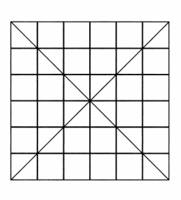

| [冲方丁] 光圀伝 | |
| 冲方丁 | |
| (2015) | |
|
光圀伝
冲方丁
|
|
光圀伝 |
|
序ノ章 天 ノ 章 光圀伝 目次 地 ノ 章 人 ノ 章 義 ノ 章 |
登場人物
水戸徳川家
光 圀.........本編の主人公。水戸徳川家の三男として生まれるが、世継ぎに選ばれる。
頼 房.........光圀の父。水戸徳川家初代当主。徳川家康の十一男。
頼 重.........光圀の兄。幼名は竹丸。世継ぎ決定の時期に病を患い、その座を光圀に譲ることに。
徳川義直......尾張徳川家初代当主。頼房の兄で家康の九男。光圀の伯父。
徳川頼宣......紀伊徳川家初代当主。頼房の兄で家康の十男。光圀の伯父。
宮本武蔵......流浪の老兵法者。
山鹿素行......陸奥国・会津の浪人。名だたる識者の門弟として教えを受ける。
保科正之......会津藩主。三代将軍家光の異母弟。
林読耕斎......徳川幕府に仕える儒学者・林羅山の四男。
冷泉為景......京の歌人であり学者。当時の学者の筆頭・藤原惺窩を父に持つ。
秦 姫.........関白・近衛信尋の娘。
安井算哲......碁打ち。星を見る目に優れる。
朱舜水.........水戸藩主となった光圀が師として招聘した明国の儒学者。
藤井紋太夫...光圀に小姓として仕える少年。
明窓浄机（一）
今、大きな円窓から植えたばかりの梅の木が見えている。枝に積もった新雪が、陽射しに輝きながら雫に変わってゆく。梅はまだ若木だ。雪をかぶる姿にもそれほど風情があるとは言えない。むしろ寒さで縮こまっているように見えて少し可哀想だ。きっと、花を咲かせるときを想うことで寒さに耐えているのだろう。
ここ西山の木はどれもみな若い。山の半分を材木として伐ってのち、植え直した木が大半だからだ。夏などは威勢よく葉を茂らせてみせはするが、太陽を翳らすほど鬱蒼とはしない。陽の明かりが、この三畳敷きの〝御学問所〟にもずいぶん届く。お陰で、西を右に南を左に設えた茶室のごとき部屋に独りで座り、文机を前にして心乱れたる我が身をさえ澄明にしてくれる気がする。
神仏の慈悲などかつて信じたこともないが、もしあるとすれば、やはりこういうものであろう。神も仏も人をむやみと救いはしない。ただ人に己自身のありさまを正しく見せるばかりである。いかに報いを受けるべきか、その人自身に考えさせるためであろう。
円窓から見える木々は、余が死んでのちも、しばらく若いままだ。しかしやがて十分に育ち、いつか老いて倒れたとき、どうやって人はそこに花があったことを知るのであろうか。それこそ余が志を得てからというもの、たびたび痛切に抱いてきた疑問である。
一人の男を殺すことになるかもしれないと考えていたときも、実際にそうすると决めたときも、余はそのことを思っていた。遠い過去に不在となった者のことを、新たに世に生まれる人々はどのようにして知るのだろうか。今や、その思いはいや増すばかりである。
答えは歴史であると人は言う。過ぎゆく月日を伝えるすべの中でも、特に重んじられるべき書たち。それらを記す上で欠かせぬ史筆の才は希有なものである。しかしそれはまた万人に備わっているのだ。
余はあくまでこの文章を、たわむれに書いているとみなさねばならない。慰めはなく、書けば書くほど、いよいよ心が騒ぎ立つばかりだが、それでも書かねばならないものである。かといって亡失を防ぐべきものでもない。世に記されたもの全てが遺されるべきとは限らないのである。
書は手入れの難しく、人の手のかかるものであり、それゆえ人を殺しもする。
火災に襲われたときのことを考えればおのずとわかる。たとえば余の家臣に、矢野〝九郎衛門〟則重という者がいる。この者は、我が妻の侍女であった左近の局の歌集を「亡失は許されず」として護持すると述べた。この者の家が焼けたとき、家人は手足を焼かれながら書を守ることになろう。
書とはそういうものだ。もし左近の局の生涯を、おびただしく記し、その全てを護持せんとすればどうなるか。託された者はいざ炎に囲まれたとき、守るべきものが多すぎて火中に倒れ、結局は、守ろうとした書の全てが失われるのである。
書の亡失を防ぐ一番の方法は、幾つも写し、それぞれ違う場所で蔵することである。だがあまりに書が多ければ、それも不可能である。京人が、多額の金銭を支払って古今和歌の伝授を請うのもそうした理由による。教える側が、ただ金銭を欲するのではない。書を護持するために必要なのである。
これこそ文書が、簡明を尊ぶ最たる理由であろう。
だがそうであっても、やはり、簡明たらんとして懈怠に陥ることもある。『下学集』にある通り。
「如在、此の二字はすなわち尊敬の義なり」
というのを、
「如才」
と略すことで「正理を大失」するのと同じである。むしろ饒舌に任せて書き連ねたものが月日の中で自然と失われるか、それとも何者かの意志によって生き延びるかを問うべきものもあるだろう。
余は、この西山に隠居するまでに四十八人の生命を殺めた。断罪に及び、余が首を刎ねたこともたびたびある。断罪には時間をかけ、三年の猶予を与えたときもあった。ここに、その一人一人を書くことになるかどうかはわからない。重要なのは、四十九人目となった男についてである。
この男のために犠牲が払われ、多くのものごとが、語られざるべきこととして蔽われた。
だがそれでも、この男への愛情が薄らぐことはない。遠い昔に世を去った我が妻への愛情が、これからも決して消えることはないのと同じように。
書は、〝如在〟である。
まさに聖人が述べたように、もういない者たち、存在しないものごとを、あたかもそこにあるかのごとく扱い、綴ることをいうのである。
序 ノ 章
虎が泣いていた。
悲しくて泣いているのではなかった。
声や涙をあらわにするのでもない。胸の中でただ静かに泣いていた。
それが水戸光圀の、いつもの礼の法であった。
江戸小石川邸の能舞台における鏡の間にて──
「大義なり。紋太夫」
光圀は優しく囁きかけると、膝下に捕らえた家老たる男を、ぶつりと脇差しの刃で刺した。箇所は左の鎖骨の上、缺盆である。法城寺正弘が鍛った太く長い菖蒲作りの刃が、すっかり相手の体内に潜るまで押し込んだ。刃は肺を縦に貫き、心臓を傷つけ、胃にまで達している。
このとき光圀は齢六十七。
老人とは思えぬ異様な腕力に任せた、強引で奇怪な殺し方と感じる者もいるだろう。仰向けに押し転がした相手の吻および顔を膝で押さえて声を出させぬようにし、一方的にのしかかるさまは、凶暴な四肢で獲物を捕らえた猛虎の姿そのものだ。
しかしこれは慈悲ある殺し方だった。少なくとも光圀は知っている。貫かれた肺は、ほとんど一瞬で己の血液に満たされ、溺れ死ぬ。苦痛は短く、外傷は少ない。遺体の損壊は主に体内にとどまることから、胸や腹を突いたり、首や胴を叩き斬ることに比べ、驚くほど綺麗な体で死ねる。日本のみならず、明や南蛮においても同様の殺し方があるという。
最初にこの殺し方を知ったのは十七のときだった。旗本の子らと騒ぎ、半端に殺し損ねた無宿人に、たまたま通りかかった老兵法者が美事にとどめを施したのである。
老兵法者の名は、宮本武蔵。確かそんな名だった。その男のせいで飼うことになったネズミのことが、光圀の脳裏をよぎった。武のみに支配された世のありさまを、小さなけだものたちの地獄絵図が教えてくれた。親子兄弟が互いに食らい、犯し合う。武家における礼の法は、常にそうした地獄を内包している。逆に、礼だけが武家を地獄から救う道だった。
光圀は相手の衣で血を拭いながら刃を抜くと、もう一方の缺盆を同様に刺した。膝の下で、相手の口から、生々しい熱のこもった断末魔の息が漏れるのを感じた。刃を持たぬ手では、先ほど刺した傷口から血が噴き出さぬよう、はだけさせた相手の襟元を戻し、力を込めて押しつけている。
蹂躙しているようでありながら、熱く抱擁しているようでもあった。
光圀の頬を涙が一筋流れ、すぐに跡形もなく乾いた。今日このときを覚悟してからずっと泣き通しだったが、実際に涙を流したのは、これ一度きりだった。あとは声もなく、心の中で静かに泣いた。
隠居する前、まだ〝光國〟と署名していた頃は、なかなかそうはいかなかった。ときに声を張り上げ、ひどく長く泣き続けることが常だった。狂おしい熱りでどうにかなってしまいそうになりながら、その激情を礼祭に託すことで一片の救済を得てきたのだ。今頃になってようやく胸中に涙を呑み、静謐として祭ることができるようになったのだが、とはいえ全身全霊を尽くすべき〝礼〟への思いは、今も昔もあまり変わりがない。
昔はほとんど直感的に、今では理路整然と、それが儒の本質の一端であると信じることができる。
ただ信じるだけでなく、もはや自己の血肉であるのだという実感があった。
祭るに在すが如くし、神を祭るに神在すが如くす。
子曰く、吾れ祭に与らざれば、祭らざるが如し。
と論語にある。
如在──死者を祭り、神を祭るとき、実際に死者や神が眼前に在るかのように畏敬をもって振る舞う。そうした〝祭〟のありようは、実際に臨場せねばわからない。
収められているのは八佾篇である。「八佾を庭に舞わしむ」は、分を超えた儀礼を行う〝非礼〟象徴だ。光圀はこの礼楽のくだりが好きだった。礼学たる礼記に比べてずっと、人間の性質がありのまま記されているからだ。孔子をふくむ人間の喜びも悲哀も、理想も傲慢もそこにあった。遥か遠い昔、異国で記された文が、一片の光明となって、今の世に生きる己を照らしてくれる。
今、このときも。三十年以上にもわたって宝としてきた男の命を、己が手で奪い去らねばならなくなったときにも。
なぜこの世に歴史が必要なのか。
お前もこのわしも、ここに在る──
命の脈を失った亡骸に向かって、心の中でそっと囁きかけた。
在るということが、歴史なのだ──
先ほどと同じように、相手の襟で血を拭いながら刃を抜き取った。他方の手で両襟を握って傷口を押さえ続けながら、脇差しを鞘に戻す。それから、ゆっくりと相手の顔から膝をどけた。
眠るように暝目した静かな死に顔があった。光圀の膝に歯を立てて死の苦痛を訴えるということもしなかった。従容として去る者の顔だった。
屍の向こうで今まさに死者となった男が立ち、こちらに背を向けて冥府へ歩み去るのを見た気がした。光圀の胸中で、悲哀がごうごうと音を立てて荒れ狂った。足元の遺体から、圧迫されていた血が、どっと溢れた。血は一滴として床にこぼれず、衣を朱色に染めた。
隣室では能舞台の客たちが寛いでおり、こちらは誰一人として異変に気づかなかった。だがもちろん背後では、異変を察した侍者たちが、とっくに部屋に飛び込んできている。
侍者たちはみな、なすすべとてなく凝然と立ち尽くし、
「な......なにゆえ、ご家老様を......？」
侍医の井上玄桐が、戦慄もあらわに訊いた。
光圀は答えない。このときだけでなく、以後、確かな答えを告げなかった。光圀自身が世を去るときも。よって数百年にわたり、真相が語られることはなかった。
光圀はただ、胸中に悲痛を秘めたまま、死者を見ている。去りゆく死者の向こうに、ひどく大勢の死者たちがいた。自分が祭ってきた者たち。一族や、生涯の伴侶。友も敵も。みなそこにいた。
そこに在って、何もかもを見通してくれている気がした。
いずれ自分も加わることになるその死者の列に、光圀は心の中で礼を捧げた。そうしながら、この一件の真実を、誰にも話さぬことに決めた。話す必要はなかった。何より光圀自身が、この件を洞察するための時間を欲していた。荒れ狂う心の何もかもを書き記したいという思いもあったが、しばらくはその思いを抑える必要があることもわかっていた。
「くれぐれも客衆たちを騒がせぬようにな。密かに遺体を運び、能楽を続けさせよ」
光圀が穏やかに命じると、たちまち侍者たちが安堵の息をついた。この殺害が決して乱心のたぐいではなく、冷静な〝お手討ち〟であることを理解したのだ。
「邸へ戻る。貴様たちも来るといい」
この一言でさらにみな安心した。手討ちの一件を幕府に報告するための文書をしたためるためと知れたからだった。
ほどなくして光圀たちはその場を去った。侍者たちは侍医の玄桐をふくめ十人ほどもいたが、誰も彼らが姿を消したことに気づかなかった。ここでやっと侍者たちは、光圀がこのときのために周到な用意をしていたことを知った。光圀は依然として、家老の〝罪状〟についてはっきりとは語らなかった。ただ、それ以外の二点については明瞭に答えている。
「なにゆえ、御自らお手討ちになさったのですか？家臣にお命じ下されば......」
これは今では現藩主の近臣となっている藩士からの質問だ。自分たちに命じてくれれば良いのにとややもすれば不満げだった。臣下の心情として、それほど遠慮なく上司の家老を斬れるということが、そもそも非常事態であるのだが、彼らにその自覚はない。
「相手は家老だ。斬った者の家格が問われよう。余が命じて斬らせた者までもが、後で腹を切ることになっては困る。こんなことで、あたら侍一人失うのは、もったいない」
光圀は、邸への道すがら、さらさらとそう答えている。
「......なぜ、そのようなお考えのときに、わざわざ御謡をされたのですか？」
侍医の玄桐が遠慮がちに訊いた。この男は、これが尋常ならざる事態であることをとっくに悟っている。だから自然と真相には触れず、真相が落とす影絵をなぞるような問い方をした。
「日頃から、よく謡を忘れて間抜けするものだと、ご自身でお笑いになっていたではございませんか。なのに、なぜ、あの曲を選ばれたのですか......？」
この日、光圀自身も能舞台に立っていた。
むろん当の家老も舞台に登る光圀を見ている。もしそのとき光圀の覚悟が殺気となってあらわれ、家老が危険に感づいたら最後、ことが難しく拗れることになりかねなかった。最悪、藩の命運に関わる事態になっていてもおかしくないのである。
しかも光圀が選んだ曲はよりにもよって『千手』だった。謡は多い。実際、相方が謡を忘れ、それとなく光圀が助け船を出してやる場面さえあった。
それだけではない。『千手』は、勅命によって死刑が宣告された男の物語である。まるでこれから殺す相手に、死を予知しろと言わんばかりの曲ではないか。もし家老が恐怖で逃げ、身を守ろうとして反撃を企てた場合、どうするつもりだったのか。
光圀の跡を継いだ藩主・綱條は、このとき水戸に帰参して江戸不在である。光圀が家老を手討ちにするつもりだったとは、現時点では藩主ですら知らないことは明らかなのだ。そんなときに家老が反撃の手段として光圀の暗殺を謀っていたらどうなっていたか。光圀が孤立無援のまま殺害されたとしても、当の家老は下手をすれば疑われることすらなかったのではないか。なぜ、自ら危険を招くようなことをしたのか。そう玄桐は問うていた。
光圀はすぐには答えず、
「御老公様......？」
玄桐の声が尻すぼみに消えた。
光圀の横顔に微かな笑みが浮かんでいた。笑みに悲しみの翳を玄桐は見て、それで声を消したのだが、光圀にとってはまぎれもない喜びがあった。秘かな礼楽の思いを察してくれた者がいることへの共感であり安心だった。
だがこのときも光圀はただ、さらさらと本心とはかけ離れたことを口にした。むしろ共感を与えてもらったことで、ますます真相を語る必要はなくなったと感じた。
「人を一人殺すなど、簡単なことだ」
光圀は言った。老齢になってもなお、虎が低く声を発するような迫力があった。
「なのに殺すことに気を取られ、謡を忘れたと言われるのも心外でな。それで、しょっちゅう忘れる謡を、しいて選んで演ったまでさ。とは言うものの、きちんと謡えたのは幸いであったが、な」
そう告げ、声に出して笑った。侍者たちはその笑いを武士の気概と信じた。悲しみを見て取ったのは、ほとんど玄桐一人だった。
侍者たちはこの二つの答えだけで満足してしまった。疑問を抱く必要があるとも思っていない。ただ主人の深慮と胆力に感心し、
「さすがは水戸の黄門様」
と口々に称め賛えた。
庭では、色づいた葉が枝から落ちて風に舞っている。人をむやみと悲しくさせるような、いやに澄んだ秋の風だった。
燃えるように赤い落ち葉が風に巻かれるさまを眺めながら、光圀はただ歴史の光と闇を見ていた。
命を殺めたばかりの手が、ひどく熱かった。心には男の静かな死に顔が深く刻まれた。
この二ヶ月後の正月、藩主と入れ違いになるようにして光圀は水戸へ帰った。もう江戸との訣別れは済んでいる。一つ残らず。ほんの少しの思い残しもなく、光圀は巨大な城下の都市を去った。
以後、光圀が江戸の土を踏むことは、二度となかった。
天 ノ 章（一）
一
暗闇の道を、男の首を引きずって歩いていた。
たかが人間の頭部一つ、楽に持ち運べると思ったのだが、これが意外に重たい。
七歳になったばかりの光國にとってはなおさらである。真っ暗な馬場で首を見つけたときは、きちんと胸に抱いたものだが、苦労して運ぶうちに面倒くさくなってきた。かといって放り出すわけにもいかず、生首のほつれた髪をつかみ、引きずって歩くことにした。
どうせ罪人の首なのだから汚れようと気楽なものである。ごろんごろん転がすようにして運んだ。子供が生首を引きずる姿は、それ自体ひどく不気味になりそうなものだが、光國の天性の覇気が、そういう印象を寄せつけなかった。さながら仔い虎が獲物を手に入れたような無邪気さがあった。
周囲は鬱蒼とした雑木林だ。宙空に半月が浮かんでいるが、木々に遮られてろくに月光も地表に届かない。こんな夜更けに、小さな灯り一つで子供が歩く場所ではなかった。しかも一方の手には、日暮れ前に死んだばかりの男の首がある。並の子供なら恐怖で一歩も動けず、震えながら泣き喚いているところだが、このとき光國の頭にあったのは暗闇以上に怖いもの、すなわち父の顔だけだった。
「良い月だな、子龍」
父はそんなふうに切り出した。
〝子龍〟というのは光國の呼び名、即ち字である。実を言えば、このとき光國はまだ光國になっていない。本名である〝光國〟の諱を将軍様から頂戴するのはこののち九歳のときだ。字は他に〝徳亮〟〝観之〟などを得たが、もっぱら〝子龍〟に落ち着いている。
それでも父はたいてい光國を幼名で〝お長〟と呼んだ。世子、即ち世継ぎとして認められた先年まで、光國は〝長松〟や〝長丸〟と呼ばれ、以後は〝千代松〟となったはずなのだが、父が今もお長と呼ぶので、家人や客も多くの場合それに倣っている。
そして何か特別なときに限って、父は光國を字で〝子龍〟と呼ぶ。家人や客もそれがわかっているから、途端に談笑をやめ、はっと父を振り返った。
「今から、馬場の首を持って来い」
光國が何か言い返す前に、父・頼房はそう言った。ご丁寧にしっかり月が中天にさしかかるのを待っての命令だった。
馬場の首というのは、その日、父が自ら斬首に処した男の首のことである。
名を永野九十郎。おかしな人物で、どうやらもともとは父の家臣だったらしい。なのにあるとき藩士の分を捨て、能役者になるべく出奔してしまったのだという。
もちろんこれは罪だが、父は別段、永野に追っ手を差し向けるわけでもなく、放置した。だが出奔したなら姿を消し続けていればよいものを、なんとこの男はしばらく経ってのち、江戸の水戸藩邸にわざわざ姿を現した。しかもただ現れたのではない。頼房が江戸の小石川邸で催した能楽で舞う、能役者として現れたのである。
殺されに来たとしか言いようがない。もちろん家臣たち全員が永野に気づき、一同、あまりのことに唖然となった。中でも父に軍師として仕え、また茶の湯を教示する中川為範など、あまりのことに永野が舞っている間ずっと大口を開けっ放しだった。あるいはそれほど美事に、永野は舞ってみせた。
曲が終わると、当然のごとく騒ぎになった。だがなぜか父は何も言わず、永野の存在など忘れたように振る舞った。もしかすると永野の舞いの美事さに感心し、生かしてやりたくなったのかもしれない。一方で舞台裏に戻った永野は、たちまち家臣たちに捕らえられている。これでは父がどう思ったにせよ処分せざるを得ない。
そういうわけで屋敷の一角にある桜ノ馬場まで引っ立てていった。永野は粛々と従い、馬場で丁寧に履き物を揃えて脱ぎ、ひざまずいて首を差し出した。
父は、ばっさりその首を斬った。
刃が振り下ろされる光景を、光國も見ている。切断された人間の首が落ち、鮮血が噴いても、怖いとか無惨だとかいった思いはない。もっぱら父の美事な刀閃に感心していた。もちろん後でその首に用が出来るなどとは思ってもいなかった。
だが光國は、そろそろ来る頃だろうと予期していたこともあり、驚いた顔もせず無言のまま父に一礼すると、すっくと立ち上がった。
「待て」
縁側に出ようとして父に呼び止められた。
「これを帯してゆけ」
そう言って父は、己の脇差しを光國に手渡した。
もしかすると勇気づけるためにそうしたのかもしれない。だが護身の品を与えられてかえって緊張した。刃が必要となる事態を想像したのである。といっても夜の森で幽霊に遭うといった子供らしい想像ではない。永野九十郎に仲間がいて、首をとりに来たところへ鉢合わせする可能性に思い当たったのだ。何人いるかわからぬ大人たちを敵に回し、単身、首を奪い合う光景が想像された。
（そのときは素早く刺して怯ませ、首を担いで敵の手の届かない場所まで走るしかない）
恭しく父の脇差しを腰に帯しながらそんなことを考えた。大人の腕力には敵わないのだから、正面から戦っては負ける。ではどうするか。そういう、おそろしく現実的な考え方をする子供だった。しかも実行することが大前提の思考なのである。
以前、京都の呉服屋の松葉屋乗九という者が屋敷に来て、光國とその兄弟たちに面白い話を聞かせてくれたことがある。彼が唐土に渡ったとき、船上で龍虎の戦いを目にしたというのだ。龍は嵐を呼び、虎は波の上を疾走し、両者の争いが巨大な波を生み──
「お前はどこにいた？」
というのが、相手の話を遮って発した光國の問いである。
「どこ......？」
冒険譚に子供が目を輝かせていると思い込んでいた呉服屋は、この質問に呆気に取られた。
「そのような有様では船は沈む。船にいられるはずがない。どこで見物していた？」
相手の話を否定しているのではない。本当に疑問だった。荒ぶるものたちの戦いを実際に見たい。なんとしても見たい。では見るためにどうしたらいいか。龍が起こす嵐に耐えられる船をどうやって手に入れるのか。そう考えたとき、当然抱くべき疑問である。少なくとも光國はそう思っていた。
だが呉服屋はこの理責めに閉口し、
「おそろしき若様かな」
話を切り上げ、さっさと逃げてしまった。
そういう子供だから、いざとなれば本当に刺す。ただし相手を怯ませ、その動きを鈍らせるためだ。とどめを刺そうなどと考えていたら捕まってしまう。そこまで判断できるし、心はただちに実行の用意を整える。それが光國だった。あるいは武家の子供だった。
「ありがとうございます」
脇差しの礼を述べ、支度をした。その様子を父が黙って見守った。淡々とことを進める父子に、家臣や女房たちは、はらはらした顔を隠せずにいる。さすがに附家老の中山信吉や軍師の中川為範などは心配顔などしないが、代わりに興味津々の目で光國を見ていた。
ふと、ここにはいない兄弟たちの顔が浮かんだ。たった今、命じられたことがどんな首尾に終わるか、翌朝には光國の兄弟全員に知られているはずである。
（驚かせてやれ）
弟たちはもとより、あの病み上がりの兄が目をみはるさまを見てやりたかった。死に損ないのくせに、涼しげな顔ばかりしている兄だ。そのせいでこっちは常に小馬鹿にされているような思いがする。心ゆくまでぶん殴ってやりたいと何度思ったか。
（おれが世子だ。父上の子だ）
兄弟たちへの激しい競争意識で、いっそう心が引き締まった。
履き物をつけて振り返ったとき、女房の一人が、奥向きの老女に囁かれて廊下のほうへ向かうのがちらりと見えた。
（嫌だな）
ふいに兄のことも父のことも脳裏で薄らいだ。女房が、英勝院様に報せに行ったのだとわかったからだ。父も気づいているが何も言わない。その女房にも聞こえるよう、
「では行って参ります」
からりと大声で言った。英勝院様を心配させるのだけは嫌だった。
英勝院様は祖父・徳川家康の側室だった人で、水戸家の子供たちの面倒をよく見てくれる。その英勝院様につれられて将軍・家光様に拝謁したときから、何か来るぞという予感はあった。家光様が手ずから玩具を下さったと光國が報告した際、父の顔をよぎるものがあるのを察し、予感が強まった。
父・水戸徳川頼房は、子供の出生には無頓着なくせに、教育にはやたら熱心だ。特に文武の習い事以上に、我が子の心胆を鍛え上げることにかけては、徳川御三家の中でもとびきり常軌を逸している。何か祝い事があるたび、真っ暗闇に放置されたり、お堀に飛び込まされたりするのだ。少しでも怖じ気づこうものなら、
「この程度で怯むようでは、我が子にあらず」
などと言われるのがわかっている。言われた子供がどれほど傷つくか理解する感性は頼房にはない。我が子を勇猛果断な武将として育てることに、一種異様なほど熱烈な使命感を抱いていた。
光國も光國で、父に挑む気で命令を果たしてきた。目の前に父と呼べる相手がいることが幸せだった。六歳までろくに会えなかった父である。会えないどころか本当に子供として認めてもらえるかどうかもわからなかった。そんな心細さに比べれば、無茶な命令など大したことがない。何より、
「我が子にあらず」
という言葉をひっくり返せば、我が子として光國に期待しているということに他ならないではないか。それも、ただの子ではない。将来、父の跡を継ぐべき世子としてである。
──自分は、この父の子だ。
そう思うだけで、いつでも意外なほど勇気が湧いた。
頼房も頼房で子供にそう思わせるだけの威厳があった。今このときも頼房は座ったまま黙ってうなずき、光國を見送っている。光國が帰るまで決してその場を動かないであろうことが察せられた。それだけでさらに勇気が湧いた。これでまた一つ父に認められる。そういう気持ちで嬉しくなった。
お気をつけて、足元をよく御覧になるのですよ、などと口々に言う者たちをよそに、光國は颯爽と出かけようとして、ふと足を止めた。
くるりと振り返り、父を見た。
「父上、一つお訊きしてよいですか？」
「なんだ？」
「首をどうするのですか？」
ちょっと疑問だった。まさか床の間に飾るわけではあるまい。
頼房に咎人の首を梟し、万人に哂す気がない以上、普通は遺族が引き取るか、近隣の寺に命じて片付けさせる。だが永野に家族はなかった。いたのかもしれないが、少なくとも藩士をやめて能役者になった男の遺体を引き取る者はいなかった。
もしかすると頼房が、それなりに供養してやるのだろうか。罪人を弔うことは幕府の禁じるところだが、かといって、弔う者を罰するような者もいない。死をもって赦すという観念は上下の身分を問わず、わりと滲透している。
だが頼房の答えは光國の想像を超えた。
「煮る」
と言った。
「煮る？」
思わず聞き返した。
頼房は重々しくうなずいた。
光國はちょっと呆気に取られつつ、
「わたしも見てよろしいですか？」
興味を惹かれて訊いた。なんとなく面白そうだった。どうやって人間の首を煮るのか。そもそも何のためにそうするのか。恐いもの見たさで、どきどきした。
頼房はしかつめらしい顔のまま、また一つうなずき、
「行け」
と言った。
光國もそれ以上は何も口にせず、こくんとうなずき返し、暗い雑木林の中へ歩んでいった。
二
暗闇の中、見よう見まねで舞っていた。
首尾良く見つけた永野の首を引きずりながら、能舞台で見た動きを真似てみたのである。
永野の仲間など現れはしなかった。いつでも脇差しを抜けるよう構えていたが、肩すかしを食らったわけである。そもそも不逞の輩を邸に侵入させる父ではない。緊張は薄れ、無性に退屈した。
馬場は敷地の南西にある。邸まで、四町（約四百四十メートル）。大した距離ではないが、とにかく道が悪い。今いる小石川邸は、父が将軍様から頂戴した四つ目の屋敷で、七万六千坪以上もの土地はほぼ未整備だった。父はしばらく前まで江戸城内の松原小路にある江戸邸にいた。客を招いたり子供の様子を見るときだけ小石川に泊まっていたのである。他に本郷駒込の下屋敷、浅草谷島の中屋敷があり、二つとも整備が済んでいる。いよいよ小石川邸に格別の庭を造ろうというわけだが、今のところは長大な屏に囲まれた原始林に過ぎなかった。藪があり、水流があり、鬱蒼とした林がある。自然への畏敬を感じはするが、庭園を巡る面白さなどはかけらもない。
悪路を辿って首を運ぶという重労働と退屈を紛らわそうと色々考えるうち、
（綺麗だったな）
この目で見た永野の舞いが思い出されたのだった。
曲目は『千手』だと軍師の中川が言っていた。中川は、織田信長の弟・織田有楽斎の甥である。軍学を修めるかたわら有楽流の茶道を学んで一派をなし、『茶湯手引草』なる書を著すにあたっては当世の茶の堕落を厳しく非難している。水戸藩を代表する茶人であり、当然、芸能にも詳しい。その中川の批評眼からしても永野の舞いは美事だった。
光國はこの中川がけっこう好きだ。物品への過ぎたこだわりを排しながら、それでいて常に人の意表を衝く「かぶき者」の側面があった。若い頃など、父・頼房と一緒に、斬新きわまりない派手な衣裳を見せつけ、町を闊歩したという。いずれ光國自身も同じ道を歩むことになるのだが、このときはただ『千手』の美しさを脳裏によみがえらせ、自然と体が動くのを楽しんだ。
（──はや後朝に、引き離るる、袖と袖との露涙）
一の谷の合戦で捕らえられた男・平重衡と、その男に仕えた女の曲だ。
男は丁重に鎌倉に送られたが、その罪は消えず、それどころかどこまでも追ってきた。そして勅命が下され、死罪と定められた。その高潔で罪深い男に同情したのは本来敵である源頼朝だ。頼朝は女官の一人、手越の宿の長の娘たる千手を遣わした。
千手は琵琶と琴を携え、虜囚の男に仕えた。そして二人の短い恋が生まれた。
（──げに、重衡の有様、目もあてられぬ気色かな、目もあてられぬ気色かな）
夜明けとともに訣別れが訪れ、男は死へ赴く。男の恋も、女の恋も、不思議だった。片方が死ぬとわかっていて恋をする。不条理というより、ただただ不思議で、そして綺麗だと思った。
気づくと月が見えた。でたらめに舞いを真似つつ進むうち、頭上の木々がなくなっていた。心配になった父の家臣数名が、ひそかに木陰からその様子を見守っていることには気づかない。月を見上げ、人間の首を引きずりながら、ふわりふわりと舞い続けた。それから、あまり遅くなると父に失望されるのではないかと思い、慌てて帰路を辿った。
三
翌朝、大鍋の中に本当に人間の首が浮いていた。
邸の裏手の庭だった。火が焚かれ、煮立った湯の中で、人間の顔が右へ左へぐるんぐるん動く様子があまりにおかしく、光國は弟や妹たちを背後に引きつれ大笑いしている。一緒に笑う子もいれば、生首の気持ち悪さに涙目になる子もいた。
兄はいない。この六歳年上の「竹の字」こと竹丸は、せっかく光國が首を煮る様子を見物しようと誘ってやったにもかかわらず、
「私はいいよ。書を読みたいから」
などと澄まし顔で断ったのである。光國は猛烈に腹が立った。自分の戦利品である首を見せてやると言っているのに。父上にも誉められたんだぞ。しかも脇差しまでもらったんだ。おれが父上に誉められるのがそんなに悔しいのか。そんな激しい思いが湧いたが、激しすぎて言葉にならない。
「首を見るのが怖いのか」
ただ詰るように言った。
「怖くはないよ」
兄は穏やかに返す。しかも幼い子供を宥めるような微笑みを浮かべている。余計に腹が立つ。ぶん殴りたいが、そうすることもできない。
「だったら来ればいいじゃないか。さあ、来い。来いったら」
兄の衣服を破らんばかりに引っ張るが、
「よせ。また投げられたいか」
この上なく穏やかな一喝で、びくっとなって手を離してしまった。
そのせいで途方もない悔しさに襲われた。兄がそうしようと思えばできるということは身をもって思い知らされているのだ。光國の子供離れした腕力と体格は評判だったし、附家老の中山信吉もその頑健さを誉め、世子に推薦する理由の一つとした。肉体の丈夫さは世子となる資格の一つだった。だがその光國の誇りを、この兄はあっさり打ち砕いた。
病に倒れてそのまま死ぬはずだったくせに。死に損ない。そう罵ってやりたかったが、
「後で見たいと言っても許さないからな」
そう吐き捨てるのが精一杯だった。兄は事も無げにうなずいてみせ、こう告げた。
「首を煮るのは別に見たくない。きっと器にするんだ。それは見てみたいな」
「......器？」
光國はおかしな言葉に面食らって、ますます苛立っている。
「何の話をしてるんだ。首のことだぞ。器じゃない」
「同じことさ」
兄はひょいと立ち上がると、
「わたしは見せてもらえないだろう。見るべきなのはお前だという話をしているんだ」
何冊かの書物を手に、なんだかわからないことを言いながら部屋を出て行ってしまった。他ならぬ父と光國に遠慮してのことだとは、このときの光國は思わない。ただ馬鹿にされたと思った。腹立ちまぎれに、弟たちばかりか妹たちまで呼び集めて、自分の戦利品を自慢し、
「しっかと見ねば、斬るぞ」
父からもらった脇差しを叩いてそんなことまで言った。
「ねえ兄上様、触らせて触らせて」
弟たちが脇差しに手を伸ばすのを邪険に払いつつ、すらりと刃を抜いて、
「これはおれのだ。触るな」
切っ先で煮沸中の首をつつき、
「危のうございますよ。火傷しますよ」
藩士が呆れてとめるのも構わず、長箸をもう一方の手に持ち、目玉をほじくり出した。
妹たちが、きゃあきゃあ言葉にならない喚声を上げた。
「ほら、目玉だぞ。目玉だぞ」
白く濁った目玉を刃で刺して、妹たちに近づける。
「やだやだ、兄様、やめてやめて」
妹たちばかりか弟たちまで逃げ惑うさまをたっぷり楽しんだ。そうするうち、軍師であり茶人である中川が首の様子を見に来て、たしなめた。
「肉は裂いてもよろしいが、骨に傷をつけてはなりません。お父上に怒られます」
中川は光國に刃を納めさせると、煮られてぐずぐずになった首を網でさらい、何ごとか指示し始めた。何であれ時間がかかると見て取った子供たちはすぐに飽きてしまった。騒ぎながら邸に戻り、中川の目の届かぬところで光國は再び刃を抜いた。
「おれの刀だ。これでおれも武士だ」
ちょうど廊下に現れた奥向きの女房の一人が、弟妹に囲まれながら白刃をぶらさげて足早に歩み来る光國を見て、ぎょっとなった。二歳児から七歳児の子供たちのど真ん中に研ぎ澄まされた刃があるのだ。いつ誰が大怪我をしてもおかしくなかった。
「危のうございます！」
慌てて叫ぶ女房に、光國は大股で歩み寄ると、笑って刃を一閃した。
刃は女房の帯をばっさり断った。女房が驚いて悲鳴を上げ、その着衣がはだけた。女房が恐慌して後ずさろうとするほど着衣が脱げてゆくさまに、子供たちは大喜びだ。
たちまち老女の小ごうがすっ飛んできた。〝老女〟は奥向きの女房を束ねる役職で、小ごうはまだ四十代だ。男勝りの養育役であり、激怒したときの迫力は並大抵ではなかった。光國は慌てて刀を納めたが遅かった。小ごうが光國を一瞥し、
「父君からいただいた小刀を、なんたる無体なことに用いられるか！」
邸中に響かんばかりの叱声を放った。
弟妹たちがびっくりして泣き出した。帯を斬られた女房も恥ずかしくて泣いている。もちろん光國はこのとき泣かなかったが、後で人知れず泣いた。というのも、即日、この一件が父の耳に入ったのだ。そして附家老の中山信吉が、怖い顔をして光國のところへ来て、
「父君のご命令であります」
なんと、せっかく与えられた脇差しを、取り上げることにすると告げたのだった。
「おれの刀だ！」
喚いたところで聞く中山ではない。また、光國が父に次いで逆らえないのが中山だ。光國こそ世子にふさわしいと父に言ってくれた男だった。
「これは父君ご自慢の脇差し。刀にふさわしい振る舞いをなされよ」
ぴしりと言い、光國の脇差しを持って、さっさと去ってしまった。
光國はその場に座ったまま、むっつり黙って涙がこぼれるのを我慢している。
（父上が、おれにくれたんだ）
そう思うと、とても我慢できなかった。弟妹たちに見られないよう庭に出て、わんわん泣いた。
（兄が告げ口したんじゃないか）
そんな考えが湧いた。もちろん、どう考えても兄ではなく、小ごうである。しかし悔しさをぶつける相手として、兄以上にふさわしい者はいなかった。兄のせいで大切な脇差しを失った。言いがかりであることは自分でもわかっているが、そう考えることでやっと涙が引いた。
「あいつめ、今に見ていろ」
涙声でそう言い放ち、ぐすっと洟をすすった。
四
父が呼んでいると小ごうが言うので、光國は恐怖を抱きながら茶室に向かった。
お前に刀はふさわしくないと叱責されると思っていた。そればかりか、二度と刀をやらないと言われるのではないか。せっかく頑張って首を運んだことも、これまで果たしてきた父の命令も、全て無に帰す。そう思うことは悲しさではなく恐怖を呼んだ。
死罪を宣告される人間というのは、こういう恐怖に襲われるのではないか。そんなことまで考えた。手と口を浄めたはいいが茶室の外でしばらく立ち往生し、やがて思い切って中に入った。
「失礼します──」
父と中川がいた。そして二人の前に、びっくりするようなものが置いてあった。
しばらく凝視して、やっとあの永野九十郎のものだとわかった。馬場で見つけたときとは別の物体と化していた。黒く漆を塗られ、金箔をあしらわれ、美しく装飾された、美事な何かだった。
（器にするんだ）
卒然と兄の言葉が思い出された。光國が端坐すると、中川が無言のまま酒をそれに注いだ。
美しい、髑髏の杯に。
（綺麗だ）
光國は素直にそう思った。人間の頭蓋骨がこうも素晴らしい品に様変わりするとは想像を絶した。髑髏の不気味さが、かえってその美しさにただならぬ迫力を与えている。
父が酒で満たされた髑髏杯を取り、愛おしむように眺め、飲み干した。その所作の一々に、
（これが供養なんだ）
問答無用で納得させられた。あたかも目の前に生きた永野がいるかのような思いすら湧いた。
父が自分の前に髑髏杯を置き、中川が酒を注いだ。ちらっと父を見ると、うなずき返された。光國はおそるおそるその綺麗な杯を手に取った。もとは人間の一部であるという事実に、残酷さよりも、貴さを感じた。目玉をほじくり出したときの馬鹿騒ぎが思い出され、やたらと恥ずかしかった。
ごめんな、知らなかったんだよ。こんなに綺麗になるなんて。心の中で髑髏に詫び、ゆっくりと中身を干した。
強い酒だった。だが餞の杯を干さないわけにはいかない。しっかりと呑んだ。途端にくらくらしたが、端坐した姿勢は崩さない。常に父が自分の坐相を見ていることはわかっていた。坐る姿におのずと人品があらわれるというのが公家も武家も問わぬ常識である。
臓腑が焼かれるように熱くなった。杯を戻し、顔を上げると、さらに驚くべきものに出くわした。
父が微笑んでいた。いつもの豪気な笑いではない。優しげで、ほんの少し寂しげでもあった。むろん、永野九十郎を斬らねばならなかった悲しさを込めて、父なりの〝礼〟と〝祭〟を今まさに行っているのだなどとは、到底このときの光國には理解のつかないことだ。
ただ、脇差しを取り上げられたことすら忘れるような喜びを感じた。
（父上が微笑んでいる）
杯の中身を飲み干したとき以上に、かっと胸が熱くなった。
（この自分に向かって微笑んでくれている）
ただそれだけで幸せだった。
明窓浄机（二）
史筆の才は、万人に備わっている。
もともとは天の星々を計り、暦を作る聖人のことを〝史〟と呼んだ。
古来より暦を作ることは最も神聖な、文字を司る人の務めであったという。それは天子の言行を書きとめる官にはじまり、〝史〟と呼ばれるような太政官や神祇官を指すことを経て、今では由緒あって事を記録するすべに長けた学識豊かな人であれば、史の職称を得て良いとされるようになった。
そればかりか、いずれは儒学も仏法も修めていない者ですら、そう呼ばれるようになるのだろう。書に、「仁をもって憂えず、智をもって惑わず、勇をもって懼れず」と述べられているのは、何も君主や聖人の心をのみ意味しているのではない。学を修めていない人々にも道があることを告げているのである。文字が神聖であったことは忘れられて久しいが、それを思い出す道はまだ残されている。
人々が自由に記すところの、〝如才ない〟行実の記のほとんどは、失われぬよう護持を命じるべきものではないだろう。だが「大失」されるか否か、せめて歴史に問うてみたいものも中にはあると思う。詳細らかに述べることでしか辿れぬ人品の核心も中にはあるからだ。
余の場合、幼少の砌にそれがある。余には兄が二人いて、両方とも病んだ。一人は生き、一人は死んだ。余が三男であるにもかかわらず、長子のごとく〝お長〟と名づけられた理由の一つである。
本来なら余ではなく世子となるはずだった次兄の名を、亀丸という。生まれながら病気がちであったため、その養育にはみなひどく気を遣った。
亀丸が四歳のときのことだ。父が戯れに、こんなことを亀丸に言った。
「お長を養子にするがいい」
もちろん、お長とはまだ幼い余のことである。休が弱い亀丸に万一のことがあったときを考え、養子にせよと言うのだ。それほど父が常に亀丸の生命を心配していた証拠でもあるだろう。
亀丸は父の言葉を大事に受け止めたようであった。四歳の子供なりに。さっそくそこにいた幼子に、
「おれのお長」
と呼びかけている。
そして乳母の武佐の腕の中で幼子が泣くと、
「おれのお長を泣かすな」
自分まで泣きそうになりながら怒る。四歳の子供の真心とはそういうものである。乳母に抱かれた幼子を、弟ではなく自分の子と思い、愛そうとした。
「さ、おれを父上と呼んでみよ。父上と」
幼子に向かって、しきりに言う。幼子にたやすく言葉が喋れるはずがない。父も乳母もただその様子を、微笑ましく思うばかりである。だが幼い者同士、何か心通じるものがあったのであろう。ある日、いつものように亀丸が幼子を呼ぶと、幼子は亀丸をじっと見つめ、
「ちちうえ」
と口にする。
亀丸はこれを大いに喜ぶ。
「お長が父上と呼んだ。おれを父上と呼んだ」
父も乳母も驚くが、亀丸の喜びに感化され、優しく笑う。
「お長は亀丸の子」
亀丸が死んだのは、そのひと月後の秋である。
「ちちうえ」
それが幼子がこの世で発した、最初の言葉だ。間もなく死ぬことになる四歳の次兄に向かって発した言葉。父がそう教えてくれたし、そのとき席を共にした者たちも同じように話してくれた。だから事実であろうと判断できる。生まれて初めての言葉が、幼子にとって真理となったであろうことも。
これが〝如才ない〟余の史実である。
余にとって、父が全てだった。
天 ノ 章（二）
一
醜い、小豆のような小さなできものが、全身に浮かび上がってきていた。
（こんなふうに終わるのか）
高熱と体中の痛みにさいなまれ、日に日にその思いが強まった。
十二歳の正月、光國は死病に罹った。
疱瘡──すなわち天然痘である。
前年の暮れから何となく体がだるかった。やがて頭痛がやまなくなり、腰や胸といった、かつて痛みを覚えたことのない箇所がずきずき痛むようになった。だがそのときはまだ、馬術の練習のせいだろうと高をくくって誰にも言わなかった。
光國の馬術好きは幼い頃から度を超している。馬を疾走させながら片足を鐙から外して地面すれすれに身を傾けたり、鞍の上に立ったりと、馬術の師の制止も聞かず無謀な曲乗りを試みるのが常だった。一度など馬がモグラか何かの穴に脚をつっこみ、盛大に転倒したことがあった。手足どころか首や背骨を折っていてもおかしくない事故だったが、地面に投げ出された光國は完全に無傷だった。
運が良かったというより、持って生まれた身の敏捷さと、怖いもの知らずの心のお陰である。衝撃の瞬間に身をこわばらせるのではなく、力を抜いて受け流す。そうしながら手足で急所をかばって打撃を最小限にする。父や馬術の師たちから教えられた通りにしたまでである。だが、思い切り宙に投げ出され、天地もわからぬ状態のまま猛烈な勢いで地面に叩きつけられるというときに、教え通りにやってのけられる者など滅多にいない。十歳そこそこの子供ならなおさらである。
このことによって父からはたいそう誉められた。馬を上手に乗りこなすこと以上に、己の生命を守る素質に恵まれていることこそ、世子たる者にふさわしいからだ。
落馬の不手際を咎められることを恐れていた光國にとっては望外の喜びだった。最近の父は、よく光國を誉める。これまでに何度も厳しい〝お試し〟に応えてきたからだろう。父・頼房の内心はどうあれ、光國はそう信じた。自分に対する父の愛情は盤石になろうとしている。そのはずだった。だが病が、そんな喜びをあっけなく打ち砕いた。
ある朝、高熱が出て起き上がれず、父は侍医をつけた。だが数日していったん熱が下がるや否や、白っぽい豆粒状の湿疹が顔や胸元に現れた。侍医は驚愕して光國が疱瘡に罹ったことを父に告げた。
疱瘡は強力な伝染性で知られている。しわぶき一つで病気がうつる。死亡率は五割を超える。まさに死病だった。光國は即日、屋敷の離れの小屋に移された。隔離である。光國と家族の接近は厳しく禁じられた。看病にあたる者たちも、過去、疱瘡を経験した者に限られた。一度この病に罹れば、二度と罹らないというのが経験からくる常識だったからだ。
隔離の孤独は、光國をとことん打ちのめした。兄弟の中心にいたはずの自分が、完全に疎外され、家族の顔を見ることすら許されなくなったのだ。寂しさはたやすく怒りに変じ、
「おれが死ぬと思ってるんだろう！」
看病する女房や老臣たちに癇癪を爆発させ、出された薬湯をぶん投げたりした。だが、すぐに爆発する元気もなくなった。皮膚の下でおびただしい数の虫がわいたような発疹が、喉の奥にも現れ始めたからだ。喉から胸にかけての痛みは尋常ではなく、声を出せないどころか息をするのも苦痛だった。
唾を飲むたび、ぱちん！ と火中の薪が激しく爆ぜるさまを連想させる激痛が走った。肉体にわだかまる熱が、じわじわと生命をそぎ落としているのが実感された。何より、高熱で日に日に意識が朦朧とし、思考が困難になることが、避けがたい死を予感させた。たまらなく怖く、悔しかった。
（刀をもらえるはずだったのに）
孤独な病床にあって、繰り返しその思いが湧いた。気づけば力いっぱい歯を食いしばっていることもあった。その思いだけが自分を生につなぎとめる最後の執着のような気がしていた。
七歳のときに取り上げられて以来、何度か刀を頂戴する機会があるにはあった。だがそのたび喜びのあまり刃を振り回し、誰かに叱られては取り上げられ、ついには刀を持つこと自体、父から禁じられてしまったのである。
しかしそれも、前年の暮れから緩和されつつあった。その証拠に、正月の儀式のため御城に登る際は、刀を差して邸を出るよう父から言われてもいた。
父からもらった刀ではない。九歳のとき、江戸城中において元服し、将軍・家光様から直々に賜ったものだ。行光作とのことで、受け取るときに思わず生唾を飲み込んだほど美事な拵えをしていた。
（やっと父上に認められたのに）
正月を機に、いよいよ父が光國に刀を差すことを許す気でいることが薄々察せられた。しかもそれには、五年前に暗闇で人の首を拾ってくるという肝試しに応じた褒美以上の意味があった。
元服の際、刀とともに手に入れたのが名だった。子龍という字に続いて名付けられた、いわば本名たる「光國」の諱である。家光の『光』の一字をいただいたもので、この新たな名に胸が高鳴った。
「大国を光有す」という、『晋書』の一節にも通じる名だ。そう軍師であり茶人である中川為範に教えてもらった。国の光を有するというのはまさに天子の役目であるが、恐れ多いとは思わず、ぞっこんこの名に惚れ込んだ。しかし、喜び勇んでさっそく英勝院様宛ての手紙の署名に使った途端、急に違和感が湧いた。理由もすぐにわかった。
帯刀を許されていないからだ。そのせいで頂戴した名が自分のものとは思えなかった。刀も持っていない者に、諱はふさわしくない。刀と名とを同時に身に帯びて初めて、自分は光國になる。
だから、刀だった。
念願のものがようやく手に入るのだ。刀と名、そしてそれらが、父・頼房の息子であるという立場を、すなわち世子の座を、揺るぎないものにしてくれると信じていた。
これでやっと、おれも武士だ。水戸徳川頼房の本物の子だ。世子だ。そう思って小躍りして喜んだ。その矢先の罹病だった。むろん正月の儀式にも出席できなかった。
幸福の絶頂から、奈落に落とされた思いがした。光國にとって寛永十六年の正月は、失意のどん底を意味した。それでもまだ正月初めは希望があった。これしきの病に負けてたまるか。だが、そう自分を奮い立たせることができたのは、ほんの数日の間だけだ。病状の悪化と、家族が伝染を恐れて見舞いにも訪れてくれないという孤独が、たちまち希望を奪い去ってしまった。
（なんで世子でいられたんだろう）
朦朧と天井を見上げ、ぜいぜい喘ぎながら、ついにそんなことを思うようになった。
というより、これまで無意識に避け続けていた思考だった。なぜ自分なのか。自分が選ばれた理由はなんだったのか。冷静に考えれば、子供だってそのおかしさに気づく。
兄がいるのに。
二人の兄のうち、次兄の亀丸は光國がまだ赤ん坊だった頃に死んだ。長兄である竹丸は、ちょうど世子決定の時期、重い病に罹った。だから三男である光國が世子に選ばれた。これが理屈である。
だが長兄の竹丸は生き延びた。しかも死に損ないとは思えないほど、頭も良いし、人品も優れている。なのに竹丸が病から回復したとき、すでに光國を世子とする届け出がなされていた。水戸藩の附家老である中山信吉が、光國が世子にふさわしいと言ってくれたのだが、
（何か変だ）
ぽっかりと大事な何かが欠けている感じがした。それは六歳のとき水戸から江戸に呼ばれ、この小石川藩邸で父の子として住まうようになってから今に至るまで、ずっと感じ続けていたことでもあった。しかし何が欠けているかわからず、漠然とした不安がいつでもつきまとった。
その不安の原因が急にはっきりしたのは、くだんの元服の儀の最中だった。将軍・家光様に、父が慇懃にお礼を申し上げたときのことだ。
「将軍様が御自ら我が世子と御定め下さいました子が、晴れてこのような儀を迎えられましたこと、大いに感謝しております──」
父のこの言葉に、冷たい何かを感じた。咄嗟に自分が何を感じたのかわからなかった。数日後にやっと、胸を氷柱で刺されたような衝撃を受けたのだということを悟った。
御自ら我が世子と御定め下さいました子。
附家老の中山信吉が父のそばにいるのは、そもそも将軍・家光様がそうするよう命じたからだ。中山は父が若い頃の教育役──すなわち傅役でもある。中山が光國を水戸徳川の世子として推したということは、つまるところ家光様がそう考えたということではないか。
別にそのこと自体に問題はない。将軍様は、各家の相続に目を光らせている人だ。そのお目鑑に適ったのならば、ますます喜ぶべきことではないか。
だがしかし、父はどうなのだろう。この自分を世子とすることを、父はどう思っているのだろう。我が子の心胆を鍛えると称する数々の度を超した肝試しや体力試しは、本当に父の愛情から来ていたのだろうか。それとも、将軍様が勝手に決めた世子に対する、腹いせであったとしたら──
幼い光國の思考は、この時点でぷっつり途切れている。それ以上考えることがたまらなく怖かったからだし、そもそも大して理路整然と父の心を推測したわけではない。ただ、漠然と抱いていた違和感と不安の理由が、はっきりしたのは確かだった。
（父の考えではなかった）
自分を世子に選んだのは中山や将軍様、あるいは英勝院様だった。父はいない。父が何かを語ってくれたことなどない。わかるのは、試されているということだけだった。
（おれはなぜ世子でいられるのか）
もし、父が命じる肝試しや体力試しに失敗していたら、どうなっていたのか。考えるだけで身が凍る思いがするほど怖くなった。
（きっと、おれはもう父にとって世子ではない）
こんな、顔も体も醜く変貌するような病に倒れた時点で、父の中から自分の存在など跡形もなく消えてしまったに違いない。そんなひどい確信に襲われた。まさに悪夢だった。
（刀をもらうはずだったのに）
その執着だけが、ほとんどゆいいつ絶望を食い止めてくれた。だがそれもいつしか限界をきたした。あとは生きながら屍へと変じてゆくばかりだと思った。
そんな、体よりも先に心が弱まる一方のある日。焼けつくような喉の痛みに耐えながら、なんとか浅い眠りを貪っているところへ、ふいに、ひやりと額を冷やされるのを感じた。
高熱のせいで感じる悪寒ではない。光國は反射的に、うっすら目を開けた。発疹は瞼のそばにも生じていた。そのせいで瞼が腫れぼったいのか、それとも眠っている間に泣いていたのかわからなかった。後者ではないことを心から願ったのは、眼前にいる相手が誰であるか悟ってからだった。
「寝ていろ、子龍。喋らないほうがいい」
兄だった。さすがに、ぎょっとなった。家族はとっくに自分を見捨てたのだと思っていた。いったい何をしに現れたのか。弟が死にかけている姿を確かめに来たのか。
「熱で苦しいからといって、布団から手足を出しては駄目だ。代わりに頭を冷やすといい」
そう言いながら兄は、水を張った盥から濡れた手拭いを取り、水を絞っている。盥の水には雪の塊が浮いていた。冷水につけられた別の手拭いが自分の額に載っているのを感じた。
「豆粒みたいなできものには、なるべく触るな。潰れて、あばたになるぞ。息が苦しいのは、喉の中にも同じようなできものがあるからだ。なるべく静かに息をするといい」
諭すように兄が言う。ひどく優しい声だった。こんなふうに額を冷やすなど聞いたこともなかったが、確かに気持ちよかった。
「喉が痛むだろうが、なるべく多く白湯を飲むといいぞ。汗をかくことで熱が下がる」
そばにいた女房たちが、珍しげに兄の言うことを聞いていた。兄は一時期、京の寺に預けられていた。そのため江戸の人間の知らないことを色々と知っているのだ。もともと僧にさせるため寺に預けられたのだという。だが数年ほどで江戸に呼び戻され、弟妹たちとここに住むようになった。
これもまた変だった。長子なのになんで寺なんだ。なんで弟のおれが寺にやられなかったんだ。ひそかに疑問に思っていたが、口にしたことはなかった。もちろんこのときは、寺がどうという以上に、兄が目の前にいることが疑問だった。何しに来た。そう聞いたかったが、喉の痛みで口に出せず、
「うつるぞ」
かすれ声で、なんとかそれだけ言うことができた。
兄が、にっこり笑った。
「私は、遁花の身だよ。父上に納得していただくのは骨が折れたがね。弟たちが私の真似をして、ここに来てしまうのが心配なんだ」
それで唐突に、兄が罹った〝重い病〟もまた疱瘡であったことを思い出した。〝花〟は漢語で疱瘡を意味する隠語である。遁花とは文字通り疱瘡を遁れた者──免疫者のことだ。
ちなみに梅毒も、いったん罹れば二度と同じ病に冒されないと信じられている。だがこちらは潜伏性があり、治ってもいないし人にも伝染する。それに対し疱瘡は、自然治癒が確かに免疫となる。
（だから平気な顔をしているんだ）
心のどこかで兄が看病してくれているという事実を喜ぶ自分もいたはずだった。だが実際に意識されたのは、自分と違って、死病を克服して平然としていられる兄に対する憎らしさでしかなかった。
（おれが死ねばいいと思っているんじゃないか）
疑念ではなく、ほとんど確信だった。自分が死ねば、世子の座は兄のものなのだ。
実際、その準備が着々と整えられているのだという、痛烈な裏切りに遭ったような怒りもあった。
光國が元服の儀によって「光國」になった翌年、父は、兄の存在をあらためて幕府に届け出ていたのである。奇妙にねじれた届け出だった。このときの幼い光國には、そのおかしさをはっきり言葉にすることが出来なかったが、実際、何もかも変だった。
嫡男は光國であるため、届け出では、兄は次男となった。書類上、光國の弟とされたのである。六歳も年上の弟だ。さらには、兄はいわゆる〝庶長子〟とされた。正室ではなく、妾腹の子であるということだ。よって正当な嫡男がいる以上、家督は継げない。そういう理屈になる。
ここでまたもや書類と事実が食い違う。光國と兄の母は、同じ人物なのである。嫡男と庶長子が同じ母親から生まれている。それに何より、父に正室はいない。なぜか生涯正室を置かなかった。そんな人物は徳川家の中でも頼房だけだ。
正室不在のまま、五人もの側室がいた。母はその一人のはずだった。だがそもそも母が側室なのかどうかも曖昧なのだ。というのも、なんと母の父兄は、母が頼房の側室であることをいまだに認めていないのである。頼房が光國や竹丸の存在を幕府に届け出たことで、ほとんど既成事実として母が側室とされたようなものだった。
そうして、光國が元服した二年後──この死病に罹る前年に、父は兄をつれて家光様に御目見得している。光國のときは英勝院様とともに、江戸城の大奥で、こっそりという感じで家光様に会った。だが兄の場合、父とともに堂々と城の表側で会っている。
まさに光國が、元服の際の刀に続いて、家光様からその年の正月祝いとして甲胄を賜った直後のことだ。まるで光國が死んだときに備え、次の嫡男を用意しているかのようではないか。
なんであれ、病で死の縁に立つ光國にとって、
（兄に何もかも奪われる）
そう思わせるだけの現実ばかりだった。いや、そもそもの理屈を考えれば、
（もともと、おれが兄から奪ったのか）
ということになる。訳がわからなかった。光國としては、ただ父に認められたいだけだ。だが考えれば考えるほど、父が何を考えているのかわからなくなった。
（なんで、おれなんだ）
誰彼構わず問い質したかった。そのくせ、誰にもその疑問は口にして欲しくなかった。特に今、優しい顔でそばに座ってくれている兄が、
「なんで、お前なんだ」
急に恐ろしい顔になってささやくさまを想像し、ぞっとなった。
だが結局、兄はそんなことは口にしなかった。代わりに光國の汗を、疱瘡の発疹に気をつけながら、冷たい手拭いで拭ってくれた。それから何かを袖元から取り出し、光國の顔の前に持ってきた。小さな、赤い犬の人形だ。真っ赤なお守りが、犬の首に紐で結わえられていた。紐まで赤かった。
「疱瘡神は、赤い色や犬を嫌うそうだ。厄除けさ。私も、この病に罹ったとき、心の支えになった」
そう言いながら犬とお守りを光國の手に握らせた。これまた光國の知らない知恵だった。
ふいに、おぼろな記憶がよぎった。光國が六歳のとき──この邸に初めて来たときのことだ。
門や邸の立派さにびっくりしながら進むうち、奥のさらに離れの縁側で、ひっそりと座る少年を見た。少年も光國を見ていた。白い下着に、同じく何の模様もない白い羽織を着て、やせ細った顔に微笑みを浮かべている。そしてその手に、赤い犬の人形があった。
（兄だ）
あらかじめ兄の存在と、病床にあることとを教えられていたため、すぐにわかった。実際は、このとき兄は回復期にあったのだが、これから死ぬ子供なのだと思って不気味だった。
（あんなふうには、なりたくないな）
白一色の衣服に、赤い犬の人形が異様に映えるようで、ますます気味が悪かった。
──これはそのときの人形だろうか。
ぼんやりとした記憶を探りながら思った。だが見た限りでは真新しいものに思える。きっと、わざわざ買ってきたのだろう。昔感じたはずの不気味さはなかった。迷信の産物をありがたがる気持ちもない。ただ、目の前にいる兄が、かつてこの病に打ち勝ったのだと思うと驚くほど勇気が湧いた。
「父上が、お前の病が癒えるよう、寛永寺に加持祈祷を頼んだらしい。自分から手を合わせてる」
兄がおかしそうに言った。上野の寛永寺は、小石川邸から見える一番大きな寺だ。父は、家光様に遠慮してあまり明言しないが、大の寺嫌いである。光國の脳裏に、父が慣れぬ様子で手を合わせる姿が浮かんだ。武辺一徹の男が、何も出来ずただ祈る姿は、滑稽でもあった。
じわっと胸が熱くなった。もう少しで泣き出すところだった。
「父上も母上も、弟妹たちみんなも、お前の快復を信じて待っているからな」
兄の姿が遠ざかった。そのせいで急に寂しさに襲われた。
行かないでくれ。犬の人形を握りしめながら心の中で叫んだ。実際は熱にうかされる光國の意識のほうが遠のいていた。兄は変わらずそばにいて、犬の人形を握る光國の手を、そっと握ってくれた。
「頑張れ、子龍」
兄の声を遠くに聞きながら、光國は眠った。
二
夢の中で、馬に乗っていた。
一方の手で、ひきはだを──稽古用の竹刀を振り回している。兄も同じ竹刀を持ち、馬を駆っていた。馬上稽古である。光國は兄から一本取ろうと獣のように吠えながら突進していくところだった。
（この夢か──）
熱に苛まれながら、光國の意識の一片は、事の顛末を悟っている。悟りながら、せめて夢の中でだけでも違う勝ち方をしたくて、竹刀を握りしめた。
ひきはだ竹刀は、伯父である尾張徳川家当主の義直が、光國ら兄弟たちに贈ってくれたものだ。なんでも剣術指南役である柳生家が工夫したものだそうで、その尾張柳生家を家臣とする義直は、父・頼房ですら呆れるほど武術錬磨に没頭するたちだった。柳生利厳を五百石で召し抱えて新陰流を熱心に学び、奥義まで継承するばかりか、ついには新陰流第四宗家となってしまった。
光國はこの伯父が好きだった。実はその声望も、剣の達人ぶりも、将軍家光にとって癇に障ることこの上ないものだった、ということを光國はまだ知らない。それも、恐怖を伴う苛立ちだった。義直は、家光に〝万一のこと〟があったとき、自分が将軍となる、と公言して憚らない男なのである。
だが光國にとって義直は、素直に尊敬できる大人の一人だ。たまに邸を訪れ、剣術の稽古をつけてもらうときなど、問答無用でぶっ飛ばされる。それがまたいい。水戸徳川家にも武芸の達人はたくさんいるが、彼らとは違う、親愛の情をこめて稽古をしてくれる。何より義直は、父が抱えている武芸者が束になっても敵わないほど強い。
その義直から竹刀を贈られた。必然、お礼の手紙には、その竹刀を使って兄弟たちとどんな稽古をしたか記すことになる。光國にとって、一番の上手は自分であるべきだった。何といっても水戸徳川家の世子である。義直もそういう目で光國のことを見ている。
だがここで、またもや兄が邪魔をした。病でくたばりかけたくせに滅法強い。光國より六歳も年上なのだから当然ではある。しかし光國とて水戸家に出入りする旗本の子らの中では一番強い。年上だから勝てないなどという考えはなく、単純に、兄には剣の才能もあるのだと認めざるを得なかった。
光國はこの兄に一度、剣以外で、こっぴどく負けていた。
弟たちと部屋で相撲をしていたときのことだ。子供同士の遊びとはいえ、この兄弟たちは幼い頃から、尋常ではない怪力自慢なところがある。素手で瓦を割る、鉄箸をねじ曲げる、錠前を引きちぎって蔵に入り込む。家臣や女房たちが思わず目を剥いて驚愕するようなことを平然としてやってのける。
光國がそうした怪力自慢を恥じ、人前でひけらかすのをやめるのは、もっと大人になってからのことだ。このときは光國も弟たちも畳を蹴破りかねぬ勢いで相撲に興じていた。そこへ兄が顔を出し、
「あまり騒ぐと、小ごうに叱られるぞ」
わざわざ水を差しに来た。もちろん外でやれればいいのだが、生憎の雨だった。泥だらけになって相撲を取るほうが叱られる。部屋に閉じこもっていては退屈だ。弟たちが揃って異論を唱えるのへ、
「退屈なら書を読めばいい」
しゃらっと兄が返す。弟たちが、うえっと呻く真似をした。光國も、この頃はまだ書物を読むことに一日を費やすくらいなら、火あぶりにされたほうがまだましだと本気で主張していた。
「読書は役に立つ。お前たちの相撲など役に立たないぞ」
兄が呆れたように言う。これには、光國をはじめ弟たち全員、かちんときた。
「役に立たないとはなんだ」
光國はいきり立ち、
「武士が学ぶべきものじゃないよ」
兄が真っ向から否定する。しばらく口論が続き、
「じゃあ、おれとやってみろ。どう役に立たないか教えてみろ」
すっかり頭にきて光國がわめくと、兄はやれやれというように、
「かしこまり候」
涼しい顔をして光國と向き合った。頭にきた。馬鹿にしやがって。こっぴどくやっつけて泣かしてやる。兄を睨みながら腰を落とし、構えた。四男の丹波が行司役をし、
「はじめ！」
合図をした途端、光國が怒りに任せて突進した。
兄は動かなかった。ゆったりと立っているだけのように見えるのに、光國の体が激突しても、文字通りびくともしなかったのである。光國が組み付き、右へ左へ押し倒そうとしても無駄だった。まるで地面に打ち込まれた柱を相手にしているようだった。
「もういいか？」
兄が訊いた。返事をする間もなく、気づけば光國は大きな音を立てて畳の上に転がっていた。どこをどうされたのか、さっぱりわからない。兄はその場を一歩も動いていなかった。弟たちはみな一様にぽかんとなっている。光國はただちに跳ね起き、
「今のはおれが足を滑らせたせいで投げられたんだ。おれが失敗しただけだ。もう一回やってみろ」
適当な理屈をつけて再び挑んだ。
「何度でもどうぞ」
兄がさらりと言った。結果は同じだった。力任せに組み付いても兄は微動だにせず、突然ひょいと身をひねったかと思うと、ひねられた方向へ光國の体が倒れてしまう。後になって、柔術とかいう技だと知った。このときはとにかく何が何だかわからず、怒りと悔しさで泣きそうになっていた。
「もう一度！」
「その必要はないだろう。もう勝負は見えてる」
「うるさい、もう一度だ！」
光國が構えてみせ、兄も仕方なさそうに腰を落として構えた。
みたび突進した。今度は違った。兄にぶつかって組み付く間もなかった。いきなり兄が動いたかと思うと、横ざまにぶん投げられたのである。突進した勢いのまま鞠のように宙を飛んだ。落馬のときそっくりの転落感だった。襖をぶち破り、けたたましい音を立てて隣室に転がった。
弟たちは呆気にとられて今度こそ言葉もない。光國もあまりの衝撃に起き上がれずにいる。たちまち女房たちがわらわら集まってきて、
「なんと乱暴なことを」
「ただの遊びで、こうまでされなくても」
口々に言うが、兄は一向に平気な顔でいる。
「なに、あいつのような強情者には、これくらいがちょうどいい」
この言葉、兄の態度が、光國の中の大事な何かを大いに傷つけた。その衝撃は以後何年も光國の胸に突き刺さったままになった。いつか絶対に目に物見せてやる。剣術がその手段になると信じ、猛烈に練習したが、これまた負けた。一本また一本と、情けないほど簡単に取られる。たまに取り返すことがあっても、大したことではないという顔をされた。
光國が馬術に打ち込んだ理由も、兄への競争心からだった。馬術だけはどうやら光國の天稟が優っていた。そもそも兄の性格上、危険な疾駆や曲乗りを好まない。そこにつけいる隙があると思った。
兄に勝つには馬しかない。だからたびたび馬上稽古を挑んだ。馬で駆けながら竹刀で打ち合う。確かに効果的だった。地上ではなかなか届かなかった竹刀が、頻繁に兄に届くようになった。
代わりに、お互い一本を取ることが難しくなった。揺れ勳く馬上で竹刀が体に当たったかそうでないかなど、第三者にもわかりにくいし、打ち合う当人たちですら判然としないことが多かった。そのため、当たった当たらないで、しょっちゅう口論になる。
あのときも、そうだった。
「当たったぞ！ おれの勝ちだ！」
光國が、馬首を返して相手に向き直りながらわめく。
「いいや、当たってはいないよ。私のほうが当たったろう。一本取ったはずだ」
兄はどこまでも平然と返す。
「馬鹿言え！ おれの体に当たってない！」
「そうか？ 私の体にも当たっていないぞ」
とことん憎らしい態度に、とうとう光國の中の何かが爆発した。
「じゃあもう一回だ！」
兄弟同時に馬を駆けさせた。すれ違う瞬間、竹刀をなぎ払った。兄が受け弾き、すかさず切り返してくるのに合わせて、光國は手綱を握っていた手を離した。意表を突かれた兄の竹刀が空をないだ。光國は一方の手に竹刀を握ったまま、さらに片足を鐙から外し、身を乗り出して兄に組み付いた。
「馬鹿、離せ！」
兄が慌てて叫んだ。いつもの涼しい顔など跡形もない。光國はますます猛り立って兄にしがみつき、さらに残りの足も鐙から外して、宙に躍り出た。
鞍から引き倒されたときの唖然となった兄の顔こそ見物だった。そのまま兄の体を下にして、馬場の軟らかい上の上に落ちた。顔のすぐそばを馬の蹄がかすめたが、気にもならなかった。
握ったままの竹刀を兄の首に当て、
「首を落とすぞ！ どうだ！ 首を掻き落としてやる！」
勝利の雄叫びを放った。兄にぶん投げられてから二年、ようやくの勝ちだと信じた。
「まるで、けだものだ」
兄がしかめっつらで言った。
「私の首を落としたいならそうしろ。腰が痛くてかなわない。さっさとどいてくれ」
馬術の師や家臣たちが大急ぎで駆け寄ってきて二人を抱き起こした。兄は光國を見もせず、
「なんという乱暴なやつだ。こんなことをする者とは、もう稽古はしたくないな」
そう言って、かぶりを振りながら行ってしまった。光國はその背を睨んだ。それから、兄が取り落とした竹刀を見た。
（おれが勝ったんだ）
だが叱られたのは光國だった。馬上での取っ組み合いなど、馬術の師も武芸の師も、誰も教えたりはしない。ましてや馬から引きずり落とすなど、もはや稽古とは言えない。落馬の衝撃のみならず、もし馬に蹴られたら死にかねないのである。
光國はただ、兄が残した竹刀をじっと見つめていた。大人たちの言うことなど聞こえてもいない。
積年の雪辱の瞬間だった。そのはずなのに。なぜか誰かに手ひどく裏切られたような、奇妙な心の痛みが残った。これでもう兄から相手にされなくなるかもしれない。目的は兄に勝つことであって、兄から嫌悪されることではなかったのだとあとになって気づいた。どっちだって知ったことか。おれが勝ったんだ。しいて自分にそう言い聞かせた。それでも痛みは消えなかった。
以来、たまにこのときの光景を夢に見るようになった。夢の中で、綺麗に一本取って兄に感嘆されることもあれば、組み付いて落馬した結果、もっと悲惨な結果になることもあった。いずれにせよ、
（勝ったのはおれだ）
意固地にそう思い続けた。
それから兄とは稽古をしていない。挑んでも、いつもの涼しい顔で断られるだけだった。
三
（もう稽古はしたくないな）
ふっと目を開いた。しばらくして、夢だったのだと理解した。馬を駆っていた自分が消え、病で倒れた自分がいた。
手に何かを握っている。竹刀かと思ったがそんなわけがない。数日前に兄から渡された犬の人形とお守りだ。見ると、早くも汗で色あせてしまっている。だが久々に意識をしっかり保つことができた。
この人形のお陰だろうか。もちろんまだ熱があるし、喉も胸も釘を束にして呑んだかのように痛んだ。腰部では、二度と歩けないのではないかと思わされるような激痛が明滅している。それでも、死が刻々と迫るような心細さが消えていた。悪夢から覚めた後のような安堵感があった。光國自身の肉体が、当面は峠を越したようだと告げていた。
明るさからして昼過ぎだった。部屋には誰もいない。代わりに外から馬のいななきが聞こえた。何頭かの馬が、廐のほうへつれていかれている。鳴き声を数え、四頭とわかった。
誰か身分のある客が来ているらしい。父が客を迎える場にいられないことがなんとも情けなかった。当家の世子がこんなざまであることを父はどう客に説明するのだろう。そう思って気が滅入りそうになったところへ足音が訪れた。
襖が開いて兄が入ってきた。光國が起きていることを認めて、にっこり微笑んだ。
「良かった。ずいぶん顔色がいい。厄除けのお陰かな」
枕元に座り、茶碗に白湯を注いでくれた。起き上がれないまま顔を横に向け、痛みに耐えて飲んだ。美味くもまずくもなかったが、不思議と心が穏やかになった。
客が来ているのかと訊きたかったが、口を開こうとして兄に手振りで止められた。代わりに、外の方へ顎をしゃくってみせた。それだけで兄はわかってくれた。
「肥前佐賀藩の者たちだ。原城の一件で、またお礼に来てる。父上も彼らが気に入ってるみたいだ」
光國はそれで納得した。父が佐賀藩を庇ったことは、家臣たちからだいたいのことは聞いていた。
原城の一件とは、昨年に終結した島原の乱のことだ。この騒乱に出陣した佐賀藩主・鍋島勝茂は、現在、軍令違反とされ幕府により閉門蟄居を命じられていた。違反とは、原城総攻撃の際に佐賀藩が抜け駆けを行って、敵陣一番乗りを果たしたことである。
佐賀藩は関ヶ原の合戦で当初、西軍に属していたという失敗を犯した。よって、島原で勃発した未曾有の籠城事件は、失地回復の絶好の機会だったのである。噂では、藩主自ら抜け駆けを黙認し、佐賀藩一番乗りを果たさせたのだという。
だが、将軍上使として派遣された四老中の一員たる松平〝伊豆守〟信綱にとっては言語道断の独走である。信綱は佐賀藩を罰することを主張した。それも、改易、即ち所領の没収や、藩主の配流といった厳罰だった。
家光自身は、鍋島軍団の猛烈な働きぶりを賞賛したというが、内心でどう思っているかはわからない。家光にとって、改易は将軍の権威を見せつける最も効果的な手段だった。そのため武功に逸ることができるほどの有力な藩は、取り潰しの候補にあるといっていい。
だが評定の結果は、藩の取り潰しではなく、藩主を江戸藩邸で蟄居させるという比較的軽い罰による決着だった。これはひとえに佐賀藩の味方をする者たちが、予想された以上に多かったせいだ。
特に、父がそうだった。水戸徳川家の当主たる立場から、鍋島一族の武功を称えた。
「まことに城攻めに長けた働きぶり。抜け駆けをして城を落とせなかったのならまだしも、武功第一の藩を潰すとあれば、他藩にも徳川家に対する余計な不信を植え付けることとなりましょう」
徳川幕府の安定のためにも、彼らを厳しく罰さないよう家光に進言したのである。
そもそも頼房ら御三家にとって、佐賀藩の抜け駆けは痛快事だった。松平〝伊豆守〟信綱の鼻をあかしたということが愉快でならないのである。信綱のみならず老中たちの隠れた役目は、御三家を将軍から遠ざけ、ひいては幕政に干渉させないことだったからだ。
またこのとき、佐賀藩の決死の態度が緊張を呼んでいた。幕府の評定に対し、
「もし、殿が江戸にて被るべきでない罰を被ることになったときは、我らの城をすぐにも明け渡すはずもなし。家中ことごとく籠城し、まず妻子を殺し、城を枕に全軍討ち死にするばかりである」
などと、とんでもない意見で佐賀藩が統一されようとしていたのである。妻子を殺すのは食い扶持を減らすためだ。食糧を消費して良いのは戦士だけである。そうして籠城を一日でも長引かせ、天下に徹底抗戦の姿を示す。そのために喜んで全滅する。そういう藩だった。後世、「鍋島論語」を──「死ぐるい」にて忠義と正義を示せ、とする書、『葉隠』を生んだ藩である。
やっと馬鹿げた籠城事件を鎮圧した直後に、こんな修羅の大群のような藩が決起籠城するなど、家光も幕閣も決して望んではいない。しかも佐賀藩の全滅覚悟の態度が、さらに諸大名をはじめ世の浪人たちの好感を呼んだ。この一件の裁き次第で、大争乱の火の手が上がりかねなかった。
そういう次第で、佐賀藩は改易を免れた。ただし藩主の蟄居は、将軍の容赦が宣言されない限り解かれることはない。ほどよく許し、ほどよく見せしめにする。そういう柔軟さが発揮できたのも、ちょうど徳川家においても一つの融和が実現したからだった。
光國が家光から甲胄を賜り、兄が父とともに将軍拝謁を果たしたこの年──まさに原城に対する二度目の総攻撃が行われた正月。
家光の娘である千代姫が、御三家筆頭たる尾張徳川義直の子、光義と婚約したのである。これがどういうことか当時は光國にも兄にもわからなかったが、御城の中が和やかになったのは感じていた。
「原城で、内膳正が戦死したことも関係があるかもしれないな」
兄がぽつっと言った。板倉〝内膳正〟重昌のことだ。当初、原城鎮圧の上使として派遣されたが、石高の低さを馬鹿にされ、諸藩を統率することができなかったという。そのため家光が後任に信綱を派遣すると知り、悲愴な覚悟で総攻撃を仕掛け、戦死してしまった。
なんで板倉の死が、城の和やかさに関係があるんだ。光國には疑問だった。首を傾げてみせると、兄は口を光國の耳元に近づけ、ひそひそ声で、
「内膳正は、権現様（家康）の近習出頭人だっただろう。今の将軍様や、老中の伊豆守たちにとっては、なんというか、ちょっと邪魔だったんじゃないかな」
そんなことをささやいてみせた。光國はびっくりした。兄が見かけによらず不穏なことを言うのも、そこまで大人たちの心を読めるということも意外だった。
「将軍様も、父上が佐賀藩と親しくすることをお許しになってる。本当は、お嫌なんだろうけれど顔に出さないようにしてるんだ。今さら佐賀藩を罰することはできないしな。父上もそれがわかってるから遠慮なんてしない。お前も他家と親しくするときは、将軍様の気持ちを読まないと駄目だぞ。......なんて、な。こんなことを私が口にしたなんて誰にも言うなよ」
そう言って、兄がちょっといたずらっぽい笑みを浮かべた。光國は反射的に、こくこくと何度もうなずいている。なんだか兄から突然、重大な秘密を打ち明けられた気分だった。兄が将軍様の気持ちさえ見抜いているという一事が、とんでもなく偉大で、そして秘すべきことのように思えていた。
（すごいな）
闘病生活で弱り切っているせいか、これまでになく素直に感心した。さんざん投げられたり竹刀で叩かれたりする以上の衝撃だった。何より、
（竹の字に負けるものか）
という、いつもの競争心を刺激されなかった。「竹」は徳川家においては長子を意味する。初代家康の幼名がそうだったからだ。家光は、家康と同じ、竹千代の幼名を生まれたときに与えられている。家光の、「生まれながらの将軍」という誇りの根源たる名である。
光國にとっては、兄のこの名を聞くだけで、
（おれが世子だぞ）
むやみと背に火を付けられたような焦りを感じさせられるのが常だった。これもまた、父・頼房がもたらした混乱の種だ。父はたいてい光國を幼名の「お長」と呼ぶ。そして「長」もまた一般的に長子を連想させる。まるで世子が二人いるかのような扱いだった。
そういう焦慮と混乱が、綺麗に消えていた。すっかり心が変質してしまったようだった。意識して自分を焚きつけねば、それまでのように兄の存在に対して激しい憤りを感じられなくなった。
兄はそんな光國の心情を知ってか知らずか、ほぼ毎日、顔を見に来てくれた。そのたびに、家の様子を事細かに教えることで、光國を孤独から救った。
ひと月ほどして喉の痛みが治まり、がらがら声で喋ることができるようになった頃、やっと、兄は病気に倒れた者の孤独をよく知っているのだ、ということに気づいた。
自身も疱瘡に罹り、全快までに一年半余も費やしたのだから当然である。そのとき兄が抱いたであろう孤独が今は光國にも理解できる。いや、弟たちの誰一人として見舞いに来なかったのだ。光國以上の、凍えるような寂しさの中で、死病と闘っていたはずだった。
ひどく申し訳なかった。死に損ないなんて思ってごめんなさい。もらった犬人形に向かってだけは、素直にそう謝れた。だが兄に対して直接口にすることはなかった。これまで抱いてきた激しい思いとあまりに違いすぎて、どうしていいかわからなかった。
代わりに、手や顔の発疹が次々にかさぶたになって剥がれるようになったある日、
「稽古をしようよ」
小さな声で、そっと言った。あまりに声が掠れて小さすぎた。だから聞こえていないと思った。だが手拭いを絞っていた兄は、ひょいと振り返って、にこりと笑った。
「元気になったらな」
途端に、ぱっと光國の中で花でも咲いたような明るさが湧いた。二度と稽古はやらないと改めて言われると思っていた。無性に嬉しかった。答えを聞いた後で胸がどきどきした。
ふいに兄が真顔になり、
「その前に、覚悟しておかなくちゃいけないぞ。父上のことだ」
「父上？」
「あの人は、試さずにはいられないんだ」
父の肝試し、体力試しのことだった。光國はうなずいた。正直、不安には思わなかった。それよりも兄が父を「あの人」と呼んだことが大人っぽくて驚いた。ひどく恰好良く、頼もしかった。自分にはこの兄がいる。その事実が勇気を与えてくれるなどとは、それまで考えたこともなかった。
「おれは大丈夫」
同じように真面目な顔をしてみせながら告げた。
「頑張れ、子龍」
兄は優しく微笑みながらうなずいてくれた。
四
──父上は、おれを殺す気だ。
光國は、巨大な濁流を見つめながら、生涯最悪の恐怖に打ちのめされた。
病から脱したばかりの初夏、光國は久々に父や家族と再会し、快癒を祝われた。疱瘡によるあばたも驚くほど少なく、げっそり痩せた体も急激に快復しようとしていた。
快癒祝いからやや経ったある日、父から川を見に行くのでついてくるよう命じられた。家臣が大勢お供した他、かの佐賀藩の面々もいた。夏の川遊びか、船遊びだろう。光國は軽い気持ちで邸を出た。颯爽と馬に乗り、心配そうに見送る兄に、元気よく手を振ってみせたりした。
父の傍らについて馬を進め、やがて浅草川（隅田川）に辿り着いた〝内三ツまた〟と呼ばれる、ひときわ川幅の広い岸辺である。
川を見て戦慄した。川遊びなどとんでもない。世は、のちにいう〝寛永の大飢饉〟のまさに前夜だった。春はおびただしい虫害、初夏は旱魃、夏から秋にかけては凍てつく豪雨、冬は予想以上に早い霜害という異常気象が、数年にわたって続くのである。これによって全国的に凶作となり、膨大な餓死者が出ることになる。田畑は荒れ、人身売買が横行し、天下は暗い終末観に覆われる。
古くから、異常気象は君主の不徳によってもたらされると信じられている。朝廷も幕府もしかるべき対応に乗り出さざるを得ず、特に徳川家は数年のうちに、開府以来、初めての大規模かつ全国的な飢餓対策を打ち出すことになる。
このときは前年から梅雨どきの雨量が増え、河川の増水いちじるしく、急場しのぎの灌漑工事が突貫で行われていた。そこに上流から、餓死者・病死者の死体が、木の葉のように絶え間なく流れてきては悪臭をまき散らすという有様だった。
もともと江戸で死体は珍しくはない。田畑を棄てた離散農民が無宿人となって大都市に集まり、飢えや病、盗人の殺生などで、ばたばた死んでいた。だがそれにしても、この川の有様は光國の想像を絶した。老若男女が無惨な姿で後から後から流れてくる。中には、明らかに発疹だらけの顔をした、疱瘡で死んだに違いない子供の死体もあった。
──自分もああなっていたかもしれない。
悪寒を伴う思いが湧いた。まさに三途の川だった。死者たちが、自分たちの仲間になるはずだった光國を川に引きずり込もうと待ちかまえている気さえした。
この川には死しかなかった。金輪際、近づきたくない。ふいに、そう思っていることを父に悟られてはならない、と心のどこかで警告の声が上がった。だが遅かった。身が凍る思いで父を見た。
父も自分を見ていた。そして、光國と目が合うと、
「お長」
と呼びかけてきた。なぜ父がわざわざ幼名で呼んだのか光國にはわからない。我が子が健在であることを世に知らしめるため、佐賀藩の人間が聞いても、すぐに長子とわかる名で呼んだのだなどといった思惑など、わかるわけがない。そもそも父がそんな計算をする人間だとは思っていなかった。ただただ、次の瞬間には何を言い出すか知れない緊張感に満ちた恐ろしい父だった。
「馬術だけでなく水練も上手だそうだな」
父が言った。この時点で光國も他の者たちも父の意図を悟って青ざめている。そして父は、光國が答えるのを待たず、当然のような顔でこう口にした。
「この川を泳げるか」
家臣たちの顔色が一変した。一緒に来ていた佐賀藩の者たちが、何かの冗談かと勘違いしたように笑いかけたが、一同の緊迫ぶりに口をつぐんで目をみはった。
光國の心が悲鳴を上げた。絶対に嫌だ。これだけはいくらなんでも無理だ。あの川に入れば死ぬ。川に浮かぶ死者たちに取り殺される。心の底から怯えきっていた。だが、にもかかわらず、過去六年にわたって父の〝お試し〟に応えることを当然としてきた己が身が、完全に心を無視して答えていた。
「泳いでみましょうか」
本当に自分の口がそんな言葉を発したのか、光國自身が疑った。と同時に、
（死んでやれ）
およそ自然な感情とはかけ離れた、冷たい覚悟がどこからともなく降ってきた。病床で嫌というほど味わった、ぞっとするような諦念によって生まれる覚悟だった。
光國のそんな覚悟を知ってか知らずか、父はいささかの容赦も見せず命じた。
「ならば泳いでみせろ」
日頃は主君の言葉は絶対とする家臣たちが、さすがに慌てて、
「まことに恐れながら──」
「この川でなくとも──」
「万一、溺れることがあれば一大事でございますぞ──」
口々に父を制止しようと試みた。驚いたことに、附家老の中山までもが、
「泳げると口にした勇気、まことに天晴れ。実際に泳がせずとも、お長様の猛勇のほどは十分に窺えましょう。それ以上のことをお求めなさるのは酷に過ぎますぞ」
諌めるような調子で言ったものだ。疱瘡から快癒したとはいえ一ヶ月程度で体力が戻るはずはない。事実、兄は病が癒えてのち体力回復に一年を費やした。
「我が子ならば泳げる」
父が言った。一種異様なほど強硬な断言だった。
「溺れ死んだとしても、それほどの不器用者など生きていても役には立たん。貴様らも悔やむことなどないぞ」
家臣たちが一人残らず唖然とするようなことを平然と吐き、改めて光國に向き合った。
「どうした。早く泳げ」
冷酷な無表情さで促された。父はやはり自分を死なせたがっている。そう思うこと自体、光國にとっては恐怖を通り越した絶望だった。将軍様から押しつけられた無用な世子。本当に、父にとって自分がそんな存在なのだとしたら。これまで頑張ってきたこと全てお笑いぐさだし、父に誉められるたびに抱いてきた、いっときいっときの幸せすら無意味だった。
光國は無感情に馬を下りた。そのまま堤から川べりへ向かった。すると背後から、
「待て」
父が同じく馬を下りてついてきた。川べりの渡し舟を指さし、
「向こう岸からだ」
光國に舟に乗るよう命じた。父も舟に乗った。船頭に金を払ったものの、家臣の一人が舟を漕ぐことになった。舟が川面に滑り出た。岸辺に馬鹿みたいに棒立ちになって居並ぶ家臣たちが離れてゆくのを見て、やっと意味がわかった。対岸に行くのは、咄嗟に家臣たちが川に飛びこんで光國を助けることができないようにするためだった。
光國は、ますます心が冷え切ってゆくのを覚えた。なのに不思議と体が熱くなる。鼓動が高鳴り、指先が火でも灯ったように熱かった。死を覚悟することで、むしろ体の底から生き残ろうとする力が湧いてきた。それが光國の素質であり、武将の精神構造だった。馬鹿げた生き死にの場に自ら赴いて、完全に己を燃焼させ、燃え尽きて死ぬ。それだけだった。
対岸に着いたときには川に対する恐怖は消えていた。舟から下り、川面を睨みつけながら、さっさと服を脱いだ。恐怖が戻らぬうちに川に入りたかったし、何より体が火照って仕方なかった。褌一つになって己の肉体が剥きだしになったとき、猛々しい獣になった気さえした。病み上がりであることなどすっかり忘れていた。そもそも自分が病に罹って死にかけたことさえ綺麗に脳裏から消えた。
汚らしい三途の川に、頭から飛びこもうとしたとき、何かに先を越された。どぼーん。派手な音とともに飛沫が上がった。咄嗟になんだかわからなかった。すぐに人の頭が現れ、ぎょっとなった。
父が川面からこちらを見た。いつの間に服を脱いだのか。すっかり川に集中していたせいで気づかなかった。というより、まさか父が一緒に川に入るなんて思ってもみなかった。
「何をしている。早く泳げ」
父が怖い声で怒鳴った。そのくせ笑みを浮かべているような気がした。わけがわからなかった。わからないまま、ことさらに昂ぶるものを感じた。光國は地を蹴った。頭から川に飛び込んだ。水の冷たさを全身で感じながら、
（おれが死ぬところを近くで見たいのか）
そんなふうに思った。だがすぐに思考が吹っ飛んだ。濁流に体を呑まれそうになり、忘れたはずの恐怖が戻ってきた。川面に顔を出した途端、予想を上回る流れの強さが実感された。目の前で川面が激しく波立っている。水の音で何も聞こえない。上から見ていたのではとてもわからない川の怖さに直面し、思わず言葉にならない声を上げた。幼い獣が精一杯に怒り猛って吠えるような声だった。
川に流されまいとして自然と手足が動いた。水をかいて、かいて、かいた。足は必死に水を蹴った。別のものも蹴った。軟らかで、ぬるぬるしたもの。川を流れる死体だった。
ふいに、どすん、と横から大きなものがぶつかってきて顔が水面に沈んだ。口にも鼻にも水が入った。必死に顔を水の外へ出し、激しくむせながら、ぶつかってきたものを拳でなぐった。ぐしゃっと死体の肋が凹んだ。腐った肉から蛆が湧き、水面に雪崩れた。
気味が悪いとか怖いとかいった気分はまったくない。ぶつかられたことで腹が立った。光國は蛆の群れのど真ん中に顔をつっこんで泳いだ。息継ぎをしながら、口の中に入った蛆を、ふっと勢いよく吐いた。目は対岸を──自分と対岸の間にいて、こちらを見ながら後ろ向きに泳いでいる父の姿を、ひたと睨み据えていた。
──殺されるものか！
理屈も感情も超越した、肉体の意志だった。いや、怒りだった。この理不尽さに対して光國の体が怒り狂っていた。また死体がぶつかってきて、それを押しやって泳いだ。流れてきた死体が視界を遮り、それをくぐって泳いだ。死体に邪魔されるたびに消耗させられることに苛立った。泳いでも泳いでも対岸が近づいてこない。水を蹴る足が急に萎えたようになるのを感じた。濁流がみるみるうちに幼い光國から体力を奪おうとしていた。
（まだだ）
せめて半分は泳ぎきってから死ね。今度は心が、己の体の非力さに怒った。両腕が疲労で痺れてきた。病み上がりでなければもっと力強く泳げるのに。惨めな思いに襲われかけ、慌てて意識から押しやった。怒りが悲しさに変われば死ぬ。生きる力を失う。本能的にそう悟っていた。
がーっ！ いきなり口が勝手に吠えまくった。水の音に呑み込まれまいとしてのことだと遅れて理解した。叫べば叫ぶだけ体力を失うのはわかっている。だが止まらなかった。
（まるで、けだものだ）
いつかの兄の言葉が思い出された。それがどうした。人間だって、けだものだ。死んで川に浮かんでいるのは人間だけではない。ときに犬猫、牛馬の死体もあった。この川の中では人間も獣も関係なかった。力あるものが生き延び、なければ死んで蛆に食われ、魚の餌になる。武士の世、戦国の世そのものだ。体から力が失せ、死が迫れば迫るほど、がむしゃらに猛り狂った。
気づけば川を半ば以上も泳ぎきっていた。体は限界を訴えている。だがまだ死ぬ気にはなれなかった。父は遠く、対岸はもっと遠かった。こんな馬鹿げた死に方をするのだったら、せめて父に自分の存在を見せつけるだけ見せつけてから死にたかった。
やがてその願いも濁流が奪った。水面に顔を上げることが苦痛でならなかった。このまま沈んでしまえ。心のどこかでそういう声が湧いた。気が遠くなり、目がかすんできた。もう吠えることもできない。今度こそ怒りが悲しさに変わろうとしていた。
「お長！ 見ろ！」
声が聞こえた。父の声だった。
「川はもう浅いぞ！ わしなら立てるほどだ！」
かすむ視界に、ぼんやり人影が見えた。本当に川底に足を立てているかどうかはわからない。だが父がこちらを見ながら、今も後ろ向きに川を進んでいるのは確かだった。
「泳げ、お長！ 泳げ！」
なんで励ますのか不思議だった。死んで欲しいんじゃないのか。疑問が湧いたが疲労の度が過ぎて思考にならない。朦朧としながら水をかき続けた。頭が真っ白で何も考えられなかった。どれだけそうしていたのかも記憶にない。ふいに指先が何かにぶつかった。また死体だと思った。ずいぶん硬かった。しかも大きい。お陰で対岸が見えなかった。こんなしろものをどかすなんて無理だ。もうくぐって進む力もない。ここまでだった。両手で目の前にあるものに爪を立てながら、本当に沈みかけた。
突然、体が浮かんだ。水面が遠のき、ぐるんとひっくり返って空が見えた。
どすん、と背に衝撃が来た。感触で木だとわかった。死体だと思ったものは舟だった。父が光國の褌をつかんで、舟の中に放り込んだのだ。
すぐ近くで歓声が聞こえた。さすがお長様、よくぞ幼き身で──、そんな言葉が耳を打った。それで、対岸の舟の一つだとわかった。
（泳げたのか）
疲れ切って何も感じられなかった。病床に逆戻りしたかのように息切れして何も喋れない。生き残ったというより、これから疲労のあまり死ぬのではないかと怖かった。怖さを押しやる元気もなかった。体が小刻みに震え、涙まで流れ出した。
舟が揺れ、水の音がした。父が舟に上がってきて光國を見下ろした。
「お長、褒美だ」
父が中山から何かを受け取り、それを掲げて見せた。
脇差しだった。七歳のときに与えられたのとはまた違う。もっと美事な拵えだった。
──刀だ。
疲労を忘れるほどの痛切な喜びが湧いた。死ぬなら刀を持って死にたい。そういう喜びだった。「光國」の諱にふさわしい自分になって死ぬ。疲労でがくがく震えながら光國は起き上がり、刀をつかむと、胸に抱いたまま前のめりにぶっ倒れた。これで心おきなく死ねる。かつて経験したこともない安堵に包まれた。だがもちろん死ぬことはなく、頭上で父が笑い声を上げるのを聞いた。
「さすが我が子だ。これほど疲れ切っていても刀をつかみおった」
父は本当に嬉しそうに笑っていた。子供に文字通り死ぬ思いをさせておいて、何を喜んでいるのか。川の中にいたときの怒りのままにそんな思いを抱いたが、
（おれが世子だ）
その喜びには抗えなかった。幸福が胸中を満たした。と同時に、かすかな翳りを感じた。
兄の優しい微笑みが脳裏をよぎった。唐突にわかった。あんなにも優しい顔をするのは、それだけずっと寂しさに耐えてきたからだ。今さらのように、すとんと腑に落ちた。兄への申し訳なさ以上に、まるで竹馬の友に対して抱くような共感の情をこのとき初めて抱いた。世子の座を争う相手ではなく、この世で最も頼りになる相手への情感だった。
兄だけが、こんな〝お試し〟のあることを警告してくれた。心を備えさせてくれた。だから泳げた。理屈ではなく、ただそう信じた。
（いつか、ちゃんと兄に言おう）
感謝か、あるいは詫びか。どちらの気持ちが強いのか判然としなかった。とにかく伝えなければならなかった。兄のお陰で救われたのだと。そう心に決めた。
それが別れの言葉になるとは思ってもいなかった。
五
ズガーン。引き金を引いた瞬間、爆発が起こり、遠くで木の葉が吹っ飛んだ。
光國は反動で銃口を真上に向けたまま、目をまん丸にして凝然としている。生まれて初めて銃を撃った衝撃に手が痺れ、心まで痺れた。怖さと同時に、経験したことのない痛快さに打たれ、思わず満面の笑みになった。その様子に、父と家臣たちまでもが微笑ましげだった。
七月、光國は父に供を命じられて狩猟場を訪れた。父に呼ばれたときは、またぞろ〝お試し〟かと思って身構えたものだ。浅草川で死にそうになってからまだ二ヶ月も経っていないのだから無理もなかった。父の前から下がると、すぐに兄のところへ行き、
「どう思う？」
緊張して訊いた。兄が驚くほど人の心を読み取ることも、孤独がその眼力を養わせたことも、この頃の光國にはわかっている。父や大人たちのことで気になったことがあると、しばしば兄ならばわかるはずだと思って相談するようになっていた。
「父上は十分、満足してるよ。これが証拠だ」
兄は笑って、ぽん、と光國の腰の刀を叩いた。川泳ぎで得た脇差しだ。三条小鍛冶宗近の作だそうで、以後生涯にわたり光國の公式の装いとなる刀だった。
「本当かな」
光國はまだ疑っている。過去の経験からして、父が満足するということ自体が信じられなかった。
「今日は褒美だろう。楽しんで来るといい。そのほうが父上も喜ぶ」
兄はあくまでやんわり弟の緊張を和らげてくれている。
このときまだ光國は、兄に感謝も詫びも口にしていない。その余裕がなかった。それほど川泳ぎは光國に緊張と戦慄を与えていた。その影響は後年にも及び、
「出かけるときは二度と戻れぬと思い、川や海で泳ぐときはここに亡骸が沈むと思う」
と、なんでもない日常においても自分が死ぬ前提で行動し、思考するようになるのも、武士としての心得という以上に、父の〝お試し〟の数々が叩き込んだ精神ゆえだろう。
そんな次第で、兄に見送られて邸を出るときも心の底に恐怖があった。小金の狩り場に到着すると、父から鳥撃ち銃を手渡された。珍しいことに父自ら銃の扱いを教えてくれた。
これも〝お試し〟だろうか。そんな警戒も、鳥を狙って撃った途端、吹っ飛んだ。銃というしろものに驚嘆していた。弾はあっさり外れたが、父は叱らなかった。続いて弾の込め方を教えられた。
この日、ついに光國は一羽も仕留められなかったが、父は気にしていないようだった。むしろ動かない木の枝なら早々に当てられるようになったことを誉められた。さらには、
「褒美だ。これを用いて腕前を上げてみせろ」
父から、刀についで銃を与えられることとなった。それも二挺も。いずれも父が祖父・家康様から与えられた遺品だ。家臣たちに、改めて光國こそ世子であることを宣言したに等しい贈り物だった。
光國にとってはまさに望外の喜びだった。だが喜びに陶然とするよりも、またぞろ何か途方もない〝お試し〟が来るのではといっそう警戒した。
だが結局、和やかな雰囲気に終始した。水戸から江戸に移り住んで以来、ほとんど初めての親子らしいひとときでもあった。
嬉しかったし、心底ほっとした。警戒し続けていた分、肩すかしを食らったような気持ちもあった。
「銃を使って何をさせられるか考えるだけで怖くなったよ。撃つんじゃなくて、的を持てと言われたらどうしようかと思った。父上に撃たれるかもしれないってね。戦々恐々さ」
邸に戻り、詳しく兄に話した。自分の気持ちを素直に口にしたし、狩りの面白さを語り、父について話し合った。兄に看病してもらって以来の習慣だった。ただ話すだけでなく、ときに兄に書を渡されて読んでみたりもした。兄は、特に光國が興味を持ちそうな書を選んでくれたし、
「全部を読んで理解しようとしなくていいんだ。自然、自得のままに読むのが一番さ」
というふうに、読書の楽しみ方も教わった。
さらには詩歌を互いに作り合ったりもするようになった。子供たちに詩歌を教えるのは、主に家臣の小野〝角衛門〟言員という、くそ真面目で激情家の文人だった。詩歌の作法を覚えたばかりの子供たちに、武士の有終の美は辞世の句にあり、などと言って死に際の句を詠ませたりする男だ。
だが光國はその男をはじめ、家の者たちを茶化す詩を作るほうが好きだった。七歳のある雪の日には、奥向きの老女であり、迫力でも腕力でも兄弟たちを圧倒する小ごうに、歌で仕返ししている。
ふる雪が おしろいならば 手にためて
小ごうが顔に ぬりたくぞある
詩趣もくそもない、完全な戯れ歌である。小ごうが間違っても白粉などつけない強面の女房であることは、みんな知っていた。諳んじてみせたとき、父や多くの家臣たちが笑った。文人の小野や、小ごう本人には呆れ顔をされた。
真面目に面白いと言ってくれたのは兄だった。雪を白粉に喩えることを、稚気ではなく機転とみなしてくれた。のちの光國は、格調高い詩歌のみならず、笑ってしまうような馬鹿馬鹿しい戯れ歌も多く詠むようになる。それも兄の影響が大きかったのかもしれない。
このときも、話が一段落してのち、狩りを主題に馬鹿げた詩を兄と作り合っては、にやにや笑い合ったり、二人で噴き出したりしていた。弟たちは狩りの話が終わるや否や、そんな兄二人には付き合わず、外で相撲遊びに興じている。
「明日、父上と一緒に御城に行くことになってる」
ふいに兄が言った。光國は、いそいそと次の句をしたためながら、
「いいな。将軍様に菓子をもらえるぞ」
素直に言った。兄が将軍様に謁見することで、抜き差しならない感情が起こることはもうなかった。
「私は、この邸が好きだな。お前たちがいてくれる。父上も母上もいる」
兄が微笑んで急にそんなことを言い出し、光國をきょとんとさせた。
「どうしたんだよ、急に」
兄は、別に、というように肩をすくめ、
「三木の家が懐かしいな」
また変なことを言う。兄は九歳で京へ送られるまで、父の家臣である三木〝仁兵衛〟之次の江戸麹町の宅で育てられていた。生まれた場所も同じである。
三木家は、兄と光國の共通の話題だった。光國のほうは水戸城下柵町にある三木家で生まれ育った。
理由は、わからない。兄も光國も、真剣にこの理由を推し量ることはまだしていなかった。いわゆる妾腹の〝庶子〟が、城や藩邸以外の場所で生まれることは、珍しくなかったからだ。
「屋根の上を走っても叱られないしな」
と光國はさして気にせず調子を合わせて言った。兄が笑った。
「お前もやったのか」
「御城でもやったよ。ずいぶん瓦を割ったなあ」
「三木爺の困り顔が目に浮かぶな。私は水戸の御城は知らんが、京の寺の屋根で小便をしてやった」
「罰当たりめ。だから疱瘡になんて罹るんだぞ」
「お前こそ」
そう言って兄は、ふと遠くを見るような目を宙に向け、
「いづの日が、水戸さ住んでみでえな」
いきなり水戸訛りで言った。弟たちや父にとって耳慣れないものだが、水戸藩士たる三木家で育った兄と光國の二人にとっては、馴染み深い訛りだった。特に兄は、水戸に住んだこともないくせに、この訛りを愛した。母の故郷である水戸に対し、自分も見果てぬ望郷の念を抱いているのだ。
これまた光國は調子を合わせ、言った。
「水戸の三木家の庭さは、母上が実を埋んのめだ梅があるんだ。知ってだが」
「ああ」
「おれが生まれるどぎ、そうしたんだ。綺麗な白い花が咲くんだぞ」
「三木から聞かされでるよ」
兄がうなずいた。
「私も見てみでえな」
だが兄は、生涯を通して水戸に住むことはなかった。
翌日、父は兄を連れて登城した。
帰ってきたときには、なんとなく家中がざわついていた。といっても不安をかき立てるものではない。華やぐような喜びの気配だった。家臣たちは揃って笑顔であるし、父は無表情だが、むしろ笑みがこぼれないようにしているのではないかと思わせるような、奇妙に苦み走った感じの顔をしていた。
「何かあったのか」
いったいこの浮かれた感じはなんだろうと思って、光國はさっそく兄に問い質した。
兄の返答は光國の想像の外にあった。
「常陸下館五万石」
兄が言って、しばし間を空けた。いつも冷静な兄が、珍しく緊張しているようだった。
「それがどうしたんだ」
気になって仕方ない。そわそわと先を促した。
「将軍様は、私を、そこの大名にして下さるそうだ」
光國は思わずあんぐりと大口を開けてしまった。五万石は大抜擢である。尾張や紀州の世子を除く子供たちに分配される石高とて二万や三万だった。水戸藩はただでさえ尾張や紀州に比べて石高が低い。とても書類上は弟とされた者の扱いではない。
むろんこのとき光國の頭に諸藩の石高比較があったわけではなく、
「大名!?」
その言葉に仰天し、むやみと嬉しさを覚えた。
「すごいじゃないか！」
だが兄はやけに浮かない顔でいる。
「父上も喜んでくれたよ。将軍様にずいぶん御礼を申し上げていた。でもな、将軍様は、父上にこう仰ったんだ」
そこでまた聞を空けた。光國は急に胸にひやりとするような緊迫を覚えた。兄が今、傷ついているという直感が遅れてきた。
「......それで？」
遠慮がちに促した。聞きたいというより、聞いてやらねばならないと思った。心の痛みに独りで黙って耐えることほど辛いことはない。それを嫌というほど病床で学んだのだ。
兄はそのときの将軍様の言葉を、声色を真似て茶化すように告げた。
「その方の礼は無用だ。そもそもが、その方が棄てた子ではないか。当方が拾ったまでのこと」
ますます胸がひやりとした。
「棄てた？なんで？どういうことだ？」
そんな馬鹿な。兄も自分たちとともに邸で暮らしているではないか。意味がわからなかった。
「さあね。将軍様なりに、父上を皮肉ったのかもしれないな。私に対してとても親切にして下さっていることには違いないさ」
「でも......なんで」
むしろ光國のほうがこだわった。自分たち兄弟姉妹にとって──いや、世の全ての子供にとって、親に棄てられたという言葉に引っかからないほうがどうかしている。
だが兄はかぶりを振って、その話をするのをやめた。これ以上は、聞いてもらわなくても大丈夫だということだ。自分一人で解決できる問題だと顔が言っていた。
「なんでもいいさ。これで私は大名だ」
「うん」
「羨ましいか？」
「そりゃ羨ましいに決まってるだろ」
むっとなって言った。兄は笑った。そして、ぽつんとこう言った。
「代わりに、私はこの邸を出ることになるな」
その言葉に、光國は突き飛ばされたような衝撃を味わった。だが当たり前だった。これで兄は部屋住みの身分ではなくなる。大名として市中に邸を与えられ、家臣をつけられる。城に集う大名たちの一員になる者が、弟たちといつまでも暮らしていられるわけがない。
「母上と、弟妹たちを頼んだぞ」
兄が言った。その寂しげな微笑みを、光國は生涯忘れることができなかった。
六
茶室にいた。
茶の湯の師である中川為範と一緒である。光國がもてなしの用意を調えて間もなく、客役が現れた。附家老の中山信吉だ。光國がわざわざ小ごうに言って頼んでもらったのである。世子の習い事とあって、信吉も喜んで付き合ってくれるとの返事だった。
光國は作法に従い、茶を点てた。信吉が微笑ましげにその手前を眺めている。だがふと異変に気づいた。最初は為範の様子のおかしさだった。習い事の真っ最中という以上に緊張の気配があった。
差し出された茶を喫したとき、やっと信吉が床の間に飾られたものに気づいた。いや、飾りというには殺伐とし過ぎた。花が活けられているべき場所に、まっすぐ短刀が突き立てられているのである。
危うく信吉は茶を噴き出しかけた。剥き出しの白刃がこちらを向いている。恐ろしく鋭い。光國が川泳ぎで得た宗近の脇差しだった。こんな異様なものが茶室にあればすぐに気づくものだが、幼い光國の立派な坐り相に気を取られて見落としていた。正直、花の手前にまでは期待していなかった。
だがさすがは信吉だった。やんわりと茶を誉め、それから、おもむろにこう口にした。
「なぜ御父君から賜りし短刀を、あのような場所に置かれなさる。ここは客をもてなす場。恫喝する場ではありませんぞ」
「信吉、頼む」
光國は叫ぶように言いつつ、べったりとその場に伏して頭を下げた。早くも、これ以上のお行儀ぶった振りができなくなっていた。
「あの刀は返してもいい。いや、返す。だから兄上を行かせないでくれ」
「......なんと仰る？」
意表を衝かれた顔で信吉が聞き返した。
「頼むよ。なんで竹丸兄上を追い出すんだよ。おれが悪いんだったら、おれをどうにでもしてくれよ。お願いだからさ。頼むよ。兄上を行かせないでよ」
信吉が呆気にとられて、助けを為範に求めた。為範は信吉を見つめながらかぶりを振った。これほどまでに光國を追い詰めたのは世子決定に関わった者たちの責任だ。そう無言で信吉を責めていた。
「お顔を上げなされ」
信吉が、やや調子をきつくして言った。
「竹丸様は晴れて大名となられる身ですぞ。この上なくめでたいことなのです。いつまでもこの邸で部屋住まいをしているほうが不憫でありましょう。追い出すのではありません。門出なのです」
だが光國は這いつくばったまま、涙声で、ひたすら繰り返している。
「頼むよ......なあ、頼む」
「水戸徳川のお世継ぎは御前様です」
鞭打つような鋭さで信吉が言った。光國の声がやんだ。ぐすっと洟をすする音が茶室に響いた。
「なんで、おれなんだ」
絞り出すような声が、二人の老武士の耳を打った。光國にとっては、禁じられた何かを暴くような覚悟での問いだ。しかし信吉は無言だった。返答を拒むのではなく、黙殺する気だった。
「なんで......」
「お父上のお考えに、疑いを抱いてはなりませんぞ」
さらに鋭さを増して信吉が遮った。かと思うと、一方的に頭を下げ、
「茶の湯にあるまじき所作は多々見受けらるれど、御前様の溢れる義心に感服仕りました。それがしには、良い茶でした。ではこれにて御免」
さっと身を起こし、為範が目で咎めるのも構わず、茶室を出て行ってしまった。
為範は苦り切った様子で座っている。やがて光國が顔を上げ、真っ赤な鼻をぐすっと鳴らした。
「失敗だ。おれは自分が嫌になったよ。ごめんな、中川」
為範がしみじみとした様子でかぶりを振った。
「竹丸様は、御前様のような弟君がいて、幸せです」
光國の閉じた両目から大粒の涙がこぼれた。
やがて冬になった。
送別の宴が、身内のみで開かれ、家臣たちが揃って兄に祝辞を述べ、杯に酒を注いだ。別の者が代わりに飲んでやることを酒を助けるというが、兄は助けを求めず、次々に飲み干し、場を賑わせた。
光國は、宴が始まってもしばらく部屋に引き籠もっていたが、
「兄上様を悲しませる気ですか」
小ごうに叱られ、渋々、身支度を整えて顔を出した。
兄の姿を目にした途端、胸を打つものがあり、はっと息を呑んだ。一座の中心たる兄の姿に、寂しさはなかった。堂々としていて立派だった。病床で初めて感じたときより、ずっと大人らしかった。
胸を打ったのが誇らしさだとやっと気づいた。どうだ、これがおれの兄だ。この素晴らしい男を見ろ。その場にいる全員に、そう言ってやりたい思いが湧いた。
父に手招きされ、一座の中へ進み出た。珍しいことにいつもは宴の席を避ける母・久子がいた。さらに英勝院様もいることに気づいた。侍女たちをつれて祝賀に参じてくれているのだ。光國は瞬間的に、兄が大名に取り立てられたのは、英勝院様が将軍様に取りなしてくれたからだと理解した。
兄や父のところへ行く前に、すっと英勝院様の前に進んだ。
英勝院様が光國ににっこり笑いかけ、お祝いを述べようとした。それより早くその場で膝をつき、
「ありがとうございます、英勝院様」
そうしなければならないという気持ちに衝き動かされて、手と額を畳につけていた。
一座が静まった。ぐっと喉を鳴らしたのは、中山信吉だ。信吉も信吉で、感ずるところがあったのだろう。後で聞いたところでは、光國の所作に感極まって嗚咽を漏らしかけたという。
「私は何も......。いいのです、顔を上げて。今日は私がおめでとうと言いに来たのですよ」
顔を上げると、英勝院様の目に涙が浮かんでいた。この女性も波乱の中を生き抜いた人だった。聡明さを愛されて家康の最後の子を産み、関ヶ原や大坂の陣では鎧をまとい、男装で馬を駆って家康に侍ったという武勇伝の持ち主でもある。まさに江戸の開府を内から見守り、徳川三代の奥を支えた女傑だった。慶賀の席では、春日局より序列が上であるほど徳川一族の尊敬を集めている。なぜそんな人が、自分たち兄弟に強く肩入れしてくれるのか光國にはわからないが、善意は明白だった。
大人たちは、光國の態度も兄に劣らず立派なものだとささやき合っている。だが光國からすれば、頭を下げて感謝を述べることしかできない無力さが悲しかった。感謝をすることで兄を追い出す罪悪感から逃げようとしているようで、そんな自分を卑怯だと思った。
英勝院様の前から離れ、兄の前へ進んだ。兄の目が、自分の帯に向けられるのがわかった。
光國は、帯にくくりつけた、赤い犬のお守りをそっと撫でた。
「兄上のお陰で命を拾いました。ありがとうございます」
膝をついて先ほどと同じように頭を下げた。やっとそう口にすることができた。もう少しで涙声になりかけたが、どうにか堪えた。別れに対する悲しさは、兄に対する誇らしさが綺麗に消してくれた。なのに、辛さは残った。父の意図も何もわからず、ただ翻弄されるだけなのが悔しかった。
「これからあ、あまり無茶なこどをするなよ」
兄の水戸弁が降ってきた。
「体に気をつげでな。水戸徳川の家を背負う大事な体だ」
途端に、光國の胸に何かが溢れた。顔を上げ、まっすぐ兄を見つめた。
「この嘘つきめ。稽古をすっぺど約束したじゃあねえが」
元気になったらと言いながら、結局、やらずじまいだったのだ。本気で思っていたわけではないのに、自然と激しい口調になった。こんなときにもかかわらず、とことん兄に甘えていた。
「嘘じゃねえ。いつでも投げ飛ばしでやる」
兄は優しく笑っている。普段あまり表情を変えない母が、そっと微笑んだ。その隣で、父が表情には出さないが呆れているのが感じられた。英勝院様の前なのが恥ずかしいのだ。水戸弁は〝響きが刺々しくて汚い〟というのが江戸人のみならず一般的な評価だった。
知ったことか。これは、おれたち兄弟にとっての大事な言葉だ。誰にも文句を言われる筋合いはない。そんな気持ちが湧いた。そのせいでとことん正直に告げた。
「兄上が、えなぐなるのは寂しい」
「いづでも会えるさ。別に、どごか遠くさ行かされるわけじゃねえんだ。弟妹を大事にしろよ」
それから急に兄は言葉を戻し、
「頑張れ、子龍」
と言った。
かくして、兄はいなくなった。
それまで兄が使っていた部屋は美事に空っぽになった。ご丁寧に布団まで持って行っている。
「竹丸兄様、いなくなっちゃったね」
四男の丹波が、しょんぼり言った。光國はその頭をはたいた。
「痛い」
「見りゃわかる。いちいち言うな」
がらんとなった押し入れを見ているだけで実感が湧いた。おれが兄から故郷を奪った。父も母も、家族も帰る家も何もかも奪った。兄は出て行かされた。自分がいたせいで。本当なら兄が世子だったのに。それでも兄は文句一つ言わずに去った。最後まで優しく弟を励ましながら。
「ねえ、お長兄様、相撲しよう、相撲」
丹波や弟たちが言った。まるで、もう竹丸がいないのだから、詩歌なんかで遊ばないだろうというようだった。光國はなおも空っぽの押し入れを睨んでいたが、
「よし、やろう」
背を向け、大股で部屋から出て行った。弟たちが歓声を上げながらついてきた。
しばらくして、光國は世子の特権をまた一つ与えられた。
十二月、父から鷹を与えられた。狩りのための鷹だ。銃を初めて撃ったときとは違って、もっと本格的な狩猟につれていってもらった。場所は同じ小金である。下総国の小金原は、頼房が前将軍・秀忠から与えられた、百ヶ村をふくむ広大な山林と野原だ。馬の放牧地である小金牧もその一部だった。
狩猟は軍事演習の色が濃い。鷹の扱いとともに、周辺の農民への接し方や、村々に呼びかけて人手を駆り集める方法も、父から教わった。篝火が焚かれ、野営地が設けられるさまには、おのずと光國も血が騒ぐのを感じた。自分の存在が急に大きくなって、怖いものなどないという気分になる。これなら父の〝お試し〟の一つや二つ、怯まず乗り越えられそうだった。
だが父は〝お試し〟をしなかった。もうしないのかもしれない。そう光國は半ば予感した。父の微笑みが、〝お前こそ世子だ〟と告げていた。そうであることを自分に言い聞かせる必要はなかった。
幸福なはずだった。だが疑問は傷のように痛み続けた。
（なんで、おれなんだ）
答えてくれる者はいない。
放った鷹が、青く澄んだ冬の空を舞っている。
兄は去り、長く続くことになる疑問だけが残った。
明窓浄机（三）
奪うことはたやすい。だが、いったん奪ったものを返すことは困難を極める。もし奪ったものが命であれば、もう二度と元には戻らない。
余はあの男の命を奪い、名誉を滅ぼした。あの男はこの先、余に殺された一人として名を残すことになる。全て不如意の始末であり、せめてあの男の一族に咎が及ばぬよう、はかるばかりである。
戦国の世の本質は奪うことにある。敵から奪いとったものを配り与えることが、戦国の世の習いであった。奪えるものがなくならぬよう、わざわざ敵を作り上げることこそ、戦国の世の君主に求められた最大の責務であったかもしれない。奪うためだけに肉親を敵とみなし、よく知りもしない異国に攻め入る。そのために豊臣秀吉は無謀にも、唐国をも攻めねばならなかった。
もし己が、そのような戦国の世にいたなら。それは、今の世の全ての武士が一度は抱く思いである。いつ己が滅ぼされるか知れぬ安泰なき日々を送る代わり、奪われることにも、奪ったことにも、思い悩むこととてない。手を伸ばせる限り奪い続け、いずれ何者かに全てを奪われる。
そのような世であったならば、余は迷うことなく父兄を殺したことであろう。兄も、余を殺そうとしたに違いない。己から何かを奪うかもしれないというだけで兄弟同士が殺戮し合うのである。
そうした戦国の世を諦めることこそ、泰平の世の武士が直面した試練であった。なぜ諦めねばならないかを知るには、歴史を学ぶだけでは不足であった。新たな歴史の見方が必要だったのである。
多くの学識ある者たちが、詩歌に風趣を求めず、学問倫理の念を託したのも、同じ理由からである。学書は散逸し、人倫の大義は四分五裂して久しかった。下克上が生の全てであり、天下統一は天下滅亡と紙一重であった。余らはみな、新たな人倫の大義を持たぬまま泰平の世を迎えた。
余がその大義を得たのは、詩趣を求める日々の中でのことだった。幸運にも父兄と争うことがなかったからこそ得られたのである。詩への思いが、余に多くの道を見出させた。やがて詩がこの国の歴史編纂の思いを生み、修史への思いは、余の父兄への思いと分かちがたく結びつくこととなった。あの男を殺めることになった大きな理念は、そのときすでに訪れていたのである。
余は、兄から多くのものを奪った。
奪ったものを返すには、実に、五十七年もの歳月を必要としたのである。
天 ノ 章（三）
一
自由だった。
十七歳の夏、光國は血気の日々の中にいた。いたというより、頭から突っ込んでいった。
とにかく血が騒ぐ。四六時中わくわくしている。一人じっと書を読み、茶を喫しているときですら、体の奥底からむやみと力が湧いてくる。何でもいいからその力を何かに費やし尽くし、ばったりぶっ倒れるまで疲れ切りたい。そうして蕩尽たる幸福な眠りにつき、翌日も同じように、胸中の爆発するような喜びのまま、この生ある己を謳歌したい。
日に日にその思いは強烈になっていったし、事実、まったくその通りにしていた。
家臣の言葉を借りれば〝奇の字のつく暴れ馬〟である。傾奇者、はたまた数奇者、とかく癖ある者だ。何百年も前の辞書である『下学集』にも「数奇」の言葉が見られ、〝辟愛の義なり〟とある。
「辟とは、一つに偏り、ついては究めることだ」
光國は偉そうに弟たちに語ったものだ。
「辟、壁、癖、避、壁──いずれも一方に偏り、選ぶことをいう。その極まった様子が〝完璧〟だ。おれには、おれ自身を完璧にしたいという思いがあって、それがおれを駆り立てるのだ」
ほとんど気分と勢いだけの、含蓄もくそもない言葉だが、込められた思いは真実だった。肉体が爆ぜるような熱気に衝き動かされることは、まるで暴れ馬に乗っているような烈しく痛快な気分を伴った。暴れ馬に振り落とされて死ぬか、この暴れ馬たる己を乗りこなせるか、あるいは乗りながら己自身に食らいつき、貪り尽くせるかの勝負である。そんな滅茶苦茶な思いがあった。
この爆発のきっかけは、ひとえに自由な外出を許されるようになったことにある。
十三歳のとき、光國は、尾紀両世子と一緒に、祖父たる家康が祀られている日光東照宮に参拝している。尾張徳川光義、紀伊徳川光貞、水戸徳川光國──この三名が各家の跡継ぎであることが、世に告げ知らされたに等しい。光國の世子としての座は、まさに盤石となった。
ほぼ同時期、父は三人の傅役を光國につけている。文武や儀礼の師となる教育役である。いずれも優れた藩士であり、きわめて口うるさく、堅物だった。
十四歳のとき、父と三人の傅役の許しを得て、初めて僅かな供だけで外出を許された。そのときは水戸藩きっての武術の達人が三人、護衛としてつき、江戸市中を見物して回っている。以来、供の者がいれば、たいてい、いつでも邸を出て遊びに行くことができるようになった。
そのうち供もつれず出歩くことを望み、それも許された。父や傅役たちが密かに命じた藩士たちが、自分を陰から守っていることなど百も承知で市中をうろついた。いかにして護衛の藩士たちをまくか。ほとんど丸一年、内心ではそのことばかり考えていた。
間もなく、市中の細かな路地裏まで頭に叩き込むと、ありとあらゆる手段を使って護衛から逃走することに傾注した。何度も来た道を戻る、途中で衣服を変える、あらかじめ用意していた馬に乗って逃走する。陰からの護衛を命じられたほうこそ哀れだった。守るべき当人が、まさに死に物狂いの勢いで逃げ去るのである。光國を見失うたび、護衛の全員が父や傅役たちから叱責を受けたものだが、それも光國が十六になる頃にはやんだ。本来、叱るべき相手は光國なのである。父も傅役たちも、一人で出歩くことで小言を言うようになった。だがその頃には、光國の血気は沸騰しきっていた。
あるいは江戸という都市が、光國を沸騰させた。
世は、関ヶ原の合戦ののち訪れた〝戦後〟の四十四年目にある。市中では芝居小屋をはじめとする娯楽が人気を博し、吉原では百数十軒もの遊女屋が繁栄した。各地の物産が江戸に運ばれ、水戸では祭のときにしか目にすることができず、口にすることができない品々が店先にずらりと並んでいる。
武士たちは戦って死ぬという義務から解放され、同時に〝武士らしい〟生き甲斐を失った。
旗本・御家人の若者たちの中でも、部屋住まいの次男三男たちは自然と鬱屈し、光國と同じように市中の娯楽に生の爆発を求めた。派手派手しい身なりで市中を闊歩し、徒党を組み、喧嘩をふっかけ合ったり、下らぬ勝負事に血道を上げたりする。
町人たちも、戦乱から解放されたのは同じだった。彼らとて血気では負けていない。大工や鳶職など、建築需要を背景とした江戸の〝稼ぎ頭〟たちを筆頭に、人をぎょっとさせるような風体で街を徘徊し、ときに侍だろうが何だろうが喧嘩を売りまくった。
そんな旗本奴・町奴たちが競い合う、まさに〝傾奇者〟どもの世界がそこにあった。若者の血を昂ぶらせる材料が揃いきった市中に、若い虎たる光國が放たれたのである。父や傅役の小言ごときで止められるものではないし、こんな喜びの日々を奪われるなど想像もできない。
やがて、夕暮れどきや夜中にこっそり邸を抜け出し、明け方頃、ひそかに戻るということも覚えた。たいてい門の鍵を持って行くが、忘れたときは錠前をねじ切って部屋に戻った。水戸家は腕力自慢の兄弟ばかりである。中でも光國は父譲りの膂力の持ち主だった。
生まれつき体格の良さを誉められてきたが、ここに来て父も驚くほどの強靭な肉体を獲得しようとしていた。腕も脚も他の御三家の世子たちに比べ、ひと回り太い。そのくせ、ぐんぐん背が伸びたものだから、むしろ細身に見えた。加えて母譲りの秀麗な顔立ちがいよいよ映えてきた。母・久子は、水戸一番の美女と言われた女性である。その相貌も体格も衆目を惹き、揉め事の火種ともなった。
むろん喧嘩沙汰を嫌がる光國ではない。むしろ望んで喧嘩に精を出した。つい先日も、町奴ども相手に大立ち回りを演じたばかりだった。市中をぶらついていると、たまたま町奴どもが若い侍たち相手に大乱闘を繰り広げている光景に出くわしたのである。しかも侍の一人が、
「我らは水戸家に出入りする侍ぞ！」
そんなことを叫んだものだから、見物するつもりだった光國にも瞬時に火がついた。
「おれも水戸家だ！ 加勢してくれる！」
叫びながら真っ直ぐ現場に突っ込んでいき、目の前にいた町奴どもを片っ端からぶん殴った。
もちろん自分も殴られ蹴られ、棒でぶっ叩かれたりするが、決して水戸徳川家の世子だとは口にしない。下級藩士の中には、藩主の息子の顔すら知らない者もいた。だからこそ気兼ねなく暴れることができた。役人がすっ飛んで来たときには、泥だらけの町奴や侍どもと同じく一目散に逃げていた。
喧嘩だけでなく、野っ原で行う辻相撲にもちょくちょく顔を出した。どいつも腕力自慢の若者たちで、勝つこともあれば、気を失うほどの強烈さでぶん投げられることもあった。
芝居小屋に通うことを覚え、店で酒を買って飲むことを覚え、遊女屋に繰り出すことも覚えた。女色も男色も、十六で経験した。そうするうちに悪仲間もできた。みな家名は口にせず表徳で名乗り合った。これはもちろん雅号などという大それたものではなく、遊び用の偽名のことだ。
家名を隠して別人を装うだけで、何か大きなものから解き放たれたような自由な気分を味わうことができた。次代の水戸藩主たる光國の代わりに、ただ一個の若い武士がそこにいた。そして血気を称揚する者たち同士、闊歩することがいっそう楽しくなった。
名は、もっぱら「谷〝助左衛門〟左馬之助」などと名乗った。
谷氏は母の姓である。谷久子、というのが母の名だ。この頃の母は、これまでに比べてずっと表に出るようになっている。そもそも世子を産んだ女なのだから、もっと邸の奥向きに君臨する女主人然としていてもいいはずだった。光國は水戸徳川家の世子であり、かたや兄は今では常陸下館五万石から転封となり、讃岐高松十二万石の大名となっている。とんでもない大抜擢であり、兄が江戸城中で若く優れた君主として評判なのが、光國にも誇りだったし、母にとってもそうであるはずだった。
産んだ子が二人とも大名になるというのは世の女たちからすれば羨望の的である。なのに相変わらず、ひっそりと暮らすばかりだった。父のそばに寄り添っているときも滅多に喋らず、光國が話しかけても、黙って喜びの顔になるだけだった。たいてい光國のほうが一方的に喋った。母子らしい会話という点では、育ての親の三木夫妻や、英勝院様のほうがまともに接していた。
その英勝院様も、光國を世子として推してくれた中山信吉も、今はもういない。光國が十五歳のとき、二人とも死んでしまった。
（なんで、おれなんだ）
その答えを──兄を差し置いて自分が世子となった経緯を知っているはずの二人に、ついに聞きそびれてしまった。兄が去り、世子としての地位が盤石になればなるほど、聞くのが怖くなっていた。
何より、答えのない空虚さなど、遊びの楽しさがすっかり埋めてくれるのだと思っていた。
偽名を用い、自分が水戸家の世子であることを忘れ、血の滾りに任せて時を過ごす。本当の元服を迎えて前髪を剃り落とす直前の、若い十七歳の光國の至福がそこにあった。
そのはずだった。
二
──はめられた。
髪が逆立つような怒りを覚えたときには、もう遅かった。
いつものように夕方を待って邸を出てのちのことだ。
日中の蒸し暑さが薄れ、邸の塀を乗り越えながら、光國は清々しい涼風を胸一杯に吸い込んだ。邸を出てしばらく埃っぽい街路を行ったり来たりして、後を追ってくる者がいないことを確かめ、それから近所の馬場へ向かった。馬を持てない下級武士たちのための馬術の訓練所である。同時に、ここ数年で一種の娯楽施設と化した場所でもあった。
馬場の周囲には小屋が並び、茶や酒を頼めたし、芝居を見ることも出来た。三味線を弾く女のいる小屋もあれば、射的の小屋もある。馬を駆って一汗かくにしても、手軽な女遊びをするにしても、傾奇者同士の勝負や喧嘩をするにしても、絶好の場所である。
だがこの日は、単に金を払って馬を借り、浅草へ向かっている。
途中、上野の不忍池に寄り、夕焼けが沈む様子を眺めた。そうしながら手帖を取り出し、思いついた詩歌を一つ二つ書き留めた。
それが、兄と戯れ歌を作り合っていた頃からの生活の一部だった。光國が生涯にわたってゆいいつ変わらなかった癖であるといってもいい。出歩くときは常に手帖を懐に入れ、出会った人の名、見聞きしたもの、心に浮かぶ詩歌、思いついた考え、ことごとく記した。
特に詩歌は年々、その面白さに傾倒していった。堅苦しい傅役の一人である文人・小野が驚き賞賛するようなものも書いたし、見れば卒倒するような戯れ歌も書いた。いずれにせよ光國にとっては、馬場で馬を駆ったり、遊女屋で女と戯れたり、傾奇者どもと殴り合ったりするのと同じように、詩歌もまた血気を放出するすべの一つだった。
なかなか気に入った詩が出てきたことに満足して手帖と筆を懐にしまい、
（詩で天下を取るのも悪くないな）
にんまり笑って再び馬を走らせた。それもいつもの思考だった。十六のとき、英勝院様の冥福を祈るため父とともに鎌倉に行き、弔いの歌を詠んだ際、初めてそう思ったのだ。剣と軍勢で天下を取る時代は終わった。ならば自分は何で天下を取ってくれようか。若者らしい自由さと不遜さに満ちた思いだった。以後、詩歌を記すたび、天下取りの道を進んでいる自分を想像しては胸が高鳴った。
何より遊女屋でも詩歌はうけがいい。歌を贈ってやると、遊女もときに演技抜きで喜んでくれる。
やがて東本願寺の手前で馬を下りた。寺社の門前町というのもまた、一種の娯楽施設であり、繁華街である。寺や神社に参拝し、その帰りに遊女がわんさかいる色町、岡場所に足を運ぶ。〝精進落とし〟と称して、お参りの帰りばかりか、葬式後に喪服姿のまんま公然と遊ぶ者もいる。
幕府も一応、公式には岡場所を禁じているが、そもそも遊女に金を払って相手をさせることを恥と思う者は江戸にほとんどいない。取り締まられるべきは、物価高騰を招く奢侈であり、女郎や男娼が春を売ることそのものではなかった。
馴染みの居酒屋に入り、心づけを払って馬を馬場に返してくれるよう頼んだ。それから奥座敷に入ると、四人の若者たちがさっそく酒を飲み、何やら楽しげに談笑していた。みな光國と同じく、傾奇者らしい派手な衣服を着て、異様な髪形をし、色鮮やかな拵えの刀を差している。
「おお、来たの、谷公」
一人が三味線を引く手を止めて言った。谷公とはもちろん光國の偽名だ。
「遅れた遅れた。すまんな」
どっかとあぐらをかいて気楽に言う光國に、
「なに、みな来たばかりさ。琴次などまだ箸も手にとっておらん。まあ、飲め飲め」
別の一人が酒を勧め、
「ありがたいぞ。新馬の注ぐ酒だ。絶倫の御利益がある」
また違う一人が笑って言った。
「それなら、あやかろうか。ことが終わった後のいびきまで似るのは遠慮する」
光國がさらりと返して杯を干す。たちまち四人が揃って馬鹿笑いした。
琴次、新馬、天傘、鶴市──そういう表徳だった。明らかに偽名だが、同時に彼らなりに意味があった。光國の偽名が母の姓からきているように、何かしらの由縁が込められているはずだった。それが何であるかいちいち訊かないし、付き合っているうちに、うすうす互いの身分も知れてくるが、暗黙を保つのが普通だった。互いに正体を隠し合っているからこそ、野放図でいられた。
特に、この四人とは、いわゆる〝屏風の仲〟でもあった。
この江戸のみならず、たいてい屏風は性を連想させる家具の一つである。岡場所で、女と交わるときに個室を得られる機会など滅多にない。吉原でさえ〝相部屋〟となることがある。つまり一つの大部屋を屏風で仕切り、間に布団を敷いて、男女が睦み合うのである。
声も音も筒抜けどころではない。息づかいも肌の触れあう気配も、手を伸ばせば届く場所から伝わってくる。喘ぎ声もうなり声も、交わりが済んでのち男が己を拭う紙の音すら聞こえる。
それが岡場所における一般的な性のあり方だった。そもそも屋敷、長屋を問わず、この世に防音という考えはない。人間の住み処を紙と木で仕切っている限り当然である。欄間など通風のためであり、ということは音は全て聞こえる。〝壁に耳あり障子に目あり〟は生活の常識だった。江戸城ですら老中たちの談義や人事は、要所要所で筆談が混じる。要職の人事など、囲炉裏の灰に火箸で人名を記し、無言でうなずきあって、そそくさと灰を掻いて名を消す。そうでもしないと、人事の内容がどこからともなく漏れ伝わり、翌日には城中で噂になっているという有様になる。
光國が、あまり邸の女に手を付けない理由もそこにあった。藩主の子ともなれば深夜に布団の中に引っ張り込む、いわゆる〝忍んで使う女中〟がいてもおかしくない。事実、そういうこともあった。だが家人に音が伝わることを恐れて、息を殺しての交わりが窮屈でしょうがなかった。
中には声を殺しきれない女もいて、夜ごと交わりを持っていた若い女房との関係が父に知られて、さっさと引き離されてしまったこともある。その若い女房に対しては、光國もそれなりに恋情を持ち、和歌を交わしたこともあった。なのに、いきなり女房がいなくなり、怒りを覚えたものだ。それでも父の意向は絶対である。だからこそ邸を出て遊ぶことに、たまらない爽快感を味わうのだった。
偽名を使って岡場所に出入りすれば、それは誰もが自分であって自分でなくなる。壁に耳があろうが、障子の穴から誰が覗いていようが構うものではない。とことん開き直ることに意味があるし、同じ体験を共有する仲間との絆も深まる。
「だいたい新馬の隣はうるさくって寝られねえ。いびきもそうだが、いつまでも唸りながら蔦みてえに女に絡まりやがって、まだ続くのかと、おれのほうの女が呆れちまう」
光國がにたりと笑うと、琴次が再び三味線を弾きながら涼しげに言い添えて、
「あれの最中に首を絞めてもらえ、新馬。ひどく具合が良いそうだ。そうすりゃ声も低くなろうし、お前でもさっさと終わる」
途端に新馬もむきになり、
「馬鹿言え。いつまた会えるか知れねえし、たっぷり銭払ってる分は楽しまねえと。寝られねえってんなら天傘の隣のほうさ。終わった後で、お伽噺を延々と続けやがる」
「大事なことだぜ、新公。ああいう場所の女たちってえのは、親兄弟を養うために売られたんだ。そんな孝行者はいねえよ。そうだろ、なあ、鶴市よ」
「そうさ、天助。おれは、その孝行者の股に指を突っ込みながら話をさせるのが大好きなんだ。感じ入ったと、おれの息子もありがたい話に感謝して真っ直ぐになるからな」
それでまた、みなが大笑いした。光國の傅役たちが聞けば、嘆かわしさのあまり憤激して四人を斬りかねない会話である。
光國にとっては気の置けない仲間だった。少なくとも、今日このときまでは、そう信じていた。
しばし馬鹿話に興じてのち、常連の芝居小屋に行き、酒を飲んだ。
悪所は遊郭ばかりではない。芝居小屋や講談師の小屋も、武家にとって悪所である。その悪所においても光國は詩歌を詠むことを好んだ。このときも手帖を取り出して色々と記している。仲間たちも光國のその癖を知っているから文句を言ったりはしない。ときには、仲間と酒を飲みながら書を読むこともあったが、会話は耳に入っているし、仲間も自由にさせてくれるのが常だった。
読書は兄からその面白さを教えられたものだったが、この頃には、別の楽しみのために読むことのほうが多かった。詩趣のための読書である。漢籍であれ、仮名草子であれ、読んでいるうちに、むらむらと詩を吟じる心が湧いてくる。詩趣を得たいという明白な動機があるため、書の内容をくみ取るのも速い。傅役たちにとっては喜ばしいことである反面、光國が生み出す自由で放埒な句の数々は嘆きの種でもあった。光國からしてみれば余計なお世話であり、
（詩で天下を取る）
それを本気で思っているということすら、傅役たちだけでなく、父にも理解できまいと逆に鼻で笑っていた。父の〝お試し〟に戦々恐々としていた日々に比べ、ずいぶんと傲岸な心情である。
文人として当代一流になるからには、漢詩、和歌、俳句、連歌、狂歌、小咄、何でも来い、という精神が必要だと信じた。日記も随筆も書く。特に和歌は、人が詠んだものを必ず書き付けた。酒を飲み、書を読み、芝居を見るのも詩想を得たいからだと公言し、
「女や陰間を抱くのも詩のためだ」
などと嘯いた。陰間とは男娼のことだ。堀江六間町の辺りである芳町に陰間茶屋が多く、のちの川柳で芳町といえば陰間に通ずる。若手の歌舞伎役者が多く住む場所だからで、彼らにとって陰間は副業の一種だった。しかも女郎と違い数も少なく高収入の副業である。幾ら藩主の子とはいえ光國のような部屋住まいの若者にそう買える相手ではない。ちょっとした見栄で付け加えるまでだった。
五つ六つと詩句を書き付けた後は、純粋に芝居を楽しんだ。それから浅草寺の辺りをぶらつき、琴次の提案で酒を買い、お堂の縁側に座り込んで芝居をねたに談笑した。
「なあ、谷公、一つおれたちに歌を詠んじゃくれないか」
話が一段落したかと思うと、ふいに琴次がそんなことを言い出した。
「こう暗くっちゃ書けねえよ」
光國がぞんざいに断ると、
「おれたちごときにゃ歌は詠めねえとよ」
新馬が宙を眺めながら尖った声を出した。光國の笑顔が、はたと消えた。それほど棘をふくんだ声音だった。新馬がにたっと笑って光國を見た。顔は笑っているが目は笑っていなかった。その新馬の横で、天傘が急に猫なで声になって言った。
「谷公、良い刀だなあ。前から思ってたんだ。お前さんの差してるそれ、良い刀だって」
もちろん良い刀に決まっている。父からもらった脇差しであり、将軍様から頂戴した太刀だった。だがなぜ急に刀のことなど口にするのか。訊こうとすると、
「おい、無宿人がいるぜ」
お堂の軒下を指さして、鶴市が遮った。
「おお、そりゃちょうどいい」
琴次が言った。何のことか。光國は話の筋道を見失った。新馬の笑みがますます広がるのが月と提灯の明かりで見えた。そして天傘が、純粋な好奇心からこう言っているのだというような様子で、
「斬ってみてくれよ。水戸様の刀がどれくらい斬れるか見たいんだよ」
そう口にした。
光國は目をみはった。今、天傘は何と呼んだか。水戸様。確かにそう聞こえた。そのことに誰も驚かない。四人全員、にやにや笑って、自分の様子を窺っている。
「斬ろうぜ、谷公」
鶴市が掠れたような低い声で言った。ここで初めて、光國は四人全員が示し合わせてここに来たことを悟った。彼らの目つきから、その理由も察した。
四人とも、薄々、どこかの旗本の次男三男であることはわかっていた。部屋住まいであることは光國と同じだが、決定的に違うことがある。彼らは全員が世子になれなかった者たちだった。その群れの中に、飄然と、世子の座を手にした者が来た。しかも、次男であることをほのめかして。
それは光國にとって偽りでもなんでもなかった。事実、自分は次男であり、次兄が存命だったならば三男の立場だった。それが、
（なぜ、おれなんだ）
理由も判然としないまま、世子とみなされただけなのだ。しかし四人にとっては、そんな理屈は知ったことではない。ただただ、自分たちと同じ立場と信じて迎え入れた光國が、実は世子であったという事実によって、裏切られ、恥をかかされたと感じたのだろう。
恥をかかせることこそ、傾奇者たちの最大の娯楽だった。光國もその楽しみを知っている。公衆の面前で恥をかかされ、機転や腕力でそれを撥ね返し、逆に恥をかかせる。因縁をつけて無茶苦茶な要求をし、相手がどう逃げようとするかを見て笑う。あるいは大勢でいるところを、いきなり一人に目をつけて気まずい思いをさせて笑う。
軒下で眠っているのは家を持たない無宿人たちだ。それに比べて光國は将来を約束された、徳川家の血を継ぐ貴公子である。無宿人の一人や二人は斬っていいはずだ。そう因縁をつけていた。
もちろん、よほど悪辣な人間でない限り、そんな無法なことはしない。地位が高ければ高いほど無法な行いは咎めを受ける。癇癪を爆発させて人を斬殺し、改易や配流となった大名は多くいる。
だから、光國には斬れない。四人ともそう踏んでいる。斬れないと断る光國を、臆病者呼ばわりして笑い、たっぷり噂を流して憂さを晴らす。そういう彼らなりの復讐だった。
だがいったい、なぜ自分が水戸家の世子とわかったのか。
（町奴との喧嘩だ）
ちかっと頭の隅で答えが閃いた。つい最近の、「水戸家の侍」と叫んでの喧嘩である。その様子が四人の誰かに伝わり、家名がばれた。あとは少し調べればわかる。
だが、だからといって、ここまでやるか。急に怒りが湧いた。悪仲間と信じ、最も自分が野放図でいられる、真に気の置けない四人だと信じた。光國のほうこそ裏切られたという思いだった。
「つまらんことを言うやつらだ」
だが、なおも口の端に笑みを浮かべてそう言ってやった。四人の態度が、それで急に元に戻るならよかった。ちょっとした冗談ということで片付けられる。そんな、か細い期待があった。
「どうしたんだ、谷公。おれたちのために斬ってくれよ。それともまさか、そのご立派な刀の使い方を忘れたんじゃあ、あるまいな」
琴次がせせら笑ってけしかけた。残り三人は、じっと期待に満ちた顔でいる。
光國の顔から笑みが消えた。
「そう言えば、まだ試し斬りはしていなかったと考えていたのだ」
告げながらゆっくりと立ち上がった。口調もがらりと変わっている。伝法な口のきき方ではなく、自然と、一個の武士としての態度に様変わりしていた。
四人が息を呑んだ。琴次が、ぎらぎらした目になって言った。
「斬るんだな？」
光國は冷ややかに相手を見返した。目が据わり、全身から殺気が噴き出していた。
「一人でよかろう」
言うなり、身を屈めて軒下へ潜り込んだ。お堂の下で何人もの悲鳴が湧いた。無宿人たちからすれば、風雨を避けて眠っているところへ突然、殺気に満ちた存在が飛び込んできたのだ。恐慌に陥って当然だった。五、六人いるうちの一人の足をつかみ、力任せに引っ張った。他は這って逃げ、岩をひっくり返したときに現れる虫たちそっくりの様子でお堂から飛び出すと、一目散に走り去った。
四人の若者たちは、その様子を見てげらげら笑っている。甲高い、興奮でうわずった声だった。
光國が出てきた。両手で無宿人の男の右足首をがっしりつかみ、問答無用の勢いで引きずり出す。それから身を起こしつつ、脇へぶん投げるようにして足を放した。
無宿人の男が地面に転がった。四人が声を消して立ち上がり、興奮で顔を笑みの形に引きつらせ、目を血走らせながら、無宿人の男を距離を置いて取り囲んだ。
光國が歩み寄り、すらりと白刃を抜いた。その研ぎ澄まされた鋭い輝きに、四人が息を詰めるのが感じられた。ついで無宿人がぶるぶる震えながら顔を上げ、
「ひいっ」
悲鳴を放ち、尻を引きずるようにして、後ろ向きに這って逃げようとした。その背を、新馬が蹴飛ばした。無宿人は、ぎゃっと叫んで転がり、歩み来る光國の前へ押し戻されるかたちになった。
「な......なぜでございますか、わたくしは、このような身に落ちぶれたとしても、命を惜しく思うことは万人と同じでございます。なのに、なぜこのようなことをするのですか」
いきなり無宿人が声を限りにわめき立てた。そのしっかりした言葉遣いや、涕訴の様子に、もとはそれなりに教養のある人物であったのかもしれないという思いがよぎった。
「そこにいる者どもから、無理をいわれたのだ。詮方ない。これも前世からの因縁というやつであろう。そう思って諦めろ」
白刃を引っ提げて言った。どこかで聞いたような台詞だった。先ほどまで見ていた芝居の台詞かもしれない。『太平記』だったか。『平家物語』だったか。まったく思い出せない。なんであれ、芝居の台詞を口にしているという気分が湧いた。そのせいで急にこの出来事が非現実のものに思えてきた。夢か何かを見ているような気がしたし、だったら何人だろうと無慈悲に斬り殺せる自信があった。
「なむあみだぶつ」
祈るというより、そう口にすれば無宿人の男も進んで首を差し出すのではと考えながら、光國は刃を大上段に持ち上げ、力任せに振り下ろした。
三
ごりっ、という想像もしない嫌な音がした。咄嗟に身を庇おうと振り上げた無宿人の右手が、変な角度で刃と激突した。無宿人の手首がへし折れ、中途半端に千切れた。えぐられた肉が、ぴゅっと空を切って飛び散り、遅れて血がどっとしぶいた。
けたたましい悲鳴が無宿人の口の奥で爆ぜた。おかしな楽器を腹の中に呑み込み、それがでたらめな音を立て始めたようだった。聞いているだけで頭がおかしくなりそうな悲鳴が延々と続いて止まらない。その悲鳴を消そうと振りかぶった。
「逃げるなッ！」
怒号を迸らせ、首めがけて振るった光國の刃はまたも外れ、男の肩を深々と裂いた。
男は絶叫し、涙を流して逃げた。だが逃げられず、琴次に突き飛ばされ、天傘に蹴られ、光國の前に押し戻されては、白刃に襲われた。
「お助け下さい！ お助け下さい！」
男は血みどろになって泣き声を上げている。その切断された右腕から噴き出す血が、光國の頬にかかった。ねっとりとした熱と血臭に、途方もない不快感を覚えた。
──いったいおれは何をしている？
なぜ、こんな名も知らぬ男を、滅多斬りにせねばならぬのか。そもそもなぜ一刀で屠れぬのか。
月も細く、夜の暗さのせいでもあったし、無宿人がめちゃくちゃに暴れるせいでもあった。だから上手く急所に刃が届かない。もし無宿人が必死の反撃を試みていたなら、かえって簡単に斬れたはずである。狂乱して逃げ回る人間を斬ることが、これほど面倒くさいことだとは思ってもいなかった。
──大人しく首を差し出せば苦しまずに済むものを！
憤ったところで仕方なかった。そもそもこの無宿人が死ぬ必然性は全くないのである。単に、少年同士の意地の張り合いの犠牲になっただけのことだった。
刀を一振りするたびに胸がむかついた。それに耐えて刃を振るっている自分にも、ずたずたにされながらまだ生きている無宿人にも、信じがたいほどの怒りを感じた。
こんな有様は聞いたことがなかった。どんな講釈師の講談にも、芝居の演目にもない。だがそれらと同じくらい現実感がないまま、無宿人の背を抉り、胸を裂いた。刃先が頭蓋に当たり、お堂の軒板に当たった。下手な角度で相手の骨に斬り込んだせいで、刃こぼれが生じているに違いなかった。
──なんだこれは！
つい先ほどまで酒を飲み、芝居を楽しみ、談笑していた。なのに気づけば浅草のお堂にいて、軒下で眠る無宿人たちを遊び半分で殺傷する騒ぎに巻き込まれていた。いや、巻き込まれるどころか、それと気づく遥か前から渦中に置かれていた。
いったい何に対して怒ればよいかもわからなくなってきた。そのくせ無性に腹が立つ。闇雲な怒りの余り、相手を殴りつけて動けなくさせてから斬ろうとしたときだった。
いきなり、何かに刀を握る腕を押さえられた。無宿人の仲間が、背後から自分を羽交い締めにしたのかと思った。それほど咄嗟に動きを封じられていた。
だが実際は、一本の棒で、小手を押さえられているに過ぎない。そのことに遅れて気づいた。
見ればただの棒ではない。丁寧に漆を塗り込んだ太い黒杖だ。その杖を目で辿り、持ち主を見た。
ぎょっとするような男が、そこにいた。
何もかもが太く、でかい。まず長身だった。光國より頭三つ分は高い。尋常ではない肩幅をしており、岩のような分厚い胴体から、唖然とするような太さの腕が生えている。
蓬髪も、くしゃくしゃの長い鬚も真っ白だった。髪も鬚も、一度も整えたことがないかのように絡まり合っている。一瞬、なぜか激怒した父かと思って肝が凍る思いを味わった。相手の迫力のせいでそう思ったのだと頭のどこかで理解した。だが現実には、父よりだいぶ年上の老人だった。そして、父であれば絶対に着ないような衣服に身を包んでいた。
「咎人か？」
老人が訊いた。無宿人のことだ。光國は、違うともそうだとも答えられずにいる。突然現れた異様な風体の老人と、何より自分の小手を押さえる棒きれのせいで腕が動かせないことに仰天していた。
「違うなら、首を斬る必要はあるまい」
老人の杖が離れた。拍子に光國は前のめりに倒れかけ、たたらを踏んだ。顔を上げると、琴次ら四人も一様に度肝を抜かれた様子で老人を見ているのがわかった。その出で立ちの異様さに比べれば、光國をふくめた若者たちの傾奇ぶりなど上品なものだ。
老人は、どんな傾奇者ですら気が引けるに違いない、燃えるがごとき紅蓮の色をした服を着ていた。帯も下の着物も、足袋まで赤い。その赤い衣のところどころに金の刺繍が入っており、お堂の縁側に置きっぱなしの提灯の明かりにきらきら光っている。
腰に差した大小は黒の柄糸、鞘はくすんだ朱色、それらが不思議と漆黒の杖と合った。何より、こんな馬鹿げた花魁みたいな衣裳なのに、この老人が身に纏う限り、とんでもなくさまになっているのだ。光國は、これほどの傾奇者をかつて見たことがなかった。
うっ、と呻き声が起こった。新馬だった。目が、老人の後ろに向けられている。光國もそちらを見た。もう一人、若い武士がいた。どこの武士か、すぐにわかった。提灯の紋に見覚えがあった。
「北条家──」
天傘が、掠れ声で口にした。光國は血の気が引くのを覚えた。北条は、駿河田中二万五千石の大名である。もちろん御城に登るし、咄嗟に顔は思い出せないが、父も自分もその当主と面識がある。もしこの有様が北条の当主の耳に入れば、確実に父に伝わる。
いったいなぜそのような家の者が、こんな夜更けに、こんな場所にいるのか。光國からすれば、たまったものではない。この武士は、自分の顔を知っているかもしれないのだ。水戸徳川家の世子の顔を。父の激怒する顔が浮かんだ。自分の身勝手さが招いたとは考えず、悲運を呪う思いが湧いた。
──いっそ殺すか。
たった今まで、さんざん人間の肉を裂き、骨を砕き、返り血を浴びていたばかりである。昂揚のあまり、殺気をこの老人と若い武士にまで向けかけた。その途端、
「その傷ではじきに死ぬ」
蓬髪の老人が言って、ひょいと動いた。一瞬で光國の剣の間合いから外れている。もし老人に斬りかかれば、背を若い武士にさらすことになる。意図してやったのか、ただの偶然か。どちらにせよ、
──斬れない。
老人の背を見ているだけで、なぜかそういう確信に襲われた。わけがわからなかった。わからないまま、戦慄で全身が粟立っていた。
そんな光國の様子などまるで頓着した様子もなく、老人が、ひいひい泣き続ける無宿人のほうへ歩み寄った。わずかに片方の足を引きずるような歩き方だった。それが島原の乱で受けた傷のせいであることを、このときまだ光國は知らない。
「苦しまずに済むようにしてやる」
老人が無宿人の肩に触れた。無宿人はあっさり仰向けに倒れた。あれほど力の限りに逃げ回っていたのに、何をどうされたのか、あっという間に老人に捕まっていた。
老人は倒れた無宿人の上にのしかかり、片方の膝で押さえつけていた。巨大で凶暴な虎が、獲物に食らいつくさまが光國の脳裏にまざまざと浮かんだ。そんな虎など絵でしか見たことがないのに、ひどく克明な連想だった。相手を蹂躙するようでもあり、きつく抱擁するようでもあった。
無宿人の声が、ぷつんとやんだ。老人の膝が、相手の咽を膝で押さえたのだ。それだけで、無宿人は声一つ出せず、身動きすらできなくなっていた。
気づけば老人の手に鋭い光があった。脇差しの刃だ。いったいいつの間に抜いたのか。
老人が、無宿人の鎖骨の上の辺り──缺盆を、ぶつりと刃で刺した。そんなところを刺すなど、それまでの光國の知識にはなかった。それも、刃がすっかり隠れるほどの深さで潜り込んでいた。無宿人の手足がびくんと震えた。老人はするすると刃を抜くと、反対側の缺盆も刃で刺した。先ほどと同じように鍔元まで深々と押し込み、それから相手の衣で血を拭いながら抜き取った。
無宿人は死んだ。老人が立ち上がって脇差しを鞘に収めたときには、もう、一個の死体がごろんとそこに転がっているだけだった。
光國は立ちすくみ、瞠目し、ただ抜き身の太刀を握りしめたまま凍りついている。さんざん振り回し、刃こぼれさえ生じてしまった太刀だった。恥と、そして驚愕に襲われていた。老人の、蝋燭の火を指でつまんで消すような静かで美事なとどめの刺し方に、完全に見とれてしまっていた。
北条家の家臣にこんな強烈な男がいるとは聞いたこともない。いったいこの男は何者なのか。疑問が口から飛び出しかけたまさにそのときだった。
「さすがは、宮本武蔵様」
提灯を持った若い侍が、背後で感嘆の声をこぼすのが聞こえた。
四
「......馬鹿なことをしたもんだ」
ことの次第を聞くと、兄は茶を点てる手を止めずに、やれやれと顔を横に振った。
兄が将軍家光から賜った桜田邸の、茶室である。兄は近習すら遠ざけ、二人きりで話を聞いてくれた。そういう優しさに甘えて、光國は拗ねた調子で言った。
「後に引けなかったんだ。わかるだろ」
一昨日の夜、悪仲間どもにはめられて無宿人を一人、なます斬りにしたことを兄にだけ話したのである。子供の意地の張り合いの結果、まったく関係のない無辜の人間が、無惨に死んだ。これほど馬鹿なことはない。血まみれで泣きわめく男の顔が、脳裏に焼き付いてしまって忘れられない。罪悪感に襲われるというより、ひたすら後味が悪くて、光國は腹の辺りをさすりながら、
「吐き気がする。汚らしい御器かぶりを一匹呑まされて、そいつが生きて腹の中で動いてる感じだ」
「よせ」
気色悪い喩えに、兄がのけぞった。ゴキブリは兄が苦手とする数少ないものの一つだ。たった今光國が放った言葉を雲散霧消させようというのか、茶碗から手を離し、煙を払うように振り始めた。
「な、気分が悪いだろう？」
「だからといって、おれにうつさないでくれ」
兄は辟易した様子で、もう一方の手も振った。光國はむきになって、
「斬りたくて斬ったわけじゃないんだよ」
「わかっているさ」
兄はやんわりと優しく返し、茶碗を差し出した。
「それで、お前の仲間はどうしたんだ？」
「逃げたよ」
茶を睨みながら、吐き捨てるように言った。
間抜けなことに、振り返れば悪仲間は四人とも消えていた。宮本武蔵と呼ばれた、あの紅蓮の衣服をまとった老人が、無宿人にとどめを与えるさまに度肝を抜かれていたため気づかなかったのだ。
四人が逃げ去った理由は、あの老人ではない。老人とともにいた若い侍が、北条家の家紋入りとおぼしき提灯を持っていたからだ。
北条家は豊臣秀吉によって滅亡寸前にまで追い詰められた一族である。だが、徳川家康と姻戚関係にあったことや、豊臣秀吉が織田信長と違って殲滅を嫌ったことから、血筋は保たれた。
徳川は北条に代わって関東を手に入れ、北条も関東の覇者たる地位から転落したとはいえ、今も名門とみなされ、れっきとした大名として将軍家から市内に邸宅を賜っている。もちろん当主は参勤のため江戸城に登る。いつどこで出くわすかわからないし、顔がばれれば偽名として用いる表徳など何の意味もない。四人が四人とも、自分たちが仕組んだことの責任から逃げた。光國に、ともに逃げろと言ってくれた者は皆無だった。
ついでに言えば、老人も一緒にいた若い侍も、光國に事の次第を聞こうとはせず、
「──埋めるか？」
老人が光國に訊いたのみである。光國は刀を握りしめたまま、目をみはって立ちつくすばかりだった。何を埋めるのか、咄嗟にわからなかった。ややあって、死者を土中に葬る気はあるか、問われたのだと理解した。だがそのときにはもう、老人と若い侍は光國に背を向け、その場から去っていた。
提灯の明かりが遠ざかり、やがて見えなくなった。光國は死者とともに取り残された。何をすればいいかもわからず、虚空を睨むばかりだったが、結局、死者を葬ることもせず、邸に戻った。
途中、刃にこびりついた血を川べりで洗った。血が乾いて、拭うだけでは落ちなくなっていた。月明かりにもそれと分かる刃こぼれが刀に生じているのを見て、歯軋りするほど悔しい思いに襲われた。己の腕前の未熟さに腹が立った。悪仲間どもの企みにも、まんまとはめられた己の愚かさにも、ごろんと転がる無惨な死体にも、ただ怒りを覚えた。
邸に戻った後、懐に入れていたはずの手帖をなくしたことに気づき、怒りのあまり喚き散らしたい思いに駆られた。それで翌日、浅草に再び行ったが、死体はなく、手帖もなかった。お堂の住職らは誰かが庭で死んだことにさえ気づいていない様子だった。
「怖い顔をしてないで、喫んでくれ。おれの茶が冷める」
兄に言われ、ようやく光國は茶を口にした。美味かった。ささくれだつ心が宥められる気がした。
「遊ぶなどは言わんさ。江戸は楽しい。だが遊ぶ相手は選ばないとな」
湯を汲みながら、兄が言う。相変わらず涼しい顔をしているが、幼いときと違って光國が怒りを覚えることはない。むしろ話しているだけで落ち着いた。兄に相談して正解だったと安心した。
「もうあんな連中とは遊ばねえよ」
わざと伝法な調子で言った。あんな情けない仲間たちなど、何人失ったところで悲しいとも思わなかった。気がかりなのは、一件を見られたこと、誰かが死体を片付けたこと、手帖をなくしたことだ。そして兄は、その筆頭について、こう言ってくれた。
「その宮本武蔵という男について、御城で訊いてみよう。北条の家紋に、紅蓮の衣という、とんでもなく目立つ男だ。噂の一つや二つは聞けるだろう。なんなら北条家の当主にも訊いてみるさ」
「ありがたい。助かる」
光國はすっかり兄に甘えている。のこのこ北条家を訪ねるわけにはいかないのだから、仕方なかった。無宿人を斬ったところで幾らでも言い訳はできるが、もし悪仲間どもが結託してあることないこと言い出せば、光國一人が咎めを受ける可能性もある。何より父・頼房が烈火のごとく怒るだろう。
しかしそれにしても、
（竹の字に、頼りすぎだ）
我ながらそう思うが、ついそうしてしまうほど頼もしいのが兄・竹丸だった。十八歳で下館五万石を拝領して以来、御城での評判も上々で、将軍家光の覚えもめでたかった。しばしば将軍の舟遊びに招かれ、日光社参では供奉を任じられている。
さらには二年前の二十一歳のとき、前髪を落とすとともに、今度は讃岐高松十二万石に移封され、今光國がいるこの桜田邸を賜った。御三家の次男三男たちに与えられる石高は、せいぜい二万石か三万石だ。兄は書類上は、光國の弟ということになっているから、これは途方もない大抜擢だった。
だが兄が本当に喜んだのは、領地でも邸でもない。名だった。元服の際に与えられた、諱である。
「今日から私は、頼重だ。松平〝讃岐守〟頼重だ」
兄はその日のうちに、そう光國に教えてくれた。父の頼房から一字もらったことが、とてつもなく嬉しかったのだ。光國にもその気持ちはわかった。父との血縁を公認してもらえるかどうかわからない不安は、兄や光國のみならず、水戸家の子供たちに共通のものなのである。父の沈黙はある意味、異様なほど徹底していた。水戸徳川家に子供が生まれるたび、家臣たちはその扱いに神経を使い、不思議なことに父の意向を伺おうとせず、将軍様や、光國の伯父にあたる尾張家や紀伊家たちの意向に従うことが多かった。
なぜそうなのか、光國にも兄にもいまだにわからない。ただ、
「この一字がもらえただけで、私はいい。満足さ」
兄は万感を胸に秘めてそう光國に告げた。
徳川連枝の中でも大抜擢されたとはいえ、水戸徳川ではなく松平を名乗ることは、兄に悲しみや寂しさをもたらす。いくら松平が徳川連枝を意味する栄誉ある姓であるとしても、また一つ、家族と故郷から引き離されることになるからだ。光國にもそれがわかった。だがどうすることもできなかった。
（なんで、おれなんだ）
兄が水戸藩邸から去ってからも、その問いは消えないままだった。なぜ次男である自分が水戸徳川家の世子となったのか。なぜ兄を追い出すことになったのか。時が経てば経つほど、その問いを抱くたび、何か硬くて鋭いもので、ちくりと胸の内側を剌されるような痛みを覚えるようになっていた。
しかも情けないことに、他ならぬ兄が、こうして優しく話を聞いてくれるときほど、そうした問いも痛みも和らいだ。
「いつ江戸を発つんだ」
ぽつっと光國が訊いた。参勤交代は大名の義務だ。兄が去年の六月に参勤で江戸に戻ってから、一年が経つ。そろそろ帰藩を命じられる時期だ。今、兄が江戸からいなくなることが不安だった。
「八月だ。あとふた月近くある」
兄はすぐに光國の不安を察したようにそう言ってくれた。
「大変だな」
光國はそんなふうにしか詫びの気持ちを表に出せずにいる。参勤交代における大名行列は、藩を挙げての事業に等しい。準備だけでも相当の労力と出費が伴った。
「側役の者が手配してくれるさ。私がもっぱら大変なのは、駕籠に閉じこめられっぱなしの退屈な時間をどうするかということだよ。それより父上の湯治に付き合うほうが大変だ」
このところ父が傾倒しているのは、庭造りに学問、そして湯治だった。どれも藩政が安定している証拠である。頼房が水戸藩を拝領して以来の藩政が実を結び、近頃はだいぶ財政にも余裕が出ているようだった。光國が望むままに〝傾いて〟いられるのも、安定傾向にある藩財政のお陰だ。
「親父どのはともかく、兄上こそ湯治に行ったらどうだ。腎虚が治るぞ」
にやりとなって光國が言った。腎虚は、夜の営みに励むあまり精が涸れて病弱になることをいう。
新妻を迎えた男に対する一般的な揶揄の言葉だが、女性の産後の肥立ちと同じように、油断ならないものだと考えられていた。
兄はこの年の四月に、土井利勝の娘であるお妙と祝言を挙げたばかりだった。もともと穏やかな性格で、人の心を見抜く力に長けていた兄が、最近ますます落ち着きぶりを上げたのも、嫁を迎えたからだというのがもっぱらの噂だ。光國も、どことなくそれが事実である感じを受けていた。お妙は見るからに佳い女で、光國はけっこう本気で兄の身を心配してもいる。兄は病に弱い性質らしく、先年も江戸滞在中に高熱を出して、ひと月余りも寝込んだことがあったからだ。
「月役の間ぁ、つづしみを守っているさ。うぢは長くでなあ。十二日はあっぺよ」
兄が急に水戸弁になって返した。女性の月のもののことだ。少なくとも七日の間は営みは控えるのが普通だった。
「月の半分近くはぁ長すぎだっぺ」
光國も調子を合わせて笑い、しばらく下世話な話題を楽しんだ。
「それで、その宮本なにがしの所在が知れたら、どうする気だ？」
ふいに兄が馬鹿話をやめて訊いた。口調も江戸のしゃべり方に戻っている。
「さあな」
光國が言った。相手が何を考えているかわからないのに、どうするもなかった。ただ、相手の正体も所在もわからないのが嫌だった。
「もしお前を咎める気があるなら、その場でお前を取り押さえて、役所へ突き出していただろう」
兄が言う。光國もうなずいた。確かにそれだけの伎倆を持った老人だった。
「下手に会いに行かないほうが、無難だろう。きっと相手も、お前に関わるつもりはない」
「兄上がそう言うんなら、そうなんだろうな」
「じゃ、何が気になるんだ？」
光國は腕組みをした。しばし宙に目を向け、
「見たこともない殺し方だった」
ぼそりと告げた。
「殺し方を教わりに行く気か？」
兄が呆れ顔になり、
「くれぐれも、その男に剣の勝負を挑んだりするな」
そう警告した。光國は口をへの字に曲げた。
「おれが負けると思ってるんだな」
「勝ち負けの問題じゃないよ。剣術は大切だが、それで藩を治められるわけじゃない。お前は水戸家の世子なんだ」
兄にそう口にされることほど重たいことはなかった。光國は渋々うなずいた。実のところ、一個の若い傾奇者としては、血気に任せてあの老人に挑んでみたいという気持ちもなくはなかった。
「母上は元気か」
兄が急に話題を変えた。さらに釘を剌すためだと知れた。
「元気でやってるさ」
「あまり不安にさせてやるな。この一件も、なるべく母上には知らせるな」
「わかってるよ」
とはいえ母の久子が、自分の所行を知ったらどう思うか、ということはさっぱりわからなかった。母は光國の生活についてはまったくと言っていいほど何も言わなかった。
やがて小姓が茶室の外から兄を呼んだ。二十三歳の若い藩主は、やり手の家老たちによって藩政から遠のかされるか、逆に藩政の中心になって忙殺されるかだった。そして兄はまぎれもなく後者であり、中でもとびきり優秀な君主の一人とみなされている。
「ずいぶん邪魔したな」
光國は作法通り一礼し、立ち上がった。兄は邸の門の近くまで送ってくれた。
「子龍」
辞去する間際、一度だけ兄が呼び止めた。
「なんだ？」
「赤はよしておけ。お前には藍が似合う」
何かと思ったら服装のことだった。衣の帯も刀の帯紐も赤で揃えていたのである。知らず知らずのうちに、あの老人の紅蓮の衣服に影響を受けていたことを、このとき初めて悟った。むっとなったが、それも一瞬のことだった。なんとなく気に入っていなかったのが自分でもわかったからだ。あの老人への対抗心が、またすっと和らいだ。兄と話せて良かった。心からそう思った。
「おれも思ってたんだ。これじゃ疱瘡除けのお守りみたいだって」
光國は我が意を得たりというように笑って言った。
「お前にはもう必要ないさ」
兄は涼しげに微笑んでくれた。
五
数日して兄からの手紙が届いた。
藩に帰る準備があるので会って話す時間がないことを詫びていた。藩に〝帰る〟という表現に、またちくりと胸を刺される思いを味わった。兄から帰るべき場所を奪ったのは他ならぬ自分だった。
『お前が見たという提灯の家紋は、北条のものだが少し違うようだ。田中藩の北条ではなく、旗本のほうらしい』
と手紙にあった。本来、北条家の跡継ぎとなるべきだった人物に、北条氏長がいる。だが家臣たちが、主君の弟の子である氏長を拒んだ。結果、家康の甥にして保科正直の四男である氏重が養子となって北条家を継いでしまった。氏長のほうは、ことの次第を知った家康が哀れんで、旗本として取り立てたのだという。
『この北条氏長、若い頃から軍学者として名高い。お陰ですぐに分かった』
のち幕府から西洋式の大砲を用いた戦術の研究を任され、北条〝安房守〟氏長となって、江戸の大目付にまで累進し、大身旗本になる人物である。だがこの頃はまだ、五百俵取りの一旗本に過ぎない。
そもそも北条家は戦の用意が甘かったため、豊臣の軍勢に惨憺たる目に遭わされた。その痛烈な後悔の念が子孫に託されたものか、北条氏長は、生涯にわたって独自の軍学を築き上げる一方、多数の兵法者とも交友を持っている。そしてその一人である、流浪の兵法者が、
『宮本武蔵だ』
という。
『小笠原の当主・忠真どのから聞いたから間違いないだろう。というのも、豊前小倉十五万石の小笠原家の家老の名を、宮本伊織という。これは宮本武蔵の、養子だそうだ』
ついで、
『宮本武蔵は、昔、伯父上の尾張徳川に仕官しようとしていたようだ』
と書かれていて、光國には、驚きより納得のほうが強かった。
伯父の尾張徳川義直は、文武両道を究めることにとてつもない情熱を燃やす人だ。
その伯父が仕官を許していたかもしれない兵法者。その一事で、俄然、あの老人に対する興味が強まった。だが、そもそもなぜ仕官できなかったのか。兄の手紙ではこうあった。
『伯父上に千石を要求したらしい』
呆気にとられた。そんな石高を、たかだか一兵法者に過ぎない男にくれてやる伯父ではない。先述の北条氏長が、この宮本武蔵の仕官を支援していたらしいが、他ならぬ〝千石〟という尋常ならざる武蔵の要求が、氏長の全ての努力を無にしてしまった。
無茶苦茶である。本気で千石取りになりたいのか、それとも仕官が嫌で、わざと法外な要求をしているのか。どちらにせよ、光國からすれば桁外れの傾奇者である。
肝心の居場所については、
『品川の東海寺にいる』
とのことである。
『住職と既知の間柄らしい。将軍様の覚えのめでたい住職だが、一筋縄ではいかない人物だ』
僧たちと将軍家の古い確執については、光國もなんとなく聞き知っている。
光國がまだ幼かった頃のことだ。今は上皇である後水尾天皇が、仏僧たちに紫衣を贈った際、幕府が天皇の独断を咎めたのだという。天皇は幕府の横やりに激怒し、譲位して院政を敷くことを選んだ。仏僧たちも抗議したが、幕府は彼らを流罪に処した。いわゆる〝紫衣事件〟である。
『そのとき処分された僧の一人に、沢庵宗彭という人物がいる。全国の武家や寺院、公家にいたるまで、相当な影響力を持っているらしい』
と兄の手紙にはあった。紫衣事件に関わる幕府の閣僚たちの矛盾を鋭く指摘し、糾弾した苛烈な禅僧で、流罪者名簿の筆頭に挙げられた男だった。
そんな人物がなぜ今、住職でいられるのか。どうやら秀忠亡き後、将軍家光が、彼らを弾圧するのではなく、和解や懐柔を選んだかららしい。配流されていた僧たちに恩赦を与えたのみならず、家光自身が進んで沢庵に帰依し、品川に東海寺を建てる際にも何かと援助したのだという。
「寺か」
光國はきなくさいものでも嗅いだような気分を味わった。父・頼房が寺嫌いのせいか、光國にも同じ傾向があった。寺が嫌いというより、僧と称する者たちが不快だったのである。江戸の仏僧の大半が、何の苦労もなく檀家衆から金を吸い上げておきながら、ろくに仏門の学識すらなく、酒池肉林を愉しむ生臭坊主どもだったからだ。
だが、先の事件の顛末を考えれば、そうした僧たちとは違うらしい。まさか天皇から紫衣を賜る人物が、無学であるはずがなかった。
なんであれ正体も居場所も判明した。さらに次から次へと思いもよらなかった名がぞろぞろ出てくる。これで興味を持つなというほうが無理だった。
千石を要求する流浪の兵法者。幕府に逆らって配流の身となった僧。この組み合わせに惹かれた。
（面白い）
兄へ御礼の返事をしたため、家臣の一人に届けるよう頼んだ。そして身支度を調えるや否や家人の目を盗んで邸を抜け出し、即日、品川へ向かっている。興味が湧けばまっしぐらに突き進むのが光國の性だ。馬場で金を払って馬を借り、驀進した。
途中、馴染みの居酒屋で、上等な酒とつまみを買った。土産である。手ぶらで訪れるより、そのほうが恰好が付くと考えてのことだ。頭の中では気の利いた口上を幾つか考えながら、目的の寺を目指して馬を駆った。
品川は正しくは江戸ではない。宿場町である。だが実際は江戸の遊里として機能していたし、繁盛していた。〝北の吉原〟に対し〝南の品川〟と言われるほどで、女郎の数だけでも千人近くいる。どの女も、岡場所などよりはるかに高額だった。海に近いことから、食品、衣服、建材その他あらゆる物流にも恵まれ、何より稼ぎ上手な船頭が多く訪れては散財した。
光國の遊び場所は、小石川邸が江戸北部にあることから、もっぱら浅草や千住、吉原である。品川には滅多に足を運ばなかった。そのせいで、いつもと違う緊張感があった。傾奇者たちはそれぞれ馴染みの場所を持つ。余所者が現れればすぐそれとわかる。
寺の場所はすぐにわかった。建てられてから五年ほどの新しい寺だ。その立派な門前の廐舎を借りて馬をつなぎ、敷地を横切りながら、己の出で立ちを何度も確かめた。伊達に染めさせた木綿の小袖に、びろうどの襟を立てた、狩りの衣裳たる〝鷹野の装い〟と称する出で立ちである。色取り取りの糸を用いた脇差しの柄を真っ直ぐ前に出して〝つっこみ差し〟にし、拳を大きく振ってのし歩く。最近では御城に登る際も同様でいることが多く、光國の教育役としてつけられた家臣たちはその姿を見て身も世もなく嘆いた。
若い僧たちが光國の姿を見て、眉をひそめたり、ぎょっとなったりした。
玄関口で、年配の僧に来意を問われ、
「浅草の死人。こちらに居られる宮本武蔵どのに、そうお告げ下され。すぐおわかりになるはず」
堂々とした振る舞いを崩さず、丁寧に口にした。口調まで乱暴であるよりも、むしろ慇懃なほうが傾奇者として迫力が出ると考えていた。
僧はじろじろ光國を見ながら奥へ引っ込み、かなりの時間が経ってから戻ってきた。
「どうぞお入り下さい。住職様と宮本様が、お目通りをお許しになるとのことです」
むかつ腹が立った。侍に対して、お目通りとはなんだ。まるで大名のような態度だった。近頃は商人でも僧でも羽振りの良い者はこういう態度を取ることを、岡場所通いや居酒屋通いで知っていた。
「かたじけない」
むしろますます慇懃な言葉遣いをしつつ、ぎらぎらとした目で相手を見つめた。怒気をあらわにする虎のような若者を前にして、僧は少しばかり迷ったようだが、結局、何も言わず案内してくれた。光國の迫力に圧倒されたのではない。この寺にいる兵法者なら、この程度の若者をどうとでもしてくれると思っているのだろう。ますます面白くなかった。
僧の後について廊下を進むうち、中庭を挟んだ向こうの廊下を、ぞろぞろと集団が移動しているのを見た。武士の一団である。どいつも屈強な体格をしていた。
「宮本様のお弟子様たちです」
光國の視線を察して、僧が告げた。言外に、光國が狼藉を働けば彼らが殺到するぞと言っていた。あれほどの数の武士がいるとは想像もしていなかったが、光國は表情を変えることなく、ぞんざいにうなずき返している。そもそも喧嘩を売りに来たわけではないが、内心では、さすがに計算外であることに舌打ちしていた。てっきりあの提灯を持っていた若い侍くらいしかいないだろうと思っていたのだ。これでは相手の気分次第で、いつ叩き出されるか知れなかった。
ほどなくして奥の間に辿り着き、
「いらっしゃいました」
僧が言って障子を開けた。
果たして、いた。
部屋の中央で、あの蓬髪の老兵法者が、巨大な紙に筆を走らせている。雪景色に、雁の絵を描いているところだった。右手ではなく、左手に筆を持っている。左利きなのだ。ただそれだけのことだが、この男がそうしている姿を見ると、一種異様な感じがした。
仰天するような紅蓮の衣服ではなく、朱色の襟に、驚くほどすっきりとした柿渋色の衣を着ていた。これもまた意表を衝く傾奇者の衣裳と言えた。
絵には、浮き立ったり侘びを感じたりというのがなかった。絶無だった。研ぎ澄まされた危うさだけが、ひしひしと迫ってくる。こんなしろものが茶室に飾ってあったら、くつろぐどころではない。緊張で息が詰まるに違いなかった。
その傍らには、掛け軸にするための紙に、既に記し終えた書があった。それもこの男の手になる書と知れた。しかもその字がふるっている。
『戦』
この一文字である。背筋が寒くなるような冷徹な筆致だった。
宮本武蔵。男の名が、感じたこともないような畏怖を伴って脳裏で明滅した。正直、部屋に入る前から、浅草にいたときと同じように、度肝を抜かれて凍りついてしまった。
部屋には男の他に、痩せこけた住職と、浅草で見た、あの若い侍が端坐している。
住職の風貌と坐相にも驚かされた。喩えるなら、一個の刃だった。光國が父から与えられた銘刀をはるかにしのぐ鋭さをたたえた刃だ。
右目を金属の何かで覆い、紐で頭に結わえ付けている。よく見ると小振りな刀の鍔だった。実際に見たことはないが、仙台藩の先代当主・政宗が、同じように潰れた目を刀の鍔で覆っていたという。
配流の際の過酷な生活で右目を失明したのだろうか。ほとんど瞬きもせず老兵法者の筆さばきを見つめる左目の、深沈とした眼差しが、なんとなくそうだと告げている気がした。
若い侍のほうは、ほとんど空気のようにそこにいた。知性に満ちた目で老兵法者の筆を追い、兄とはまた違う、怜悧な穏やかさに身をひたしている。父が学問のために邸に招く神道家や儒学者たちとよく似た、おそろしく小難しいことを考え続けているであろう静かさだった。
その三人がいる部屋に、堂々と入るつもりだった。だができない。いつのまにか案内していた僧は姿を消している。開け放たれた障子のそばで、光國は、馬鹿みたいに立ちすくんだままだった。
やがて老兵法者が、ゆっくりと筆を置いた。部屋にいる三人とも絵から目を離さない。まるで光國がそこにいることにすら気づいていないような様子だった。かと思うと、
「水戸家の御曹司が、何の用だ」
老兵法者が、いきなり言った。
得体の知れない獣が低く吠えたような声音だった。
六
身分がばれている。一瞬、男が発する圧気もあいまって、ぞっとなった。だがそのせいでかえって肚は定まった。来る途中で考えた口上の一つが、ころりと口をついて出た。
「助太刀の礼に」
そう言って、両手の酒とつまみを掲げてみせた。
若い侍が、ぽかんとした顔でこちらを振り返った。
武蔵と沢庵は無言。どちらもまだ絵に目を向けている。と見るや、
「むふっ」
いきなり沢庵が噴き出した。しかつめらしい顔が、こうまで変貌するのかと光國のほうが仰天するような笑顔になっている。こんな笑顔をされては、目の前にいる相手は誰でも思わずつられて笑ってしまうだろう。右目を覆う金属の鍔さえ、どこか道化た印象に様変わりしていた。
証拠に、武蔵までもが僅かに口もとをほころばせている。まさしく鬼も笑う福面だった。
光國は、あえてむっつり真面目な顔でいる。無宿人をよってたかって斬殺しようとしていたのは自分たちなのだ。とどめを刺してもらったことを〝助太刀〟などというのは、いかにも大げさだった。
だが大げさに振る舞ってみせることも傾奇者の流儀である。光國は憮然としたまま、大股で部屋に入ると、武蔵からやや離れたところに、どさりと土産を置いた。本当は相手の眼前に突き出したかったが、何をされるかわからない気がして、それ以上近づけなかった。そのせいで妙に遠回りに相手に近づくことになり、まるで若い虎が、老熟した獣を警戒してうろうろするようだった。
「悪くない傾きぶりですな」
武蔵が言った。光國ではなく沢庵に向かってである。
「酒の味次第さ」
沢庵が懐を探り、大振りの茶碗を取り出した。茶碗にふっと息を吹きかけて埃を払い、ひょいと立ち上がって酒瓶に近づく。そしてまた座ると、断りもせずに酒を茶碗に注ぎ、がぶりと飲んだ。
「ん。悪うない」
光國が呆れるほど、無造作な飲み方だった。おそらく茶も同じように喫するのだろう。茶の道に入れ込む武士たちが揃って嫉妬するに違いない、美事に自然の所作である。
「御坊、私の酒です」
今更のように武蔵が真顔で咎めた。
「下戸のくせに、けちなことを言うな」
沢庵は知らん顔でさらに茶碗に注いでいる。
肝心の光國は突っ立ったままだ。座れとも言われない。あまりに所在がないので、その場にどかりと腰を下ろした。代わって若い侍がすっと立ち上がり、
「私が酒杯と膳をご用意しましょう」
ほとんど物音を立てぬ足取りで、部屋から出て行った。剣術か舞いか、あるいはその両方の修練の経験があるのか、いずれにせよ並大抵の腕前ではないことが、その足運びから見て取れた。
部屋に残されたのは、酒をがぶがぶ飲む沢庵と、一向に土産に興味を示す様子のない武蔵、そしてさっそく次の口上に詰まった光國の三人。みな無言でいる。光國は、途方もない緊張を覚えているような、それとは逆に、かつてなく心静かでいるような、ひどく曖昧で判然としない気分に襲われた。この二人とどう会話すればいいのかわからず、
「なんで、手を貸してくれた？」
ようやくそう話しかけた。
「うるさかったからだ」
武蔵の返答は身も蓋もない。
「うるさいと人を殺すのか？」
むきになって質問を続けた。
「そういうときもある」
あまりうるさいと斬るぞと言われているようで、その殺伐とした風情に、光國は思わず見惚れた。邸でも御城でも、こんな人間は見たことがない。近いのは、今は亡き水戸藩附家老の、中山信吉くらいだ。中山は水戸領地を徳川家のものとすべく、在地郷士と血で血を洗う闘争を経験していた。
「妙なのに懐かれたのう」
沢庵が酒を飲みながら茶々を入れた。光國はむかっとなった。人を犬猫みたいに言うな。反射的にそう口にしかけたが沢庵に遮られた。
「よもや水戸家の御曹司とはの。無宿人相手に辻斬り遊びか」
口調は穏やかだが、芯に厳しい叱責の念がこもっている。近頃は父に叱られても平然としている光國だが、後ろめたい気持ちを突かれて苦々しい気分で一杯になった。その気分をごまかすように、
「なんで、おれが水戸家とわかった？」
乱暴な調子で二人に訊いた。あまりにこの二人と格差がありすぎて、丁寧なほうが迫力が出るなどと考えていた自分は、とっくにどこかへ引っ込んでしまっていた。
今度は武蔵が懐を探り、きちんと綴じた和紙の束を取り出すと、ぽいと光國の膝元に放った。
手帖だ。それも、光國の手帖だった。詩や出会った人や美味い店、あるいはそのときどきの思いを書き綴る、光國の生涯の癖となるしろものだった。
確か手帖のどこかの頁で、署名の際の手蹟をいろいろと試した記憶がある。〝源光國〟と書いたり〝水戸徳川光國〟と書いたりした。どちらにせよ何者か丸わかりである。
中身を見られた。そう思って、わけもなく顔が赤くなった。
「どこで拾った？」
恥ずかしさをごまかすように尖った声で訊いた。
「あの翌朝、弟子たちに死者を運ばせたとき、みつけたと聞いた。お前のだろう」
武蔵はそう言いながら、絵に加えるべき手を思いついたが、再び筆を執り、
「梅の詩は、どれも悪くない」
呟くように言った。手帖にしたためた光國の詩のことだ。それから、ひょいひょいと雪原に並ぶ木々を描き添えた。武蔵の美事な手際に目を奪われつつ、光國は頬に血が上るのを覚えた。誉められたのか、けちをつけられたのかもわからない。習作の詩を見られた恥ずかしさを無理やり押し殺し、
「拾ってくれたことに礼を言う」
しいて平静を装い、手帖を急いで懐に突っ込んだ。
「詩で天下を取るには、まだ修業が要る」
武蔵が筆を滑らせながら言った。
光國はぎょっとなった。詩で天下を取ろうなどと手帖に書いた覚えはない。
だがそれが、この男の日常的な思考なのだろう。何をするにしても天下一を視野に入れる。それも夢見るのではなく、完全に現実的なものとみなす。あまりの驚きに実感が伴わず、
「どこに死体を運んだんだ？」
ひとまず光國は話を元に戻した。
武蔵は顎をしゃくった。どこというのではない。ここだった。この寺だ。
沢庵の左目が、じろりと光國を睨んだ。
「なんで、この気むつかしい男が、素直に絵を描いとると思う。無縁仏の供養代だ」
だから死体がなくなっていたのか。納得がいくとともに、今度こそ無性に恥ずかしくなって言葉を失った。殺した相手を弔いもせず放置した、情けない若造と見られているのだ。
そこへ、先ほどの若い侍が三人分の酒杯と、つまみを置くための盈を持って戻ってきた。
酒杯をおのおのの前に置き、自分も端坐して、武蔵、自分、そして光國の順に注いだ。先ほど沢庵が武蔵を下戸と呼んだが、その通りらしく、武蔵の酒杯だけ舐める程度の量しか注がなかった。
「お相伴にあずかります」
武蔵が頷くのを待ってから、若い侍はひといきに酒杯を干した。端正な所作で、飲みっぷりが良い。
「確かに、美味しゅうございます」
そう言って、にっこり光國に笑いかけた。侍というより学者のような理知的な風貌で、笑うと目が細くなった。岡場所の女からは、さぞうけが良いだろうなと光國は思った。
「失礼だが、お主の名は？」
相手の丁寧さに引きずられるようにして尋ねると、
「これは失敬。私は、山鹿素行と申します。陸奥国は会津の浪人です」
とのことである。歳は二十三だそうで、ずいぶん身なりがいい。それもそのはずで、
「北条氏長様や小幡景憲様より軍学を、廣田坦斎様より神道を、林羅山様より朱子学を、学ばせて頂いております」
当代きっての有識者たちの門弟である。特に、林羅山は、二十三歳で徳川家康に抜擢された智者で、現在も幕府が擁する学者たちの筆頭である。そのような高名な師を持てば、おのずと山鹿自身も食い扶持には困らない。武家の子弟に学問を教えるだけでも、かなりの実入りになるだろう。
「宮本様と、沢庵様からは、お二人が見出された、最も新しい教えを賜っております。宮本様の〝五輪書〟と、沢庵様の〝剣禅一味〟の教えです」
と山鹿は言い添えた。〝五輪書〟というのは、武蔵が概略を著している最中の兵法書だという。
「宮本様が生涯をかけて学ばれたことが記された書です。その校正を手伝わせて頂いています」
もう一方の〝剣禅一味〟のほうには光國も聞き覚えがあった。伯父の尾張徳川義直が、尾張柳生から学んだのだ。剣術や軍学を、禅法と一体のものとするという、武術界で大流行した思想である。その創始者が、目の前にいる痩せこけた老人であることに少なからず驚かされた。
「禅は好かない」
ぼそりと武蔵が言った。この岩石のような屈強な大男が、ちびちびと酔いを警戒するように酒を舐めている。伸び放題の髪と爪が、いっそうその仕草を、野生の獣じみたものに見せていた。
「お主のようになれん者が、禅を学ぶ。何人も、お主の剣を全て学びきることはできんよ」
さらりと沢庵が返す。こちらは水でも飲むように酒を体に流し込んでいる。
どちらも、途方もない年月をかけて見出したものと一体になっているのが見ていてわかる。だがそれがいったい何であるのか光國には片鱗すらわからない。
名だたる識者たちを師に持つ山鹿が、率先して頭を垂れ、教えを請うているのが武蔵と沢庵なのである。傾奇者の理想は、文武に秀でることにあるが、この二人の老人はその点で桁違いだった。
（化け物だ）
光國もようやく酒杯を口に運び、そこで初めて、自分の両腕に鳥肌が立っていることに気づいた。先ほどから、背から頭にかけて痺れるような戦慄が走りっぱなしだった。
学問にしろ武道にしろ、今の光國からすれば山鹿にすら到底かなわないだろうことは短い会話からでも明白だった。こんな男たちと酒を飲んでいることが信じられなかった。父や伯父たち、あるいは将軍様と一緒にいるときですら、こんな気分になったことはない。
「当事者が現れたのだから、私のほうの供養代は、もういいでしょう」
そういえば、というように武蔵が言った。だが沢庵はきっぱりとそれを否定した。
「駄目だ。お主が冥土へ送った死者であろうが」
「そこに、殺し損ねた子供がおりますが」
「けちけちせず、もう一枚か二枚、遺して死んでゆかんか」
「御坊より先に逝きますかな」
「今生の別れのために江戸に来たのであろうが。お前の絵も書も高く売れる。世の飢えた者を救うには銭が要る。せめてお前が殺めたのと同じ数の人を救って死ね」
武蔵は小さくうなずき、
「気が向けば」
大して気のなさそうに言った。
沢庵はやれやれというような顔でいる。そのくせその左目はひどく優しく武蔵を見ていた。どんな人間に対してもそういう眼差しで見るのだろう。たとえどれほど罪深い者でも、貴賤の隔てなく、慈悲と厳しさの両方で接する住職であるように光國には思われた。
そしてまさに貴人の身分である光國に対しても、容赦なくその矛先を向けた。
「お前さん、暇だろう」
「えっ？」
いきなり決めつけられて、光國は酒杯を運ぶ手を止め、素っ頓狂な声を発した。
「退屈だから力が余る。明日から七日間、ここで働け。それが供養代だ。酒は毎日持って来なさい」
一方的に言いつけ、がぶりと酒を飲んだ。光國は呆気にとられている。
「なんで、おれが？」
つい聞き返してしまった。沢庵の左目が、ひたと光國を見据えた。圧気に満ちた眼力に、木剣で胸を突かれたような思いを味わった。
「将軍様に、この一件の次第をお聞かせしようかのう」
沢庵が怖い声で言った。将軍家光がこの住職に帰依していることを、やっと思い出した。そんなことをされたら、父・頼房の頭上を通り越して徳川一族全てに知れ渡ることになる。父の怒りは層倍になるだろう。下手をすれば水戸家の恥を雪ぐため、父は光國を斬りかねない。
その様を想像して顔が引きつった。完全にこの住職の言うがままだった。
汚いぞ、この漬け物じじい。相手のしなびた顔を見ながら心の中で悪態をつくのがやっとだった。
たくあん潰けが、まさにこの住職が考え出したものであることを光國は知らなかった。
七
ふてくされた気分で邸に戻り、自室で寝転がって手帖を開いた。
たちまち猛烈に腹が立った。いたるところに朱筆で添削がなされている。習作を勝手に見られたことでさえ胸がむかつくのに、いちいち詩句に『風趣悪し』だの『創意無し』だの書かれている。そればかりか、書きかけの詩句に、勝手に続きの句を考察されたりしていた。たとえば。
君が辺り 思う心の 通い路を
という詩句の後の空白に、
「雪、埋む」
などという思案が朱い字で書き足されているのである。恋しい相手が住む〝辺り〟を思い、心の中でのみ日夜通っている道、という恋の詩趣に対し、それを埋めて覆い隠してしまう雪、という句を持って来ようというのだ。実際、悪くなかった。いや、悪いどころではなかった。まさに当意と言えた。
恋心を歌った詩を、人にいじくられた気分の悪さを脇に置きさえすれば、これが素晴らしい添削であることは認めざるを得なかった。
万葉集にも、
きみが辺り 見つつも居らん 生駒山
雲な隠しそ 雨は降るとも
といった歌がある。想い人へ通ずる道を、どうか隠してしまわないでくれ、雲よ、という詩趣だ。道が隠される、という詩趣は和歌ではしばしば目にするものである。肝心なのは、どのように道が隠されてしまうかであり、詩趣の発揮しどころ、腕の見せどころだった。
「雪か」
思わず口に出して呟いてしまった。ふと思いついて、朱筆のさらに脇に、『初雪』と記した。何かが、音を立ててはまった気がした。父からもらった鳥撃ち銃で獲物を仕留めたときのような気分だ。
事実、このときは完成に至らないが、これよりしばらくのちの、ある冬の朝に、
君が辺り 思う心の 通い路を
降りな埋みそ 今朝の初雪
と詠んで家臣に贈っている。
これがきっかけとなって、急に朱筆の添削が気にならなくなってきた。思えば自分の自由な詩趣を、真っ向から批評されたことなどない。むろん、傅役として光國につけられた父の家臣には、小野言員のような文人もいる。だが、そうした教育係と、この添削をした者とは、態度において画然と違った。
（詩で天下を取るには）
武蔵の言葉が卒然とよみがえった。天下。その二文字が突如として胸を熱くさせるのを覚えた。
同時に、あの老兵法者には詩文の素養もあることが理解された。単なる手慰みではない。体系化された歌学を、しっかりと身につけているのだ。
和歌だけではない。漢文にも注釈や添削がされていた。さらには、光國が挑戦し始めたばかりの和文にも朱筆が入れられていた。
『梅は、詩も文も良し』
という評に、にたりとなった。
和文を書こうと思いついたときから、光國は一つの題材を抱えていた。梅にまつわる架空の出来事である。それも、他人の庭から梅の木を奪ってくるというものだ。
あるとき通りがかった家の庭に、美しい梅の花が咲いているのを見つける。どうしてもその梅が欲しくて、家の主人と交渉するが、にべもなく断られてしまう。花を求める思いは募り、やがてある雨の降る晩に、こっそりその家の庭に忍び込み、梅の木を根から掘り返して持ち出す。そしてその夜のうちに邸の片隅に運び、それを自らの手で植え直す──
梅は光國が生涯愛した花である。母・久子は、光國をみごもったとき庭に梅の種を植えた。己の誕生を意味する梅の木を、他者の庭から奪って来るという筋書きに、ひどく痛切なものを感じていた。
（なんで、おれなんだ）
梅の木を譲ることを拒む家の主人は、光國に世子の座を与えたものの、その理由は何一つ教えてくれなかった父やその家臣たちだった。梅を奪うことは、兄に対して自分がそうしたという思いのあらわれだった。雨の降る晩は、光國に諦めをもたらす全てのもののあらわれだった。それでもその雨の中を真っ直ぐ憑かれたように進む己の姿に、多くの願望を投影していた。
一つ一つ理屈をつけて考え出したわけではない。ただ自然と、梅の花という存在を中心に、己の心が語り始めるのを感じたまでだった。その一切を書き綴ることに、熱に浮かされたような喜びを感じていた。まだまだ断片的な下書きしかないが、完成した暁には、
『梅花記』
そういう題をつけるつもりだった。自分の心のあらわれであるその和文に、どんな朱筆が入れられているか見たくなって、紙をめくる手が速まった。果たして、あった。ただし評ではない。一言、
『京人に評を請う』
と記されていた。
これで武蔵がどこで歌を学んだかわかった。京都である。まさに和歌の本場であり、朝廷を筆頭とする日本文化の中心だった。
己の詩を、京人に見せて評を請う。それも、朝廷に出入りするような生粋の文化人を対象としているのは明らかだった。想像するだけで、どしりと肚に重いものを感じた。単に評価をもらうのではない。和歌随筆の本家本元に挑めと言っていた。
この上なく合理的で、この上なく傍若無人だった。あの老兵法者が流浪の身で居続け、養子が家老にまで昇り詰めた理由もわかる。こんな考え方をしてのける人間は、どうしたって世間の枠組みからはみ出る。大名からすれば、いつ自分に刃向かうかわからない相手だ。家臣として召し抱えても、この男についていける人間は限られている。一軍の将には向かず、一兵の身に甘んじる男でもない。
この泰平の世で、いまだに下克上の世を生きるようなものだ。完全に時代とずれていた。その上、無視するにはあまりに特異で、結果、つかず離れずの関係ができあがる。武蔵を仕えさせることは無理だが、その養子を仕えさせて、そのつど武蔵との関係を柔軟なものにしていくしかない。
誰も御することがかなわない一頭の獣のような男だった。武蔵の度を超した派手な衣裳には、兵法者の常として、自己を宣伝する意味もあるだろう。だがそれ以上に、どこまでも世間と相容れない鬱屈が、ああいう姿として炸裂しているように思えた。
まさに本物の傾奇者だ。なんという男と遭遇してしまったのか。一種呆然としているところへ、ふいに室外から小姓が声をかけてきた。
「殿がお呼びでございます。宴にご同席されることを望んでおられます。どうなさいますか」
「行くと伝えてくれ」
断れば小言や叱責が待っているだけだった。それに、東海寺の銭亀じみた住職がどう出るかわからないのだから、なるべく父の機嫌を取っておいたほうが得策である。
さっさと身支度を調え、宴席に向かった。部屋の入り口で膝をつき、
「子龍、参りましてございます」
頭を下げ、丁寧に口にした。名もあえて幼名を使った。傾いた気分のときは、もっと乱暴な態度をとるのだが、今日はとことんしおらしく、存在感を出さないことに決めていた。どうせそのほうが、退屈な宴席から早めに退出することができる。できれば早く自室に戻り、朱筆の添削と、新たな詩想や創意と向き合いたかった。
「来い。お前も話を聞いておけ」
父が言った。顔を上げると、父やその家臣たちとすっかり懇意となった佐賀藩の家老たちに加えて、紀伊徳川家のほうの伯父である頼宣が家臣とともに座っていた。みな酒が進んでいる様子だが、くつろいでいるという感じではなかった。むしろ異様なほど緊迫した熱気に満ちている。
まさかさっそくあの住職が一件をばらしたのか。そう警戒しつつ、己の座席につくと、
「戦になるやもしれぬ」
だしぬけに父が言った。
「......戦、ですか？」
目をみはって父を見返した。父をはじめ大人たちは誰も笑わない。とすると父の下手な冗談ではない。だが、どこで戦が起こるのか。脳裏で幾つも名が思い浮かんだ。加賀前田、伊達、毛利、島津......どれも現実味がない。御城で顔を見る大名たちの誰も、江戸幕府に叛旗を翻すとは思えなかった。
「明国が滅ぶ」
と告げたのは伯父の頼宣だ。
「明？」
みはったままの目が痛くなって、ぱちぱち瞬きした。いったい何の冗談か。本当についていけなくなった。中国大陸を支配する巨大な国が明ではなかったか。豊臣秀吉が万軍に海を渡らせ、攻め入らせても、微動だにしなかった国ではないか。
「清と名乗る国が勃興しつつあります」
佐賀藩の者が言った。この藩は長崎奉行を任されていることから海外情勢に長けていた。
「その兵、勁烈にして明国の兵を駆逐しつつあると聞きます。明国は首都を移して抗戦することを決めましたが、勢力挽回には至らないでしょう。亡国は時間の問題かと」
とんでもない話だった。日本が泰平の世を迎えたこのとき、中国大陸の巨大国家が危機に瀕している。わけもわからず光國の血が昂ぶった。そしてさらに伯父の頼宣が、こんなことを言った。
「明は、我ら日の本の兵に義援を求めているそうだ」
「義援」
その言葉を繰り返しながら、光國の脳裏で、戦装束をまとった自分が、船に乗って中国へ向かうさまが克明に想像された。どきどきした。この自分がついに戦を経験する。そう思うだけで興奮でどうにかなってしまいそうだった。
父も頼宣も同じらしい。頼宣は大きくうなずき、
「将軍家と、尾張の兄者がどうお考えになっているかわからぬが......わしと頼房は、義援のため兵を率いること、やぶさかではないと考えている」
さすが父の兄だと思えるような、にやりと獰猛な笑みを浮かべてみせた。
「私もお供させて下さい」
即、光國は言った。大人たちが心地良さそうに笑った。
「さすがは天下の副将軍の血筋。勇猛ですな」
佐賀藩の者が嬉しげに言う。〝副将軍〟などという職名は存在しないが、なんとなく水戸藩主のことを、そう呼ぶようになっていた。尾張や紀伊に連なるには、石高が低く、官位も低い。そのくせ、江戸を守護する上では北方に対し重要な地理に配置され、戦時には膨大な犠牲者を出すことが明白なのである。そうしたことから、水戸の存在意義は何より戦にあるとされた。有事の際は将軍の代理として先頭に立ち、旗本衆に下知する〝副将軍〟であるという風潮が定まりつつあったのである。
頼宣も、ここにはいないもう一人の伯父である義直も、そうした水戸の事情を知っているから、頼房が〝副将軍〟と呼ばれることをさして嫌がりはしない。
父はまんざらでもなさそうに、
「供をさせる前に、一つ訊く。もし、戦場で、わしが倒れたらなんとする？」
これにも即座に光國は答えている。
「父上の屍を踏み越えて戦います」
途端に、いつもはしかつめらしい顔を崩さぬ父が、呵々大笑した。みな楽しそうに笑っている。
「そうだ。それが武士だ」
父も伯父もそう言ってくれた。光國も嬉しくなって笑った。そうしながら、ふと、あることに気づいていた。父も戦場を知らないのだ。父だけではない。伯父の頼宣や義直も。将軍家光ですら戦陣の中に身を置いたことはなかった。全国の大名たちも、今や戦時を経験した者のほうが少なくなっている。父も伯父たちも、みな、武将としての器量をもてあましながら泰平の世に甘んじていた。
（戦か）
漠然と、戦国の世の再来を夢想した。たちまち気分が昂揚した。それだけではない。心の底にわだかまっているものが、すっと薄らいだ。それが何であるか、このときはわからなかった。ただ、
（おれは武士なのだ）
そのことを全身で実感し、たまらなく良い気分だった。
八
沢庵に命じられた通り、翌日から寺通いが始まった。我ながらなんでこうまで人の言いなりになるのか不思議になるほど、律儀に、唯々諾々と従った。
「まだここが浄められていませんよ」
最初に寺を訪れたとき玄関先で案内してくれた年配の僧が、いやみったらしく廊下の隅を指さす。光國は内心でむかつき罵りながらも、何も言わず雑巾で指さされた箇所を拭った。ほとんど意地だけでやっていた。調子にのるなよクソ坊主ども。見てろ、お前らが驚くほどぴかぴかにしてやる。ある意味、この上なく真っ直ぐな気持ちで、命じられた仕事をこなしていった。掃除だけでなく、薪の扱い、廏の用意、屋根の修理までやらされた。
驚くことに沢庵をはじめとして東海寺の僧たちは全員、なんでもできた。料理も裁縫も大工仕事も、てきぱきとこなす。後年の光國はそれに輪をかけて、鞍の修繕や障子の張り替えまで自分でやる大名として珍しがられることになるのだが、このときはまだ何も知らない若者である。育ちの良い無知の御曹司と見られるのが嫌だったから、知らないことはずけずけ訊いて吸収に努めた。もともと光國は人一倍旺盛な好奇心の持ち主である。だいたいの基礎くらいは、なんであれ、たちどころに覚えた。
何日も立て続けに同じ時刻に出かければ家人に怪しまれるが、これについては沢庵が、いつの間にか手回ししてくれていた。例の山鹿素行が師事する林羅山の講義を、光國が聴きに行っているという噂を流してくれたのである。この噂を聞いた傅役たちは、光國がついに行状を改めたと解釈し、歓喜のあまり神仏に感謝を捧げ、にやにやでれでれした顔で、光國の外出を黙認するようになった。
光國が汗みずくで働くのをよそに、沢庵と武藏はもっぱら来客の相手をしていた。そうでなければ沢庵も武蔵も、それぞれ招かれて出かけていった。二人と話をしたがる者は貴賤の別なく多数にのぼり、確かにちょっとした大名並みの忙しさだった。
五日目、調理場に薪を積み終えたとき、何人かの坊主がうどんを打っているのを見た。叩いてこねて打つ作業を見ているうち、自分もやりたくなってきた。
「おれにもやらせてくれ」
偉そうな顔をして調理場に入っていき、坊主どもに交じってやってみた。うどんは普通、祭事ででもなければ口に出来ない食べ物だ。そこらの屋台に行けばいつでも食べられるのは江戸や大坂くらいのものである。水戸にいたときは滅多に食えない食品だったこともあり、麺打ちには興味があった。打ち方が見たくて、江戸中の店を巡って職人たちの技を見物していたこともある。
包丁で綺麗に揃えて切り、見よう見まねで茹でると、
「大したお手並みです」
「こりゃ美味そうな」
坊主たちに誉められるので、なんだか嬉しくなった。
「ご住職には、おれが運ぼう」
調子に乗って椀まで用意し、お盆に載せて、いそいそ運んだりした。
部屋に行くと、またぞろ武蔵が絵を描き、それを沢庵と山鹿が見ているという図に出くわした。ただし今回は、武蔵もあまり〝その気〟ではないらしく、寝転がって肘を突き、右手に頭を乗せた状態で、紙を斜めに見ながら左手だけでさらさら描いている。いかにも全身で〝面倒臭い〟と訴えている。そのくせ、描かれたものは抜群の輝きを放っていた。それも、殺気に満ちた輝きである。
一羽の鶻の絵だった。獲物を見つけた瞬間の、爛々と見開かれた両眼や、今まさに展げんとする両翼、飛び立つべく岩を蹴るかぎ爪に、ぞっとするほど冷酷な〝殺意〟が表れていた。しかも飛び立つ岩のあちこちには、鶻が以前に貪り食ったのだろう、千切れた雁や鴎の首が並んでいた。仕留められた獲物の体は跡形もなく、代わりに鶻の雛たちが、残った肉片をついばんでいる。
「あんたの想像か？」
思わず訊いた。武蔵がちらりとこちらを見た。
「鶻は捕らえた獲物の首を食い千切って、とどめを剌す。殺した相手の首は嫌いらしい。巣から見えないよう、蹴って遠ざける。千切れた首が幾つも同じ場所に溜まっているのを、よく見かけた」
「本当に見たんだ」
ぽつんと呟いた。それこそが、自分とこの老兵法者の最大の違いだった。自分だけではない。父や伯父もそうだ。この老兵法者は、戦を見たことがある。実際に幾たびもの斬り合いを経験したのだ。
「さっさと置け。せっかくのうどんが冷める」
沢庵に言われてやっと絵を凝視するのをやめて盆を置いた。三人がめいめいに椀を取って麺をすすり、光國も自分の分を食いながら、
「戦が始まるかもしれない」
どういう反応が来るか見たくて言った。
「明国か」
さすが沢庵だった。もう聞き知っているのだ。光國は、この老住職もまた、戦国の終焉を見届けた人物であることを改めて実感させられた。だが、
「他国の戦だ。日本が手を出す理由はない」
沢庵はにべもなく言った。
「明が義援を求めてるんだ」
「戦に参加したとしても恩賞は出ないでしょう」
山鹿が穏やかに口を挟む。
「なんでだ」
「中国では、武将が自ら帝に即位します。日本では、徳川幕府はあっても、徳川朝廷はありえない」
その怜悧な物言いが、いささか気に障った。山鹿を睨みつけ、鋭く言った。
「だからなんだ」
山鹿は少しも物怖じせず、
「清国は新たな帝を立てました。もう明国の皇族には、日本の武将に恩賞として与えられる土地も財産もほとんどありませんし、領民に日本の武将を受け入れるよう命令する力もないでしょう」
「清は逆賊だぞ」
「いえ。それが清国の巧みな点のようです。私が聞く限りでは、明の皇帝を滅ぼしたのは、同じ明の武将だそうです」
「なんだって？」
「そもそも明国に義援を請われ、その逆賊たる武将を誅したのが清国です。そののち清国は前皇帝の陵墓を称え、明国の後継者たることを宣言し、民もこれを迎え入れたそうです」
「なら簒奪者だ。出来たばかりの国なら、攻めやすいはずだ。明に力がないというなら、それだけ日本が自由に土地を奪うことができる」
「そうして日本は、清国からは賊と呼ばれ、明国からは侵略者と呼ばれるわけです」
「む......」
「朝鮮の王国は日本を支援せず、立場上、清国の皇帝と、明国の残党、その両方とつかず離れずの関係を保つでしょう。日本だけが孤立し、四面楚歌になりかねません」
理路整然とし過ぎていて、光國はだんだんむかついてきた。まるで一つの国が、一個の人格を持った人間であり、誰にでも簡単にその動向を判断できるかのような物言いだった。国というのは、もっと不確定でどうなるかわからない巨大な生き物のようなものだ。そのことは幕政や藩政に尽力する父や家臣たちを見て学んでいるし、光國も肌で感じている。
「ですが」
と、ふいに山鹿が調子を変えた。
「一つだけ、日本が堂々と清国と戦う道があります」
「なんだ」
「清が、朝鮮ないしは日本に攻め入るならば、この私も、一兵として戦いに赴くでしょう」
それまでの怜悧さが嘘のように言葉が熱を帯びていた。さながら燧石が発する火花である。自然と周囲に熱を広げ、集団をめらめらと燃え上がらせる力を持った言葉だ。
光國はにやりとなった。この山鹿もまた、論理で計算しつつも、内心では武士としての気概を刺激され、自分が戦場に立つことを夢想し、熱気を抱えているのだ。
「美味いな」
ふいに武蔵が言った。光國と山鹿の熱意など知らん顔で、うどんをすすっている。
「善哉、善哉」
沢庵も同意した。年の割には頑丈な歯で、
「こしがあるわい」
もぐもぐと丁寧に味わって食っている。歯みがきは、もっぱら僧と武士の習慣で、農民や商人たちに比べ、老齢でも歯が丈夫な者が多かった。
「お前さんが打ったのか？」
沢庵が訊いた。光國は反射的にうなずいた。
「よほど腕に自信があると見える。確かに美味い。よし、檀家衆に振る舞う分もお前が打て」
「今日の仕事は終わったぞ」
誉められてまんざらではなかったが、さすがにそれだけの数を打つのは骨が折れた。
「進んで行う姿勢がなければ、供養も何もないわ。五日間も無駄にしおって」
沢庵が食い終わったうどんの椀に、光國が持ってきた今日の分の酒を注いだ。
さすがに腹が立った。弱みを握られたとはいえ、調子に乗ってこき使われてはたまらなかった。
「無駄？ どれだけ働いたと思ってるんだ。掃除もやった。薪も運んだ。庭木も刈った」
「そのくせ、起こりもせん戦のことなど考えとる。名も知らぬ者を殺めることに何の疑いもない」
「戦に備えるのが武士だぞ」
「お前さんに備えられるのは具足だけだ。心はどこにもない」
まさに侮辱だった。少なくとも光國はそう信じた。怒気を発して、虎が唸るように言い返した。
「いつでも戦場で死ぬ覚悟だ。おれも家臣たちも日々の鍛錬に怠りはない」
これは真実だった。剣と馬をはじめ、弓、銃、槍、水練に至るまで欠かしたことはない。兵法書も読破した。父や傳役からは傾いた行為は咎められても、怠惰を咎められたことは一度もなかった。
「なら、死ね」
低く武蔵が言った。光國が発する怒気など、一発で吹っ飛ばすような迫力である。光國のみならず山鹿も息を呑んだ。だが武蔵は、たった今、己が発した言葉など忘れたかのように、
「打ち方はいいが、切り方が甘い」
うどんの麺を一筋、箸でつまんで持ち上げてみせた。
「ふむ、確かに」
沢庵も調子を合わせている。
「切り方を教えてやる」
いきなり武蔵が光國に箸を向け、
「何を......」
有無を言わせず、光國の額に、ぺたりと麺をはり付けた。冗談にしては度が過ぎた。こんな屈辱を味わったのは生まれて初めてである。怒り心頭に発したが、
「動くな」
先ほどの層倍の迫力で、武蔵が告げた。情けないことに、その一言で光國の体が凍りついた。さらに武蔵が、脇差しを手にとって素早く鞘を払うのを見て、肝まで冷えた。
凄まじい一閃が来た。剣風だけで失神するかと思うような一撃である。光國は自分の頭が、縦に真っ二つにされたと信じた。
武蔵が脇差しを鞘に戻し、脇に置いた。それから椀と箸を取り、残りのうどんをすすり始めた。
その間も光國は動けない。やがて、額からぽとりと麺が落ちた。一つではなく二つになっている。それを拾う手が震えていた。額にはまったく傷がついていない。額にはり付いた麺だけ、僅かな剣尖で綺麗に斬り裂いたのである。信じられなかった。まさに神業だった。山鹿も初めて見たのか、目をまん丸にして真っ二つになった麺を見ている。
「かような鍛錬を積んだところで、果たし合いでは後れを取り、合戦では手傷を負うことがある」
沢庵が言った。
武蔵は食い終わった椀に、酒ではなく茶を注いでいる。
ふと光國は、武蔵が左脚を引きずるようにして歩く理由を察した。真っ二つになった麺を、ぱくりと食った。手も咽もまだ震えていたが、何とか飲み込んだ。
「足をやられたのは、果たし合いかい？ 合戦かい？」
意地で浮かべた笑みとともに訊いた。どうにか声だけは震えずに済んだ。
「島原」
武蔵は短く答えて茶をすすった。島原の乱である。それが、戦国を知る者、知らぬ者、どちらにとっても最後の戦場だった。
「合戦のことを教えてくれよ」
「大して知らん」
「でも、合戦の場にいたんだろ」
「お前が合戦に出ても役には立たん。死ぬなら、今、死んでおいたほうがいい」
「合戦で死んでも同じだ」
「違う。今なら満足に弔ってもらえる。合戦の場では、首がどこに行ったかわからなくなることがある。首探しに必死になり、結局、違う者の首を代わりにしたりする」
そんなことは考えたことがなかった。ますます自分が戦場を知らないことに悔しさを覚えた。この戦鬼のような男が、なぜ自分に同意してくれないのか不思議でしょうがなかった。
「あんただって、また戦国の世になればいいと思ってるんだろう」
つい、すがるような言い方になった。武蔵は果たして、ゆっくりとうなずいた。その仕草を、このときの光國は惜寂の念と解釈した。世の戦が終焉したことを惜しんでいると信じて疑わなかった。
そらみろ。やっと同意をつかんだことが嬉しかった。この男だって、清国との合戦が始まればいいと思ってるんだ。だが武蔵は、そこで変なことを言った。
「ネズミを飼ってみろ」
「......なんだって？」
「樽に、つがいのネズミを何匹か入れて、飼え。それで、お前の言う戦国の世を知ることができる」
それが、この男独特の修練の方法なのだと光國は信じた。武蔵の特異さの一つが、並外れた観察眼の鋭さであることは、その絵を見ればわかる。この男は禽獣からでさえ、戦いのすべを学び取る。光國もそういうふうになりたかった。
「わかった」
光國は莞爾としてうなずいた。
「残り二日も、無駄かのう」
沢庵が酒を食らいながら、そっと溜息をついた。
九
「ネズミ？」
兄が怪訝そうに聞き返した。
「そうだ。確かにそう言っていた」
光國は自信満々でいる。兄の邸の茶室にいた。寺通いを終えた翌々日、御礼がてら兄を訪れていた。兄は政務の合間の短い時間を使って会ってくれた。供養代のため寺に通っていることは手紙で教えていたが、あの老兵法者が教えてくれたことについては直接話したかった。
「戦国の世を知る、か。古兵の言葉だ。ないがしろには出来ないな」
兄も俄然、興味を持ってくれた。
「だろう？」
光國も嬉しくなった。戦場を知る者から授かった知恵である。是非にも兄と共有したかった。
「よし、やってみよう」
さっそく兄が小姓に命じて用意させた。草履取りの長屋の裏手に空の樽を置かせ、中に、庭や調理場で見つけてきたネズミを、雌雄三匹ずつ放り込み、古米など餌を与えた。兄の小姓たちも興味津々で、そのまましばらく見ていたが、何も起こらない。六匹とも仲良く餌を食んでいるだけだ。
「飼え、ということは、しばらく様子を見ろということだろう」
兄が言った。茶室に戻り、
「それで、寺にはもう行かないのか？」
と訊いてきた。
「仕事はないとさ」
光國は、むすっとなっている。というのも、六日目には掃除に加えて馬鹿げた数のうどんを打たされ、七日目もたっぷり働かされたにもかかわらず、これで終わりだとも何とも言われなかった。そのため八日目もなんとなくそのまま酒を手土産に寺へ行ったのだが、
「七日を無駄にしたお前さんに、仕事はないよ」
沢庵にそんなことを言われたのである。供養代の分を働いたことを労われるでもない。光國からすれば何がなんだかわからない。馬鹿にされた気分だった。
「無駄とはなんだ。とんでもなく働かせやがったくせに」
「無駄、か」
兄は何やら考え深げに呟いている。
「馬鹿にしてやがる。勝手に上がり込んで、坊主どもと一緒に働いてやろうかと思ったよ」
我ながら変だと思うが、そういう心持ちだった。労働をしいられた挙げ句、その全部を無駄と断定され、何もすることがなくなったのである。本心では、沢庵や武蔵と、もっと話をしたかった。合戦について教えて欲しかったし、そうでなくても、ただ接するだけで今までと違う刺激があった。
「なるほど。確かに、そうするべきかもしれない」
兄が釈然としたように言った。
「なんだって？」
「寺に行って、勝手に働いてみろ。そうすれば、きっとその住職も、わけを教えてくれる」
ますますわけがわからない。だが兄が言うなら、そうなのだろうと信じた。
そういうわけで、さっそく、翌朝に寺に行ってみた。いつもは昼に訪れていたが、すっかり顔なじみになった坊主どもと一緒に、昼前から掃除をしたり焚き付けをしたりした。
沢庵も光國がいることに気づいているが、何も言ってこない。武蔵は、本格的に絵筆を持つことに気が向かなくなったか、来客も全て断り、庭の木陰で居眠りをしている。
どちらも何も言ってくれない。光國は意地になって働き、ふらふらになって邸に戻った。翌朝も目が覚めるなり、むしゃくしゃした気分に襲われ、さっさと朝飯を済ませて品川へ向かった。
門前に着いて驚いた。沢庵が立っていたのである。他の客ではなく光國を待ち構えていたのは明白だった。というのも、光國の姿を見るなり、
「ついてきなさい」
いやに重々しい調子で言って、寺の裏手へ向かったからだ。
裏手は墓地だった。その一角で沢庵が立ち止まった。桶と、わらを束ねた束子が置かれていた。
「本当なら、七日目にお前さんに与えていた仕事だ」
そう言って沢庵は、無造作に並べられ、積み重ねられた石の群れを指さした。
おびただしい数である。全て無縁仏の墓石だった。その数に光國は目をみはった。とても数え切れない。中には苔むして幾つもの石がひとかたまりのようになってしまったものもある。
「潔白ならば身の苦しみは大したことがない。身外の苦しみは些末なことだ。後悔は身中に生まれて逃れようがない。どちらが苦で、どちらが楽か。選ぶのはその者自身だ」
沢庵が告げた。それがこの老僧の揺るがぬ信念なのだろう。幕府に抗して流罪となり、貧苦の中で片方の目を失ったとしても、いや、あるいはそのまま朽ち果てていたとしても、この老僧にとって大したことはないのだ。一切の後悔なく死ぬこと。それが出来るかどうかが問題だった。
「嫌ならここにはもう来るな。やる気なら、好きなだけ墓石を浄めろ」
言うだけ言って沢庵はくるりと背を向け、行ってしまった。
一人残された光國は、墓場の前で呆然としている。とても全て浄められるものではない。つまり、それだけ無縁のまま死んだ者がいるということだ。そもそも寺が無縁仏として弔うには限界がある。江戸全域で無縁死した人間の数は、この何十倍にものぼるはずだった。
しばらくその場に立ちつくしていたが、やがて気持ちが定まった。とうとうあの住職が最後の仕事を口にしたのだ。意地でも成し遂げてみせねば気が済まなかった。
腰の大小を墓地の入り口に置き、袖をたすきがけにした。それから束子と桶を手に、石の群れの中に大股で踏み込んでいった。
手始めに目の前の石を洗った。苔をすっかり落とし、次を洗う。いつ終わるか知れぬ作業である。寺の裏手にいるため、門前町の賑わいの声も届かない。聞こえるのは風と自分の息づかいのみだった。風が葉を揺らす音が、死者のささやきに思えてくる。まるで賽の河原にいる気分だった。
（進んで行う姿勢がなければ、供養も何もないわ）
急に沢庵の言葉がよみがえった。その意味が突然わかった気がした。
（起こりもせん戦のことなど考えとる。名も知らぬ者を殺めることに何の疑いもない）
石を次々に浄めるうち、真新しい墓石に行き当たった。つい最近、ここに葬られた者がいるのだ。
（お助け下さい！ お助け下さい！）
その苔一つない石の向こうから、あの無宿人の絶叫が聞こえてくるようだった。本当にそうなのかはわからない。他にも新しい石は幾つもあった。だがなんとなく、間違いない気がした。
ひたすら石を浄め続けたせいで汗みずくだった。束子を握る手がじんじんする。だがそれ以上に、あのとき刀を握っていた記憶がよみがえり、両手に熱を覚えた。血の熱さだった。己が斬り裂いた、生きた人間の血肉の熱さだった。
光國は束子を桶の中に落とし、ゆっくりと石の前に膝をついた。手を合わせて拝むことは出来なかった。神仏をありがたがる気持ちなど金輪際ないのだ。そんな自分が拝んでも、かえって死者の供養の邪魔になる。そう思った。だから、ただ両膝に手を置き、じっと石を見つめた。
「ごめんなさい」
ころんと言葉が転がり出た。風が梢を揺らした。死者が、許さない、と告げている気がした。たまらなかった。
思えば武蔵も沢庵も、人を殺したことを一切咎めなかった。合戦を何百年も続けてきたこの国では、人を殺すことを悪と断定したところで、何の解決にもならない。人殺しが悪なのはわかりきっている。なぜ殺さねばならないかが問題だった。本当に殺さねばならないのか、問い続けるべきだった。殺さずに済む世の中を、どのようにして創り上げるかが、戦国の世を終焉させた人々の命題だった。
そんなことは知っていた。古参の家臣たちからは、徳川幕府の存在意義が〝泰平〟にあることを、くどいほど聞かされていた。書を読めば、戦乱で疲弊した国がどのようにして滅ぶか詳細に書かれている。孔子は戦を拒み、流浪の身となることを選んだ。孫子は兵法を記してのち、孔子の礼学を求めた。戦うすべを磨く者ほど、無用な戦いを避けることを第一とするのが常だった。
わかったふりをして、何もわかっていない若造が、殺さなくていい人間を殺した──
「お前は、わしに似ている」
いきなり声がした。
ぎょっとなって振り返ると、武蔵がいた。初めて見たときと同じ、燃え上がるような紅蓮の衣裳だった。その手に握った黒い杖が、いきなり振るわれた。
座った姿勢から、瞬時に飛び退いてかわせたのは、光國の天性の素質のあらわれである。続けてなぎ払われた一撃も、素早く後方へ足を運んだお陰で、胸元をかすめただけで済んだ。大小の墓石が無秩序に並んだ、劣悪な足場で美事にそうしてのけられたのも、父に仕える武芸の達者たちから、さんざん稽古をつけられてきた賜物だ。
しかしそれでも逃げ切ることはできなかった。次の瞬間、武蔵の体が巨大な雲海のように迫ったかと思うと、ついで全てが真っ暗になった。いつの間にか仰向けに倒され、のしかかられて陽射しを遮られたからだ。そう頭は理解しているが、心は違った。武蔵の身中から、得体の知れない暗黒が噴き出し、自分をすっぽり覆ってしまったのだと信じた。
叫んだ。悲鳴か憤激の声かわからないが、とにかく叫んだはずだった。だが、まったく声が出ない。顔と咽を、のしかかった武蔵の左膝に、しっかり押さえつけられていた。
まるきり肉食獣に捕らえられた獲物の恰好だった。光國は完全に抵抗するすべを奪われた。そのくせ目だけは、こちらを覗き込む相手の表情を間近でとらえることが出来ている。自分を覆う暗黒の中で、武蔵の顔だけが浮かび上がって覗き込んでいるかのようだった。
こんな恐怖は、父に命じられて死者の満ちる川を泳がされて以来だった。いや、あのときは死への覚悟に満たされていた。こんな不意打ちを食らって、どんな覚悟を抱けというのか。光國は恐慌に襲われ、ぶざまに藻掻いた。そんな自分が、まさしく泣いて逃げまどっていたあの無宿人と何も変わらないことを心のどこかが理解していた。
「苦しまずに死なせてやるなら、缺盆がいい」
武蔵が言った。いつの間にか脇差しが抜かれ、その刃がぎらぎら輝いていた。そしてなんと、その切っ先が、光國の鎖骨の上に当てられた。
ぷつり。本当に刺した。刃が皮膚を貫いて肉に食い込む感触に仰天し、いっそうの恐慌をきたした。
（殺される！）
刺された場所から血がこぼれ出すのがわかった。力の限り暴れ、足で蹴ろうとし、相手の服や体を引っ掻いたりつかんだりした。全て無駄だった。
「このまま深く刺せば、心の臓、肺の腑、胃の腑を同時に貫ける。肺が血で満たされれば人は息をすることができない。瞬く間に死ぬ。死んだ後も、傷はあまり残らず、綺麗なままだ。首を落としたり、八つ裂きにしたりするより、ずっといい」
武蔵は淡々と説明しながら、ついでもう片方の缺盆に刃を当て、ぷつっと刺した。
既に刺された箇所は、深く斬り抉られているのだと信じた。じきに自分は死ぬ。こんなふうに、わけもわからず死ぬなんて。痛烈な悔しさに泣きたくなった。気づけば本当に涙がにじんでいた。
「わしに、殺し方を教えて欲しかったのだろう？」
武蔵の声が、どこか遠くから響いてくる。息が出来ず、気が遠くなった。このまま死ぬのかと思ったとき、急に自分を押さえつけていたものが、ふっとかき消えた。
真っ青に晴れ渡った空が見えた。光國は仰向けに倒れたまま、急に明るさが戻ったことに気づいた。
刀を鞘に戻す音が聞こえた。光國の頭の上の辺りで、武蔵が立って見下ろしている。
跳ね起きたかったが、倒れたまま動くことができなかった。死の恐怖に襲われたせいか、体が痺れたようになって言うことを聞かない。荒い息を繰り返しながら、逆さまになった武蔵の顔から目が離せなかった。頼むから殺さないでくれ。心は繰り返しそう念じていた。
「わしが教えてやれるのは、この程度だ。あとは自分で学べ」
武蔵は杖を己の頭上へ向かってかざし、
「天地の狭間にあるもの、悉くが師だ」
そう告げられた途端、不思議な感覚に襲われた。天が壁のようにそびえ立ち、武蔵が杖で示した一点が中心となって、大地と一緒に自分を取り囲んでいるようだった。天地が自分を取り囲んでいるのは当たり前である。だが当たり前のことが、驚くほど鮮やかに認識されていた。まるで今初めて天地の存在に気づいたという感覚だった。
「何に思い悩んでいるのか知らんが、自分で解決しろ。さもなくば殺してやりたくなる」
武蔵が杖を下ろし、呟くように言った。人生に悩むくらいなら、いっそ殺してやる。そういう思考を自然とする男なのだということを改めて理解し、慄然となった。恐ろしかったし、感動もしていた。混乱しながらも、この男に出会えてよかったと心の底から思う自分がいた。
ふいに武蔵の姿が視界から消えた。ややあって、
「京の歌人に、お前の詩をぶつけてみろ」
予想外に遠くから声が聞こえてきた。純粋に相手が遠ざかったのだとわかった。
光國はようやく身を起こし、武蔵を探した。紅蓮の衣を着た背が、墓地を出ようとしている。大勢の弟子たちが墓地の外で武蔵を待っていた。みな旅装だった。去る気だ。瞬間的に理解した。
「待ってくれ！ もっとおれに教えてくれ！」
立ち上がって叫んだ。たった今、自分で学べと言われたばかりではないか。心が咎めたが、関係なかった。まるで兄が邸を去ったときのような思いが湧いていた。
武蔵は左脚を引きずるように歩みながら、最後に一度だけ振り返った。
「京人を唸らせろ。そうでなければ詩で天下は取れん」
そうして墓地を出た。弟子たちを率いて、武蔵は去った。その背に光國は死を見た。
（今生の別れのために）
沢庵が言っていたことを思い出した。おそらく、養子がいる小倉に帰るのだろう。二度と江戸に戻ることはないに違いなかった。
事実、武蔵はこの年、病を得て治癒困難となり、翌年のある夏の日に世を去ることになる。さらに沢庵も、それから半年あまり経た冬の日、死へ赴いている。
光國は悄然と突っ立ったまま武蔵の背を見送った。出会ったときと同じように、この短い邂逅もまた突然終わってしまった。やがて入れ違いに山鹿が来て、
「行ってしまわれましたね」
寂しげな微笑みを浮かべて言った。
光國は真っ青な天を見上げた。その天下にあるものみな師だ。そう思ったが、どうすればそうなりうるか、まるでわからなかった。
「合戦が始まれば、また会える。九州か、朝鮮か、中国か。どこかで」
山鹿は返事をしなかった。ただ光國の隣で同じように空を仰ぐばかりだった。
十
「戦など起こりはせん」
言下にそう断言したのは、尾張徳川のほうの伯父である、義直だった。
書を返却するついでに、土産を持って伯父に挨拶するよう、父に命じられたのである。
義直は邸に巨大な書庫を持っており、これを〝図書館〟と称し、無償で人に貸し与えていた。父の徳川家康から膨大な学書を相続してのちも書を蒐集し、学者たちに新たに編纂させているのだ。
学問に傾倒し始めた父は、当然、この伯父を頼って頻繁に書を借りた。だが今日の用件は書の返却だけではなかった。父や頼宣をはじめ、島津や鍋島といった大名たちが〝明国義援〟に同意しているが、肝心の将軍や尾張徳川が、どう考えているか探るよう命じられたのである。
光國は幼い頃から、この伯父と馬が合った。父は自分が行くよりも、光國を行かせたほうが義直の本音を引き出せると判断したのだろう。
だが光國の予想に反し、義直は大陸出兵に対しては否定的だった。
「近年、どこの藩も飢饉に苦しめられた。備蓄はほとんどない。そんなときに戦ができるものか。全国に怨嗟の念が湧き出し、徳川家に対する恨み骨髄に徹す、などということになりかねん」
「では備蓄が整った暁には、戦をしても良いと──」
「さて、な」
義直はむつかしげな様子でいる。
「将軍様はどうお考えなのでしょう」
「あの男が、戦をしたがるものか」
如実に馬鹿にした言い方だった。最近では光國も、御三家のこういう態度に驚かなくなっている。
家康の子である父たちにとって、甥の家光などいまだに青二才だった。単に血統の序列によって将軍になったのであり、それを支える閣僚体制が万全であるからこその幕府安泰だと信じている。よって家光の将器に、いささかも期待していなかった。
特に義直は、家光が病床に臥したとき、突如として一軍を率いて尾張から参府したことがある。家光が危篤に陥ったとき、自分が将軍となることを世に告げ知らせたわけだ。お陰で家光は以後、多少体調が悪くとも、〝身は優れている〟と侍医に対し主張するようになってしまったという。
そうした御三家の姿勢はともかく、確かに家光が率先して明国救援のため出兵を命じるとは考えにくかった。家光が得意とするのは懐柔であり交渉である。
「伯父上も、戦はお嫌ですか？」
あえて相手を刺激するつもりで訊いてみた。果たして義直の目つきが鋭くなった。
「わしを誰だと思っておる」
「では戦にご賛同なされると──」
「さて、な......」
途端に、またむつかしげな顔に戻ってしまった。
「合戦と聞けば、確かに身が燃える。胸が熱くなる。だが、すべきでない合戦に夢中になったことで、天下を逃した上杉の例もある。無謀な出兵を命じ、滅びを招いた豊臣の例もある。明国は貿易の上では重要な相手だが、清国が同じように貿易を望むなら、それを拒んでまで戦う理由がない」
「清が貿易を？ 攻めてくるのではなく？」
意外だった。胸の中で、何かが崩れるのを感じた。
「かつての元寇のようにはならんだろう。清国がこちらに攻めてくることはなさそうだ」
「なぜ、わかるのですか」
「対馬の宗氏の言だ。いずれ慶賀の時期を選んで、清国大使が江戸を訪れるかもしれない、とな。こちらが、豊臣の大陸出兵は失策であったと考えるのと同じように、向こうにとっても、元の日本侵攻は失策だったと考える者が多いそうだ」
その口調から、義直も幻の合戦を夢見つつ、現実には起こらないと悟っているのがわかった。
だが光國の心は諦めることを拒んだ。すんなり諦めるには、一度抱いた昂揚が素晴らしすぎた。
「私は、父と同じく、明国義援に賛成です。この国が、新たな領土を得る好機ではないですか」
義直はうなずいた。共感はしてくれるが、賛同はしてくれなかった。それ以上、義直は義援の話題を望まず、光國も虚しくなるのが嫌で、話題を変えた。そして頃合いを見計らって、訊いてみた。
「宮本武蔵という男を覚えていますか？」
義直は首を傾げた。
「さて、どこかで聞いた気がする名だ」
「兵法者で、以前、伯父上に仕えるという話があったと聞きました」
義直はしばらく記憶を探っていたが、
「ふむ......わしも、ずいぶん多くの兵法者と会った。全員を思い出せるわけではない。結局、召し抱えなかったのであれば、問題があったか、腕が立たなかったか......。その男が、どうかしたか？」
「いえ、特に。なんでもありません。ちょっと......小耳に挟んだだけです──」
「そうか」
「はい......」
「ところで、また書を持って行くか？」
「はい。ぜひ拝借したいと父が申しておりました。私も、読みたい書があります」
しばらく漢籍の話題が続き、それから、光國は悄然として辞去した。
真っ直ぐ邸に戻る気になれず、兄がいる桜田邸に向かった。きっと忙しいに違いないし、これ以上迷惑をかけてはいけないとわかっていたが、どうしても話したかった。
だが実際に行ってみると、
「いいところに来た」
兄のほうが、青い顔をして光國を出迎えた。
「悪いが、あんなものは置いておけない。お前に話して、処分しなければと思っていたところだ」
こんなに心乱された様子の兄を見るのは初めてだった。
「いったい、どうしたんだ」
「ネズミだ」
兄が怖い顔をして言った。武蔵に教えられて飼うことになった、樽の中のネズミだ。それがどうしたのか。たかがネズミではないか。
「とにかく見てみろ」
兄に急かされ、樽が置かれた場所に行った。樽の中を見て、顔から血の気が引くのを覚えた。
「餌はやらせているが、なぜかやめようとしない。まさに地獄だ」
その言葉通り、凄まじいまでの共食いが行われていた。確かに樽の底には餌がある。水が入った升もある。だがそういう問題ではなかった。
ネズミが増えていた。それも爆発的な増殖だった。
そのとき光國が思ったのは、算術の初歩で学んだ〝ネズミ算〟である。武将に算術は必須というのが父の考えだった。糧食や移動距離など、様々な計算ができねば、合戦もくそもない。
その算術の一つである。ネズミ算〟は、ある期間中にネズミがどれだけ増えるかという問題だ。
正月に夫婦のネズミが十二匹産む。親と合わせて十四匹。これが二月に子もつがいとなって十二匹ずつ産む。親ともに合わせて九十八匹になる。もしこうして毎月一度ずつ、親も子も孫も全部が十二匹ずつ産んだとすると、一年で何匹になるか。
答えは、億の数になる。正確には、二百七十六億八千二百五十七万四千四百二匹──
ネズミの繁殖力の強烈さをあらわす数字である。とはいえ現実には、飢えや病気、あるいは天敵など、様々な要因で、大半が子を作れずに死ぬ。だが、樽の中のネズミには、天敵がいなかった。飢えもなかった。病気にもならなかったらしい。そして代わりに、空間がなくなった。
光國が見たときは、二十匹を超す大人のネズミがいた。子ネズミはもっと多い。そして目も開かぬ生まれたばかりのネズミが、わらわらいた。それら全て、食らい合い、犯し合っている。ばらばらに裂かれたネズミの断片が餌に混じって散らばっており、満腹になったものが、殺し合いをするものの横で眠りこけている。そしてそのそばでは、躍起になって子ネズミを犯す大人のネズミたちがいた。
殺す必要などなかった。餌もあった。周囲は仲間だけで、敵はいなかった。ただ自分の居場所を確保し、広げ、己の血筋を増やすためだけに殺し合っていた。
兄が、嫌悪もあらわに言った。
「父ネズミが生まれた娘を犯して子を産ませる。母ネズミが産んだ子を食う。兄弟姉妹がお互いを引き裂き合うか、犯し合う。そうして子が増え、その子がまた子を産み、いっそう烈しい殺戮が起こる。ひたすら続けて、一向にやめようとせん。君子は親子の別をつけるという。孔子は親と子をわかち、親族同士の婚姻を禁じたというが、このネズミともには金輪際、縁がない教えだろうな」
かっと目を見開いて、その凄惨な地獄を凝視している光國は、
──戦国の世の人間もそうだ。
まさに武蔵がこの場にいて、そう告げられた気持ちだった。
（あんただって、また戦国の世になればいいと思ってるんだろう）
そう問うたときの武蔵の表情を、その気配を思い出していた。確かにあれは惜寂の念だった。だが同時に、この地獄を知りながら望んでいるという冷酷な認識だった。人間の残忍さが剥き出しになることへの許容だった。けだものの道と知っていて進みたがっている己への哀惜だった。
たまらなかった。気づけば手が刀を抜いていた。兄が息を呑むのをよそに、柄を逆さに握り、滅茶苦茶に剣尖を突き下ろした。こんなものを得意がって兄に教えたことが悔やまれて仕方なかった。目の前で繰り広げられる地獄に、心が耐えられなかった。
吐き気がした。滅多斬りにした無宿人のことが、これまでになくまざまざと思い出された。心底から己を恥じた。おれもこのネズミと一緒だ。こんなけだものは死んでしまえ。
「ぬあっ！ かあっ！」
刃が次々にネズミを刺し殺していった。親ネズミも子ネズミも、生まれたばかりのネズミたちさえ殺戮した。どうせ互いに殺し合うのである。全ての息の根を止めねば気が済まなかった。いっそ殺してやりたいと告げた武蔵の気持ちがわかった。
兄も目をみはったまま何も言わない。小姓たちは事前に遠ざけられていた。もしかすると、光國がこのような行為に出ることを事前に悟って、そうしてくれたのかもしれない。
「刃こぼれがあるな」
ふいに兄が言った。無宿人を斬ったときのものだった。光國は刃を振るう手を止めた。
「しばらく私に預けておけ。研ぎ師に直させる。父上に見つかれば叱責されるだろう」
光國はこくんとうなずいた。そこでやっと自分が泣いていることに気づいた。兄が光國の手から刀を取り、そっと懐紙でネズミの血を拭った。懐紙を樽の中に落とした。
「焼こう」
兄が言った。樽に蓋をし、兄と一緒に運んだ。庭師がいつも落ち葉や伐った枝を捨てているという穴に入れ、硝薬をまき、兄に手渡された燧石で火をつけた。
樽が燃え上がった。ネズミの死骸が焼ける、しゅうしゅうという音がした。
光國はしゃがみこんで、泣きながら炎を見つめた。自分がなぜ泣いているか、やっとわかった。
戦国の世になれば、兄に対する申し訳なさを抱くこともなくなるからだ。主君を殺し、親を殺し、兄弟同士で奪い合う。力がある者が勝ち、運が強かった者が生き延びて全てを手に入れる。奪うことにも、奪われることにも、心を乱されずに済む。
なんて甘いんだろう。たまらなく恥ずかしかった。
「このネズミの供養には、何をすればいいんだろう」
ぼそぼそと言った。
「その気持ちがあればいい。東海寺でも墓を全て浄めろとは言われなかったろう。気づけばいい」
兄はいつものように優しく諭してくれている。光國は炎を見つめたままうなずいた。
「実は、しばらく前に、父上が邸に来てな。お前の行状を気にしているようだった」
それを聞いて、ますます悲しさが募った。水戸家の世子の評判を父が気にしているのだ。それで兄に相談した。本当なら兄が水戸家の世子なのに。自分が途方もなく残酷なことをしている気がした。
「おれは、江戸が楽しいんだ。それだけだ。誰かを困らせたいわけじゃない」
涙声で呟くように言い訳した。
「わかってる。父上には心配するなと言っておいた」
兄はどこまでも優しかった。
──おれはまだ、川の中だ。
唐突に、そんな思考が湧いた。十二歳の夏、病み上がりで泳がされた死の川の中にいるのだ。そう思った。自分の力で泳ぎ切らねばならない。自分の力で、揺るぎない心を手に入れねばならなかった。流れに身を捨てて溺れてはならなかった。
「詩を書いてるんだ、おれ」
「知ってるよ」
「いつか、京人に見せようと思う。京人を、おれの詩で唸らせてやりたい」
「すごいな」
兄が感嘆した。本心から驚き、期待しているのがわかった。
「お前には素質がある。京都の連中は手強いが、お前なら鼻をあかしてやれる」
「うん」
「頑張れ、子龍」
うなずいた拍子に、また新しい涙がこぼれた。別の悲しみも湧いた。兄に頑張れと言えなかった。何一つ応援してやれなかった。そのことがたとえようもなく悲しかった。
「ごめんなさい」
ころんと転がり出てきた言葉だった。墓石に向かってそうしたときより、ずっと悲しかった。思えば、兄に詫びたのはこれが初めてのことかもしれない。
「知ってっけ、子龍」
兄が急に水戸弁になって言った。吐露するような調子で、芯から優しい声音だった。
「おれはな、お前に頼られるど、気分が良くなるんだ」
光國は危うく声を上げて泣きそうになった。その衝動を必死に押し殺し、ごしごし涙を拭って、煙が立ち昇ってゆく空を見上げた。
いまだ蒼穹に師はなく、教えもなく、心細いような未知だけが、一杯に広がっていた。
明窓浄机（四）
今、大きな円窓から梅の木を見ている。枝に積もった年明けの雪が、陽射しの下で解けようとしている。冷たい重荷に耐えた幼い枝が、いっときの安堵を味わっているようだ。
それは余が、こうして徒然に筆を執ることで、僅かながら仮初めの安寧を感じているのと、よく似ている。さながら降り積もった雪が枝をしならせ、ついにはひとかたまりとなって落ちるように、余はこうして胸中の重みを、言葉に変えて書き綴っているのである。
いずれ解けてなくなる雪のように、これらの言葉もまた後世に残されず消え去るかどうかはわからない。少なくとも、わざわざ文書として守るよう家臣に命じるつもりはない。あくまで時の流れに預け渡すべきものなのである。
あの男を殺めたことが、本当に正しかったかどうかは、後世に解答を任せるほかあるまい。余は、あの男の命ごと、その恐るべき理念を葬ることに決めた。だが、そもそも余の生涯そのものが、あの男の理念を生み出す源であったのかとも思わされる。それが真実かはわからない。いずれにせよ、こうして余自身の披瀝を余儀なくされているのは事実である。
果たして、後世の人の中にも、そのように考える者が現れるであろうか。余には想像もつかない。いずれにせよ、それは修史の志を持った者にしか抱けない考えであろう。
余が自らの生涯を碑に刻ませたとき、修史のことに言及するつもりは一切なかった。余が四十年にわたり志してきた、この国の歴史を編纂する事業を興したことを、碑に刻む気はなかったのである。
そのことは後世の人から意外に思われるかもしれない。現に、修史に専心する者たちの多くから驚かれた。碑文の校正を頼んだ者からも、修史のくだりを加えるべきとの意見をもらった。
だが余は、史吉編纂を命じた者として名を残すことを望んではいない。どのみち、史館の一員として編纂に参加したものの奥付に、名は残るのである。余にはそれで十分であるし、そもそも、余だけが史書編纂を志したのではない。
多くの志ある者たちが、長らく四散する一方であったこの国の史書の断片を蒐め、正しく後世に残すことに生涯の大願を抱いていた。それらの高潔なる人々がいなければ、余が史書を光明とみなすこともなかったであろう。
まさに、余が史書を編纂したのではなく、史書が余に編纂を許したのである。歴史を備に見つめることでしか感得することがかなわない、人倫の大義。それが余を導き、国を導くと信じた。
長い戦国の世が終わり、誰もが、新たな世の、新たな人のあり方を見出さねばならなかった。そして歴史だけが、未知の世をさまよう余らにとっての道標だったのである。
あの男を殺めることになった今も、その思いは変わらない。たとえ、あの男を狂わせてしまったのが、余と、そして史書編纂の事業そのものであったのだとしても。
史書こそ、今も昔も変わらぬ、ゆいいつの光明なのである。
天 ノ 章（四）
一
「論語にある、『廐焚けたり』の一節に、『馬を問わず』とある。これを『不』ではなく『否』と読むのだ。そうすれば、人の後で馬を問うことになるではないか」
光國は果敢に言い放って、ぐいっと酒を飲んだ。
先ほどから、すでに数えきれぬほど酒を注がれては干しているのだが、光國には一向に酔い潰れる気配がない。気力体力ともに横溢する若い体においては、酒の一升や二升が己を潰すことなどありえない。十八歳となった光國自身、強くそう信じていた。
他方、対面する頭巾坊主は顔も真っ赤で、もはや注がれる杯を干すことも難しく、
「し、しかり......されど儒者は貴賤の別に拘り、仏僧に比べ憤激しやすく、慈悲に乏しく......」
喋るほどに、ろれつが怪しくなってきている。
儒者、即ち儒学を修める者は貴賤人畜を差別すること甚だしく、仏僧のような慈悲を持たない、というのが、この頭巾坊主の主張だった。その根拠として、『論語』の郷党編にある『廠焚けたり』を持ち出したのである。
「廠焚子退朝曰傷人乎不問馬」という一文だ。これは通常、「廠焚けたり、子、朝（朝廷）より退きて曰く、人を傷えりやと。馬を問わず」と読む。
廐舎が火事で焼けた際、孔子は人の安否を案じ、馬のことには一切ふれなかったという。孔子の真心であるとされる一節であるが、これは生類を哀れむ仏僧よりも慈悲に乏しい証拠ではないか。そう頭巾坊主は論ずるのだが、この不を否とすると、「曰く、人を傷えるや否や。馬を問う」と読める。まず人の安否を尋ね、ついで馬の無事を問うたことになる。
「朱子の註にこうある。馬を愛せずんば非ず。しかれども人を傷えるを恐るるの意多し」
光國はすかさず、容赦なく畳みかけた。
「馬を愛さぬわけではないが、まずもって人の身を案じたからこそ、問う暇がなかったのだ。このように君子は貴賤の別を設ける。だが自他の貴賤に拘ることなく、仁者の慈悲を称えるものだ。孔子は、学術を貶める侠客の子路を弟子とした。また、流浪において『家を失った狗』と呼ばれても怒らず、貧者や飢人の墓を作って服喪の儀礼をされぬ者たちを哀れんだ。このように、己の貴賤を問わず、ゆえに憤激せず、まず人の身に慈悲を注ぎ、そののち生類を哀れむことが儒者の理である」
流れるように言葉を浴びせられ、頭巾坊主は何やら反論したそうであったが、
「うぬ......ぬ......」
言葉に詰まって唸り声を発し、ついに酩酊して前のめりに倒れた。ごっとん。頭巾坊主の額が卓台にぶつかって良い音を立てた。その坊主の手から、居酒屋の娘が、ひょいと杯を取り上げ、
「谷さま、お美事」
うっとりとなって光國に微笑みかけた。見物していた他の客たちが、わあっと歓声を上げた。頭巾坊主の弟子たちが、酔いつぶれた師を担いで慌てて出て行くが、面白がって囃す者ばかりだった。
光國は涼しい顔で、新たに注がれた酒を干しつつ、周囲の期待の目を敏感に察し、
「夜遊びの徳を積んでばかりの坊主ども。たまには寺に帰って、経書を読むんだな」
と、いつもの台詞を口にした。客たちがますます歓声を上げ、とっくに店から退散した頭巾坊主の醜態をねたに笑い合った。
「さすが谷さま」
「これで八人目ですぞ」
客たちが次々に光國の杯に酒を注ぎながら褒めそやした。『谷さま』は、光國の表徳、すなわち偽名の『谷左馬之助』に、『谷様』をかけて略した、千住での光國の愛称だった。
そして今日、八人目の『論法勝負』に勝ったことから、
「谷の字にかけて、『八合さま』だ。破戒坊主のお山の、八合目だ」
誰かがそんなことを言ったので、『八合の谷氏』とか、さらにかしこまって『弥智合の谷さま』といえば、光國のことを指すようになった。とはいえ当の光國は、
（八人か）
ちょっとやり過ぎたか、という気持ちがしないでもない。
色町に隣接する居酒屋は、たいてい寺の門前町に内包されている。寺の門前が最も人で賑わうことからの必然である。光國が遊び場所としている千住は宿場町で、門前町とは違う理屈で形成された賑わいの場だ。しかし寺の坊主衆からすれば、門前町も宿場町も、参詣者で賑わうのだから、寺の権威にへばりついた賤しい商売どころである。そういう考え方だから、町人に対して横柄になる。
そのくせ、破戒を咎められないよう、わざわざ医者の出で立ちに着替え、色町で女を買い、酒を飲む。医者はもともと僧に倣って剃髪し、墨染めの衣をまとっているので変装しやすい。そういう心根の坊主どもほど、派手に金を使うし、店の者に無理難題をふっかけて困らせる。
光國も、そんな破戒坊主どもを姑息と見てはいたが、わざわざ衆目の前で法論まがいのことをしてみせるとは思いもよらないことだった。
ここまで続けてしまった理由は明白である。光國が日常的にむかついているからだ。誰に対してというのではない。邸での生活全般に憤懣を抱いていた。
たとえば十七の終わり、光國は邸の女中と恋仲になっている。情熱的なたちで、もっぱら女のほうから光國に秋波を送った。光國もけっこう本気で可愛がり、頻繁に文をやり取りしたものだが、そんな情熱的な女が恋を秘密にしておけるわけがない。御曹司からの文を、女中連中にこっそり見せたり、『忍んで仕える女中』であることをそれとなく自慢したりする。
必然、父の耳に入った。
父は生涯にわたって正妻を持たず、生まれてくる子に対しては異様な沈黙や無視を決め込んだ男だ。なのに子らの教育と縁談については大いに情熱を発揮し、光國と女中の恋も放ってはおかなかった。そもそも、女中の親からすれば、武家屋敷での奉公は、あくまで娘がより良い嫁ぎ先を得るための箔付けである。屋敷の主人もそれを承知していなければならない。なのに、水戸の御屋形様のところへ奉公に伺うと、御曹司に片っ端から手ごめにされるなどという噂が出てはたまらなかった。
よって、女中は家元に戻され、水戸藩士の白石という男のもとに嫁がされてしまった。光國がことの次第を知ったのは、縁談が成って後だ。しかも父から直々に、女に文など送るなと告げられた。
光國からすれば、唖然とするやら、頭にくるやらで、父のしたことを当然と考える気には全然なれない。そもそも世子決定すら周囲に丸投げした父が、何を今さら出しゃばるのか。
十八となって本元服を迎え、前髪を下ろす段になると、その気持ちはますます強まった。子供の頃には考えられない心境である。それだけ父に試され、合格してきたという自負があった。
だが邸において父の意向は絶対だ。光國は自由を求めて邸を抜け出すことが多くなった。といって以前のように乱暴狼藉で憂さを晴らす気にもなれない。あの宮本武蔵と沢庵和尚に出会ったことで、腕力頼みの発憤に恥ずかしさを覚えるようになってしまった。せいぜい娼家に通って酒を飲み、杯を片手に読書をし、詩を吟じることを愉しむ。それが十八歳の光國が選んだ自由だった。何より、
「京の文化人を、己の詩で唸らせる」
この途方もない目標が、有り余る精力の傾注先になってくれた。
詩のための学問修得という、はっきりとした目的があるため、諸学の吸収は速い。詩趣には確固とした人生観がなければならず、十八歳の未熟な人生観を補うには、読書しかなかった。
ときに詩趣に迷ったときなどは、体力に任せての猛然たる読書を行うこともある。昼から翌朝まで、一昼夜を徹して書に向かい、ろくに食事もとらない。目は爛々と光り、鉄の錠前すら引きちぎる膂力をこめて頁をめくり、殺気走った顔で口語訳たる諺解を自ら書き下ろす。
教育係としてつけられた傅役の小野言員などは、光國が学問の道に目覚めたことを喜び、涙を流して神仏に感謝する一方で、もしや光國が父の意向に反逆し、腹を切って死ぬための辞世の句を練り上げようとしているのではないかと本気で心配したという。
全ては、京人を唸らせるという大願成就のための学問である。詩と書の二つだけが、恋すら自由にならない己に許された、真の自由であり、憤懣のはけ口となってくれた。
そのはけ口に、法論まがいの論破合戦が加わったのは、あるとき千住の居酒屋で、聞き捨てならないことを耳にしたからだ。というのも、他ならぬ医者の恰好をした坊主が、
「先の紫衣の一件、思えば、沢庵どのに玉室どの、ともに軽薄でございましたな」
などと、酒を飲みつつ口走ったのである。同席する二人の坊主も、
「まことに。お上の意向をわきまえず、小事に拘った挙げ句の配流ですからな」
「恩赦が下されたとはいえ、まあ、粗忽にございますよ」
口々に同意しては、にやにや笑った。明らかに沢庵を揶揄しているのだ。
紫衣の一件とは、ちょうど十八年前、光國が生まれる前年に、幕府がとった強硬策のことだ。長らく形骸化されていた法度に、勅許紫衣法度というものがある。天皇が、住職に紫衣を与えたり上人号を授けたりする際には、幕府の推挙が必要というものだ。
それまでほとんど誰もが気にかけていなかった法度だった。なのに突然、幕府の推挙なしに紫衣や上人号を得た者は、全て再吟味となることが、幕府より言い渡されたのである。
とはいえ幕府としては、朝幕関係を悪化させる意図はなかったという。幕府の存在感を高めたかったからだし、関ヶ原の合戦後の〝大不況〟において、おびただしい失職者が出た武士社会をどうにかしなければならなかったのだ。新たな職分を創設すれば、それだけ俸禄を与えられる者が増える。吟味役に強権を与える気はなく、むしろ仏教界も素直に従うだろうという甘い読みがあったらしい。
それが逆に、ことの成り行きを激烈に悪化させた。
結果、仏教界は受諾と抗弁の二派に分かれ、抗弁した沢庵らは幕府権威を蔑ろにしたとして配流。ときの後水尾天皇は憤激して譲位し、上皇となった。明らかに幕府の失策である。幕府が推し進めてきた朝幕和合、すなわち徳川家の血と天皇家の血を合一させるあらゆる努力が、水泡に帰した。
沢庵らは配流となってのちも、かえって尊崇の念を集め、配流先の大名が率先して厚遇した。一方で、紫衣再吟味の一件を任されていた、金地院崇伝といった幕府お抱えの僧たちは、嫌われ、蔑視され、やがて幕府内での地位を失って失墜するまでに至った。
居酒屋でくだを巻く坊主どもは、どうやら、紫衣再吟味に賛意を示した側らしく、
「お上の法度に対し、重箱の隅をつつくような詮のない抗弁などしおって」
「僧として、ちと、寛容の念にも、理路の筋道にも、不足ありですな」
そう言って笑っているのである。
光國はむかついた。短い期間とはいえ沢庵の人品にふれ、確かに敬意を表すべき人物であることを知っていたからだし、なんであれ陰口を叩く生臭坊主どもというのは見ているだけで腹が立った。
すっと酒と杯を手に立ち上がって坊主どもに近づき、ぐいと屏風を押しのけた。相手が何か言う前に、手近な場所にどかりと腰を下ろし、はったと三人の坊主を順番に睨みつけ、
「憚りながら、お尋ねしたい。沢庵和尚が、重箱の隅をつついたとは、どのような点を言われるのか」
鋭く訊いた。そうしながら、たまたま空になっていた、最も年かさの坊主の杯に、自分の酒をなみなみと注いでみせる。残り二人はぽかんとなっているが、酒を注がれた坊主は、この無礼な若者を蔑むように眺め返した。
「お若いお侍様にとって、面白いお話じゃあ、ございません。ですが、こうして杯を満たされた分は、言葉でお返しいたしましょうか」
そう言って坊主はぐっと酒を飲み干すと、すらすらと述べ立てた。
「法度の中に、こういう一節がございます。参禅の修行は、善知識に就いてのち三十年の間、綿密な工夫に費やし、千七百則の公案にことごとく答えるべきである。それらを了畢した者の中で、諸門遍歴し、衆望によって出世が求められ、証拠として一山の連署を得た者は、出世が認められる、と」
光國は聞きながら己の杯を干し、手酌で杯を満たすと、
「なるほど。それで？」
さらに相手の杯に酒を注いだ。坊主はまた飲み干して言った。
「それを沢庵殿ときたら、三十年は長すぎるだの千七百則は多すぎるだのと言って、ごねたのです」
光國はまた酒を干し、自分と相手の杯に注ぎながら訊いた。
「ごねたとは、つまりどういうことか？」
坊主は、どんどん注がれる酒にちょっと眉をひそめたが、若造になめられまいとしてか、しいて顔色を変えず飲んでみせた。それから、酔いのせいで気が大きくなったか、侍が相手であるという遠慮も捨てて、横柄さを剥き出しにして言った。
「今のを聞いていて分からぬのなら、噛み砕いて進ぜよう。一つは、三十年もかけていては、己は老いぼれて死んでしまうという言い訳である。もう一つは、千七百則もなくとも開悟してみせるという大言壮語である。どちらも僧としてはあるまじき稚拙な暴論なり」
光國はすぐさま杯を干して、自分と相手の分の酒を注ぎ、はらはらした顔でこちらを見ている居酒屋の娘に、おかわりを頼んだ。それから、
「そこもとの言論、僭越ながら、この私が大いに反駁させていただこう」
さながら相手に斬りつけるがごとくの迫力で告げた。坊主がぎょっとなり、
「な......何を......」
光國は、店の娘がおっかなびっくり持ってきた酒を、目を白黒させる坊主たちの杯に注ぎ、
「一つは、三十年の綿密なる工夫の矛盾である。十五歳で修行に入ったとして、師について学ぶこと三十年で、四十五歳。出世のための諸門遍歴には、少なくとも五年はかかるゆえ五十歳。そののち大衆の人望を得て、連署に至るまでには、少なくともこれまた五年はかかるゆえ五十五歳。大灯国師が世を去ったのは、五十六歳である。出世して一年しか時間がない」
ぎらぎらした目で言い放つ光國に、坊主も気負った顔で、注がれた分を胃の腑に注ぎ込んでみせた。寺に帰ればそれなりの地位なのだろう。もしかすると沢庵を罵るところから、どこぞの寺の住職かもしれない。いつの間にか店中の客が彼らに注目しており、まかり間違っても、こんな若者に気圧されている姿など見せられるものではない。
「五十五歳の出世、大いにけっこう。開眼するには大いに時が必要である」
酔いに負けまいと歯を食いしばって背筋を伸ばす坊主に、光國が鋭く切り返した。
「弟子たちはいつ師から学ぶのか？」
「なんと......？」
「出世し、大師となった僧から、一年しか学べないではないか。出世者は全て五十歳か六十歳だ。これでどうして次の世代は三十年の綿密な工夫ができようか。よほどの長生でない限り、一人の弟子も育てられず、寺ごと廃れることになるが、いかがか」
「いや......それは......」
「さらに一つ。そもそも、なにゆえ千七百か、ご存じであるか」
「な、なに......？」
「これは模範とすべき宋代の禅師の目録たる『景徳伝灯録』に、たまたま千七百一人が記載されていたため、一人一則、すなわち千七百則という方便がつけられただけではないか？」
「そ、そうだ。一人一則、大いにけっこう。仏道禅道の深遠なるを思えば、それら千七百の公案を解くのに、三十年でも短いほどだ。今生きている大師を求めるばかりが修行では......」
「この千七百一人のうち、公案と呼べるものを遺したのは、九百六十余名に過ぎなくともか？」
「う......。いや......なに？ そんなことが......」
「そもそも、中国の戦乱で、多くの史書や経典が失われた。もはやこの世のどこにも存在しない千七百の公案とは、いかなるものか？公案は千七百でなければならぬとする書を挙げられるか？」
「ぐ......」
「そもそも大徳寺開山の大灯国師は、百八十の公案を経て開眼したという。その法嗣の徹翁義亨は、僅か八十。千七百になんの意味があるか。仏道禅道をよく知らぬ者が、たまたまつけた数字ではないと、どうして言い切れるのか」
「う......」
坊主が呻いた。議論に負ける以前に、酒で潰れかけていた。
そもそも光國は徳川家の一員である。法度の非を咎めるべき立場ではないし、法度こそ方便の塊であることはよく知っていた。つまるところ、法度を出すからには誰もが公平に審理できるようにせねばならず、そのためには、どうにかして具体的な数字を決めざるを得ないのである。しかしそれはあくまで官僚的な都合であって、宗教文化を担う側からすれば、笑止千万のごたくに過ぎない。
そのごたくを方便として用いるならまだしも、字義通りに吟味の根拠とするなど、到底、現実的ではない。沢庵はそう反駁をしたのだと東海寺に通っている間に、禅僧どもから聞いていた。たった今、坊主に対して口にしたことも、ほぼ東海寺で聞いた通りのことを告げたまでである。
光國にとっては、正直、どうでもよかった。寺は相変わらず虫が好かなかったし、こういう半端な知識を振りかざして学僧ぶる、横柄な破戒坊主どもが不快だったまでだ。
思った通り、坊主も、残り二人も、ろくに反論できず、いかにも前髪を下ろしたばかりの、身分の知れない若侍に論破されて、しどろもどろで逃げ去るかたちとなった。
（やり過ぎたか）
このときも、激情に任せて店に迷惑をかけたかと、ちょっと後悔したものだ。しかし、
「お美事、お美事」
他の客たちが次々に席を立って光國の杯に酒を注ぎ、大いに喜ぶものだから、なんとなく去ることができず、ついつい偽名ではあれ名乗ってしまったのだった。
それ以来、店の馴染みの一人となったわけだ。論破された坊主たちも、このとき光國が名乗った名をどこかで聞きつけたらしく、光國が店にいるところを発見すると、我こそはと光國に酒の飲み比べと議論を、ふっかけるようになった。
もちろん光國も売られた喧嘩はことごとく買った。議論のねたも、仏道から儒学、茶から剣の道まで、多岐にわたった。これまでその全てに勝てたのは、光國の教育環境のお陰である。あらゆる道に精通した者たちがずらりと揃っていたし、高価な書物を好きなだけ読める特権を六歳のときより有していた。多くの好学の士が、苦労に苦労を重ねて手に入れるものを、最初から持っていたわけである。
さらには光國自身、本人の自覚はどうあれ、そこらの好学の士など比較にならないほどの猛勉強を己に課していたのは事実だった。特にこの二年ほどは、傅役たちもひそかに驚嘆するほどの勉強量を、体力の限りを尽くして消化していた。
父や慱役たちの要求が高かったこともあるし、自分よりよっぽどできの良い兄がいたから、どちらかというと詩には夢中になるが、学問においては浅学のほうだと信じていた。
なのに、八人も論破した。どいつもこいつも生臭坊主どもだが、それにしても、修行と学問にそれなりに打ち込んでいるからこそ、自信をもって光國に挑戦しているはずである。
（おれも、なかなかのものだ）
やはり心のどこかで、そういう気持ちが芽生えてくるのはどうしようもなかった。
（しかし、少しやり過ぎではないか）
このままではあまりに目立ちすぎるし、父や家臣の耳に入ったり、知己の相手に出くわしたりしかねない。五人ほど論破した辺りで、さすがにそろそろ潮時だと思いながらも、
（では、あともう一人くらい、打ち負かしてから消えるとしよう）
ついつい、通い続けてしまうのだった。
「あっという間に八合目とはねえ。お若い谷の旦那のことだ。そのうち、江戸中のお坊さん相手に、いただきまで頂戴するんじゃないですかね」
すっかり顔なじみになった常連の男が、親しげに酒を注いでくれるのへ、思わず気分が良くなった。
「上手いことを言うじゃないか。八合目の次は、いただきを頂戴する、か」
呟いた途端、周囲の者たちも同調し、
「それなら今度から、負けた坊さんの袈裟でもいただくってのはどうですかね」
「医者だってつらして入ぇってくんだから、鍼の一つも手賃にいただきゃいい。それが出せないなら、数珠をいただきましょうかね」
「こりゃあ、今度から、いただきの旦那とお呼びしねえと」
みな揃って痛快きわまりないという様子で言う。実際、彼らからすれば、たまらない憂さ晴らしだった。光國も決して悪い気分ではない。それどころか、
（詩で天下を取る前に、坊主どもで腕試しも悪くないか）
そんなふうにさえ思った。僧は詩作もするし、儒も学ぶ。確かに己を試すには良い相手である。
（次は、詩作で勝負してみるのも良い）
講談に登場する弁慶が、打ち負かした相手から刀を奪ったように、自分も何か他愛のないものをいただくのも、悪くはない。いつの間にか、すっかりその気になっていた。
「では、次の寅の日にでも、ここに来よう。誰か坊主どもにも知らせておいてくれ」
そう言い放って、いっそう場を賑わせた。
そしてそんな光國が、九人目を相手に、徹底的に敗北した。
二
その日、いつもの通り居酒屋に着くと、異様な空気に出くわした。
店中が、なんだか静まり返っている。人がいないのではない。逆に、入り口に一歩入っただけで熱気を感じるほど、大勢の客がいた。みな、沈黙しているか、ひそひそと小声で話し合っている。そこへ光國が現れ、一斉に客の目が向けられた。
（なんだ？）
てっきり、どこぞの坊主がすでに待ち構えていて、客たちにさんざん大言壮語を吹き散らしているものだと思っていた。事実、二人目から八人目まで、みんなそうだった。
だが今回は違った。よく見ると、店の奥に坊主どもが四人ほど座っている。うち三人は医者の恰好をしているが、最後の一人は堂々たる僧服だった。
光國が近寄っても、四人とも気づいた様子がない。医者の恰好をした三人は一様に暗い顔でうつむいている。かと思うと、三人のうち一人が立ち上がり、
「御免」
なんだか涙をこらえるような悲愴さで出口に向かった。光國の傍らを通り過ぎても、顔すら上げない。残り二人が遅れて後を追い、その席には僧服の坊主だけが残された。
「うん？」
坊主が口に運びかけた杯を止め、光國を振り返った。若い坊主だ。剃り上げた頭が、まだ青々としている。やたらと痩せぎすで、右の目だけが剣呑なまでに鋭い。その左目を見て、
（沢庵──）
うっかりその名を口にしかけた。
目を患ったか、怪我でも負ったか、すがめた左の瞼の隙間から、やや白濁した瞳が覗いている。
坊主の杯を持たぬ手には、その顔に帯びて左目を隠していたであろう、穴あき銅銭のような金属片に、紐を通したしろものが握られていた。
「酒をくれ」
光國は、退散した三人が座っていた場所に、断りもなく腰を下ろして言った。
そうしながら、坊主を見据えた。隻眼の優男で、すでにしたたかに酔っているらしく、だらしなくはだけた僧服が、一種凄みのある色気を発していた。岡場所の女ならば、どこぞで身を持ち崩して逃げてきたかと、一発で警戒するような男だ。世の中への恨みつらみで一杯だという目つきで、じろじろと光國を見つめ、無言で杯を口に運び直している。
店の娘が酒とつまみを載せた盆をそっと置き、
「谷さまに挑まれようとされていた坊様たちを、この方が言い負かしておしまいになったんです」
緊張した顔で告げた。
光國はうなずき、己の杯に手酌で注いだ。杯を口に運ぶ間も、じっと目の前の坊主と視線をぶつけ合っている。これまでさんざん傾奇者として暴れ回っていた光國にとって、お馴染みの光景だった。憂さを溜め込んだ若者が、評判の相手に喧嘩をふっかけるため訪れた。そのために、同じ目的を持った相手を、先に叩きのめしておいた。それだけのことだった。
光國はじっくり相手を観察した。隻眼であることから沢庵を連想したが、全然違った。これまでの、いかにも気位の高い坊主どもと違い、野良犬のような目をした若者だ。凛々しい顔立ちで、笑えば女も放ってはおくまいが、これほど据わった目をしていてはどんな人間もおいそれと近づかないだろう。
「得意顔で、えびす読みをするという侍は、お前か」
ぼそりと坊主が言って、飲み終わった光國の杯に酒を注いだ。
「谷左馬之助だ」
同じように相手の杯に注ぎ返し、
「えびすとは何のことだ？」
相手に負けず劣らず目を据わらせた。
「お前たち東国の武者どものことだ。なんでも『廏焚けたり』を『否』と読むそうじゃないか。まったくもって、笑止千万」
光國の顔から表情が消えた。えびす侍とは、西国の者が、東国武士を嘲笑う言葉だ。それをこの坊主は、江戸市中のど真ん中で口にしてみせた。ほとんど捨て鉢でさえある、良い度胸だった。
（京人か）
坊主の口調に京訛りが聞き取れた。光國の胸中で、いっそう好戦的な思いが燃え上がった。
（詩で天下を取る前に、坊主どもを蹴散らしておくのも悪くない）
ぐっと杯を干しながら、いよいよこの論破合戦に魂魄を注ぎ込む動機を得た気分だった。
「朱子の註にある。人を傷えるを恐れるゆえに、いまだ馬を問うに暇あらずと」
「そして曰く、人を貴び、畜を賎しむ、理はまさにこの如し。人を貴んで畜類を賎しむのは、理として当然だ。孔子が人を重んじ、ついで馬を重んじたというのは、馬がなければ人を殺せぬと考える、えびす者の考えだ」
その痛罵に等しい言に、光國は危うく怒りに任せて杯を握りつぶしそうになった。
「なぜそれが朱子の伝える理と断ずることができる」
怒りをこらえて相手の杯に注ぎ、己の杯を干した。
「お前は、論語を読み違えている」
相手も光國の杯に注ぎながら言った。
「なに？」
「『廏焚けたり、子、朝より退きて曰く、人を傷えりやと。馬を問わず』だ。朝廷より退いたとあるからには、孔子が帰宅して、私塾の廏が焼けたことを知ったのだとわかる。これが、そのときの主君である魯侯の馬であるなら孔子も問うただろう。だが、この馬は王の財産ではなく、孔子のものだ。敬う道理はない。そもそも『不』を『否』と読むのは、朱子の註ではない。ただし『百川学海』に、『否』と読む説がある。お前は朱子と別の論とを取り違え、えびす読みを信憑しただけのことだ」
光國は背筋にひやりと冷たいものを感じた。これまで相手にしてきた坊主どもとは、画然と違う。そもそも朱子の註にまんべんなく目を通せるのは、よほど経済的に余裕のある者に限られてくる。
（まさか、どこぞの大名の、次男三男か）
学問に傾注する藩主の子かもしれない。だが、すぐにどうでもよくなった。気を逸らせば、この飢えた犬のような目をした若者は鋭く攻め込んでくるに違いなかった。光國はすかさず切り返し、
「確かに、朱子の註たるは、私の誤謬であったかもしれない。だが、人を問うのは当然であるが、馬についても問わざるを得ないというのが仁者であろう」
「仁は畜類に適合しない。なぜなら、仁とは、二人の人間が互いに果たすべき礼節を意味しているからである。人と馬と、いかなる仁があり得るか。馬はいかにして人に礼節を尽くすか」
「馬は人に従い、人は馬を従わせる。確かに礼節と言うには及ばないが、信頼がある」
「信は、約定を意味する。馬がいかなる約定を記し、それを守るか。馬の言葉を、誰が理解するか」
坊主が即座に切り返し、酒を注いでくる。疑義を呈するのも速ければ、酒を飲み干すのも速い。光國は何とか押し返そうとするが、いつの間にか防戦一方だった。
（なんだ、こいつは!?）
見たところ光國とさして変わらぬ年齢である。なのに、その場で書を開いて読み上げているような流暢さで、あらゆる書から引用してくる。博覧強記とはこのことだった。
話題が次から次へと展開していくし、どれもが本質を突く鋭さである。しかも光國よりも酒が進んでいるはずなのに、一向に切れ味が衰えない。いや、坊主の体が右へ左へ揺れているところを見ると、もはやいつ酔い潰れてもおかしくなかった。なのに、その炯々たる眼光と、刃のような弁舌に、いまだかつてない感覚を味わった。たまらなく苦々しく、しかも逃げ場がない。互いに発する一言一言が、容赦なく光國の中にあったはずの自信や気概を著しく損なってゆく。
（馬鹿な──！）
とうとう心が悲鳴を上げたが、それでも気力を振り絞って言葉を戦わせ続けた。これまで八人を論破しておきながら、ぶざまな姿を衆人に見せるわけにはいかなかった。
話題は論語を中心として多彩に変化し、ついには光國が最も苦手としている、史書へと移った。というより、この野良犬坊主が少しずつ光國の弱点を探り、ついにその最も柔弱な部分を見つけ、切り込んできた感じだった。
「......聖人君子とは、ことを憎んで人を憎まぬ者をいう。仁を重んじ、孝を尽くす。『論語』からその義は明らかである」
光國が言った。ほとんど一般論にすがらざるを得ないほど窮地に立たされていた。
「確かに、儒者が範とすべき人物に、伯夷と叔斉がいる。王位に就くはずだったが、どちらも孝と謙をもって次男に位を譲り、仁をもって武王による誅伐を止めようとした」
坊主が言った。その右目が、ぎらりと尖った光を発した気がした。
「しかし、彼らが詠んだ采薇の歌には、恨みが溢れている」
「采薇？」
咄嗟に聞き返した。しまったと思ったがもう遅い。坊主が畳みかけてきた。
「まさに。武王放伐を咎めながらも、なすすべなく、かの王の周国に住むことを恥じて西山で薇を採って暮らしたものの、ついには餓死した、伯夷と叔斉の歌だ。司馬遷は『史記』を記す上で、この采薇の歌をもって君子への疑義としているのだ」
「疑義......？」
また聞き返してしまった。君子の定義に、疑義を呈するということ自体、ついていけなかった。
坊主はそんな光國を嘲笑うでもなく、
「曰く、『天道、是か非か』と」
ぼそりとした口調で告げた。まるで己自身の怨恨を吐き出すような言いざまだった。
天道は──人を正しく進ませてくれる道は──、本当に信じるべき正しい道理であるのか。
天にまで疑義をぶつける、完全に光國の想像を超える言葉だった。
光國は必死に記憶を探り、ようやくそれらしい知識に行き当たったが、茫漠として論説にならなかった。確か、采薇の歌は詩経におさめられておらず、この坊主が言うように『史記』のどこかに記されていたような気がするという漠然とした知識しかない。しかもそれが、孔子による聖人君子像や天意に、疑義を呈するなどとは考えたこともなかった。
こいつは『史記』を読んでいる。手に入れるのが難しく、高価な書物を、読みこなしているのだ。
（この男、僧ではない）
僧形をとる者は多くいる。医者しかり、御城の碁打ちしかり。士農工商に明確に振り分けられない役職は、とりあえず僧の姿にさせておく。そしてその、本来は僧ではない者に、学者がいた。
それも、儒学を専心する儒者が、特にそうだった。
（しまった）
相手をこれまでと同じ破戒坊主とみなし、『論語』を主題にしたのが過ちだった。相手は間違いなく、光國以上の研鑚を積んだ儒者だ。そう簡単には覆せないほどの格差があるはずだった。
（負ける──）
冷たい確信が湧いた。もはや手も足も出ない。このままでは相手の好きなように翻弄され、浅学ぶりを暴かれるだけだった。まさか九人目でこんな強敵が現れるとは思いもよらず、痛恨の念が湧いたとき、いきなり異変が起こった。
杯を口に運びかけた坊主の手が、ぴたりと止まった。そのまま動かない。光國は、研ぎ澄まされた言説がいつ飛び出してくるかと身構えていたが、相手が微動だにせず宙を見ていることに気づいた。
何か効果を狙ってのことだろうか。ふいに坊主が身を屈め、顔を前に出した。光國も、せめて態度だけでも負けまいと、身を乗り出した。そこへ、いきなり坊主が吐いた。それまで水のように酒を流し込んでいただけに、完全に意表を衝かれた。さしもの光國が咄嗟にかわせず、坊主の口から噴出する、どろどろに濁った反吐を、まともに正面から浴びた。
（──殺す！）
顔中を酸っぱい反吐まみれにされて息が詰まり、視界を奪われながら、咄嗟にそれしか考えられなかった。反射的に立ち上がり、左手で刀の鯉口を切った。侮辱といえばこれ以上はないほどの侮辱である。すぐさま斬り屠りたかったが、とにかく視界が戻らない。
「み......水！ 水だ！」
慌てて手をさまよわせ、居酒屋の娘が持ってきてくれた椀をつかみ、中の水を勢いよく己の顔にかけた。なんとか視界を取り戻し、袖で触るもけがらわしい汚物を拭いつつ、一刀のもとに斬り殺してくれんと構えながら、相手を見た。
ちょうどその首が向こうへ遠のいていくところだった。いったん前のめりになった坊主が、なんと反吐まみれになって白目を剥き、今度は仰向けに倒れてゆく。斬ろうか斬るまいか逡巡しているうちに、またもや宙に向かって反吐を噴かれ、光國はたまらずとびすさった。
どさり。坊主の体が崩れ、己の反吐の中に落下した。
一同、言葉もない。反吐まみれになった隻眼の坊主が、高らかにいびきをかき始めた。
光國はしばらくそのまま酒に溺れた坊主を睨みつけていたが、やがて刀を元に戻すと、卓台に叩きつけるようにして銭を置いて言った。
「酒代と......そやつの介抱代だ。くれぐれも道ばたに捨てて凍え死にさせるな」
言葉はともあれ、声は殺気に満ちている。居酒屋の店主も娘も恐れをなして声を発せず、ただ、こくこくうなずいた。
光國はきびすを返して店を出た。こちらは大酒しても、いささかも足取りが変わらない。ただ、反吐の臭いにまみれているのは相手と同じだった。心底むかついたが、
（──相手が下戸で良かった）
心の中の正直な部分が、助かったと告げていた。
三
「いよいよ、史書に目覚めたか」
浮き浮きした調子で口にしたのは、光國の伯父、尾張徳川義直である。
あの反吐坊主との論戦が半端に終わった数日後、光國は伯父の邸を訪れている。目的は、伯父が蒐集した大量の蔵書にあった。しかも伯父は最近では自得に飽きたらず、日本の史書の少なさを憂い、自ら史書編纂事業を起こして、多数の学者を招聘しているらしかった。
「どうだ、お前も我が事業に加わってみぬか」
義直は目を輝かせて言った。どうやら本気で誘っているらしい。
「いえ。己の浅学をさらすだけですから。まずは伯父上から書をお借りし、向学の思いを新たに、読みたく思っております」
光國も本気で言った。我ながら、とことん自分らしくないほど殊勝な言葉がするする出てきた。それだけあの反吐坊主に負けたことが響いているのだ。酒に勝って、論戦に負けた。しかも最後には、詩を引き合いに出された。今思うと、あれは光國が詩を得意とすることを悟って、わざわざ史書と合わせてぶつけてきたのではないのか。単に儒学の知識で論破される以上の屈辱だった。なんとしてでも弁舌を磨き、捲土重来を期さねば気が済まなかった。
「この国の史書は四散して久しい。誰もが浅学だ。志あらば、いつでも来るがいい」
義直はあくまで光國を事業に引っ張り込みたいらしい。丁重に御礼を述べつつ遠慮しようとして、咄嗟に思い出した。
「伯父上は、史書編纂のため、林家一党に助力を得ているとか」
「そうだ。林羅山先生と、その子息らにな。羅山先生には、しばしば講義を頼んでいる。とはいえ老体であるので、最近は子息のほうが代わりに弁じることが多いな。羅山先生は傍らで、子息に誤りがないか見ておられる」
「儒学や史書についても講義して下さるのですか？」
「むしろ、そちらのほうを好むようだ。多くの大名が『吾妻鏡』や兵書ばかり講義に求めるのでな。難解な教義については、羅山先生が弁ずることもある。興味があるのか？」
「はい。ぜひ講義を拝聴したく思います」
光國は即答した。林羅山は、家康が見出した幕府お抱えの学者である。家康亡きあとはいったんその弟が招聘されて羅山は暇を得たが、今の家光のとき、再び招かれている。義直も家光も、羅山の講義を好むだけでなく、聖堂や学校設立に協力していた。
羅山の本願は、学問を追究すると同時に、万人に広めることにあった。国に道があるかどうかは、優れた学校が存在するかどうかで決まるというのが羅山の考えなのだという。
「よし。わしが講義を請おう。羅山先生のことだ。すぐに応じてくれるだろうな」
義直が言った。羅山は〝教える〟ことに関して、無邪気なまでの情熱を抱いている人物だった。ある藩主が、年の暮れに羅山を宴席に招き、春先には論語を学びたいと口にしたときも、
「では、明日から」
羅山はすかさず講義書をまとめ、なんと大晦日にやって来て講義を始めたという。そういう性格だから、もともと京で育ったにもかかわらず、家康に従い、江戸に来て開幕を見届けた人だった。
「どうか宜しくお願いします」
光國は念を押し、借りた『史記』を水戸藩士に運ばせ、邸に戻った。『史記』といっても百三十巻全てではない。本紀を数冊と列伝を十冊ほどである。そう簡単に読破できる書ではないし、今はとにかく列伝のほうに用があった。あの反吐坊主がくりだしてきた伯夷と叔斉について読むためである。
果たして、冒頭にあった。
古代、殷の末期のことだ。孤竹国の王子たる伯夷は、父が三男の叔斉に位を譲りたがっていたことから、その遺言に従い、国を譲って出奔した。だが叔斉は兄を差し置いて位に就くことを不孝不仁として、兄を追って国を出た。結果、残った次男が国を継いだ。
兄弟は文王を慕って周へ向かったが、すでに文王は世を去り、息子の武王が殷の紂王を討つべく戦を起こそうとしていた。二人は武王に、父親の死後すぐに戦を起こすこと、主君である王を討つことを、不孝不仁として説いたが聞き入れられなかった。
のち武王が興した王朝で生きることを恥とした二人は、西山に隠れて暮らし、やがて餓死した。
その死の直前に詠んだというのが、采薇の歌だ。
かの西山に登り その薇を采る
暴を以て暴に易え その非を知らず
神農・虞・夏 忽焉として没す
我いずくにか適帰せん
干嗟徂かん 命の衰えたるかな
あの西山に登り、薇を採って暮らしている。暴力をもって暴力に取って代わりながら、誰も過ちに気づこうとしない。神農や賢明なる王たちが築いた正しい世の中は消え去り、私にはもはやどこにも帰属するところがない。ああ、全てが終末であり、天命は衰えてしまった──
この伯夷と叔斉の選択と嘆きを紹介しながら、『史記』の筆者たる司馬遷が提示しているのが、
「天道、是か非か......」
であった。
論語では、伯夷も叔斉も憎しみとは縁遠い、自ら飢えて死んだ聖人である。だが司馬遷の『史記』にはそれとは真逆の、覇王を非難し、恨みを天にまで訴える二人がいた。
だがこのときは、二つの異なる人物像につじつまが合わず、咄嗟の解釈のすべもなく、
「ふうん......良い詩だな」
それだけを思った。なんとなく、おれと兄の竹丸も、一緒に薇を食っていたかもしれないな、と考えた。本当なら世子であったかもしれない次男の亀丸が、四歳で死んでしまったりしなければ、兄も自分も、今とはずいぶん違う立場になっていたはずだった。
「どちらが詠んだのかな」
ぽつんと呟いた。伯夷と叔斉、どちらの手による詩か。これまたなんとなく、二人で作ったのではないかと思った。兄弟が飢えて死ぬという悲惨さは実感されず、漠然と、幸せな光景が浮かんだ。
兄と弟が、ともに国を捨てて山に隠れている。なんだか幸せすぎて、胸が苦しくなってきた。兄も弟も、全てを譲り、全てを捨てて生きた。
「それなのに、なぜこんな詩を書くんだ」
どうにも理解しきれなかった。胸の苦しさが邪魔をして、上手く考えることができない。
ぼんやり采薇の歌を眺めていたが、やがて他の章に移った。読書は自得に任せ、自然と頭に入るのを待つのが光國のやり方である。そのまま漢籍の黙読に集中するうち、胸の苦しさが消えていった。
代わりに、あの反吐坊主の冷厳とした鋭い弁舌がよみがえった。必ず勝ってやる。そう思い定めたときの光國は止まらない。そのまま夜更けまで読み、さらに翌朝早くから読んだ。
ひたすら読書に没頭し、四日ほど経ってのち、義直から講義の誘いが来た。父に許可を求めたところ、当然のごとく許された。邸を出る際、父から、土産を持たされた。
「水戸の煙草だ。羅山先生は煙草を好む」
水戸藩の赤土という地で採れる、良質な煙草の葉である。
父もここ数年、本格的に学問に傾倒しており、林羅山門下の学者たちを招くことがあった。その父が言うには、林家は下戸が多く、酒の代わりに煙草を好むのだという。
「では煙管を一緒に贈りましょうか」
光國が言うと、父はかぶりを振った。どうやら林羅山は、やたらと煙管にこだわる性分らしい。近頃の黄金作りの煙管を非難したり、男と女が交互に煙管で一吸することを軽薄と断じたりして、せっかくの煙管が退廃の傾向にあることを嘆くとのことである。
「面倒だ。ふれずにおけ」
父が言うので、光國も従った。父に言わせるのだから、よっぽどだった。
水戸家の儒者たちを従者とし、煙草の葉を持たせて義直の邸を訪れた。従者は、人見卜幽と辻了的という儒者で、どちらも林羅山とは面識があり、その講義拝聴を望んでのことである。
三人とも義直がいる部屋に通され、慇懃に御礼を述べ、いよいよ講義のための広間に移った。
広間にはすでに義直の主立った家臣たちが坐しており、講義の始まりを待っている。義直が席に着き、光國と従者たちも、与えられた場所に座った。
講師を呼ぶため、義直の小姓が広間を出た。ほどなくして小柄な老人と、二人の若者が現れた。
林羅山と、その二人の息子たちである。三人とも剃髪し、僧服をまとっている。着座し、羅山が講義に招かれた喜びを述べ、三人の学者一族が揃って頭を下げた。
再び彼らが顔を上げるまで、光國は、かっと瞠目して見つめている。
煙草好きの老人はほとんど視界にも入っていなかった。老人がつれてきた二人の若者のうち、弟と思われるほうに注視していたのである。
やがて、相手も、光國の視線に気づいたようだった。病んだか傷を負ったかして失われた左目を、紐と銅銭のような金属片で覆った若者が、光國の姿をみとめて、はたと動きを止めた。
金輪際、間違えるはずもない。
あの、反吐坊主だった。
四
むかむかしながら光國は講義を聴いていた。
内心のむかつきを表に出すこともままならない。よりにもよって伯父の義直とその家臣が居並んでいるのだ。ここで怒りをさらけ出すことは、当然、居酒屋がよいを自ら告白するに等しい。
恥と言えば公衆の面前で反吐を浴びせられるというのも筆舌に尽くしがたい屈辱だが、これとて口にはできない。武士に反吐を浴びせるなど無礼のきわみであり、光國の常識では、たとえ相手が将軍お気に入りの儒者の息子であろうと斬っていい。というより斬るべきである。そうせねば、むしろ光國の恥となる。だがそれでは学説の力で負けたまま終わってしまう。人は斬られた者の学問明敏なるを称え、光國を浅学の徒と嘲笑うに決まっている。
だから斬れない。斬るなら、弁舌で勝ってからでなければならない。
「巧言令色、鮮し仁、というところの『仁』とは、本心の徳にして万物を愛するの理と言えます」
講義の内容は、『論語』の基本である学而篇である。穏やかに講義を務めるのは、林羅山の二人の息子のうち兄のほうだ。名を林春勝、号を鵞峰、歳は二十八。父譲りの記憶力と怜悧な弁舌の持ち主で、質疑があれば、どんな小さなことでもたちどころに答える。たとえば義直の、
「さて、後漢の光武帝だが、漢の高祖から始まって何代目だったかな」
という問いに、
「九代です」
と即答してのける。
博識の人とは、大名にとって行秘書、すなわち生きて歩き、供をする、〝生きた辞書〟だ。学書の内容をことごとく網羅した辞書など存在せず、ゆえに学者の出世の道の一つは、己自身を辞書と化さしめるほど徹底的に記憶力を養うことにあった。
その鵞峰の講義を、弟のほうは無感動な面持ちで聴いている。居酒屋で光國に舌鋒と反吐とを浴びせまくったこの男、名を林守勝、号は読耕斎といった。歳は光國と四つしか違わぬ、二十二歳。
講義が始まる前、光國は義直からその名を聞いている。そのときは、〝読耕〟とはまた洒脱な号をつけたな、と感心したものだった。言葉の響きが〝独行〟あるいは〝独耕〟に通じ、隠者然とした潔白さと、若者らしい意気盛んな有様が、ともに字面から感じ取れる。
もちろんここに至って、読耕斎の名は完全に怒りの対象となった。ときおり思わず睨みつけてしまうのだが、読耕斎本人はほとんど講衆に目を向けない。挨拶の際、光國としばし見つめ合ってからというもの、こちらのほうへは一瞥すらしていなかった。
動揺した様子はなく、業腹なほど涼しげな横顔を見せている読耕斎であったが、きっと内心では度肝を抜かれているに違いない。そう光國は信じた。まさか自分がさんざんに論破した相手が徳川家ゆかりの武士だとは思ってもいなかったはずである。いつ光國に咎められ、斬られることになるかと不安を抱いているからこそ、こちらを見ないのだ。
しかし、そうではなかった。
兄である鵞峰が、講義でこう告げた。
「仁につきましては、人を哀れみ、慈悲することのみを指すと思われておりますが、むしろそれは仁の全体の一部でありましょう。仁は、人畜の両者をも兼ねる広い意味での思いやりなのです」
これは林家独特の解釈でもあった。儒家の唱える〝仁〟の意義が、人ばかりか動物にも適用される。純粋な学説という以上に、仏教勢力への対抗からだった。
仏僧たちの中には、儒者の慈悲は人にばかり向いていて他の生命を蔑ろにしていると論難する者がいる。必然、信仰心の篤い大名たちや将軍家の者たちも同様に儒者を難じる。
それに対し、林羅山が用意したのが、〝仁の全体〟という考え方だった。論語の教えの中心たる仁の定義の拡大解釈である。仁は、仏教の殺生戒や姦淫戒といった様々な戒をも内包し、決して仏教的慈悲より狹いわけではない。そういう主張だった。
それこそまさに光國が、あの居酒屋で、反吐坊主こと読耕斎に向かって口にしたことだ。それを読耕斎は、〝えびす読み〟と嘲笑い、滅多斬りに反論した。
なのに、今このとき、読耕斎の表情に何ら変化はなかった。表情どころか、小癪なほど落ち着いた坐相にも、動揺や緊張は毛ほども見られない。
このとき初めて光國は、読耕斎の一種独特な坐相に気づいた。読耕斎の坐り姿には、妙な刺々しさというか、ひどく尖った孤絶感があった。決して孤高の涼しさではなく、何やら胸のむかつく思いを抱いていて、それを表に出すまいとしているような感じだ。
実のところ今の光國自身と鏡映しの体である。だが光國にはわからない。はっきりわかったのは、
（おれを恐れていない）
この一点である。咄嗟に、立ち上がって怒鳴りつけたい思いに駆られ、ぐっと堪えた。
（小癪なやつだ）
殺気を込めて見つめたが、読耕斎は相変わらず涼しげな横顔をさらしたまま気づきもしない。
わざと気づかないふりをしているというより、この場にいる全員に関心がないかのようだった。徳川御三家の筆頭たる尾張徳川家の邸に来ておきながら、良い度胸である。まさに読耕ならぬ〝独耕〟の風情で、光國はちょっと感心しそうになる自分を、それこそ殺気をはらんで抑えつけた。
そうこうするうちに兄の鵞峰が講義を終え、代わりに読耕斎がまた別の講義を始めた。
「浅学不肖の身ではございますが、父兄に代わり、わたくしが務めさせて頂きたく存じます」
言葉は丁寧で、態度も穏やかだが、尖った孤絶感は消えなかった。兄と違って、書物を開きもしない。こんなものは丸々諳んじていて当たり前だと考えているのだ。
内容は「史記」の管仲伝である。史書は、他の教義書のたぐいと違って、内容を質問されれば、まず一般論で逃げることはできない。先ほどの光武帝が何代目であるというように、何々の書に、これこれこう書かれていると答えねばならなくなる。なのに書物に頼らず己の記憶力だけで講義を行おうとしているところに、勇猛なまでの不遜さがあった。
（伯父上の前でその態度か）
光國は、これまた感心しかける己を、胸の内で雑巾のように絞って踏みつけた。
学問好きで知られる尾張徳川家である。その主人を前にして不遜な態度を取ることができるのも、とんでもない範囲での知識の蓄積があると同時に、くそ度胸をも持ち合わせているからだ。
証拠に、義直とその家臣たちの質問も、兄のときより多くなったが、読耕斎の回答にはいささかも遅疑逡巡するところがなかった。
曰く、管仲が斉に仕えてその王を覇者とするにあたり、古来の制度を改めた。その際、斉の国土を幾つに分けたか？
「二十一の郷です」
曰く、四維の緩みは亡国の原因となる。この四維とはなんであるか？
「廉、恥、礼、義です」
曰く、斉は北の山戎を討伐し、周王室への忠誠を誓わせた。この山戎の国の名はなんであるか？
「楚を討ち、これを盟約のもとに置きました」
曰く、斉の桓公が、周から任じられた職責は？
「方伯、すなわち周の東方を守護管轄することです」
云々──まさに生きる辞書だった。史書に疎い光國からすれば、感心するなどというものではない。呆気にとられて怒りすら忘れそうになった。
しかも林家と義直の本領発揮は、講義がひと段落してからにあった。
「なにゆえ仲尼（孔子）は、これほど優れた臣である管仲を君子と称さなかったのであろうか」
義直が疑問を発した。明白な解答を求めてではない。家臣もふくめた自由な討論が目的だった。
「史記を記した司馬遷が言うように、王道ではなく覇道をもって仕えたからでしょう」
家臣の一人が言い、これに別の家臣が疑問を返して、
「管仲の行いのうち、何が王道でなく、何か覇道であったのだろうか。孔子の弟子である子貢は、はかりごとをもって斉が魯を討つのを防いだが、これはそもそも孔子がそのようにして魯を救うことをはかったのではないか」
などと言う。これに、再び義直が問う。
「王道には仁が不可欠である。管仲の行いには仁が欠けていたのであろうか」
すると家臣たちが、仁とは何かという先ほど鵞峰が弁じた講義を踏まえて、あれこれと討議する。管仲には仁があったとする者と、欠けていたとする者とがそれぞれ意見を述べ、それに対し、林家の兄弟が学書の内容をもとに肯定したり否定したりする。ときおり義直が羅山に質問し、羅山もその子ら以上の記憶力を発揮して答えを述べる。
「管仲に、仁がなかったとは言えない。義を見てせざることなく、ゆえに勇もあった」
やがて義直が各論をまとめるようにして言った。
「だが、そもそも本来の主君を討たれ、戦に敗れてのち、斉に仕えた。忠孝に欠け、信に欠けたところがある。それゆえ仲尼も、あえて管仲を君子と称さなかったのではないか」
軽々に断定せず、あくまでこれまでの論議を踏まえた上で、一応の解釈を述べる。
ここでもまた、光國は、うっかり反吐坊主への怒りを忘れかけた。みな感情に任せて激論を爆発させることもなければ、知識に任せて空論をもてあそぶこともない。きわめて理路整然と、相反する考えを検討し、その場にいる全員の学識を高めてゆく。
これぞ学問と言わんばかりの、尾張徳川家の学識の高さに光國は舌を巻いた。とても自分が口出しできる場ではない。ただ傾聴するばかりだし、それが悔しいとも思えない。この程度の議論は日常茶飯事であるのだと、どの家臣の顔も無言で告げていた。
ここにきて光國は初めて、居酒屋での法論まがいの行いそのものを恥じた。この意気盛んな議論の場に比べ、なんと浅ましいことか。自分もなかなかやる、などと生臭坊主どもを相手にいい気になっていた己を、目に見えない鋭い刀で、真っ二つに叩っ斬られた気分だった。と同時に、
（負けっぱなしでいられるものか）
にわかに向学発奮の念が強烈に湧き起こるのを感じた。やはり来てよかった。このような場を知るのと知らないのとでは、学問を身につけようとする姿勢に、雲泥の差が生じるのは明らかである。
それでも、反吐坊主への怒りが消えることはなかった。というより、むしろますます燃え盛った。
（おれを嗤っているのか）
光國に怯える必要がない理由はただ一つ。義直が光國の暴挙を許さないと知っているのだ。むしろ議論に参加できずに黙って聞くしかない光國の浅学さを心の中で大いに嗤っているに違いない。
そう信じた。このときはまだ、それ以外に、読耕斎が光國を前にして淡々とした顔をしていられる理由を考えつかなかった。
やがて講義の時間が終わり、義直の指示で家臣たちが、何人か席を立った。
すぐに邸の者たちが膳を運び、てきぱきと茶や酒や菓子が出され、ついで食事が用意された。
その間も、今日の講義の内容を踏まえた議論は続いている。だが驚くほど自然と、厳密きわまりない学問の場が、くつろいだ酒宴の場に変貌していた。まるで餅を搗いたあと、水をかけてこねるような塩梅だ。それまで厳密な定義を前提として、論旨を踏み外さず着々と議論が行われていたのに対し、この酒宴の場はより柔軟で、閃きや発想を楽しむ空気があった。
そしてそこでも、光國は彼らの議論に呆気にとられた。
話題は四書五経から種々の和書に及び、おそろしく幅が広く、内容が深い。そして義直はその議論の向かう先を、もっぱら神道の教義に求めた。徳川家は、将軍が仏教に帰依することが多いのに対し、御三家は神道と儒学に傾倒することが多い。そして義直が林羅山と神道について話すとき、それはただ単に教義を身につけるというだけにとどまらなかった。
「世の天地を開いた、天神七代の第一たる国常立尊は、一神が分身し、諸神の総体となりました」
羅山が言う。父が告げた通り下戸らしく、酒はほとんど飲まずに、ぷかりぷかりと美味そうに煙草を味わっている。そうしながら、
「人の心が一つであってもその様子は一人の身中で万別。これも国常立尊のあらわすところです」
と語ってみせる。これに義直も、
「対極から万物が生じ、万物を理が貫く。天と地と大、この三才を貫く理こそ神道の神である」
などと、儒学の理論をもって、神道の理念を描き直してみせる。まさに〝沿革を改める〟議論だった。神道という古来の宗教観念を、より緻密な理論をなす儒学でもって構築し直す行為である。
今まさに宗教そのものを創り上げようとするかのような義直と羅山の会話に、十八歳の光國がついていけるわけがない。酒を注がれるまま飲むばかりだった。
かと思うと、ふいに義直が光國のほうを向いた。
「子龍よ、今日はお前が来るというので、邸の者たちが揃って浮ついておったぞ」
いきなりそんな話を振られた。
「そうですか」
としか光國には答えようがない。
「そのうち我が邸でも人垣が崩れかねんな」
義直はそう言って笑った。人垣が崩れるとは、しばらく前に御城の門前で本当にあった話だった。ちょうど光國が登城するとき、蝟集していた町人たち男女の群れが、どこぞの大名の家来たちと押し合いへし合いして、堀に落ちかけたことがあったのである。
しかもそれが、光國が登城する姿が見たくて江戸の男女がわんさか集まってきたからだ、などという噂となって流れた。光國にとってみればわけのわからない理屈である。
「私のせいではありません。たまたまです」
光國は呆れて言った。だが義直は妙にしつこかった。
「たまたまではないぞ、子龍。お前目当てに集まる者たちが増えて、まとめて城の堀に落ちんとも限らんそうではないか」
「そんなわけがないでしょう。私は見せ物ではありませんよ」
少々腹を立てて言い返した。読耕斎の隻眼がこっちをちらちら向くのが癇に障った。
実のところ、これは光國のほうが間違っていた。江戸の男女が多数、光國を一目見たくて集まったのは事実だったのである。もちろんそれは、夜ごとの悪所がよいが江戸市中でとっくに噂になっていることを意味する。偽名である表徳として〝谷左馬之助〟などと名乗ってはいても、町人たちのほうはそれが水戸家の御曹司であり、かの徳川家康の孫にあたる人物であることを薄々知っていた。
それで噂の真偽を確かめようと人が集まったのである。光國は立ち居振る舞いも目立ったが、何よりその相貌が人目を惹いた。母は水戸随一の美女と呼ばれた女である。さらに光國は、父に似て頑健な肉体をしている。まさに眉目秀麗たる若武者そのもので、人目を惹かないほうがおかしい。
まず町の女たちが多数、光國にのぼせた。ついで男どもが光國の傾奇ぶりを噂した。いずれも、家康の孫である若者が、血筋をひけらかすことなく市民と交わっていることを痛快に思った。
こうしたことは、ことごとく城の老中たちの耳に入る。将軍の知るところとなり、そして御三家にも伝わる。というのも幕府は常に、民衆の動向を探らせるため、馬鹿げた数の密偵を市内に放っているのだ。人の集まる場所、人の噂にのぼる人物は、残らず情報収集の対象とする。
そして光國が人を集めたという点に、幕閣の面々は注目した。幕府にとって人望こそ重大事だった。為政者ほど世上の評判に神経を尖らせる。武威を示す一方で、人望のある人材を求め、己自身の名声か、あるいは己が属する〝お家〟の支えとしようとするものだ。
「そのような根も葉もないことを仰るのはおやめ下さい、伯父上」
だが光國は、学説で話題に交じれぬ自分を義直が哀れんで話しかけているのだと思い、無性に恥ずかしかった。読耕斎の視線がますます気になり、その坊主頭をぶん殴りたくなってくる。
だが義直はまだやめなかった。
「羅山先生、〝吾れ十有五にして学に志す〟とは、まさにこの子龍のことですぞ。以前はたびたび、これの父親から、息子の行状がけしからんと相談されたものです。だがなんのことはない。こうして武道に優れ、詩歌文学を志す、立派な若者に育っている」
などと、わざわざ孔子の言葉を出し、いっそう光國の羞恥を煽った。講義の最中にただの一度も質疑を口に出来なかったくせに、学に志すなど言えたものではなかった。
「作詩をされるのですか」
羅山が嬉しげに言った。漢詩は林家が得意とするところだ。歳旦に行われる林家の作詩は、この頃すでに風物詩となっており、林家の詩をもらってようやく新年を迎えた気分になるという者もいた。
光國も林羅山の詩は、たびたび伯父たちや父を通して知っていた。風趣に富んでいるとは言えないが、平仄の法をはじめ漢詩の作法に関してはまさに教科書的な正確さだった。
この話題は、光國にとって大いに助け船となってくれた。
「はい。ぜひ先生に私の詩を添削していただきたく思っております」
「それはそれは嬉しい限りです。私でよろしければ、いつでも何篇でも拝見したいものです」
皺だらけの顔をくしゃくしゃにして喜んでいる。どうやら本当に詩が好きらしい。
「ありがとうございます」
言いつつ、ぱっと考えが閃いた。光國はその考えをすぐさま口にした。
「ではさっそく今日の講義と今宵の月を題に、詩趣を得られないか、伯父上のお庭をお借りし、探して参ります。つきましては、私と歳の近い、ご子息の読耕斎様とともに作詩をしてみたく存じますが、いかがでしょうか」
と、殺気がこぼれ出さぬよう気をつけながら、読耕斎を一瞥した。
「それは素晴らしい。これ、靖。謹んで水戸御曹子にお供させていただきなさい」
靖というのが普段の呼び名らしい。一方で、御曹子というのは特に源家の子息の敬称である。徳川家康以来、一族は清和源氏を称していることから、そういう呼び方をされたのだとわかった。その様子には、徳川家に対する学者的な忠心が感じられた。
徳川家が源氏を称したのは、かつて国を統べるため三河守の叙任を朝廷から授かるためであったという。新田氏の支流、得川氏の系統に連なる清和源氏である。その証拠は実は存在しないのだが、羅山は率先して、徳川家の主張をことごとく肯定するつもりであることが窺えた。
なぜそうなのか光國にはわからない。このときはただ、上手くこの場を抜け出して、読耕斎と二人だけで対峙できるきっかけを作れたことで、内心にやりとなっていた。
「承知しました、父上」
読耕斎が穏やかに頭を下げる。態度は神妙だが、その独特の尖った気配が、ちらりと強まったように光國は感じた。名指しされたことで、いよいよ向こうも本性をあらわし、光國に思うところをぶつける気でいるのだ。そう光國は信じ込んだ。
灯りが用意され、光國と読耕斎が揃って庭に出た。義直も羅山も、まるで仲の良い二人を見るかのように、微笑ましげな様子でいる。
尾張家は君臣揃って文武両道であるばかりか、庭も美事だった。光國と読耕斎は、灯籠の灯りを頼りに月下の池のほとりにやって来た。相変わらず読耕斎は無頓着な様子で、額面通り月を見上げて思案している。そのふてぶてしさに、はらわたが煮えくり返る思いだった。
（──成敗してくれるか）
さっそく手が脇差しに伸びかけたが、
（いや、待て）
ここで殺してどうなるものでもない。やっとのことで怒りを制し、
「よもや、儒者とはな」
できる限り平静を装って言った。読耕斎がようやく月から隻眼を離し、まるで今初めて光國がそこに出現したとでもいうような様子で、まじまじと見つめた。
それから、途方もなく業腹なことをぬかした。
「やはり、どこかでお会いになりましたか」
光國は、憤激を堪えるあまり、胃の腑をぼろ雑巾のようにねじ切られる思いがした。
「貴様、このおれが、わからんとでも申すか」
低く虎が唸るような獰猛な声を発した。並の相手なら震え上がるところだ。しかし読耕斎は、かえって涼しげな面持ちになり、
「はて......この私が、水戸様の御曹司と......？どこで......？」
小憎らしいほど落ち着き払った様子で自問している。
その様子に、光國はやっと馬鹿げた可能性に思い当たった。あのとき読耕斎は、初手からしたたかに酔っていた。先ほどの酒宴でも、林家は揃って酒をあまり飲まなかった。一族全員、下戸だというのは本当らしい。となると、あのとき読耕斎は、ほとんど正体をなくしながら光國を論破したことになる。しかもその上、泥酔してぶっ倒れてのち、目覚めとともに一夜のできごとを忘れ去った。
そんなことは、とても許せない。人を愚弄するにもほどがある。
「千住だ。ほら、居酒屋だ。僧どもがいたろう。ええい、谷左馬之助という名に覚えがあるはずだ」
相手の記憶をよみがえらせたくて、ついついわめいた。
「ふうむ」
読耕斎はきょとんとしている。その涼しげなつらのせいで、なぜか光國のほうが遠い昔の記憶を呼び覚まされた。
（かしこまり候）
兄だ。よりにもよって、幼い頃、思い切り兄にぶん投げられたときの記憶だった。そのときと同じくらい悔しかったし、自分の中の大事な何かを無遠慮に傷つけられた気がした。
首の骨をへし折って、池に沈めようか。本気でそう思ったとき、やっと読耕斎がうなずいた。
「ははあ、えびす侍が、水戸の世子どのとはな」
記憶とともに、辛辣な口調まで戻ってきたらしい。その打って変わったずけずけとした物言いに、光國は思わず鼻白んだ。そんな光國をよそに、
「だが解せないな。おれが相手をしていたのは、僧どもだったような......」
読耕斎は、まだ少々混乱しているような調子で、独りごちている。
「貴様は、おれに反吐を浴びせたのだぞ」
たまらなくなって光國は言った。ほとんど子供のようにわめいていた。
「本当か。ひどいな」
読耕斎が顔をしかめた。記憶がないせいか、完全に他人事の調子である。
「ひどいのはお前だ。おれがひどい目に遭わされたのだ」
苛々して地団駄を踏みたくなってきた。
「ふむ......。確か、『廏焚けたり』の一節の、『不』を『否』と読む侍がいるという噂を聞いて、居酒屋に行ったのだが......ちょうど、おれもむしゃくしゃしていたんだ」
妙に言い訳がましいことを言う。そして逆に、こんなことを訊いてきた。
「なぜ朱子を読まない？」
「なに？」
「なぜ史記を読まず、数多ある書を読まなかった？」
「手元にあれば読んでいた。貴様は生まれながら儒者の家に育ったから──」
「違う」
「何が違う」
「水戸家の蔵書だ」
「......なんだと？」
「おれが読ませてもらった書の多くは、水戸家のものだ。知らないのか」
光國は絶句した。押してもびくともせず、何をされたかわからないうちに、ひっくり返されている。そして自信を保つために大事な何かを、あっさり覆されてしまう。これではまるっきり、子供の頃、兄にぶん投げられたときと同じではないか。
「水戸家......？ 伯父上の蔵書ではなく？ なんでだ......」
「水戸家は京にゆかりが深い。お前の乳母は、もともと朝廷の女房だぞ。水戸家ならば秘蔵書の書き写しを許してくれる公家も多い」
全て事実だった。呆然となる光國に、読耕斎がまた別のことを訊いた。
「幾つだ、お前」
馴れ馴れしいどころではない。相手のその一言で斬り殺してもおかしくなかった。
「十八だ。それがどうした」
ようやく戻ってきた殺気を込めて言い放った。
「おれは二十二だ」
「だからどうしたと言っている」
「四年の差は大きい。若年のうちはな。立志の齡にも届かぬうちでは読んだ書の多寡も、弁舌の優劣も、実のところ大した問題ではない。たとえ学書の一説のみであっても、それを深く理解し、己のものとする契機を得るほうがよほど大事だ」
だから居酒屋の一件など気にするなと言っているらしい。光國は遅れて、もしかするとこれは相手に情けをかけられているのだろうかと思った。そのせいでさらに怒りが増し、
「ふざけるな」
ぎらぎらと睨みつけた。読耕斎は少し身を引いたが、怯えはなく、静かに身構える感じだった。
「つまり、挑みに来たというわけか」
読耕斎が独り言のように呟き、何度かうなずいてみせ、
「ここでやるかね」
「なに？」
「そのために今日の講義に出席し、おれを連れ出したのだろう。今ここで討論といくかね？」
「伯父上の庭だ。おれの勝手はできん」
反射的にそう返していた。これも相手を恐れたのではなく、十全に身構えるためだった。
「それに、あまり時間が経てば、人が来る」
「確かに、父や兄に茶々を入れられるのは面白くない」
「あの居酒屋でどうだ。いや......貴様、どの店か思い出せるか」
「うむ。まあ......、行けばわかるだろう。で、いつだ？」
「次の望月。月のない夜はやめておいてやる。酔った貴様が暗闇をさまよって堀に落ちぬようにな」
「ご親切なことだ。しかしおれは、あまり酒をやらん」
たらふく飲みまくった挙げ句、おれに反吐を浴びせたのは誰だ。そう詰りたかったが、相手が覚えていないのでは空気に向かってわめくのと大差なかった。
「今日のことはちゃんと覚えてるだろうな」
思わず訊いてしまった。約束の日の前には、手紙を送ってちゃんと思い出させるべきだろうか。
（なんで、おれがそこまでしなければならないんだ）
あまりの理不尽さに腹が立ったが、どうにもしようがなかった。
「心配ない。今はしらふだ。それに、何やら楽しみになってきた」
読耕斎はそう言って、にやりと笑った。初めてこの男の笑みを見たが、実に食えないしろものだ。悪所の女ならば、警戒して毛嫌いするか、ぞっこん惚れ込むか、極端に好悪のわかれそうな笑みだった。光國からすれば、これほど踏みつけたくなる笑みは、またとなかった。
「決まりだな」
しっかり念を押した。
「決まりだ」
読耕斎が請け合った。
「では詩を作ろう」
「そうするとしよう」
二人、改めて虚空の月を仰いだ。しばらく無言で眺め、
「できたぞ」
「できた」
互いに速さを競うような調子で、ほぼ同時に告げた。
「では戻ろう」
「よし」
読耕斎がぞんざいにうなずいた。光國とともに、きびすを返して来た道を辿る。とてもお供するというようなものではない。あまりといえばあまりの態度に、
「無礼ではないか。おれは水戸徳川家の世子だぞ」
今さらのように光國が難じた。
「たかが世子だ」
さらりと読耕斎が返した。
「貴様......」
言いさして、光國は黙った。それ以上は一言も発さず、邸に戻った。発したくても発せなかった。得体の知れない衝撃に、息が詰まった。
邸に着く寸前、読耕斎が小声でささやいた。
「御曹司におかれましては、広く人民に敬われることがお望みならば、傾いた恰好で居酒屋などに通わぬがよろしいでしょうな」
たっぷり揶揄をふくんだ慇懃さだった。即、ぶん殴るべきところだが、なぜか力が湧かなかった。
──たかが世子だ。
そのたった一言で、胸のど真ん中に風穴を開けられた思いがしていた。
五
ひたすら読書三昧の日々だった。
かといって一室にこもってばかりいたわけではない。そんな辛気くさい真似ができるものかと真面目に思っていた。一日部屋にいれば、次の日は朝から邸を抜け出す。芝居小屋や料理屋、はては岡場所に入りびたり、杯を片手に書を開くのが光國の好みだった。
今日も、昼過ぎから千住の料理屋の一室を借り、窓の手すりにもたれて二階から通りの喧噪を眺めつつ、酒を運ばせての読書を行っていた。持ってきた書は史記『世家』が数冊と、論語『顔淵篇』の注釈書が一冊である。どれも水戸家の蔵書だ。
そのとき読んでいたのは史記のほうだった。ちょうど魯周公の最後のくだりにさしかかったところで、部屋に若い男が入ってきて、呆れたように言った。
「よく書など読んでいられますね。うるさくないんですか」
通りでは、五人組の大道芸人たちが、大黒天やお多福の張り子を頭から装着しておかしな口上を叫び、物売りや町人たちに、やんやの喝采を送られている。
この頃は、どこの町も大変な賑わいを見せている。真っ昼間から食事代わりに酒を食らう輩も多く、かと思えば飲み代ほしさに、自前で用意したかぶり物で大道芸をしながら町々を推参する者どもも後を絶たない。年がら年中、お祭り騒ぎだ。そんなやかましい町の一角で、悠々と書を読み、ときに平然と昼寝ができるのも、光國が生来備える、ある種の特技といえた。
光國は挨拶代わりにひょいと片手を挙げ、部屋の隅に積んである座布団のほうへ振ってみせた。読み終わるまで適当に座って待っていてくれというのである。
「すまんな、山鹿。太史公曰く、のところだ」
顔も上げずに告げた。これは史記の各章の、総括にあたる箇所のことを言っていた。
「それは目を離せませんね」
男もあっさり同意した。浅草で、宮本武蔵とともにいた浪人、山鹿素行である。
山鹿は座布団を持って来て座ると、手酌で酒を飲りつつ、光國が用意させた、つまみの豆腐を箸で勝手に小皿に分けた。醤油もかけず生のまま食い、それから沢庵漬けを皿からとって上品に齧った。
「よし」
ばしん、と音を立てて光國が書を閉じた。一挙に読破したときの、爽快感に任せた癖である。
「書を膂力でねじ伏せようというのですか」
山鹿が呆れ顔になる。高価な書を、なんという扱い方をするのかと目で咎めていた。
「それで中身が頭に入るならいいんだがな」
光國は真面目に言って、手を開いたり閉じたりしてみせた。父譲りの、火箸を飴のように曲げてしまう力を持った手だ。書の二冊や三冊、まとめてねじ切るくらい朝飯前だった。
「論敵を力で討ちたいなら、ご自慢の膂力を用いて、存分にお斬りなさい」
山鹿が涼しげに皮肉った。浅草での一件のことを言っているのだ。
「そういうわけにいかないから、お前を呼んだんだ」
光國は憮然となって相手の杯に酒を注ぎ、
「で、どうしたら勝てると思う？」
「林読耕斎どのに、ですか」
「そうだ」
「私、昼餉がまだなのですが」
しゃらっと山鹿が言って杯を干した。
「食わせてやる。ここの茶漬けは美味いぞ」
光國が店の者を呼び、食事を頼んだ。さっそく膳が用意され、鯛の炙りものを混ぜた茶漬けが出された。それを二人してさらさら食い、
「どうだ美味いだろう。湯に使う水が違う。玉川で汲んだ水を買ってるんだそうだ」
などと、光國は通ぶって解説した。玉川上水の開削が始まるのは、これより八年後のことだ。慢性的な飲料水不足にある江戸において、上質な水を使うことは料理屋にとって何よりの箔付けだった。
「ならば玉川の岸辺で店を開けばよろしいのに」
だが山鹿は、まったく感銘を受けた様子もない。
「江戸で味わえるからいいんじゃないか」
光國もつい言わずもがなのことを言い、
「相変わらずの石頭め。そんなだから見目は悪くないのに、女にもてないんだぞ」
親切ぶった調子で忠告してやった。江戸における美男の基準は、色白で肌が綺麗なことである。やくざ者や傾奇者ですら、傷のないさらりとした白肌を自慢するくらいだった。つまりそれだけ、たっぷり日に焼けた屈強な肉体労働者が、わんさといたことになる。
その点、光國は母親の端麗な容色をそのまま受け継いでいて、問答無用で女にもてた。
山鹿もそれに劣らず、すっきりとした容貌をしているが、
「私は妻ある身ですから。それに人品を見目で判ずるやからとは縁がありませんので」
あっさり一蹴するのへ、光國も真面目ぶって言い返した。
「酒を飲んでも砕けぬ石頭じゃ、一緒になった女が可哀想だ。嫁のためと思って精進したらいい」
「なんの精進ですか」
「武家の離縁は、町人よりずっと多いと聞くぞ。見合いの場もなけりゃ、相手の顔を初めて見るのが祝言の日、惚れる間もなく夫婦の契りだ。当然だと思わないか」
山鹿は深々と溜息をついた。
「御曹司とも思えぬ嘆かわしい言い分ですな。お家のための夫婦であって、惚れたのはれたの、所詮は人の皮一枚のこと。くっつき合いの果ての浅薄な結縁など武家には無用」
「お前だって今いる若い女房の他に、惚れた女の一人や二人はいるだろう」
「おりませんな」
「そんなだから、老いた頃には積年の我慢がたたって山ほど妾を買う羽目になるんだ。家が傾くぞ」
「勝手に決めないで頂きたい」
食後、呆れたことに山鹿は菓子まで所望した。見かけによらず甘党なのだ。光國が東海寺に高価な酒を持参していたことを知っているせいか、遠慮なく光國の懐の中身を食い物に変えてしまう。
「で、どうなんだ。あの反吐坊主を負かすには、何を学べばいいと思う」
光國が改めて訊いた。
「素人が、関取に相撲を挑むようなものですね。付け焼き刃は、たやすくへし折れるものです」
「たっぷり御馳走になっておきながら、言うことがそれか」
さすがに光國が苦々しい顔になる。こちらは茶ではなく酒を続けていた。
「林羅山先生のご子息です。私も何度かお会いしたが、おそろしく聡明な人でした。詩歌の享楽にひたる悪癖があるものの、学説の矛盾を見抜く目は、兄の鵞峰どのより鋭いともっぱらの噂です」
「確かに、なかなかの詩を作るやつだ。侮れない」
光國はうなずいた。義直の邸で、詩作を口実に読耕斎を庭に連れ出したものだが、実際に光國も読耕斎も、しっかりと月を吟じ、その日の講義を称える五言絶句を作っている。
林羅山も長子の鵞峰も、光國の詩をしきりと誉めたが、読耕斎の詩も即席とは思えぬものだった。
「私は悪癖と申し上げたのですが」
山鹿が半眼になって咎める。光國はうるさそうに顔をしかめた。
「詩が悪癖なものか。武人のたしなみだ」
「教訓も大義もない、ただの享楽のための詩は悪癖です」
「お前の首は、きっと良い漬け物石代わりになるぞ。首を刎ねられることがあったら言ってくれ。おれが東海寺に寄進して、沢庵漬けを作るのに使わせる」
「御曹司こそ、詩で京人を唸らせるのでしょう。享楽の戯れ歌で、天下が取れますか」
「そんなことは百も承知だ、馬鹿」
「馬鹿とはなんですか。武士が詩作を行うのは、文化文明を知らしめることでなければなりません」
光國は面倒になって手を振り、
「詩はいい。おれの望みは、学論であいつを打ち負かすことだ。学者という生き物は、どうもわからん。論破さえされなければ何をされても恥とは思わんような連中に、どうしたら恥をかかせてやれるんだ。たった今たらふく食った一飯の恩義を少しでも感じるんなら教えてくれ」
山鹿の背がすっと伸びた。どうやら恩義という言葉に律儀に反応したらしい。
「夜襲に等しい奇策を講じるべきでしょう」
「たとえば？」
「論戦の最中に酔い潰すといった奇策です」
「馬鹿、反吐を浴びるのは二度と御免だ」
「浴びねばよろしい」
「他にないのか」
「さらには、伏兵ですな。相手の典拠に見当をつけ、それを論難している別の書を探し、己の典拠とすること。相手にとって未知の書であることが肝要です」
「水戸家の蔵書を片っ端から読破している男だぞ。未知の書があるものか」
「秘したる書は、どの文庫にもあるものですが」
「おれの父は、書は秘蔵にしないんだ。尾張の伯父上の受け売りでな。書は万人に公開している」
「では、荘子をお読みなさい」
「荘子？ なぜだ？」
「巧みに文辞を綴り、事実のない架空の話で、孔子をそしり、墨家を攻撃し、老子の学術を引き延ばして語っているからです。その舌鋒は鋭く、しかも全て架空の話なので反論できず、もし反論されても、とりとめなく奔放に語って逃れることができます」
「それでは、ただの実のない衒学ではないか」
思わず大口を開けて呆れてしまった。
「孔子も朱子も、老子を異端として論難することはできませんでした。小兵が関取に勝つには、巧みに動いて捕まらず、盛んに幻惑するしかないでしょう」
「小兵とはなんだ」
さすがにむかっとなった。山鹿が真面目くさってうなずいた。
「林家一党は知の巨人です。しかも読耕斎どのは、幕府の老中様方より再三勧められ、このたびめでたく仕官が決まったほどのお方。それまでご本人は剃髪を拒み、仕官を避けていたとか」
「剃髪を拒んだ？」
「はい。儒家が剃髪せねばならないという正しい教理は存在せず、そのため儒家の剃髪を批判する、同じ儒家や朱子学者も多いのです」
「ほう」
唐突に、ぴんときた。儒家はそもそも仏教とは関係ない。にもかかわらず、幕府の定める風俗規定に従って、僧形に倣い、髪を剃り落とすのが慣例だった。そのことに憤懣を覚える儒家も多い。
「それに、林羅山先生は仏教嫌いで知られていますし」
「坊主が嫌いなのか？」
意外だった。林家は徳川家に仕えるため、率先して僧形をまとった儒家である。しかも林羅山は、長年の功績を称えられ、将軍家光の指示で法印を授けられている。法印はまさに仏教界における称号だった。儒家というものが、いまだ正式な官職として定められていない以上、儒式の儀礼が正式なものとみなされるはずもなく、ほとんどが仏教的な儀礼によって代替されるしかなかった。
「もともと僧として生活したこともあるそうですが、ご自身の意志で還俗なさったとか」
「坊主嫌いは、息子たちも同じか？」
「そのようですね」
千住の居酒屋で読耕斎が論破したであろう僧たちの、痛悔の表情をふと思い出した。憎しみすら抱きながら彼らを論破したに違いない読耕斎を、やけに容易に想像できた。
「坊主が嫌いなのに、坊主の姿でいなきゃいけないわけだ」
にやりとなった。それが、あの反吐坊主の最大の弱点だという確信が湧いた。
「儒家の剃髪を批判する者がいると言ったな。文書はないか？」
「あるにはあります」
「貸してくれ。筆写する」
「特に秘したる書というわけではありませんし、一飯の御恩に報いて、こちらで写してお渡しいたしましょう。が......一つよろしいですか」
「なんだ」
「林家は、まぎれもなく徳川幕府の儒官と称すべき、儒家の筆頭です。それを、水戸家御曹司のあなたが攻撃してどうするのですか」
「家は関係ない。これは、おれとあの男の問題だ。学論での果たし合いだ」
「つまり、読耕斎どのに難癖をつけて恥をかかせたいだけだと言うのですか」
山鹿が白い目を向ける。いかにも器量のない相手を見るような目だ。
「先に喧嘩をふっかけてきたのは向こうだ。受けて立って何が悪い」
光國はむかむかして言い返した。
「お互いの家も知らずに、居酒屋で口論しただけでしょう」
「口論ではない。学論だ」
山鹿の顔がすっと引き締まり、
「それで、本心では何が気に入らないのです？」
と訊いた。光國がむきになっている理由は他にあると察しているのだ。
「む......」
咄嗟に答えられなかった。答えにくいのではなく、自分でも判然としなかった。
「とにかく、許せんのだ」
「何が許せないのです」
山鹿がするすると問答の間合いを詰めてくる。
「あいつはおれに、許されぬことを口にした」
思わず荒々しい口調になった。山鹿が眉をひそめる。
「はて、何と仰ったのです？」
「このおれを、たかが世子だとぬかした」
山鹿の目が丸くなった。光國が徳川家の世子であるという事実は、諸藩の世子とはわけが違った。
徳川家康の孫にして、御三家の一つの嫡子なのである。まさに貴公子であり、それを、たかがと評する者など、少なくとも武士社会では絶無のはずだった。
「それは、また......大胆不遜ですな」
「だろう？」
「はあ。しかし......いったい、どのような意図でそう仰られたのですか」
「おれが知るか」
「ふーむ」
山鹿がしげしげと見つめてくる。読耕斎の暴言ほどではないにしろ、山鹿も山鹿で、当の貴公子であるはずの光國を相手に、言葉にしろ視線にしろ、ずいぶん遠慮がない。
「なんだ。おれが悪いとでも言うのか」
逆に咎められているような気分になって言った。
「まあ......どうでしょうね」
山鹿は否定しない。光國は思わず、学問をやると身分上の礼儀を忘れるのかと詰りたくなった。だがその前に、山鹿が思案げに言った。
「それで、その......読耕斎どのの発言を咎めようとはされないわけですか」
「言っただろう。おれとあの男の問題だと」
ことを公にして読耕斎を咎め、たとえば失職させるなど、己の学識に自信がないあまり、家や親に頼って相手に復讐したことになる。そんな情けないことができるわけがなかった。
「賢明なことです。林家は学問の普及になくてはならない、重用されてしかるべき家ですからね。つまらないことで彼らの仕官に傷がついてはもったいない」
山鹿がほっとした様子で言った。完全に林家に味方をしている。
「つまらないとはなんだ。お前こそ人の心配などしてないで、仕官したらどうだ。お前を召し抱えたいという人間は相当いると聞くぞ」
たちまち山鹿は痛いところを突かれた人間特有の曖昧な笑みを浮かべた。
「それほど多くはおりませんよ」
「赤穂藩や、松前、それにお前、もとは会津の出だろう。確か若松だったか」
「まあ、そうです。よく覚えておいでで」
「肥後守は学者好きらしいじゃないか。仕官の縁を求めりゃいい」
これは会津公こと保科正之のことである。ただの一藩主ではなく、二代将軍秀忠の妾腹の子、将軍家光の異母弟である。正式な役職はないが、御三家に匹敵する将軍補佐の立場を与えられていた。
光國はそれほど面識はないが、父の頼房をはじめ伯父の義直や頼宣でさえ保科正之には一目置いているようだった。義直などは、〝三人の中でゆいいつ将軍の器と呼べる男〟と評するほどだ。三人とは、家光と、その弟の今は亡き忠長、そして保科正之である。
「私の父は、会津の浪人です。江戸に出ておきながら、そうそう縁故があるなどと言えませんよ」
「ふうん」
「門人の手前、難しいところもありまして。仕官すれば関係を憚らねばならない相手もおりますし」
確かに仕官すれば交友関係を制限されることになる。だが学識を買われての仕官ならば、自然と目をつぶってもらえることも多いはずだった。光國は他に理由があることを、あっさり見破った。
「浪人たちか」
「まあ......そんなところです」
山鹿が宙に目をそらした。さすがに徳川家に属する光國に対しては言いにくいのだろう。だが光國は、東海寺通いや、日々の遊びを通して市井の浪人たちの問題を、とっくに知っていた。
徳川幕府の権勢維持の最たる手段が改易であり、これが多数の浪人を発生させていたのである。家を潰され、あるいは職を失った武士は、このときすでに江戸近辺だけでも十万人にも及び、その一族郎党をふくめると凄まじい数にふくれあがる。
そうした浪人たちの中には、食うに食えず、夜盗や追いはぎに堕したり、やくざ者に雇われることもあったが、多くは、相変わらず武芸や学識を磨いて再仕官の道を求めた。
だが泰平の世となり、武家層はとんでもない数の失業者を抱えていた。仕官の口は少なく、浪人生活は長期化する。そうなると浪人たち同士、連帯感が生まれるのは必然だった。彼らは私塾を開き、学問で身を立て、身についた知識を用いて幕藩体制の矛盾を鋭く指摘するようになっていた。
そして、そういう知識浪人層が形成されると、今度は逆に、たやすく仕官する者を批判する風潮が出てきた。山鹿がすんなり仕官に踏み切れないのも、そのためだった。これまで山鹿の生活を支えてきた交友関係を、仕官の一事で、全て失いかねないからだ。
「仕官さえできればいい、とも思えないのですよ。それに、由比どのの件もありますし」
「由比正雪か」
その名は光國も聞いていた。もとは染物屋の息子で、江戸に出て楠木正成の子孫を名乗る軍学者・楠木不伝の婿養子となったという。その軍学塾は非常に評判で、千人を超える門下生を擁し、大名の子弟や旗本たちまでもが門下に連なっているとのことだった。
軍学好きの伯父・頼宣や、幕閣とも親しい。ならばすぐにも仕官しそうなものだが、逆にこの男は幕閣による仕官の誘いを断ったことで、多数の浪人たちから賞賛され、一挙に名声を得たのだった。
そういう男がいるため、山鹿なども容易に仕官しにくいというのである。
「難しい世の中になったな」
実のところ徳川家全体も、幕府の体制維持のための改易とはいえ、浪人たちには同情的だった。家光は老中に命じて頻繁に仕官の道を用意させ、御三家もそれぞれ浪人たちの就職斡旋を行っている。だが結局、浪人の数が多すぎてどうにもならないのが現実だった。
「戦が起これば良かったのにな」
ぽつんと光國が言った。しばらく前、明国が幕府に義援を要請したことを言っていた。
海を渡っての戦となれば、世の浪人たちにも活躍の場が用意されるはずだった。
だが明を滅ぼした清も、徳川幕府も、互いに海を越えての戦争は望まなかった。清も幕府もいまだ盤石の体制を築いているとは言い難く、戦による疲弊を恐れたのである。
「もし戦になっていたら、この風景は見られなかったかもしれませんね」
山鹿が窓際に寄って、人でごったがえす通りを見下ろした。また別の大道芸人たちが銭を求めて面白おかしい口上を吠えている。富める者も貧しい者もみな笑っていた。
江戸人には、貧しさを気にしない遊び人が多い。その気になればいつでもどこかに働き口があるし、素人芸の推参ですら銭がもらえるという安心感があるせいだ。
多数の無職浪人が江戸に来たが、彼らがことごとく飢え死にしなかったのも、よそ者が手職で食っていけるだけの多額の金銭の回転力を、この都市が備えているからだった。その大前提が、
〝この都市は戦場にはならないし、盗みも殺生も裁かれる〟
という生命と財産の保障である。そうでなければ、そこらの道ゆく者を平然と雇えるわけがない。
戦になれば、その大前提が崩壊するかもしれない。実際にそうならなくとも、市民は敏感に戦時に反応し、経済活動を緊縮する。幕府が戦を忌避し、御三家もそれに従わざるを得なかったのは、まさにこの江戸の繁栄に水を差してはならないゆえだった。
「......いつ、清は攻めてくるんだろうな」
それでも、光國は呟いた。戦が起こるべきではないことを今では理解している。だが呟かずにはいられなかった。幻の戦への思いが、いつまでも消えずにいることに、光國自身が驚いていた。
山鹿は何も言わず、切々とした顔で、静かに通りを見つめている。
光國も答えを期待せず、杯を口に運んだ。
江戸の賑わいを、二人して黙って聞くばかりだった。
六
山鹿に会った翌日は、邸でひたすら書を貪ることにした。
本当は外出したかったが、そうしない理由があった。
父に仕える儒家の一人に蔵書の和訓を頼んだのだが、仕上がりが遅いのである。しかも近々、病気の母を見舞うため京にある生家に帰る予定で、とても読耕斎と対決する日に間に合わない。
頼んだ人見卜幽は京出身の男で、キリギリスみたいにひょろひょろ背が高く、学識豊かである一方、剣の方もけっこうできる。父のいわば〝儒臣〟で、すぐに結論を出さず、じっくりと比較検討する性格が、光國も気に入っていた。
だが今はその性格が仇となっていた。とにかく一冊一冊、過去の教書を参照しながら和訓を施す。内容さえ頭に入れば多少乱暴でもいいし、あとで修正を加えれば足りることだと光國が言っても聞かない。一語一語つぶさに検討し、挙げ句の果てに倦み疲れて進捗が滞ってしまう有様だった。
仕方なく光國は自分でやることにし、卜幽に作業を打ち切っていいと告げ、代わりに京の公家たちから秘蔵の書を筆写させてもらってくるよう頼んでいた。
そんなわけで、朝から部屋に書を運び込んで、教書を参照しながら和訓を施すことに躍起になった。一朝一夕でやれる作業量ではないし、家の嫡子が自らやるのも珍しい。大名連中にも、そこまでやる者のほうが少ない。中には自分で文書をしたためたことなど数えるほどしかないという者もいる。
性格でもあり、父のお試しの成果でもあった。絶対に単独では不可能なことならともかく、自力でやれることを誰かに助けてもらうなどという考えは、幼年期に父の手で根こそぎにされていた。
まずは自分でやれることを徹底的にやる。そして実際、ひととおりやってのけてしまうのだが、その最中に、しばしば妙な苦しさが募って仕方なかった。
（たかが世子だ）
読耕斎の一言がふいによみがえり、胸を衝かれるような思いがする。最初は怒りを抱いて当然だと思っていたが、なぜかできなかった。ひどく寂しく、力の抜けるような感じが肚の底に広がった。
そしてそれを振り払うたび、
（詩で京人を唸らせる）
その思いが湧いて、没頭すべき学書の内容をよそに詩作をしたくてたまらなくなってくる。
というより、そもそも今の状態がおかしいのだ。学問は詩趣を得るためのものに過ぎないはずだった。なのに詩作を我慢してまでなぜ学術を身につけねばならないのか。そうした疑問が湧くたび、
（学説がおれの詩筆を鍛えてくれる）
とにかくそう自分に言い聞かせた。実際、詩は情感のこまやかさを捉えれば良いというものではない。博識も大いに要求される技芸である。義直の邸で講義に出席したのを機に、林羅山に詩の添削を頼んだのもそのためだ。林羅山の詩は風趣に欠けるというのがもっぱらの評判だが、しかしその正確さは誰にも文句をつけられず、まさに詩の教科書として認められてもいた。
かなり前のことだが、林羅山は幕命で、朝鮮の通信使と漢文で筆談したことがあった。
その際、通信使は、来日中に作った百五十もの漢詩を羅山に渡し、返詩を求めたという。
これには幕閣の面々も少なからず身構えたと光國は父や伯父たちから聞いていた。というのも、これは朝鮮と日本の外交において、国の学識の高さを互いに示す、ある種の競争だったからだ。
文化の低い国とみなされれば、様々な外交上の優越を失うのが世の常である。そのことを熟知している幕閣は、ひそかに羅山を支援するため学者を集めようとした。
だが羅山の働きは、幕閣の思惑を超えた。光國からすれば、ほとんど神業というべきものだった。
羅山は百五十の詩を受け取るや、たった一夜でその全てに返詩したのである。
漢詩は単に五文字ないし七文字並べればいいというものではない。相手と同じ韻を用いて詩を作らねばならないし、漢詩の鉄則である平仄も合わせねばならない。さらには語句の背景となる故事や、史書にある大物たちが遺した名文を網羅する必要がある。
にもかかわらず羅山は相手の詩を片っ端から黙読するや、ついで口頭で返詩を詠み上げ、それを息子が記し、さらには祐筆がその場で清書していったという。
朝鮮の通信使は、一夜にして完成された百五十の返詩に驚嘆し、偽りない大絶賛の言葉を贈っている。以後、通信使と林家は、詩や学説を通して親交を深め続けたのだった──というのが、林家を語る上で欠かせない痛快事だ。
光國が義直の邸で見た羅山は、息子たちの講義をにこにこして聴きながら、ぷかりぷかりと美味そうに煙管を吹かしている大人しい柔和な老人だった。
その老人が、かつて全身全霊をかけて、海の彼方の国を代表する文化人と、詩作の勝負を果たしたのだ。そう思うだけで、何やら身震いするような感動を覚えた。
（だから、まず学問だ。おれの詩作のためだ）
だが、にもかかわらず、何かが苦しかった。
しかも、詩作や学論自体が、その苦しみから逃げるすべなのではないか、という思いがどこからともなく湧いてくる。この数年、喜びのままに打ち込んできたこと全てが無為に思えて、ぞっとする。
では、そもそもその苦しみとはなんであるのか。それがわからない。わからないせいで余計に漠然とした苦しさが膨らみ、心が乱れた。いったいいつからそのような状態になったのか。あの反吐坊主に会ってからか。何もかも判然とせず、とにかく無性に腹が立った。
浅草で斬った無宿人が思い出され、樽の中のネズミどもが脳裏をよぎる。邸を去ることが決まったときの兄の寂しげな微笑み。幼い頃に馬上で兄にとびかかった後の嫌な気分。
そんな雑多な記憶がとりとめもなく湧いてはさらに心を乱すのだが、それでも自分に課した作業は遅滞なく終えた。午前いっぱいだけで、おびただしい和訓ができあがり、自分でもちょっと驚いた。
小姓の一人に頼んで書を蔵に戻させ、ついで庭で稽古をしていた弟たちに声をかけた。どやどやと皆で台所に行き、その場で家人に昼飯を用意させてさっさと済ませた。
それから、予定している残りの漢籍のうちどれを片付けようかと考えながら、自ら文庫に足を運んだ。ずらりと積み重ねられた蔵書の一角を、ごっそり両手で抱えるようにして持ち、自分の部屋ではなく書室に向かった。文庫に最も近い場所にある部屋で、父が召し抱えた儒臣たちが、文書の清書や校合を行う場だ。いちいち自室に書を運ばせるのが面倒になったので、卜幽たちがいるそこで自分も作業をするつもりだった。
光國は両手一杯の書を抱えて書室に入り、そこで凝然と凍りついた。
卜幽はいなかった。もう一人、背の低い弁舌の達者な儒臣である辻了的が、頻繁に部屋に詰めているはずだったが、こちらも姿がない。
代わりに、坊主頭の若い男がいた。
銅銭のような金属片に紐を通したしろもので、病んだか傷を負ったかした左目を覆っている。
まぎれもない、林読耕斎であった。
あまりのことに、己の怒りが生んだ幻かと思ったが、そんなわけがない。
読耕斎は水戸家の蔵書を読んでいるし、そもそも父の儒臣と親しい。考えてみれば、この書室にいておかしくない人物の一人だった。
しかも憎らしいことに、読耕斎はまたもやこちらに気づいていないらしかった。机の一つに向かって、何かの漢籍を読みながら、すらすら和訓を記している。誰かが来た気配は察しているのだろうが、挨拶のために顔を上げるということもしない。
相手が気づく前に、きびすを返して自室に向かおうとも思ったが、それでは逃げるようで面白くなかった。かといって同室で和訓をつけていれば、何を読んでいるか一目瞭然である。勝負の前にこちらの手の内を明かすことになってしまう。
まずは手にした書物を相手の見えない場所に置き、一つ二つ挑発的な台詞を相手に放ってから、改めて自室に書物を運ぼう。そう考えて後ずさったとき、ちょうど読耕斎が顔を上げた。なかなか相手が部屋に入ってこないことを不審に思ったのだろうが、それにしても、むかつくほど絶妙な間でこちらに視線を向けたものだった。
「これは、世子どの。ご機嫌ようございます」
読耕斎が、ほとんど表情を浮かべず言った。顔は笑っていないが、声は笑っていた。
光國は一歩後ずさった情けない恰好でいる。いかにも怯んだような姿で、うっかり羞恥のあまり頬に血が上りかけた。母親譲りの白い滑らかな頬である。女にもてる上では重宝するが、顔が赤らみやすいのが難点で、こういうとき厄介だった。
「うむ、重畳」
ただちにぐっと姿勢を正して返した。ここで立ち去ってはまさに逃げたことになる。ずんずん部屋に入り、あえて読耕斎の隣の机に書を置いた。
「精が出ますな」
読耕斎が光國の書の束を見て言った。これまた無表情だが声が笑っている。
「これしき、いつもの日課だ」
「恐れ入ります」
読耕斎が小さく頭を下げる。水戸家の邸にいるからなのか、義直の邸にいたときとは打って変わった慇懃さが、かえって胸くそ悪かった。
「卜幽たちはどうした？」
ぞんざいな調子で訊いた。
「用事があるそうです。卜幽どのは、京に帰る前に挨拶をして回らなければならないとかで、代わりに、私が和訓を頼まれました次第で」
「京か。うん」
光國が言った。そういえばそうだった。卜幽が京に帰ることが、そもそも自分で和訓を施すことにした理由なのである。だがそこでふと、読耕斎の後の言葉が引っかかった。
「和訓？」
「なんでも、遣り残しがあるとかで」
光國は呻きそうになった。他でもない。光國が頼んだ和訓である。それを、よりにもよって読耕斎に肩代わりしてもらったのだ。しかも卜幽は光國の頼みであることを素直に喋ったらしい。読耕斎の口調がそう告げていた。光國が大量の和訓を求める理由は一つしかない。他ならぬ読耕斎との学論のためである。読耕斎はそれと知って引き受けたのだ。
読耕斎とのことは卜幽に一切話していない。だから卜幽に罪はなかった。だがこんな本末転倒の目に遭うとは思いもよらず、お陰で、またもや危うく頬が赤くなるところだった。
「それはご苦労」
なんとか知らん顔のまま言った。
「水戸家のためでしたら、これしきのこと大したことではありません」
言いつつ、読耕斎の口の端に笑みが浮かんだ。光國の反応を面白がっているのだ。
「ありがたいことだ」
光國はその笑みを存分に踏みつけるところを思い描きながら、なんとか平静を装って書を手に取った。読耕斎が軽く会釈する。会話が断たれ、二人揃って書に向かい合った。
光國は完全に意地になっている。もはやこれは前哨戦だった。相手を驚嘆させ、少しでも怯ませるため、必死に書を読み、できる限りの速さで和訓を施してゆく。一切手を休めず、力を振り絞って書に集中した。そしてある長文に出くわし、なんとか読みを記して次の文章へ移ったところへ、
「違いますな」
いきなり横から手が伸びてきて、ささっと朱筆で修正を入れられた。
鼻から火でも出そうな怒りに襲われたが、見れば確かに正しい修正だった。
「後で直そうとしていたところだ」
「もちろんそうでしょうな」
「むろんだ」
「ええ」
それきりまた二人とも黙って書の読解に努めた。光國は、二度と手を出させぬ決意で一語一句に集中している。ときおり食後の眠気に襲われたが、書の語句から詩趣を連想することで振り払った。つい癖で、筆写用の紙の隅に、思いついた詩句の断片を書き込むと、
「ほう」
手は出てこなかったが感心するような声が来て、さすがにきっとなった。
「勝手に見るな」
「これは失敬」
読耕斎は相変わらず、さらさらと和訓を付記していく。答えを見ながら書き写しているかのような速度で、とても追いつけない。不備を見つけて茶々を入れ返してやることなど不可能で、せめて己の手は止めまいと躍起になるしかなかった。
しばらく経って、読耕斎が筆を置いた。隻眼の瞼を軽く揉み、かと思うと書を片付け始めた。
「どうした。疲れたのか」
光國がここぞとばかりに言った。どうやら気力と体力においては負けていないようだと内心ほっとしたが、実のところ息を抜きたくて仕方なくなっていた。
「延々と続けるのは得策ではありませんな。根を詰めすぎても一辺倒の見方しかできなくなり、むしろ誤謬を増やし、進捗に遅滞を招くことになります」
「うむ、もっともだ」
光國はあっさり同意し、筆を片付けた。相手が先に音を上げたのだから、自分も我慢することはない。これ幸いという気分だった。
「では私はこれで」
立ち上がる読耕斎を、光國が素早く呼び止めた。
「待て。今しばらく邸にいろ。解学の礼だ。卜幽に代わって、茶を振る舞ってやる」
読耕斎は不思議そうに隻眼をしばたたかせて光國を見た。光國からすればこちらの手の内ばかり明かされてはたまったものではない。少しでも相手の弱みを探る機会を持つべきだった。
「それではお言葉に甘えましょう」
読耕斎が了解し、光國は人を呼んで書を片付けさせ、ついでに茶の用意をさせた。用意といっても大げさなものではなく、炭を運ばせ、茶菓子と庭の草花を持ってこさせただけである。
先に茶室に入って湯を沸かしながら、光國は相手の弱みを探るための思案を練っている。
まず坊主嫌いかどうか確かめよう。だが剃髪について言及するとかえって勝負の日までに反論を用意されるかもしれない。山鹿に頼んだ文書がまだ届かないのだし、今はうかつに口にしないほうがよかろう。それと、いざというときの幻惑が効くかどうか、軽く荘子の話を振って試してみよう。
そんなことを考えつつ、家人に読耕斎を呼ばせた。
すぐに読耕斎が入ってきた。一応は作法通りだが、口に枝を咥えていた。枝にはツツジの花が一輪、派手に咲いている。庭をうろついて失敬してきたのだ。人を食った入室だったが、妙に清潔な色気があってさまになっている。勝手に花を菓子の横に置いて飾り、しかもそれが良い風情だった。
なんだか知らないが苛々しながら光國は茶を点てた。読耕斎が茶碗を取ってするすると喫し、
「美味いな」
いきなりぞんざいな調子になって言った。本当にそう思っているのだろうが、茶碗の中身がただの水でも同じ返事が来そうな、無造作で肝の据わった美事な態度ではある。問題はいかにして勝負の場でその美事な態度を打ち崩すかだった。光國はさっそく相手の弱みを探ろうとしたが、
「僧形は慣れん。特に武家の茶室にはそぐわないな。いかにもヤブ医者か生臭坊主だ」
読耕斎のほうからそんなことを口にされ、出鼻を挫かれた。
「......坊主が嫌いなのか？」
探るというよりそのまま相手の言葉を受けて訊いた。
「袈裟まで憎い」
読耕斎は真顔で答えた。とにかくよっぽど嫌いらしい。なぜ嫌いなのか訊こうとしたが、
「伯夷伝は読んだのかね」
先に、ずけりと問われた。
「とっくにな」
噛みつくように言った。さらりと流して僧の話に戻せばいいものを、ついつい負けん気を見せ、
「酒で覚えていないと言っておきながら、おれとの学論を覚えてるじゃないか」
「なんとなくな。確か、太史公曰くの箇所が采薇の歌か、何かを知らなかったんじゃなかったか」
「両方とも知っているさ」
光國は相手の記憶があやふやなのをいいことに嘘をついた。あえて付け焼き刃ながら、
「孔子が称える伯夷と叔斉も、世を恨んで飢え死にした。仁徳を積む者が貧窮し、悪党が栄えることもある。天道、是か非か──天が善人に報いるというのは本当だろうか。司馬遷はそう問うた上で、君子の名が埋もれることを悲しんで列伝を記すとしている」
と語ってみせた。読耕斎が取り立てて不備を指摘しようとしないことに満足した。かと思うと、
「ちなみに荘子は、伯夷と叔斉の行いを、無責任に国を棄てたと難じているのは知っているか」
読耕斎のほうから荘子の話題まで出され、
「む、そうなのか」
うっかり素直に知らないことを明かしてしまった。居酒屋での鋭い論戦の構えと違い、読耕斎がいかにも世間話の調子で話すせいだ。
そして同じ調子のまま読耕斎が言った。
「もっとも老荘の学派は古来、孔子と儒学を排撃してやまず、揚げ足取りに終始している。孔子が称えるからというだけの理由で、あえて伯叔の兄弟に難癖をつけたとも思えるな」
「そうであろうな」
光國は気を取り直し、探りを入れるために続けて、
「だが荘子本人は、楚の威王が使者をやって召し抱えようとしたとき、仕官を拒んで己の志のままに生涯を遊んだというぞ」
「羨ましい限りだ」
おそろしく意外な読耕斎の感想だった。親子全員が幕閣からの要請で仕官した、筆頭儒家の一員とは思えぬ言葉である。
「羨ましい？」
思わず聞き返した。読耕斎は、ずいぶん青みの残る己の頭を撫で、
「志のままに生涯を遊べるなら、こんななりにならずにすんだ」
急にまた僧形についての話題に戻した。すかさず光國はその好機をとらえて訊いた。
「坊主頭にさせられたことに腹を立てて、酒を浴びていたわけか？」
「まあ、そういうことだ」
読耕斎が苦い笑みを浮かべる。棘がびっしり生えたイバラを思わせる刺々しい笑みだ。
「なぜ仕官を拒まなかった」
「五年、拒んだ。秀忠様に儒をもって仕えていた叔父が亡くなったとき、家を継ぐよう言われたときも拒んだ。しかし拒みきれなかった」
「なぜだ」
「父の頼みだ。それを拒んで隠者になることは、ついにできなかった」
「隠者？ 世捨て人になりたいというのか？」
またまた意外だった。それではいったい何のために学問を積むのか。
「出世のための学問は辛い。その辛さを、おれは父を見て知っている。よく耐えられるものだと感心するばかりだ」
だが読耕斎は淡々と言った。光國は知らず知らずその乾いた口調に引き込まれた。
「何が辛いんだ。大名相手に進講する身分だろう」
「大名様方が、父に言うのさ。お前のその学問はしばらく棄てて、我らの求めに従えと。上代の律令のことなどいいから、関東の法典を解説せよ。日本書紀は忘れて、吾妻鏡を読め。四書六経は忘れて、三略六韜を講義せよ。朝鮮通信使に国家制度の仕組みなど質問していないで、貢ぎ物を増やさせろと。古来ある聖賢の書の奥義を学び伝えたいと思っても、どうにもならん。辛いことだ」
「尾張徳川家でもそうなのか」
「尾張の殿様はよく学んでらっしゃるし、儒者がいつまでも室町幕府の風習に従って僧形をとる必要はないとおわかり下さっている。だがそれでも、いかんともしがたい。尾張の殿様とて、その家臣が必ずしも聖賢の書を求めていないせいで苦労されている。人気のある兵書や史書を通して、面白おかしく、韜晦した学ばせ方をするしかない」
「ふうむ」
光國は思わず唸った。今や学問が出世の道の一つと認知されているからには、おのずと聖賢の学書が求められているはずだと漠然と思っていたのである。これでは、かつて徳川家康が家臣に学問をさせようとして苦心惨憺していた頃と変わりないではないか。
「だから、隠者か」
「いや。世が浅学だから棄てるなどと偉ぶるつもりはない。隠者が好きなだけだ」
「なに？」
「おれは伯叔の二人が好きだ。おれが思うに、彼らは国を棄てたのではない。政務を還したのだ」
「政務を還す？」
斬新な発想だった。どんな大名も、領地を変えられることはあれ、政務自体を誰かに譲ることなど考えるわけがない。しかも返還するというのは聞いたこともない考え方だった。
「そうだ。継ぐべき相手に委ねるためにな。だから無責任というのは違う。もしおれが二人のように西山に行けたなら、それこそ荘子のように志のままに遊んで暮らしただろう。これぞ、隠逸の志だ」
「隠逸を志と呼ぶか」
正直に感心した。世捨て人になることを志と呼ぶなど、これまた聞いたことがない。
だがこれは巷の傾奇者に通ずる発想だった。己一個の志に傾注し、その志がどんなに馬鹿馬鹿しくとも、ひたすらその通りに生きてゆく。それが傾奇者の神髄だった。
「それがおれの志だ。兼好法師のように庵に隠れ、あるいは一休禅師のように碧空夜天を屋根として暮らし、世を離れて真実の聖賢の道を求められたなら、どれほどこの心も清々することだろう」
「なら、なぜそうしない」
「父が好きでな」
読耕斎が言った。無造作なくせに、何もかも納得させられてしまう響きがあった。
「父は今も、聖賢の道は広く自由に学ばれるべきだと考えている。儒式を否定されたとしてもだ」
「否定？」
「たとえば父の師である藤原惺窩は、家康公に儒式の官服で謁見した。だが父は許されなかった。葬儀もそうだ。おれたち兄弟には、他に二人、兄たちがいた。優しい兄たちだったそうだが、どちらも病で命を終えた。父は儒式で葬儀を行おうとしたが幕府に許されず、仏式にするしかなかった」
「......葬儀すら、か」
光國もこれには自然と共感が湧いた。あの柔和な老人が、我が子を失って嘆く姿が想像されて胸をうたれた。儒式の葬儀は、学者としてというより、子への情愛のあらわれだ。それを否定されたときの心の苦しみは、想像を超えるものがあるはずだった。
「だからといって誰も恨まず、ひたすら聖賢の道の世に広まるを信ずるばかりでな。そのために必死に働くし、そのために家族を犠牲にすることもなかった。世の中、父を指して色々言うやつはいる。だがおれは、そんな父が好きなんだ」
「なら酒など浴びず大人しく仕官していればいい」
呆れて言った。そうしておけば、光國だって反吐を浴びるなどという惨憺たる目に遭うこともなかったのである。
「それはそれだ。おれには志がある」
「だが実際は仕官するじゃないか」
「だから、書をもって志を果たすのだ」
「書？」
「この国にも古来、隠者は多い。司馬遷ではないが、世に知られぬそうした聖人たちの列伝を記す。おれが学問の道で、盛徳ある青雲の士とみなされれば、必然、おれが記す古来の隠者たちもまた、改めて称揚されるだろう」
己の大志を語るというには、どこまでも乾いた声、口調である。だがその分、志の成就をみじんも疑っていない自信のほどがうかがえた。何より「青雲の士」とは言ったものだった。司馬遷の列伝冒頭において、聖人たちの名があらわれるのは、青雲の士についたときだけだと語られている。つまり伯夷叔斉を誉めた、孔子のような大人物のことだ。
聖人中の聖人になると豪語しながら、しかもその目的が日本の隠者たちの歴史を記し、賞賛するためだという。どこまでも馬鹿馬鹿しく、どこまでも痛快だった。
「変わったやつだ」
新しく茶を点てながら言った。もはや完全に誉め言葉だった。相手の弱みを探ろうという気持ちはあったが、いつの間にかそれ以上に興味が湧いていた。相手のずけずけとした無礼な物言いも、気づけばすっかり受け入れてしまっている。
「世子どのほどではない」
「なんだその呼び方は」
むかっとなった。せっかく感心してやったのに、またぞろ腹立ちのほうが強くなった。
「はて、御自ら名乗られたではありませんか。水戸徳川家の世子どのだと」
読耕斎がまたいきなり慇懃になる。小憎らしいことこの上ない。
「世子という名であるわけがなかろう」
「そうかね」
読耕斎は涼しげだ。そもそも身分を隠して居酒屋通いなどするものではないと皮肉っているわけだが、光國はそのせいで一種異様な苦しみが胸の奥でわだかまっているのを急に自覚させられていた。
学書の山を前にして胸中に湧いていた、あのもやもやと形がなく、かといって振り払うこともできず、ただ抑えつけるしかない苦しみである。
それがなんなのか正体がわからず、咄嗟に読耕斎に何も言い返せぬまま、
「なぜ御曹司は学問を望まれる？ 人を言い負かしたいからかね？」
慇懃なのだかぞんざいなのだか、ごっちゃになった皮肉の二の矢が飛んできた。
「詩のためだ」
光國が、というより、その心の奥底が勝手に即答していた。
「学説も詩論も、おれにとっては詩趣を得るためにすぎん。おれは詩で天下を取る」
まさに気炎だった。読耕斎が呆気にとられたように右目を丸くし、皮肉を一切消して言った。
「天下とは江戸のことか」
「違う。まさに天下だ。まず京人を唸らせる。そして四海に名を広める」
読耕斎の志を聞いたせいだろう、かつてなく己の心のままをぶっ放す言い方だった。
「四海か」
読耕斎が感嘆の顔をみせた。光國は大いにうなずき、
「うむ。そうだ」
「ならば良い考えがある」
「なに？」
「ちょうど卜幽どのが京へ行く。必ず京の文人たちと旧交を温めるはずだ。中でも一人、優れた男がいる」
「誰だ」
「細野為景。かの藤原惺窩先生のご子息でな。手強い学者であり歌人だ」
「......藤原惺窩先生の？」
他でもない。林羅山が若い頃に京で師と仰ぎ、今なお私淑する、かつての学問の世界の筆頭者だ。その息子であり、こうして読耕斎の口から名が出るからには、よほどの人物なのだろう。
読耕斎がわざわざそんなことを言い出した意図は明白だった。光國は即座に決断し、
「よし。卜幽に託し、その男に、おれの詩を贈る」
勢いのまま言い放った。相手の挑発的な提案にうかうか乗ったかたちだが、読耕斎は決して挑発の意志があったわけではないようだった。
「いささかも臆さぬとは、大したものだ。どうやらその志は本物らしい」
今度は読耕斎のほうがやけに素直に感心している。これが居酒屋なら光國の杯に酒を注いでいるところだろうが、下戸と茶室にいては、そういう若者らしい振る舞いも無縁だった。何よりいつ反吐が飛んでくるかわからぬ酌など、光國のほうが遠慮したい気分だ。
「当たり前だ。おれの年来の志だ。京の歌人、何するものぞ。その細野という男が、膝を屈して返詩をするところが目に浮かぶ」
読耕斎は面白がるような様子で、にやりと笑った。
「では細野どのに代わり、まずその学識を、おれが試すとしよう」
「次の望月だ」
光國もすかさず返す。だが途端に読耕斎が怪訝そうな顔になり、
「朔じゃなかったか？」
「おい」
「いや冗談だ。忘れてはいない」
「本当だろうな」
光國はちょっと心配になった。この男、隠者になりたいというだけあって、学問以外のことにほとんど記憶力を使わないのではないか。そういう性格だからこそ、型破りの慇懃無礼な態度を平然と取ることができるのかもしれない。なんだか今日ここで話したことも次の日には綺麗さっぱり忘れられているような気がしてくる。どこまでも業腹な男だった。
「まあ、もしおれが忘れていたら、お前の勝ちだ。おっと、そんな顔をするな。面白いことはおれも忘れはせん」
眉間に皺を寄せる光國をからかうように読耕斎が言った。そしてまたつくづく感心したように、
「詩で天下を取る、か。そんな大言は初めて聞いた。おれも楽しみになってくるな」
「ああ、大いに楽しみにしているがいい」
光國にいささかも気後れするところはない。読耕斎はうなずき返し、
「頑張れ、世子どの」
と言った。
いかにもたわいない揶揄めいた言い方だが、光國は思わず息を呑んだ。
（稽古をしようよ）
またもや兄との記憶が胸をよぎったからだった。ついに叶わなかった約束が思い出され、大いに混乱した。なぜこうも、この男を前にして兄を連想するのか、訳が分からなかった。
だが、考えてみれば、こうして対等に接することができ、なおかつ勝ちたい思いでいっぱいになる相手は久々である。さらにその上、光國を相手にこんな態度を平然としてのける隠者志願の秀才など、巷で探しても二度と見つかるわけがない。
「いいな。次の望月だぞ。おれとの学論の日だ。ゆめゆめ忘れるなよ」
光國はくどくど念を押して言った。なんだか失ってはいけないものを、必死にとらえようとしている気分だった。
「まあ大丈夫だ」
そんな光國の思いを知らぬげに、読耕斎は軽く請け合っている。
「詭弁に暴論、なんでも試してみるんだな。青雲の士と称されるまでは、おれも負けられん」
変わらず棘の多い、そのくせ心から面白がっているような笑みをみせて読耕斎は言った。
七
翌日、筆写された文書が、山鹿がよこした使いの手で邸に届けられた。
さっそく群書を参照しつつ熟読吟味しようとしたところへ、思わぬ邪魔が次々に入った。
最初は、父の臣であり光國の傅役の一人である、文人武士こと小野言員だった。光國が、その日の教練である馬術を、弟たちに軽く指南してやり、自分はさっさと自室へ引っ込もうとしたところへ、
「おそれながら言上いたします」
ぬっと小野が現れたのだった。きちんと封をした書状を差し出している。歯を食いしばった異様な形相で、光國が書状を受け取らねばその場で腹でも切りそうな気魄である。
朝から何やら思い詰めたような顔をしているな、と光國も感じていたが、まさか自分が関わっているとは思いもよらなかった。もちろん傅役である以上、関わっていて当たり前なのだが、自分のしつけに躍起になる老人たちのことなど構っている場合ではなかった。
「なんだ、いったい」
光國は憮然となった。弟たちも近習も馬丁も、みんなが見ている前での直訴めいた行為に、何やら背中がむずがゆくなるような古くさい意地を見せられた気分だった。
「どうかお受け取り下さいませ」
小野が、ずずっとさらに書状を近づけてくる。
「わかった」
光國は面倒臭くなってさっさと受け取った。そのまま邸に戻って着替え、家人に茶を運ばせ、自室で書状を読んだ。光國があんぐり大口を開けて呆れてしまうほどの明朗闊達なる一大説教文書だった。
『おそれながら言上』
と、本人が口にしたのと同じ前置きの後は、光國の日頃の〝不行跡〟を咎める文章が、なんと十六箇条にもわたってびっしり書き付けられている。
脇差しを前へ突き出して差すような品行の悪さを、言語道断の傾奇者と難じ、殿中での挨拶の仕方の悪さを言動浮薄の蓮葉者と叱責する。光國が好む衣服を咎め、びろうどの襟やら派手に染めた着物を悪しき装いと断じる。また、身分の低い草履取りなどの長屋へ平然と足を運んで気軽に言葉をかわすことも、弟たちと岡場所の女たちについて〝色ごのみ〟の話をすることもけしからんと言う。
光國のそうした有様を、江戸中の旗本たちが噂し、水戸家の世子にふさわしからぬ男だと笑っており、これでは父をはじめ水戸家全体が悪しく思われてしまうという。もし光國がそんな悪しき人品のまま藩主になろうものなら、家中の侍をはじめ領内の百姓みな闇に迷うことになる──
後世、『小野諌草』として知られ、小野家および水戸家所蔵として代々遺されることになる文書であり名演説だった。だが、光國は途中まで読んで、正直、がっくりきた。
家を思い、主君を思い、光國を思ってのことであるのはこの上なく確かだが、
（うざい）
光國にとってはその一言である。
江戸中の旗本が笑っているというが、水戸家に詰めている老武士の交友関係がそれほど広いわけがない。おおかた傅役である小野への恰好の皮肉として、光國の所行を持ち出す輩がいるのだろう。光國も殿中ではそれなりの礼儀を守っているし、何ら批判されるいわれはない。
だんだん面倒臭くなってきたところへ、突然、胸を衝かれるような一文が目に飛び込んできた。
『御そしなれとも御だうりかな』
御庶子であるとも御道理かな──
その言葉に、肺腑をぐっとつかまれたような苦しさを感じた。嫡子でない庶子にもかかわらず、光國が水戸家の家督を継ぐのも当然だと、人に思われるような振る舞いをしてこそ、光國を世子に選んだ父・頼房の目鑑は確かであったと評判になり、何よりの孝行になるのだ、と小野はいう。
なのに世子として選んでくれた父の恩を忘れて、世の悪口雑言を受けるような振る舞いをするなど、いったいどうしたらできるのか。
「知るか」
思わず呟きながら、闇雲な怒りが沸騰しかけた。確かに父は自分を世子としてくれた。だが長いこと実子とみなされるかもわからず、必死に父の愛情を求めた結果、大切な兄を家から追い出した。
しかもなぜ自分が世子かもはっきりしない。全てが不条理で、どうしようもないことばかりだ。
光國の人品を古武者好みの清潔なものにしたいのだろうが、説得のために父の恩を持ち出すのはやり過ぎだった。そもそも自分の言動が父の迷惑になるという実感がひとかけらも湧かないのである。むしろ伯父の義直や頼宣からは好意的に見られることがしばしばだったし、
「頼房の若い頃にそっくりだ」
と、言われることだってあった。そっちのほうがよっぽど、自分は父の子であるという実感を湧かせてくれる。これは兄弟たち全員に言えることだった。もしかすると、子として認められないかもしれないという不安を抱え、自分はまぎれもなく父の子であるという実感にひどく飢えているのだ。
馬鹿馬鹿しい。なんだこの文書は。くしゃくしゃに丸めて尻の下にでも置きたい気分だった。
そうしなかったのは、さすがにあのくそ真面目の小野が、本当に腹を切ったりしたら面倒ではすまないことがわかっているからだ。それに怒りはやがて消え、妙に力の入らない空虚さが残った。またもや正体のわからない苦しみがむくむくと膨らんでくる。その苦しみをなんとか無視し、
（読耕斎に学論で勝つ。京の細野とかいう男に、おれの詩を贈って唸らせる）
今まさに直面している勝負に、己を傾注させようと努めた。
だがそこで次の邪魔が入った。
父その人である。といって説教を食らったわけではない。小野から書状を渡された翌日、
「竹橋に行って、機嫌を伺ってきてくれ」
などと言い出したのである。
竹橋には、伯父である紀伊頼宣の邸の一つがある。その邸には、頼房と頼宣の母親である養珠院様こと、御万の方が住んでいる。家康の側室として、御三家のうち二家の生母となった女性である。
「法要ですか」
光國はちらりと皮肉を込めて訊いた。光國の実の祖母にあたる養珠院は、身延の人、つまり日蓮宗徒だ。しかもおそろしく深く帰依しており、家康がこの世を去った年には、日蓮宗の本拠地である身延山で法華経の一万部読経という大法要を実行したほどだった。
家康自身は浄土宗で、日蓮宗は大嫌いだった。そもそも浄土宗と日蓮宗のいさかいは、室町時代からの伝統じみたところがあり、宗徒が互いに憎み合うのもしばしばである。
にもかかわらず、養珠院は側室でありながら己の宗派を守り続け、ときに家康を諫めることすらあったという。まさに筋金入りの信仰者だった。
だがその子である頼房は、自他共に認める寺嫌いで、実母の願いにもかかわらず法要を避ける。
とはいえ決して疎遠ではなく、光國も幼い頃は、竹橋の邸の庭でしょっちゅう従兄弟同士で遊んだものだ。養珠院から菓子を食わせてもらいつつ、日蓮様の〝ありがたい〟お話を聞かせられた記憶がある。今でも父の代役として、竹橋に行くこともあった。今回もその手のことだろうと思ったが、
「ただの機嫌伺いだ」
父にしては珍しく、はっきりと目的を告げなかった。
「行って帰ればよろしいですか」
光國は言った。内心では、やることがあると言って拒みたくて仕方なかった。
「しばらくいるのも良かろう」
どうやら養珠院の話相手をして来いということらしい。用件さえ明確ならすぐに帰れるのだが、それでは下手をすれば数日がかりになる。
竹橋の邸には、養珠院とともに紀伊家の娘たちが住んでいた。光國の従妹たちだ。
これが紀伊家の世子である光貞あたりならば多少は学論の練習もできるだろうが、姫たちと一緒では、歌留多遊びか刺繍遊びが関の山だ。光國も喫緊の勝負事さえなければ、そういう遊びも嫌いではないが、今はとにかく邪魔で仕方ない。
だが父の言葉に逆らうわけにもいかず、憤懣を隠して承知した。
（見ろ、おれはこんなにも親孝行者だぞ）
内心で、その場にいない小野に向かって毒づきつつ出かける準備を整えた。
邸に行ってみると、養珠院様をはじめ紀伊家の姫たちみなが歓待してくれた。
「よう大きくなられて。立派、立派」
養珠院はそう繰り返し、光國の男ぶりを姫たちの前で盛んに賞賛した。武家の女たちは揃って退屈をもてあまし、刺激に飢えている者が多い。光國が来ただけで大騒ぎである。そもそも幼い頃から見知っているのだから警戒も遠慮もなく、
「まあ子龍様、それは本当ですか──」
「市井のお話をもっと──」
「日本橋のお菓子を召し上がれ──」
若い娘たちの浮き浮きした気分の大洪水に遭遇し、ちょっと辟易したが、顔には出さず、微笑んで饗応迎合に努めた。
竹橋と日本橋の間には商家が軒を連ねており、養珠院はしばしば姫たちをつれて出かけて行き、寺に寄進するための高価な品を買い求めているという。後から後から菓子やら玩具やら珍しい絵が描かれた扇やらを見せられては、食ってみろ、使ってみろ、気に入ったら持って帰っていい、と女性趣味の波を何度も頭から浴びせられた。
顔色一つ変えず応じることができるのも、色町通いの賜物である。もし光國がくそ真面目に女っ気のない武士の生活にひたっていたら、この空気にめまいがしたに違いない。
（みな娘らしくなったものだ）
完全に従兄の視線で、何やら頭上からその場を見下ろしているような気分だった。
おのおの清楚で美しく、中でも、およつ姫というひときわ美貌の姫がいた。年は十六で、しきりと光國のそばについて話したがった。年が近いこともあり、幼い頃から特に親しい相手だが、どうも様子がおかしい。やたら熱のこもった視線をこちらに送ってくるかと思えば、目を合わせた途端、顔を赤らめてうつむいたりし、その様子を妹たちにからかわれてますます赤くなったりする。
なんであれ光國の目には、いかにも男っ気のない姫たちの無邪気さとしか映らない。
（おれを退屈で殺す気か）
にこにこしながら姫たちと話すうち、困窮の思いに襲われた。本来は獰猛な虎の周囲で、ひよどりたちがぴちぴち戯れているようなものだ。うっかり小鳥たちを傷つけ、なぎ倒してしまうのではないかと、いちいち言動に気を遣わねばならなかった。
このままでは苦行のような数日を過ごさねばならないと、はたと気づき、
（いっそ楽しもう）
いったん学論も詩のことも頭から追いやり、虚心坦懐となって娘たちの相手をした。気分はほとんど修行僧だが、嬌声の滝を浴びることにもどうにか慣れてきた。
ようやく日が暮れ、夕餉とその後のひとときが終わり、心の底から待ちわびた自由な時間が訪れた。
邸の一室をあてがわれてそこで泊まることにしたが、夜更けまで姫たちに付き合わされてはたまったものではない。庭のお堂を借りてそこに閉じこもった。
番神堂と名付けられた、なかなか立派なお堂である。そこでまず山鹿がよこしてくれた書を改めて読んだ。林羅山が、家光のはからいで法印を授けられたとき、自身の手で記した文書が一つ。そしてそれを激烈に批判した別の学者の文書が一つ。さらには儒者の剃髪に対する批判や、林家が学問を悪用して権力に取り入り、欺瞞に荷担したと断ずる、非難の文書などである。
（なんという正直さだ）
羅山の文書を繰り返し読んで思うのがそれだった。
たとえば家光のもとで法印を授けられたときの文書がそうだ。法印とはまぎれもなく仏教における称号である。それを家光はさして深く考えず、羅山の積年の努力を称えるものとして贈らせた。だが羅山はそのことで思い悩み、なんとか儒者として法印の授受とのつじつまをあわせようとして文書をしたためているのである。
曰く、そもそも剃髪は風俗に従っただけであって、呉の太伯が異国の地に入って髪を切ったり、孔子が郷服を着たのと同じだという。また、法印という言葉は、文書の印を伝えるという解釈ができ、儒家の文献を伝えることに通じるという。
いかにも強引だった。当然のごとく、別の学者がその矛盾を散々に批判していた。
羅山も、黙って称号をいただいて知らぬ顔をしていればいいのである。なのに、いちいち批判のたやすい文書を書き、しかも学者同士しか読まぬとはいえ公にしてしまう。
学者としての魂が許せぬのか、もしかするとせめて批判されねば気が済まぬのか。とにかく書かれた文書は美事だが、書いた姿勢は無防備そのものだ。
お陰で、林家の剃髪を批判する材料はたっぷり手に入ったが、良い気分にはなれなかった。むしろそうした矛盾を受け入れ、苦しみながらも、幕府に、ひいては日本の万民に、分け隔てなく聖賢の教えを広めようとする羅山の姿勢に感心してしまう。
（父が好きでな）
急に読耕斎の言葉がよみがえり、あのもやもやとした苦しみが抑えようもなくふくれあがった。こんな父なら、確かに志を曲げてまで、孝行することを選ぶだろうな。小野の諌言の文書をちらりと思い出しながら、読耕斎への共感が湧いた。半ば羨望だった。
正体の知れない苦しみに意識を奪われつつ、ぼんやりと他の文書に目を通した。
一つは、光國も聞いたことのある、あの鐘銘の一件についての批判文だった。かつて家康が、豊臣討伐の大義名分を欲していた頃のことだ。豊臣方が再建した方広寺の鐘の銘文に、
「関東への大不敬の文辞あり」
として徳川方が突如として凄まじい抗議を行った一件である。
このとき家康は、忠臣・本多正純や、僧の金地院崇伝、同じく天海、果ては五山の禅僧七名に、くだんの鐘銘を批判するための〝あらさがし〟を命じたという。
たとえば、序文が長すぎる、棟梁の名が書かれていない、文中にある「仁政」はときの後水尾帝の御名が「政仁」であるからけしからん、といった、まさに難癖である。
さらに家康は、林羅山にも、この鐘銘弾劾に参加するよう命じていた。羅山は命に従って五つの非難を勘文として用意し、そしてそのうちの一つが、
「国家安康とかき候」
の一事であった。
「家康」
の諱を分断したことは不作法であり、ひいては呪詛に通ずるというのである。
他にも同じ指摘をした者が続き、この一事こそ鐘銘問題の核心のようにして世に流布することになる。だが要は、徳川方がいかにして豊臣方を挑発するかが大事であって、そのための無理難題だった。豊臣方を怒らせ、暴発させるには、むしろ道理が滅茶苦茶であればあるほど有効だったのである。
事実、それからすぐに大坂冬の陣が起こった。そして羅山はなんと家康から、甲胄を着て側にいるよう命じられ、『冬陣記』なる文書を記している。
家康にとって大坂との戦い自体すら、その後の算段の一つに過ぎなかったことは、陣中で羅山に、古書を研究するよう指示していたことからも明らかだった。諸法度の制定のための研究であり、のちに「禁中並公家諸法度」として知られる法度の下準備である。
このときすでに家康は江戸幕府の体制確立をはかっていたのであり、羅山はその渦中に身を置くことを選んだのだった。
京出身の学者にとって、これは相当な覚悟であるはずである。羅山の師の藤原惺窩などは、家康が大坂を討つ気でいると察して、問答も講義も拒否して逃げたという。
だが羅山は、大坂を討つ大義名分を用意することを拒まず、家康との問答にもことごとく応じた。羅山という人間を考えたとき、理由はすぐにわかる。その内心にあったのは、
「豊臣では世に学問を普及させられない」
という強い覚悟であろう。
このとき林羅山、三十二歳。全てを家康の勝利に託しての働きだった。一歩間違えれば批判の雨を浴びて学者生命を絶たれる。しかも法印の一件を見ての通り、羅山には批判を政治的にかわすということをせず、呆れるほど馬鹿正直に受ける傾向があった。
そしてその林羅山を批判する文書がおびただしく存在することは、光國が手に入れた文書を眺めただけでもわかる。揶揄や難癖もあれば、諸学を踏まえての鋭利な批判もあった。
それでも林羅山は、家康の築く幕府に賭けたのだ。どんな批判文を読んでも光國には共感できなかった。天海や崇伝のような仏教勢力を盾にして批判をかわす者たちに比べ、いささかも逃げずに一身で立つ林羅山のほうを美事だと思った。むしろ羅山は己の身を通して、
（天道、是か非か──）
あの問いを、試みているのではないかと思った。
己は不義か、正義か。己の信じた大義は、果たして万民に喜びを与えられるのか。
そういう問いを抱き続けているからこそ、儒学が本来の姿で受け入れられなくとも、決して諦めずに学道普及に人生を捧げられるのではないか。
（不義）
その言葉が、いきなり胸の苦しみに重なった。わけのわからない、もやもやとしたものが、初めて正体を見せた気がした。
（不義ゆえの苦しみか）
ぱっと光が生じたような、明解の感覚があった。この機を逃せば、わけのわからない苦しみに襲われ続けることになる。なんとか今見えたものを言葉にしようとしたところへ、またしても邪魔が来た。
かたり、と音を立てて戸が開いたのである。邸の者が様子を見に来たのだろう。邪魔をするなと怒鳴って追い返したかったが、あるいは養珠院その人かもしれず、
「どなたですか」
ぐっと苛立ちを抑えて訊いた。すぐに返事は来なかった。暗がりで、小柄な人影が戸惑うように佇んでいる。と思うと、
「わたくしでございます」
いきなり、意を決したような、やたら熱っぽい響きのする声が返ってきた。
光國はあまりのことに、ぽかんとなっている。
入ってきたのは、あの美貌の姫君、およつ姫であった。しかも入ってくるなり、姫自ら戸を閉めた。お付きの者が一人もいないことがそれで明白となった。
いったい何をしているのか。さすがの光國が思考停止に陥りかけた。日が暮れた時刻、お堂で独坐する男に、武家の姫君が単身で会いに来るなど、物語や芝居ならともかく現実にあるわけがない。女あしらいについてはずいぶん色町で自学した光國だが、このときばかりは野暮もくそもなく、
「何をしているのです」
呆気にとられたまま訊いていた。
およつ姫は答えない。衣の擦れる音をかすかに響かせながら、ゆっくりと光國へ近寄り、手を伸ばせば届く位置にまで辿り着くと、敷物もないお堂の床に座った。
「何をしているのです。こんな時分に、どうして一人歩きなどしているのです。お局は一緒ではないのですか」
およつ姫は小さくかぶりを振ってみせた。灯りに照らされたその顔は、何か夢でも見ているような、熱に浮かされているような面持ちで、双眸が潤んだように柔らかく光っていた。
「わたくしは、ここへ遊びに参りました」
およつ姫が言った。掠れがちな声とともに、妖しく熱を帯びた薫香が迫った。香を焚いているわけがない。この姫君の身体が発する息吹であり香りだった。
「きっと......局も、後から参るでしょう」
嘘だ。ようやく光國は察した。男っ気のない姫君ならではの羞恥が、自分一人で来たと正直に口にすることを拒んだのである。となると、遊びに来たなどというのも、いかにも稚い言い訳だった。もはやどう見ても逢瀬の思いを発散しており、
（自邸で、女が夜這うか）
心底から驚かされた。とともに、日中はいささかも感じなかった清潔な色香を、はっきりとこの姫に感じて愕然となった。
すぐそばに座るたおやかな姿態に、ずきりと血が滾った。
（なぜだ──）
だが頭脳は、この異常事態の理由を鋭く探り、すぐさま答えを導き出している。
（まさか、養珠院様が）
よもや紀伊家の姫君が、自分の意志で、これほど奔放な真似をするとは考えにくい。これでは女から夜這うに等しく、そのような賤しい羞恥をものともしない精神など、町娘ならともかく武家屋敷の奥にいて培えるわけがない。
真相は逆だ。およつ姫の意志ではなく、誰かの意志なのだ。武家の娘は、親の命令に従えと教育される。敵に包囲されたときは遅滞なく自決するだけの精神を叩き込まれるのだ。命を失うことを受け入れるのだから、命じられて男のもとへ忍ぶことも受け入れられる。
それが、今のおよつ姫の思考だろう。だからもはや何の気後れもなく、光國のもとへ飛び込んできたというわけだった。この姫君にそこまで本気で入れ込まれているとは意外や意外だが、この事態を仕組んだ大人たちの思惑こそ、想像を超えた一事だった。
（養珠院様、紀伊の伯父上、そして父上──）
最低でもこれだけの大人たちの了解がなければ、事は運ばないはずである。
竹橋に行けという父の言葉が思い出された。養珠院の歓待ぶりが急に納得できた。つまり紀伊家の当主・頼宣は、本気でこの姫と自分を娶せる気でいるのだ。父も養珠院も、頼宣の意向に賛成したのである。そしてこの一夜を仕組んだというわけだった。
なぜこんな回りくどいことをするのか。これは御三家同士の縁談が、公儀の〝御制禁〟だからだ。
三家が強大化して本家を脅かすかもしれないし、何より、近親婚は確実に一族の血を閉ざしていくことになる。従兄弟・従姉妹との結婚は、それこそ聖賢の書の多くが禁じており、一族の結束をはかるかに見えて、実際は弱体化していくことになる、と警告している。
それでもときに徳川家の中で、近親婚が行われるのも事実だった。
将軍家光の娘・千代姫と、尾張徳川義直の嫡子・光義の縁談などは、その最たるものだ。
家光と義直の間の亀裂を修復し、徳川内乱などという馬鹿げた事態を永久に葬り去るための、唯一最高の手だったのである。これが功を奏さねば、他に効果的なすべはない。そういう婚姻だった。
だが、光國とおよつ姫の場合はどうか。要は、〝契ってしまったのだから娶せるしかない〟という方便を、今ここで作らされようとしているだけだった。紀伊と水戸が反目しているわけでもなければ、この婚姻に一族の平和が委ねられているというわけでもない。紀伊家が光國という人材を欲して己のものにしようとしているにすぎない。
だがそんな思考をよそに、光國の心悸はおのずと速まり、目の前にいる美姫に吸い寄せられるような気分が高まっている。姫のほうでも今か今かと待ち構えており、放っておけば女のほうからさらに飛び込んでくるかもしれなかった。
そしてこのとき光國の中で、堪えがたい欲求の苦しさが、己自身の苦しさと、ぴたりと重なり、
（なんで、おれなんだ）
ふっとその思いが湧いた。ああ、そうか──、と心のどこかで呟きが起こった。
何のことはない。正体のわからない苦しみだと思っていたが、実は昔なじみの心情だった。これまでずっと身近だったためだろうか。最近では意識することすら、こんなふうに難しくなっていたのかと不思議な気がした。そしてこのとき初めて、
（おれは、不義の世子だ）
はっきりと、己の苦しみを言葉にすることができていた。兄を差し置いて手に入れた世子の座だった。天道に照らして義と断ずることのできない座であり、かといってもはや自分の意志では棄てることすらできないしろものだった。読耕斎が隠者になれないように、光國にも遁世は許されない。そうすれば父や兄が責任を問われることになる。
伯夷と叔斉の詩にふれたときの、胸の痛くなるような思いがよみがえった。その定かならぬ思いが、やっと自分のものになった気がした。
兄は伯夷だった。まぎれもない義の人だった。なのに自分は叔斉になれなかった。自分だけが国に残って、去りゆく兄を見送った。一緒に行くこともできずに。
何もかも己の意志で決められなかった。この先ずっとそうなのだろうか。兄を追い出し、従妹を娶り、その後さらにまた何かの不義をずるずると重ねて生きてゆかねばならないのか。およつ姫を見つめながらそう思った。この姫とともに永遠の束縛の中で、不義を命じられながら生きていく──
（嫌だ）
心が悲鳴を上げた。速まる心悸と、姫の香りを吸い込むほどに昂ぶる血気が、深い悲痛の念と相まって、爆発した。
（殺そう）
燃えるような決意が起こった。
それ以外に、この不義の連鎖を止めるすべはない。およつ姫を刺し殺し、清純のままの身で死なせてやろう。おれに想いを寄せているのが本気ならば、この手で命を奪おう。
それから、不義を拒んでのやむをえざる殺害であったことを文書にし、以後、御三家と徳川宗家の戒めとしてもらうのだ。その後で、おれが伯父に斬殺されようが、腹を切ることになろうが、大差はない。乱心ゆえの殺害ではないと、きっと誰かがわかってくれる。
脳裏に、浅草で滅多斬りにした無宿人がよみがえった。あのような無惨な殺し方はすまい。老兵法者が教えてくれた、とどめの刺し方。痛みも苦しみも僅かで、傷もほとんど残らない刺殺の方法。
あの綺麗な殺し方で、死なせてやろう。
つと、およつ姫が動き、香気が押し寄せた。驚くほどしなやかに、その身が光國の胸へ滑り込んだ。
光國は、右手でしっかりと姫の熱い身体を抱いた。
同時に、左手は脇差しを引き寄せ、柄を握っている。
姫の香気を存分に吸いながら、血気を殺気に変えて、光國は、かちりと鯉口を切った。
八
──殺すしかない。
およつ姫の、意想外に肉づきの良い体をしっかりと右手で抱きながら、光國の左手は、音も立てず、するすると脇差しの刃を抜いていった。
殺気を込めて姫の襟元を注視し、苦痛なくその命を絶たんとした刹那。
──いや、待て。
はたと我に返った。滑り出んとしていた白刃の切っ先が、鞘の内でぴたりと止まった。
父の頼房、伯父の頼宣、そして養珠院。この三人に考えを改めさせることができる人物が、一人だけいることを、思い出していた。
他ならぬ、御三家の筆頭──尾張徳川義直だ。まさか義直が、御三家同士の婚姻を肯定するはずがない。義直から言ってもらえれば、父も頼宣も、大人しく諦めるに違いない。
（殺さずに済む）
一挙に力が抜けた。さすがに、女を殺して腹を切るなどという無惨なことは、したくなかった。そもそも一方的に殺意を抱いたのは光國のほうなのだが、
（よかった）
ほっと安堵しつつ、左手だけで素早く刃を納めた。
「子龍様......？」
およつ姫が哀れな声を漏らすのも構わず、無造作に身を引いた。黙って立ち去ってもよかったが、さすがに相手は紀伊家の姫君である。あとで恨みを抱かれても怖い。
「日も暮れんとしている時分に、そのようなことをなさるべきではないのです」
あくまで清廉潔白の武士を演じ、優しく言った。
途端に、およつ姫が泣き顔になる。決して、女に恥をかかせるつもりではないことを示すために、光國は一つうなずいてやった。自分も辛いのだ、という意思表示である。
実際、これほどの美姫にすがりつかれれば、血が滾って仕方ないに決まっている。我ながらよく自制できるものだと感心した。
それほど不義への嫌悪が強い、というより、これまた色町通いの賜物だった。本当に女っ気のない清廉の士だったら、とっくに惑乱し、なるようになっていたはずである。
（女に慣れておいて良かった）
つくづく安堵の溜息が出そうになる。だが一方、まったくもって男に慣れていない姫のほうは、なんとも可憐な様子で、哀しげに訴えてきた。
「お嫁にして下さると仰りました」
「なに？」
さすがに面食らった。
「邸のお庭で。わたくしを、お嫁にして下さると」
光國の脳裏に、漠然とした記憶が去来した。そういえばそんなこともあったかもしれない。だがそれは、互いに七つか八つの頃の記憶である。
「子龍様は、お忘れなのでございますか」
うっかり、当たり前だ、と言いそうになった。
「覚えているとも」
咄嗟に断言してみせたのも、迂闊に女の恨みを買ってはならない、という色町仕込みの自衛である。
だが正直、姫のこの稚さにはついていけなかった。姫は今年で十六になる。名家の姫が、婚期を迎える年頃になって、幼時の頃の無思慮な約束を真剣に口にするなどというのは、ひたむき過ぎて怖いものがある。しかも己のみならず、相手もまた約束を覚えているはずだと思い込むとは、心が過去の一点で停止しているということに他ならない。己一人、そうしたひたむきな純情を心に秘めるのはいい。いわゆる忍ぶ恋というやつで、それはそれで美しい。
だが、その純情に相手を引きずり込めば、まさに巷で不動の人気を誇る、心中物語の芝居じみた有様になりかねないのが常だ。芝居は芝居だから良いのであって、現実になれば悲劇でしかない。
もしかすると、この姫は、芝居と現実との間に、きちんと垣根を作っていないのだろうか。そう思って、ちょっと不安になった。
「私もあなたも、もはや童児ではいられないのだ」
お陰で、そんな当たり前のことから優しく言って聞かせねばならなかった。
「......はい」
姫は姫で、その当たり前のことを言われただけで、平手打ちでも食ったような悄げ方をしている。これはもう、光國が矯正できるしろものではない。とにかく宥め賺して逃げるに如くはなかった。
「もし、貴女が紀伊家の姫君でなく、私が水戸家の男でなければ、どれほど良かったであろう。だがしかし、まさにそうであるからこそ、私は貴女と出会うことができたのだ」
せめて両思いであったという記憶を大切にし、それぞれ大人として振る舞おうというわけである。
姫の眸に涙が溢れ、ぽろぽろこぼれ落ちた。この上ない可憐さだったが、とにかく恨み顔はしていない。姫も姫で、それなりに納得しつつあるらしいことに光國は途方もない安心を覚えた。姫が泣き濡れて何も言葉にできないうちに文書の束と刀を手に立ち上がり、
「早くお帰りなさい。私も部屋に帰ることにします」
最後まで優しく言った。
姫は、いやいやをするように小さく顔を左右に振ったが、遮二無二すがりついてくるような真似はしなかった。光國は、あくまで断腸の思いでいるような素振りを見せつつ、姫に背を向けた。実のところ一緒にいる時間が長引くほどに、だんだんと据え膳なんとやらいう思考が首をもたげつつあった。
灯りはそのままにし、お堂から庭に出た途端、どっと疲労に襲われた。血は昂ぶったままで、苦しいほどうずいて仕方ない。
その昂ぶりを抑えつけて部屋に戻った。軽く眠って夜明け頃に目覚めるや、お付きの者たちを叩き起こし、すぐさま帰り支度を命じた。
邸の者には急用ができたと言い訳し、くれぐれも養珠院様と姫たちによろしくと伝言を頼んで、誰にも会わぬまま、さっさと辞去してしまった。
そしてその足で、光國は義直の邸に向かっている。さすがに、突然の訪問で大いに驚かれたが、
「伯父上と朝餉をともにしたいと思い立ちまして」
と早起きの家老に告げ、強引に上がり込んだ。家老のほうも、喫緊の急事であろうと察してくれたようで、何も詮索せず、客部屋に通してくれた。
しばらく待つつもりだったが、すぐに二人分の膳が運ばれ、食事の用意がされた。
殿様の朝は概して早い。空がすっかり明るくなるまで寝ている者など、まずいない。
尾張の殿様ともなれば、起床時間には小姓たちがわらわら寝室に入って来る。数人がかりで寝起きの殿様の髪を結い、髭と月代を剃り、侍医が脈を測る。殿様は歯を磨き、顔を洗い、ついで小姓たちの手で着物を着せられ、廁に行くときには、そのまま登城できるだけの身支度が済んでいる。
だが義直の場合、光國の想像以上だった。なんと片手に竹刀を持って現れたのである。毎朝、黎明に目覚めて剣の稽古をしているのだろう。稽古着に上着を羽織った姿で、満面の汗を手拭いで拭きながら笑って言った。
「水を浴びてからとも思ったが、それではお前を待たせてしまうと思ってな。客を前にして見苦しい出で立ちだが、どうか気にせんでくれ」
「恐れ入ります、伯父上」
光國は頭を下げた。もちろん、これは義直なりの気遣いだった。人目を避けての急用事と理解し、かしこまって光國が喋りにくくならないよう、あえて稽古着のまま砕けた調子で現れたのである。
証拠に、家人が茶と急須を運び終えると、小姓さえ出て行って隣室に侍り、戸を閉めた。いちいち湯を所望するたび人が入ってくることもない。全て義直の指示であろう。
「大切な稽古のお邪魔をして申し訳ありません」
光國は慇懃に詫びた。義直は飯が盛られた大椀に茶を注ぎながら、豪快に笑った。
「なに、朝はいつも稽古の合間に食う。場所も稽古場でだ。今度、遊びに来るといい」
「きっとしたたかに打ち据えられて、茶碗も持てぬでしょうね」
光國は真面目に言った。
義直は、家臣の柳生利厳から新陰流を熱心に学んだ挙げ句、奥義まで継承し、ついには新陰流第四宗家となってしまったほどである。徳川一族において間違いなく、剣の道では最強の男だった。その上、学問に秀でること学者顔負けで、人望も厚いことこの上ない。
光國にとっては尊敬に値する人物だが、将軍家光にとっては、最も恐ろしい男であることを、今はよく理解している。だからこそ、義直の長子と、家光の娘が、婚姻を結ぶことには意味があった。
「光義どのも、稽古をされているのですか？」
光國はあえてその義直の息子の名を口にした。今年二十一歳になる、いかにも苦労知らずといった暢気な性格で、剣よりも書画のほうに夢中だと本人から聞かされたことがある。のちに光友と名を変えるが、このときはまだ父の名の一字を、頑張って背負っていた。
「やっているようだが、柳生の者たちとの稽古が好みらしく、わしとはあまり手合わせをせん」
「伯父上の剣技はますます冴えるばかりで、よく光義どのとも、いかなる修練をすればあのような武人になれるかと話しております」
「なんの。わしなど、まだまだ及びもつかぬ使い手が、世にはたんといる。だからこそ飽きぬのだ」
心底楽しんでいる様子で言った。かと思うと、義直の表情がすっと穏やかになり、
「さては光義のことか？」
さりげなく光國の来意を問うた。鋭く問われるより、よほど嘘がつけない。光國はかぶりを振った。
「私のことです」
「そなたの？」
義直が不思議そうな顔になる。光國が、自分のことで人に助けを求めることを、恐ろしく嫌っていることを知っているのだ。
「紀伊の伯父上は、私に姫を縁づけようと思っているようです」
ずばり口にした。義直は、ふーむ、と唸ったが、さほど驚いている様子はなかった。そういうことを、弟である頼宣や頼房が考えることを、予想していたのかもしれない。
「それで、そなたはその縁を拒むというわけか」
「御三家の婚姻は、御制禁の儀。聖賢の道にも外れます」
それ以外に他意はないことを言外に告げた。別に姫が気に入らないわけでも、紀伊家が嫌なわけでもない。義から外れているだけであり、そしてそれが最も重要なことだった。
「それよ、それ」
いきなり義直が面白がる顔になり、箸の先を宙でくるくる回した。
「傾奇者と呼ばれたかと思えば、そのように清廉の言を吐く。頼宣でなくとも、お前を欲しがる大名はいようし、諸藩の姫君たちの心を思えば、至極納得がゆく。まことに、そなたと縁を持とうとしたその姫の恋慕の念は、熱烈であろうよ。養珠院様も頼宣も、ついついほだされたに違いない」
「伯父上。私は困っているのです。お助け下さい」
光國は呆れた。まさか、ここでからかわれるとは思っていなかった。義直が愉快そうに笑った。
「よし、わかった。わしから言っておく。心配するな」
「本当ですね」
「御三家の血縁を、開幕より五十年を経ずして閉ざすこともあるまい」
義直が言った。一部の分家が合体して強力になろうとしたところで、結果的に、徳川家全体の弱体化につながる可能性があることを承知しているのである。
光國は今度こそ本当に安堵した。そこへ、義直が続けてこんなことを口に出した。
「そもそも、頼房には、かねてからそなたの縁談について、何か思案があるようでな。相変わらず、わしにも頼宣にも話そうとはせぬが」
「私の縁談......？」
完全に初耳だった。世子の嫁選びをすることは何もおかしくない。だがそもそも光國を紀伊家に行かせ、およつ姫と会わせたのも頼房である。何を考えているのか、つくづくはかり知れなかった。
「何もおかしなことではなかろう。どうやら、よほど高貴の血筋が目当てらしい。すぐに決まる話ではなかろうが、そなたも覚悟をしておいたほうが良いぞ。大名の嫁の扱い辛さは、巷の女たちとは違ってひと癖もふた癖もあるのだから」
義直が、ほとんど笑い話の調子で言った。だが光國の中で湧いたのは怒りだった。肝心の世子決定の義さえ曖昧なまま、何が高貴な血筋か。およつ姫との一件で覚えた、
（不義の世子）
という思いが、にわかに強まった。そればかりか、義直の親しい態度に甘えて、そのまま言葉となって口から転び出ていた。
「なぜ、私なのでしょうか」
光國は言った。もう何年も誰にも問うたことのない問いだった。だが義直は理解し損ねたらしい。
「そなたに、良い縁組みを、という頼房の親心であろう。わしにもよくわかる。嫁を迎えれば、そなたも落ち着くと思ったのかもしれん。頼房も、ああ見えてなかなか子煩悩だ」
などと、ひどくずれたことを言った。光國は箸を置き、顔を上げて真っ直ぐ義直を見つめた。
「なぜ、私が世子なのでしょうか」
はっきりと、そう言い直した。
義直の笑みがぴたりと消えた。光國の真剣さをやっと理解したという顔だった。同時に、自分の甥と、その話題についてだけは話したくないと思っている顔でもあった。
このとき光國は初めて、自分の問いに本当に答えられる存在がいることを知った。むしろ光國のほうが驚きに目をみはり、思わず身を乗り出していた。
「ご存じなのですか？」
「何をだ」
「私が水戸徳川家の世子である理由です。同じ母を持つ兄がいるのに。そもそも世子となるはずだった亀丸どのの弟である丹波がいるのに。なのに、この私が世子とされた理由についてです」
ほとんど呼吸を忘れて一息に口にした。隣室に侍る者たちの存在を意識してかろうじて小声だったが、本当は大声で叫びたいくらいだった。
「父を疑うのか」
だが義直は厳しく光國を咎めるように言った。本当に咎めているわけではない。無理やり質問を封じ込めてしまおうとしているだけだ。それがわかって、怒りよりも、なぜか悲しさを抱いた。
「父は、なぜ今も、妻を持たないのですか。自分は妻を持たぬくせに、なぜ子の縁談のことなど考えようとするのですか」
「よさんか、子龍」
義直はすっかり困り切った顔でいる。
「教えて下さい、伯父上。水戸家の者は、誰も教えてはくれません。お願いです。どうか」
「わしが知っていることは、一つだけだ」
嘘だ。直感的にそう思ったが、少なくとも義直の言葉を待って口をつぐんだ。
「水にされるはずだった子らが、晴れて世子となり、大名となった」
「水──」
これは文字通り、水子のことだ。堕胎か、生まれたばかりの子を死なせることだった。お前は生まれてくる予定ではなかった。義直はそう言っていた。光國だけでなく、兄も。
どすんと背中を突き飛ばされたような衝撃を覚えた。実はそのことは、ごくたまに風の噂として聞くことがあった。誰かの陰口として耳に入るときもあった。
いったい誰から聞いたかも判然としない。馬鹿なことだと一蹴するのが常だったからだ。
だが今、事実として語る初めての人間に遭遇し、光國は愕然となった。
「それは、なぜですか......」
「そなたの母に、家勢がなかったからであろう」
いやに曖昧に義直が言う。確かに母は身分の低い女だった。だが大名が生まれた子を殺す理由にはならない。事実、家康の子を産んだほとんどの女たちが、低い身分の出だった。
子を殺す理由の大半は、他の女の存在である。大名自身ではなく、その側室同士の嫉妬や怨恨、はたまた世継ぎ決定の悶着で殺された赤子は、それこそおびただしい数にのぼるはずだった。
「ことは家の面目に関わる。そなたの家だ。そのことをよく考えろ」
光國が生き、兄が生きているのみならず、頼房が産ませた子の中で、水にされた者はいないはずだった。その一事こそ、側室同士の確執が無事に収束した証しなのだ。それを今になって光國自身が蒸し返せば、家の内部に新たな確執を生み出しかねない。それを避けるには沈黙が一番だ。義直はそう諭していた。今の生に目を向け、あったかもしれない死について考える必要はないのだと。
光國はじっと畳を見つめたまま黙ってしまった。義直の言葉は、何の答えにもなっていなかった。疑問に疑問が重なって、挙げ句の果てに、考えること自体をやめさせられていた。
「父を疑うな。お前の父がそなたにかける期待は、並大抵ではない。お家のことはどうあれ、父も母も、お前のことを大事に思っているのだぞ」
父の期待など百も承知だった。だからこそ尋常ではないお試しがあったのだ。問題は、父がどういう理由で、自分に期待するようになったかだった。
「......はい」
だが光國は、しいてうなずいてみせた。これ以上、伯父に甘えるのも気が引けた。人に助けられることを嫌う性格が、こういうところでも顔を出すようになっていた。
「伯父上には、大切なお時間を頂いてしまい、申し訳ありませんでした」
「なんの。今度は竹刀を持参して来るがいい」
からりと義直が笑った。こちらの心持ちを気遣ってくれているのだろう。光國も少しだけ笑った。
「ときに子龍、近々、また林羅山先生を招いての講義があるが、どうだ」
「ぜひ......。ですが今は己で課した勉学がありますので、別の機会にさせて頂こうと思います」
「先生は、そなたの文筆の達者さに驚いていた。どうだ、わしの事業に参加してみぬか」
義直の事業といえば、修史のことだ。日本に『史記』のような歴史書がないのは嘆くべきことだ、というのが義直の学問における口癖だった。
「勿体ないお言葉ですが、私には先ほど申し上げた勉学がありますし、伯父上のもとで働く文事の士に比べれば、私の文筆などたかが知れております」
「そなたの勉学とは？」
「詩歌です。伯父上が史書で天下を取ろうとなされているように、私も、詩歌で天下を取ります」
自分でも意外なくらい、すらすらと告げた。自分が水にされるはずだった、という衝撃から心を守ろうとしているためか、何やら精神がぼんやり麻痺している感じがする。そのため、天下を取る、という言葉すら何でもないことのように口にしたのだが、
「なんと」
その光國の平静な調子に、義直は大いにぎょっとし、
「わしは別段、そこまで思うてはおらなんだが......それに、史書は天下を取るというようなものでもなし......。史書、詩歌で、天下を......ふうむ」
むしろ光國のほうがびっくりするほど感心しきって、ぶつぶつ呟いている。
「あの、お訊きしたいことがあるのですが」
「む？」
「伯父上は、なぜ史書を自らの手でお作りになろうとしているのですか？」
単純に興味があって訊いたまでだったが、義直は途端に目を輝かせ、
「人はみな、生きてこの世にいるのだ」
と言った。いきなり年齢が十も二十も若返ったような精気を発散させていた。
「史書に記されし者たちは、誰もが、生きて、この世にいたのだ。代々の帝も、戦国の世の武将たちも、名を遺すほど文化に優れていた者たちも、わしやそなたと同じように生きたのだ。史書こそ、そうした人々が生きたことを証す、唯一のすべなのだ」
「なるほど。おっしゃる通りです」
詩歌だってそうだと返したかったが義直の気分を害することがあってはいけないので黙っていた。
「この世は決して、無ではない」
義直が宙を仰いで言った。信仰の題目でも唱えているような熱のこもりようだ。
「人が生きたこと全て、無ではないのだ」
「はい」
「だが、史書を編む上で欠かせぬ史筆の才は、希有なものでな。そなたのように文筆に優れた者には、ぜひ史書を綴って欲しいと思っている。史書に精通することは、詩作にも必ず役に立つ」
いきなり熱烈に口説かれ、光國はちょっと辟易しつつ、丁寧に頭を下げた。
「ありがとうございます。伯父上にそこまでおっしゃっていただけたことが、何よりの励みとなります。ですが、まだまだ若輩者ゆえ、勉学成った暁に、改めて私の文筆の吟味をなさって下さい。もしかすると伯父上をがっかりさせることになるかもしれません」
「それよ、それそれ」
義直が、かえってにやにやして言った。
「咄嗟のその口上、悪くないぞ。無理には誘わぬ。いずれ自然と史書に興味が湧くであろうよ」
光國は曖昧な笑みでお茶を濁した。この伯父ほどの情熱を史書に注ぐなど、このときはまだ、とても想像できなかった。
「そうだ。ときに、そなたに伝えておこうと思っていたことがある」
「なんでしょうか」
「明国のことだ。我が国に、再三、義援を求めてきているそうな」
幕府が用意しようとしているであろう返答がどんなものか、義直の表情を見るだけでわかった。光國は僅かに暝目し、もしかすると起こったかもしれない戦に、義直とともに思いを馳せた。
「今、幕府の安泰を考えれば、義援の兵を出すわけにはいかないでしょう」
獅子奮迅の働きをする戦装束の己の幻を追いやり、瞼を開いて、そう口にした。
義直が優しく微笑んだ。光國との年齢の差など関係なく、ただ武士として戦国の世が終わったことへの哀惜を分かち合おうとしてくれている笑みだった。
光國はそこでやっと、心がほぐれるのを感じた。この伯父が意図してほぐしてくれた。過去から迫る疑念や衝撃から遠ざかり、これからの己の行いを意識するよう促していた。
この優しい伯父は、新たな泰平の世で何をしたらよいか迷うことなく、大願を抱くことができる幸福を、こんなふうに称えた。
「四海に名を轟かそうぞ、子龍。そなたは詩歌で、わしは史書文学で。東国武者が、あずまえびすと呼ばれていた時代は終わったのだ。武を知るからこそ、秀でることのできる文事の道があることを、ともに天下に知らしめようではないか」
九
──詩が、おれの全てだ。
その強烈な思いでもって、身中にわだかまる疑念を抑えつける日々だった。
義直の話しぶりからして、光國が世子に選ばれた理由は、そのまま光國と兄の出生の秘密とでもいうべきものに直結しているらしい。いや、秘密と呼んでいいのかどうかもわからなかった。明確な理由があったとしても、実は大したことではないのかもしれない。
周囲の事情が錯綜し、わけのわからない理屈がほうぼうから出た結果、なんとなくこうなってしまっただけなのかもしれないのだ。大名家にありがちな、救われない顛末というやつで、おおかたは大人たちの勝手な都合なのだ。
そんなものより詩だった。己が不義であるか、是も非も不明だが、詩趣への思いだけは真実なのだ。それが、義直の邸から戻ってのちに得た確信だった。
詩趣こそ自由だった。たとえ水戸徳川家の世子として雁字搦めに縛られていようと、詩趣が約束してくれるのは、解放された自由な心だ。
だから、詩のための学問であり、読耕斎との学論だった。
とにかくあの腹立たしいほど優秀な儒者に、一矢報いねばならない。詩で天下を取るための露払いだ。そう念じて読書に打ち込み、約束の望月が近づいてきたところで、なんと、風邪を引いた。
抑えつけていた心の苦しみが、肉体に一矢報いたものか、痛恨の病だった。症状は軽く、咳と熱に悩まされただけである。とはいえ、勝負を前にして風邪を引くなど、実に不覚だった。
ずるずる洟をすすりながら書を読み、反吐坊主にぶつけるべき問いを思案しようとしても、朦朧として要領を得ない。だんだん山鹿が教えてくれたような策を弄することが馬鹿らしくなってきた。
渾身の気魄を、ことごとくぶつけろ。きっとあの男なら、逃げもかわしもせず受け止めてくれる。
いつの間にか、そんなふうに思うようになっていた。
やがて、約束の日が来た。まだ気怠さが残っていたが、熱もなく咳もない。学論を戦わせるには十分だった。日暮れとともに邸の裏口の鍵を拝借し、千住の居酒屋へ向かった。店に着くと、店主の娘がちょっと怯えたような顔で、例の若いお坊様がいらっしゃいます、と教えてくれた。僧ではなく儒者なのだが、面倒なので説明しなかった。代わりに、
「酒と、何か美味いものを二人分、用意してくれ。酒は多めにな」
にっこり笑って言った。店内で相手を斬り殺しに来たわけではないことを告げるためだ。果たして、娘はほっとした様子で、
「あい、ただいま」
と笑顔を返し、店の奥に向かった。光國はそのまま真っ直ぐ奥の座敷に行き、屏風で仕切られた一角に端坐する読耕斎の姿をみとめた。泥酔した様子はなく、飯と漬け物をちまちま食いながら、茶をすすっている。相変わらず棘で覆われたアザミのような刺々しい坐相で、当然ながら話しかける客もおらず、読耕斎の周囲だけ賑わいがない。
その読耕斎と向かい合って、どっかと座った。読耕斎は茶をすするのをやめ、
「大丈夫なのか。病み上がりだと聞いたぞ」
愛想のかけらもなく言った。いきなり情けをかけられた恰好になり、反射的に、むかつ腹が立った。
「武士を甘く見るな。これしき、病のうちに入らん」
「そうか。武士も大変だ」
ぼりぼり音を立てて漬け物を齧りながら読耕斎が言う。これから学論を戦わせるというのに、気負ったところなど一つも見当たらない。それだけ彼我の差が明白だと思われている証拠である。
そこへ娘が酒と料理を運んできて、
「あい、お待たせいたしました......」
殺気立って相手を見据える光國の様子に、ぎくっとなった。
「飲むか」
娘が持ったままの盆の上から、徳利と猪口をつかみとって、光國が言った。
「少々ならば」
読耕斎が涼しい顔で猪口を受け取り、光國の酌を受け、ちびちび口をつける。娘はおっかなびっくり料理の小鉢を並べると、後ずさって店の奥へ消えた。その間も、光國は相手を見据え続けている。
「美味いな」
ふう、と読耕斎が大振りの杯でも飲み干したような息を吐いた。猪口の酒を舐めた程度である。酒欲という点では、実に安上がりな男だった。
「さて、どちらが問う」
光國のほうは早くも二つ三つと手酌で酒をあおっている。
「黒をどうぞ」
読耕斎が言った。これは碁で、黒石が先手のことを言っていた。碁でも将棋でも先手の有利は常識である。つくづく甘く見られていることに怒りを覚えつつ、
「ならば問う」
いっそう気魄を込めて眼光を相手に浴びせ、鋭く問うた。
「聖賢の道において、儒者の剃髪を、是とする論はあるか」
光國が用意した問いの中で、最も相手の弱みを突くはずの問いである。それをいきなり放った。
「無い」
だが読耕斎はいささかも表情を変えず断じた。自ら僧形をなしているにもかかわらず、ふてぶてしいことこの上なかった。
「ではなぜ、お主は剃髪をした」
「仏教の勢、はなはだ強し。また、儒官と称すべき官職は存在せず。よってこの国では儒者のみならず数多の学士は、坊主のたぐいとみなされる。そのような国はかつてなく、ゆえに聖賢の道においても、いまだ論はなし。ただ僅かに呉の太伯が蛮族の風習に倣い、孔子が郷服を着た例があるのみ」
「太伯も孔子も、寺の風俗に倣ったわけではない」
「その通りだ」
答える読耕斎も、いつの間にか、ぎらぎらとした刺々しさを剥き出しにしている。弱みを突かれたというより、自身の最も憤懣を抱く点をあからさまに指摘されたからだ。
「是とするすべとてないままに、寺を真似て、僧形をなすか」
「それが今の世なれば、抗うすべとてなし。謹んで法衣を賜り、法印を崇めるほかなし」
声に、遺憾の念がにじみ出ていた。猫も杓子も、学問といえば僧という、その単純きわまりない考え自体、幕府全体の学識の浅さを物語っている。そう吠えたいに違いなかった。
光國はうなずいた。おそらく真っ正直な返答が来るだろうとは思っていたが、ここまで何の言い訳もないとは想像していなかった。むしろ自ら僧形をなすことで、日本全体の学論の未熟なることを、無言のうちに証そうという態度といえた。
「では、この国、今の世について問う」
「うむ」
読耕斎が、どうやら無意識らしい様子で、ぐいっと酒をあおった。初っぱなの問いで熱くなっている証拠だった。反吐を浴びるのはこりごりだが相手が酒で惑乱してくれるならば願ったりである。
気づけば、店の客たちの多くが、こちらに目を向け、耳を傾けている。これまで何人もの僧を論破してきた光國にとって、読耕斎こそ難敵であることをみな理解しているのだ。
この衆人環視の中で、読耕斎を困らせ、恥をかかせてやることが光國の目的だった。なのに、
「あまり飲むな、ばか。下戸のくせに」
光國自身が、つい読耕斎を止めていた。心は別のところで、読耕斎の返答を聞きたがっていた。最初の問答でみせた、この男の揺るがぬ鋭さの根源を、学び取りたくて仕方なくなっていた。
「問うぞ」
「うむ」
渋々といった感じで茶を飲む読耕斎に、光國は言った。
「徳川が豊臣を討ったのは、〝権〟か、〝中〟か、〝義〟か」
たちまち読耕斎の相貌が鋭さを増し、隻眼が熱気のこもった眼光を溜めた。
〝権〟とは、正道から外れながらも、非常処置として認めるべき行いである。多くは武力討伐、もしくは粛清の行いに当てはめられた。
他方、〝中〟は中庸という言葉があるように、完全無比なる正しさだった。万事万物それぞれに果たされるべき。〝中〟があり、それらはいずれも、深く学理を追究することでしか体得できない、最高の道徳を意味した。
普通は、この二律対抗を問いとするが、光國はあえてそこに〝義〟を加えた。学理学識に照らして、徳川幕府と為政者たちが道徳的であるかを問うのではなく、創り上げられた政治体制によって、人民の喜びがあるかないかを問うていた。
「中である」
僅かな問ののち、読耕斎が応じた。
「なにゆえか」
「倣うべくは殷の湯王、周の武王。いずれも臣下でありながら君主を討伐した。ただし私利私欲で天下簒奪を企んだのではなく、天下の民を救うためである。徳川が豊臣を討ったのも、これに類する」
「どのような戦にも、善と悪と、両面があるという。徳川は、善であり悪であるか」
「そのような学理は、〝中〟においてはない。全く悪がないことをいう」
これは、いわば林家一党の覚悟だった。徳川一族に全てを賭けたからこその言葉だ。
かつて徳川家康は、主君筋の豊臣を討伐する上で、どのような理があるか必死に模索したという。〝やはり中は行いがたい〟というのが、家康の懊悩だった。
その家康に、〝殷の湯王、周の武王は、中である〟と告げたのは林羅山である。それはむしろ、一人の学者が発した、徳川幕府全体に対する呪縛のごときものでもあったろう。
「おびただしい人死にを出して天下を取るならば、中であることから逃げるな」
と言ったに等しいのである。権謀術数には善も悪もある、などという言い訳を許さない。家康自身が〝行いがたい〟と口にしたことを、行えというのである。
それこそ林家一党が、学者として徳川一族に要求した、最大の対価であろう。
だが光國が進めるべき問いは、その先にあった。
「中であっても、義はないか」
「義は、中のうちにある。天下の人心が帰するところ君主があり、帰さぬところに個人がある。義がなければ、そもそも君主ではない」
これは民意あっての君主の徳という発想だった。民意がなければ君主は個人にすぎない。封建の世の君主は決して絶対的存在ではなく、民意を失えば、いずれ民が望む別の君主に討伐される。
「湯武による放伐ののちの世に、義はあったか」
「あった」
「ならば」
光國は、語気が荒ぶるままに、心に抱き続けて、いまや熱く灼けたようになった問いを放った。
「武王を止めようとした伯夷と叔斉は、中ではないのか」
ふと読耕斎が隻眼を細めた。光國の問いのどこかに学論上の罠があり、矛盾したことを言わせて大いに詰ろうとしているはずだ、というのが読耕斎が抱くべき警戒である。
だが、この光國の問いには、ただ罠を仕掛けるというだけではない、ひどく切迫したものがあった。相対する読耕斎だからこそ感じられる、遮二無二、答えを求めている者の必死さに満ちた問いだった。
「中だ」
読耕斎は何やら不思議そうに光國を眺めながら言った。
「武王が中であるのにか」
光國は怒気すらにじませて問い返している。
「中は、万事において異なる。君主の中は、人民の中ではない。武王の中は、伯叔の中とは違う」
「伯叔は、中をまっとうしたか」
光國は身を乗り出しながら訊いた。まるっきり、義直に答えを求めたときと同じだった。いったいこの学論のどこでそういう心持ちになったのかわからない。気づけばそうなっていた。
「そうだ」
読耕斎は、義直とは違った。真っ直ぐに答えてくれた。
「伯叔は、国と次男に、政務を還したのだ。よって彼らがまっとうすべき中は、君主の中ではなかった。人民の中であった」
「武王の世を恨んでもか」
「中をまっとうすれば、世から悪が消え、恨みがなくなるわけではない。むしろ悪があり、恨みに苛まれるからこそ、中をまっとうすべきだ」
光國はゆっくりと姿勢を戻した。脳裏に、なぜか死の川がまざまざと浮かんでいた。あの川で溺れ死んでいれば、どんな悩みとも無縁であったろうと思った。いや、そもそも生まれることなく水にされていれば、何かを考えるということすらなかっただろう。
だが代わりに兄とも会えなかった。そう思うと悲しくなった。
「あるところに、男がいる」
ぽつんと光國が言った。何やら口にしようとしていたらしい読耕斎が、ぴたりと言葉を呑み込んだ。
「伯は病んだ。仲は死んだ。叔が、次代の君主とされた。この叔は、不義か」
読耕斎はじっと光國を見つめている。まさにこの問いが、水戸家の世子たる光國自身のことであると、はっきり悟っているのだ。
そして読耕斎は、相手が徳川家の一員であることすら考慮にないかのような調子で、
「不義だ」
はっきりと答えた。同時に、
（たかが世子だ）
義直の邸の庭で告げられた言葉が、自然と光國の胸の真ん中でよみがえった。
そんな皮肉を言うのは、まさにこの読耕斎だけだった。
それも、ただの皮肉ではない。実際に大名となるまでは、部屋住みの身分の者など、どうなるかわからない、と言っているのではなかった。身分を隠して市井をうろつきながら、都合の良いときだけ身分をかさにきた振る舞いをする、と嘲笑っているのでもない。
ひとえに、光國という人間が、〝世子〟という言葉にとらわれているのを笑っていた。雁字搦めになって、その苦衷から脱せずにいる光國を、滑稽だと言っているのだ。
自分だって、望まぬ僧形にされて飲んだくれていたくせに。あるいは、だからこそ、光國の心情を誰よりも鋭く察し、いささかも同情を交えず、一笑してやったのだろうか。
「不義の男は、どうすれば、義に戻れる」
静かに問うた。荒れていた語気がすっと落ち着いていた。荒れさせなくても、この男は聞いてくれるし、その心に届くとわかっていた。
「政務を還すほかない」
果たして、誰も言ってくれなかったことを、読耕斎は迷いなく口にした。
「伯はすでに政務を得た。仲はいない。主君は健在で、叔に政務を譲ることを望み、王に宣誓した」
「しかり」
「政務を何者にも還せない。還そうとすれば、新たな不義が起こる」
「しかり」
「どうやって還す」
読耕斎は、腕組みし、隻眼で激しく宙を睨んだ。かと思うと、組んでいた腕をほどき、さっと猪口をとって、一息に飲んだ。
「おれが知るか」
というのが、読耕斎の返答だった。
「ずるいぞ。答えろ」
正直、がっかりした。読耕斎がじろりと睨む。
「政務を還してなお、不義とならぬ道を探せ。そうとしかおれには言えん。おれ自身が、不義を背負っているわけではないのだからな」
「もし主君が不義ならば、家臣も不義か」
「そうなるな」
読耕斎はにべもない。今度は光國が睨んだ。考えるより先に、ころりと言葉が出た。
「家臣にしてやる」
「──なに？」
「不義の男が、お前を儒臣として遇してやる。だから方策を考えろとは言わぬ。もし、いつか不義の男が道を見出したとき、その是非を判断しろ」
読耕斎は、あんぐり口を開けている。驚いて当然だった。光國自身、まさか自分が言うとは思わなかった言葉である。だが光國にとっては、口にしてみると至極当然の成り行きに思えて仕方なかった。これほど鋭い諌言をいささかも躊躇せずしてのける臣下を求めるのは、それこそあらゆる聖賢の書が、主君の徳として称えるところではないか。
だが忌々しいことに、そういう相手ほど意のままにならないのが常だった。果たして読耕斎は、ほんの僅かの間を空けただけで、
「お断りする」
あっさり言ってのけた。
「なんだと」
「我が志は、隠逸にあり。それが叶わぬからこそ、儒者として幕府に仕えている。その上、家臣などという不自由の立場に置かれるいわれはない」
さながら、荘子が楚の使者を拒んだときの口上である。私を汚したもうな、と荘子は、宰相として迎えようとした楚の王の使者に告げたという。
（この老荘気取りが）
怒りのあまり叩っ斬りたくなった。だが、そういう、世の尋常から外れた思考の持ち主だからこそ、光國をして生まれて初めて、誰かを家臣として欲させたのだといえた。
お前こそ父に気兼ねして世捨て人にもなれないくせに、と詰ろうとしたところで、ふと思いついた。
「百石取りの隠者だ」
「なんだと？」
読耕斎が呆気にとられた顔になる。光國は痛快な気分になって言った。
「不義の男は、きっと貴様を、百石取りの隠者にしてくれるだろう。主君のそばに侍るのではなく、主君が隠者の教えを欲して訪ねるのだ。江戸か領地か、適当な山に隠者の庵を建ててやってもよい」
途端に読耕斎の隻眼が光った。
「山の名は、西山がいい」
伯叔が隠れたという首陽山の異名だ。いきなり要求を重ねてくるあたり、こと己の志に合致したとなると、商人顔負けの欲深さで迫ってくるのだから呆れたものだった。
「無茶をいうな」
水戸にそんな名の山があるか、記憶になかった。もちろん江戸にも心当たりはない。
「まあ、おれが山に名を付ければよいことだな」
さすがに読耕斎もすんなり妥協した。それから、しっかり姿勢を正して言った。
「もし、今しがた告げられたことが叶うならば、我が身、我が生涯を捧げて、義を望みし不義の男に尽くすだろう」
「本当だな」
「我が隠逸の志に誓って」
「よし。飲め。ぐだぐだに酔ったら、誰かに運ばせてやる」
光國が酒を注ぎ、二人そろって飲み干した。
二人の雰囲気が和らいだのを察したのだろう、店の娘がおそるおそる近づいてきて、
「あの......どちらが、お勝ちになったのですか？」
と訊いてきた。見ると、店の客たちが一様にこちらを注視している。どいつも、一巡の問答の内容自体さっぱり理解のついていない顔をしていた。過程はどうあれ、結果だけでも聞きたいのだろう。
「おれだ」
光國と読耕斎が、同時に言って、眉をひそめて互いを見た。娘も客たちも、呆れた様子だった。
「ときに、詩作はできたのか」
娘が行ってから、読耕斎が茶と酒を交互に飲みながら訊いてきた。学者の筆頭たる藤原惺窩の、その子息、細野為景に詩をぶつけるという件だった。
「幾つか草稿はできている」
「なんだ、まだか」
読耕斎がつまらなそうに肩をすくめる。お前との学論の準備があったからだ、と言い返したかったが、ぐっと堪えた。
「漢詩は卜幽に渡してある。和歌も間もなくできる。だが卜幽の出立が遅れるようなのだ。律儀者の卜幽めが、しばしの暇の挨拶にと水戸にも出向くらしい。いつ京に上れるかわからん始末だ」
「あの方らしいことだな」
「なんであれ、細野為景とやらを刮目させる詩の用意に、怠りはない」
「あまりに時が移れば、細野ではなくなるかもしれん」
「なに？ どこぞの家を継ぐのか？」
「そういう話が出ているそうだ。送り状に粗相がないよう気をつけたほうがいい」
「どこの家だ」
「下冷泉家」
きわめてあっさりした調子で、読耕斎が告げた。
「し......」
光國が息を呑んだ。代々、近衛中将に任官される家柄の公家で、江戸では羽林家の名のほうが親しみがあった。その祖は、歌聖たる藤原俊成・定家で、当時の典籍文書は、まさに秘宝だ。
そもそも藤原惺窩はその血筋にあり、惺窩の子が家を継ぐこと自体は、驚くべきことではなかった。だが下冷泉家はいったん血が絶えたと聞く。その家を継がせることを決めたのは、まず間違いなく、他ならぬ後水尾院であろう。
紫衣事件で幕府と激しく対立したと同時に、宮廷和歌の興隆を担う、まさに京文化の中心たる人物である。江戸に住む若い光國でさえ、そう認識しているほど、名の聞こえた存在だった。
その院に認められた。それだけでも、光國の想像を超えるものがあった。
「なんと......下冷泉家とはな。ますます、相手に不足はないわけだ」
どうにか、戦慄を堪えて言った。読耕斎も大いにうなずき、さらに凄まじいことを告げた。
「いずれ、惺窩先生の跡を継ぎ、学問を講じる侍講となる人だ」
「侍講......」
今度こそ衝撃に身を貫かれた。氷柱のように冷たい汗が噴き出した。それでも、武士としての矜持が、確認するのをやめさせてくれなかった。
「いったい、どなたの侍講だ」
読耕斎が、光國の様子を察したが、にやりと笑みを浮かべて、こう告げた。
「後光明天皇様の侍講として、学問を御指導申し上げるということだ。おそらく後水尾院様に代わって、和歌の手習いをも仕るだろうな」
「帝の師──」
ぐらりと世界が揺れ動いたような気がした。これまで懸命に登り続けてきた文事の山岳道のまっただ中で、いきなり断崖絶壁の奈落に直面した気分だった。
「まったく、相手に不足はないな」
読耕斎が笑った。光國は、この男に殺意を抱くのは、いったい何度目だろうとぼんやり思った。
（京人を唸らせろ）
どこか遠くから、声が聞こえてくる。だが京人は京人でも、格が違った。違いすぎた。京の中心、宮廷和歌の伝統──その、まぎれもないど真ん中に己の詩を投げ込むことになるのだ。
「ああ、不足はない」
光國は言った。その声が震えていないことを、心の底から願った。
十
結局、卜幽が京へ旅立ったのは翌年の早春だった。律儀に挨拶して回っているうちに、冬が来てしまい、旅を控えるよう父に命じられたのである。
その春、光國は麻疹を患った。読耕斎との学論を前にして、風邪を引いたのと同じだったが、勝負の念も病状の重さも、こちらのは層倍だった。先年から、たびたび読耕斎と学論を戦わせ、林羅山には詩の添削を請うてきた。覚悟を抱くには十分すぎる時間があった。
「頼んだぞ。しかと渡してくれ」
床に臥せったまま、光國は卜幽に、推敲を繰り返した漢詩と和歌を託している。
卜幽も、光國の詩歌に捧げる思いの丈は知っており、
「きっと、かのお方の秘蔵の書を筆写し、戻って参りまする」
戦で首級でも挙げようとでもいうような真剣さで告げ、京へ向かった。
間もなく病は去ったが、しばらく熱に浮かされたままのようだった。卜幽から首尾を告げる手紙は一向に届かず、果たして己の詩が相手に届いたかもわからぬ状態で過ごさねばならなかったのだ。
こういうとき、兄と話すことができればと思うのだが、話しそびれたまま帰藩してしまい、参勤するのは翌年とのことだった。ひどく落ち着かない気持ちが延々と続いた。卜幽に託した詩を誰にも見せることはなかった。読耕斎から何度も見せろと言われたが、
「人の勝負に口出しするな」
と厳しく拒んだ。
「侍や浪人の果たし合いにも、見物人はつきものだというのに」
皮肉っぽく言いつつ、読耕斎も無理に光國の詩を披露させようとはしなかった。そんな心揺らぐ日々も、やがて終わりを迎えた。卜幽からの便りが届いたのである。
「こちらは、お前宛てのようだ」
父から、分厚い手紙の一部を渡された瞬間、心臓が、どっくんと大きな音を立てた。手紙を持って自室にこもった。紙を伏せてしばらく暝目して気息を整え、それから、しっかと目を見開いて読んだ。
いきなり詩が飛び込んできた。
身は江城の天府に在りて居す
孜孜として字を学びて三余を勉む
君が為めに秘閣相計るを得たり
一見須く万巻の書を請うべし
卜幽の筆跡ではない。では誰か。疑問の余地はなかった。
細野為景その人の返詩である。光國は微動だにせずその詩を凝視した。秘蔵の書の閲覧を許し、卜幽に筆写させるとともに、今後も幾らでも書を請うて欲しいと告げていた。
外交的な挨拶としての返詩でないのは明らかだった。溢れるような親しみが詩句から感じられた。
そのとき光國の手にもたらされたのは、漢詩が三編、和歌が二首。いずれも光國の詩に報いたものだった。中でも、光國のほうが仰天する詩があった。
武を講じて余力あり 文を学びて琢磨を加う
書は千里の面を開き 衣は一団の和を帯びる
水を逐いて交わり初めて淡く 寒を禦ぎて情更に多し
何れの時か皁蓋を傾け 大倭歌を品藻せん
会ったこともない相手に対する、開けっぴろげなまでの親交の念が記されていた。
しかも光國を、武を講じる武人とした上で、自らと同じ文人として迎えようという。いや、単に迎えるだけでなく、是非にも親交を結び、いつか会える日を願っていた。
詩作の出来がどうといった批評的なものの見方が、どこかへ吹き飛んでしまった。あるのは、京の文化人が、自分に対して門を開いたのだという事実であり、
（おれを文人と認めた）
その喜びだった。相手を唸らせてやるという思い以上に、途方もない歓喜が湧いてきた。
（この人も同じだ。きっと、おれと同じように、詩で天下を取りたいと欲している）
そんな相手は初めてだった。しかも自分以上に、京の中心地で厳しく琢磨しているのだ。そういう人物が、光國との交友を求めていた。光國が贈った詩が、挑戦的であることを知った上でのことである。あるいはだからこそ、ここまで親しみのある詩を返してくれたのかもしれない。
この喜びをどうにかして形にしたかった。口で語るのではなく、言葉を記したかった。
光國はさっそく卜幽に手紙を書いた。その働きをねぎらい、為景からの返詩を得たことへの感謝を記すと、続けて、別の手紙を書き始めた。兄への手紙である。一連の出来事を書き、為景に詩を贈ろうとしたきっかけも、細かに記した。
『いまだ詩の天下に至らず』
だが少なくともその一歩をこうして踏み出した。そういう報告の手紙だった。
家人に手紙を任せてひと月も経たずに、兄から返事が来た。なんだか光國のほうが気恥ずかしくなるほど、兄は喜んでいた。光國の文事への傾注を誉め、有意義に日々を過ごしていることを頼もしがっていた。何より有意義なこととして、
『よい朋友を得た』
そう記してあり、ちょっとだけ光國は引っかかった。これは細野為景のことばかりではなく、あの林読耕斎のこともふくまれていたからだ。為景が示したような交友の念など、読耕斎は金輪際、示そうとはしないだろう。せいぜい憎まれ口を叩くばかりである。だが兄が言うには、どちらも友と呼ぶべき存在だった。互いを称える友も、皮肉を投げかける友も、手放すべきではないと兄は告げていた。
手紙には、兄とその家族の近況が記され、それから、
『頑張ったな、子龍』
末尾に、そうあった。そのたった一言に、強い幸福を覚えた。兄に誉められた。兄が認めてくれた。まるで幼い子供に戻った気分だった。同時に、その幸福は、後ろめたさと裏表だった。
（不義の世子）
その難事を覚え、しかし乗り越えるべき道筋は見つからぬまま、かくして光國の十代は終わりを迎えようとしていた。
明窓浄机（五）
義は、人命に優るであろうか。
為政者にとって、これこそ避けては通れぬ問いであろう。義とは、万民の喜びたりうるものでなくてはならない。だがそのために、人命を損なうのは是であろうか非であろうか。
本来、これは非である。しかし、聖賢の道や、諸法度に照らし、咎人を断罪することは、為政者の務めでもある。また、戦を務めとする侍においては、しばしば己の命をなげうつことこそ、義となり喜びとなりうるのである。
むろん命をなげうつことに正しい義があってこそであり、殉死追い腹のように、侍としての本分を誤り、ただいたずらに死することは義ではない。
余が殺めた男は、多数の人々に命をなげうつことを求め、それを天下の大義と呼んだ。もしそれが現実のものとなったとしても、大義とはいかなるものであるか知った上で死ぬ者は少数であろう。多くは、戦の昂ぶりに任せて、ただ死するばかりである。
この泰平の世で、そのようなくわだてを義と呼ぶことはできまい。だがあの男は、おのが命をなげうち、そのくわだての是非を余に問うた。そのことが今、大いに余の心を乱すのである。
余においても、かって己が大義の念をもって人命を奪おうと考えたことがあった。そのときの余にとって、義を求めることが第一であった。是が非にも、己の不義を拭わねばならぬと信じていた。
たとえ、なんの罪もないばかりか、義とはなんであるかすら理解しようのない、生まれたばかりの赤子の命であっても。
義のため、葬るべきと信じたのである。
地 ノ 章（一）
一
詩が全てだった。
全てにおいて、詩で、あるいは文事をもって応えようとする日々だった。
節句にちなんで詠み、誰かが老齢を迎えたり、昇進の儀があるたび詩作をもって祝った。そしてまた、誰かが世を去るとき、必ず死者への思いを詩歌に託した。そのおびただしい数にのぼる詩歌詞文の全てが、光國にとって、〝傾奇者〟としての振る舞いに次ぐ、猛烈な感性の爆発だった。
光國が十九のとき、細野為景からの返歌を得た年の正月、三木之次が亡くなった。
兄と光國は、江戸と水戸それぞれの三木宅で生まれ育った。ただ育てられただけではない。あの尾張徳川義直が口にした、
（水にされるはずだった子らが、晴れて世子となり、大名となった）
という言葉を思えば、もしかすると、兄弟の命の救い主であったかもしれない人物だ。
享年は七十二。非常な高齢である。まさに大往生といっていい。だがその喪失は若い光國に底深い悲嘆をもたらした。子供の頃から血気をぶっ放すのが当然だった光國である。激しい感情を抑えて封じておくことなどできる気質ではない。だが子供の頃と違い、感情に任せて闇雲に暴れはしない。次の瞬間には自分が何をしているか、想像もつかない、というような沸騰の仕方はしなくなっている。代わりに、いまや光國は、己の激情を、存分に詩歌に託せるだけの筆力を得ようとしていた。
このときは、
『三木之次をいためる詞』
という長文とともに、和歌を十二首、さらに漢詩を二編作り、光國は之次の妻の武佐に贈っている。そのうち十二首の和歌に、光國は若い感性でもって特別の工夫を凝らしていた。十二の歌の頭文字を並べると、「なむめうほうれむけきやう（南無妙法蓮華経）」となるのである。
「な」の歌は。
なき人の かたみにのこす 水くきの
ながれとまらぬ 泪なりけり
「む」の歌は。
むすぶまも あだなる野辺の 露のみを
さそいてぞゆく 春の山かぜ
といった具合である。これはむろん、光國の信心のあらわれではない。光國は父譲りの仏教嫌いだ。これはひとえに武佐が、熱心な日蓮宗の信徒だったためである。だからあえて和歌をもって武佐の信心を称え、ともに之次の冥福を祈ろうとしていた。
翌正保四年の正月、二十歳になることを節目として、元旦詩を書いた。これは以後、正月の習慣となり、生涯にわたって欠かすことのない習慣となった。
さらにその年の秋、九月、小野言員が致仕、つまり官職を退いて水戸に帰るときも、
『送言員赴常州』
と題して詩歌と詞を贈っている。これは、言員が光國の行状をことこまかに難じ、うっとうしいほど細やかに説教した『小野諌草』への返報でもあった。感謝をもって円満な退職を祝ったのである。光國自身も、決してこのくそ真面目な文人武士を嫌いではなかった。
「おれからの土産だ。持ち帰るに、軽くてよかろう」
などと軽口を叩きながら光國が詩歌をしたためた紙を渡すと、
「もはや思い残すことはございません」
言員はよほど喜びに感極まったようで、ざあざあ水の流れる音でも聞こえそうなほど大量の涙を流して言ったものだ。
しかも、こうした光國の詩作は、大名にありがちな下手の横好きや道楽ではなかった。ときに度を超すほどの読書と修学に裏打ちされた詩作であったことは光國の詩の添削を請われた林羅山をして、
「まさに文武の者というべきかな」
と瞠目させ、
「道のため、国のため、自愛珍嗇せよ」
そう激賞させるほどのものでもあった。水戸家の家臣たちも、光國の文達ぶりを称え、それを聞いた父の頼房までもが、詞文や詩作について、むしろ光國に工夫を尋ねてくるようになった。
だが、単に先達から誉めてもらうための詩作に甘んじないのも、これまた光國の気質だ。ときにはあえて、でたらめなしろものも書いたし、作法を無視した詩作も行ったりして、詩作の師である羅山や、家の大人たちを、大いに唖然とさせたものである。
むろん、ただの悪ふざけではない。新たな詩作を求め、詞を求めてのことだ。その根本にあるのは、
（詩で天下を取る）
という何年経っても色あせぬ強烈な熱望であり、またその成就のためには避けて通れぬ、
（京人をおれの詩で唸らせる）
この一念であった。
しかも細野為景に詩を贈ったことで、この「京人」がさらに遥か高みの存在となってしまった。後水尾上皇を筆頭とする、まさに世紀を代表する文人たちを意識せねばならなくなったのである。
そして光國が二十歳のとき、かねて読耕斎が告げたように、細野為景は、下冷泉家を復興することが正式に決まった。かの高名な学者・藤原惺窩を父に持ち、勅封の文庫を家宝として守り、帝の侍講として諸学を教え、朝廷の和歌文化に貢献する。そういう、〝文人の鑑〟と評すべき相手に、このときも光國は恐れることなく祝いの詩を贈った。
為景のほうも、京にいる卜幽を通して、これまた親情溢れる詩を返してくれた。
そしてこの為景の詩に着想を得た光國は、その全てを詩歌にしてさらに贈っている。
その数、実に五十六編。
やられたらやり返す、というのではないが、とんでもない量である。どの詩も、競争というより、自然と敬慕や憧憬のこもったものになった。その一編に。
上下相和して 国、蔕を固くす
君と官を同じゅうして 近衛を職とす
縦然、北闕東関を隔つとも
何ぞ異ならん 朝朝玉砌に侍するに
という詩がある。「北闕」は朝廷、「東関」は江戸、「近衛」とは為景が左近衛権少将となり、十三歳で右近衛権中将となった光國とともに、同じ近衛職に任じられたことを言っており、
「ともに朝廷に侍する」
そう表明していた。朝廷とその長年の歴史に敬意を払い、武士として忠義を誓うといった強い気分もあるが、それだけではない。むしろ武人として以上に、
「朝廷文化に伍する文人たらんとする」
という、若い熱情と、清冽な理念とをもってぶち上げた、宣言でもあった。
それからしばらくして、光國はかねてからの念願の文章を完成させている。
『梅花記』
と題した和文である。かの宮本武蔵と出会ったときから心に抱いていた題材で、光國の若年期における代表作ともいえる作品である。
内容は、ある家の庭から梅の木を盗んだという話で、これは事実を述べたと言うよりも、ある種の物語のようなものだ。梅は光國にとって特別な存在だった。どう特別なのか、言葉にすることすら難しい。様々な思いがごちゃ混ぜになって苦しいくらいだった。己の生命の実感であるし、母の愛情への信頼でもある。父のお試しに耐えた誇りや、兄を家から追い出すことになった罪悪感もある。
そんな複雑怪奇な思いを、いちいち選り分けて思考せず、ただ自分が求める言葉でもっておのずと全ての思いがあらわれるよう、虚心坦懐となって書いた文だった。
一応の推敲を終えた光國は、まずそれを読耕斎に読ませている。
水戸家の蔵書を読みに来た読耕斎は、茶室で光國から茶を振る舞われながら一読した。
読むだけなら父の詞臣たちが詰めている部屋ででもよかったが、できるだけ忌憚ない意見が欲しかった。だが人前で光國と読耕斎があまりに忌憚なく話せば、父から咎められるだろう。
だから、父の茶室を借りて二人きりになるほうが、光國にとっても気楽だった。
光國はしばらく感想を待っていたが、読耕斎は目を伏せ、無言で茶を喫している。光國はじりじりして膝を己の指で叩いたりするが、読耕斎は知らん顔だ。
「おい。何か言ったらどうだ」
たまらず光國がわめくと、
「意到筆随」
おそろしく端的に読耕斎が感想を告げた。これは、心と筆とが一致して、自然と執筆されることをいった。諸大名の詩文の添削を行う林家一党において、絶賛に等しい。だが光國は目を丸くした。
「お前が誉めるとは思わなかった」
「おれも思わなかった」
読耕斎も真顔で返している。じろりとその隻眼が光國を睨み、
「二十一歳だと？ これが二十一歳で書く文章か？」
なんだか怒ったように呟いている。だが光國はこれまたかえって眉をひそめた。
「遠いんだ。ますます遠のいていく気がする」
「何がだ」
「詩の天下だ。いまだ、和文においても、上方古来の文事には届かぬ」
「その若さで、兼好法師や紫式部に並ぼうというお前に、おれは呆れる思いだ」
「お前だって、己を青雲の士と称して、孔子や老子に並ぼうとしてるじゃないか」
光國は憮然となった。読耕斎は、そっぽを向いた。
「それはそれだ」
「なら、これはこれだ」
そうやり返しつつ、光國は己の書いた和文に目を落とし、
「天下が、よもやこんなにも遠いものだとは......。ここまでできた、ここまで書けた、そう思ったときには、詩業の頂はさらに遠く離れたところにある。近づけば近づくほど、頂は高くなるようだ」
「それはそうだ。峠を登るとき、遠目には低くとも、ふもとに来れば高さがわかる。実際に登り始めれば、頂は見えないほど高くなる。そういうことだ」
読耕斎は、にべもない。光國は、深い溜息を漏らした。
「文事のきわみとは、いったいどのようなものか......それすら曖昧模糊としてくるのだ」
この頃ではすっかり、読耕斎を相手に、内心を吐露するようになっている光國だった。
「ま、頑張れ、世子どの」
読耕斎はさして心のこもっていない調子で励ましている。
その「きわみ」を光國が知ったのは、それから間もなくのことだ。それも、同じ茶室でだった。
光國が二十一となった年──二月に改元があり、慶安元年となった四月。
将軍家光は、日光東照宮で徳川家康の三十三回忌法要を実施した。これは江戸幕府にとって、まさに総力を挙げた一大事業だった。それも、単に宗家の筆頭を祀るのではない。
徳川家康という存在を、〝神〟にすることがこの事業の目的だった。
家光はそのために幕閣の面々や高僧たちに知恵を絞らせた。さかのぼること十二年前の寛永十三年には豪勢をきわめる東照宮神殿を建て、その九年後の正保二年、後光明天皇に宮号の宣下を乞うた。
さらには天皇の弟たる守澄法親王を門跡として迎えられるよう、威儀を整えられるだけ整えての、空前絶後たる盛大な法事を営んだのであった。
武家の最有力者に過ぎなかった家康を、〝神君〟と化さしめ、江戸幕府の精神的支柱とし、ひいてはその血筋を継ぐ家光や徳川家に、信仰的な権威をもたらす。それは家康逝去と同時に開始された幕府最大の安泰策であり、こののち世に語り継がれる、江戸開府者たる「東照大権現様」の偶像は、三代目将軍・家光の尽力により、ほぼ完成に辿り着いたのである。
家光をはじめ光國の父ら徳川一族、ならびに幕閣の面々が、この難事業の総仕上げである三十三回忌法要に奔走した直後、光國もまた、重大な日を迎えていた。
江戸へ下向した朝廷の使節団の一員を小石川邸に招き、もてなすことになったのである。このために光國は父から、その「名代」として、邸の者たちを取りまとめる権限と義務とを託されていた。
若い光國にとっては、これこそ一大事業だった。一家の主人に代わって客をもてなすべく、朝から、ねじり鉢巻きにたすき掛け、袴の裾を端折った姿で、邸中を動き回っている。
自ら薪を割りまくり、玄関を掃き清め、台所で家人たちとともに出汁を煮込み、料理の味付けから膳の出し方まで指示するさまに、
「若殿が、そこまでやらずとも」
父の臣の一人、伊藤玄蕃がたしなめるように言った。小野が引退してのち、もっぱら光國の詩文の相手をするようになった傅役の一人である。小野と違ってべらぼうに酒に強く、光國と一緒に酒を飲むときは傅役としての顔を引っ込めるといった融通の利く相手だ。
「何を言うか、玄蕃。これは、わしの責務だ」
日頃の、おれという言い方から、わしという言い方に変わっているところが、いかにも背伸びし、気張っている。玄蕃はそんな光國を、
「大将とは、陣地の中心で動かず座っているものですぞ」
などと諭しつつ、結局は、一緒になって宴の支度を手伝ってくれたりした。
玄蕃は水戸家の臣だが、同時に、光國にとっては義理の兄のような近しさがある。というのも、光國の育ての親というべき三木夫妻の娘が、この玄蕃に嫁いでいるのだった。
そのせいか光國も玄蕃とは特別親しく、玄蕃のほうも、身分は違うとはいえ光國を大切な義弟のように扱ってくれるところがある。
庭の最終的な手入れの監督を玄蕃に任せ、光國はいったん自室に戻った。自室では、家人に用意させた白紙の掛け軸と、筆記用具を前にして、読耕斎がむつかしい顔で腕組みしている。
「貴様、まだ書かぬのか！」
光國はつい殺気をこめて怒鳴った。忙しさで苛立っていたせいだ。虎の咆哮のごとき声音になり、たまたま廊下を通りがかった奥向きの女中たちが、恐怖で飛び上がった。
「思いつきすぎて、どれを選ぶべきか迷っているところだ」
読耕斎が白紙を見つめたまま言う。こちらは、虎に頭から食われても、恬然としているであろう落ち着き振りである。
「速くしろ、速く。茶室に飾るのだぞ。遅くては墨が乾かぬではないか」
「まあ待て。それにしても、なぜ、おれが書くのだ」
「貴様が言っただろうが。茶室の品は、わしの年相応のものにしたほうが、客人も親しみを持つであろうと。今さら文句を垂れるな。林家の者の手蹟ならば、客人も文句は言わぬ」
「おれはまだ、そちらの家臣になった覚えはないのだがね」
「我が家の蔵書をどれでも来年まで貸してやる」
「ふむ」
「書いたら家人に言って茶室に置かせろ。わしは忙しい。書かねば、叩っ斬った貴様の首を飾るぞ」
言うだけ言うと、ぶすっとなる読耕斎を無視し、きびすを返して台所へ向かった。
京風の味がわかる者が四、五人おり、その者たちに味を確かめさせ、配膳の準備を済ませると、また自室に行った。そのときにはもう読耕斎が筆を執って何やら書き付けているので、そのまま声をかけずにおいて、すぐさま別の準備を監督しにすっ飛んでゆく。
そんなふうに奔走するうち、あっという間に時が過ぎ、客人が来る頃合いになった。
光國は大急ぎで水を浴び、着替えをした。それから鏡を睨み、「半日のんびり寛いでいた」という感じの表情を作ることに懸命になった。そうするうちに、家人が客の到来を告げた。
「来たか」
反射的に立ち上がり、大股で部屋を出た。脳裏には祖父の徳川家康のことがあった。開幕して将軍となる以前は、諸将が来訪した際、家康は必ずといっていいほど自ら足を運んで出迎えたという。それこそ礼であり義であろうと思い、自ら玄関まで出て行った。
途中、家人に混じって読耕斎がついてきた。こちらは嘘偽りなく、書を頼まれた以外は、一日のんびりしていたし、今も大して緊張した様子はない。
光國のほうは、つと玄蕃がそばに来て、
「一つ、深く呼吸をしなされ」
思わず、という感じで助言したほど、誰の目にも緊迫しているのが明らかであった。
駕籠から降りた客が、供の者たちとともに、水戸藩士の案内で邸に入ってきた。客は公家だった。光國より一回り以上年上の、今年、三十七歳。細い体躯と相貌に、公家の衣裳がよく似合っている。
光國は仁王立ちで客を出迎えた。客の男が、目を丸くした。ついで、この若く屈強な男が、水戸家の世子であると気づき、なんとも開けっぴろげな笑みを浮かべて真っ直ぐ近寄ってきた。
「これは大変に恐縮です。まさかに、水戸徳川家の御曹司が、御自ら玄関まで足を運ばれるとは。徳川家の律儀さは本物ですなあ」
言いながら、男がどんどん近づいてくる。
「本日、当家にお出で下さったこと、まことに喜ばしく、当家の誇りでござる──」
光國が、昨夜のうちに何度も練習した挨拶の口上を告げる間も、男は接近をやめない。なんと光國の眼前に来たかと思うと、いきなり右手を取られ、両手で強く握り締められた。
「ほんまに、これぞ益荒男や。ついつい見惚れてしまいますなあ」
などと、客の男が、京訛りをあらわにして言った。互いの鼻が接触するかと思われるほどの間近さだ。実際、公家特有の化粧の匂いが、ありありと光國の鼻腔に飛び込んできた。
「な、長旅の上の法要参列、まことお疲れでござろう──」
光國は目を白黒させつつ、どうにか口上を最後まで終えようとしている。
公家はやたらと間合いが近い、と光國も話には聞いていた。だが、それはあくまで人間関係の近さのことであろう。公家社会で秘密を守ることは至難のわざであり、だからこそ本心がどこにあるのかわからない婉曲的な態度が日常的に身につくのだという。
とはいうものの、これはそういう問題ではなかった。完全に物理的に近いのである。いくらなんでも近すぎる。かといって、離れろと言える相手でもなかった。
そこへ、読耕斎が珍しく助け船を出し、
「近づきすぎですな」
ぼそっ、と言った。
「おや、これは、失敬しました」
客が、ようやく光國の手を離した。顔は離れたが、身は相変わらず下がらぬまま、
「お招き頂き、ほんま嬉しゅう思うております。ようやくに、あなた様にお会いできました」
朝廷使節団の一員であり、水戸家に招かれた客人は、そう言ってにっこり微笑んだ。
光國に贈った詩そのままの、閉ざすところが皆無の笑顔である。
その笑みにつられて、とうとう光國のほうも緊迫を緩め、大いに微笑んでしまった。用意した口上の残りが、綺麗に頭から吹っ飛んでしまった。思い出そうという努力もついでに放り出し、
「わしも、こうして貴公にお会いできたことが嬉しゅうござる、冷泉為景どの」
ただ最も告げたかったことを、光國は告げた。
二
ところどころ風流と思われる位置に設置させた長椅子で足を休めてもらいながら、光國は為景とその一行をつれて、庭を案内した。このところ大いに庭造りに力を注いでいる父から、そうするよう言われていたのである。最初のうちは、かねて決めていた通りの順路を辿っていたが、やがて為景が興味を示すほうへ自然と足を運ぶことにした。気づけば、しゃちほこばっていた心が、この隔てるということを知らない朝廷人によって、すっかりほぐされていた。
（これでは、どちらが客かわからんぞ）
胸中で若い自負心が、そんな呟きをこぼしたが、そうした気負いもやがて消えた。
「一首詠みたくてたまらなくなる花と池ですなあ」
「宴ののち、歌会と参りましょう。硯と紙を用意させておりますゆえ」
「私も、短冊を用意してきました」
「これはご用意が良い」
「御曹司様のご用意には負けまする。こうして腰を下ろせる場所をほうぼうに作ってもろうて」
為景も、ただ朗らかなだけでなく、光國の気遣いをこまかに察してくれている。
池に用意させた舟に乗り込むとき、またもや玄蕃がそっと近づき、光國に耳打ちした。
「宴の準備、万端調いましてござる」
こちらはいまだ緊迫の面持ちで、京人に侮られまいとする気負いがにじみ出ている。豊臣の臣下であったときから、徳川家は文事の催し下手、と軽く見られていた。徳川家康自身、宴や茶席の催しも、書画骨董も苦手で、ほとんど人任せだったという。
むろん光國も、それを承知しているからこそ朝から奔走していた。ひとえに、自分を文人と認めてくれた為景を、がっかりさせたくないという思いゆえだ。
玄蕃は、そういう主人の思いにとことん同化してくるところがあり、その上で、傅役の務めをまっとうしようとする。今その玄蕃の気合いを感じ取り、かえって光國の緊張が決定的にほぐれた。
「硬くなるな。武張ったところで、もてなしの極意に達するわけでもない。みなには、ただ真心をもって、笑顔で歓待せよと伝えろ」
そう言いつけて、為景の乗る舟に、自分も乗り込んだ。玄蕃が大きくうなずいて、邸のほうへきびすを返して去る。入れ違いに、読耕斎が、舟を漕ぐ役の藩士らとともに、ひょいと乗り込んだ。
「自慢の腕力で書を読み解こうとする傾奇者にしては、細やかで良いもてなしだ」
ひそひそと読耕斎がささやく。相変わらず、毒づくのやら励ますのやら、いまいちわからない。だが、光國は思わずにやりとなった。
考えてみれば読耕斎も京育ちである。京の催事を知る、この気難しい隠者志願の英才が、「良い」という言葉を吐いたことで、不思議なほど自信が湧いた。
かと思うと、意外に耳ざとい為景が、くるりと振り返った。
「読耕斎どののおっしゃる通りです。光國様は、ほんまに文武の人ですなあ」
にこにこしながら読耕斎の言葉をそんなふうに言い換え、
「卜幽どのもおっしゃられておりました。光國様は志が深く、大いに集めた和歌学問の書は、引っ張るのに牛馬が汗をかき、積み上げれば家の棟木にまで届くほどの量だと」
いささかの疑念も抱いた様子がないままそう口にした。
（言い過ぎだ）
さすがに、卜幽の大げさな語りようには、呆れるやら冷や汗が出そうになるやらで、
「まさか、それほどではござらん」
慌てて正直に言った。
「お心のことを言うてはるのでしょう」
すんなりとまた為景が言い換える。誇張など百も承知であって、卜幽が伝えようとする光國の「志」の高さに共感してくれていた。怜悧というより、文人らしい柔らかな心の持ち主である為景に、光國のほうこそ、惚れ惚れした。
「為景どののお志には、拙者、いまだ届きませぬ」
すると為景はかぶりを振り、
「私などより、もっともっと、遥か高みにおられる御方がおります」
「......その御方とは？」
光國の問いにそのまま答えず、
「特別に、お見せする許しを得ました。どこか人目のないところはありますか？」
と逆に訊いてきた。
「舟で涼をとっていただいてのち、茶席にお誘いしようと考えていたところでござる」
「それでは、そこでご覧に入れましょう」
為景の微笑みに、それまでにないふくみが表れている。相手を楽しませようというより、一緒に怖いものを見ようというようだった。
俄然、興味が湧いた。舟から桜の花と春の新緑を楽しんでのち、やや心急かされる思いで茶室に案内した。藩士の一人がすでに火を熾こして湯を沸かしており、主人と客が同時に入室するかたちとなった。掛け軸の書を担当させられた読耕斎も一緒に入っている。読耕斎は為景と既知であり、朝廷人の習慣や礼儀に詳しい。そのため、同席して助言することを光國が求めたのである。
入室して席に着いたところで、ふと掛け軸が目に入り、光國は愕然となった。
それは書というべきものではなく、絵だった。しかも戯れ絵である。女が色っぽく後ろを振り向いている姿をかたどった線画に、巧みに文字が組み込まれているのだった。
「貴様......」
壮絶な殺気をみなぎらせて光國は読耕斎を睨んだ。よもや朝廷人を迎えるのに、馬鹿げた絵文字を飾るとは、光國の想像を絶した。
だが読耕斎の顔は、たとえ首を斬られた後でも保ちそうな、恬然たる無表情に覆われている。表情を消しているとはいえ、内心では大笑いしているに決まっていた。
「これは、読耕斎どのの作ですか？」
為景が、掛け軸の右端の署名を見て訊いた。
「いかにも。為景どのを迎えるに当たって、そこの世子どのに頼まれたのだ」
「こ、このようなものを頼んだ覚えは......」
怒りで声が震えた。しかし次の瞬間、為景が手を叩いて、
「面白い、これは面白い」
笑うのでも呆れるのでもなく、目を輝かせて喜ぶさまに、光國のほうが呆気にとられた。
「さすが江戸ですなあ。芸という芸が面白い。こういう発想は、私、嫌いではありません」
「そうだと思うておりました」
読耕斎が言いつつ、にやりとした笑みを光國に向けてみせる。
「この、娘の絵の、髪と顔のところにある文字は、『金蘭』でっか」
「さよう」
と真面目ぶって、読耕斎が、光國と為景の両方にうなずいてみせる。金蘭とは、「二人が心を同じくすれば、その利きこと金を断ち、心同じき者の言葉は、蘭のごとく香る」という、古い言葉だ。それはまた、光國が為景に贈った、五十六編もの詩の一節に、
芝眉いまだ接せず金蘭の友
と、志を同じくする友に会いたい、という願いを込めて詩句に採用した言葉だった。
読耕斎には、その五十六編の詩の推敲を手伝ってもらっていた。そのとき見た詩句を、このようなかたちで持ち出してきたわけである。
「ありがとうございます、読耕斎どの、光國様。私、こんなにも嬉しい気持ちになったのは、初めてですわ」
為景は微笑みながら、なんと両目を潤ませている。
こうなっては光國も、読耕斎を咎められず、
「嬉しいのは、それがしのほうでござる」
相手に応えて微笑むほかなかった。
「この......胸のところの、『別春』とは、どのような故事がありますか？」
為景が訊いた。読耕斎の右目がちらりと光國に向けられる。
「これは、故事ではござらん......我が未熟なる催事の一つでございまして」
「光國様の催される歌会の名と？」
「それがしが、『別春会』と名付けました。まあ、歌と酒と、歓談の会でござって、無礼講というほどのものではありませんが、座は身分に縛られず、奔放に語り合うことを求めてのものでござる」
これは光國が二十歳頃から始まり、半ば習慣化しつつあるものだった。最初は気晴らしに酒を飲み、歌を詠む集いに過ぎなかったが、光國をはじめとする水戸家の者ばかりでなく、いつしか旗本や他家の大名の子息たち、あるいは市井の学者や武芸者まで集まるようになっていた。
ほとんど市井の居酒屋での飲み食いである。引退した小野言員からすれば、それこそ「言語道断」の所行だが、少年期から大いに江戸市中を駆けずり回ってきた光國にとって、真に気の置けない場になっていた。しかも光國一人だけでなく、集まる者全てにとってそうなっていた。伊藤玄蕃などは、
「そろそろ、くだんの、その、別の春が、見とうござりませぬか」
うずうずしたような様子で、光國に催しを請うたりする。それほど、大名の本邸での生活というものは、身分の上下を問わず、息抜きとは縁遠いしろものなのだった。
為景にも、その自由な雰囲気が伝わったらしい。あるいは、朝廷人として、大名邸と似たり寄ったりの緊張感の中で生活しているのであろう。
「なんとまあ、素晴らしい。それで、『別春』の由縁はどのようなものなのですか？」
きらきら目を輝かせて、重ねて訊いてきた。
「たまさか、それがしの酒杯に、桜の花びらが一つ、舞い落ちてきましてな。何やら杯の中に、四季とはまた別の春があるようだと、思わず呟きがこぼれたのでござる」
「ほうほう、別の春が」
「たとえ冬であっても、我らが交わす杯の内には、永久の春があるようだ、と」
「永久の春」
為景の目の輝きがさらに増した。これは、文字通り「永遠の青春」というべきものだ。大人になっても童心を失わぬ者ほど、愛情が深く、愛嬌がある、とされるのは、江戸でも京でも同じである。また、永遠の青春が杯の中にあるのだから、必然、年齢の差を超えて語り合おうという気持ちにもなる。
そこへ、読耕斎が、さりげなく言葉を挟んできて、
「忌憚なく、それでいて礼も義もある、ふざけた酒盛りで、なかなか面白い。いかがですか。為景どのも、話の種に、いつか、加わってみたらよろしいのではないですかな」
光國をぎょっとさせるほど直截に為景を誘った。殿上人を、武家も町人もごちゃ混ぜの酒盛りに招くなど、聞いたこともない。
だが果たして為景はほとんど泣かんばかりの感激の体で、すぐさま懇請した。
「お願いいたします、光國様。私も、その集いの末席にお加え下さいますよう──」
「むろんです。是非にも、為景どの」
茶を点てつつ、光國もこう即答せざるをえない。とことん真っ直ぐな為景の態度に、呆れる思いを通り越して、なんだか胸が熱くなっていた。
「ともに詩歌を語らい、杯を酌み交わし、文事文芸の頂の、遥か彼方の影を追いましょう」
言いつつ、茶碗を差し出した。
「ほんに、頂は遠う遠うございます」
為景がうなずき、ゆったりとした所作で茶を喫した。光國の点前を大いに誉め、気取らぬこの歓迎のあり方は、京での語り草になるだろうとさえ言ってくれた。
その一言一言がなんとも心地よかったが、一方で、少々焦れてきてしまい、
「ところで、先ほどの話でござるが......何かをそれがしにお見せ下さるとのことでしたが」
と光國のほうから切り出した。
「そうです。是非、お二人に、ご覧になっていただきたい詩歌があるのです」
「為景どのの作ですか？」
「とんでもない」
にこりとなる為景のその笑みが、さあ怖いものをみせるぞ、と告げていた。
光國は手を叩いて家人に筆記具と紙を用意させた。紙については為景の注文があり、裁断前の、大きな四角形の紙であった。その紙を前にして、為景は、驚くほどたっぷりと墨をすると、
「これぞ、〝蜘蛛手の歌〟でございます」
端から、すらすらと和歌を記していった。
まず、縦に七つ。
それから、なんと、横に七つ。
最初の縦の七つの歌が、横の七つの歌と、ことごとく文字が重なり合ってゆく。
それだけでも光國の度肝を抜かせるには十分すぎるほどであったのに、なおそこからさらに、斜めに二つ、四角形の対角線が描かれるようにして、同じように和歌が記されたのであった。
これを、煩雑さを避け、図式化すれば、次のようになる。

これら十六本の線、全て、和歌である。線が重なり合う点では、同じ言葉が共有されている。一文字たりとずれることなく、完璧につながり合っているのである。
息を詰めて凝視していた光國は、ふと重なり合った文字だけを見てゆき、
「ぬうっ!?」
戦慄が、声となって口から飛び出していた。
この〝蜘蛛手〟は、ただ単に、重なった文字を共有しているだけではなかったのである。
四角の辺にて、異なる和歌同士が重なった頭文字を、右上から右下へ、さらに左下へ、そして左上へ、という順番で拾い出して読むと、
登有勢宇能美屋散無志右佐牟具半以喜越騰部良夫有太
とうせうのみやさむじうさむくはいきをとぶらふうた──すなわち、「東照の宮、三十三回忌を弔う歌」となるのである。まさにこれは、徳川家康の三十三回忌にちなんでの贈歌であった。
では、内側の重なっている五文字・五列はどうか。
也九師不津 屋久之布都 夜来思婦徒 弥倶斯武頭八苦四副通
五つ全て、「やくしぶつ」すなわち「薬師仏」と読める。しかもなんと、全ての文字が一つきりだった。同じ文字を、決して、二度使ってはいない。
「まさか......後水尾院様か!?」
光國は、ここでようやく、誰の手による詩作かを悟り、低く叫んだ。
「はい。これぞ、後水尾院様の手による、文字鎖でございます」
為景が言った。文字鎖とは、詩句をしりとりさせるもので、古来からある言葉遊びだ。
しかしこれは、言葉遊びという域を遥かに超越していた。まさに超絶技巧のきわみだった。
光國は深く息を吸った。ついで、ごう、と胸中の熱気が炎となって溢れだしたような吐息が、音を立てて噴き出した。咆哮のごとく息がこぼれはしても、それが言葉にならない。
この目の前のしろものを、どう表現していいかすらわからなかった。いったいこれは何なのか。どのような錬磨を行えば、このような自由自在の詩作が可能となるのか。
「むう......」
読耕斎も神妙に唸っている。こちらは、詩歌に人生を捧げるといった気概はない。とはいえ学問の道をひた進む儒者である。これほどの詩作を目の当たりにして、何も感じずにいられるわけがない。
「後水尾院様とは、言葉の神か」
という読耕斎の呟きこそ、名答というべきだろう。
亡き徳川家康が、時代の激変において政治的な神になろうとしているこのとき、後水尾上皇は、文化文芸の神として生き、朝廷の精神的支柱になろうとしていたのである。
「これだ......。これが、きわみだ」
光國が言った。声が震え、ふいに視界が歪んだ。気づかぬうちに双眸に涙がにじんでいた。戦慄と沈黙の後で、底知れない感動の波が押し寄せてきていた。
「これぞ、頂でございます」
為景が、光國の様子を嬉しそうに見つめながら言った。ともに同じ志を持ち、同じ思いを、この離れ業たる詩作に対して抱いていることを喜んでいた。
「ですが、後水尾院様もまた、見果てぬ頂を、今なお追い求めているのです」
光國はうなずいた。この後水尾上皇という稀代の人物が、決して満足せず、慢心せず、さらなる歌道の境地を究めようとしていることは、容易に想像がつく。ただの言葉遊びを凄まじい技巧で別物に変じさせてしまうなど、作法を知り尽くし、その上で根底から破壊し、まったく新たな作法を生み出そうとする心がなければ、できるものではない。
「我らも、ともに、目指しましょう。光國様」
為景の言葉に、じん、と光國の総身がしびれた。良い朋友を持った、と何年か前に読んだ兄からの手紙にあったのを思い出していた。
まさにその通りだった。友誼とは、こういうものであったのだ。傾奇者として市中を徘徊して、得られなかった友が、今、目の前にいた。
「詩の頂もいいが、おれにくれる約束の山も忘れないで頂きたいものだ」
読耕斎が、二人の様子を見て、ちょっとぶすっとして呟いた。
こののちの宴も、為景の明るさに助けられたとはいえ、若い光國にとって、「大成功」と父に報告できるものになった。為景も上機嫌に、
「光國様はその若さで、風雅を知っておられる。華美に走らず、徳をもってもてなす。まさに徳川家のもてなしでございますなあ」
そう言ってくれた。だがその後の会話は、のちのちまで光國の中に暗いものを残すことになった。
「邸も家人も、父からの借り物でござる。いまだ何ものも持たぬ身分ゆえ......」
光國が正直に言うと、為景はにっこり笑ってかぶりを振った。
「世の全ては、借り物でございますよ」
何の衒いもなくそう口にし、
「命もまた、借り物です。時が来れば、天地に骸骨を還すばかりでございます」
と付け加えた。そのあまりに自然な口調に、死病の経験でもあるのだろうかと光國は思った。
光國自身、十二で疱瘡を患い、死を意識した。大病を経験した者に特有の死の観念が、為景の言葉にあらわれており、思わず、どきっとさせられた。
反射的に話題を変えようとしたが、宴席にもしっかり居座っている読耕斎が、話に乗ってきた。
「私のほうは、もうすでに左目だけは天に還しております」
「おお、そうでありましたね」
為景が読耕斎の顔を見やって言う。金属片に紐を通したもので覆ったその読耕斎の左目が、どのようにして喪われたか、光國もいつだったか聞いたことがあった。
それは読耕斎が十一のときのことだ。高熱を発して、長く病床に臥すうち、左目にできものが生じて視力が衰え始めた。それでもまさか左目を喪うとは思いもせず、そのうち治るだろうと医師にも言われていた。だがある晩、ふと誰かに呼ばれたような気がして、目が覚めた。
「おい、靖。おおい」
すぐ近くで、自分を呼ぶ声が聞こえる。暗闇に目をこらすと、しばらくして右目が、布団をかぶった己の胸の上に、黒い鳥がいるのを見つけた。
「おお、聞こえたか、靖」
黒い鳥が、やっと声が届いた、とさも苦労したように言う。
十一歳の読耕斎は、夢うつつであったせいか、鳥が喋ることを疑問にも思わなかった。
「なんだ、お前は。おれは眠いのだ。邪魔するな」
鳥を払いのけようとするが、なぜか両手が動かず、身も起こせない。
鳥は顔のすぐそばまで来て読耕斎を見下ろした。
「おれが何かは、どうでもいいことだ。なあな、お前さんの左目をな、おれに食わしや」
黒い鳥が、きいきい鳴き声をこぼしながら言った。脅すでもない、平静な調子である。
「食ってどうする」
「おれの腹に入れてな、雲上へ持って行ってやろう。腐れて地下にやるにはもったいない」
「目を食われるのは、痛そうだ」
「なに、痛くはないさ。光を感ずるところを、少しついばむだけだ」
鳥の言葉を聞くうち、きっと左目は腐れるのだ、ということが、なぜか腑に落ちた。
「どうせ腐るというなら、やろう」
「お前さんには別の光をくれようさ」
鳥が、やけに甲高い声を上げた。そのくちばしが眼前に迫ったかと思うと、ちくりと左目の奥に痛みが生じ、ふっと何も見えなくなった。
どうやらそのまま再び眠ってしまったらしく、翌朝、目覚めてみると、熱が引いていた。左目のできものは、寝ている間に潰れたらしく、涙のように膿が垂れていたものの、それ以上ひどくならず、やがて完治した。ただしその朝を境に、左目の視力は失われていた。
この話を、読耕斎は、宴の席で為景の付き人たちにも簡単に披露し、
「別の光というのが、なんであるか、今も不思議なのです。妙智のことかとも思いましたが、特段、頭がよくなったとは思われない」
しゃあしゃあと付け加えた。頭脳明晰で知られ、幕閣から仕官を求められた男なのである。
「とにかく、その夢を見た翌朝、隠者になろうと決めたのですよ。理由もなく、ふっと心の中に、そういう考えが湧いて出てきたのです」
読耕斎は、そう話を締めくくった。怪談じみているが、本人はすっかりその夢を気に入っているのを光國は知っている。片目を失ったことなどまったく気にしていないのだ。
普通、隻眼となれば、もう一方の目を酷使することから、結局は両目とも光を失う場合が多い。だが林家はどういうわけか、一族揃って目がいい。高齢の羅山ですら、いまだに手燭の灯りのみで、眼鏡も用いず書を読むことができるという。
為景も同じだった。視力にも頭脳にも恵まれている。だがどちらも、柔弱だった。しばしば熱を出したり、胃の腑に変調をきたして寝込むことを手紙のやり取りで知っていた。
「身を天地に食わすのは、老いてからでようござる。長生きせねば学問も詩歌も楽しめませぬぞ」
光國は、急に不吉で寂しい感じに襲われ、しいて明るくそう言った。
夜も更け、読耕斎が邸を辞し、光國は為景一行を邸の一室に案内し、宿泊させた。
為景が帰路に就いたのは、数日後のことである。
「いつかわしも、京に参りたく思います」
光國は言った。為景が嬉しそうに光國の手を握った。
「その日を楽しみに、大いに研鑚に励みましょうぞ、中将様」
別れに臨んで、光國は改めて為景に和歌を贈った。さらに漢詩も加え。
昨日文を論じて情款款 今朝袂を分かち思い頻頻
西帰暑を侵す関山路 努力せよ 餐を加え宜しく身を保つべし
と詠んで、友を見送った。
駕籠が見えなくなるまで、自ら門前に出て立つ間、ずっと、
──身を保つべし。
自身が贈った句が、なぜかひどく切々と、胸中でこだまし続けていた。
やがて通りを曲がった一行の、最後の一人が、邸の塀の向こうに去って見えなくなった。
身分を超え、住み暮らす土地の違いを超えて、ともに夢を追う仲間だった。初めて返詩を受け取って以来、冷泉為景という男は、光國の友となった。読耕斎と同じく、いつか光國が水戸藩主として重責を背負うようになるとき、心の支えとなってくれるに違いない人物となっていたのである。
（どうか奪わないでくれ）
そんな思いが繰り返し湧いた。読耕斎の目を食らったという鳥が、どこか近くを飛んでいるような気がした。しかも目を食らうのではなく、誰かの命を食らうために。
「下らぬ......」
一つ呟いて、その馬鹿馬鹿しい幻影を頭から叩き出し、光國は邸に戻った。
これ以後、光國が為景と会うことは、二度となかった。
三
光國の身近に、死が訪れたのは、為景と会ってから二年後のことだ。
とはいえ、光國が友誼を抱いた相手ではない。光國の親族であり、その筆頭とも呼べる男だった。
「お前に会いたがっている」
父に言われ、その年の春、光國は尾張徳川の当主、義直の邸に見舞いに行った。
いつか光國が早朝に約束もなく邸に上がり込んだときのような、壮健の代名詞のような義直は、もういなかった。朝から竹刀を振るうことも、光國を稽古に誘うこともない。
痩せこけた義直が、臥所に横たわったまま、蚊帳越しにこちらを見て微笑んだ。
「ますます立派になりおって......。幾つになった」
「二十三です、伯父上」
「近くへ......。大きな声を出すのが、ちと難儀でな」
義直が掠れ声で言った。光國は蚊帳をくぐり、枕元で坐した。本当は、若い光國の生命が、死の気配に満ちた蚊帳の中へ入るのを嫌悪していたが、なんとか顔には出さずにいられた。
「父も私も、伯父上の快気を心待ちにしております」
「うむ......」
「近頃、また新たな和文を試みております。首尾良く書き終えることができましたら、いつものように伯父上にご意見をいただきとうございます」
「光國よ」
「はい」
「史書を買い漁っていると聞いたが......」
「はい。聖賢の道を知るには、史書を読むのが最も近道という伯父上のお言葉に従っております」
「なのに、この国には、史記のような書がない。皆無といってよい。ゆえに、わしは修史の事業に心血を注いだ。お前にも、加わって欲しかった......」
「私は......」
「詩歌が、そなたの道か」
「はい」
「ならばなぜ、史書を欲する」
「我が身の不義を正すすべを求めて」
光國は正直に答えた。そもそも光國が、自分が世子であることへの疑いを口にしたのは、読耕斎よりも義直に対してが先なのである。今さら隠すこともなかった。今ではもう、およつ姫は無事に別の男との縁談を得た。それ以来、顔を合わせていない。
「不義、か」
光國を見つめる義直のおもてに、何かが浮かんだ。優しい表情だった。苦しむ甥への同情かと思ったが違った。それは満足の顔だった。
秘事の重みに耐えられるだけの心構えが、光國の中で調った。そう義直は見たのだ。
「こうも立派に育ったお前が、かつては水にされるかもしれなんだとはな......」
果たして、義直自ら、この数年避け続けていた話題を出してきた。
「お教え下さい」
その言葉を聞き漏らすまいと、死相の浮かぶ男の顔をじっと見つめた。
「知っているのは僅かなことだけだ。しかとは知らぬ......。が、頼房の気性を考えれば、おおよその見当は、つこう......」
光國の父・頼房の気性とは、端的に言って、「武断」であった。
頼房の幼少時代に、こんな逸話がある。父の家康は、あるときわが子らを城の天守閣に集めて話をした。その折に、子供たちに冗談めかしてこう告げたという。
「どうだ。誰かこの窓から飛び降りる剛の者はおらぬか。おれば、なんでも一つだけ、望む通りの褒美を与えてやるぞ」
むろん窓から飛べば、真っ逆さまに地面に叩きつけられて死ぬだけである。家康としては武士の心構えを、あるいは徳川一族の教訓を伝えるため、そんなことを言い出したのだろう。
「無理でございます、父上」
「死んでしまいます」
子供たちが口々に言う中、頼房だけが、いきなり立ち上がり、大声で言った。
「私が飛びます。褒美に、父上様がお持ちのものを、私に下さい」
「何が欲しいのだ？」
「天下を」
自分を将軍にしろ、という。兄弟たちが瞠目して黙った。
「死ねば天下も何もないぞ」
家康が諭すが、頼房はむしろ愉快そうに笑った。
「ここから地に落ちるまでの間、私は天下人です。武士として最高の死に様ではありませんか」
このとき頼房は十歳あまりの子供である。家康の十一男にして、末の息子であり、世子継承から最も遠く、よって一生涯、将軍の座とは縁がないことを、もう悟っていた。
だから、自分が天下を手にできる機会は今しかない。そういう思考をする子供だった。放っておけば本当に窓から飛び降りかねないことを、兄弟たちみなが知っていた。
「そなたに天下はやれぬ」
家康は冷厳と告げた。以後、家康は頼房のその強烈な願望を挫けさせ、大それた野心を抱かせぬよう、家臣に命じて徹底的に教育させた。一方で、
「頼房を、懐刀とせよ。くれぐれも鞘走らせぬよう」
と次代の将軍・秀忠に言ったという。
いざというとき、すなわち戦が起こったとき、まず真っ先に頼房を頼る。徳川兄弟たちの急先鋒と目されたわけだ。そして頼房はその扱いを、
（わしは、捨て石か）
強く不満に思うようになった。その不満は、水戸藩を任せられたことで大いに増幅した。
水戸は、北の諸将を押さえるための布石である。そのために水戸を治めていた佐竹氏を無理やり追いやった。必然、土地には徳川を憎む者たちが多い。家康と秀忠は、水戸藩に附家老を送り、頼房の監視に当たらせたが、この附家老たちの最初の仕事は、殲滅だった。水戸の地に根づく反徳川勢力を、ことごとく血の海に葬ったのである。
殺された者たちの怨みが漂う僻地。頼房は水戸をそのように見た。そんなものしか与えられない憤懣を、「傾奇者」として振る舞うことで爆発させたという。
それも、光國の振る舞いの比ではないほどの爆発だった。とはいえ、市井の人々に対しては、おおむね迷惑をかけることはなかったという。せいぜい度を超した派手な衣裳で練り歩き、ときに白昼堂々、下人に混じって大喧嘩をやらかす程度であった。
代わりに、徳川一族に対しては、途方もない暴れ者として振る舞った。あり得ぬ場所に馬で乗り込む。鞘のない白刃のままの刀を腰に差して江戸城中に現れる。常識を無視したその傍若無人ぶりは、
「まさに、宮殿に、死した馬を投げ込んだという、かの素戔嗚尊さながらであったな......」
と義直は、懐かしむように微笑んで言った。
成長してますます荒ぶる頼房に、やがて二人の女が、それぞれ真逆の姿勢で強く関わりを持った。
一人は、家康の側室だったお勝の方、すなわち英勝院である。彼女はいわば頼房の最大の理解者だった。頼房も、いかに荒れているときであろうと、英勝院の言葉であれば黙って聞いたという。
だがもう一人の女に対しては、何が何でも頼房は逆らい続けた。とはいえ表立っては逆らわない。というより、逆らえない。だから従う振りをして、結果的に、逆らいまくる。
その女こそ、秀忠の妻、お江の方であった。
光國はこの女性と面識がない。光國が生まれる二年前に他界したからだが、断片的な話は聞いている。非常に気位が高く、美貌にすぐれ、そして嫉妬深い。おおかたそのような感じであったが、
「ただの噂だ。美しいのは事実だが、性格は、いたって大人しい女性であったよ......」
義直は過去を懐かしむように微笑んで告げた。
大人しいとはいっても、意志がないのではない。秀忠に嫁ぐまで、二度の政略結婚を経験しており、動乱の世というものを知り尽くした女性だった。そういう女性だから、荒ぶる頼房のような存在の危険性を知り、同時に、戦時では大いに頼るべきことも知っていた。
秀忠が頼房を「懐刀」として、戦時を前提として扱ったのも、一つに家康の言に従ったからだが、もう一つ、お江の方の助言があったからだと義直は言った。
必然、頼房はお江の方を嫌う。そのはずである。だが頼房という男は、もともとの気持ちがいつの間にか別の要因でねじ曲がり、予想もせぬ結果になる宿命にあるらしい。頼房は、ただお江を嫌ったのではなかった。美貌と理知と、そして激動の時代を柔軟に受け入れる力を備えたこの女性に、
「どこかで、惚れていたのであろうよ......」
と義直は、光國がぎょっとするようなことを言った。
「まさか......子供と、年増です」
頼房が十歳のとき、お江の方は四十歳である。さすがに無茶があった。
「惚れると言っても、色々ある。頼房にしてみれば、遥か彼方の幻のようなものであったろうよ」
それは「天下」と同じくらい、頼房には遠い存在だった。そしてそれゆえむしろ憧憬が高まる。頼房のそういう心理を、英勝院よりもよく理解していたのが、織田信長・豊臣秀吉・徳川家康という、三人の覇者を知るお江の方であった。
お江の方こそ、頼房の「天下」への思いを最も理解していた女性だった。そして男たちのそうした憧憬が、数多の修羅の道をこの世に生じさせたことを熟知していたのである。
よって、お江の方は、頼房の憧憬を宥め、消すことを企図した。もし徳川兄弟が天下を巡って争えば、かの足利将軍家と同じように天下動乱を招く。そうならぬよう、むしろ三代将軍となる家光を守る存在になって欲しい。それがお江の方の、ひいては秀忠の、頼房に対する願いであった。
結果として、頼房は彼らの願い通りの存在になった。将軍家光が頼みとする人々の一人が、年の近い叔父・頼房であるのは周知のことだ。しかし、素直にそうなったわけではない。頼房の荒ぶる心が、とんでもない紆余曲折の道を作りだすこととなった。
その一つが、頼房の縁談だった。
「秀忠の......つまり、要はお江の方のはからいで、頼房の縁談が整えられた。相手は京の公家の姫君であったと聞いたが......今となってはわしもわからぬ」
若い頼房は、この縁談を根底からぶち壊しにする暴挙に出た。いったい何をしたかは義直でさえ知らない。秀忠が一件を内密に収拾させたからだし、起こったのが城の大奥でのことだったからだ。
当時、城の表と奥とはさほど分別がなされていなかった。扉に鍵がかかることもなく、比較的、自由に行き来することができたのである。そして頼房は、己の縁談を木っ端みじんにするためだけに、大奥で何らかの狼藉を働いた。
「わしが気になったのは、頼房が何をしたか、ではない。なぜ、そんなことをしでかしたのか、ということであった。たかが妻をもらうことだ。何がそれほど嫌だったのか......」
そういう疑問を抱いたのは兄弟の中で義直だけだった。みな、頼房はそもそもそのような性格の男なのだと頭から決めつけて疑問に思うことすらなかった。
なんであれ頼房の所行は、秀忠を怒り狂わせた。しかしその際、仲裁に入ったのは、他ならぬお江の方であったという。秀忠は、織田家の血を継ぐ年上の妻に、生涯、敬意を払い続けた。このときも彼女の言う通り、頼房を咎めなかった。
代わりに、頼房は以後、江戸城の大奥に一切近づかないことを誓わされた。まさに、素戔嗚尊の天界追放そのものだった。このときも、おかしいと感じたのは義直だけだった。みなは、お江の方の穏やかな性格ゆえと思っていた。秀忠もそうである。だが大奥は、お江の方にとって己の生きる場、いわば城だ。それを荒らされて許すとは、ただごとではない。
（惚れているのか）
義直はそう推測した。頼房が、お江の方に、である。このとき頼房は十六歳、お江の方は四十六歳。母と子ほどの年齢差である。だがそれしか答えが見つからない。そしてお江の方も、頼房の心を知っている。知っていて、頼房を拒み、大奥から決定的に遠ざけた。また、遠ざけながらも、許した。
それは、頼房が、大奥に近づかないことを誓った際、
「生涯、妻を娶らず」
と公言したことからもわかる。お江の方が企図した縁談を台無しにしておいて、吐ける言葉ではない。普通は大人しく妻を迎える。恥をかかされたお江の方としては、何が何でも、頼房に妻帯してもらわなくては、自分の面目がなくなる。
だがお江の方は黙認した。以後、頼房の縁談についてはなかったかのように振る舞ったという。
それで一件落着とならないのが頼房の、あるいは水戸徳川家の宿命であろうか。
やがて今度は、英勝院が働きかけを行った。英勝院も、頼房の縁談を企図していたのである。彼女の願いは、水戸での自家再興だった。そのために頼房には、お家の血を継ぐ女性を娶って欲しい。
頼房も、英勝院の願いだけは拒むことができない。だが「妻帯せず」を公言した身である。この矛盾した状況の結果、なんと頼房は、妻帯せぬまま側室を持つこととなった。
そうして頼房のもとに送られたのが、英勝院の「勝」の一字を与えられた、お勝の方だ。光國の死んだ次兄・亀丸の君を産んだ女性である。
普通は、亀丸の君が生まれた時点で、一件は終わる。だがなお、これで終わらなかった。ここからむしろ本格的に、光國の心を苦しめた「不義のねじれ」が生じたといっていい。
お江の方が亡くなる五年以上前。家光がまだ、三代将軍となる前。
頼房が、女に惚れたのである。しかも、またもや惚れてはならぬ女だった。その女こそ、
「お前の母、谷久子なのだ」
義直は言った。光國はぽかんとなった。
「母は......将軍家の大奥とは、何の関係もない身分ですが......」
位の高くない武家の娘に過ぎない。義直自身、久子のことを「家勢がない」と言ったではないか。
だが、それがそもそもおかしいことを光國は思い出した。何がおかしいか。
第一に、「家勢がない」はずの谷家が、娘と頼房の関係に、反対し続けたことだ。
第二に、自家再興を願うはずの英勝院が、久子が産んだ自分たち兄弟を大事にしてくれたことだ。
普通、逆であろう。谷家が久子の子供を大切にし、英勝院が久子を憎んでもおかしくない。何もかもが矛盾し、ねじれているではないか。
「いったい、私の母は、何者なのですか」
光國は、このときようやくその疑問に辿り着いた。おかしいのは周囲ではない。そのような必然が生まれてしまうのは、ひとえに、久子という女ゆえである。
義直は、じっと光國を見つめている。真実を話すことでどんな影響が出るか推し量っているのだ。
「お前の母は、家光のものになるはずだった」
ついに義直が告げた。
そのあまりに予想外の答えに、光國はただ瞠目した。これほど訳の分からない答えはなかった。
将軍？ なんで水戸の娘が、将軍のもとに送り込まれねばならないのか？
「家光が、長いこと、どうにもしようのない問題を抱えておったこと......知っておるか？」
「いえ......」
「女にまったく興味がなかった、ということさ......」
光國はあんぐり大口を開けたまま、言葉を失ってしまった。
後世、三代将軍家光の衆道狂いは世に流布されるが、このときはまだ一部の者しか知らぬ秘事だった。江戸幕府の安泰の方策が次々に実を結んでゆく中、最大の盲点が、三代目となるべき家光の性癖だったのである。周囲が諌めても家光は聞かない。むしろますます衆道の恋人を作りまくった。しかもただ同性を愛するだけではない。愛した相手に、権力まで与えようとする傾向があった。
幕閣の面々がこの事態を憂えるのは当然である。大勢が心血を注いで築いた体制が、家光の色恋沙汰で滅茶苦茶にされかねなかった。しかも女に興味がなければ、世継ぎの生まれようがない。後継者が空白のまま体制が乱れれば、徳川家の支配体制にどんな破綻が生じるか知れたものではなかった。
幕閣および徳川家、また大奥の女たちが、こぞってこの問題に対処せねばならず、その結果、一つの競争が起こった。いったい誰が、家光に女への興味を覚えさせることができるかという競争である。
幕閣の面々も、大奥の女たちも、家光が気に入りそうな女を「工面」することに躍起になった。
尾張・紀伊・水戸の御三家も、協力し合ってこの競争に関与した。ことは将軍の世継ぎの問題である。様々に女の選定が行われた。そして白羽の矢が立った女の一人が、水戸一番の美貌と評判の、
「谷久子......お前の母だ」
というわけだった。
光國は静かにうなずいた。驚愕させられながら、必死に平静を装った。動揺すれば、話を打ち切られるかもしれない。それが不安だった。
「久子の身分を整えるため、まずはしかるべき家に奉公させ、ついで養女とする。それから大奥で奉公させ、家光の目にふれさせる」
これが身分制度の厄介な点だった。素晴らしい女だからといって、いきなり送り込むわけにはいかないのだ。それゆえ多くの女たちが、時間と労力をかけて「用意」された。
そしてその時間が、思わぬ事態を招くことになった。
「なんと、あの頼房が、久子に惚れおったのだ......」
さすがの義直も、これは予想外だったという。むしろ義直だからこそ想像できなかった。頼房の中には、お江の方への憧憬が深く根づいていると察していたからだ。頼房が大奥に近づけぬまま、お江の方が老齢になり、死期が近づけば、憧憬は純粋化され、永遠に消えぬものになってゆく。
それはしかし、美しい感情ではあるが、苦しみをもたらす呪縛でもあったろう。そして頼房は、無意識のうちに、その呪縛を断ってくれる相手を欲したのかもしれない。
そこへ久子が現れ、水戸家で奉公することになった。ゆくゆくは、将軍家光に「接近させる」ことが、ひそかに約束された上での奉公である。頼房も谷家も、久子自身も、それを承知している。そのはずだった。だが頼房と久子は結ばれた。さらには久子が身ごもったのである。
「頼房が、わしに語ったことがある。己の懐妊を知り......、久子は、このように頼房に告げた......」
それは、
「どうぞ、お申し付け下さいませ。水にせよ、と」
という言葉であった。光國は愕然となった。女のほうから、身ごもった子を殺せという。しかしそれこそ、頼房と谷家をふくめ、久子を家光のもとに送り込もうと企てた者たちにとって、ゆいいつ最善の「処置」であることを、久子自身が悟っていたのだ。
家光が気に入るかどうかはさておき、久子はいわば徳川家の世継ぎ作りのため、「献上」されるはずだった女である。その、水戸随一の美女を横からかすめ取ったことが判明すれば、家光が頼房を疎むかもしれない。幕閣や大奥の企図通り、家光が女を求めるようになれば、なおさらである。
だから、子を水にしろと久子は言った。では、久子自身はどのような気持ちだったか。産むはずだった子を捨て、改めて家光のもとへ送られるつもりだったのか。あるいは──
「死ぬ覚悟か」
頼房はそう察した。のちにこの話を頼房から聞いた義直も、すぐにそう悟ったという。
たとえ子を処分したとしても、男を知り、子を孕んだことは隠し通せないかもしれない。だが今ならまだ、家光は久子の存在すら知らない。このまま何もなかったことにできる。
だから子とともに死ぬ。久子がそのように口にしたことはない。だがそう考えている可能性はきわめて高かった。頼房に一切の負い目を残さぬよう、何も言わずに消える。悲壮感や絶望で自棄になるのではなく、意志の力でそれだけのことを決め、実行してのける。その美貌と従順な性格からは窺い知れない、途方もなく強靭な芯を持った女であることを、頼房は改めて知った。
知って、とことん惚れた。
久子の美貌や性格にではない。その魂に惚れた。それはもしかすると、頼房の中で、お江の方の幻が完全に消えた瞬間であったかもしれない。
「そうして、頼房は、久子の言う通りにしたのよ......表向きは、な」
子を水にせよと家臣である三木とその妻に命じ、久子をいったん水戸へ帰した。
三木夫妻は、「頼房の命に背いて、殺されるはずだった子をひそかに隠し育てた」という立場となり、その実は、「頼房の本心に従った」という二重の秘事を背負った。
そしてさらに驚くべきことに、三木夫妻は、この件を、英勝院に相談したのだった。
これは頼房と三木が相談して決めた、賭けだった。英勝院が願う自家再興のためには、政治的に頼房が健在でなくてはならない。頼房と家光の間に、決定的な不和対立が生じては困るのだ。
かといって、久子自身が覚悟しているであろう、母子抹殺を行うのは無惨すぎる。戦乱の世を知る英勝院であっても、あるいは知っているからこそ、そのような無惨な真似を許せるものではない。
結果、英勝院は、頼房と久子を守る側になった。光國と兄を、家光に会わせたのも英勝院である。その頃には家光も、久子が自分のために用意された女であったことを知っていたかもしれない。だがそれが原因で、家光と頼房の信頼関係に亀裂が走ることを、英勝院があらゆる手を尽くして防いだ。
では頼房は何をしたか。
何もしないことが、頼房の戦略だった。
久子を妻にも側室にもしようとせず、生まれた子をどうするか決めもしない。お勝の方をはじめとする他の側室に産ませた子にすら無関心を決め込んだ。それどころか、久子に再び子を──光國を産ませ、何ら釈明することなく、さらなる秘事を三木夫妻に背負わせた。
英勝院の願い通り、お勝の方が産んだ亀丸が、水戸家二代目と目されていながら夭逝したときも、何の事後処理も命じなかった。己の家の世子すら決めなかったのである。
これでは頼房に万が一のことがあったとき、水戸徳川家は一代で潰れる。末期養子を禁じ、諸大名を改易する口実として多用したのは家光なのである。このままでは諸藩に示しがつかない。
だが頼房は、徳川一族最大の「傾奇者」として知られた男である。子供の頃、家康に天下をくれと言い、水戸藩を任されたことを不満に思ったことも、諸大名に知られていた。
「水戸の御屋形様は、三十万石のお家を、いらぬと思っているらしい」
必然、噂が立った。どうしようもない考え無しの武人として振る舞い、全てを、ただ家光の裁可に委ねた。結果、家光のほうが気を遣うことになるという、不思議な均衡が保たれることになった。
そうして光國が六歳のとき、家光の意志で、ようやく水戸家の世子が定められたのだった。
これはつまり、家光自身が、久子の一件を、それこそ水に流すと決めたということだ。
ちょうどその頃、家光の「お世継ぎ」問題のほうも解消されようとしていた。
春日局の縁戚・祖心尼の孫である、お振の方が、家光のもとに送られ、ついに首尾良く懐妊したのである。このお振の方が産んだ娘こそ、のちに義直の息子・光義に嫁ぐことになる千代姫だ。
以後、男色癖はなくならなかったものの、家光は次々に側室を持ち、子を産ませていくことになる。幕府体制の維持という問題は消えたが、同時に、久子の件が蒸し返される恐れも出てきた。そういう時期であったからこそ、英勝院が強く働きかけ、家光自身に、水戸家の世子決定に関与させたのだ。
これで少なくとも表立っては、家光が久子の一件で頼房を咎めることはなくなった。
これでやっと、久子は堂々と頼房の側にいられる。だがそのためには引き続き、頼房が無関心な態度をとり続けねばならなかった。久子を正妻にすることはできず、そのため谷家から、相当に文句が出たであろうことは想像に難くない。
そもそも将軍家の子を産んでいたかもしれないのだ。谷家からしてみれば、それこそ不満だっただろう。久子の産んだ子が、徳川御三家の世子として定められてなお、谷家の態度が頑なだったのも、そういう裏の事情があったからだ。
かくして一件は落着した、となるのが普通である。だが、水戸家の宿命がそうさせるのか、ここでさらに事態がねじれた。他でもない。世子たる光國が、次男だという事実である。そもそも夭逝した亀丸も立場は次男だ。頼房に正妻がいないのだから、どの側室が産もうと長男こそ世子であろう。
また、長子継承こそ、「生まれながらの将軍」たる家光の、最大の信条である。そのことは家光の教育方針にはっきり現れている。兄弟は、まず長男を立てよ。徹底してそう教育したのである。
なのになぜ、竹丸が世子と目されなかったのか。当時、竹丸が疱瘡を患っていたことは、理由にはならない。なぜなら亀丸もまた、幼い頃から病弱であったからだ。それゆえかつて頼房は、幼い亀丸に、弟の光國を養子にせよと口にしたのだ。決して、世子の座を譲れ、ということではない。
病んでいようが、まず竹丸が世子として定められ、もし病で死んだのなら、そのときに改めて光國を据えればいい。それが順当のはずである。
「だが、そなたが不義と申すように、長兄の竹丸は世子とされなかった。その理由はな......、知らなかったからだ」
義直は言った。光國としては、またもや訳の分からない答えを示され、呆然とするばかりである。
「知らなかった......？」
「お前の兄は、京へ行かされた。ひそかに、僧にするためだ。のち、英勝院様の働きかけで江戸に戻ったわけだが......、家光は、家臣に調べさせて、この子が頼房の子であることを知ってはいた。だが、たまさか頼房が手を付けた、名もなき女の産んだ子であろうと、そう思っていたのであろうよ」
頼房の「無関心」の態度が、ますますその思いこみを助長させた。いったん竹丸が江戸に戻ってきたとはいえ、すぐに適当な家の養子になると家光は考えたのである。
だが頼房は何もしなかった。竹丸の快癒後も、その処遇は宙ぶらりんである。そして、竹丸が光國の同腹の兄であると家光が知ったのは、水戸家の世子が光國に定められて数年後のことであった。
「まるで捨て子だ」
家光はそう思ったという。それほど頼房の無関心ぶりは徹底していた。というより、家光からすれば、度を超していた。その頃には家光の心に、我が子への愛情というものが大いに芽生えていた。周囲によってたかって衆道の愛を抑圧された鬱屈はあれど、そこで新たに目覚めたのが、女性への愛という以上に、己の子らへの愛であったのである。
家光からすれば、頼房の無関心は、愛の対極だった。頼房の子らが哀れで仕方ない。そのことで頼房を叱責することもあった。だが頼房はそこでなお己の戦略である沈黙と無関心とを保った。
結果、家光は頼房に代わって、竹丸の処遇を決めた。光國が知る通り、水戸とは違う藩の大名に抜擢したのである。そしてその家光の言葉を、光國は兄から聞いている。
（その方が棄てた子ではないか）
家光はそう頼房に言ったという。
「そうだったのですか......」
光國はなんだか力が抜けたように呟いている。大人たちの思惑がごちゃごちゃしすぎて、すぐには実感が湧かなかった。それに、まだ釈然としない点が残っている。
「なぜ父は、兄のことを、それとなく家光様にお伝えしなかったのでしょうか」
「頼房にとっても、お前こそ、世子にふさわしかったからであろうよ......」
義直は言った。だがそれでも釈然としない。長子継承こそ、徳川家が打ち立てた「泰平」戦略の要である。それをひっくり返すような事態を、なぜ看過したのか。
「お前が、長子ではなかった。そのことが、頼房にとって、救いであったのやもな......」
「え......？」
「長男でなくとも、世子となれる......。はからずも、頼房の苦しみを、お前が消してやったのかもしれぬ......」
光國は呆気に取られた。だが、かつて徳川一族の中で、誰よりも天下を欲したのが頼房だった。なのに十一男として生まれ、将軍の座から、天下から、最も遠い場所にいることを余儀なくされた。
そんな頼房にとって、本来三男であるはずの光國が世子となったことは、予想外のかたちで実現された、報復のようなものかもしれなかった。それも、他ならぬ「長子」であり「生まれながらの将軍」である家光の決定である。家光の律儀さと臆病さを考え、いずれ長兄の竹丸が、どこかの藩主になることも、頼房は計算していたのかもしれない。
そうしたこと全て、頼房が心の底でひそかに抱き続けてきた、無意識の報復であったのだとしたら。
光國の脳裏に、あの死の川がよみがえった。病が癒えたばかりの光國に対する、異常なまでの「お試し」も、そのせいだったのではないか。是が非でも、光國こそ世子であると証明させ、将軍の耳に入るようにする。まかり間違っても、長男である竹丸が改めて世子になることのないように。
たちまち光國の中で怒りが湧いた。あまりに身勝手すぎる。父のそんな馬鹿げた恨みの念で、自分たち兄弟は人生を左右されたのか。この自分に、不義を背負わせたのか。
だが同時に、あのとき、ともに川に飛び込んだ父の姿も思い出された。父も必死だった。なぜ自分が必死になるのか、父自身もよくわかっていなかったのかもしれない。そんなかすかな理解の念が湧いた。自分も父の愛情を獲得するために必死だった。父も、そうだったのだろうか。家康という巨大で冷酷な父親を、振り向かせたかったのだろうか。
虚脱するような、怒りと悲しみが冷たい風となって体のど真ん中を通り抜けてゆくような、奇妙な空疎さが襲ってきた。答えを得るほどに疑問が深まる思いがした。どう考えればいいのか、まったくわからない。大人たちの思惑に、光國自身の雑多な感情が加わって、ますます戸惑わされた。
「わしが知るのは、これだけだ」
義直は光國の様子を、じっと観察している。少なくとも、この伯父を後悔させたくはなかった。
「ありがとうございます、伯父上」
姿勢を改め、深く一礼してから、報恩の思いを込めて告げた。
「きっと、お教えいただいたことをもとに、聖賢の道を求め、不義を義に立ち返らせます。親への孝、家への忠、学ぶべき礼を損なうことなしにです」
義直が嬉しそうに笑った。まだ壮健であった頃の、剛毅な笑いそのものだった。
「お前に、我が書庫の鍵をやろう。どの史書も、お前のものだと思え」
「は......」
「史書に記されし者たち全て、生きたのだ。わしやお前が、この世に生きているように。彼らの生の事実が、必ずお前に道を示す。天道人倫は、人々の無限の生の連なりなのだから。人が生きる限り、この世は決して無ではなく、史書がある限り、人の生は不滅だ。なぜなら、命に限りはあれど、生きたという事実だけは永劫不滅であるからだ」
いつか光國に語ったときとまったく同じ目の輝きだった。この人はまだまだ長生きするのではないか。一瞬、光國は本気でそう信じた。それほどの情熱の持ち主だった。
「お前が見つけるであろう義を、わしも知りたい。念願を貫けよ、光國」
それが別れの言葉となった。
ふた月後の五月はじめ、義直は世を去った。
四
ついに将軍家光は、病んだ義直を見舞いに行くことがなかった。
それだけ家光が、義直を恐れて遠ざけたがっていたからだ、と世人は思ったし、光國もそう思った。実際どうか光國は知らない。単に家光は、義直の病が癒えると思い込んでいただけかもしれない。
家光の動向などより、義直から教えられたことのほうが光國にはよっぽど重要だったし、渡されたものを確かめるのが先だった。
渡されたというのは書庫の中身のことだ。自由な閲覧を許されたに過ぎず、渡されたというのもおかしな話だ。しかし義直の長子・光義は、この膨大な史料と研究成果をもてあましており、どうも、
「光國どのがどうにかしてくれる」
と期待しているらしかった。
（惜しい......）
書庫に集積されたおびただしい修史編纂の草稿を読むにつけ、光國の中でその思いが湧いた。あと十年、義直が生きていたら。あるいは子の光義に、史筆の才があったなら。この義直の事業は、大いに実を結んでいたに違いなかった。
といって光國が事業を受け継ぐというのも現実味がない。というより、この国の総合的な歴史大系を築こうとする試みは、今や、学問の世界で一大流行となっていたのである。
あの林羅山を筆頭に、名のある学者たちがこぞって史書執筆に情熱を傾けていた。おそらく義直に仕えた臣や学者たちの中にも、引き続き修史編纂を続けてゆく者が出るだろう。
いうなれば史書は、先達の事業であり、光國の世代はその成果を享受する立場にあった。若輩の自分が割って入ってゆく余地は、ほとんどないように思われた。
だからせめて先達たちがこの書庫を不便なく利用できるよう、蔵書と草稿の一覧を作って、紛失を防ぐ。それが今の自分の役目だと光國は信じた。史書を自ら記すなど、考えもしない。
ただ、蔵書の一覧作りに、光國は安らぎを感じていた。様々に生きた人々の記録を扱うことで、現在の己の困惑が少しずつ収まってゆく。
義直から教えられたことは、ほとんどが推測だった。そうであって欲しいと光國が思うものもあれば、理屈がわからず混乱する部分もあった。だがなんであれ、
（父の沈黙は、母と子を守るためのものだった）
その点は、なんとなく納得ができた。父が決して、子らを嫌って遠ざけたわけではないという点も救いになる。事実、光國が世子と定まってからは、子女の教育に呆れるほどの情熱を燃やしていた。それも、子への愛情を相当に抑圧し、表に出さないようにしていたからだろうか。
母・久子への愛情も。今もひっそりとして気配を絶つかのように暮らす久子だが、光國の幼少期に比べれば、ずいぶん表に出るようになっていたし、父と同席する機会も多い。
（どうやら父と母は相思相愛らしい）
改めてそう思う。それが重要かといえば、そうである気もするし、そうでない気もする。
何をどう考えればいいのか。何もかもすっきりするようでしない気分を、史料を整理することで宥めることに努めた。正直、この膨大な作業が何よりの救いだった。
尾張家に仕える学者たちと相談して一覧の穴を埋めてゆくうち、おびただしい数の生の記録には、確かに力があるのだと実感するようにもなっていた。人の心を平穏にさせる力、自分の人生を客観的にとらえる視点をもたらす力だ。そうした力を史書同士に適用させてみてはどうか。しばしばそう考えもした。やり方は漠然としてわからないが、たとえば、複数の異なる史説を、執筆者と時系列と地域ごとに分別する。さらにその分別に従い、別の史説をもとに因果関係を類推し、最も理屈をなす筋道をとらえてゆく。そうすれば、たとえば史書ばかりか、伝承や講談のたぐいもふくめ、何が本当の事実であるか推測できるのではないか──
そう考えるのだが、しかし、尾張家の学者たちはあまり関心を示さず、
「正史とされし史書を見失い、惑うことになります」
と反対された。最も格上とされ、箔付けされた「正史」をもとに歴史の骨格を組み立てるのが、最も間違いがない史書編纂のやり方である。光國が考えるやり方では、「正史」は存在せず、ただ雑多な史料から延々と因果関係を類推してゆくばかりで、骨格が生まれない。
それは光國にもわかる。だが書として存在するものを骨格にするのではなく、因果関係という目に見えないものを骨格にすべきではないか。
そう考えるのだが、それがどういう利点を生むのか上手く説明できない。そもそも他家の蔵書だし、そのうち面倒になって説明する努力を諦めた。そのとき自分が、後世において科学的な比較検討の方法とされる史書分類法を、まったく独自に創造しようとしていたなどとは考えもしなかった。
一方で、光國はそれらの史書を遺した者の遺志が、踏みにじられる現場を目撃することとなった。
「──なんだ、あれは」
書庫を出て一休みしていた光國は、愕然となって呟いた。
「僧たちですぞ」
学者たちも驚いている。尾張家の邸に、続々と仏僧たちがやって来ていた。何のためか。むろん義直の葬儀の段取りを相談するためである。喪主の光義が招いたに相違なかった。
当然の準備だったが、光國と学者たちにとっては、衝撃の光景だった。というのも、
「わしがこの世に生きた証しとして、死に臨んでは、古来の儒哲に倣うべし」
と義直は遺言しているのである。すなわち、仏式ではなく、儒式での葬儀を望んだのだ。
なのに我が物顔で取り仕切っているあの僧たちはなんだ。光義は何を考えている。
光國は、書庫整理のため埃だらけになった姿のまま、邸内に上がり込んだ。式の指示を受けて忙しげに動き回る家人や女房たちのど真ん中を、荒々しく足音を立てながら突き進み、光義の部屋の障子を、がらりと開けた。
僧と相談していた光義は、光國の険しい表情を見るなり、
「しばし、お待ちを」
慌てて僧たちに断り、席を立った。そうして光國の埃をかぶった袖を引っ張り、
「ご静粛、ご静粛」
ぼそぼそと、光國が僧に向かって怒鳴り散らすのを恐れてささやきながら、廊下に出て戸を閉めた。
「いきなり入って来られるとは、驚きました」
光義が不平がましく言う。ちゃほやされて育ったせいか、とことん、のんびりした性格をしていた。
光國は黙っている。光義が深々と溜息をついた。仕方ないのだ、とこれまた不平がましい様子だ。
「将軍様からのご許可が下りなかったのです。私だって努力したのですよ。ですが儒式は前例がないとか、正当な式次第を知る者がいないとかで、結局、仏式にならざるを得なかったのです」
「父君の遺言ですぞ」
「わかっております。かといって将軍様を無視して執り行うわけには......」
「なぜ、そこもとか、あるいは儒臣を数名選んで、老中たちと議論させなかったのです」
せめて儒式の正当性を強く訴えれば、式の最初の段取りから僧が関わるのではなく、なるべく義直の意向に沿う妥協点を見出せたはずである。
「そのようなこと、私には無理ですよ」
だが光義の返答はとことん情けないものだった。儒式と仏式とどう違うのか説明できないし、そもそも徳川一族の葬儀については厳密に定められている......云々。さらには、
「父も、もうこの世におりませんし......その本心は計り知れません」
故人の遺志そのものを疑う言葉を、平然と吐いてみせた。
儒式において、死者を不在として扱うことは最大の無礼である。死者がそこに在るが如く振る舞う、「如在」の念をもって弔うのでなければ、葬儀自体に意味がない。
これが光國の逆鱗に触れた。相手が従兄でなければ、腕力に任せて殴り殺していたかもしれない。
「み、み、光國どの......？」
光國は、たちまち凄まじい怒りの形相になって光義を大いに恐懼させはしたが、
「わかりました。ここは貴方の家。私が出しゃばることもありますまい」
「そ、そ、そうですか......、それは、何より......」
「では御免」
言い捨てて背を向け、そのまま辞した。
この件については金輪際、何も言うまい。そう心に誓った。が、代わりに、別の手段をとると決めた。自分の邸に戻るまでの帰り道に、あらかたの骨子を脳裏で整理し、自室に戻るや否や、
『誄』
という一字を記し、猛然としたため始めた。長大な漢文であり、亡き伯父を悼む弔文である。これまで学んだ漢籍の知識を総動員して書いた。いったん書き終えてのちも執拗に推敲を繰り返した。
その間も、義直の葬儀は着々と営まれ、ついに儒哲の教えなどかけらも見当たらない、仏式での葬儀が無事に執り行われてしまった。
光國による弔文が提出されたのは、葬儀のど真ん中でだった。内容は、義直を悼んでその功績を称えるとともに、故人の遺志を無視して盛大な仏事が営まれたことを、強烈に批判するものだ。
式中、様々な弔文が読み上げられたが、光國のものだけは冒頭のみで、後は読まれなかった。光國は怒らなかった。そうなると予期していたし、少なくとも光義は、光國が同席中、顔面蒼白だった。それだけでいい。そう光國は考えたが、思わぬ波及が起こった。
『源敬公誄幷序』
光國が書いた弔文は、そういう題で、様々な人々に伝わったのである。
敬公とは義直の諡だ。最初に全文を筆写したのは、義直に仕えて史書編纂に当たっていた家臣や学者たちだった。彼らがそれを知己の学識ある者たちに見せ、そして見せられた者たちの多くが筆写し、また別の者に見せた。
光國の知らぬところで電撃のように広がり、数多の学識ある者たちの目にふれることになったのである。とても二十三歳の青年が書いたとは思えぬ、途方もない伝播力をもった文章だった。
当然、林羅山もそれを読み、
「其の盛志の言外にあり、深情の繁表にあるもの推して之を知るべし」
弔文に込められた儒哲の理念を激賞し、それがきっかけで、さらに文章は遠く京の学者たちの間にまで広まっていった。
この弔文こそ、光國が学問の世界にもたらした最初の衝撃だった。「水戸の御曹司」に、一挙に注目が集まったのである。
とはいえ、光國は何も知らない。確かに林家や、知己の儒者たちからは、よくぞあの弔文を書いたと賞賛されはした。相変わらず浪人の山鹿素行などからも、
「ずいぶんと評判ですよ」
と言われたが、光國からしてみれば、
「一人でも多くの者に、伯父の功績と願いを知ってもらえるなら、嬉しいことだ」
それ以外の目的を持たない文章である。せいぜい、光義に青い顔をさせ、その孝心の足りなさを咎められればそれでよかった。まさか、後世に残る文章になるとは想像もしなかったし、それに何より、光國は新たな儀礼に直面していて、それどころではなかった。
その儀礼とは婚儀だった。それも、あの隠者志願の才儒こと、読耕斎の祝言である。この話を聞いたとき、光國は思わず大声で笑ってしまった。
「隠者になりたい男が、嫁を迎えるとはな」
読耕斎は苦々しげに唸った。
「母ばかりか父にまで泣かれてみろ。断りきれん」
言いつつ、光國が見たこともないほど、そわそわと落ち着きがない。普段は怜悧な男が、年頃の武士と変わらず、結婚を目前にして緊張する様は、なんとも面白かった。
「貴様も、お吉どののことを憎からず思うておったようだと、貴様の兄の鵞峰どのから聞いたぞ」
「ぬ......、別に......」
「いや、実にめでたい。お吉どのの晴れ姿が、今から楽しみではないか。さぞ可愛かろう。そらそら、隠者男の鼻の下がのびておるわ」
「う......、そのようなことはない」
ここぞとばかりに、さんざんにからかってやったものだ。
お吉という娘を、光國はよく知っていて、それがまた訳もなく面白い気分にさせた。
というのも、光國の傅役である伊藤玄蕃の娘なのである。婚儀は、頼房と林羅山の間で相談され、玄蕃はこの儀を承諾し、とんとん拍子で決まったという。
玄蕃の妻は、光國が生まれ育った三木家の娘である。お吉を通して読耕斎も三木家と縁ができるということは、いわば読耕斎は光國の義理の甥になったようなものだ。
「お吉どのの炊いた飯で、その柔弱な身を少しは健全にしてもらうがいい」
光國のその揶揄は、半ば本心からの願いでもあった。
かくして読耕斎とお吉は祝言を迎え、よき夫婦となった。三木家の妻女・武佐は、かつて朝廷に仕えた才媛だ。その娘である玄蕃の妻のしほも、さらにその娘であるお吉も、武佐に習って文事に長けていた。そのせいか、気難しい読耕斎とも気が合い、仲むつまじい夫婦となり、それが光國をなんともいえず愉快な気分にさせてくれるのだった。
年が改まり、さらに儀礼があった。それも、巨大な儀礼である。またしても光國にとっては親族の一件であり、しかも今度は、徳川家そのものの筆頭だった。
将軍家光が、世を去ったのである。
そして、その喪が明ける間もなく、異変は起こった。
五
「謀叛？」
光國はあまりのことに愕然とその言葉を繰り返した。
「そうだ。老中どもは確たる証左がいずれつかめると思うておるようだ」
父・頼房が、小姓たちに登城の支度をさせながら言った。
「まさか、そのような......」
「わしも、まさかと思う。だがまずは、老中どもの論を聞かねばなるまい」
慌ただしく邸を出る頼房を見送った光國は、弟たちに留守を任せ、すぐさま自分も邸を出た。馬を駆って千住に向かう途中、供の一人を、使いにやっている。千住に着くと、残りの供の者たちをそこらの店で待機させ、自分は馴染みの居酒屋の二階で待った。酒とつまみを頼んだが、どちらも口にする気が起きない。苛々しながら二階の窓から通りを眺め、やっと相手が現れると、大声でわめいた。
「ここだ山鹿！ さっさと上がってこい！」
相手は浪人の山鹿素行だった。頭上からいきなりわめかれ、むすっとなって店に入り、ほどなくして光國のいる部屋に上がってきた。
「私はあなたの家臣ではありません」
「わかっている。怒鳴って悪かった。飲ってくれ。この店で一番の酒だ」
光國は徳利を差し出した。
「いただきましょう」
山鹿が遠慮なく杯を手に取る。数年前に比べて、江戸で開いた軍学塾が大いに繁盛しているせいか、かなり身なりが良くなっている。酌を受けて飲み干し、
「由比正雪どのの一件ですか」
「それと、伯父上だ」
光國が付け加えると、山鹿はすでに耳にしているらしく、神妙にうなずいてみせた。
家光が薨じ、その長子・家綱が十一歳で跡を継ぐことになった直後のことだ。
高名な軍学者であった由比正雪が、突如として幕府転覆をはかり、浪人決起を企てたという。
その計画はまさに謀叛と呼ぶにふさわしい規模だった。煙硝蔵などを狙って江戸市中に火を放ち、紀州徳川家を詐称して城に侵入──家綱を人質にする。さらに京と大坂でも、これに呼応して乱を起こし、駿府の城を攻略し、武力で帝を擁立する。
大がかりで不敵な計略だが、その分、関わる人数も多い。
そのため結局は密告がなされ、老中・松平〝伊豆守〟信綱の察知するところとなり、計略は未然に防がれた。共謀者は一網打尽。主犯格である由比正雪は、駿府で自刃した。
普通は、一件落着となるはずである。だが、最大の問題点は、「紀州徳川家を詐称して」の部分だった。かつて光國におよつ姫を娶せたがった、伯父にして紀州徳川家の当主たる頼宣が、
「浪人どもと結託し、謀叛を企てた」
という、とんでもない嫌疑によって、評定の沙汰となったというのである。
「伯父上が、由比なにがしと結託した証左などというものは、存在するのか？」
「私が知る限り、ありません」
山鹿は言い、そしていつもの全くかわいげのない怜悧さで付け加えた。
「ですが、由比どのや多くの浪人たちが、紀州様に親しくしていただいたのは事実です。紀州様は常に、才ある者への支援を行って下さいます」
「お前も、塾を開く元手をもらったんだったな」
「軍学講義の褒美としてです」
「それと謀叛と何の関係がある」
「関係があるはずだと、決めつけて探っている密偵たちがおります。私も取り調べを受けました」
不愉快そうに山鹿が言う。よほど頭ごなしに疑ってかかられたらしい。
「なぜだ。強引すぎるだろう。首謀者が果て、一味が滅んだ。なのに、何が何でも伯父上を疑うための証左を見つけようというのでは、理屈が合わん」
「噂ですが......由比どのは、紀州様がお味方下さると言って回っていたとか」
「嘘だ」
「ですから、そう申し上げています。しかし、嘘と片付けたくない者がいる様子」
「誰だと思う」
光國が訊いた途端、山鹿が呆れ顔になって眉をひそめた。
「そんな危なっかしい話をさせないで下さい。きっとあなたのお供が聞いていますよ」
「お前に厄介はかけん。おれは伯父上の疑いを晴らしたいだけだ。お前なら浪人たちから話を聞けるし、浪人の立場でものが見える。いったい全体、これはどういうことなんだ」
山鹿が疲れたように溜息をついた。
「幕府に反感を持つ浪人は、近頃、想像もつかない数になっています」
「知っている。だてに夜遊びを続けているわけじゃない」
「自慢しないで下さい、そんなこと」
「で、浪人たちがどうした」
「そうした不満を抱く者たちを炙り出すため、由比どのは利用されたのでしょう。彼はずっと幕府から監視されていたのですよ。そうでなくては、こうも上手く、共犯者を一網打尽にできません。それが私たち、まっとうな浪人たちのものの見方です」
「その、まっとうな浪人たちの中に、伯父上と由比が無関係だという証左を出せる者はいないか」
「いるでしょうね」
山鹿は苦り切っている。何を頼まれるか悟っているのだ。光國は手をつき、頭を下げた。
「頼む」
「......浪人たちの証言を集めたところで、評定の沙汰には何の影響も与えられませんよ」
「おれの名で出す。いざとなれば、父や兄にも頼む。おれは伯父上を信じている。あの人は、世を転覆しようなどと考える人じゃない」
「誰だってそうですよ。由比どのもね」
静かな言い方だった。光國は顔を上げた。山鹿のおもてに悲痛な表情が浮かんでいた。
「先ほどの話ですが、今の浪人の数はどれくらいだと思いますか」
「......わからん」
「そう。わからないほどです。関ヶ原の戦から今まで、潰されたお家は百九十を超えているんです。浪人の数は十万や二十万ではありません。その上、浪人を統制する厳しい法度が定められ、暮らす場所も、たつきもないばかりか、街に入ることすら許されない者もいるのです」
「......知っている」
「無道でしょう。妻子とともに飢えて死ぬしかないなんて」
「......ああ」
「これ以上、浪人を増やさないでいただきたい」
「............」
「あなたに言っても仕方ないことくらいわかっています。ええ、いいですよ。協力します。こうして、私の話を聞いて下さいましたからね。他ならぬ水戸家の御曹司様が、頭まで下げてね。それで十分ですよ。私が知る、全てのまっとうな浪人たちに、紀州様の無実を証す言葉なり文章なりを、届け出るようお願いしてみます」
「すまない。そして、ありがとう」
光國は再び頭を下げた。そうすることに何の抵抗もなかった。抵抗がない、ということこそ光國の特質であり、生涯を通して多くの者の忠誠と信頼を得る、最大の要因だった。
「あなたは、私が知る限り、最高の人たらしですよ」
別れ際、山鹿は憮然としてそう言ったものだ。
邸に戻り、光國は自分のできることをした。伯父・頼宣が潔白であることを訴える文章をしたため、引き続き、情報を集めて父や兄に渡せる手だてを考えた。そうするうち、家人がやって来て、
「あの......今し方、肥後様の使いが現れまして」
「なんだと？」
「肥後様でございます。あの、桜田の御門にあるお屋敷の......。これを、子龍様にと......」
いきなり書状が差し出された。
「会津公が、このおれに？」
「はあ」
「わかった。いい、下がれ」
奇妙な胸騒ぎがして、家人を下がらせた。
会津公とは、あの保科〝肥後守〟正之のことだ。二代将軍秀忠の血を継ぎ、義直をして「将軍の器」と言わしめた、家光の異母弟である。
確か今年で、四十一歳。穏和で、ゆったりとした風情に特徴があったが、鬼にも羅刹にも豹変できる男だった。先頃、幼い四代将軍家綱が宣下を受けた際など、その補佐役として諸大名の前に立ち、
「家綱様の将軍就任に異議ある方々は、今ここで申されよ。御宗家がお相手するまでもござらん。会津が一戦、お相手仕る」
などと、凄まじい形相で威しをかけた男でもあるのだ。
その男がなぜ父ではなく自分に手紙を送ってくるのか。
中身を読むと、気が抜けるほど穏やかな文面で、茶席に招きたい旨が書かれてあった。
この時期、この緊張した状況の中で、ふてぶてしいほどの招きである。
父や兄に相談すべきかとも思ったが、どうも光國個人と内密に話をしたいらしい。
まずは大人しく招きに応じよう。そう決めて返事を書いた。早速だが明日にも伺いたいという、試すような書き方をした。先ほどの家人を呼んで使いにやらせると、さらに返事を持って帰ってきた。
楽しみにお待ちしている、とのことである。
なんだか腹の探り合いというより、胆力の試し合いのような感じで、楽しくなってきた。
若くして名君との評価の高い保科が、この自分を大人扱いしている。そう思うと気分が良かった。
翌日、父にも何も言わぬまま、供の者たちをつれ、ぶらりと邸を出た。会津藩の上屋敷を訪れ、
「ようお越しになられました。主人がお待ちでございます」
田中正玄という家老に、邸の庭に建てられた茶室へ案内され、刀を預けて戸をくぐった。
果たして中では、保科正之が座って待っていた。思っていたよりずっと、ゆったりとした坐相である。着ているものも無地に近く、そのせいか、さながら波一つ立たぬ水面に、静かに浮かぶ花びらを見るような気がした。
光國はその水面に一石を投じてみたくなり、
「家光様がご薨去なされ、ご多忙でございましょうに、お招き下さり感謝申し上げます」
そう言いながら、丹田に力を込め、覇気をみなぎらせて座った。一石というより、一刀の激しさでもって水面を割る所作だった。
だが保科はあくまでやんわりと微笑んでいる。
「おやめなさい」
「......え？」
「浪人たちのことです」
そっと茶碗を出しながら保科が言った。光國は息を呑んだ。水面に浮かぶ花びらなど、とんでもない。いつの間にか、同じ水面の下で弓矢が引き絞られ、やじりが真っ直ぐ光國ののど元を狙っている──そういう鋭い眼差しが向けられていた。
そして光國は、自分でもまったく意外なことであったが、なんだかおそろしく楽しくなってきた。
「やめぬとどうなりますか？」
訊いて、がぶりと差し出された茶を喫した。そうしながら楽しさのわけを悟った。この保科正之が、自分を本当の意味で大人扱いしてくれている。一人の男として扱い、本気になって脅しつけようとしていた。それが嬉しくて仕方なかった。
その喜びが、自然と保科にも伝わったらしい。また最初の柔和な笑顔に戻った。
「剛毅な方だ。お父上譲りの......いや、それ以上の気骨を感じますぞ」
「これ以上、煽てるのはおやめ下さい。茶席だというのに、笑みがこぼれて仕方がない」
光國は正直に言った。実際、にやりと猛々しい笑みが浮かんでいた。
保科の笑みが、一瞬で消えた。
「ふざけるな、この餓鬼が、殴って埋めるぞ、唐変木」
その一瞬で、ばっさりと首を刎ねられたような、鬼気迫る威圧に襲われた。
光國は、あんぐりと口を開けたまま、危うく茶碗をぽろりと落としそうになった。それほどの衝撃だった。おそらく会津訛りだろうが、方言が多すぎて何を言われたのか咄嗟にわからない。わからないが、こちらの意気を真つ向から挫きにきたのはわかる。
「今......なんと？」
相手の豹変の凄まじさに、ついつい素直に訊いてしまった。
「不相応な真似は、どうかお慎み下さるように、と申し上げたのですよ」
にこりと保科が笑った。次の瞬間には、背後に隠した刀が一閃しそうな笑みだ。むろん保科の背後に刀などない。だが、あると思わされてしまう迫力に、感動すらしていた。
（似ている）
いったい誰にか。ふと東海寺のことが思い出された。真っ黒い塊となって襲いかかってきた、あの老兵法者に対する恐怖がよみがえった。と同時に、その老兵法者の仕官を断った、義直のことも脳裏に浮かんでいた。文武をきわめて君主として名高かった義直。同じく文武をきわめながら世の秩序に当てはまらなかった宮本武蔵。その相反する存在が光國の頭の中で、ごっちゃになった。保科正之という男が、そのどちらにも似ているようでいて、どちらとも違うせいだ。
どう違うのか。すぐにわかった。
「不相応とは、我が伯父の潔白を証さんとすることですか」
小細工も何もない。真っ直ぐ問うた。
「ことは、じき、片がつきます」
保科が断定した。
「かの山鹿という軍学者にも、出過ぎた真似をせぬよう、私の手の者を通して伝えております。全ては、徳川宗家の安泰のため。頼宣様も、お分かり下さるでしょう」
「全て、あなたが仕組んだことであると？」
「家綱様ならびに、伊豆守、豊後守、讃岐守です」
光國は瞠目した。幕閣が総力を挙げてことをはかったというのである。それは、よもや江戸幕府から御三家を追い払うためか。そう問おうとしたが、すぐに察せられた。
「閣僚どもも今後は、御三家を立てるでしょう。紀伊家は安泰。ご案じめされるな」
保科はそう言って、ゆったりとまた茶を点て始めた。
光國に、事態を悟らせる時間を与えるための所作だった。実際、光國はすぐに理屈を察した。
要は、幼君・家綱を擁した隙を突いて現れるであろう、反幕勢力の根絶そのものが目的だったのではない。家光の長子であり、開幕以来、二人目となる「生まれながらの将軍」たる家綱の権威を、徹底的に確立すること、あるいはその布石を打つことが主眼だったのである。
そのために御三家の一角に対し、強気に出た。徳川一族の中で、宗家こそ支柱であると世に知らしめるために。あるいは御三家と対立していた老中たちの恨みもあったろう。だがそういう対立も、いずれ緩和されるはずだと保科は言っていた。
そこが、宮本武蔵とも尾張義直とも違う、保科正之の特質だった。合理的な調整を視野に入れる、「宰相」の手腕である。己は前に出ず、かといって退くことなく、異母兄の家光や、その子・家綱、すなわち徳川宗家に対する、空恐ろしいほどの忠誠心をもって、幕府全体の和を考えていた。
ここで光國が出しゃばると、その和が崩れる。宗家と紀伊家の「序列」を再確認させることが目的なのであって、激烈な不和を生じさせては意味がない。だから光國に釘を刺しに来た。
そこまではわかる。だが、一つ疑問だった。光國はその疑問を、口に出して問うた。
「なぜ、私を招いたのですか？」
それこそ家臣を使って伝えればいい。あるいは、父・頼房を招いて忠告すればいいのだ。読耕斎の言い方を借りれば、〝たかが世子〟なのである。
「御曹司とは、一度、ゆっくり話がしてみたかったのですよ。御曹司と私には、一つ、面白いところが似ておりましてな」
そう言って保科が茶を差し出した。
「......どのようなところがですか？」
重ねて訊きつつ、今度は相手に合わせてゆるゆると喫した。美味かった。先ほどより味が濃かった。というより、先ほどの茶が、ほとんどぬるい湯であったことに、やっと気づいた。光國が一息に飲むことを読んで、そうしたのだ。それがわかって舌を巻く思いの光國に、保科がおもむろに告げた。
「私も、生まれたとき、水にされるはずでした」
「なんと......？」
光國が目をみはった。馬鹿な。あんたは将軍の子だぞ。思わずそう返しそうになった。
「私の父......秀忠様の、その正妻である、お江の方様の手前、そうせねばならない事情があったのでしょう。しかし幸いにも、こうして命を持つことを許されました」
「そうでしたか......」
としか言葉が出てこない。そもそもなぜ自分の出生の秘事を知っているのか。
疑問はすぐに解消された。家光が、この男に語ったのだ。自分の子を平然と捨て、家臣に水にするよう命じる水戸家の当主のことを。保科はどうやらさらに多くの事情を知っているらしい。もしかすると義直から光國が聞いたようなことも、全て承知しているのかもしれない。
「もう一つ。あなたが義直様の弔いに書かれた『誄』は、実にお美事でした」
「は......ありがとうございます」
訳もなく大人しく言った。いつの間にか、この男の静けさに引き込まれていた。いつでも煮釜のように沸騰できる、途方もなく勇猛な静けさに。
「私も、できれば冠婚葬祭は......特に、私が死ぬときは、神式でと願うておりましてな。しかし、仏式が幕府の倣い。そう諦めておりましたが、あなたの美事な文を読んで、心入りました次第。ありがとうございます」
気づけば、先ほど以上に光國を一人の大人として、対等に扱ってくれていた。なんだか調子に乗って自分から対等であろうとしたことが無性に恥ずかしくなった。
「いえ......あれは、親しい儒者から学んだこと。私の自得したものではありません」
「学んだことを正しく執筆するのは、想像するよりも困難なことです。よほど厳しく勉学に励んだのでしょう。見習いたいものです」
十七も年下の人間に、平然とそんなことが言える正之に呆気にとられてしまった。
「いや......とんでもない」
まったくもって気の利いたことが返せないまま、相手の静かで底の知れない態度を見るうち、またもや試したい思いに駆られた。この男が抜群の「宰相」の才を持っているというのなら、どこまで考えているのか。果たして幕政安定のみがこの男の目的であるのか、知りたくなった。
「私こそ、宗家に対する保科様のご忠心、感じ入りました。私も差し出がましい真似はいたしますまい。ただ、今一つ、お答えいただきたいことがござる」
「なんでしょうか」
「人民は、いかがいたしますか？」
保科の笑みが消えた。先ほどのような威圧のためではない。真摯な表情だった。
「世の浪人の数は、まさに膨大。関東だけでも、ゆうに十万を超す浪人がおります。このまま浪人が増え続ければ、いずれ世は大いに乱れましょう。この問題はどうお考えですか？」
保科はしばらく口をつぐんでいた。かと思うと、僅かに微笑んで言った。
「頼房どのは、よいご子息をお持ちになられた。その若さで、一件を人民に結びつけて考えなさるとは。水戸家も安泰。めでたきことにござる」
光國は正直、落胆した。答えをはぐらかされたとしか感じなかったからだ。やはり保科正之ほどの男にも答えようのない難問なのだと思い込むばかりだった。
だが、そうではなかった。
六
保科正之が言った通り、紀伊頼宣への嫌疑は、ほどなくして解消された。
頼宣が謀叛に荷担した証左は、結局、見つからなかったのである。それどころか、由比正雪の遺言がおおやけにされ、そこに、紀伊家の名を騙りはしたが、頼宣と自分の計略は何の関係もないと明言されていたことが判明したのだった。
だが、頼宣が世の浪人たちに同情し、積極的に召し抱えようとしていたことや、由比正雪一味が頼宣と親しかったのは事実だった。これについて松平〝伊豆守〟信綱をはじめ老中たちが問い質すと、
「まことに、めでたい」
頼宣は莞爾と笑ってそう言い放ったという。
「謀叛が企まれしときに、諸大名の名が出るならば、これは徳川家全体の人望のなさのあらわれであろう。だが謀叛においても、同じ徳川の名が出たこと、これはいまだ世人が徳川を頼りとしている証拠である。ゆえに、まことにめでたいことである」
まさに、義直に次いで家光が恐れたという男ならではの剛毅さだった。
結局、頼宣に咎めはなく、紀伊家は安泰を保った。だが少なくとも謀叛の疑いが生じたということで、頼宣はその後、長い間、国元に帰ることが許されなかった。幼君・家綱が指示したわけがない。老中たちのせめてもの牽制であろう。
さらには同じ時期、明による義援要請にも、終止符が打たれた。義援は今後、決して行われない。それが、徳川一族ならびに幕閣の共通了解として決議された。
それからしばらく経ったある日、幕府は突然、ある宣言を発した。
それも、何かを定めるのではない。定められていたものを解除したのである。
後世、〝末期養子の禁の緩和〟と呼ばれる、嫡子認定の制限の大幅な緩和であった。
「浪人による乱が発覚し、世が騒然となっている最中に......これを用意していたなんて」
山鹿が言って、ぶるっと身を震わせた。いつも光國が呼びつける、千住の居酒屋の二階である。
目の前に、こたびの発布を細かに記した紙が置かれている。
光國も、それを眺めながら、手酌で酒を飲んでいた。杯を口に運ぶ手が、なんともいえない昂揚でかすかに震えている。その震える指先を見つめながら、
「保科正之だ」
光國は口に出して断定した。あの男の真摯な表情がまざまざと思い出されていた。
末期養子の禁とは、単純にいって届け出のない嫡子を認めないということだ。特に将軍謁見が許された〝御目見得〟以上の大名家においては、将軍謁見のない者は嫡子とされなかった。
そうした手続きがなされないまま、急に当主が亡くなれば、その時点で家は潰される。
これはもともとは、家臣による主君の暗殺を防止するためでもあった。家臣たちが結託して主君を押し込め、勝手に世継ぎを決定してしまうのを防ぐのである。
だが同時に、諸大名の力を削るにはこの上なく便利な法だった。それゆえ、とてつもない数の浪人を生み出す原因となっていたのである。まさに浪人間題の急所であり、その解決の決定打をいきなり出してきたのである。それも、新将軍の誕生とともに。
これで世が変わる。時代が進む。そういう希望を世にもたらす発布だった。事実、乱の首謀者である由比正雪が、「天下の制法、無道にして、困窮仕る」と訴えた浪人間題は、これを機に、各藩の浪人雇用が促進されるなどして、徐々に改善されてゆくことになる。
由比やその共犯者らが理想として主張した、学問や文事による出世も、奨励されるようになった。彼らが望んだ世は、いわゆる「文治」の理念をもって、幕府の方針とされてゆくのである。
まさに江戸幕府の一大転換であり、その建議書を提出したのが、あの保科であることは、城中でのもっぱらの噂だった。が、保科自身はなんとも言わない。あくまで将軍の発したものであるという建前を崩さず、「宰相」の立場をいささかも逸脱しない。
光國は、自分と同じ、「水にされるかもしれなかった」男の凄まじい政治手腕に、圧倒されていた。ただ圧倒されるだけでなく、今までほとんど意識しなかった何かを、刺激されて仕方なかった。
「名君か。なるほど、これが名君だ」
言いつつ、自分もいずれ藩主になるのだという思いが湧き、
「おれも、そのようになりたいものだ」
なんと十七も年上の相手に、燃えるような対抗心を刺激されているのだった。そういう思いは、義直にも、父に対しても持ったことはない。
一方で、山鹿はひたすらこたびの発布を喜んでいる。
「すごい方です。市中の民意を、正しく見抜いておられる。まさに名君」
日頃、誉めるということをしない山鹿が、このときばかりは絶賛した。山鹿は会津出身である。浪人間題の核心をとらえた幕政を行うのが、他ならぬ会津藩主たる保科であることが嬉しいのだろう。
「子をなせなかった大名様がたも安堵しているでしょう。自ら仕官を拒んでいた浪人たちも、心穏やかになるに違いありません」
「お前も、これで大手を振って仕官できるかもしれないな」
にやっと笑って光國は言った。
「さもなければ、世継ぎのため、どこぞの大名の養子にしてもらえるかもしれんぞ」
何の気もなしに口にした言葉だったが、ふと、引っかかるものを感じた。
「歳を取りすぎですよ。あなたも私も、気づけば、養子をもらってもおかしくない歳ですね」
相変わらず冗談の通じない山鹿の返答だったが、ますます引っかかった。
「世継ぎのため、養子......」
いったい何に引っかかっているのか。いつしか鼓動が速まった。どくどく脈打つ己の鼓動を聞きながら、己の内側に没入した。
名君としての手腕という点で引っかかった？違う。市中の民意を見抜くこと？それも違う。
藩主。そうだ。自分もいずれ藩主になる。
藩主として。いったい何をするのか。
「子だ......、養子だ」
にわかにその言葉が、光國にとって別の意味をもった。天啓のごとき閃きだった。これまでずっと、その考えに辿り着くべく導かれ続けてきた。そう思いたくなるような、まさに天命の実感だった。
「......どうかされましたか？」
山鹿が怪訝そうに覗き込んでくる。光國はそれにも気づかない。ただ瞠目して宙を凝視していた。
「天道はある」
「はあ」
「是も非もない......。人がそれに気づくか気づかないかだ。答えは......ある」
光國は、このときはっきりとある考えを抱いた。が、思いつくと同時に、自分の考えを即座にぶっ放すということを、しなくなっていた。いったんその考えを胸の奥に落とし込み、どこかに抜けや矛盾がないか、時間をかけて確かめることにした。
「またぞろ、詩想でも得たのですか？」
山鹿はそんなふうに解釈している。光國は適当にうなずいた。あながち間違いではなかった。それは詩作の喜びと酷似していた。人生に希望を見出したときの喜びだった。
その喜びをもたらしたものについて、光國は数日、じっと誰にも言わず思案し続けた。
そうして、どうやらこれは中道であると思うにいたった。すなわち、自分が自分の立場でもってなしうる、最も正しい行いであるのだと。
その上で、判断を下してもらうことにした。義であるか否か。そういう約束だった。
時代の節目となる発布がなされて十日余ののち、光國は、いつものように水戸家の蔵書を閲覧するために訪れた読耕斎を、茶室に誘った。これから口にすることを考えつつも、昂揚で身を震わせるでもなく、静かに茶を点てた。心の中で、自然とあの保科正之の所作が浮かんでいた。
「今日はずいぶん穏やかだな。熱でも出たか」
読耕斎がからかった。光國は茶碗を差し出し、相手が一服し終えるのを待って、平静に告げた。
「子だ」
「うん？」
「兄の子を、おれが養子として迎え、水戸藩を継がせる」
飲み終えた茶碗が、読耕斎の手から落ちて膝で跳ね、畳の上をてんてんと転がった。
「養子......。養子だと......」
読耕斎が呟いた。自分が茶碗を持っていたことすら忘れている様子で、両手を膝の上に置き、真っ直ぐ光國を見据えた。
その隻眼を見つめ返しながら、静かに問うた。
「おれの血筋は絶やす。これは義か」
読耕斎の顎が大きく上下した。
「義だ」
「確かか」
「不義を義に立ち返らせる。まさに中道、まさに大義だ」
一挙に光國の総身から力が抜けた。緊張が解け、めまいさえしそうになった。
「そうか......。義か......。良かった」
逆に、読耕斎のほうは何やら猛烈に昂揚を覚えているらしく、
「本当に......お前がそんな義に生きるなら。本気で、それを行うのなら。おれは、お前に仕えたい」
珍しいことに声をうわずらせて言い、光國を呆れさせた。
「お前、まだそう思ってなかったのか」
思わず苦笑がこぼれた。読耕斎が声を上げて笑った。実に愉快そうだった。
「すごいことだ。考えもしなかったぞ。水戸の世子どの。お前こそ義の人だ。もしそれがかなうならば、日本中に武士の大義を、いや、人倫の大義をみせることになるぞ」
「必ずかなえてみせる」
光國は言った。
「必ずだ」
そうして季節は移ろい、光國もまた、大いなる節目を迎えた翌年。
光國に、子ができた。
七
娘の名は、弥智といった。
玉井助之進という下級武士の娘である。江戸城内にある屋敷の一つで働く侍女であったが、しばらく前から、水戸家の奥向きとして務めることになった。
器量が良く、何につけ気の利く娘であることから、奥でも気に入られていた。
その娘に光國が手をつけることになったのは、半ば必然でもあった。
というのも、一向にやまぬ光國の〝夜遊び〟を何とかやめさせるため、奥の老女である小ごうが、傅役たちと相談して招いた侍女だったからである。
ここでいう老女とは役職名であり、奥向きの女房たちを取り仕切る立場のことだ。光國やその弟たちを幼い頃から見守ってきた。だから、傅役たちでさえわからないことも、よくわかる。たとえば、どのような女を好むか、ということもおおよそ見当がつく。それが老女の怖いところだ。
「若様の夜遊び癖をなくさせたいのであれば、おなごを用意するのが一番でしょう」
小ごうがそう言いだしたとき、傅役たちは半信半疑だった。
だが小ごうは着々と「用意」を整えた。それが弥智であった。だが、弥智にはその目的は知らされていない。あくまで自然体でいるのが一番だからだというのが小ごうの考えだったからだ。
水戸家で働くようになってから、光國はなかなか弥智に手をつけなかった。傅役たちも、小ごうのあてが外れたものと考え、弥智の本当の役割を忘れかけていた。
だが光國が手をつけなかったのも、それだけ警戒していたからだ。手をつけた途端、弥智が他家へ移されるか、しかるべき男のもとへ嫁がされるかするだろうと思っていたのである。
傅役たちがそうと気づかぬ間、光國はしばしば弥智と文を交わしていた。互いに恋情を抱くには十分な時間が存在した。小ごうはそのことを知って知らぬ振りをした。
果たして、光國は目に見えて夜遊びを慎むようになったが、傅役たちはそれが弥智のお陰であると思いもしなかった。それほど自然に、またひそやかに、二人は結ばれた。
家光がこの世を去る、何ヶ月か前、小ごうが病で亡くなった。その直前、光國と弥智が結ばれたことを、小ごうは伊藤玄蕃にだけ教えた。もし、なるべくしてなるであろうことが起こったとき、滞りなくことが運ぶよう、段取りを整える者が必要だったからだ。
だが玄蕃はほとんどそれを信じなかった。小ごうが老女として意地を張ったものと思ったのである。
そうして弥智が邸に来てから数年が経ち、光國が二十五歳となった年の春──
「弥智が......身ごもった」
顔面蒼白の光國から、ひそかに打ち明けられたとき、水戸家の家臣の中でも肝っ玉の太さで知られる玄蕃も、これには仰天した。まさに小ごうの狙い通りに事態が進んでいたのである。
光國は、恐懼のただ中にいた。まさか、という思いだった。男子としての能力がある限り、いつかこうなるのは当然である。だが、子ができぬよう、色町で知ったことは全て行っていた。それでも、できるときはできる。だからこそ江戸には女医、つまり堕胎を専門とする者がうじゃうじゃいるのだ。そのことを光國は痛烈に思い知らされていた。
その光國の態度を、父の怒りを恐れての困惑と玄蕃は受け取り、
「おめでとうございます」
すぐさま姿勢を正してそう告げた。光國は息を呑んだ。先ほどよりもいっそう恐懼に青ざめた。
玄蕃は、この御曹司を安心させようと、にっこり微笑んだ。
「ちと早うございますが、めでたきことにござる。心配ご無用。この玄蕃が、お父上とご相談の上、若様のお望み通りにいたしましょう」
「......望み」
光國は、自分の口から、ぞっとするような虚ろな声がこぼれるのを聞いた。玄蕃はそれをしっかり聞いていなかった。光國の不安がすぐに消えると信じ切っていた。
「弥智どのには、しかるべき場所にお移りいただき、不自由なきよう計らいます。赤子はつつがなく呱々の声を上げましょう。きっとお父上も、お怒りにはなりますまい」
「......違う」
「ただ一つ、まだお父上も明かされてはおりませんが、若様の縁談がじきにまとまります」
光國は凍りついた。度重なる衝撃に、めまいを覚えた。
「なんだと......」
「ゆえにこの一件、決して口外なさいませぬよう。弥智どのと赤子につきましては、いずれ時期を考え、しかるべきとき、お邸に戻らせましょう──」
「違うのだ！」
たまらず吠えた。玄蕃はぽかんとなっている。
「子......、子は......水にせよ」
光國は声を掠れさせて言った。喉が締め付けられるような感覚に襲われていた。ただ呼吸をすることが、苦しくてたまらなかった。
「なっ......、な、なんと仰せに？」
玄蕃までもが、ろれつが回らなくなっている。
「みっ......、水にするのだ。た、頼む、そうしてくれ。そうせねば、ならんのだ......」
硬直していた玄蕃が、居住まいを正した。驚くべき速さで冷徹な武人の顔になっている。あまりに人間味を欠いた顔のせいで、光國は亡者と向き合っているような猛烈な気分の悪さに呻いた。
「立ち会われますか？」
玄蕃が低い声で訊いた。地の底から響くような声だった。
「なに？」
「それがしが、本当にそのように致すか否か、おん眼でお確かめになりますか？」
「......どのようにする気だ」
「腹の具合によります。それがしは見たことがありませぬが、腹が小さきうちは、生まれる前に処置いたす法があるとか。しかし腹が大きゅうなっては、中の子を処置するのは難しく、ゆえに、生まれたものに重きものを載せ、圧し殺すとか」
光國は反射的に己の口元を押さえた。そうしながら、のど元に酸っぱいものがこみ上げてきていたことに気づいた。
「......いらぬ」
「は」
「なすべきようになせ」
「一つ、お訊きしてよろしゅうござるか」
「な......なんだ」
「弥智どののこと、それほどまでに厭うておられましたか」
「違う......」
光國はうつむき、己の口に当てた手に力をこめた。顎骨を自ら砕きそうなほどの膂力がこもっている。あるいはいっそのこと、本当に砕いてしまいたかった。
「もう訊くな......行け」
「は......」
玄蕃は一礼し、何も言わずそうした。
それからしばらく、光國は虚脱しきって日々を過ごした。何をするにしても力が入らない。何か途方もなく大事なものを喪った気分だが、喪ったと感じることすら嫌忌し、恐怖していた。読耕斎に相談したかったが、こればかりは口にできなかった。
ほどなくして、弥智が邸から消えた。
新しい奥向きの老女が言うには、病を得たので里に帰ったが、癒えればすぐに戻ってくるとのことであった。光國は、その老女がどこまで知っているのか、怖くて確かめることができなかった。
そんなふうに、嫌忌と苦悶にまみれるばかりの中、ある日唐突に、
「若様......折り入ってお話がございます」
久々に、玄蕃のほうから、そう切り出してきた。何の話か、とは訊けなかった。首尾良く命じられたことを果たした、その報告に違いない。光國はそう信じた。聞きたくなかったが、聞かねば一生、己の怯懦に打ちのめされることになる。
「茶室にお出でいただけますでしょうか。人払いは済ませております」
「そうか......わかった」
光國は悄然として玄蕃の後について行った。心は早くも、恐怖に耐えるべく麻痺しようとしている。何を聞いても衝撃を受けぬよう、鈍く鈍くなろうとしている。同時に、その表情までもが生気を失い、鈍化してゆくのがわかった。ひどく陰鬱な気分だったが、他にどうすることもできなかった。
玄蕃がまず茶室に入室した。光國が続き、愕然となって凍りついた。そこでようやく、重大な事実に気づいていた。いや、改めて思い出していた。
玄蕃は、ある意味で光國の義兄のような存在なのだ。なぜなら三木夫妻の娘を妻としているからだった。そして三木夫妻とは、水にされるはずだった自分と兄を無事に育ててくれた人たちだった。
それを忘れていた。そんな玄蕃が、どのような決断を下すか、想像すればわかるはずだった。
すでに茶室には、先に入った玄蕃の他に、別の男が座っていた。
いつでも、優しい笑みで自分を迎え、励ましてくれるはずの男だ。
「そこに座れ」
なのに今、かつてない表情で、中腰のままの自分を見つめている。というより、燃えるような目で、こちらを睨み据えていた。
「聞こえなかったのか。そこに座れと言っているのだ、子龍」
兄の竹丸こと、松平頼重が、言った。
その涼やかなおもてに、触れるもの全てを切り裂きそうなほどの鋭い怒りをたたえているのだった。
明窓浄机（六）
見出された義を信ずることは、ときとして信仰にも似た心持ちとなる。
信義も信仰も、様々な妨げを乗り越え、見失ってはまた新たに見出すということを延々と繰り返さねばならないからであろう。ただし信義が信仰と違うのは、論拠あってこその信義であり、信仰は論を超越した愛慕の念に等しいという点であろう。いつぞや、余が昵懇にしている日乗上人が、その愛慕の念のありがたさを、こんなふうに語ったことがある。
曰く、信仰を失うのは辛い。それは、あたかも突如として敬慕する父母から、実のところお前と我らとの間に血のつながりはなく、ゆえに情愛など一片も持ったためしがない、と告げられるがごときものであるのだと。まことに、母思いの日乗上人らしい喩えだ。
余がそのように神仏に愛慕を捧げたことはいまだかってないことである。だが、義が失われることへの恐れはよくわかる。余もその恐れゆえに、かって最も残酷なことをしようとした。信義の分別などとても不可能な、赤子の命を葬り去ろうとしたのである。
それは信義の危機でもあった。見出した義を守ろうとして、かえって義を汚すのである。それこそ義の難しさであろう。義を損なうものを、ことごとく退けることで、不義を働いてしまうのである。
信仰もまた、不信心を退けるためならば何でもしかねない。愛慕の念が失われることを恐れるあまり、不信心の原因と思われるもの全て、たとえおのが父兄や子孫ですら葬るのである。実際にそうしたとして、おそらく盲信はいささかも揺るがず、かえって強固になりかねない。そうした盲信が是か非かはさておき、義においては、そのような振る舞いはかえって不義を招くことになろう。
余があの男を殺めたのも、それゆえである。大義の成就を求めて、おびただしい不義を働くことになれば、不義を是とする戦国の世に再び戻るばかりだ。その点で、義は信仰と異なるのである。義は盲信するものではない。いくたび危機を迎えようと理知を尽くしてまっとうすべきものなのである。
余が見出した信義も、幾たびとなく危機に瀕した。だがそのつど、幸いなことに、義を助ける者が現れてくれた。それが神仏の導きというものであるのかはわからぬ。いずれにせよ、信義は、危機に瀕したときにこそ、その真価がわかるものなのである。
地 ノ 章（二）
一
──ずいぶん、痩せたな。
怒気を発する兄に対し、光國は、咄嗟にそういう呑気な感想を抱いた自分に、いささか戸惑った。
身は、恐怖で総毛立っている。刃を突きつけられるよりよっぽど怖かった。この予期せぬ突然の恐怖のせいで、心があえて見当を外すような観点でこの事態をとらえようとしているのかもしれない。
兄の竹丸こと松平頼重は、今年で三十一歳。今では将軍様の覚えもめでたいが、その分、相当な負荷を心身にかけているはずである。自然と健康を気遣う思いが湧いたが、そこまでだった。
「座れ、子龍」
みたび兄が言った。光國の体が勝手にその言葉に従った。いつの間にか兄よりも背が高く、屈強となった光國の体躯が、明らかに怯えて縮こまっている。獰猛な獣が、鞭の音にひれ伏すようだった。
兄と対座し、ちらりと伊藤玄蕃を見た。
玄蕃は表情を消し、無言で座っている。廏のほうから馬のいななきと、かすかな人の気配が伝わってきた。兄の家臣だ。その存在に気づかないほど己を見失っていたことに改めて気づかされた。
「お前が、それほどまでに父上を恐れていたとはな」
兄がやや抑えた調子で言った。
「めでたき儀だ。父上も、孫を楽しみにしている点では、世の親と変わりない」
前置きも何もなく、兄らしい単刀直入さで本題に入った。やはり子のことだった。光國が水にしろと告げた理由を、そう解釈されたのだ。明らかに見当違いだし、父は理由ではなく、原因だった。父の過去こそ、光國が苦悩する不義の根源であり、世子の座を巡るねじれを生み出したものだった。
だが兄の見当違いを指摘することができなかった。兄の子を、光國が養子にして水戸藩の藩主とする。光國がやっと見出した義を、兄に告げることができない。そのことにも初めて気づかされた。
なぜなら、言えば兄は反対するからだ。兄にとって光國が水戸藩を継ぐことは、父の意向ゆえであり、とっくに解決された問題なのだから。水戸藩の世子問題を、兄はいわば「孝」の観点から受け入れた。それをひっくり返すことは兄にとって不孝でしかない。
それを光國は「義」の観点から修正しようとしているのだが、それを告げるには最悪の状況だった。ここで何を言っても、兄は反対するだろう。それも光國がかつて見たこともない怒りの念をもって。
いったいこれは何だ。やっと見出した義が、他ならぬ兄によって阻まれるなど考えもしなかった。
そこへさらに兄が声を穏やかにしてこんなことを訊いた。
「父上も、お前には黙っていたはずだが、どこで漏れ聞いた？」
「え......？」
「お前の縁談のことだ」
光國は目を見張った。どうにかせねばとは思っていたが、まさか兄の口から話が出るほど、すでに具体化されていようとは思いもよらないことだ。
光國は二重の衝撃を受けた。兄は、縁談こそ子を殺す理由かと半ば断言し、半ば質問していた。
縁談がまとまろうという矢先に、別の女と子を作るなど外聞が悪い。父がどんな家の女子を自分に娶らせようとしているか想像もつかないが、なんであれ厄介ごとに変わりなかった。もしまかり間違って破談の原因となれば、家と家の関係にかかわる。だから子を水にして、なかったことにする。
いかにも愚かだった。だが兄にしてみれば、それ以外に光國が子を拒む理由が見つからないのだ。
「そうじゃないんだ」
驚き慌てて否定した。だがその後の言葉が続かない。違う、わかってくれ。そう叫びたかった。だが何をどうわかって欲しいのか、光國自身がだんだんわからなくなってきた。
兄が眉をひそめた。光國の様子に不審を抱いているらしい。だがどのような理屈で光國が惑乱しているかなど、わかるはずがなかった。
「なぜだ」
とことん兄らしく直截に問うてきた。
「お前も私も、幸いにして世に生を享けることを許された。さもなければ、産声を上げる間もなく葬られていたかもしれないのだ。我らこそ、水にされるかもしれなかった兄弟なのだぞ」
声に激情がこもった。兄の気持ちが痛いほど伝わってくる。もし立場が逆だったとしたら、光國だって、何としても子が殺されることを防ごうとしたに違いないのだ。
「そんなお前が......この私の弟であるお前が、なぜ、何の罪科もない赤子を殺さねばならんのだ」
義のためだ。絶叫したかった。なのに一言も告げることができず、握りしめた両手も顔も、血の気が引いて真っ青になっている。そのくせ全身に力がこもり、熱病にかかったように小刻みに震えながら、玉のような汗が噴き出ていた。
兄の怒りは今や頂点に達そうとしているのがわかった。だが怒りながらも、光國の様子があまりにおかしいので、怒り切れないでいるのだ。
もしここで、義の一件を話せばどうなるかと考えた。駄目だ。それこそ兄の怒りを爆発させる。兄の血筋に政務を還すために子を葬るのだ。兄にとっての最大の禁忌を犯して初めて成り立つ義など、兄にとって義でもなんでもない。必ず父と相談し、無に帰す方策をたちまち整えてしまうだろう。
もう訳がわからなかった。どうしてこうなってしまったのか。そもそも、おれが生まれなければよかったのだ。もう少しで声に出してそう言いそうになった。あるいはいっそ病で死んでいるべきだった。父に泳げと命じられたあの川に沈んでいれば、このようなことにはならなかったのだ。
「......わかった」
やがて兄が言った。急にその声音が優しくなり、かえって光國をぞっとさせた。
「これより、娘と子についてお前が案ずることは何一つない」
兄の静かな断言ほど怖いものはない。何があろうと必ず実現させる意志と明晰さを兼ね備えた兄である。いったい何を決めたのか。戦々恐々となる光國に、兄が当然のことを口にするように告げた。
「私が、娘と子を預かる」
思わず息を呑んだ。ただでさえ声を詰まらせ、口にしたくてもできない思いで肺腑が膨らみきっているところへ、驚きが加わり、もはや木っ端みじんに破裂しそうだった。
だが同時に、光國の心の深い場所で、途方もない安堵の声が上がっていた。
「むろんこれは、父上のあずかり知らぬことだ。よいな」
反射的にうなずいてしまい、たちまち強烈な情けなさに襲われた。たとえ刃で脅され、やむなく命乞いすることになったとしても、これほどまでの情けなさは感じないだろうと思った。
まさか、こんなふうに、またもや兄に甘えるのか。いったいどこまで自分はこの兄に頼るのか。そしてそれでいて、早くも、身は恐ろしいほどに虚脱しようとしている。
（赤子殺しの罪を背負わずに済む──）
そんな心のささやきを自覚し、もう、ぐずぐずに溶けそうなほどの安心を覚えていた。生まれる子も、弥智の今後も、決して悪いようにはならないはずだった。そこまで頼り切っていいはずがなかったが、このときこの場では、それ以外になすすべもなかった。
「代わりに、今ここで、お前が子に名をつけろ。男の名だけでいい」
兄が言った。罰でも与えるかのように、一転してまた厳しい声になっていた。
光國は必死に考えた。かの冷泉為景に詩を贈るときですら、これほど緊張しなかった。ここで答えをしくじったら、今度こそ兄が本気で怒り出すのではないかと怖くて仕方なかった。
が、子の名など金輪際考えたこともない。どう決めてよいかわからず、
「......鶴松」
ほとんど無意識に告げた。兄と自分の名だった。生まれたときに与えられた名だ。兄が鶴千代、自分が千代松。兄弟のかつての幼名から、一字ずつとったのだ。兄に阿ったというより、単純にそれ以外まったく発想できなかった。
だがそれが容赦となった。にこりと兄が笑んだ。光國も本当は子を殺したくなどなかったし、こうして助けられたがゆえに芯から安堵している、ということが伝わったのだろう。
この上なく情けなく、みっともない思いを味わいながら、それでまた安心してしまう自分がいた。
「決まりだ。私は父上に挨拶してから屋敷に帰る。お前は顔を出さなくていい。父上にはお前に会ったと言っておく。では、くれぐれも父上と母上、そして己の身を大切にな」
兄が立ち上がった。光國は反射的に、兄に向かって頭を下げた。土下座に近い恰好である。謝罪の思い、感謝の思い、言いたくて言えないゆえの憤懣、あらゆる感情のこもった、ぶざまなほど全身に力みの入った、いびつな「礼」だった。
兄は、その光國を見て見ぬふりをし、それ以上は何も言わず、茶室を去った。
光國はしばらくそのまま動けず、やがてゆっくりと顔を上げると、改めて玄蕃の顔が視界に入ってきた。呆れたことに、玄蕃は光國を憐れむ面持ちでおり、涙ぐんでさえいた。
光國の真意をまったく知らぬまま、光國の惑乱する心情に共感しているのだろう。なぜ光國が苦しむのか、見当すらつかずにそういう心情の同化をしてのけるのが玄蕃だった。
「お怒りはごもっともにござる。拙者、いかなる処分も甘んじてお受け申す」
これはむろん、独断で、弥智と子の一件を兄に相談したことだ。だが表立って処分などできるわけがない。父に伝わり、世間に風聞される。何か適当な濡れ衣をでっち上げねばならなくなる。
「馬鹿」
呆れ果てる思いで唸った。本音では、その剛力にまかせて玄蕃をひっぱたいてやりたい気もするし、相手の肩をつかんで礼を言いたい気もする。
ふと、花生けのすぐそばにある、短刀を剌した跡が目に入った。
今は亡き中山信吉に、屋敷を去る兄を引き留めるよう、訴えたときの痕跡だった。
「......この茶室は嫌いだ。おれの思うこととは何もかも反対になる」
溜息とともに、そんな愁いの声がこぼれた。
二
屋敷から弥智の姿が消えてのち、玄蕃を通じて一度だけ光國は、弥智に詩文と金品を贈っている。さぞ自分を恨んでいることだろう、という詫びの詩文だった。だが玄蕃が言うには、弥智は万事、大人しくまた健気に、今後の「処置」を受け入れているという。まぎれもない「御落胤」を産むことになる娘の心境がいかなるものか、わかるようでわからなかった。
なんであれ、義は守られた。自分の子を兄に預けるというのも、思えば、兄の血筋を水戸藩に受け入れる上でまたとない状態だった。兄のことだから、お家騒動をもたらすようなしくじりは犯さないだろう。弥智という娘の性格を考えても、そのような危うい将来を思い浮かべることはできない。
とはいえ、己の身勝手さ、甘ったれの情けなさに、気が滅入る思いを振り払えなかった。これはこれで己の心を殺して義をまっとうしているのだというのも言い訳じみている。
しかもこうして安堵するや、強烈に弥智に会いたくなるのだから呆れたものだった。それほど強い恋情を、あの娘に対して抱いていたことを自覚させられたが、もはやどうすることもできなかった。
ほどなくして玄蕃を通じて弥智から返事と返歌がきた。驚くほどの芯の強さを感じさせる文と詩だった。子を水にする覚悟を抱いていたのは明らかで、産めるありがたさに感謝するとさえ言っていた。
その返文のせいで、義直から聞かされた、母・久子のことが思い出された。母も己の腹の子を自ら水にし、さらには己の命をも絶つつもりだったかもしれないという。その再現に思えて恐ろしかった。自分の意志ではどうしようもない業のようなものを感じさせられ、ぞっとなった。
それ以後、互いに文は絶えた。それでよかった。会いたいという思いを押し殺すのはなんでもなかった。己の子を水にしたかもしれないのだ。それに比べれば、なんでもないに決まっていた。
それでも思いを葬るのは容易ではない。ゆいいつ話すことができる相手に、話を聞いてもらうことでやっとどうにかできた。その相手は、もちろん読耕斎である。
「中道を行えば心が軽くなるわけではない。むしろ重苦しいからこそ貫くべきものだ」
読耕斎が言った。弱音を吐くことで冷笑的な態度をされるかと思っていたし、いっそそうして欲しい気もしたが、読耕斎はびっくりするほど同情的だった。
「生まれた子を抱くことすらできんとは。因果な義を見出したものだ。それでもまっとうしようとする心根は、聖賢の士たちに通ずる。美事なものだ」
そんな誉め言葉さえ出てくるのだから、かえって落ち着かなくなる。光國からすれば、到底、己を誉めるなどという心境にはなれないのだ。
「情けない思いばかり募って、肺腑が腐りそうだ」
「もし本当に聖賢の道にお前があるなら、腐れる前に、おれの左目のように使いが来て、天に還してくれるだろう」
などと真顔で返され、無性に腹が立った。
「肺腑を鳥に食われるなど、いかにも業腹だ。もし本当に鳥が現れたならば、逆に食らってやろうか。本当に天の使いならば、この胸の悪さも癒してくれるかもしれんからな」
むっつりとなって言う光國に、読耕斎は宥めるようにうなずき返している。
それから間もなく光國は、頼房から、玄蕃の娘であるお吉が懐妊したことを聞かされた。
読耕斎にも子が出来たのだ。道理で同情的なわけだった。読耕斎にとっては晴れがましい一事である。きっと光國に言おうと思ってできなかったのだろう。あの隠者志願の男もまた、世から遁れる願望を抱きながら、家のため父兄のため嫁を娶って子をなした。喜びもあれば諦念もある。そういう思いを聞いてやれず、自分の苦悶のことばかり口にした自分に、ますます気分が落ち込んだ。
鬱々として日を過ごすうち、兄から手紙が来た。
弥智とその腹の子については何も書いていないが、つまりは何も心配するなという労りの手紙だった。讃州に帰る前に自邸で梅の花を観る会を催すので、ぜひ出席してくれという。
梅は光國にとって己の出生そのものを意味する花だ。母・久子が、光國をみごもったとき、水戸の三木家の庭に梅の実を埋めたからである。その梅も今では光國と同じように健やかに生長している。つまりは、光國の子を養う算段を、ぬかりなく整えているという兄の報告だった。と同時に、弥智がいずれ適当な家に嫁ぐであろうことも予言していた。
いたたまれない思いだが、光國はとにかく感謝と詫びの念をしたため返事を出した。そうしつつ、
（縁談）
その言葉に、繰り返し心を揺さぶられた。
弥智の一件が片付いても、さらに別の難題が残されていた。むしろこちらのほうの方策は皆無といってよかった。このままなすすべなく嫁をもらうことになるところを想像すると、ぞっと背筋が凍る思いがする。子を殺してまでまっとうしようとした義が、こうも立て続けに成就を阻まれるとは。
何とかしなければならなかった。だが何をどうすればいいのか、さっぱりわからない。そもそも父がどのような意向をもって、どんな家の娘をもらおうとしているのか、まったく知らないのだ。それどころか、縁談の用意をしているということすら、一言も光國には告げていなかった。
つまりそれだけ、どうなるかわからないほど高位の家を目当てにしているということでもある。おそらく入念に根回しを行っていることだろう。となれば、無事に縁談が整った暁には、それを覆すことは並大抵のことではなくなる。
時が過ぎれば過ぎるほど、光國の義が無に帰す可能性が高くなる。せめて父がどんな家の娘を娶らせようとしているのかわかれば、およつ姫のときのように、防ぐ手だてはあるのだが──。
とにかく知恵を絞らねばならず、己一人で足りねば、もっと頭脳明敏な男に頼るのが自然な成り行きだった。というわけで、またもや読耕斎に相談するしかなかった。だが読耕斎の厄介な点は、問いに答えるというかたちでしか持論を述べないところだ。光國が、何らかの方策や思案を持たない限り、
「知らん」
の一言で片付けられてしまう。
そこで考えたのが、何らかの狼藉を働いて縁談をぶちこわしにすることだ。しかしそれではまた、義直が教えてくれた父・頼房の過去そのまんまである。いったいどんな業の糸で結ばれているのか。父母の過去のねじれた再現を演じるために自分が生まれたなどとは、さすがに思いたくなかった。
が、それ以外に方策が浮かばない。いったいいかなる狼藉を働けばよいのか。縁談を整えんとしている双方の家に傷をつけてはならないし、二度と縁談が持ち上がってもいけない。
「生涯、正妻を娶らず」
と父が宣言したのと同じような効果をもたらす狼藉であるべきだった。だが何も思いつかない。そのうち、いつものように読耕斎が水戸家の蔵書を求めて屋敷に現れたと家人から聞き、方策がないまま相談することに決めた。話していれば何か思いつくだろうと、藁にもすがる思いだった。
詞臣が詰める部屋に行くと、果たして読耕斎がいた。声をかけようとして、思わず口をつぐんだ。何か様子がおかしかった。読耕斎は、机の上に書を積んだまま、じっと右目を虚空に向けている。
かと思うと、ふいに光國のほうを見て、
「いつから、そこにおられた」
意外そうに言った。気配に敏いこの男が、まったく気づかなかったらしい。
「今だ」
なんとなく光國は相手を気遣う気持ちになって嘘をついた。
「来い。茶を振る舞ってやる」
例のごとく、忌憚ない話がしたいと言外に告げた。読耕斎がうなずき、無言でついてきた。その動作も強ばっていれば、視線も表情も硬かった。何か悲嘆をこらえているのは明らかだった。
ふいにどこかで鳥が鳴き、光國はぎくっとなった。烏だと思うが、そうではない気もした。胸中で嫌な予感が膨らんだ。夢で読耕斎の左目を食らったという天の使い。それがいかにも禍々しいものに思え、背筋がちりちりする感じに襲われた。ついつい鳥を探そうとしてしまい、内心で舌打ちした。
肚に力を入れ、茶室に入った。読耕斎を座らせ、出来る限り落ち着いて湯を沸かした。
読耕斎は黙ったままだ。光國は胆力で嫌な予感をねじ伏せ、あえてゆったりと茶を淹れた。その茶の温もりが、相手の身中に注がれるのを見計らって、そっと訊いた。
「どうした。嫁御の具合が悪いのか？」
玄蕃の娘であるお吉は、才媛だし気も利くが、身が柔弱だと聞いていた。もしや子をやどした状態で、異変をきたしたのかもしれない。そう思うと、自分の妻子でもないのに恐慌が湧くのを覚えた。
「持ち直してくれたよ。熱はすっかり下がった。腹の子にも支障はないと医者も言っていた」
読耕斎が言った。心ここにあらずの、完全に棒読みの口調である。お吉が発熱したことについて光國が知っているかのような答え方だが、もちろんこちらは初耳だった。
「それを聞いて安心した」
あえて光國は相手に話を合わせた。さっさと読耕斎の目を、この今の現実に引き戻したかった。さもなければ、先ほどのあの鳥の鳴き声がまたもや飛んでくるような気がして仕方なかった。
そういう光國の不安を察したのかどうか、ふっと読耕斎が微笑んだ。
「こんな具合に子は生まれるのだな。心のどこかで、冥途に連れて行かれるのではないかと思ったりもしたが、あの方がそんな真似をするはずがない。黄泉の国から伊弉冉尊が死をもたらせば、同じ数だけ、この地上では伊弉諾尊が命をもたらす。つまり、そういうことらしい──」
「読耕斎」
たまらず遮った。現実に引き戻すどころか、訳のわからない幽冥界の話を延々とされそうだった。
「いったい、何があった」
読耕斎が微笑みを消した。その右目がやっとこちらを向いた。確かに現実に戻ってきたらしい。だが代わりに恐ろしいほどの悲しみの光をやどしていた。
「お前のほうにはまだ届いていないらしい。じき届くと思うが......まさか、おれから最初に伝えることになるとはな」
「何があったのだ」
繰り返し問うと、ようやく読耕斎が答えを告げた。
「為景どのが亡くなった」
いきなり突き飛ばされたような衝撃があった。ついで両手に熱を感じた。見ると畳の上で茶碗が転がっていた。いや、茶碗ではなくその破片だった。淹れかけていた茶が、両手を濡らしている。力を込めて握ったせいで、粉々に砕いたのだと遅れて悟った。
「馬鹿を言うな」
ぱらぱらと手から落ちる破片を見つめながら言った。
読耕斎は何も答えない。
頭上のどこかで、鋭い鳥の声が一つ、響いた気がした。
三
空虚な日々が過ぎていった。
光國が冷泉為景の訃報を受け取ったのは、読耕斎から告げられてから数日後のことだ。
（本当に死んだ）
為景の遺族からの便りを読んで、胸にぽっかりと穴が空いたような悲しみを覚えた。
「病で亡くなった。肺の病だそうだ」
と読耕斎が告げた通りの死に方だった。最後は言葉を口にすることもできず、代わりにおびただしい血を吐き続けたという。あの底なしに開けっぴろげな歌人から、末期の歌を口にすることすら奪うとは、なんと惨い死に方か。光國は戦慄し、そして慟哭した。得難い生涯の朋友を失った悲しみに、唸り声を上げ、とめどなく涙を流した。
「詩文を贈って差し上げるべきだ」
読耕斎は光國に言った。言われるまでもなかった。それだけがゆいいつ光國の悲しみを癒してくれる手段だった。光國は為景の死を悼む詩文を、涙とともにしたため、京へ送った。
その悲痛が、いっとき苦悶を完全に忘れさせた。兄が告げた、光國の縁談の件である。
兄の子を藩主に迎えるという義をまっとうするには、何としても縁談を拒まねばならない。だがその方法も、そもそも相手の家すらも不明だった。
改めて読耕斎に相談したが、
「相手の家がお前を嫌うか、誰か家勢ある者に、婚儀に反対してもらうしかない」
というのが読耕斎の返答だった。嫌われるために狼藉を働くとしても、それによって家に傷がつかぬようにするためには、誰かに上手く仲裁してもらわねばならない。そしてそれだけのことができる仲裁者がいるなら、最初からその人物に、縁談の白紙化を働きかけてもらうのが一番だった。
だがなんとそこで光國の脳裏に思い浮かぶのは、兄・松平頼重をおいて他になかった。
まさに八方ふさがりの証拠のような思念である。兄は確かに、光國の願いであれば、なんでも協力してくれるだろう。縁談を反古にすることすら、やってのけるに違いない。
しかしそのためには、光國が包み隠さず理由を話さねばならない。適当にごまかそうとしても兄は即座に見抜く。幼い頃から人の心を読み取ることに長けていた兄である。光國が嘘をついているかどうかなど、兄は書かれた字を読むようにたやすく判別する。
そして、ひとたび理由を話せば、今度は兄が最大の障壁となる。光國が見出した義が、決して実現しないよう、兄はあらゆる手段を尽くすはずだ。
今度ばかりは兄に頼れない。では、兄以外に誰がいるか。誰も思いつかなかった。ならば自力でやるべきだが、どうしたらいいのかまるで見当がつかない。考えるほどに、情けなさに襲われた。
ほどなくして改元があり、慶安五年は九月から承応元年となった。そしてその冬、さらに光國は惨めな気分に陥っている。
子が生まれたのである。
そのことを光國に告げたのは、もちろん傅役の伊藤玄蕃であった。父に付き従って登城し、控えの間に坐していたときのことだ。御城での〝控え〟は、とにかく時間が長い。呼ばれるまで、いつまでもそこにいなければならない。光國は徳川連枝とあって、諸大名に比べ、緊張の度合いも低い。しばしば書を持参し、待ち時間を使ってゆったり読書をすることもできた。だがこの時期は学問に打ち込む気力が湧かず、茫々と宙を見つめているうち、傍らの玄蕃に、
「弥智はどうしている」
つい、ぼそりと訊いてしまった。正直なところ、為景が亡くなって以来、惜寂の思いが募るばかりだった。単に文を交わし、同じ屋敷にいるだけで満足を与えてくれる。さすが、今は亡き小ごうが、これと見定めて送り込んだ娘であるというべきか、光國の気性にぴったり合った女性だった。
「四日前の十一月二十一日、酉の刻。我が家にて」
玄蕃が、低く呟くように言った。
「無事、お生まれになりました。健やかなる男子でございます」
光國は、玄蕃の小声が襖越しに誰かに聞かれるのを憚ってのものだと、遅れて気づいた。実を言えば、子のことを訊くつもりはなかった。弥智と会うことはできないにしても、ひとたび文だけでも交わせないかと勝手なことを思っていた。
「......そうか」
「お子は、御成橋備前町にある、三浦市右衛門と申す士の宅に移しております。頼重様のおはからいにて、彦坂様が万事、取り仕切って下さいます」
彦坂とは、頼重に仕える家老・彦坂織部のことだ。清濁併せ呑む人物で、人心に敏く、己の務めとしたことがらには一切手を抜かない。秘事において特に重宝すべき男で、つまりは何の心配もいらないと玄蕃は言っていた。将来、〝御落胤〟となる子は、近々、讃岐高松藩に移送されることだろう。
「......弥智は？」
「頼重様のお言葉では、いずれ水戸家の良き士に娶らせるのが良いとのことでございます」
光國を強烈な寒けが襲った。もう弥智は手の届かないところにいる、ということだけではない。己の子の誕生すら祝えないことに、ようやく気づかされていた。いきなり無人の雪原に放り出されたような、凍てつく孤独に襲われた。自分にそのような衝撃が到来するとは考えたこともなかった。
「女に手をつけ子を産ませ、そして家臣にくれてやるか......」
光國は言った。ほとんど言葉にならぬ呻き声のような声音だが、玄蕃の耳には届いたらしかった。
「は......」
と、何の感情も込めない相づちが返ってきた。
「どこの大名家でも似たり寄ったりと聞くな」
呻き声に、自嘲とも自虐ともつかない響きが交じるのを悟り、光國は口をつぐんだ。産んだばかりの子を連れ去られた弥智のことに、やっと思いが及んだからだ。己の身を痛めて誕生させた生命を、その日のうちに手元から奪われるのである。この自分などより、よっぽど悲痛に耐えているはずだった。光國は咄嗟に、己を憐れむ気持ちの一切を呑み込んだ。決して表に出すまいと瞬時に誓った。
「二度と繰り返さぬ」
ただそれだけを玄蕃に告げた。玄蕃はいつも通り、一切の感情を表に出さず、ぼそっと問うた。
「なにゆえ水に流せと仰られたのですか」
「訊くな。今はな。言えるようになるまで、長生きしてくれ」
それが、せめてもの感謝の言葉だった。玄蕃がわずかに瞠目し、ついで深沈と頭を垂れた。
その夜、眠れず虚空を見つめるうち、読耕斎の言葉が自然と思い出された。
伊弉冉尊が黄泉の国から死をもたらせば、伊弉諾尊がこの世に生命をもたらす。そういう考え方が、ひどくしっくりきた。為景が世を去り、読耕斎や自分に、子が生まれた。二人の男が、その将来を描くとき、まず除外していたのが己の子の存在である。なのに、学論や大義などよりはるかに強烈な存在感を伴って、この世に現れていた。まるで人の命こそが、学論も大義も無視し、何もかも混沌のきわみに陥らせようとしている元凶のような気さえした。
（わしもそうだ）
虚空に向かって、心の中で呟いた。
（生まれて来ねばよかったものを......命を得て、貪欲に生き延びおった）
せめて血筋だけは絶やすと決めてなお、この有様か。ふいに怒りが湧いた。と同時に、己の血を引く幼子を、この両腕に抱けぬことに、空恐ろしいほどの寂しさを感じた。
（大義のため......いや、これは、わしが生きてこの世にいることへの罰か）
そんな無惨な思いとともに、光國にとっての承応元年は暮れていった。
年が明けてしばらくして、兄から便りが届いた。
『園の梅をおくる時の消息』
と題された、兄らしい柔らかな和文だった。内容は、兄の屋敷で開かれた梅の花の鑑賞会に光國が来てくれなかったことを残念がり、代わりに梅の枝を一つと、和歌を三首、贈るというものだった。
かねてから誘われていた会だったが、どうしても行く気になれなかったのである。
光國は重苦しい気分のままに返書をしたためた。礼を述べ、素直に兄の和歌を褒め称え、返歌を用意した。そしてつい、梅についての故事を踏まえた文言を記していた。
『聞くところによれば、かの王仁が難波の宮に奉った歌も、御兄弟の御事なれば、それもこれも連なる枝は、高いものも低いものも、彼らのようにありたいものです──』
難波の宮とは、第十六代・仁徳天皇となられた大鷦鷯尊のことである。大鷦鷯尊は弟を思って即位せず、百済から帰化した王仁博士が、梅花にまつわる詩歌をもって位に就くよう促したことがきっかけで、ようやく即位した。連なる枝、すなわち兄弟は、目上も目下もともに、大鷦鷯尊ならびにその弟・菟道稚郎子のようにありたいものだ。そんなふうに自然と筆が文章を綴っていた。
そうして家人に頼んで返書を兄に届けてもらってのち、
（まずい）
はっと不安に襲われた。大鷦鷯尊を兄、菟道稚郎子を自分に喩えたのは明らかである。もしかすると、水戸藩主の系譜を兄の血筋に譲ることを、兄に察知されるかもしれない。
だがもう書は出した後だった。後悔先に立たずで、光國は歯を食いしばって己の心の弱さを責めた。とはいえ、さすがにこれは神経質すぎた。さすがの兄も、僅かな文面からそこまで察知できるわけがない。もはや強迫観念に苛まれており、本格的に心を立て直さねば、身が保たないことを直感した。
そのためには、己の大義をまっとうすべく万全の態勢を整えた上で、この重苦しい思いを体の外へぶっ放す方策が必要だった。そして、前者が皆目見当のつかないまま、後者にのめり込んだ。これまで以上に、文事にひた走ったのである。
とにかく詩作に励み、水戸家の詞臣たちの文事を手伝い、さらには亡き義直から託された文庫の目録をもとに、史書の整理熟読を猛然と行った。
その働きぶりを、読耕斎がしばしば茶化したが、これは半ば光國の身を心配してのことだろう。光國の熱意の裏にある、友の死、子の誕生、見出した大義が成就しないことへの不安といった全てを、読耕斎だけが知っていたのである。
「焦慮は疲弊を、疲弊は誤謬を招きますな」
いつものしゃらっとした調子で読耕斎が繰り返し宥めたが、光國は止まらない。体力の限りを尽くして、徹底的に根を詰めることでしか、気力の回復はないと本能が知っていた。
自分の文事詩作だけでは飽き足らず、どんどん詞臣たちの文事にも関わった。父に書をもって仕える真幸筆海という者が記す、日本と中国とインドの墨跡および良書の著者略伝を手伝い、『三国筆海全集』と題されたその書に、序文を提供することまでした。
およそ二十六歳でできる仕事ではない。江戸の学者たちはこぞって光國の学識の広さに驚嘆した。諸藩の詞臣たちが噂を聞きつけ、詩歌や学論など、大名同士の外交や君主育成に関わる件について、ひそかに光國に助言を請うようになっていた。
だが光國にとっては周囲の評価など慰めにもならない。一向に気力が戻らず、むしろ肝心の大義の算段を整えることから逃げているのではないかと不安になった。それでますます文事に没頭し、それが耽溺に思えて余計に焦燥に駆られ、かといって大義の算段はならず、不安が増してゆく。そういう悪循環の中での、猛烈な文事への傾倒だった。
その有様にようやく歯止めがかかったのは、夏の盛りのことだ。
七月、後水尾法皇の皇子である花町宮良仁の一行が、江戸に下向した。四代将軍家綱の、右大臣昇進を伝える勅使としてである。
この右大臣叙任の儀式に、徳川連枝として光國も参列している。その儀式のあと、
「中将様、お待ち下され、中将様」
城中で、ある人物に呼び止められた。振り返れば、少年が懸命になって廊下を追いかけてくる。大名家に義務づけられた、やたらと裾を引きずる袴を頑張って前へ出し続けながら、少年が言った。
「中将様にお願いしたき儀が。ぜひとも、お願いいたします」
「どうなされた、巳之介どの」
光國のほうが裾に苦戦する少年のほうへ、大股に歩み寄ってやりながら訊いた。
仙台藩三代目たる嫡子、それがこの巳之介だった。今年、十四歳。六男であったが兄の夭逝で跡継ぎとなり、この翌年には、将軍家綱の一字を賜って伊達綱宗となる。
仙台藩は、水戸藩と密接な関係にある。そもそも伊達をはじめとする東北諸侯を押さえるため水戸藩が設置されたのだ。仙台藩主が参勤するとき水戸領を通過せねばならず、必然、接触が多くなる。
互いに密偵を潜り込ませ合ったり、様々な嫌がらせをして相手の疲弊を招こうといった関係は過去のものだ。むしろ仙台藩の初代・政宗や二代・忠宗と、水戸藩の初代・徳川頼房とは、互いに好意を抱く間柄だった。祖父や父同士の関係が良好なら、自然と子同士の関係も良くなるものである。
加えて、巳之介は詩歌をはじめ文事を好む少年だった。かなり頻繁に、光國に添削を請うたり、貴重書の貸し借りをしていた。
「それが、中将様......実は本日より、我が家で、勅使たる良仁様をお迎えすることになりました」
巳之介がふうふう息を切らせて告げた。
「血縁なれば、自然な成り行きですな」
光國は慇懃に言った。相手が十二も年下の少年であろうと、しっかり礼儀をもって接している。
それで付けあがるような魯鈍な少年ではなかったし、むしろ光國を歌学の師と慕うほどで、光國もその利発さや聡明さを好ましく思っていた。
「ですが......父が言うには、私が、もっぱら良仁様をご歓待申し上げろと......」
少年が不安で泣きそうな顔になって言う。
「なぜなら、私と良仁様は、従兄弟の間柄に当たるのだから、親交を結ぶように、と......」
「うむ」
光國は思案しつつうなずいた。巳之介は、良仁親王の母の縁類にあたる女性を娶ることになっていた。名は貝姫。むろん、れっきとした、後水尾法皇の血を引く姫だ。
朝廷と伊達家の婚姻関係に、幕閣はかなり神経を尖らせている。だが藩主の伊達忠宗は、剛毅さと老獪さとをもって、すいすいと縁談を進め、幕府承認を取り付け、婚姻を既成事実としてしまった。
その魂胆は、単に朝廷を味方につけようというものではない。由比正雪が引き起こした乱の一件を機に、幕府は武断から文治へと大きく舵を切った。文化事業が出世の手段となるなら、必然、その中心軸は文化都市の筆頭たる京になる。
よって朝廷との婚姻政策は、伊達家が文化面で力をつけるためだ。この勅使下向を機に、しっかりと関係を根付かせたいのだろう。だが少年にとって良仁親王は、文化の化身たる後水尾法皇の血縁である。なまじ詩歌を好み、歌学をかじっているため、相手の偉大さに緊張し、気後れしてしまう。
光國はその少年の姿に、まさしく冷泉為景を自邸に迎えたときの自分を重ねた。卒然と胸にこみ上げてくるものの強烈さに、危うく涙ぐむところだった。
「......それで、それがしへの願いとは？」
昂ぶる思いをぐっとこらえて訊いた。
「中将様は、かつて冷泉家の当主をお招きし、その歓待の妙は、今も京の歌人の間では噂になるほどだと聞きます。どうか、良仁様のいらっしゃる席に、中将様にも同席していただき、私の至らぬ点をつぶさにご指摘いただけないでしょうか」
巳之介は必死である。実のところ、良仁親王は今年で十七歳の若者に過ぎない。贅を尽くして歓待すべき相手というより、巳之介のような同世代の者と気楽に話せた方が嬉しいに決まっている。伊達家の当主もそう思って、年若い巳之介を歓待の中心としたのだろう。
だが巳之介は見るからに気後れしていた。光國には、京人なにするものぞ、という思いがあったが、巳之介にはそれがない。敵愾心を掻き立て、緊迫を抑えつけるというような剛毅さはなく、むしろ何につけても細やかで、自他の心の動きに敏感なたちだった。次期藩主として、それではひどく苦労することになる。そう、ちらりと思ったが、口にはしなかった。代わりに、莞爾と笑って告げた。
「ようござる」
「本当ですか？」
ぱっと巳之介の顔も明るくなった。光國も、ここしばらくなかった楽しさを感じていた。相手は若年とはいえ、京の文化人の中でも、後水尾法皇の血を引き、勅使を任された人物である。詩歌をもって天下を取らんという積年の気概が、久しぶりに滾ってきていた。
「すぐに支度しましょう。その代わり歌会にては、それがしにも一首詠む機会を下されよ」
「もちろんです。お願いいたします。一首と言わず、何首でも。我が詩作の範とさせて下さいませ」
少年の言葉に阿りはなく、ただひたむきだった。それが光國にはひどく眩しく感じられた。いつの間にか曇りきっていた自分の心に、一条の陽が差す思いだった。
「それがしの歌など、いまだ法皇様の足下にも及びませぬぞ」
「そんなことは......」
「いや、詩の天下の頂は高い。だからこそ極めたくなるもの」
「はい。まさに」
「ともに、良仁様に歌学の教えを請いましょうぞ」
「はい。ぜひにも」
どんどん表情が輝いてくる少年が、何とも言えず可愛らしかった。
光國はいったん屋敷に戻り、事の次第を父に告げて許しをもらった。改めて少年の使いが来るのを待ってから、供の者たちとともに相手の屋敷に向かった。
「ようこそお出で下さいました。若様が、親王様とともにお待ちでございます」
到着するなり早速案内され、中庭に面した一室に入り、巨躯を丸めて頭を下げた。
「伊達家若君にご招待仕りました、源光國でござる」
と源家の名を告げたのは、立場上、徳川家として威儀を正すためだが、同時に、これが徳川幕府による朝廷の動向の監視ではないと断りを入れるためでもあった。
「お出で下さり、ありがとうございます、中将様。どうぞお顔をお上げ下さい」
巳之介が言った。光國はゆるりとした動作で顔を上げ、巳之介と対座する客人を見た。
公家化粧の似合う、若々しい少年がいた。体躯はしっかりしており、少年というより青年に見えた。兄である後光明天皇の名代として江戸に下ったが、その威をいたずらに発散するようなところもなく。一見してすでに巳之介と打ち解けて話している様子だ。
（引くか）
即座に光國は思った。巳之介を安心させるために少しばかり同席し、頃合いを見てすぐ退去した方が、二人が親しくなる上で良いだろうと判断したのである。
だがそのとき、良仁親王がにっこり微笑んで言った。
「ほんまに、冷泉どのの仰っていた通り、これぞ益荒男ですなあ」
その親しみのこもった言葉が、光國をその場に縛り付けてしまった。為景を彷彿とさせる開けっぴろげな態度に、強烈な懐かしさを感じさせられていた。
「恐縮にござる。為景どのは、得難い友人でした」
「惜しい人を亡くしたと、私も思っています。今日は、我が従兄弟である伊達の若君と一緒に、中将様に詩歌のお手本を見せてもらおうとお話ししていたところです」
「お手本などと」
光國は苦笑した。この年、光國は二十六歳。若く生気に満ちた二人の少年を前にして、なんだか自分がずいぶん老け込んだ人間に思えてきた。と同時に、心の曇りがこれでまた大きく晴れた。
「こちらこそ、お二人の詩歌のお手前を、存分に学ばせていただきましょう」
「なんとまあ、怖いお方。黙って教わる方が気が楽ですわ」
良仁親王がおどけて言った。すっかり緊張のほぐれた巳之介がくすくす笑った。
「まったくです。それでは詩趣の助けに、庭を案内致しましょう」
巳之介を先頭に、光國と良仁親王、そして家臣たちが連れ立って庭に降りた。
ふいに良仁親王がこんなことを言った。
「中将様のような、詩歌がお好きな方々と縁戚になれて嬉しい限りです」
「まったくですな」
大して考えもなくそう返したが、何やらおかしな言い方だった。良仁親王と縁戚なのは巳之介のほうである。伊達家と水戸家の間で、縁談が持ち上がる予定もない。
だがそのおかしさに構わず、良仁親王が続けた。
「私は、本当ならば僧になるはずでしたが、巡り合わせによって高松宮家の二代目となりました。お陰様で、近衛家当主とも親しくさせて頂いております」
ますます話がおかしくなった。近衛家当主は、後水尾法皇の実弟である近衛信尋が亡くなり、子の尚嗣が継いでいる。いずれも関白であり、朝廷人たちのまさに筆頭者だ。
もしや近衛家と伊達家との間に、第二の縁談が組まれているのだろうか。だが伊達家の子らに適当な相手がいない。さすがに幕府も黙っていないだろう。光國は困惑しつつ、話を合わせて言った。
「近衛家の子女はみな和歌の他にも、諸芸に通じていると聞きます」
「はい。まこと中将様にふさわしき縁談と思います」
咄嗟に光國の思考が停止した。
「──なんと？」
「え？」
「どなたの縁談と......」
「これは失礼。まだ言うてはいけなかったのですね。つい嬉しくて、口に出してしまいました」
良仁親王に悪びれた風はない。かと思うと、少しばかり声を低め、にっこり笑って言った。
「近衛家の者からお聞きしたんです。中将様と近衛家の姫との縁談、無事に整ったと。中将様は、私と若君の従兄となられるわけです。ただ、尚嗣様のご病気が長引いているようで心配です。尚嗣様のご病気がなければ、今頃は姫も江戸におられるはず。一日も早い快癒を心から願っております」
四
屋敷の茶室にいた。
愕然となって伊達家の屋敷から戻った、翌夕のことである。二人の少年たちと楽しく歌を詠むどころではなかった。いや、詠むには詠んだし、巳之介も良仁親王も光國の歌を大いに喜んでくれたが、ほとんど手が勝手に書いたようなもので、何を詠んだかもろくに覚えていない。
夕餉ののち蒼惶として屋敷に戻ってからは、ただただ己の考えの至らなさを呪った。文事に逃げて大義を守ることを怠った自分の頭蓋を、両拳でぶち割ってしまいたかった。
（近衛家──）
想像しただけで慄然となった。
よりにもよって、近衛家の姫とは。前関白・近衛信尋の娘にして、後水尾法皇の姪、すなわち今の後光明天皇の従妹である。およそあり得ぬほど高位の姫君であり、にわかには信じがたかった。一夜を経てなお、おかしな夢を見ただけではないかとすら思えてくる。
だが他ならぬ良仁親王の口から告げられたからには、何かの間違いということはありえまい。むしろ、このおそろしい縁談が万事にわたり整っている証拠だった。
（覆せるのか──）
もはや両家の間で、縁談は〝成った〟ものとして進められているはずで、たとえ兄であっても、白紙に戻すことは不可能に思えた。
では誰なら可能か。兄を除けば、あとは一人しかいない。
やがて戸が開き、凝然と坐す光國の前に、その人物がぬっと姿を現した。
他でもない、父・頼房である。今では光國のほうが上背はあるものの、鍛えられた巨躯は衰えを知らず、光國よりもずっと分厚い。
父に続き、光國に言われて父を呼びに行った伊藤玄蕃が入室した。単に父をねぎらうためだと言ってあったが、玄蕃の引き締められた表情が、そんな光國の建前をまったく信じていないと告げていた。
「お前が茶を振る舞ってくれるとは、珍しいな。値の張る学書でも見つけたか」
父がむしろ嬉しげに言った。光國がこんなふうに小遣いをねだったことはなく、ただの冗談だった。それこそ珍しいくらい上機嫌な父の様子に、光國は悪寒を感じた。
考えてみればここしばらくずっと父は機嫌が良かった。その理由を考えなかった自分に、光國は絶望する思いを味わった。なぜならそれは、この自分の縁談が成立したからだ。まず間違いないという確信があった。なんとも遅きに失した確信だった。
「そのようなつもりはありません。ただ、家綱様ご昇進の儀を機に、少しばかり父上をねぎらいたくなっただけです」
しいて平静を装い、茶を点てた。そうしながら、果たして父のこの上機嫌を木っ端みじんにすることで、何が起こるだろうと考えていた。
父の意に真っ向から対立するのは、実はこれが初めてのことだ。思わず手が震えるのではないかと不安になったが、自分でも意外なほど落ち着いた所作で父と玄蕃に茶を差し出すことができていた。
自分には大義がある。その確信が、落ち着きをもたらしてくれていた。若い暴気や、硬派な気概といったものでは手に入れられない心持ちである。それを、いつの間にか胸中の深い部分にやどしていたことを、光國は悟った。もっと早く父と対峙していれば良かったと悔やむ気持ちが湧いた。
穏やかな語らいをしばらく続け、父が寛いでいるのを見定めて、口火を切った。
「先日、良仁親王様から近衛家の件を聞きました」
「おう、そうであったか」
父の顔に理解の表情が浮かんだ。光國の意が、縁談の真偽を知ることだと思い込んでいるのだ。
「近々、話すつもりであった。功労者はわしではないぞ。そら、玄蕃。そなたから聞かせてやれ」
父が言った。喜ばしいことを成し遂げた家臣を褒め称える調子だった。それで、玄蕃がこの縁談の推進に一役買ったことを光國は知った。
「恐れながら、それがしはさしてお役に立ってはおりませぬ。義弟の季吉とその妻、ならびに武佐様のお働きによるもの」
玄蕃が重々しく告げた。嬉しい思いを隠しているせいで、そういう態度になるのだ。
光國は胸の内で呻いた。三木武佐は、光國と兄を育ててくれた養母に等しい。と同時に、武佐はもともと朝廷の女官だった。その娘の一人は玄蕃に嫁ぎ、もう一人は、京の滋野井季吉という男に嫁いでいる。そしてこの季吉は、前権大納言の位にあった。
まさに父は可能な限りの人脈を使い、縁談成立を成し遂げたのである。そして頼まれたほうも、誇らしい思いで、困難なこの話を進めたに違いなかった。
果たして玄蕃は、この数年がかりとなった縁談を進めるにあたり、いかに季吉夫妻が京の朝廷人たちの助けを得て、近衛家の了承を取り付けたか、その労力がどれほどであったか、逐一述べた。
「──ですが、決め手は、何より若様の文事の美事さにあり申す。亡き冷泉為景殿の評あり、また京の学者たちの声あり。かくして近衛家の当主様も、これほど評判の男子ならば、姫の嫁ぎ先にふさわしいとお思い下されたのです」
そう玄蕃は話を締めくくった。綺麗に伏せられているが、おそらく近衛家は光國の悪評のほうもだいぶ聞いていたのだろう。だからすぐに決まらず、何年もかけての交渉になったのである。
皮肉な話だった。文事によって自分は大義を得て、子をなさず己の血筋を絶やすと決めたのに、他ならぬその文事の功績が、こうして縁談の決め手になったという。これほどまでに自分の人生がねじくれるなどと、どうして予想できたか。
「それで、肝心の姫のことだ。そら、玄蕃。滋野井どのはどのように申しておった」
父が煽るように言った。どうも光國が照れているのだと勘違いしているらしい。
「それがしが聞き及びしところでは、まさに天姿婉順。京でも評判の姫であるとのこと」
「というわけだ。良かったのう、子龍」
父が笑った。こんなときに限って、自分の子供に対する愛情に満ちた顔だった。その顔になって欲しいと、光國たち兄弟はどれほど願い続けてきたと思っているのか。
悲痛が胸を剌したが、抱いた大義には届かなかった。むしろ、悲痛を押しやれるだけのものを自分は手に入れたのだという強い思いが湧いていた。
「父上。私の、男子一生のお願いがございます」
にわかに坐相を厳然とさせて告げた。取り繕いも何もない、正面から父と対峙した。
父が訝しむように眉をひそめた。
「なんだ」
光國の口から、鋭くその言葉が発せられた。
「生涯、正妻を娶らず」
沈黙が降りた。玄蕃が凍りつき、父の顔からあらゆる表情が消えた。二人の驚きが収まるとともに、父の双眸が、凄まじい怒気をみなぎらせて光國を見据えている。
光國は、これまで以上に落ち着き払ってその視線を受け止めた。誰も口をきかず、重苦しい沈黙の中、玄蕃の目だけが忙しげに父と光國の顔を交互に見ていた。
「ならぬ」
やがて父が言った。鉈で人の脳天をぶち割るような、ずしんと総身に響く声音だった。
「父上も──」
「お前は、わしではない」
光國を制して、さらに父が言った。光國は出しかけた言葉を放り棄て、すかさず切り返した。
「であれば、水戸徳川光國個人として、重ねてお願い申し上げます」
「水戸家を断絶させる気か」
「絶えはしませぬ。私の存在がその証拠です」
「なぜだ。なにゆえ婚儀を拒む」
「正妻を娶らぬことが、義となるからです」
「義だと？」
父の怒りが殺気に近くなった。玄蕃の顔から血の気が引いた。父を恐れてのことではなく、なおも光國が退かないからである。この父子の剛毅さからすれば、取っ組み合いどころか斬り合いでも始まりかねない。そうなったら真っ先に自分が間に入り、死んで二人を止めよう。玄蕃がそう思っていることは、僅かに腰を浮かせたことから明らかだった。
「ことはお家の存続にかかわる。貴様の頭に、そのような不可解な考えを抱かせた学書も学者も、まとめて火にくべてくれようか」
完全に威しだった。光國自身ではなく周囲の人間を咎めると告げることで、光國の気を挫こうというのだ。だが逆にこれが光國にも怒りを生じさせた。
「私自身が見出した義です。いかなる書も人も関係ありませぬぞ。それとも父上は、誰かの助けを得ねば、私にはどのような考えも抱けぬとお思いですか。いかに父とはいえ、子としてそのような侮辱は耐え難いものですぞ」
「言いおるわ」
父が笑んだ。激烈な怒りに満ちた、空恐ろしい笑みだった。
玄蕃が恐怖に目を剥いたが、光國の心に不思議と恐怖は湧かなかった。ただ、「義」という言葉を口にしたことが、良かったのか悪かったのか、この会話の流れを鋭く推し量ろうとしていた。
「その義とやらを申せ」
果たして父が言った。ここで何もかも説明しても、それこそ父と兄、さらには玄蕃の三人がかりで封じ込まれてしまいかねない。一瞬の判断で、光國は最も口にすべきことを告げた。
「兄上がこの家を継ぐべきであったからです」
父と玄蕃が同時に息を呑んだ。重ねて光國は言った。
「ですが今となっては仕方なきこと。それはわかっております。ただ、せめて正妻を娶らぬことで、兄上への詫びとしたいのです」
「馬鹿なことを申すな」
父が鋭く言った。だが怒気はだいぶ消えている。どうにか光國を説得しなければならないと考え始めているのだろう。ちらりと目が玄蕃を見た。玄蕃もすぐに察し、父の援護に回った。
「恐れながら若様、それは詫びにはなりませぬ。頼重様のためと仰るならば、水戸家を安泰にしてこそ詫びになりましょう」
「我が全身全霊を尽くし、お家を安泰に保つ」
「ならば縁談を承知せよ」
すかさず父が切り込んできた。同じ調子で次々に二人が言葉を放ってくる。さすがに二人とも年の功で、宥めて責めての塩梅が絶妙だった。つい、兄の子を藩主に迎えるのだと口にしてしまいそうになる。だが、光國が他に何を考えているか探るのが二人の狙いだと危ういところで気づけた。
縁談はもはや拒めない。光國はそのことを思い知った。二人の態度から、話はすでに将軍家ならびに幕閣の承認すら得ているのが明らかだったからだ。その上で話を白紙に戻せば、水戸家は徳川一族において孤立しかねない。ことは大名同士の縁談ではなく、まさに幕府と朝廷の結びつきの問題でもあったからだ。家綱は、家光のやり方を踏襲し、少なくとも表向きは尊皇主義を対朝廷路線としている。水戸家と近衛家の婚儀は、幕府の政策の一環とみなされている可能性すらあった。
だが、子の一件だけは守り通す。光國は、二人が交互に浴びせる言葉の矢に耐えながら、そう決意した。縁談を受け入れても、兄の子を藩主にするという念願は絶対に棄てるものか。それこそ、この二人を心の中で叩っ斬るような気持ちだった。
「お前のその気持ち、わしから頼重に伝えよう」
ふいに父が宥め役になって言った。父にとっては、自分のせいでこうなったのだと光國ら兄弟に謝るに等しい、心情面での大いなる譲歩である。
その父の態度が、かえって駆け引き抜きで光國の闇雲な怒りを招いた。
「なぜ、私なのですか！」
宙を睨みつけて吠えた。父や玄蕃だけでなく、亡き将軍家光もふくめ、自分が世子となったことに関わる全員に向かって叫んでいた。
「なぜ、兄上ではなかったのです──！」
茶室の周囲にいるであろう家人たちの耳に届きかねない声だった。それこそ、昂ぶりに任せて屋敷中に轟くような咆哮を発しかねなかった。
だがその叫びが、ぷつんと消えた。頼房が猛然とその拳を振るったからだ。光國は、顔の左半分が、いきなり灼熱とともに吹っ飛んだように思った。茶道具が散らばり、倒れた光國の体の下で砕けた。光國の巨躯が壁に激突し、亀裂が走って漆喰が剥がれ落ちた。
「宿縁だ。誰にもどうすることもできなんだ」
朦朧とする視界の向こうで仁王立ちの父の影が告げた。ひどく哀しげな声だった。泣いているのかと思ったが、涙で頬が濡れているのは自分のほうだと気づいた。叫びとともに零れ出てきたらしい。
「貴様が水戸家二代目だ」
そう言って父は茶室を出て行った。
光國は畳に大の字になった。殴られた衝撃で咄嗟に体が言うことを聞かない。さすが怪力自慢の兄弟たちの父親だと、妙に感心してしまった。考えてみれば父が息子に手を上げたのは、これが初めてかもしれない。奇怪な父子だ。つくづくそう思った。
頭の上のほうから、座ったままの玄蕃の逆さまの顔が、心配そうに覗き込んできた。
「お労しゅうございます」
玄蕃が言った。頼房と光國の、父子両方に同情する沈痛な面持ちだった。
「また、失敗だ」
光國は目を閉じ、それだけを告げた。
五
翌年の承応三年、三月。
近衛家の姫の一行が江戸に到着し、御城の半蔵門内にある水戸家の上屋敷に迎えられた。
建前上、姫は頼房の養女として水戸家に入った。これは近衛家の当主であった尚嗣の意向でもあったという。後水尾法皇がまだ在位されていた頃、幕府と激しく対立した紫衣事件において、近衛家は天皇の盾となって京都所司代ならびに幕府と様々な駆け引きを行っている。朝幕対立はずいぶん緩和されたとはいえ、武家との婚姻に際し、尚嗣は様々に条件をつけたらしい。
最終的にどのような心づもりが尚嗣にあったのかは、この時点ではわからなくなっていた。というのも昨年の七月のうちに、病が癒えることなく尚嗣は世を去ったからである。
そのため姫の江戸下向が延期され、光國には僅かな猶予期間が与えられた。
だが、父兄を亡くした姫の境遇を早く安泰に、という朝廷側の意向もあり、喪が明けるのを待たず、春の訪れとともに京を発ったのだった。
その姫の一行の様子を、家人たちが逐一、光國の耳に入れた。江戸城に入るときには水戸家から贈られた葵の御紋を先立てていたとか、年若い中﨟がついているとか、公家侍たちもみな少年といっていい年齢で、いかにも可憐な一行である、云々。
見に行こうと思えばいつでも行けたが、婚儀を前にして結婚相手の面相を確かめるのはいかにも品がない。そういう建前で、光國が自分の妻とされた姫を見に行くことはなかった。心のどこかでは、まだこの婚儀が白紙に戻せるのではないかと儚い希望を抱いていた。
「義のために不孝をなせば、それは義ではないだろうな」
読耕斎が、光國の相談を受けて、そんなふうに言ったのは、姫の一行が到着する直前のことだ。それまで光國もずいぶん知恵を絞ったし、読耕斎も、この冷淡な男にしてはかなり協力して考えを尽くしてくれたものだ。それでも、
「娶るしかあるまい」
それが、読耕斎の結論だった。
「おれの大義はどうなる」
苦り切って光國は言った。自邸の茶室にいつも通り招いたが、もはや茶を点てる気にもならず、読耕斎が勝手に湯を汲んですするに任せている。
「話すしかないだろう」
「誰に話せと言うんだ」
「お前の嫁になる姫君に決まっている」
しゃらっとした調子で読耕斎が言う。光國は目を剥いた。
「何を話せと？」
「お前の大義だ。家は兄の子に継がせる。もし子が生まれても後継者ではない。娘にそう告げる」
「そんなことを、高位の姫君が受け入れるものか」
「受け入れなければ、むしろ姫君から離縁を言い出すかもしれないな」
「あり得るのか、そんなことが」
「聞いたこともないが、そうなったとしてもおかしくない話だ」
馬鹿なことを、と返しかけて、はたと光國は口をつぐんだ。それはそれで最後の手と考えるべきだった。姫に憎まれるだろうし、光國の大義が露見してことがややこしくなるかもしれない。だが伴侶となる相手ならば、いつか話さねばならない。だったら最初から全て話してしまうべきだろうか。
「案外、婚儀の直後に、破談になるかもしれんな。姫にも婚儀への不満を相談できる相手は大勢いる。そうなったらなったで大いに騒がれることになるが、そのときは騒ぎを利用するしかあるまい」
「利用？」
「お前の兄の子に家を継がせるという大義を世に宣言し、世評を味方につけろ。むろん諸大名ならびに武家全般が、お前の大義をどう評価するかは未知数だ。悪ければ非難囂々になるだろう」
光國はうなずいた。一人で懊悩するより、そのほうがよっぽど気が楽だった。もし本当に大義が貫けるならば、悪評などなんでもない。
「信義あるのみ」
断言する光國を、読耕斎がしみじみと見つめて言った。
「聖賢の道は、決して楽なものではないことが多いというが......よく決心できるものだ。おれが無事に妻子とともに隠者となれるよう、頼房様に斬られんようにしてくれよ」
さすがに頼房がそこまで激怒するかどうか、想像もできなかった。昨年、茶室でぶん殴られたときは顔の腫れがひと月も消えず、
「お前に膂力で勝るか。おそろしい父親だな」
話を聞いた読耕斎が、真顔で言ったものだ。
だが今さら、父の怒りを恐れていては大義もくそもなかった。そんなことより、
「隠者が妻子連れか」
そちらのほうに呆れてしまった。
「そういう例は、過去にもある」
読耕斎は当然のような顔でいる。近頃、隠者たちの列伝の執筆を本格化させており、草稿を書き上げるたび、いちいち得意そうに光國に見せるのだった。
「無事に互いの宿願を果たせるか、世子どのにかかっている。お前に良からぬ思想を吹き込んだのがおれだなどと、頼房様に告げたりせんでくれよ。おれもまだまだ命が惜しいのでな」
「貴様が隠れる山を見つけるまで、せいぜい長生きするがいい」
これは本心からの願いだった。為景のように突然いなくなられるなど想像もしたくなかった。
その光國の内心を知ってか知らずか、読耕斎は素直にうなずいている。
「ここが大義のための正念場だ。頑張れ、世子どの」
珍しく読耕斎から励まされてから、ひと月ののち、ついに婚儀が現実のものとなった。
将軍家綱より、祝いの樽と肴が頼房のもとに届けられた。縁戚に改めて婚儀が告知され、高松にいる兄から慶賀の言祝ぎの品々が光國宛てに贈られた。
新妻が快く暮らせるよう、頼房の指示で屋敷の奥の間取りが整えられ、さらには光國と姫君の寝殿の建設が着工された。もはや婚儀を止められる者は誰もいなかった。
儀式に参加するため縁者が続々と水戸屋敷に現れ、中でも婚儀に尽力した滋野井夫妻は客人として丁重に扱われた。三木武佐も水戸から江戸に来た。玄蕃の妻は江戸に、滋野井季吉の妻は京に。互いに離れて暮らす母姉妹の久方ぶりの対面が、他ならぬ光國の婚儀の場であることを喜ぶ言葉を、光國は何度も何度も聞かされた。
果たして、光國の大義を知ったとき、彼女たちはどういう顔をするだろうか。幼い自分を育ててくれた武佐の悲しむ顔や怒りの言葉など、金輪際経験したくない。だがそれでも大義をまっとうすべきだという使命感が胸中を満たし、嬉しげに微笑む武佐たちには、心の中で詫びるほかなかった。
祝賀の応答で慌ただしく時が過ぎ、気づけば婚礼当夜になっていた。
承応三年四月十四日、なんとも現実感の湧かない心持ちで、花婿の衣裳に身を包む自分がいた。花嫁の行列が、狐火を思わせるぞっとするような提灯の群れとともに屋敷に現れ、婚礼の儀式が開始された。頼房の意向で華美にならぬよう気を配られたとはいえ、大いに華やかな祝言である。衣裳や飾り物、種々の贈り物に神事の置物といった物品に己が埋没し、葬られるかのような気分でもあった。
やがて花嫁衣裳に包まれた姫君が目の前に現れたが、ろくに互いの顔も見ぬまま粛々と儀式が進められた。その間、婚姻相手の姫君にどのようにして己の大義を告げるべきか考えるはずだったが、何も考えられなかった。婚礼の儀式とはそういうもので、神事を通して忘我となる段取りが巧みに取り込まれているのだ。いったいどういう理屈でそのような儀礼が成り立つのか、史書をつぶさに検討してみることで、我が国の風俗の根幹を知ることができるかもしれない──などという思考が明滅するなど、自分を空の上から眺めているかのような現実感の希薄さに襲われっぱなしだった。
短いような永遠のような、とにかくはっきりしない時間感覚とともに、いつしか儀式も終わり、はたと気づけば、花婿と花嫁のみの饗の宴となっていた。それも間もなく床入りとなる頃合いである。
光國は改めて、衣裳の下にいるはずの相手を見た。ここに至るまでずっと、衣裳と一緒にいるような気分だった。屋敷に現れたときの白装束も、花婿側から贈る色直しの衣裳も、同じ人間が着ているはずなのだが、なんだか新しい服がやって来たという感じである。
だが衣服と会話できるわけがない。果たして姫も光國と同じように、今初めて相手の存在に気づいたとでもいうように、真っ直ぐ光國を見つめ返した。
名を、泰姫。今年で十七歳になる、皇家の血を引く姫君のあどけないとさえ言えそうな容色は、確かに小柄で柔らかで美しかった。が、美貌だけの女なら色町でさんざん見ているし慣れている。
肝心なのは、これから自分が話すことにどう反応するかだったが、そこでふいに、姫がにっこり微笑んだ。可憐な笑みだったが、光國が気になったのは、姫の歯だ。綺麗にお歯黒を塗られているのである。眉も念入りに抜かれていた。
どちらも、水戸家ではあまり奨励されていない。頼房も光國も、白い歯と黒い眉を自然なものだと考えていた。戦国の世では、武将たちの息女にとってお歯黒は成人の儀式だったというし、武士においても平家などは、戦場で首をとられたとき見苦しくないようにと、男でもお歯黒をしたという。
だが今時は、年増の既婚女性ぐらいしかお歯黒をつけない。農民たちにいたっては儀礼の席でもない限りつけなかった。他に、年中お歯黒をつけるのは遊女ぐらいだ。
とはいえ、姫がお歯黒をつけていることに何の不自然もない。だがなぜか光國は、かわいそうだと感じた。姫からすれば当然の身だしなみである。無理をしているはずはない。なのに、そう思った。
思うだけでなく手を伸ばした。その太い指で、姫の歯にそっと触れた。姫はびっくりしたように目を丸くして光國を見つめたままでいる。
「当家では、お歯黒は不要だ。つけたいならば構わないが、つけなくとも誰も何も言わない。眉も、抜かなくてよい」
そう言って指を離した。姫は自分の指で歯に触れ、小さく首をかしげた。
「五倍子水なしでは、虫歯になりませんか？」
どうやらそれが姫の常識らしい。
「房楊枝で朝晩、歯を磨けばよい」
光國は真面目に答え、己の歯を見せた。虫歯など一本もない、頑丈そのものの歯が並んでいる。
花嫁と花婿が初めて話したことが歯についてというのは、光國自身も聞いたことがなかった。だが、なぜかつい、そうしてしまった。こんなことを色町でお歯黒をした女に言ったことはない。奇妙なことに、自然と本音を吐かされた感じがしていた。
姫は面白いものでも見るように光國の歯並びを見つめ、それから目を見た。光國がこれまで経験したことがない眼差しだった。こちらの意図をつかもうという感じもないまま、柔らかに互いの距離が近づくような感じがした。
「他に、わたくしにお聞かせ下さることはありませんか？」
まるで光國の胸中を悟ったような訊き方だった。むろん、そんなはずがない。だがそう思ってしまうような、不思議なほど自然な問いかけの仕方だった。
「実は、ある」
「はい」
姫がうなずいた。またもや自然な所作であり、さらに距離が近づく感覚があった。
「うむ」
わざわざ光國のほうが一拍の間を空けた。自然すぎて調子が狂った。
「聞いて欲しいことがあるのだ。そなたにとっては、良い話ではないだろう。というのも、わしはこの婚儀に反対であったのだ」
「そうなのですか」
驚いたふうでもなく姫が言った。納得したのでも、聞き返したのでもない。やんわりと受け入れたのである。加えて、話の先を促すような響きに満ちていた。
「そうなのだ」
咄嗟に繰り返すことで、また間を空けた。実に間の抜けた調子だと思いながら続けた。
「むろん、そなたや近衛家に不満があるのではない。問題は、わし自身だ。わしは不義の者なのだ」
「不義」
言葉に似つかわしくないほど、優しい声音で姫も繰り返した。
一向に驚きを示さない姫に、奇妙に光國の気が抜けてきた。天性のものか教育の賜物か、どうやら底なしに素直な性格らしい。これは、自分の意に染めることも可能なのではないか。ちらりとそんな考えが湧いた。この婚儀を破談させるよう、この姫自身に協力させることができるかもしれない。
だが、間違いだった。
「聞いて欲しい。わしがなにゆえ不義か、また、その不義を正すにはどうすべきか。まず、わしには兄がいる。本来ならば、兄がこの家を継ぐはずだった。だが兄は家を去った。わしが、去らせた」
光國の話を、姫は小さくうなずきながら聞いている。心なし、ますます距離が近づいたような気がした。気分的なものだけではなく、物理的にも近づいていることに、話しながら気づいた。あまりに姫の所作が自然なので、近づかれていることがわからなかった。
「わしは、実は兄を憎んでいた。父上が、わしより兄を大事にするのではないかと怖かったからだ」
言った後で、こんな幼い頃の心情など、今抱いている大義と関係ないではないかと自分に呆れた。
が、呆れながらも、兄や父に対して抱く様々な感情についてどんどん話していた。自明のこともあったし、話すことで改めて自分の感情を発見するような思いもあった。
これではとんでもなく話が長くなる。どうにか話を縮め、自分の不義を語ろうとした。
無頼の傾奇者であったこと、およつ姫のこと、義直のこと──
（話しすぎだ。一向に要点が定まっておらぬ）
そう心の中で舌打ちし、かいつまんで父母に対する疑問を語った。
（違う）
また舌打ちした。大義のことを話せばいいのだ。まさかこんなにも自分が滔々と喋りまくる人間だとは思ってもいなかった。
だがさらに光國は話した。止めようと思っても止まらなかった。自分が不義であると確信したときの辛さ。なぜ自分が世子であらねばならないのか、答えを求めても得られなかった日々のこと。自分にとっては文事だけが救いであり、それによって友を得たが、その一人を病で失ってしまったこと。
文事が大義を見つけさせてくれたし、大義を抱くことで、屈折することなく文事の喜びを改めて見出すことができた。ときには詩歌に耽溺して逃げているのではないかと恐れることもあるが、それでも詩歌を詠む喜びだけは棄てたくない。なぜならそれは自分にとって己の生命を肯定できるゆいいつのすべだからだ。自分がここに生きていることが、正しかろうが間違っていようが、詩歌を詠むことで生を喜べる。水子にされるかもしれなかった恐ろしさ、父から子として認められなかったかもしれない寂しさを乗り越えられる。
「なのに、わしは子を殺そうとした」
そう告げたとき、初めて姫の顔が曇った。さすがにこれから結婚する相手が、事前に他の女に子を産ませたと聞いて、喜ぶはずがない。というより、
（なんだ？ なんでおれはこんなことまで話している？）
そもそも子のことなど話す必要はなかった。早く大義の話をし、この姫に納得させるべきだった。なのに話し続けた。わけがわからなかった。生まれたはずの子を抱けず、その顔を見ることすらできない哀れさまで話した。もう二度とそんな悲しみを誰にも味わわせたくないと本心から告げた。
さらにはこの一年、どのような気持ちでいたかを話した。兄の子に家を継がせることについては、話のどこかでとっくに口にしていた。なのになぜか話を終えられなかった。
「そなたには申し訳ないことだが、どうかわかってくれ。決してそなたを厭うてのことではない。このような不義なく、そなたに出会えていればと思う」
つい、下手な口説き文句めいたことを口にしていた。さすがに話し過ぎたか、どっと力が抜けた。
「お辛かったでしょうに」
それまで黙って、光國の秘かな決意を聞いていた泰姫が、出しぬけに言った。
「──なに？」
思わず聞き返した。これが婚礼の儀であることを急に思い出していた。必要があったとはいえ、これまで心に秘めていたことを、こんな小娘を相手に、我を忘れてぺらぺら喋ってしまうとは──
「お独りで、ずっと耐えられて」
いきなり光國の手を、泰姫が握った。そうすることができるほど、互いに近づいていたことに驚き、ぎくりとなった。耐えるなどと思ったことはないと言い返したかったが、
「む、ぐ......」
変な呻き声ばかりで言葉にならない。
「よく頑張りましたね」
泰姫がひどく優しく言った。心の底からそう思っているようだった。
今まさに祝言を挙げたとはいえ、十七歳の生娘にそんなことを言われる筋合いなどない。まったくない。頭ではそう考えたが、ほとんど悪あがきのようなものだった。知らぬうちに、心をほとんどこの娘に呑まれていたことをやっと悟った。
光國が滔々と喋り続けたのではない。いかなる性質によるものか、この姫の底抜けに自然な態度が喋らせたのだ。己の一切合切、丸ごと引きずり出された。理屈抜きで、そう納得するしかなかった。
そしてその上、美事なまでに天然たるとどめが来た。
「今日からは、あなた様お独りではありません」
姫が言った。
「わたくしが、お傍におります」
言葉だけ聞けば、婚儀の席らしい取り繕った物言いともとれた。だがこの姫に限って、取り繕う様子は皆無である。敢然とし、また本気だった。十七の娘の敢然たる態度などたかがしれているものだが、それだけ余計にその本気さが如実にあらわれていた。
しかも、この姫に特有のものとしか思えぬ、実に独特の雰囲気があった。
途方もない包容の空気である。皇家の血統のなせるわざか。近衛家の養育の特性か。それともこの娘の、これが天性か。なんだか分からないが、光國は己の五体ばかりか、心までもが、その空気にすっぽり包まれてしまっているのを実感した。
「そなた......本当に、わしの話を聞いていたのか？」
姫との間にできる子は、家を継げない。生まれた子は捨てると言ったに等しいのだぞ。本当に分かっているのか。そう問いたかった。だが娘に真っ直ぐ見つめ返されて絶句した。
呆れたことに娘はいよいよ強く光國の手を握ってきた。かと思うと、
「はい」
にっこり微笑んだ。
俄然、この縁談に関与した伊藤玄蕃の言葉が、思い出された。
──天姿婉順。
伊藤はそう評した。いや、伊藤とてその義弟の滋野井季吉から聞いたに過ぎない。伊藤自身、どこかで誇張があると思っていたはずだ。
だが誇張などとんでもなかった。この不思議な姫を表現するには、まだ言葉が足らない。その足らない言葉を探そうとしたが、少なくとも今日、この夜においては、到底不可能だった。
光國は二の句も継げず、凝然としてなすすべなく、この姫にとらえられた。
六
かつて経験のない、未知の夏が訪れた。
承応三年。新妻を迎えたばかりの、光國、二十七歳の夏である。
（何を考えている──？）
光國が真意を測りかねている間に、当の姫は、着々と水戸家に馴染んでいった。
父の側室たちとは違う、世子の妻とその付き人たちである。水戸家に属する者たちはみな姫を歓迎した。浮つくことはないが、明らかに家中が華やぐようになっていた。
世子の妻とその付き人は、みな十代。その初々しさが、家中に明るく和らぐような空気をもたらした。ことに母・久子は、光國が唖然となるほど、明るく微笑むようになった。
常に父の陰に隠れるように過ごしてきた母である。子が大名になってのちも、水戸家の奥でひっそりと暮らしていた。その母は、泰姫が奥に入るや、たちまち打ち解けたらしい。
現れたばかりの嫁と、ずっと自分の存在を主張しなかった姑が、明るく談笑しているのである。こうなると自然に家中も色めくかのようで、実際、あの父・頼房までもが、なんと終日にこやかでいる、という信じがたいことまで起こるようになった。
そうした、かつてない光景に、光國のほうはむやみと落ち着かない気にさせられた。
まず光國のほうが、この姫と打ち解けていなかった。正直、何が何だかわからない。何を考えているのかわからない若い娘が妻になることで、これほど居心地が悪くなるのか、とすら思う。
ならばとにかく姫の真意を探るべきだが、大名家というものは何につけても仰々しいもので、いかに新婚であっても、夫婦水入らずでいられるとは限らない。水戸徳川家ともなれば、新婚の夫婦の間には何人もの家人たちが存在する。
それゆえ、新婚間もないうちから、光國はしばしば詩文を姫に贈っている。
家人として仕える女たちに文を贈っていた頃としていることは同じだが、それが一家の公認となり、微笑ましいものとして受け取られる点が大いに違った。
加えて、泰姫は、文事におそろしく達者だった。光國がそれまで知ってきた女たちも、みなそれなりに教養があったが、泰姫のそれは桁が違った。詩歌に長けているのはもちろん、伊勢物語や源氏物語など、そらで暗記しているし、和文ばかりでなく漢文もかなりたしなんでいる。
たとえば漢詩の基礎に、三体詩というものがある。唐代の詩のうち、七言絶句、七言律詩、五言律詩の、三体の詩を蒐集したものをいう。そしてこの三体詩を、泰姫はすらすら諳んじてしまう。光國や父の詞臣たちにとって、女性の身で漢詩を学んでいること自体が驚きであった。幼い光國を育ててくれた三木武佐などは、朝廷で気に入られたほど文事に明るい女だったというが、それでも僅か十七歳の泰姫のほうが明らかに格が上と思わせられた。
しかも詩文への返事が、なんとも柔らかで、かつ率直なのだ。ときに、自然と恋愛詩のようなしろものを交わすこともあり、同じ屋敷に住む新妻を相手に、いかにもしゃちほこばった感じがするが、そう思わせないほど柔らかな詩文が返ってくる。
「さすがは雅なる近衛家の姫君でいらっしゃる」
などと父の詞臣たちがこぞって絶賛するほど、いわば、包容力に満ちた詩文だった。
光國もつい相手に合わせて、詩歌に贈り物を加えることまでした。
父の家臣が献上したつぐみを、藤の花で飾った鳥籠に入れて贈るといった具合である。風雅というより我ながら何ともかわいげのある行為だった。
そんな自分にはたと気づくたび、ますます姫の得体が知れなくなってくる。なんだかわからない柔らかいものに自分が取り込まれてしまう気さえした。というのも、この姫は、決して愚鈍ではないからだ。むしろ不可思議なほどの洞察力を発揮し、しばしば光國たちを大いに驚かせた。
つい最近も、こんなことがあった。ある日、姫が墨を摩りつつ、
「江戸のお水は、硬くて硬くて、筆のすべりが悪いのです」
そう自分の侍女に不満をこぼしているのを、水戸家の者が耳にしたのである。
伝え聞いた光國の感想は、
（何を小癪な）
であり、
（京と江戸の水の違いが、手先でわかるものか）
というわけで、すぐさま傅役の玄蕃に言って、京は加茂川の水を取り寄せるよう頼んだ。
別に京に人をやったわけではない。江戸市中に、京から水を運ばせていることを売りにしている料理屋があるので、その店の水を買わせたのである。
そしてその水を、ひそかに姫の水滴に入れさせたのだった。いったいなぜそこまでするのか、光國にも理由は判然としない。まさか姫を笑いものにしたいわけがない。玄蕃や家人たちからすれば、姫のために光國が骨を折ったというところだ。要は、姫の真意というか、本性が知りたかったのだが、手がかりが見当たらず、やむなくこんなかたちになった、としか言いようがなかった。
なんであれ、結果は驚くべきものとなった。
姫は、いつものように硯に墨を摩り始めるや、ぱっと顔を明るくし、
「まあ、本日の水は、京の水のように軟らかい」
なんとも嬉しそうであった、という。
家人から首尾を聞いた光國は、あんぐりと大口を開けた間抜け面をさらしてしまった。
玄蕃の方は、これが光國の心配りであり、京の水も江戸の水も、実際は変わりないのだということを姫にわからせ、一日も早く江戸に慣れてもらうためだと解釈していたが、
「さすがは皇家の御血筋でござる」
と、完全に脱帽の体だ。
こんなふうに光國が試すかと思えば、ときおり姫の方から仕掛けることもあった。すっかり習慣となった、これぞ朝廷歌人の娘と思わせる返歌とともに、なんと姫から漢詩が贈られてきたのである。
漢詩を運んだのは、姫の侍女だった。姫の供をして京から下った、いわば姫の一番の側近である。
名を村上吉子、今年で十五歳となる京娘だ。泰姫に仕えて左近の局と名乗り、水戸家でも左近と呼ばれることが多い。姫とは異なる、怜悧な美貌の少女で、光國は婚儀の日からこの方、左近の笑顔というものを見たことがない。何をするにしても、にこりともしないのである。
だが愛嬌や気遣いが皆無かと言えばそうではなく、実にまめまめしく働き、若いながらも姫と水戸家の橋渡しになろうと懸命だった。
そもそも光國が姫と頻繁に詩歌を交わすようになったのも、この左近の配慮からだった。十五歳の少女の言動を配慮というのも大げさだが、姫とは違う観察力があるのは確かで、
「姫様は京を出るときから、詩文で名高い中将様の歌を、楽しみにしておられました」
真剣な顔で告げ、詩をもって対話するよう勧めたのである。そして事実、詩歌のやり取りによって光國と姫の間で人が頻繁に行き来するようになり、夫婦とその側近たちの親交が深まった。
婚礼の儀で光國が不要と断じた、お歯黒と眉引きについても、
「中将様には、ありがたいお言葉をいただき、姫様は喜んでおられます」
率先して朝廷の風習を捨て、水戸家に従う態度を示したものだ。ちょっと態度が出来すぎているため、姫にとって窮屈な侍女ではないかと疑うこともあったが、
「左近は、わたくしの一番の友人なのです」
姫が朗らかに言うものだから、光國もなんとなく、この左近の橋渡しを頼った。
その左近が、きりっと顔を引き締め、
「どうか中将様に添削を乞いたいと、姫様がおっしゃっております」
と差し出してきた漢詩を一読した光國は、
「ぬう」
思わず唸った。
それも、つい虎が低く吠えたような声が出た。左近は目を丸くしたが、怯えた様子はなかった。不慣れな小姓なら恐怖で蒼白となるところだが、よっぽど肝の据わった娘だった。
左近が、返事をもらえるまで光國の自室のそばにある小部屋で待機すると告げるのへ、
「姫のもとへ戻るがよい。時間をかけて添削をさせてもらおう」
そう指示して追い返し、それからまた詩を見据えた。
「なんと」
深々と唸り声が漏れた。
春宵深月清雲の上
梅蘂香を逞ちて玉枝に満つ
此の景誰ありてか絵き盡くすを得ん
暁風一陣鼻を撲って吹く
という七言絶句である。
端的に言って、滅茶苦茶だった。漢詩は、ただ漢字を並べればいいというものではない。平仄など、厳格な決まり事があっての漢詩なのだ。しかし泰姫のこの詩は、まったく規則を無視した、大胆きわまりないしろものだった。まさか三体詩を諳んずる姫が、平仄のなんたるかを知らないわけがない。そう思うが、もしかすると案外、文法的なことがらには疎いのではないかと勘ぐりたくなる。
これでは添削もくそもない。詩として成り立っていないと全否定するか、これはこれで良いと認めるか、どちらかしかなかった。
（いったい何を考えている？）
自分が試されていることをうすうす察したが、その意図となるとまったく不明だった。
翌日、水戸家に顔を出した読耕斎をつかまえ、
「どう思う」
いつもの茶室で、姫の漢詩を見せた。
「訳がわからん」
読耕斎が言って、気楽そうに付け加えた。
「嫌いではない。むしろ好きかもしれん。さすが後水尾法皇の御血筋、型破りなことこの上ない」
「林家のお前なら、これをどう添削する」
「しない。教書を紹介して、一から学ぶよう勧めるだけだ」
しれっとした返答に、光國は溜息とも呻き声ともつかぬ声をこぼした。
「世子どのにおかれては、ずいぶんと明るくなられた」
読耕斎が笑った。光國はじろりと睨んだ。
「からかうな」
「からかってなどおらん。為景どのの一件からずっと、お前の苦虫を噛み潰したような顔しか見ていなかったのだ。鬼といるようで生きた心地がしなかったぞ」
光國は額に手を当てた。確かに、このところ答えのない思考にどっぷり漬かるあまり、頭痛とともに角でも生えそうだった。
「不思議な姫だ。遊び上手のお前を、そこまで悩ませるとは。雲上の貴戚たる血筋のなせるわざか」
読耕斎は完全に面白がっている。かと思うと、ふいに真顔になって訊いてきた。
「で......肝心の大義はどうだ？」
婚礼の日、姫に大義について話したことは、読耕斎に告げている。その際の、
（お傍におります）
という姫の返答を、読耕斎は、姫が義に共感を示したと解釈していた。だが共感を抱いたからといって、協力するとは限らない。義の実現には、互いに強い意志が必要だった。
「わからぬ」
光國は、それこそ苦々しく、正直に告げた。
わからないまま、読耕斎が帰宅したあとすぐ、左近にせっつかれた。
「添削はいかがでしょうか」
と半日ごとに訊きに来る。そのたび、
「すぐにも届けよう」
光國は約束したが、内心では自信がなかった。姫が求めている返事がさっぱりわからないのだ。漢詩をもらった二日後には、逆に、表情の乏しいこの少女を呼び、助けを求めるようにして訊いていた。
「なぜ姫は漢詩を？」
「いけませんでしたか」
「いや。文事や学問に男女の別はない」
女だから漢字を書くな、などといった男女の別を立てるのは無用だというのが水戸家の常識である。むしろ男女ともに学問を奨励していた。悪いわけがなかった。
「姫は、何を求めている？」
少女が愛想笑い一つ浮かべないせいで、つい直截に問うた。
「中将様は、詩歌で天下を取られようとしていると、冷泉家の方からお聞きしました。姫様は、中将様のお志をまことに素晴らしきこととおっしゃっております。叶うならば、お志を共にしたいと」
意外な返答だった。志を共にする、という言葉に偽りがあるとも思えない。
「ならばなぜ漢詩の鉄則をことごとく踏み外した詩を寄越した？」
「え」
左近には珍しい、素っ頓狂な返事に、光國のほうが面食らった。
「知らなかったのか？」
「封をして渡されましたので......」
「なんと思う？」
「え......わかりません」
即答である。姫の心情を慮るといった感は、皆無だった。
「何か思うところがあるであろう」
「いえ、そのう......、姫様は、私などには思い及ばない考えを持たれる方ですので......」
急に年相応になる左近の困り顔に、光國は気が楽になるのを覚えた。どうやら姫の不思議さに困惑するのは自分だけではないらしい。同時に、やはり姫が意図して漢詩を贈ったのだと理解がついた。
「わかった。詩歌の意図を質す非礼を詫びよう。よく話してくれた。礼を言う」
「そのような......私こそ、お役に立てず申し訳ありません」
「そんなことはない。これからも何かと頼む」
「はい。ありがたきお言葉にございます」
そうして左近が去り、光國は自室にこもって、姫の漢詩と向かい合った。
（添削無用だ）
筆を執り、返詩である七言絶句を思案した。その推敲を何度か行い、それから長い序文を記した。
『句句琅琅、字字燦燦』
推敲すら不要の、大絶賛。それが姫の漢詩に対する、光國の評価だった。
続けて、女性が学問を修め、徳を積むことについて奨励する文章を記した。左近の態度から、江戸人は硬直な学問嫌い、という京人の見方が窺えたからである。
『容色によって愛される女性は、いつかその容色の衰えとともに愛情すら失うことがあるだろう。だが徳をもって愛される女性は、愛情を失うことがない。たとえ美しい錦の袋であっても、中身が糞土であれば、誰がそれを手に取るだろうか』
きわめて正直に自分の女性観を記しながら、ぼんやりと姫の意図をつかんだ気がした。
おそらくあの漢詩は、近衛家の風習を捨て、京の習俗を捨て、一人の人間として光國に向かい合うという姫なりの意思表示なのだろう。あるいは、光國の大義という、孝の観点、礼の観点からすれば不孝非礼を生じかねないものを受け入れ、共に踏み出そうという意志のあらわれかもしれない。
なんとも自分にだけ都合の良い解釈にも思われたが、まずはそう断じてみることが大事だった。もし違っていれば、次はそのように意思表示をされるはずである。少なくとも、本性を隠して、唯々諾々と従う姫でないことだけは確かだった。
『文事こそ道を貫く器である』
さらにそんなことまで記し、そのまま勢いに乗って、
『ともに四海に名を轟かそう』
などと、もはや同志に対する檄文のごとき文言まで付け加えていた。とても妻に贈る文とは思えない。だが相手が泰姫であり、文を贈るのが自分である限り、これで良いのだと思われた。
自ら清書し、心が軽くなるのを覚えた。脳裏に、自由を求めて市中を奔走していた頃の記憶が甦った。あのような放埒な自由とは違う、深い部分での心の自由といったものを朧気ながら感じていた。
（天地の狭間にあるもの、悉くが師だ）
かつてそう告げた兵法者がいたが、案外、あの姫はその心得をすでに己のものとしているのかもしれない。そんなふうにさえ思った。
「天姿婉順......」
まさにあの姫のためにあるような言葉で、これまた字句に手を加える必要を感じなかった。
そうして、やっと返事を出した数日後、屋敷で身内だけの気楽な歌会が催された。
姫は、おそろしく不機嫌だった。
終始言葉少なで、詠み上げる歌もことごとく子供っぽいほどの苛立ちに満ちていた。
家人たちも、この雲上人の機嫌をどうして損ねたのかわからず、ひそひそささやき合った。朝廷での風習と異なる食事の出し方をしてしまったからだとか、京では忌み日とされるからだとか、なんであれ習俗の違いによるものだと、みなが思い込んだ。
光國も当然そう思った。すぐに左近を呼ばせ、
「何ぞ、京人の意に添わぬことをしただろうか」
と尋ねたが、左近は硬い表情でかぶりを振って、
「そのようなことはありませぬ」
もじもじと光國の前から退がりたがった。そこまで嫌忌される理由がわからない。姫の不機嫌さは丸一日続き、歌会の最中に、なんと父・頼房までもが、わざわざ気掛かりであることを告げに来た。
「姫はいったいどうしたのだ」
「私にもわかりませぬ」
「貴様の妻だ。理由を訊け」
頼房が呆れたように言った。
光國は、ぐっとむかつきをこらえ、歌会の終わりになって、姫たちとともに屋敷の奥へ移った。
自分の側近は連れず、周囲は姫の付き人だけにした。その途端、
「左近と仲がよいのですね」
いきなり姫が言って、そばに侍っていた左近が、ぎくりとなった。
その一瞬で、疑問が氷解した。それどころか、姫は自分の口から不機嫌のわけをこう告げた。
「左近はわたくしにとって大切な人です。なのに、旦那様が左近をお好きかもしれないと思うと、大変に妬ましくなりました。人の心というのは、なんと不思議なものでしょう」
「不思議なのはそなたの方だ」
つい言ってしまった。これほど何の衒いも婉曲もなく、己の嫉妬心を口にした女は初めてだった。
「なぜでしょう？」
姫はきょとんとしている。
「そなた......わしが左近を呼ぶことで気分を害していたと申すのだな？」
「はい」
姫がこくんとうなすく。なぜそんな単純なことをわざわざ光國が繰り返し確認するのか、わからないという顔だ。背後では、左近が消え入りそうに身をすくめ、座ったまま後ろに下がろうとしている。
たかだか十五の娘に、どんな感情を抱けというのか。そう言いたかったが、左近の手前、さすがに口をつぐんだ。そもそも姫とて、十七の娘である。
それに、ここ数日、頻繁に左近を呼んでいたのも事実だった。それというのも、
「そなたの心が知りたくてのことだ」
「わたくしの？」
「そうだ」
「おわかりではないのですか？」
姫が眉をひそめる。
「......なに？」
光國も眉間にしわを寄せた。
「何がおわかりにならないのでしょう？」
姫が首をかしげた。この瞬間、光國は泰姫という人間の一端をようやく理解した。何も隠さず、衒わない。開けっぴろげというより、心を遮蔽するということを、そもそもしない。それがこの姫の最大の力であったことを、光國はこののちの生涯で、何度も思い出すことになる。
「わたくしはただ、正直でありたいだけなのです。父も兄も、いつも難しい思いを抱き、文事に障ると嘆いておりましたから......」
それでふと光國は近衛家の立場を思い出していた。他ならぬ、幕府に対する立場である。
近衛信尋は後水尾法皇の同腹の弟にあたる。かの紫衣事件において、後水尾法皇が幕府と激烈に対立したとき、もっぱら朝廷側の盾となったのが近衛家だった。京都所司代を相手に、何重にも底意のあるやり取りを、延々と繰り返してきたはずである。歌人としての繊細な神経と、複雑な権謀術数に耐える図太さとを両立させるのは、並大抵のことではなかったに違いない。
「正直であること......」
光國は急にしみじみとなって繰り返した。考えてみれば、その単純な信念を貫き通せるものなど、希有である。それがいわば泰姫の決意であるのだろう。偽りや欺きが蔓延する世界に対し、反抗を誓う。江戸流に言えば、これはこれで、美事な傾奇者だった。
「わたくしが、おわかりになりませんか？」
「......少しは、わかった気もする」
「旦那様は、婚礼の日、何もかも正直にお話しして下さいました」
「うむ」
まさに、それについて真意を質したかったが、周囲の耳もあったし、何より、
「とても嬉しゅうございました」
にっこりと幸せそうに微笑む姫に、光國はつい引き込まれた。かと思うと、姫がそっと手を伸ばし、本当に光國の首を引っ張っていた。あまりに自然な動作だったので体が何の疑いもなく姫に従った。
「何をする......」
気づけば、姫の小柄で柔らかな膝の上に、己の頭を乗せられていた。まるで童女が、虎の首根っこを押さえたような有様である。左近をはじめ、付き人たちがぎょっとなった。光國も仰天したが、
「ご安心、ご安心」
すぐ上から姫に微笑まれ、訳も分からず脱力してしまった。実のところ、ひどく気分が良かった。
姫のいう正直さは、いわば〝誠〟の清潔さであろう。ただ世間知らずなのではない。欺瞞の泥にまみれながらも一片の清潔を守り通す、白蓮のごとき誠意である。もし釈迦が座るという白蓮が実在するなら、この姫の膝のように柔らかで温かであろうと思われた。
「いかがですか。わたくしを、おわかり下さいましたか」
姫がにこやかに訊いた。
「さっぱりわからぬ」
光國はあえて正直に言った。
「嘘ばっかり」
あっさり否定された。
「なんだと」
「旦那様に、わたくしからも一つ、お願いがあります」
話がかみ合っていないというより、こちらが放つ言葉が、次々に柔らかな虚空へ放り込まれてゆく感じだった。そもそも一連の会話において、光國は姫に何かを願ってなどいないはずだが、それもどうでもよくなった。
「なんでも言うがいい。叶えられることであれば良いが......」
「とても大事なことです。旦那様がわたくしにお話しして下さったことに関わります」
「なに......？」
「旦那様の兄上様と、ゆっくりお話ししてみたいのです」
泰姫の膝の上で、光國は目を剥いた。
七
機会はすぐにやってきた。
その秋、兄が桜田門の自邸で、親族だけの能と歌会を催してくれた。泰姫の真意がわからぬまま、その願いを聞くため、兄に手紙を出したところ、喜んで受け入れてくれた。
いつぞや、兄が開いた梅花の観賞会に出席できなかったせいか、光國と泰姫の一行は、丁寧で心のこもった歓待を受けた。
「ようこそ、お出でなされた」
忙しいはずの兄が率先して出迎え、そのまま庭へ案内してくれた。
兄は今年で、三十三歳。藩主になったばかりの兄は、それこそ見るたび肉が削げ落ちてゆくようで、大いに光國を心配させたものだ。しかし近頃はようやく藩主としての生活が落ち着いてきたか、身にしっかりと厚みが出ている。
「無沙汰にもかかわらず、急な催しを乞うてしまった。かたじけない」
光國が慇懃に礼を述べると、兄は笑って手を振った。弥智の一件があって以来、屈託のない兄の笑顔を見るのは久々だった。
「良い頃合いだ。朝廷の件で来春には京に上るよう、将軍様より仰せつかったところでな」
「兄上が？」
光國は驚きに目をみはった。朝廷の件というのは、この年の九月に、後光明天皇が僅か二十二歳で崩御したことをいう。来春というからには、弔儀の使者ではない。このときはまだ決定されていない、新たな帝の即位を祝うための慶賀の使者として京に上るのである。
それはまた、兄自身の昇進をも意味した。幕閣から賀使として選ばれるということは、それだけ幕閣での立場も上がるということなのだ。
「実にめでたいじゃないか。弟のわしも、晴れ晴れしい」
「今年は、お前の婚儀もあったし、まこと良運の年だと、父上も喜んで下さっている」
そんなふうに兄に言われ、久方ぶりに光國はちくりと胸を刺されるような痛みを覚えた。本来ならば、兄の昇進こそ水戸家で祝われるべきなのだ。そういう思念が湧きつつも、今は秘めたる大義がその苦しみを大いに和らげてくれた。もし自分が大義を見出していなかったらと思うと、慄然となるほどだ。
兄と弟、それぞれの家族とともに能舞台を楽しみ、こぢんまりとした宴が張られ、歌を詠み合った。その間ずっと、光國は予期した以上に、はらはらさせられっぱなしだった。
正直さこそ大事、と断定する泰姫である。事前に繰り返し口止めしていたとはいえ、いつ光國の大義について口にするか知れたものではなかった。
だがもっぱら話題は、兄の長男の松千代のことに終始した。慶安元年に生まれた子で、七歳になる。今のところ兄のゆいいつの子だった。よく笑う元気な子で、兄の妻であり土井利勝の娘である三春の方によく似た、涼やかな顔つきの少年だった。
そして泰姫は、いつも通りあっさりとこの義兄一家の親好を得た。姑である久子に続き、この分だと嫂とも親密になりそうな様子だ。なんだか女たちの結束が深まってゆくようで妙に落ち着かない。
「まあ、松千代どのは屋敷のお屋根に登るのが好きなの」
泰姫はそんな光國をよそに、ほとんど自分自身も七歳の少女のようになって兄の子と戯れている。
「でも、母上に叱られるんだ。父上だって子供の頃、屋根で遊んだっていうのに」
松千代が味方を得たとばかりに、母親に苦い顔をさせる。泰姫がくすくす笑って、
「わたくしも登りたい」
朗らかに言った。これには光國と兄、ついでに三春の方も、少々ぎくっとなった。泰姫が口にすることに偽りはなく、冗談ごとすら、どこかで本気だった。この姫ならば本当に屋敷の屋根によじ登りかねない。早くも兄夫婦はそれを悟ったらしい。
「子龍の妻は、まこと面白い」
兄がすかさず話題をそらした。
「場が柔らかに、清くなる思いがする。澄明な水のようなお方だ。弟が良き妻を得て私も鼻が高い」
これまた揶揄のない、兄らしい率直な賞賛だった。
「わたくしも、旦那様が尊敬されている義兄上様にお会いできたことが嬉しゅうございます。義兄上様が、水戸のお屋敷を離れたことを、旦那様も家の皆様も、寂しく思っております」
どこまでも、するすると口にし難いことを述べる姫に、光國は今度こそ、ぞっとなった。
慌てて話を遮ろうとしたが、兄がにっこりかぶりを振って言った。
「全ては天命であり、父と将軍様の意向。だがそのようにお話し下されたこと、嬉しく思います。我が弟妹たちに、粗相はありませぬか？」
「皆様、とても良くして下さります。お峯様などは、わざわざお寺から足を運んで会いに来て下さりますし、今度、わたくしに相撲など教えて下さるとか」
「なんだと？」
光國は仰天した。兄などは、危うく口に運びかけた杯を取り落としそうになっている。
お峯というのは頼房の六女で、光國の二番目の妹である。英勝院様に養われて尼の道に進んだが、とにかく男勝りで、乗馬・剣術・水泳などをたしなんでは寺の者たちから叱責される娘だった。
「泰様、すごい」
松千代は大喜びである。見れば、三春の方も嬉しげに笑っている。男のものとされる技芸を、女がたしなんでみせると告げたことが、どうやらよほど痛快だったらしい。
兄が光國と顔を見合わせ、ふっと苦笑した。
「まったく、面白い方だ」
三春の方も松千代も、短時間で、すっかり泰姫と気心が通じてしまったことを言っていた。
兄は滅多に口にはしないが、新婚の頃は、三春の方の気位の高さに、かなり手こずったらしい。かの大老・土井利勝の娘であるのだから、おおよそ想像がつく。
その三春の方が何の抵抗もなく受け入れるのだから、まぎれもない泰姫の人柄のなせるわざだった。
それからしばし歌を詠み、兄に慇懃に礼を述べ、自邸へ戻った。
翌日の夜、光國が寝所へ向かう間際、姫から文が届けられた。なるべく寝所から人の耳を遠ざけて欲しいというような趣の歌が数首、ふくまれていた。
光國は適当な理由をつけて小姓たちを早めに下がらせ、供を連れずに寝所へ向かった。隣室に左近が侍るだけで、姫の侍女たちも遠ざけられていた。
光國と姫の寝殿はいまだ建設中で、屋敷の奥の一隅が仮の寝所となっている。光國はそこに通うようなかたちで、数日おきに訪れた。
臥所に入ると、灯火を一つ置いたまま、姫が寝具に坐して待っていた。光國は姫と向かい合って腰を下ろした。灯火が姫の瞳を奇妙にきらめかせている。それがやけに光國の胸を騒がせた。
「誰も聞いてはおらぬ。今宵は、出来る限り、みなを下がらせた」
そう小声で告げた。姫が小さくうなずく。そして、ひどく生気に満ちた微笑みとともに、
「きっと、大丈夫でありましょう」
と言った。いつものことながら、あまりに直接的すぎて、何のことだか意味不明だった。
「大丈夫とは......」
「松千代どのです」
「兄上の子が、どうしたのだ」
「きっと、わたくしたちや、水戸家を嫌ったりはしません。とても良い子です」
光國はうなずいた。いつかこの家に、本来の藩主の血筋として迎えるつもりの子だった。
まさしく光國の大義の要である。だが姫はさらに驚くべきことを口にした。
「三春様も、大丈夫です」
「なに？」
「わたくしが産む子を、きっと受け入れて下さいます」
光國は、あんぐりと口を開け、完全に絶句してしまった。それが姫の目的だったのだと、初めて理解がついた。ただ兄と話すのではない。その妻子の人品を見定めることが重要だった。なぜなら、
「......子を、取り替えるというのか」
やっと、言葉を取り戻して言った。
「はい」
姫が嬉しそうにうなずいた。
「わたくしが産む子は、ぜひ、義兄上様のもとで育てていただきましょう。義兄上様と、旦那様の血筋が、これですっかり本来の義に従って定められるのです」
もはや空前絶後の思考だった。
「そなた......子を手放せるのか」
「手放すのではありません。旦那様の大義を託すのです」
にこやかに姫が意義を述べた。まるで威儀を呈するかのようでもあった。
光國は総毛立つほどの何かを覚えた。途方もない感銘であったし、あるいは感謝であった。この懊悩する自分に、天が泰姫を遣わして、道をあらわしてくれた。本心からそう思えた瞬間だった。
「まことに、決心したのか」
「はい」
「いったい......」
なぜ、出会ってまだ数ヶ月の男のために、そこまで思い定められるのか。そう訊きたかったが、
「そのためにも、子をなさねばなりません」
あっさりと泰姫に遮られた。
「う、む......」
虎が崖っぷちに出くわして、思わずたじろぐような唸りがこぼれた。
しばしばどこの家でも見られるような、どうにかして子をなさねばならないという女の悲壮感は、この姫に限ってはまったく見当たらなかった。純粋に交わりを喜び、面白がっていた。公家の文化ゆえであろうし、父兄が早くに亡くなったことで芽生えた、姫自身の、生命の謳歌を望む心ゆえでもあろう。うっかりすれば昼間から臥所に行こうと言い出しかねないところがあり、光國を鼻白ませた。
光國は、どちらかといえば照れや気恥ずかしさといった雰囲気を好んだ。姫にそれらがないとは言わないが、あまりに真っ直ぐすぎて、気が引けてしまいかねない。
そしてその光國をよそに、姫はますます溌剌として言った。
「どうぞ、わたくしに、子を孕ませて下さいませ」
まさに天の言葉であった。
八
「これは、義か......？」
光國の問いに、読耕斎はその独眼をまん丸に見開いたまま無言でいる。
姫から大義の応答を聞かされた、二日後のことである。いつものように水戸家の書を求めてやって来た読耕斎を、待ちかまえていた光國が有無を言わさず茶室に連れ込み、姫の意を伝えたのだった。
やがて読耕斎が、口を引き結んだまま大きく鼻息を漏らした。
「義だ」
昂揚もあらわに告げた。
「......そうか」
光國は深々とうなずいた。毎度のことながら、読耕斎に肯定されるまでは、もしや義ではないのではないかという思考のほうが強く、脱力の溜息がこぼれた。
「世子どのの奥方は、なんとも......」
読耕斎が言い淀んだ。口にしにくいのではなく、評すべき言葉が咄嗟に思いつかないからだ。光國もそうだし、姫と出会った人々はほぼ例外なく、こうなる。
だが読耕斎はそれでもしばらく思案していたようだが、
「なんとも、おそろしいお方だ」
まったく工夫のない言葉を吐いた。これまた、姫を形容しようとする者の学識が深ければ深いほど、こうなるという見本だ。
「驚いたな、世子どの。これは本当に、お前の義が成就するやもしれんぞ」
「貴様、疑っていたのか」
「これほどの大義だ。しくじる公算の方が大きかろう」
光國は苦々しく思うついでに、点てていた茶に、たっぷりと抹茶を盛って、読耕斎に文字通り渋い顔をさせてやった。
「人の大義にけちをつけるからだ」
そう言いつつ、実のところ光國自身が常に、成就を疑っていた。むしろ泰姫が現れ、自分以外の者を信用せねばならなくなったときからずっと、不安がつきまとった。
そうして、光國にとっては見知らぬ場所で暮らしたに等しい、新婚の年が暮れていった。
明けて承応四年。
春爛漫の頃、光國のもとに泰姫を訪れさせた者たちの一人が、病を得て危篤となった。
光國の傅役、伊藤玄蕃友玄である。
正月の挨拶のときから体調が思わしくなく、冬の終わりとともに急激に衰えていった。その死の直前、光國は玄蕃の屋敷を見舞った。玄蕃が命を畢える前に、伝えておかねばならないことがあった。
「わしは、そなたに、わしの子を水にせよと命じた」
痩せ衰えた玄蕃に、光國は言った。玄蕃は、眼差しだけは壮健なときのまま、黙して光國の告白を待っている。まさにこの玄蕃の屋敷こそ、弥智が光國の子を産んだ場所だった。その同じ屋敷で、
「兄の子を、水戸藩主として迎える。それが、わしの大義だ。水戸家の血筋を正しき義に戻す、ゆいいつのすべだ」
光國は、死にゆくこの忠実な傳役に、そっと告げた。
玄蕃は瞠目し、そして微笑んだ。晴れ晴れとした笑顔だった。
「なんと立派になられて。初めてお会いしたときは、我が腕に抱ける幼子でありましたのに。いつの間にか、若様のほうが、我らの家を支えんとして、かくなる大願を見出されていたとは......」
「貴様たちの指導あってこそだ。礼を言う」
臥したまま玄蕃がかぶりを振った。その武骨一徹の男の頬が涙で濡れるのを、光國は初めて見た。
「お父上を、お恨みなさいませぬよう」
「わかっている」
「これにて今生のお別れにございます。死を恐れはせずとも、生を放り出すには忍びず。せいぜい養生し、達者に冥途へ辿り着きましょうぞ」
それが水戸家および頼房の思想であり、光國にとっての死生観でもあった。その点で、玄蕃は最後に、傅役として綺麗な死に方を光國に見せた。
玄蕃の屋敷を出る際、頭上で、あの鳥の鳴き声が響くのを聞いた気がした。咄嗟に春の青空を見上げたが、鳥の姿はなかった。恐怖も感じない。ただ哀しかった。
光國が見舞ってから半月ほども玄蕃は生き、そして世を去った。
そののち改元があり明暦元年となった。頼房は新たな傅役を光國につけた。名を、谷重代。なんと、母・久子の兄である。光國にとっては伯父であり、重臣となる人物だった。
「文武に秀でし若どのに、今さらそれがしが教えることは少のうございましょうが、水戸武士として、お父上より頂戴しましたお役目をまっとうしたく存じます」
世子の傅役ともなれば、藩での地位は相当に高まるし、家もまず安泰となる。いわばこれが、谷家と頼房の完全な和解となった。
光國は、去った者と、新たに来た者、両方に詩文を贈っている。
秋になり、寝殿がようやく落成となって、家中で祝いの儀が催された。光國と泰姫の生活の場、語らいの場が調えられた矢先、またもや人が世を去った。
光國にあの『いさめ草』を差し出した、文人武士の小野言員である。晩秋に病が深くなり、新年を待たずに逝った。このときも、光國は弔文に詩を添えて水戸に送っている。
明けて明暦二年の春、今度は親しい者の類縁が逝去した。
林羅山の細君が、病没したのである。鴛鴦の仲と言われるほど睦まじい夫婦であり、読耕斎たち兄弟にとっても良い母だった。訃報をもって水戸家を訪れた読耕斎は、
「念願の儒葬だ」
むしろ嬉しげに告げた。
光國は詩文をもって羅山に弔意を届けた。良きも悪きも、祝い事も弔い事も、変わらず詩をもって報いる。それが光國の変わらぬ流儀であり、ゆいいつ変わったのは、泰姫がいることだった。
玄蕃や言員のときも、羅山の妻のときも、光國はなんとなしに泰姫と詩趣を相談し合った。読耕斎と相談するのとも違う、心地よい純然たる詩の検討だった。
そして林家へ弔文をしたため終えたそのとき、はたと気づいた。
（わしには妻がいる）
気づくというのもおかしな話だが、ふと振り向けば、いつの間にか泰姫がいたという感じだった。数々の困惑がいつしか平明となり、ようやく実感が追いついた瞬間だった。かと思えば、
「わたくしも、こんな詩で弔われたいものです」
にっこり笑って、そんなことを泰姫が言った。
「何を馬鹿な......」
まだ十九だぞ。そう言いたかったが、にわかにそこで慄然とするものを感じた。冷泉為景の死の衝撃以来、やはり得体の知れない不安が、己の心に根深く居座っていることを光國は悟った。
「世を去ることなど考えるな」
声に苛立ちが出た。大切な者が訪れては消える。そんな繰り返しに耐えられるものか。たとえそれが世の常だとしても、想像するだけで悲痛に襲われた。
「はい」
泰姫が素直にうなずいた。ついでに光國の頭に手を伸ばし、柔らかに引き込んだ。最近では、ほとんど泰姫の手癖と化した所作だった。あっという間に光國の頭は泰姫の膝の上にあった。
「ご安心、ご安心」
光國は腕組みしたまま、ほんの少しばかり言葉にならぬ唸り声をもらしたものの、すぐに脱力した。
詩趣も大義も光國という男も全て、この姫は包み込んでくれた。これほどの満足と安心を与えてくれる存在でいながら、泰姫はやはり底なしに不可解で、相変わらず光國の理解を超えた。
だがそれで良かった。わかろうとわかるまいと、どっちでも良かった。苦しい禅問答の末に、悟りでも開いた気分だった。
「そなたに出会えて良かった」
姫の膝の上で目を閉じて言った。
「わたくしもそう思っています」
「長く生きてくれ」
「はい」
打てば響くように返ってくる、その穏やかな声が耳に心地よかった。
「わたくしが、お傍におります」
それからしばらくして、世を去った者と替わるようにして、新たな生が訪れた。
夏になり、兄に次男が生まれたのである。実にめでたいのだが、ひいては経文を所望すると来た。
「我が家で、経文好きは竹丸兄だけだ」
光國も苦い顔になったし、弟たちも面倒くさがった。父・頼房の寺嫌いにもかかわらず、幼少時から寺に入れられていたせいか、兄には信心深いところがある。それどころか、だんだんと弟たちに仏の教えを学べと勧めるようになっていた。心根が、父よりも、母や英勝院様に似ているのだ。
他ならぬ兄のことゆえ、我慢して法華経を写経したのだが、これを泰姫が面白がって手伝ったため、異様に手間がかかった。
姫は、経典すら訳のわからぬ自由な再解釈で組み替えてしまうのである。さすがにそんなものを兄に贈ることはできない。姫が気分を損ねるのも構わず、普通の経文を贈るのだと重々釘を刺した。
その話を読耕斎にすると、こちらも面白がって見たがった。実際に見せてやると、
「奇想天外にして、正当でもある。さすが後水尾法皇の血筋だ」
などと真剣に感心し、
「夫婦で詩の天下を取るか。前代未聞だな」
そんなことを茶をすすりながら真顔で言った。
「取れると思うか？」
「精進次第だろう。何しろ、後水尾法皇という言葉の神がまだご存命だ」
読耕斎の口調はむしろ素っ気ない。だがこれは読耕斎なりに、大いに期待しているということだ。
かつて為景から見せられた「蜘蛛手の歌」の衝撃は、何年経とうとも、あるいは、研鑚を積めば積むほど、鮮やかに記憶に刻まれてゆくばかりだった。そしてそれを超える文事の頂に、いつか光國が辿り着くに違いないという、読耕斎の期待だった。
光國もその覚悟でいるが、ふいにそれとは別の期待を、読耕斎が茶碗を眺めながら口にした。
「義直様の史書だが、どうする？」
「どうするとは？」
「目録が完成した。あとは義直様が遺された草稿だ。光義様は、お前がどうにかすると思っている」
「どうにもせん」
光國は無意識に目をそらした。読耕斎がその光國をじっと見ながら茶碗をもてあそんだ。
「てっきり、お前が義直様の事業を継ぐものと思っていたのだがな。おれがせっかく書いた隠者たちの列伝を、どうしてくれる」
「知るか。自前で出版しろ。欲しければ序文くらい書いてやる」
「それは無用。おれが書く」
「なら勝手にすればよかろう」
「お前らしくないぞ、世子どの」
「なに？」
「目録のついでに、草稿編纂の覚え書きまで作っておいて、後はほったらかしか」
光國は口をへの字に曲げた。ついで深々とした吐息がその口からこぼれた。
「この国の史書は、過去の出来事を年代ごとに記す編年の書ばかりだ。評伝もまた小説のたぐいに過ぎず、過去の偉人たちが何をしたかを知るばかりで、なぜそのように生きたかは教えてくれん」
「史記のような一人の一生、一国の運命を述べる紀伝の書を記すには、相当な史筆の才が必要だ」
「伯父上の大願は日本の史記を作ることだった。光義さえ事業を継げば、相当なものになったろう」
「お前がやればいい。うちが幕命で作る史書だけでは、面白くない」
読耕斎の口調がますます素っ気なくなる。光國はまたぞろ吐息した。
「林家あり。世に修史の志士数多あり。どうして若輩のわしが推参できる」
「常日頃、史書あってこそ大義を見出せたと語るくせに」
「だからこそだ。わしにとって、史書は面白半分で手を出せるものではない。それに、いまだ詩の天下を取れるかわからぬのだ。史書などに手を出せば、途方もないことになる。いったいどれほどの時が必要になるのか見当もつかん」
読耕斎が肩をすくめ、いじり回していた茶碗を置いた。
「それもそうだな」
淡々と同意しながらも、ひどく残念がっているのが光國には察せられた。
ちくちく胸が痛んだ。義直の遺した史料が気に掛かっていたのは事実なのである。あれほどの事業が受け継がれないということが信じられなかった。学者たちが個別に編纂を続けてはいるが、細々としたものにならざるを得ない。大名が率先して人を集め、事業となすのとは、規模が違った。
それに、泰姫との詩文のやり取りが心地良ければ良いほど、妙に心が騒ぐのを覚えることがあった。詩で天下を取ろうという気概が褪せたわけではなく、新たな観点、新たな技芸を身につけることで、未知の地平が見えるのではないかという思いである。
それが何であるかはわからない。まさしく未知だった。そして未知を見出すため、過去の歴史に没頭してみたいという思いがあった。かつて読耕斎に学論を挑もうとしたとき以上に、学説や史論が、己の詩筆を高めてくれるという直感もある。だが──
（この世は決して、無ではない）
義直が遺した言葉を思い出すたび、ずしりと肚の底に重たいものを感じるのだった。
（人が生きたこと全て、無ではないのだ）
改めて考えると、とてつもない言葉だった。人生の年輪があってこその言葉だとも思う。
要は、尾張徳川義直も、林羅山も巨大すぎた。彼らに敬意を抱くほどに気持ちが萎縮した。彼らの大願たる事業に対抗する気概など、そう易々と抱けるものではない。
一方で、詩趣を追い求めることには、底なしの歓喜の念があった。たとえ相手が京人であろうと、帝その人であろうと、臆する気持ちはない。そんな畢生の技芸をすでに見つけているのである。修史については興味はかき立てられるものの、気が引けてしまうものに取り組む理由がなかった。
だがそのくせ、
「伯父上や林家にも作れない史書を、もしわしが作れたらと、そんな空想が湧くのだ」
などと泰姫にこぼす光國だった。
「お作りになれば良いと思います」
泰姫の返答は、相も変わらずあっけらかんとして、ある意味、容赦がない。
「詩で天下を取るのも遠いのにか？」
「文事の天下をお取りになれば、詩の天下もついてきませんか？」
何の気兼ねもない、まさに大欲そのものを平然と口にされ、光國はうっかり噴き出しそうになった。
「おかしいですか？」
「いや。面白い」
「ではお取りになれば良いでしょう」
「うむ」
つい同意してしまった。途端に気が楽になった。同時に、意外にも寂しさのような感情が湧いた。
「......わしも、林家に生まれていたならば、また違う考えを抱いたかもしれん」
「では旦那様とわたくしの子を一人、林家に、養子に出しますか？」
真顔で姫が言う。これには、静かに侍っていた左近たちまでもが、ぎょっとなった。
「何人も子がいるな」
光國が笑ったのはその点だった。
「はい」
泰姫は当然のような顔をしている。
「読耕斎が、隠者になりたがっているという話はしただろう。近頃、あの男の思いが、なにやらわかる気がしてな。歳を取れば取るほど、自由気ままな文事が遠くなってゆく」
「ではもっと歳を取ってから、二人で隠者になりましょう」
「そなたもか？」
「はい」
まったく微動だにしない泰姫の返答だった。さすがに左近が物言いたげな顔をしたが、諦めたように肩を丸めるばかりだ。そうした侍女たちの様子もまた、光國にはやけに愉快に感じられた。
「良かろう。隠居してのちは、読耕斎の棲む山に、割り込むとしようか」
「山に名前はあるのですか？」
「西山だ」
泰姫が微笑んだ。伯叔が世を遁れて棲んだ山であることを、この教養ある姫はすぐに察してくれた。
「ともに、西山に暮らそう」
光國は言った。まぎれもない幸福の念があった。これがまさに生涯最良の幸福のときであったと光國が知るのは、ことごとく奪われてのち、長い年月を経てのことだった。
九
明けて、明暦三年。
三十歳となったこの年の正月、光國は『丁酉試筆』と題し、気概とも不満の噴出ともいえるような文を記した。
儒学では三十歳は而立という。だがいまだ若輩の思いが強く、伎倆を磨けば磨くほどその使い方に迷い、天下を目指すほどに、天下とは何であるかが曖昧になってゆく。而立にはほど遠い自分の未熟さを厳しく見据える文章とともに、
「人に歳を訊かれたならば、二十九歳余りと告げよう」
という詩句を、習慣である元旦詩とした。いわば、未然未熟の状態から脱する年にしよう、という抱負でもあった。そしてその抱負は、予想を遥かに超える事態によって、問われることになる。
正月五日の夜、火事があった。
中間町から出火し、黎明まで燃え続け、あの山鹿素行の自宅も全焼した。
そのため光國が見舞金を渡そうとしたが、
「蓄えまでは焼かれずに済みましたので」
山鹿らしい率直さで丁重に断られた。私塾もこのところ繁盛する一方だったし、門下生たちが助けてくれるという。浪人同士の義理というのもあるので、大名家からの見舞金は受け取りにくいようだった。代わりに光國は、水戸家で使っている腕の良い大工を紹介してやった。
「今年は火が多いようです。御曹司様も、お気をつけ下さいますよう」
そう山鹿が忠告した通り、この年は正月から火が多かった。
元日の夜に四谷で、二日の朝には半蔵門外で、四日の夜には赤坂で火が出た。
それというのも前年の暮れから極端に雨が少なく、井戸涸れが起こった上に、からからに乾いた寒風が強烈に吹き荒ぶという正月だったからだ。市井では防火の呼びかけが頻繁に行われたが、にもかかわらず、九日の夜、麹町で火災が生じた。年が明けてから二日に一度は火が出たことになる。
世人はみな不安で神経質になり、あの由比正雪の乱の残党が火をつけて廻っているのだ、などという噂も流れた。むろんそんな事実はなく、流言にすぎなかったが、町奉行所は世情の乱れが本当に火付けを招くのを恐れて、かなりの人数を火の監視に充て、また火災のときには火消しに参加させた。
その甲斐あってか、しばらく火災はやんだ。
やがて、十八日。
光國は登城日であったため、朝から父・頼房とともに江戸城にいた。夜明けから、びゅうびゅうと身を切るような鋭い風が吹き、砂塵が黄色っぽく空を覆う、嫌な日だった。
城の溜りの間で昼食をとっていたところへ、ふいに父の家臣が現れ、口早に報告した。
「火が出ましてござります！」
「どこだ」
頼房が箸を置いて訊いた。わざわざ報告があったからには、よほどの出火だった。
「本郷の寺が火元となり、神田、京橋へ火が延び、なお消えぬとのことでござります！」
頼房が立ち上がった。光國もすでに箸を置いている。
「子龍、屋敷へ戻れ。わしは上様や老中方と話をする」
「心得ましてござる」
言われた通り、即座に下城した。突然の緊急時に、身が熱を帯びるような感覚を味わった。逆に頭は冴え、様々な思案がすさまじい勢いで脳裏を巡った。
火災の報を受けて下城する者たちで混雑する前に、とにかく急いで城を出た。小石川御門を出たとき、砂塵の向こうで、空に濛々たる黒煙が上がっているのを見た。
風向きからして、小石川の屋敷には火は来ない。そう判断できた。だが、ひとたび風が変わればどうなるか、この時点では想像もつかなかった。
屋敷に戻ると、すでに火災の報せを受けた家老たちが、火消しの一隊を組織し、飛び火を警戒させていた。弟たちも、みな火事装束に着替え、警戒に当たっている。
「佐助を呼べ！」
光國は自室に向かいながら家人に命じた。すぐに、火事装束の若い家老が現れた。
「立ち退きの用意をされますか？」
開口一番そう訊いたのは、佐助こと、附家老の中山信治である。光國の世子決定に関わった、あの中山〝備前守〟信吉の四男だ。長男に男子がなかったため若くして兄から家督を継いで、六年が経つ。歳は三十。光國と同い年だった。
光國は裃を脱ぎ、家人に用意させた火事装束に着替えながら、素早く思案した。屋敷に戻れと父が告げたからには、今このとき自分こそが、水戸家の藩主名代だった。父ならばどうするか、この非常時においてどう自分は動くべきか。思考の奔流が押し寄せたが、惑乱することはなかった。幼いときから、いかなる不覚悟もないよう徹底して試され続けてきたのだという自信があった。
「ただちに用意をせよ。大事なのは人だ。調度のたぐいを持ち運ぼうとするなと厳しく伝えよ。全ての水戸屋敷に使いを出し、水と糧食をかき集め、炊き出しの用意をさせろ。また常にどの道が空いているか、ここに報告させろ。いずこへ向かうかは、風次第だ」
「承知」
すぐさま信治がきびすを返した。ひとたび退避が決まれば、移動する人数はとてつもないものになる。しかも家臣団ばかりではなく、駕籠に乗せるべき女たちの数も多い。諸藩の屋敷が次々に人を退避させれば、江戸の道という道が人で塞がる。
市井で遊び回った経験からして、ひとたび人が蝟集すれば、たとえ火に焼かれようとも微動だにできなくなるのは明らかだった。
光國は庭に出て、家臣らとともに屋敷の火の見櫓に登った。
思わず目をみはって絶句した。本郷のどの寺が火元になったのであれ、火炎の渦がすさまじい勢いで進行し、巨大な壁のごとき黒煙に覆われてまったく見えない。
怒号や悲鳴が遠くから聞こえてくる。火の周囲は阿鼻叫喚の地獄のはずだった。
風が舞い上げる砂塵にしかめ面をしながら、光國はその炎の波濤の進行をなんとか見定めようとした。どうやら神田明神が燃えているらしい。江戸の祭礼の筆頭を務める巨大な寺が、丸ごと業火に包まれているなど、悪夢以外のなにものでもなかった。
火勢からすると、神田の本願寺も火災に遭うだろうと思われた。
（こちらには来ない）
その確信が湧いた。だが風が変わればどうなるかわからない。いったいどこまで燃え広がるか見当すらつかない大火なのだ。
櫓から下りると、信治が駆け寄ってきた。
「若様。火から逃げた町民どもが、大名の屋敷に群れ集っているとのこと。当家にも、大勢押し寄せて来るかもしれませぬ」
光國は咄嗟に握り拳を口に当てて思案した。狹い道から溢れ出す人の群れが、行き場を求めて大名屋敷のそばに集まってくるのは、江戸という町の構成上、必然ともいえた。
それではいざ屋敷を出る際、人の壁に阻まれかねない。あるいは、なけなしの家財道具を背負って移動する人の群れが火に襲われ、動き回る松明と化したらどうなるか。事実、この大火において炎を拡大させたのは風だけではなかった。体を焼かれて逃げまどう人間が、火を広げたのである。
僅かな思案の後、拳を下ろして言った。
「馬場の柵を開け、矢場へ道を作れ」
「は......？」
「屋敷裏の空き地に人を導け。間違っても門前に蝟集させるな。矢場に、町民のための炊き出しと、筵を用意させておけ。とにかく大量にだ」
「屋敷の警護は......」
「かがり火を見張るだけの人数でよい。この寒空で夜が来れば、飯と筵のある場所から人は動かぬ。門前に集まろうとする者がいれば、裏に、飯と筵があると告げよ」
信治がまじまじと光國を見つめた。
「それは、ご当主様のご下命でござりましょうか」
「わしの判断だ。誤っていたならば、わしが咎めを受ける。そう家老どもに伝えよ。人が道という道、門という門を塞いでからでは遅すぎる」
信治の顔に得心の表情が浮かんだ。同時に、若い世子に対し、信頼を抱いた表情だった。
「承知」
信治が先ほどよりも強い語調で返した。他の家老たちに光國の命令を伝えるべく、すっ飛んでゆく。
その信治を横目に、光國は供を連れ、急いで屋敷内を見回った。飛び火の被害はまだない。一応の安全を確かめた上で、奥へ向かった。
廊下で左近が待ちかまえており、緊張で青ざめながらも、落ち着いた調子で言った。
「お屋敷を出る用意は、じき調います」
「うむ。姫は？」
「部屋におられます」
光國はうなずき、そちらへ足を運んだ。部屋の前で、あえて歩調を緩め、出来る限り穏やかな顔で姫に姿を見せた。
姫が振り返ってにっこり微笑んだ。こちらも緊張をあえて緩め、光國を安心させようとしていた。
「駕籠に乗りますか？」
「今はまだよい。上手く火が消えれば、屋敷を出ることもない。だが用意は怠らぬよう」
「はい」
「わしは屋敷を見て回る。人をつけるゆえ、何かあれば、その者を通してわしに伝えさせよ」
「お気を付け下さい、旦那様」
「心配はいらぬ」
互いにうなずき合い、光國はすぐに部屋を立ち去った。母・久子をふくめた奥の女たち全員に顔を見せている暇はなかったが、さすが武家の女たちだけあって、恐怖で騒ぎ出す者はいなかった。
夕方になっても火は燃え続け、ついに隅田川を越えて深川や佃島にまで及んだと報告があった。その頃になって、ようやく頼房が小石川の屋敷に戻った。光國の顔を見るなり、一つうなずいて言った。
「矢場を開いたは、よし」
「は」
「お陰でたやすく門をくぐれた。近隣の大名家にも倣うところが出るだろう。問題は、ひとたび入った者たちを、いつ、どのようにして外へ出すかだ」
「火が消えれば、はぐれた家人を捜しに出て行くでしょう」
「動かぬ者がいたら？」
「行くあてを失った者たちのため、幕府がお救い小屋を設けると考えております」
頼房はうなずいた。これで光國の咎めはなくなり、父の後ろで信治が如実に安堵の表情になった。
簡単な食事を済ませ、父と一緒に櫓に登った。日が沈み、炎がよく見えた。さながら紅蓮の地獄が、この世に現れたような光景だった。
「火が押し寄せる気配あらば、すぐさま屋敷を出よ。重々、風を見定めよ」
「承知しています。上様のご様子はいかがですか？」
「心配ない。家老どもと保科公がついておる。わしも夜明けとともに、また城へ向かう」
そう言って、頼房は彼方の火の海を見つめ、押し黙った。光國も、じっと火の行方を見定めようとした。やがて、頼房が、ぼそりと呟きをもらした。
「江戸が焼ける」
火は夜更けになってなお勢いを失わず、ようやく消えたのは夜半八つ（午前二時）の頃だった。延焼した町数は、なんと四十八町にも及んだという。その間ずっと、神経が昂ぶりっぱなしで眠りも極端に浅かった。いったん火が消えたと報告を受けて安堵したが、何より体が警戒を解かない。
緊迫のうちに黎明が訪れた。屋敷は無事だった。家人たちが喜びを口にするのが聞こえた。
だが、最初の大火の発生から丸一日後の、十九日──
さらなる悲劇が起こった。
十
昼九つ（午後零時）の少し前、小石川の新鷹匠町で火が生じた。風は昨日よりもなお強く、竜巻のごとく砂塵と火の粉を巻き上げる、土くじりと呼ばれる旋風が江戸の各所で見られた。
「火事でござる！」
屋敷のどこかで声が湧いた。昨日と同じ装束でいた光國は、弾かれたように立ち上がった。
「どこだ！」
同時に、おそろしく近い場所から、櫓の太鼓が鳴らされる音が聞こえてきた。
光國は瞠目し、庭に出て音のする方角を見た。背後で、駆けてきた信治たちが喚いた。
「鷹匠屋敷にござります！」
「吉祥寺が焼け、高林寺に飛び火せんとしているとのこと！」
みなまで聞かずに、光國は櫓に登った。火の手を見定めようとして、呻き声がこぼれた。
揺らめく黒煙と熱気で、火がよく見えない。火事は、夜よりも昼のほうが厄介だと聞いていたが、本当だった。夜ならば火が見えるが、昼では炎の一部しか目に映らないのである。そのため、大丈夫だと思って進んだ瞬間、いきなり熱波に呑まれ、一瞬で火だるまになることもあるという。
（火が来る）
絶望が襲ってきた。一刻の猶予もない。屋敷にいる者全員、一斉退避すべきだった。矢場や馬場に集う町民たちにも、退避を指示せねばならない。
だがどこへ。家人をどう逃がし、町民たちをどこへ誘導すべきか。
父は早朝から城に登っていて不在である。全ての判断が光國に委ねられようとしていた。
「お上よりの急使！」
そこへ、櫓の下から信治が叫んだ。
「駒込御殿！ 御当主様、ご下命にござる！駒込へ逃れよと！」
父や将軍様や老中たちが、城の高所から町を見て、安全と思われる場所を、家臣たちに触れ廻らせてくれているのだ。その一瞬で、光國の脳裏に、ぱっと退避経路が浮かんだ。伊達に市井を遊び歩いていたわけではない。橋や堀、途中の町の様子まで鮮やかに想像できた。
急がねばならない。風が変われば、安全と思われた場所も僅かな時間で火の海と化す。
「よし！ 屋敷を去る！」
櫓から下りながら叫び返した。出る、とは言わなかった。二十四年間の生活の場であった、この家を捨てて、全員の命を拾う。そういう覚悟だった。
「奥へ行って、ただちに女駕籠の用意をさせよ！昨夜のうちに運べなかった家具調度は、全て捨ててかかれ！馬場の町民たちには、天神坂を下りて逃げよと命ぜよ！間違っても吉祥寺や高林寺など、寺に助けを求めるな、とな！いずこも火の海ぞ！」
「は──！」
家老たちがそれぞれの配下に命じるため散った。光國は傅役の谷重代や供連れとともに、馬に乗って屋敷内を移動し、退避の指示を徹底させた。
「薪になりたくなければ、出来る限り荷物は背負うな！人が背負うた物が燃えて、火が道を突き進んでくるのだ！──信治！途上の米屋と味噌屋に先触れを出せ！」
「米......？」
指示を出し終えて戻ってきた信治が、呆気に取られて立ちすくんだ。
「桝多屋、近江屋、丹波屋、米味噌を水戸家で買い上げよ。米味噌の半分を当家の同朋どもに運ばせ、残り半分は町民たちに持ち出し御免と触れを出せ！全て焼ける米だ、有無を言わすな！」
「は......はっ！」
大名家が率先して、米味噌の火事場泥棒を許可するのかと信治たちは仰天したようだったが、昨日の矢場開放の一件もあって、すぐさま光國の指示に従った。
糧食の確保と開放は、この大火でしばしば見られた光景である。ことに同じ時、まさに江戸城では、あの保科正之が、同じ決断を下していたことを光國は知らない。焼失が確実な米倉の米を「持ち出し御免」として町民に開放すべき、と幕閣や将軍に進言していたのである。これに、頼房や頼宣ら御三家が率先して賛同し、ただちに触れが出されたという。
そうこうするうちに、奥の女たちが門を出たという報せが来た。ずいぶんと速い。最初の火災から一昼夜を経ていたため、準備が調っていたのが幸いだった。お陰で、屋敷からそう遠くない場所が火元だったにもかかわらず、秩序立った全員退避の余裕があった。
「一人の落伍者も出すなよ？ 重代、もうひとたび、遅れた者がいないか小姓どもに見回らせろ！」
「承知」
谷重代がのっそりと馬を駆って小姓たちを率いて行った。言葉少なで、体躯も鈍重な印象だが、所作に一切無駄がないため、気づけば誰よりも素早く動いている男だった。
長屋に住まう者たちが続々と門を出て行くのを確かめたところへ、にわかに、獣の咆哮かと思われるような音が起こった。屋根に葺いた銅が燃え、青緑色の炎を噴き出す音だ。
（屋敷が焼ける）
悲痛が湧いた。家人にも泣いている者が多くいた。だが緊迫がおのずと悲痛を押しやり、なすべきことへ思考を傾注した。
やがて重代が帰ってきた。
「見た限り人はもうおりませぬ。馬も全て連れ出しました。若様、ここは危のうござる」
光國はうなずいた。小姓から水筒を受け取り、火煙の異臭でひりつく口中を漱いだ。
そして、迫り来る炎の轟音に負けぬよう、怒鳴った。
「行くぞ！ 女子供を守れ！」
かくして屋敷にいた全員が、一人も残されることなく移動した。途中、本郷の辺りで集合させ、落伍者が無いことを確かめさせた。
天は見たこともない色に濁っていた。異様な黄色、暗色、赤。巨大な悪夢に、江戸全体が閉じこめられたようだ。日暮れには時間があるはずなのに、日光が煙で遮断され、地上は夕闇の暗さだった。
火は七万坪にも及ぶ小石川屋敷の敷地を舐め尽くし、竹橋に延びた。
飯田町から番町までもが焼け、諸家の屋敷が次々に火炎の渦に蹂躙された。火の粉の津波は、たやすく堀を越え、川を越え、地鳴りのような轟音を上げて荒れ狂った。老中の一人である酒井〝雅楽頭〟忠清の屋敷までもが巨大な火球と化し、その灼熱が江戸城に及んだ。
昼に火災の報を受けてから、どれくらいの時間が経ったのかも判然としない。駒込の屋敷に到着し、改めて全員の無事を確認し終えたとき、あちこちで絶叫が上がった。
「お城が？」
光國も愕然となってそれを見た。
彼方で、天に向かって巨大な火柱がのぼっていた。あれは城だ。江戸城が燃えている。そう理解がついたが、頭が痺れたようになって、とても現実とは思えなかった。
日本橋から、富士と並んで眺めることのできる巨大かつ荘厳なる天守閣が、地に下りた太陽のように燃え盛っている。その明かりは市中を照らし、まさにこの世の終わりを告げるかに思われた。
光國は自分が悲憤に震えているのか、無力感に怯えているのかもわからなくなった。
これほどまでに激しい思いを抱いたことはなく、同時に、これほど感情を抑えつけて、現実的になさねばならないことを思考し続けたことはなかった。
果たして、このような体験をした人間は、昨日までの自分と、同じ人間であり続けられるのだろうか。そう思われるほどの、壮絶なる大火の光景であった。
「御当主様は......、上様は......」
信治が呆然と不安を口にした。年かさの家老たちは押し黙って、江戸城の炎上を遠く眺めている。
「米を炊け！ 水を汲み、怪我人を治療せよ！惚けていては父上が戻られたとき叱責されるぞ！」
光國は、むしろ自分自身に活を入れるために怒鳴った。疲労に耐え、家人たち全員が働いた。
夜になり、ふいに門のほうで歓声が湧いた。それで父が無事に戻ったことを知った。すぐさま出迎えると、厳しく張り詰めた顔の父が真っ直ぐやって来て言った。
「上様はご無事だ。竹丸もその家族もな」
「兄上が......」
大きく安堵の息がこぼれた。心配すべき相手はとにかく沢山いたが、誰もが目の前のこと以外、何もすることができなかった。だからこそ安否の情報を得ることが、一番の安心となっていた。
頼房は、炊き出しの握り飯を受け取ると、光國を招いて一室に入った。握り飯を食いながら、こんなことを訊いてきた。
「屋敷から、火傷を負うのも構わず、書物や家宝の什器を抱えて出た者がおる。家老たちの中には、恩賞をくれてやってはどうかと言う者もいる。どう思う？」
久々だ、と場違いな思いが湧いた。頼房は単に意見を訊いているのではなかった。次代の水戸藩主としての回答を求めていた。いわば久方ぶりの、頼房の〝お試し〟だった。
「家老たちを通じて、お褒めの言葉をくれてやるべきでしょう。ただし恩賞は不要かと」
「なぜだ？」
「火災は戦ではござらぬ。恩賞を与えれば、我こそはと火に飛び込む者が出て、大勢死にます」
「その心得や、よし」
あっという間に握り飯を幾つも平らげた頼房が、小さくうなずいて言った。
「家宝など、勇臣の命に代えるべきものではない。お前からも褒めてやれ。ただし金品は与えるな」
「はい」
頼房が立ち上がった。運ばせた茶を、廊下を歩きながら飲み干し、そのまま履き物を持ってこさせて庭に出た。大して手入れをしていない別宅である。櫓もなく、高所から町を眺めるすべもなかった。
それでも、彼方で紅蓮の明かりが見えた。煙か雲かわからないが、火明かりの照り返しで、不気味な赤さに輝いていた。
「天守閣が燃えた」
「はい」
「江戸が変わる」
さすがに御三家の一員として、家康・秀忠・家光の徳川三代の治世を見てきた男だった。この凄まじい大火の後のことを、今から予期せんとしているのが窺えた。
実際、幕閣は猛烈な忙しさで罹災者の救災にあたると同時に、焦土と化した江戸における新たな都市計画を、早くも水面下で構想し始めているのだった。
今なお大火が猛威を振るっている最中に、将来のことを考えられる父に素直に感心したものだが、このときの光國には、ほとんど実感が湧かなかった。衝撃的な光景の数々に、心を奪われて放心せずにいるだけで精一杯だった。
火は、翌朝ようやく破壊をやめた。芝浦まで焼き尽くし、海岸に出て、やっと消えたのである。
江戸の六割が灰燼に帰し、焼失した大名屋敷だけでも百六十軒に及んだ。四百町が消え、六十の橋、三百五十の寺院がことごとく焼けた。
二十日の昼、光國は供を連れて、縁戚の安否確認をしつつ、市井の様子をその目で見た。
焦土に倒れて動かぬ、おびただしい数の焼死体の間をさまよい、はぐれた家族を求める悲痛な人々の姿があった。見渡す限りの死の光景である。そしてその空を、生者の魂をついばむ黄泉の国の鳥が、何羽も飛び交いながら歓喜の声を上げているのを、光國は実際にその耳で聞いた気がした。
それから四日後──
光國は、寂とした暗闇の中にいた。
駒込邸に身を寄せて最初に感じたのは、静けさである。
木々の深い別邸だった。木が物音を吸い取ってしまうようで、あれほどの炎の轟音の後ではなおさら静寂が耳を打ち、住み慣れた家を失った実感が、強く襲ってくる。
「静かですね」
泰姫がささやくように言った。さすがに疲れた顔だったが、自分も付き人も誰一人として命を落とさなかったことへの安堵が、穏やかな微笑みに表れていた。
「物寂しいことだ」
光國も泰姫に酌をしてもらいながら、寒々とした静けさをやり過ごそうとするように、自然と肩を丸めている。緊迫が過ぎ、どっと疲労が押し寄せてきていた。こうして少しでも穏やかな時間を持たねば、長期的な再建に赴くことはできないと体が訴えているのだ。
「どれほどの人が亡くなったのでしょう」
ぽつんと泰姫が呟く。光國はうなずいただけで応えなかった。この数日、幕府は被害の規模の確認に追われていた。死者は五万とも七万とも見積もられ、遺体は片っ端から本所の牛島に運ばれた。前代未聞の大火災であり、識者たちの中には応仁の乱に等しい人死にの数であろうと言う者さえいた。
「我らに縁ある人々の多くが生きた。今はそのことを喜ぼう」
兄の松平頼重をはじめ、縁戚の者たちは、ほぼ無事だった。林家も、家を失いはしたものの父子揃って生き延びている。泰姫がそっと寄り添ってうなずいた。どちらからともなく手を握り合った。暖房の用意も不足しがちなこのとき、互いの手がひどく温かかった。
「生きているのですね」
泰姫が喜びを込めて言った。自分や光國のことでもあったし、この災禍を生き延びた人々全てを祝うようだった。
だが、火から逃れてのちも、死は襲ってきていた。たとえば、光國はこのときまだ知らぬことだが、保科正之の長男がこの火災後に病を得て急逝していた。あらゆる家で、煙に肺をやられた者、急いでかき集められた飲み水に中る者、寒さで心の臓を損なう者が続出したのである。
そうした災後の死は、長くどこまでも追ってきた。
あるいはその皮切りとなる報せが、その翌朝に届けられた。その日も、父は朝から城に登って不在だった。光國は簡単な朝食を済ませると、屋敷の食料や水の確保を家老たちと相談していた。
そこへ、家人が来客を告げた。大名家の見舞客かと思って出迎えたが、違った。
相手は、読耕斎だった。
「来い。何か食っていけ」
光國の仮の自室に招こうとしたが、読耕斎はいやに虚ろな顔でかぶりを振った。
「教えに来ただけなんだ」
その力ない声音に、光國はぞっとなった。
「親父が死んだ」
読耕斎が言った。光國はさすがに耳を疑った。二日ほど前に、無事の報せを受けたばかりである。
「なぜだ」
「命を失った。そのせいだろう」
「なに？」
咄嗟に意味をつかみ損ねた。死んだというのと、命を失うというのと、どう違うのか。
「一万巻だ」
魂が消えたような虚ろさで読耕斎が告げた。
「父の蔵書も、労作も、全て焼けた」
「なんだと......」
そこで初めて、光國はそのことに思い至った。今までは人の命の安否が大事だったが、それ以外のものがことごとく灰燼に帰したのを改めて実感した瞬間だった。
「本朝の史書もか」
「そうだ」
幕府が林家に命じて編纂させていた史書のことだ。林羅山にとって畢生の仕事であり、大願でもあった。何十年にもわたる研鑚の果てに花開くはずの事業だった。まさに羅山にとっての命である。それが、あっさり失われたというのか。信じられなかった。
「草稿は兄の家に遺されているが......父が目指したものを取り戻すのは、至難の業だ」
「なんという......」
「それと、義直様の文庫も焼けた」
その一言に、さらに衝撃を覚えた。光國は言葉を失って読耕斎を凝視した。読耕斎も、途方に暮れたように光國を見つめ返すばかりだった。
「それだけだ。お前に伝えたくてな。おれは兄と一緒に父の葬儀をせねばならん。これで失礼する」
悲嘆を通り越して乾き切ったような調子で読耕斎が去るのを、光國は黙って見送るしかなかった。
一万巻。すぐには想像できないほどの膨大な書物であり、知恵の集積だった。この国は戦乱が長すぎたせいで、正統な書物自体が希少となっている。だがやっと泰平の世が訪れた。羅山が望んだ学問の世が。そのはずではなかったのか。
「......供をせい！」
なにがなんだかわからぬ激情が起こり、光國は僅かな供を連れて馬を駆った。
市中では早くも焼け果てた土地を片付け、再建がなされようとしていた。江戸は火災とともに拡大してきた都市でもある。火消しは同時に大工でもあった。延焼を防ぐために打ち壊した建物を、その手で復活させるのである。幕府は家を失った者たちに十六万両にもおよぶお救い金を支払い、市民の持つ再建能力を、最大限に発揮させようとしていた。
巨大な喪失と、その亡骸に芽生えようとする新たな生活の光景が、光國の心を揺さぶった。運ばれてゆく膨大な死者たちの様子に、むしろそこにあったはずの生命を感じた。
（この世は決して、無ではない）
卒然と確信が湧いた。頭のてっぺんから足の先まで、電撃に打たれたような感覚があった。
「わしは生きている」
焦土のまっただ中で馬を止めた。供の者たちが不思議そうに光國を見た。
「生きて、この世にいるのだ」
身中の生命が熱気となって口からこぼれ出すようだった。まさに息吹である。猛々しいほどの笑みが浮かんだ。その顔のまま空を見上げた。死をもたらす不可視の鳥どもが飛び交うさまを想像した。その鳥どもに向かって、敢然と言い放った。
「みな、生きてこの世にいたのだ！ どれほどのものが失われ、奪われようとも、人がこの世にいたという事実は永劫不滅だ！それが、それこそが、史書の意義なのだ！」
なぜこんなにも簡単なことがわからなかったのか不思議なほどだった。林羅山が世を去ったことが深く実感された。同時にそれは、知の巨人がこの世にまぎれもなくいたのだということの実感だった。今まではそれが重しとなり、己を閉ざす蓋となっていた。その蓋が開いた。先達の存在は道標だった。決して道を塞ぐものではなかった。
「若輩、起つべし！」
その決意がにわかに体のど真ん中に生じ、この何もかも焼け果てた都市の虚空に解き放たれてゆくようだった。泣きたいような、爽やかな喜びが身中を駆け抜けていった。
江戸が変わる、という父の言葉が甦った。新たな時代が来る。自分たちの時代が。途方もない悲憤と悲嘆の向こうに、今まさに新たな地平が広がっていた。
それから十日ほどのち、光國は、忙しく城と駒込の屋敷を往復していた頼房が、少しずつ落ち着いてきたのを見計らい、ねぎらいの茶を点てた。火事跡から見つかった、変色はなはだしい茶器をあえて使った。その茶碗を手に取りながら、頼房がぼそっと言った。
「何か願うことがあるとき、お前は茶を振る舞う」
顔は厳めしいままだが、声がかすかに笑っている。光國はうなずいた。実際、父がそう察するのを期待して茶を点てたのだ。
「我が儘があります。が......この屋敷で、家人たちが落ち着いてのち、と思っております」
「なんだ」
「当家に、史書編纂の場を設けさせて下さい」
頼房が、しげしげと光國を見つめた。
「羅山先生の史書が焼けたことは、わしも聞いている」
「はい」
「考えてみれば、希有なことだ」
ふと頼房の頬に明らかな笑みが浮かんだ。
「御三家の当主たちが、揃って、お前に何かを与えたがった。尾張の兄上は、文事の事業を。紀伊の兄上は、娘を。そしてわしは、世子の座を」
光國は黙った。正直、何と返せばいいかわからなかった。まさかここで頼房から、恣意的な思いで光國を世子としたことを告白されるとは思ってもいなかったからだ。
「千代田の御城だが、天守閣について建議があった」
「は──」
「もはや戦国の世は終わった。ゆえに天守閣再建は、必要なし、という建議だ」
思わず息を呑んだ。なんと大胆な建議か。天守閣という軍事の要を、都市計画にふくめないということは、いわばこの火災を礎として、新たな泰平の世の到来を宣言するのに等しい。
「どう思う？」
またもやの〝お試し〟の目で見られた。だが子供の頃のような、戦々恐々とさせるような威圧はない。期待というより、光國の反応を純粋に試したがるような感じだった。
「私は賛成です。今は、諸藩の屋敷、市井の者たちの住み処を再建すべきときです」
言いつつ、なぜか自然と、脳裏にあの保科正之の姿が浮かんでいた。あの男だ。そのような不敵ともいえる建議を出せるのは、将軍家綱の後見人を自任する正之以外にない。そう確信が湧くと同時に、
（名君か──）
強い対抗心が胸中で燃えるのを感じていた。父や兄をはじめ、他の大名に対して誰にも抱いたことのない感情である。自分が次代の藩主になるという思いに裏打ちされた、明らかな競争心だった。
「わしも、天守閣は不要と思うている」
頼房が珍しく笑みをこぼして言った。まるで光國の内心を読んで、喜んでいるかのようでもあった。
「代わりに、新たな世を建てねばならん。そのためには逆に、世の来歴が求められよう。いかなる歴史の末に、今の我らの世があるか、そなたの目で見定めるがいい。ただし家や人とともに、途方もない数の書物が失われた。ただでさえ難事の多い事業だ」
「もとより若輩の身。いかなる苦心も覚悟の上です」
「小石川の屋敷を建て直すついでだ。書楼を建て、そなたの文事の場となせ。ただし危急の事態の後だ。そう贅沢はさせてやれん」
意外なほどの後押しだった。光國は黙ったまま、ごく自然な所作で頭を下げた。実際、おそらく生まれて初めて、心の底から何の疑念もなく父に感謝していた。
「お前たちの世が来るな」
下げた頭の向こうで、父のそんな声が聞こえた。
いよいよ臆面もなく文事に携われる。そう思うだけでどんな怖さも消えた。ひたすら血が滾った。
史書編纂の場を設ける許しを頼房から得たことを泰姫に話すと、火災以来、ろくに見ることができなかった明るい笑顔を浮かべて喜んでくれた。
「亡き方々も、きっと喜んでくれます」
その言葉がさらに光國に勇気をくれた。姫の手を取り、胸に押し抱くようにして言った。
「詩歌はわしに生きる喜びを、史書は生きるための大義を与えてくれた。どちらもわしの命だ。ともに、文事の頂を目指し、天下を目指して我らの名を歴史に残そうぞ」
姫が何ともいえない幸せそうな顔になった。
「わたくしが、お傍におります、旦那様」
ついで、同じことを読耕斎に話すと、こちらはいきなり両手をついて頭を下げた。
「頼む......」
そんな読耕斎を見るのは初めてだった。それほど父と書物の喪失の衝撃が大きかったのだろう。
「わしが心に描くのは、以前にも話した通り、紀伝の史書だ。林家が志す史書とは、ずいぶん違う」
光國はそう釘を刺したが、読耕斎はむしろますます真摯になって言った。
「兄が受け継ぐ史書だけでは面白くない。何より、事業をなせるのは家の力だ。林家だけでは足らん。諸藩に埋もれた書籍を、四散したこの国の史書を、広く蒐めてくれ」
「お前も手伝えよ」
「ああ。これが学問の滅びとは思わん」
強烈な意志を込めて、読耕斎が言った。
光國は父の詞臣や、水戸家の講義に来る学者たちに参加を求めたが、何しろいまだに災禍の爪痕が消えぬ状態である。すぐさま何かができるわけではない。ひたすら焼け跡の片付けをし、生活を取り戻し、残された書籍を整理しながらの議論が精一杯だった。
小石川邸の再建をはじめ、駒込の屋敷に文庫を設け、書楼の建築を計画しただけで春になっていた。そして冬の寒さが遠ざかるにつれ、正月からの張り詰めた心が急に緩み、体調を崩すようになった。
だがとにかく葬儀が多く、何ヶ月も江戸中を動き回った挙げ句、五月になると、とうとう体がいうことをきかなくなり、病に臥せった。数ヶ月にわたる緊張と繁忙の反動であろうし、火災の際の濁った空気や水の影響もあったろう。急激な身の変調に苛まれ、なんと将軍家綱様から医官を派遣されるほど病が深まった。
なんとか気力で乗り越えようとしたが、初夏になって激しい腹痛とともに腹を下すようになり、発熱と虚脱が頻繁に起こった。特に左の下腹がひどく痛み、やがて便に血が混じるようになった。
火災後の江戸に蔓延した、赤痢に罹ったのである。
己の生命を、死したる者たちがやどしていた生命を、実感した直後の病だった。このまま、死が訪れるのではないかと思うと悔しくて仕方ない。どれほど衰弱しようと恐怖に挫けはしなかった。
（去れ）
病臥の身となりながら、屋根の向こうで渦を巻く鳥の声の幻に、気力を振り絞って抵抗し続けた。
（わしは生きる。必ず、文事を、大義を、成就してみせる）
子供の頃、疱瘡に罹って以来の重病であり、隔離された生活となった。
流行病が猛威を振るっていたことから、光國自身が望んで家人から遠ざかったのである。泰姫や読耕斎のみならず、特に病に強いと思われる者以外、可能な限り人を遠ざけた。
孤独な闘病は二ヶ月あまりも続き、やがて七月になって、今度は急速に体が回復していった。
（これならば、よし）
ある朝、目覚めて己の快癒を悟った。その数日後には父の供をして久々に登城し、将軍家綱様に慇懃に礼を述べている。同時に、書楼も完成間近となり、いよいよ水戸家において、自分が指揮することのできる事業が開始されようとしていた。病み上がりの身に、その喜びこそ滋養だった。
夏になり、かなり痩せたとはいえ、光國はもとの健康を順調に取り戻していった。
そうして、書楼落成の日が近づいた、ある日。
光國が奥へ向かおうとすると、いきなり左近に出くわした。というより、家人たちから光國が来るのを聞いて、慌てて廊下に飛び出してきたらしかった。おろおろと両手を突き出し、光國が廊下を進むのを止めようとしている様子である。その顔が真っ青だった。引き結んだ唇が震えている。
「どうした──」
「来ては行けませぬ。そう、姫様が、おっしゃって......。旦那様に、病をうつしては、と......」
左近の頬を、ぽろぽろと涙がこぼれた。
光國は凍り付いたようにその場に立ちすくんだ。
だしぬけに頭上のどこかで、甲高い鳥の鳴き声が響き渡った。
明暦三年の八月。
泰姫が病んだ。
明窓浄机（七）
如在とは、礼の最も根本的な態度である。
死者や神々が、今そこに在すが如く振る舞う。歴史を記すことも、それと同じである。今は亡き彼らが、そこにいたという事実が永劫不滅であることを知り、その生来の姿を十全に思い描く。それができねば、死者たちが生前に抱いたであろう様々な義もまた、空虚な言葉に過ぎなくなろう。後世に伝えるべき義は、過去にあって人を生かし、今の世にあって人に生きる意義を教えるべきものでなくてはならない。
それらのことを余が知り得たのは、実際に多くの親しき者たちの死を看取ってきたゆえであろう。
昨今の余は、ことあるごとに死者の名を手帖に記すことにしている。彼らの一人一人の生を詳細に記してやれないことを残念に思うときもあれば、それでよいと思うこともある。
いずれにせよ彼らは歴史の一員となったのであり、また、瞼を閉じればいつでもその命が、今もそこにあるような思いを抱かせてくれる。
余が殺めたあの男も。生涯の伴侶とした娘も。永遠の朋友も。余が間もなくそうなるように、生きとし生けるもの全てみな、歴史になるのである。
地 ノ 章（三）
一
火から逃れて移り住んだ駒込の水戸藩邸に、〝火事小屋御殿〟が完成したのは、八月のことだ。
書楼である。火の見櫓よりも高い建物で、大火ののち駒込邸で建てられたことから、災害からの再建を象徴する意味で、火事小屋の名で呼ばれた。
これは父・頼房が、光國の願う史書蒐集および編纂のため特別腕の良い職人に縄張りさせたものだった。頼房にとっても、災害に屈さぬという意志のあらわれであったかもしれない。光國は当初、駒込邸の茶屋に人と書を集めていたのだが、あっという間に手狭となっている。これからはこの書楼が、光國の文事の拠点となるはずだった。
折良く、十五夜の満月の前に落成となった。それゆえみなで月を書楼で愛で、ひいては事業推進の念願を立てようということに決まった。
光國は史書編纂に共鳴する学者たちに呼びかけた。読耕斎も、父の喪が明ける前だが参加を約束してくれた。いよいよ生者の出番だった。光國にとっては、途方もない数の死者を出した大火の焼け跡から、文事の不滅なることを宣言する事業である。
そして泰姫は、今や光國の同志だった。精神的に、というだけではない。学者たちの集いや、光國自身が主催する講義に、にこにこ微笑んで参加するのが泰姫だった。
和文がきわめて達者な左近の局ですら、漢字の習得には苦労している。だが泰姫の漢文の素養は、学者どもが唖然となるほど高く、時が経つごとに精妙になりつつあった。
後水尾法皇の血筋のなせるわざか、いささか自由放埒の癖があるとはいえ、いわば泰姫は、光國の事業において重要な〝戦力〟ともみなされていたのである。だが──
「姫が、病んだ」
光國のその一言で、書楼落成を記念しようとしていた者たちはみな、言葉を失った。
左近によれば姫の身は発熱し、強い腹痛に襲われているという。赤痢の可能性がきわめて高かった。もしそうなら、泰姫の命が危うい。それほど深刻な病であることを光國は身をもって知っていた。
学者たちも、泰姫の病状回復を待ってから書楼完成を祝うべきだと言ってくれた。
光國は、姫のため祝いを延期する旨をしたため、和歌を添え、左近を通して姫に贈った。
姫から返された歌は切実だった。
はれやらぬ こころのやみは かきくれて
わがみひとつに くもる月かな
自分のせいで書楼の落成祝いが延びてしまったことを残念に思っているのだろう。ただでさえ、駒込邸に移ってから物寂しげな歌が増えていたのである。光國は努めて気持ちが和らぐような歌を贈った。ときに姫から、率直なまでの愛慕を告げる歌が返ってきたときなどは、それほど姫が弱っているのだと思って、ぞっとなった。
姫が病に臥せったまま、ふた月が過ぎた。
そして、十月。
「ごきげんようございます、旦那様」
あっけらかんとした姫の笑顔に、光國はその場でくたくたと膝をつきそうになった。
臥所にて上体だけ起こし、左近の局に身を支えられる姫の姿は、一見して病者そのものだが、久々に見る顔は血色がよく、やつれてはいるものの回復の兆しが見て取れた。
それでも、だいぶ肉を削がれた印象で、もとから華奢なほうだったが、今では音を立てて折れそうで触れるのがためらわれるほどだった。だが姫はにこにこ笑って、
「まだ、旦那様の子を産んで差し上げておりませんから」
などと、病に負けぬ気概を口にしてみせる。
かといって何が何でも子を産まねば自分の存在価値がなくなってしまう、といった大名家にありがちの悲壮感とは驚くほど無縁であり、いわば生命の謳歌を愛する、いつもの姫の態度だった。
「泰にはかなわぬ」
光國は苦笑した。安堵の笑いだった。二ヶ月も光國を苛んでいた不安が、姫の笑顔一つで、綺麗さっぱり溶けて消えてしまった。
なお、前年の明暦二年に、水戸家当主たる頼房の依頼で、二條康道という京人が泰姫のために尋子という名を贈っている。これは体裁上、泰姫が水戸家の養女となったことによる。ゆえに光國も、尋子と呼ぶべきなのだが、なんとなく習慣として〝泰〟が定着し、親しみを持つようになっていた。
「書楼に登りとうございます」
さっそく泰姫がせがんだ。よほど気に掛かっていたらしい。
「しばらくは養生が肝心だ」
と光國が諭しても、落成祝いを再開してくれと言って聞かない。単に楽しみにしているという以上に、やたらとせっぱ詰まったような、焦りの調子があった。光國はそれを、逸っているのだと解釈した。病気に惓んだ者に特有の、健康な日々を取り戻したいという強い欲求である。
「まだお食事も満足に取れないのですよ」
左近の局が光國を助けて説得し、姫は憮然としながらも数日の養生を了承した。
実際、姫は食も進み、快復に向かっているのは確かだった。
光國は姫にせがまれるようにして、改めて学者たちに集いを呼びかけ、日取りもすぐに決まった。
姫が病から脱してのち十日余の、十月二十一日。駒込邸の〝火事小屋御殿〟に事業参加者が集った。
まず父の詞臣である人見卜幽、辻了的、小宅生順、真幸筆海。水戸家に家臣として住まうこの四人が、中核だった。特に卜幽と了的は、光國が子供の頃からの文事の師である。
生順は林家に儒学を学んだ秀才。筆海はもっぱら手蹟の鑑識に長じ、中国・インド・日本の文字の比較分析を独力で行う研究肌の男だった。
この四人に加え、事業のため父がつけてくれた喜介という老いた家僕が一名。さらに幕府の文官数名が参集した。文官の一人は、読耕斎である。本人は幕府お抱えの〝儒官〟の立場をずいぶん嫌っていたが、将軍家綱の意向で父に倣い法眼位を授受され、学者として出世街道を突き進んでいた。
そして最後に、泰姫が高楼に現れ、学者たちから快気を祝う言葉や品を贈られた。
左近の局や、女房らもみな文事に明るく、若い女性たちが学者に交じって談義し、歌を詠むという光景はそうそう見られるものではない。また学者どもも、
「まこと姫様は、勉強熱心でいらっしゃる」
「我らのほうが見習わねばなりますまい」
などと、泰姫の学識の高さをしきりに誉めた。これが追従ではなく、事実を言っているだけなのだから、よっぽどである。
泰姫の方は、まず読耕斎に向かって、
「このたびは、愁嘆のきわみと存じます」
と慇懃にお悔やみを述べている。林羅山が亡くなって半年以上が経っていたが、読耕斎の喪が明けるのはまだ先だった。
「父にとっても、私たち家族にとっても、辛い最期でした」
読耕斎も素直に告げた。かと思うと、滅多にないことに嬉しげな笑みをあらわにし、
「ですが、御曹司どのが新たな文事の端緒を開いて下さった。我ら学士一同、光明を得た思いです」
光國本人に向かっては死んでも言わなそうなことを、すらすら述べたものだ。
「お父上様は、儒式で弔われたとか」
だしぬけに泰姫が言った。
「ええ。幕府もすぐに許可を出してくれました」
「わたくしも、儒式で弔われたいものです」
にっこり笑う泰姫に、一同、ぎくりとなった。最近まで死病の床にあると心配されていたのである。冗談ごととして受け流すには話題が重すぎたし、姫のほうもまったく冗談のつもりはなかった。
「本来のこの国の葬儀は、儒式に似ていると聞きます。仏式がなぜこうも全ての儀礼を司るのか、わたくしには理非が判然としません。むしろ儒式の理のほうが日本人にふさわしいように感じます」
などと、いかに儒式が正統であるか、学者相手に臆面もなく述べるのだった。
「まったく、泰にはかなわぬ」
光國は笑って場を和ませることに努めている。むしろ平然と己の葬儀について語れるということを、泰姫の快気の証拠であるというふうにとらえてみせたのであるし、実際、光國自身そう信じた。
「もし、わしがそなたより長生きしたならば、泰の願いを叶えよう。だが、そなたのほうが長生きしたときは、まずわしの葬儀を司ってもらわねばならぬ」
「儒式ですか？」
「むろんだ。この場にいる者で、仏式を望む者は少なかろう。そこに、僧服を着て頭を丸めておきながら、心の中では袈裟こそ憎しと思うている男がいる」
光國は言った。読耕斎が涼しい顔で肩をすくめてみせる。読耕斎をからかったことで、ようやく場が本当に和んでいた。
「ではその場合、誰がわたくしの葬儀を儒式に整えて下さるのでしょう」
泰姫が真面目に言いつつ、ひょいと左近に目をとめた。
「左近にお願いしましょうか」
「えっ」
宴席の準備をしていた左近が、半端な姿勢でぎょっと振り返り、慌ててかぶりを振った。
「私は、まだ御曹司様が下さった千字文すら覚え切れておりませぬ」
十八歳の左近が情けなさそうに言う。
左近は和文はきわめて達者だが、漢文のほうは必死に習得している最中だった。わかりやすい教書などないため、光國は一般的な平字文を記し、読み仮名を振ったものを渡してやっている。この平字文を参考に、せっせと漢字の書き取りをするのが左近の日課だった。
「それに、私のような者が執り行うなど......。御曹司様の世子たるお方にお任せすべきです」
虚を突かれると、正論しか吐けなくなる左近だった。本来ならまったく面白みのない返答だが、いつでも表情が乏しく、理知的だがどこか冷たい雰囲気のある左近が、懸命になって反論するのだから、男どもにとっては大いに和ませられる初々しさだった。
「左近の言う通りです。さ、旦那様。早く子を作りましょう」
姫が明るい顔で言った。いきなり矛先を向けられた光國は、口に運んだ杯の中身を噴き出しかけた。
「世子どのの嫁御は面白い」
読耕斎が砕けた調子になって言った。泰姫の前では、光國と普段接するような態度でいるようになっていた。相変わらず酒に弱く、一口だけ酒を舐めるようにして飲んだ後は、茶ばかり所望した。
「いや、めでたい。才子才媛、水戸家は安泰でござる」
キリギリスのようにひょろひょろ背の高い卜幽が笑って手を叩いた。こちらは、さっそく大いに酔っ払って破顔している。
「長生きすべきですな。江戸はこれから面白くなりますぞ」
くそ真面目な表情を崩さぬ了的が、水のように酒を流し込みつつ全員に言った。
光國はうなずいて杯を干した。
「江戸は、あれほどの火炎でも死ななかった。むしろ、命をみなぎらせている」
光國の手振りに従い、左近と家僕の喜介が障子を開いた。四方を全て開くのではなく、姫の身を気遣い、あまり夜気を入れぬよう一面のみの開放である。
だが真っ先に外の景色を見ようと身を乗り出したのは姫だった。
月の光が差し込み、嬉しげに微笑む姫の横顔を照らすのを光國は見た。えもいわれず美しく、儚げだった。これまで姫に対し、儚げだなどと思ったことは一度もない。そのため光國は咄嗟に胸を衝かれたような思いを味わったが、すぐに心の隅に押しやった。
「こちらを見てみよ、泰。あれに山が見える」
光國が指さす方へ姫が顔を向けた。山は、黒髪山こと日光山である。眼下に寺院が見え、町並みが見え、田畑が見えた。なだらかな台地の上に建てられた屋敷であり、さらに高楼に登って眺めるのだから、彼方の上総のほうまで見霽かすことが出来た。
「町の灯りがずいぶんと増えた」
読耕斎がぽつっと呟いた。火災の直後の夜は、一面の真っ暗闇だった。町が焼失したことが昼間よりもあらわになるようで、実に寒々しい光景だった。
「町が再建されただけではござらぬ。打ちひしがれていた学者どもも、一人また一人と意気地を取り戻し、喪われた書の編纂と執筆を始めてござる」
卜幽が赤ら顔で目を潤ませ言った。
「まさに文事の滾り。我ら命永らえし生者の務めでござろう」
了的も万感抱く顔でいる。
「とはいえ、史書編纂は難儀な仕事だ。加えて、史上の人々をつぶさに記す紀伝体を選ぶには、史筆の才ある者が少ない」
読耕斎が常の冷徹さで指摘した。
「世子どのに考えはあるか？」
軽い調子だが、目は真剣だった。
「まず人を集めるのは当然として、そもそも史筆の才が少ないならば、育てるしかなかろう」
「目当てはあるのか」
「父が若い者を集めている」
学問に傾倒する頼房にとって、悩みの種は人材不足だった。世に優れた識者は数多いるとはいえ、ほとんどが幕閣や尾張家や紀伊家などに召し抱えられてしまっているのである。必然、若手に着目せざるを得ない。それが高じて、今では頼房の思考は、将来有望な少年少女らの育成を目標とするようになっており、そのうち特に利発な何人かを、この書楼で用いてみろと言われていた。文庫番や書籍の整理、典籍の係につけることで、ごく若いうちから学識の吸収に努めさせるのである。
「学校作りは、父の夢だった」
読耕斎が呟いた。史書編纂の場が、同時に次世代の教育の場となることに、しみじみとした喜びを抱いているらしかった。かと思うと、にやりと笑ってこんなことを言った。
「兄もずいぶんと、お前の〝史局〟に興味を持っている」
「鵞峰どのが？」
光國は思わず頬を掻いた。羅山や義直が行っていたような事業からは、ほど遠いことを実感しているのである。それを知りつつ、読耕斎があえて〝史局〟などと評してくれるのが面はゆかった。
「さぞ、無謀なことだと呆れておるのだろうな」
「何を言う。あれもあれで、父が遺した草稿を前にして気負っているのだ。世子どのとここにいる学者たちが、どのような文事のわざをみせるか、戦々恐々といったところさ」
「まさか」
「世子どのは、世の学者たちからどういう目で見られているか、わかっていない」
読耕斎が面白そうに笑う。これが詩歌に関することであれば、光國も反射的に大言壮語を吐くところだが、そもそも長年、史書に手を出すことを憚ってきたのである。つい言葉に迷っていると、
「旦那様は、わたくしとともに文事の天下人となるお方です。大いに戦慄していただきましょう」
泰姫が、ごくあっさりと光國以上の気炎を放ち、学者たちを活気づかせてくれた。
「夫婦で天下を取るべしだ」
読耕斎も珍しく声を上げて笑った。
光國は何やら胸の熱くなる思いで、このひとときのあることを感謝した。天にか、神にか、よくわからないが、とにかくその熱い気持ちを言葉にするなら、感謝としか言いようがなかった。
ただ喜ばしいだけでなく、まさに望外だった。公私にわたって信頼できる妻がいて、志を同じくしてくれる優れた朋友がいた。ともに悲劇を目の当たりにし、ともに乗り越えんとしてくれていた。
一人の男として、まことに贅沢なものだ。どれほどの金銀を積んでも、こればかりは得られるかどうか、わからぬ贅沢である。
あまりに今いる場所が心地よく、輝かしく感じられて、落ち着かないほどだった。いつこの幸福が喪われてしまうかわからぬ不安が、ちらりと胸をよぎった。
だがそんな光國の不安をよそに、明暦三年の年の暮れは、穏やかに過ぎていった。
二
大火ののち、父からたびたび市井の復興について相談されるようになっていた。従来の〝お試し〟の意図もあっただろうが、それ以上に、道義について質問されることが多かった。聖賢の道と呼ばれる様々な学問上の義に照らし合わせて、是か非かを問われるのである。
その一つが、遊郭への助成についてだ。大火は、千住や吉原といった遊郭もことごとく焼き尽くしているが、幕府の主導する市井復旧は、主に大名屋敷や周辺の町民たちを対象としており、遊郭などは当然のごとく後回しとなる。
かといって遊郭の者たちが独自に再建を行うこともできない。幕府はこの火災を機に、都市全体の改造計画を立てている。その計画が決まらない限り、どこも再建に踏み出せなかった。
「我らが将軍様より賜った土地の一部を、開放してやるか」
頼房が問うともなしに口にした。
これは何も水戸家が遊郭を保護するわけではない。幕閣や将軍家綱、ひいては将軍後見人である保科正之が主眼としているのは、江戸の表側の世界である。裏側の世界では、杓子定規な行政の範疇に入らない者たちがおびただしいほど存在する。彼らが生活にあぶれ、ほうぼうで蝟集すれば、江戸内部に荒廃した地域が出現することになる。たとえ都市が表向きは復旧したとしても、その裏側では擾乱を醸す貧者の巣窟が、膿のように残るだろう。
「為政者の義に則っています」
光國は即座に答えた。要は、あぶれた人々が再び自力で生きる場を、公的に与えてやればよいのである。幕府の承認は後からどうとでもなる。まずは、ここで生きろと命じてやることが大事だった。
「どの土地がよいか」
「千束の辺りがよろしいでしょう」
光國は言った。水戸家の所領だが、今のところ、ろくに手つかずの土地だった。江戸の中心からはやや離れているが、むしろ遊郭にとっては都合が良いだろう。
「さようにはからえ」
頼房が、家老たちに告げた。こうして、千束の地に、新たな遊郭たる新吉原が生まれることになり、さらに数百年ののちも同様に続いてゆくことになる。
ふと頼房が光國に向き直り、なんとも意図の不明瞭なかすかな笑みを浮かべた。
「......どうされました？」
なんだか、くすぐったくなるような気分で訊いた。
「なに、保科公の言でな。水戸家の御曹司ならば、悪所の事情に明るかろう、と」
光國の顔にも父と同様の笑みが浮かんだ。都市の表側の復旧に忙殺される幕閣に代わり、御三家が率先して、都市の裏側の復旧を担うことを保科正之が望み、それとなく頼房に依頼したということだ。それだけでなく、悪所と呼ばれる場所で働く者たちの事情を知る光國に、助言させたわけだった。
「保科公をどう思う？」
「いかにも名君ですが、やや潔癖が過ぎる気もします。悪所をどう扱って良いか、本当にわからなかったのかもしれません」
保科正之が吉原を扱いあぐねているのを想像すると、妙におかしい。むろん、江戸から悪所を排斥しようとするほど潔癖ではなさそうだった。単にどうすべきか算段がつかなかったのだ。父から聞かされる、火災後の保科正之の手腕は想像を絶するものがあっただけに、余計におかしかった。
「戦においては手強い智将になったろう」
言いつつ父も笑っている。
「水戸も、知勇両立の藩とせねばならんな」
学問普及を、治世の要の一つとして父は見ていた。藩内で法度を発布しても、その義が民に理解されねば、悪辣な官吏にただ悪用され、わけのわからぬ怨嗟が生ずるばかりだった。
「せめて字が読める者が増えれば良いのだが」
父が唸るように呟く。武辺一徹のくそ真面目な武士ほど、読み書きそろばんを嫌った。字など書けなくても、何ら恥じることはないという者が大勢いたのである。
「字が読めねば、果たし状すら満足に受け取れぬと言ってやればどうでしょう」
「名と日時と場所くらいわかるようにか」
父が苦笑し、光國も微笑した。火災を機に、父子の会話が急に増えていた。家人を一人の脱落者も出さず全員無事に移動させたことが大きかったのかもしれない。書楼の建設はその褒美のようなものだろう。なんであれ、頼房はこれまでになく光國を〝次代の藩主〟として扱った。
世子の座を巡って競争意識を刺激されていた頃とは画然と違う、穏やかで心地よい緊張を感じるたび、いつもの胸の疼きを覚えた。本来なら、こうして父と親しく語らい、藩の行く末をともに思案するのは、兄の役割だった。だが今は、その疼きにも意味があった。大義を成就させるという緊張が、疼きとなってあらわれているのである。思えば、兄の子を藩主の座に据えるという大義もまた、史書編纂と同じく、生涯の伴侶と希有の朋友、両者によって肯定され、支えられていた。
（どこまで贅沢なんだ）
これまでの苦心の日々が嘘のような心持ちだった。
やがて年が明け、冬も例年よりかなり早く終わり、陽気が訪れた。
そして大火から一年半後の夏、七月に改元があって万治元年となり、江戸の新たな町の姿が現れ、定着した頃、水戸から危篤の便りが送られてきた。
病臥にあるのは、光國や兄にとって育ての親である、三木武佐である。
水戸家の藩主は江戸定住が基本であることから、父子ともどもすぐには見舞いに行くこともできない。代わりに光國は頼房とともに詩歌を贈った。その返事は、訃報だった。
文書の主は、三木高之。光國の傅役だった伊藤玄蕃の息子である。三木夫妻は男子に恵まれず、娘婿である玄蕃の子を養子としていた。その高之が言うには、武佐は光國と頼房の詩歌を床の間に貼り、拝むようにしつつ逝ったらしい。
将軍家康の意向で頼房の乳母となり、そののちは光國を育て、そして泰姫との縁談に尽力した女性だった。京から下って水戸家に仕えた女の一生に思いを巡らせながら、光國は遠く離れた地で永久の眠りについた武佐の冥福を祈った。
とともに、書楼を見上げるたび、強い念が湧くのを覚えるようになった。おそらくこれが、而立の念なのだろうと漠然と思う。己を育ててくれた者が世を去り、代わりに己の力を傾注すべき場所が眼前にあった。ただ一個の人間が事業を起こすというより、不可思議な生命の脈絡のようなものを感じていた。羅山がいて、義直がいた。三木夫妻がいて、英勝院様がいて、傅役たちがいた。その結果として今、自分がいて、やがては兄の子をこの家の当主にしようとしている。
そうした脈絡の中で、自分は生きている。かつて、天地の狭間にあるもの悉くが師であると告げた兵法者がいたが、その心境が多少はわかる気がした。
「つまりは、己がいて、彼がいる。それが史書の神髄なのだ。史書を編もうとする己がいてこそ、彼もいるのだ。ただ史書があるだけでは、如在の義とは言えぬ。子々孫々にわたり、彼の生をとらえ、是非を問い続ける。それゆえの、紀伝体だ」
そんなふうに、光國は自分の感慨を、史局を訪れた林兄弟に向かってぶちあげてみせたものだった。
「御曹司様の史書への思いがいかに深いものであるか、伺うことができて幸甚です」
鵞峰がゆったりとした調子で言った。怜悧でどこか淡々としているのは読耕斎と同じだが、こちらは学者としての自分にいささかも疑いを抱いていない分、心情的なものが、すとんと欠けていた。
おそらく光國の目指す史書のあり方は、林家の長子として綿密かつ広汎にわたる史書を目標とする鵞峰のそれとは、真逆なのだろう。だが鵞峰はおくびにも出さず、光國の構想を丹念に聞いている。
「常に是非を問い続けては、永遠に草稿のままだがな」
ずけずけと口にするのは読耕斎のほうで、こちらは、従来の史書といかに違った編纂方法であるか、容赦なく指摘した。いずれにせよ、本格的な議論とは呼べない、互いの学問への思いを語る、談義のようなものに終始した。いずれ鵞峰とは、互いの史筆の才を競い合うことになるだろうと光國は感じていたし、読耕斎などはあからさまに、
「林家の史書と、世子どのの史書、さてどちらが後世に面白いとみられるかな」
といった調子で煽るのだが、具体的に鵞峰と光國の違いを語ることはしなかった。
やがて話題は羅山の忌日のことになり、兄弟ともに喪が明けたことを告げた。かと思うと、
「泰様は息災でいらっしゃるか？」
読耕斎がそんなことを訊いた。
「常のごとくだ。なぜ訊く」
「夫婦ともに息災でいてくれねば困る」
「何が困るのだ」
「夫婦で文事の天下取りをするのだろう。実に楽しみだし、泰様がどのような史筆を振るうか、刮目して拝読したいところだ」
大いに真面目な読耕斎だった。光國は苦笑したが、
「わしも楽しみでな」
と本心を口にした。
やがて暑気が去り、秋が深まっていった。
間もなく冬が来ようというとき、光國は再び、奥の間へ続く廊下で左近に出くわした。
昨年とまったく一緒だった。青ざめた左近が両手を突き出し、
「来てはいけませぬと、姫様が......」
目に涙をためて告げるのを、光國は立ちすくんだまま呆然と見つめた。
「何を言っている。快癒したであろうが」
ぼんやり口にした。そういえばここ数日、胃の様子がおかしいとこぼしていたが、それほど大事ではないと高をくくっていた。
「御曹司様......」
「また元気になるに決まっている」
相手を遮りながら、意図せず光國は笑みを浮かべた。左近が哀しげに眉間にしわを寄せる。それを無視して、重ねて言った。
「そうであろう。泰は芯が健やかなのだ。いかなる病も冒せぬ健やかさだ」
左近は答えず、突き出していた手を、だらりと下げた。いかにも十九歳の乙女らしい、可憐な様子で、しくしくと泣き出してしまった。
「心配ない。姫は、すぐにまた元気になる」
左近を慰めているのか、自分に言い聞かせているのか、判然とせぬまま光國は繰り返し言った。
三
十月、泰姫が再び病んだ。
昨年とは比べものにならぬほどの衰弱だった。医師や家人たちの報せでは、嘔吐と下痢が続き、急激に姫の体力が奪われているという。
やがて便に血が混じり、胃の腑が裂けたような吐血を繰り返すようになった。
明らかに赤痢の症状である。火災後に猛威を振るった流行病が、丸一年を経て、姫を襲ったのだ。
じきに小石川邸の再建のめどがつこうというときだった。年の暮れには新邸が落成し、来年の正月祝いは小石川で、ということで父は早くも家具の移動を始めさせていた。
光國と泰姫は動かない。病が癒えてのち小石川に戻る。だから家具はもとより書籍のたぐいも移さない。そう光國は父に告げた。そのときには、姫が病臥の身となってから、半月余りが経っていた。
「いたずらに悲観しろとは言わぬ。だが、ゆめゆめ、姫の覚悟を損なってはならぬ」
父が言った。厳しい顔だった。
「どういうことですか？」
思わず語気を荒らげた。馬鹿馬鹿しいとさえ思った。
「お前のためではない。姫のためだ」
父の言葉の意味がわからず、ますます不愉快になったが、光國はしいて反論しなかった。姫の容態について、悲観的な話をすること自体が嫌だったからだ。
光國はとにかく姫に詩歌を贈り、励ましの品を届けさせた。姫に快調の様子が見られるときは、家人が止めるのもかまわず会いに行った。
「まだ、子を産んでおりませぬから」
病に襲われながらも姫は気丈さを失わず、繰り返しそう口にして微笑んだ。
「そなたはまだ若い。これしきの病、すぐに癒されよう」
光國は全力で姫を励まし、慰めようとした。
それが間違いであったことを思い知ったのは、十二月に入ってからだ。
光國が贈った詩歌の返事に、何か柔らかなものが挟まれていた。
綺麗に短く切りそろえられた、姫の髪だった。
（遺髪──）
反射的に、かっとなった。これでは病者の覚悟ではないか。自らを癒し、命をつなごうとする生者の覚悟ではない。強烈な悲しみに襲われたが、そのことごとくが怒りや苛立ちになった。
「このようなことは、いたすなと伝えよ」
苛立ちを込めて、左近に厳しく言った。左近は哀しげにうなだれるばかりだった。表情の乏しい娘とはいえ、きっと同じように姫の態度に憤懣を抱いているし、この自分の苛立ちに共感するはずだと根拠もなく思っていた光國は、姫が返す悲しげな和歌と、それに添えられた髪よりも、むしろ左近のその態度に、顔をぶん殴られたような衝撃を受けた。
「姫様は、心を振り絞っておられます」
ぽつんと左近が言った。まるで光國を、何もわかっていないと詰るようだった。
「わかっておる」
光國は不機嫌な態度もあらわに、明るい詩歌を渡して、左近を退席させた。そうしながら、うすうす自分が間違っているのではないかと恐怖する思いがあった。
死を覚悟した病者や怪我人に、生きろと命じることほど残酷なことはない。
なぜなら、本人が誰よりも生きたいと思っているからだ。しかし手の施しようがないほど病や怪我が深いときは、残された時間で、死を受容することに全精力を注がねばならない。受容しない限り、死はただ恐ろしく、無慈悲で、絶望するしかないものだからだ。
死を受容し、天命を覚悟することだけが、無慈悲な恐怖を退けるゆいいつの手段だった。そしていったん覚悟してのちは、その心持ちを維持すべきだった。削られる一方の体力や気力が、何度も覚悟し直すことを許してくれないからだ。ひとたび覚悟するために全精力を費やしたのに、またぞろ助からぬ命を再び欲してしまえば、あとはただ受容も覚悟もできず、苦悶の時間が残されるばかりだった。
もし相手が姫でなければ、光國は悲憤を抱きつつも相手の覚悟を肯定してやったはずだった。たとえ、自他共に覚悟を決めてのち、奇跡的に快復したとしても、それはそれでめでたいことなのだ。要は、人生の末期において、平安を整えることが大切だった。
だが、それができない。
（わたくしが、お傍におります──）
婚礼の席で、そう姫は言ったではないか。この自分の、生涯の伴侶として誓ってくれたのだぞ。
また元気になるに決まっている。まだ二十一だ。たった二十一だぞ──
だがそうした光國の強烈な思いこそ、病み衰えた者にとっては苦痛でしかない。
健康なときに口にした言葉を盾にし、存命の欲求を無理やりに喚起させるなどというのは、いかなる病も癒せる神仏のごとき万能のわざがない限り、顔を背けたくなるような虐待に等しいのである。
頭ではそれがわかる。父が戒めてくれたこと、左近の態度、どちらも理解できる。が、実感がまったく湧かない。昨年のようにまた、あっけらかんと健やかな笑顔を見せてくれると固く信じていた。
信じながらも、姫の命に関して覚悟を抱いたふりをせねばならない。
やがて閏十二月となり、姫が病を得て三ヶ月が過ぎた。姫の容態は悪化の一途を辿り、その事態に光國の心はまったくついていけなかった。
いったいこれは現実だろうか。
単に、悪い夢を見ているのではないか。
それでも理性で、己の惑乱を抑えつけた。姫のため、相手に苦痛を与えないため、詩歌を贈り、出来る限り奥へ足を運んで、顔を見せた。
姫の相貌は、悲しいほど痩せ衰えていた。会ったとしても声を出す気力がなく、ただ潤んだ目で、こちらを見るだけのときもあった。左近が姫に化粧を施すなど、いつもなら不要と口にすることがらも、光國は見て見ぬふりをし、相手を咎めることを己に禁じた。
その一つ一つの行いやできごとが、いわば光國の心に蓋をしていった。
心を棺に閉じこめ、蓋に釘を打って開かぬようにするのである。さながら生きたまま土中に埋められるような苦しさと絶望感に襲われたが、やがて何も感じなくなった。現実感がいっそう遠のき、見知らぬ場所で寝起きしているような遊離感に襲われた。
泰姫が水戸家に来て、まだ四年だった。たったそれだけの間に、実に多くの記憶が光國の中に残されることになったが、その全てを、光國は三ヶ月間という姫の病臥の日々のうちに、ことごとく目に見えぬ棺に封印していった。
それが光國にできたゆいいつの覚悟のすべだった。悲しい顔をすることすら、姫を苦しめるのならば、己を現実から遮断する以外にどんな方法があるだろうか。
その日の夜、光國は自室で、短冊を並べてぼんやりと眺めていた。全て、姫から贈られた詩歌が記されている。無邪気で嬉しげな歌もあれば、怜悧な歌もあった。それらをただ目に映し、何か心に湧き上がるものがあれば、そっと体の奥の方へしまいこんで出てこないようにした。
もう二日、寝ていなかった。
ふと、家人に呼ばれた。どうやら姫の化粧が済んだらしい。
奥へ向かうと、すでに父がおり、母・久子がいた。
光國は、すっと音を立てぬよう気をつけながら、泰姫の枕元に座った。
目を閉じていた泰姫が、ふいに瞼を開き、不思議そうに周囲を見回した。やがて光國の顔をみとめると、まじまじと見つめた。
光國が微笑むと、泰姫も微笑んだ。
沈黙の中、病者のか細い息づかいが部屋に響いた。かすかに布団の下で泰姫の右手が動き、光國はそれと察して、そっと同じほうの手を伸ばした。姫の手を握ると、意外に強い力で握り返してきた。
その間もずっと、泰姫は光國を見つめ続けている。
泰姫の目に涙が溢れ、頬を滑り落ちていった。光國は一方の手で、優しく拭いてやった。そのとき、あまりにかすかな、おそらく光國の耳にしか届かなかったであろうささやきが姫の口からこぼれた。
「......生きたい」
光國は、あえて表情を変えず、ただ微笑み続けた。そうしながら、小さくうなずいてみせた。
泰姫が瞼を閉じた。他に何か告げようとしたのかもしれない。詫びか、感謝か、悲しみか。だがなんであれ、姫が口にすることはなかった。
それからどれほど時間が過ぎたのか。
握り続けた姫の手から、すうっと何かが抜ける感じがあった。
医師がすぐに気づき、姫のそばに寄った。光國が握らぬほうの、泰姫の左手を取り、脈を診た。
父や母や家人たちが注目する中、医師はそっと姫の手を戻し、平伏した。
「ご臨終にござります」
光國は医師の顔も見ず、ただその言葉を耳にとどめた。このときも何も感じなかった。
ふいに嗚咽が湧いた。左近が必死に手で口を覆っているが、どうにも抑えられず、久子がその背を撫でてやると、激しく泣き出してしまった。この数ヶ月、姫の前で決して見せてはならぬと堪えに堪えた涙だった。それがわかっているから、誰も何も言わず、ただ左近を泣かせてやっていた。
父が近寄り、水を含ませた筆を光國に渡した。光國はそれで、泰姫の唇を濡らしてやった。次に久子が、そして父が同じようにした。
光國が姫のやせ細った腕をとり、胸元で組ませたとき、袖に何かが見えた。
白い紙に包まれた、幾つかの短冊である。いずれも泰姫の手による、辞世の歌なのは明らかだった。
「泰の、辞世にござる」
光國は己の務めとして、その場にいる者たちへ歌を読み上げた。声は震えもせず、穏やかに出た。
なにをこれと 思うことだにあらなくて
ひと夜のゆめは はや覚めにけり
こずえより あらそい落つるもみじ葉の
もろくなりゆく わが身なりけり
おとにのみ 聞きしも今日は身の上に
分けやのぼらん 死出のやまみち
三首の和歌が、真実、姫の最期の言葉となった。
閏十二月二十三日。それが泰姫の命日とされた。
葬儀は、姫の生前の願いが尊重され、儒式で執り行われることが決まった。儀礼については、林家からも助言があった。姫の逝去を聞き知って駆けつけてくれた読耕斎は、
「にわかに信じがたく、あまりに酷で、どうお悔やみを述べていいか......」
常にないことに戸惑いの顔で絶句した。
「何も言わなくていい。ただ、姫がいるように振る舞ってくれ」
光國は言った。論語にいう、如在の礼儀である。葬儀の間、光國は毅然とした態度を崩さなかったが、他にどうしていいかわからなかっただけのことだ。心は空漠として、これが現実であるのかどうかも考えるのをやめていた。
年が暮れ、正月となった。光國はまだ駒込邸にいた。父も母も、すでに小石川の新邸にいる。むろん光國も親族の集いのため小石川邸に顔を出す予定だが、夫婦で住まうはずだった新たな邸の存在が、何やら夢幻のように現実感がなかった。
正月元日の早朝、恒例として、光國は詩をしたためた。特に詩趣は湧かなかったが、習慣のままに筆をとっていた。心は空しくても、詩趣の一つや二つは出るもので、草稿として記した詩を手に、光國は足が向くまま奥へ進んだ。いつもなら左近をはじめ、姫の付き人たちと顔を合わせるところだが、誰とも出くわさないことを不思議にも思わなかった。
居間に入った。儒式に則った祭壇が備えられている。それを目にしながら、すっと口をついて出た。
「泰──」
この詩を見てくれないか。
そう、優しく声を放とうとして、棒のように立ちつくした。
あまりに自然に、無人の部屋に向かって声をかけていたことに、光國自身が驚いていた。如在の礼儀などというものではない。弔いの祭壇が眼前にあるにもかかわらず、姫が生きてそこにいることを、何の疑いもなく信じて声を発していた。
むろん返事はない。家人も出てこない。光國は苦い笑いをこぼした。
途端、どっと涙が溢れた。
腰ががっくり折れ、手にした紙片もろとも畳に両手の爪を立てた。爪が割れるのも構わず、すさまじい握力に任せ、めりめりと音を立てて畳を引き毟っていた。
「傍にいると、言うたであろうが......！」
慟哭の声がほとばしって止まらなかった。悲痛が爆発し、身が凍えたように強ばり、顔中を涙で濡らしながら己の手で引き裂いた畳に額をすりつけた。
「言うてくれたであろうが......！」
畳にすがりついて泣いた。いつしかその背後に、左近が悄然と立って見守っている。光國は、それにも気づかず、ただひたすら、暴風雨のような悲しみの渦に耐え続けた。
縁側の向こうで日は昇り、澄み切った青空が広がっている。新年にふさわしい輝きであり、新たに生まれ変わった江戸を祝福するかのような空だった。
うずくまる光國の背後、高く青い虚空の下で、新たな時代が始まろうとしていた。
四
若葉の緑が眩しく輝く初夏、光國は水戸にいた。
万治二年──光國が三十二歳となった、六月のことである。
泰姫の亡骸が水戸藩士たちによって水戸へ運ばれてから半年ほど経った頃、暮れから喪に服していた光國に、父・頼房を通し、将軍家綱から帰藩の台命が下ったのである。
伝命の使者は、老中たる松平〝伊豆守〟信綱。ただし台命といっても何かしなければならぬわけではない。光國が妻の墓前に参拝できるように、という将軍と幕閣の気遣いだ。
水戸藩には参勤交代の義務がない。藩主は江戸に常駐と決まっている。だから逆にそういう気遣いがなければ、世子が勝手に郷里に戻ることさえままならなかった。
二十六年──
六歳のとき、水戸藩士たちに付き添われて江戸に出て以来、実にそれだけの年月が経っていた。
兄がいつか住みたいと願い、己が生まれ育った故郷に、妻の亡骸が眠っているというのは、どうにも不思議な感じがした。たとえようもなく懐かしい水戸の田野のまっただ中に、兄もおらず、泰姫も世を去ってのち、自分だけがいる。そういう事実が、どうしてもすんなりとは心に馴染まず、ただむやみと違和感や悲しみを刺激させられた。
姫の亡骸が眠るのは、水戸城外の吉田村にある薬王院という寺である。
姫も光國も儒葬を望んだが、公式の埋葬地が寺以外にあるわけがない。だから四十九日ののち、法号も贈られた。法光院円空覚心。それが薬王院における姫の死後の名となったが、戒名や法号のたぐいが贈られる際、一文字ごとに金額が決まっているのは今も昔も変わらない。姫の魂魄が金銭の対象になるかと思うと、ぞっとするほど腹が立ったが、他に弔いの法がなかった。
自由な葬儀は目上の者ほど許されず、御三家で最も寺嫌いの父・頼房も、
「我が命だ。寺院にて慰霊せよ」
そう光國に言わねばならぬのが実情だった。だが、尾張義直の葬儀に対し、烈々たる批判の文書を贈った光國が、亡妻の遺志に背けるものではない。寺院の者たちが戸惑うのをよそに、埋葬は極力、儒式に近いものにさせたし、独自の墓所を造らせることを父に了解させている。
儒式の墓形で、馬鬣封という。幅一丈九尺、高さ四尺におよぶ土壇を築かせ、その上に馬の鬣を模したような石碑を建てさせたのである。これにはさすがに寺院の者たちも抵抗しようとしたが、反対の根拠を光國にことごとく論破され、黙認せざるを得なかった。
さらに諡を光國自ら定め、
「哀文夫人」
として法号などなかったことのように振る舞い、
「いずれ墓所も、寺院から移す。よき山を今から探させるつもりだ」
そう、姫の墓前で、光國とともに水戸まで供をした左近の局に、固く約束した。
「姫様も、喜んでおられます」
今年二十歳になった左近が、そう言って、涙をこらえるように唇を引き結んだ。
ますます美貌の冴える娘だったが、もとから乏しい表情が、悲しみに耐えるあまり能面のようになっている。だが目は姫の墓碑を真っ直ぐ見つめており、故人が今もそこにいるという言い方を貫いてくれていた。光國と同じように、姫の慰霊において「如在の礼」を守ってくれているのだ。
姫の死後、光國は幾つか文章を綴り、詩歌を詠んでいる。
一つは、悲しみの奔流のままに泰姫を悼んだ祭文で、書かねば自分がどうにかなってしまいそうだった。また一つは、姫の闘病の日々や葬儀の様子をしたためた報告文で、姫の実家である近衛家に贈っている。こちらは徹頭徹尾、冷静な態度を保っており、悲哀に耐えての作業となった。
さらに数首の詩歌をしたためたのが最後だった。光國が姫を想って筆を執ることは、これ以後、完全に絶えた。姫の死を覚悟するために、二人の思い出をことごとく心の棺に封じていったように、いつしか姫について書くことも完全に葬っていた。ただ、家人や左近を伴って墓前に参じては、
「そちらの水は軟らかいか。墨をするのに難儀していないか」
と優しく尋ねたり、
「この世の水を運んでやれたら、どんなによいだろうな」
天を仰いで落涙を堪えたりし続けた。
そうしながら、如在とはなんという覚悟だろうかと改めて思い知った。孔子は国の慣わしに従わず、父母の墳墓を高く築いて、故郷への道標としたという。土地を離れ、どれほど時が過ぎようと、今生において死者の存すことを背負い続ける覚悟だった。
（人が生きたという事実は、永劫不滅なのだ）
義直の言葉が繰り返し思い出された。最初は、気が引けるほど重い言葉に思われたそれが、あの甚大な火災で我が覚悟となり、そして今、悲痛をもって胸に刻まれた。
（わしは幸いだ）
これは孔子に比べての思いだった。孔子が痛切な思いをもって築いた父母の墳墓であったが、結局は、大雨によって流されてしまったという。
それに比べ、姫の墓碑は、我が故郷にあって形を保ち続けてくれる。姫が賛意を示し、支えてくれた大義も、詩の天下も、史書の事業も、光國の未来としてあった。
あとはただ、光國自身が未来に歩み出すばかりである。墓碑はそう告げていた。
「傍にいると言うたであろうが」
年の暮れが迫る頃、墓碑に向かって、やっとその恨みの言葉を、穏やかに呟くことができていた。
それが死者との和解となった。姫の急逝から一年近くかけて、消えることのない深い悲痛を抱き続ける覚悟に達したとも言えた。以後、家臣や兄弟が、姫の思い出話を口にしても、さりげなく話題を変えてしまう──それが光國の態度となった。
年が明け、正月を水戸城で過ごす間、
「より正しい儒礼を知り得れば、より良い葬礼となるのだが」
そんなことを左近に話すようになっていた。水戸にいる間も学問から離れず、もっぱら儒礼をつぶさに調べることに専心していたのである。普段なら水戸家が抱える学者たちや読耕斎を相手に話すところだが、どちらも江戸にいてそれぞれの文事に没頭していた。
「学書だけでは不足なのですか？」
左近がやや不思議そうに返す。左近にとって、いまだ難解な漢文である。それが、おびただしいほど記されていながら不足であるということに単純に驚いているのだ。
「多くの儀礼が不明だ。仏式に代わる墓地を築く上で、ちと難儀するであろうな」
左近が光國の言葉にうなずきつつ、僅かに酌をしようとする素振りを見せた。が、結局は動かず、小姓に任せて自分は話し相手に専念している。
光國も、あえて左近に侍女として命じることをなるべく少なくしていた。
姫の死後、左近とはこれまで以上に頻繁に言葉を交わすようになっていたし、互いに死別の悲しみを最も共有できる相手だったが、二人ともどこか遠慮がちだった。
年の差もあったし、性格の相違もあった。それに、いつだったか泰姫があっけらかんと左近に対する嫉妬の念を表明したことがあったからでもあろう。とはいえ、死を受け入れたばかりの光國にとってはありがたい距離感だったし、左近にとってもそうらしかった。
だがその距離感が、微妙に変わるようなことが起こった。
五
二月、梅の花が咲いたという報せがあった。三木家の庭の花である。母・久子が光國をみごもったとき、子とともに無事に育つことを祈って種を蒔いたという、いわくつきの梅だ。
光國はさっそくその日のうちに三木家を訪れ、可憐な白い花をつくづくと眺めた。
「誕生花と名付けようか」
そんなことを言い、左近や家人たちとともに歌を詠んだ。こぢんまりとした歌会が快く、久々に屈託のない時を過ごすことができた。
「花が散るまで、厄介になる。よいか」
光國が尋ねると、
「若殿の御意にござる」
父親そっくりの厳めしさで高之が言った。
ふとその態度から、すでに高之が光國逗留の準備をしていることが察せられた。ただ準備がよいというのではない。それとなく、秘した目的があることが高之の言動から伝わってくる。
長年、光國の傅育を務めた玄蕃の息子である。何の用件かすぐにわかったが、光國もあえて言及せず歌を詠むことを楽しんだ。
歌会ののち夕餉を摂り、今度は月下の梅を観賞した。そうしつつ、光國も高之も、家人たちを一人また一人と下がらせていった。みな、光國が母を偲び、妻を悼むのを邪魔せず、そっとしておこうという気遣いをみせて辞去した。
やがて、小姓まで別室に下がらせ、高之と左近だけとなった。光國は杯に映る月を見ながら、
「弥智のことか」
と、おもむろに切り出した。
「は」
高之が頭を下げた。左近がきょとんとなるが、高之は気にしない。あえて左近を残らせた光國の意向に、異議を挟むことなく従っていた。
「なにかあったか？」
「父の遺命にて玉井弥智どのの縁談をもうけました。相手は、藩士の望月信尚。よき士にござる」
「望月か」
まさに杯の中にそれが映っていた。思わず面白がるような笑みが浮かんだ。
「わしも知っておる。よき家と縁組みしたな。祝言はいつであった？」
「一昨年の暮れでござる」
光國は僅かに沈黙した。泰姫が去り、弥智が縁談を得た。己の生ほどとらえがたいものはないが、それでも、何か明らかな時の区分のようなものが刻まれた感じがした。
「ずいぶん遅くなったが、祝いに金品を贈りたい。それとなく頼む」
「心得ましてござる」
「よくしてくれた」
光國は杯の中身をひといきに飲み干すと、一つ深呼吸し、左近に向き直った。
「わしには子が一人いる。男子だ。姫から聞いていたか？」
「いいえ」
左近は光國を見つめたまま微動だにしない。表情もまったく動かなかった。
「そうか。姫との婚前のことだ。子は我が兄が引き取り、以後は知らぬ。産んだのは、今、話に出た娘だ。小石川邸に仕える女房であった」
左近が小さくうなずいた。相変わらず表情を変えない。以前からそうだったが、その美貌からは想像がつかないほど、なんとも肝の据わった娘だった。が──
「驚かぬか」
光國が苦笑をこぼすと、
「驚きました。驚いておりますとも。地面がひっくり返って、お月様が頭の上に落ちた気分です」
左近が真剣な様子で言い返した。困惑すればするほど子供っぽい奇妙な言いざまになるのが左近である。怜悧な娘が年相応の情けなさそうな様子に一変しており、光國と高之をちょっと鼻白ませた。
「すまぬ」
光國は率直に詫びた。
「私が御曹司様にそのようなお言葉をいただいても仕方ありません」
ますます困り顔で左近が言う。素直なことこの上ない無礼な言いざまに、むしろ光國は軽く噴き出してしまった。高之の厳めしい顔までもが緩み、目を中空に泳がせている。
「私をお笑いになるのですか」
「違う。まことに、そなたの言う通りだ。わしが、この口で姫に改めて詫びるべきであった」
「そんなこと、なさらないで下さい。私が幾夜も徹して姫様を宥めねばならなくなります」
左近がぎょっとしたようになる。完全に、姫がまだ生きているかのような言い方だった。如在の念ではない。光國が誰もいない部屋に向かって、つい呼びかけていたのと同じである。
そのことに左近も気づいたらしく、はっと息を呑んだ。咄嗟に光國は、左近が泣き出すのではないかと思った。だが左近のおもてに浮かんだのは、やけにすっきりしたような穏やかな微笑みだった。
あるいはそれが、光國が初めて見た、左近の素のままの笑顔だったかもしれない。
「呆れました」
左近がそのままの顔で言った。
「いかにも、そうであろうな。若い頃のわしには、慮外のことだった」
「違います。御曹司様の正直さにです。なにも私に話すことはないではないですか」
左近が言う。責めているようでもあり、そのくせこれまでにない和やかで親密な調子だった。
「ですが、その正直さを、姫様は何より求め、愛しておりました。姫様のことですから、とっくにお許しになっていたのでしょう。だから私にも話さなかったのだと思います」
「うむ......」
光國は曖昧な様子で頬を掻いている。いまだに左近が突然泣き出すかもしれないと警戒していた。
果たして左近の笑みが翳った。
「悲しい思いもあります。姫様が願っておいででしたから。御曹司様の子をなすことを」
「わしも願っていた」
我ながら図々しい言い方だったが、何より正直な言葉だった。
左近がうなずいた。そのおもてが今度こそ清々とした笑顔になっていた。
「ずっと考えておりました。このまま水戸家に残るべきか、郷里に戻るべきかと」
それは父があえて決めずにいたことだった。左近の意向が定まるまで保留していたのである。それが急逝した姫の側近に対する、思いやりだった。
「私は、水戸家が好きです。また、かなうならば、不肖の身ではありますが、水戸家にお仕えし、姫様に代わり、御曹司様の文事を見届けたく思います」
左近が告げた。二十一歳の娘にとっては大いなる決心である。
光國は己の肚の底に、左近のその思いが、熱くて重いものとなって放り込まれたような気がした。詩歌と修史を等しく文事の天下とみなすことは、まぎれもなく泰姫が光國に与え、遺してくれたことだ。それこそ子に等しい、将来であり生命だった。
「父には、わしから伝える」
光國は姿勢を正した。十二も年が違う娘相手に、この上なく真剣に向き合っていた。
「わしの命を見届けてくれるのか」
事業とは言わなかった。文事という言葉も使わない。今本当に、それらが自分の命そのものになったという実感があった。
「私の身命を賭して、必ず」
左近が誓った。その言葉通りになるとは限らないことを光國も左近も思い知っている。いつどちらの命が失われるかわからないのが世の常だ。だからこその誓願だった。誓うことと願うことは、多く、死を糊として表裏となる。そうした誓願の表裏一体こそ、生者が真に命を得る瞬間でもあった。
「杯を持て。二人ともだ」
光國は、高之と左近に杯を持たせ、それぞれに注いだ。それから自分の杯に自ら注ぐと、
「我が誓願だ。高之を証人とし、左近を見届け人とする」
改めて告げ、杯を掲げた。二人とも粛々と倣った。いつしか光國のおもてには猛々しいほどの笑みが生まれている。まるで二十代に戻ったような血気を覚えた。実に一年をかけて、その身中に熱烈な文事の滾りがよみがえろうとしているのだった。
「我、必ずや姫の墓前に、文事の天下を捧げん」
光國は昂ぶる血気のまま、満月の空へ生涯の誓願を放った。
六
ほどなくして、父から便りがあった。
藩主たる頼房が、急用もないのに子へ手紙を書くなど、これが初めてのことだ。
『療養せよとの上様の仰せでな』
そう手紙で告げる父は光國が知る限り壮健そのものだ。しかし確かにここ数年、背や腰に悪瘍を患うようになり、それが原因と思われる発熱に見舞われることがあった。そのせいか、
『わしは日光に参る。お前もどうだ』
父には珍しいことこの上ない、優しげとさえいえる文面である。
東照宮に参拝するついでに父の趣味の一つである秘湯探しに付き合わされるのは目に見えていた。それはそれで悪くないという気持ちもあったが、夏には江戸に戻ることになっているため、今この時期、水戸にいる間はずっと、霊の傍らにあって服喪を貫きたかった。
『ところで、林家について一つお前の耳に入れておきたいことがある』
だが急に文脈が変わり、光國は息を呑んだ。父が手紙を書きながら切り出しどころを思案していたことが察せられた。
途端に胸騒ぎを覚えた。父の優しげな文面が、突然、癇に障り始めていた。
『次男坊のことだ』
これは読耕斎のことだった。本来なら四男だが、兄二人が夭死したため、次男坊で通っていた。
そして父は読耕斎について、こう書いていた。
『病んだらしい。江戸に戻ったならば、見舞ってやるがいい』
その父の優しげな調子の裏にあるのが憐れみであることをにわかに悟り、光國はぞっとなった。
「病──」
咄嗟に脳裏をよぎったのは冷泉為景の面影である。縁起でもなかった。だが読耕斎も為景も同じように病がちなのは事実だった。
光國はその夜のうちに父へ返事を書き、ついで林家へ手紙をしたためた。十日ほどして返事があった。若い頃そのままの、達者だがどこか刺々しい筆跡に、心から安堵した。読耕斎自身の手による返事だった。
案ずる必要はない、と読耕斎はその手紙で告げていた。それよりも光國に、妻の墓前に大義の成就を誓うべきであり、今のうちから用意を調えておくよう勧めていた。
そんなことは言われるまでもなかった。だが、この上なく可愛げのない返事にも、思わず安心させられた。読耕斎ほど、光國の大義を見届けたがっている者はいない。そのためにも読耕斎自身の生命が、万病を退けるはずだという希望の念を抱いた。
とはいえ父がわざわざ報せるからには、それなりに病は篤いはずである。侍医に頼んで薬を用意させ、見舞いの品とともに江戸に送った。それから何度か手紙を送ったが、そのたびに読耕斎は余計な心配だと言わんばかりの返事を寄越してきて光國を安心させた。
やがて六月、光國は江戸へ帰府した。登城し、将軍家綱の気遣いに感謝を述べ、水戸産である鏃三百本を幕府への献上品として提出している。
御三家への挨拶もすみやかに終わらせ、数日のうちに光國は読耕斎の宅を見舞った。
心から官位を嫌った読耕斎だが、今では林家の名に恥じぬ出世を果たしており、幕府からは五百俵の食禄を賜る身分だった。財産の半ばを学書の蒐集に充ててはいるが、そのせいで家が傾くということはない。学書はそれ自体が財産であり箔でもあった。弟子が多く集まり、いずれ兄の鵞峰から離れて独立した一派を築いてもおかしくないと噂されるほど、名実を備えた学者となっていたのである。
部屋に案内された光國は、相手の姿を見て、言葉を失った。
縁側で暢気に団扇で扇いでいる読耕斎が、一瞬、動く亡骸に見えてぞっとしたのである。
それほど痩せ衰えた読耕斎であったが、
「これは世子どの。こんな姿で申し訳ない。何しろ暑くてな」
いつものぞんざいな様子に変わりはなかった。変わりがないことが、むしろその病身を強調するかのようで、光國は暑気のまっただ中で馬鹿でかい氷の塊を呑み込んだような冷たい戦慄を味わった。
丸一年の帰郷で気力充実した自分に比べ、あまりにも読耕斎の姿は無惨だった。
「すでにおれの墓の前に立っているような顔はよせ。これでも、まだしばらく生きているつもりだ」
「あ......当たり前だ」
やっと声が出た。読耕斎の隣に、どっかと座り込んだ。読耕斎の妻のお吉がすぐに、ぬるめの茶と、初夏には珍しい干し柿を持ってきてくれた。
武家では、妻が夫の客の饗応を手伝うことなどない。それこそ「奥」であり、夫とは別の世界を築くものだ。お吉も元は武家の娘なのだが、今ではすっかり林家の流儀に喜んで従っていた。何かあれば、夫婦がともに行動するそのあり方を、光國は自分が心のどこかで羨んでいたことに気づいた。
「良いものを土産にもろうたな」
読耕斎が干し柿をつまんで、妻に笑いかけた。光國が水戸から持って来たものだ。
「はい。御曹司様が、水戸のお城で作られたとか。なんとも懐かしい味でございます」
お吉が笑い返す。微塵の曇りもない笑顔である。夫がほとんど骨と皮だけの姿になるほど病み衰えたというのに、不安や悲しみをおもてに出さない。さすが伊藤玄蕃の娘と思わせる美事な態度だった。
「玄蕃に作り方を教わったのだ。どうか夫婦で味わってくれ」
光國は言った。お吉は丁寧に礼を述べ、それから奥へ戻った。奥からは子供たちの声が聞こえてきている。読耕斎とお吉は、一男二女に恵まれていた。長男の又助は今年で九歳。読耕斎に似て、やや内気だが、きわめて聡明な子だった。
「賑やかなことだ」
光國はつい子供たちの話題を振っていた。残される家族を意識させて生に執着して欲しかった。
泰姫のときと同じことをしているのはわかっている。病が深まったとき、してはならないことだった。だが思わずそうしてしまったほど読耕斎の様子は穏やかで、死の受容を整えようとしていた。
「ん......ああ、鳥が鳴いているな」
なのに読耕斎は空を仰いでそんなことを呟いている。その左目を食らったという幻の鳥を、残る右目で見ているのだろうか。
あまりにやりきれず、怒りが湧いた。十五年前、この男に反吐を浴びせられたときと同じくらいか、それ以上の怒りを感じた。どれほど残酷なことだろうと、死の受容からこの男を引っぺがしたくて仕方なかった。たとえこの男に恨まれても構わない。そう思いながら光國は、ひそかに持参したもう一つの土産を口にすることを決めた。
「西山があった」
「......うん？」
「水戸の山を調べていてな。泰を葬る、儒式の墓地を選定させた。そうしたら、あった。水戸に、西山という名の山があった」
読耕斎の右目がこちらを向いた。
「本当か」
読耕斎の目だけは今も健康で、生が残されていることを物語っている。そうだ、おれを見ろ。この世を見ろ。天命に背いてでも、ここにいろ。そう念じながら静かに言葉を重ねた。
「城から馬でゆるりと進んでも、半日ほどで着く場所だ。藪だらけの、いまだ人の住まぬ地でな。川も沼もある。田も作れるし、建材にも事欠かぬ」
「ますますいいな」
「今では貴様も、五百俵取りの学者だ。昔の約束通り、百石の隠者では面白くない。よいか。わしが藩主になった暁には、貴様を千石の隠者にしてやる」
読耕斎が小さく笑った。せっかくこちらを向かせたその目が、再び空へ向けられる様子に、光國は胸が潰れる思いだった。
「そんな登用は聞いたことがないな。家臣から正気を疑われるぞ」
「泰平の世においては、学問こそ出世の道と知らしめるのにちょうどよい」
「お吉が喜ぶ。子供らに郷里を見せてやれる」
「貴様の故郷の京も見せてやれ。京と江戸と水戸を結び、わしのもとで天下に通用する学問を築け」
読耕斎がにやりとした。
「その成果を、ことごとくお前の史局が吸い取るわけかね？」
「不服か？」
読耕斎が小さくかぶりを振った。今まで以上に強い光をやどした目がこちらに向けられた。
「父が夢見た真の大学が、貴様の統べる藩で実現する......そう思うと、たまらなく愉快になる」
たちまち光國は、かっと熱い思いが込み上げるのを覚えた。
「見せてやる」
潰されそうだった胸に熱い息吹を感じた。その生命が相手にも乗り移ってくれるよう切に願った。
「江戸と水戸の両方に、京に負けぬ学問所を創ってみせる。身分を問わず、修学の志あるものを集わせる。大勢の学士が、旺盛な議論を求めてやって来るだろう。そこで学んだ者たちは、四海に諸学を広めるだろう。そんな学問が、子々孫々、営々と続いてゆくのだ」
七
やがて年が暮れていった。光國が見舞ってのちは読耕斎の病状も穏やかになっていた。
光國は大半の時間を、駒込邸の書楼で過ごした。学者どもと議論を闘わせたり、自らも史書の草稿や校合を行いながら、いかにして史局を人材育成の場とするかを構想し続けた。
これは父の藩運営の方針ともぴったり合致している。何より光國にとっては、読耕斎との新たな約束だった。時間も費用もかかるが、必ず実現する気でいた。
年が明け、意外にも、久々に両親兄弟が一堂に会し、正月を祝う場が持てた。そこでも光國は、史局を学問所として機能させるための構想を口にした。先年の夏からずっと、構想を思いつくそばから言葉にしてぶっ放していた。そのため四男である丹波こと頼元らをはじめとする弟たちからは、
「耳にたこでござる、兄上」
などと呆れられたものだが、父や兄はとりわけ興味深げに聞いてくれた。改めて水戸家の侍女となった左近の局は、光國のそうした言葉を聞いて嬉しげだった。
さらに驚いたことには、母・久子がその話を聞きたがった。
「どうか女の学問所も作っておくれ」
と母は決まって口にした。そんなことを母から言われるとは思ってもいなかった。水戸家の奥では、いつの間にか進講を望む女性が増えていたのである。ひとえに、泰姫の存在が残した影響だった。
正月の儀式が済むと、光國はいつものように左近や家人たちとともに駒込邸へ移動している。
母の言葉を、書楼に詰める学者四人に話すと、まず真っ先に卜幽が腕組みして唸った。
「いまだ我らも修学の身......なかなかに難しいことにござる。何か妙案が欲しゅうなりますな」
もう老齢に近いくせに、そんなことを言う。ただし女性が学問を修めることを否定はしない。それが父が意図して根付かせようとしている水戸藩の方針だったし、そもそも京出身の卜幽にとっては、教養ある女性というのはさして珍しい存在ではなかった。
「問題は、我らこそ学ぶ場が不足していることかと」
了的も言い、生順も筆海もうなずいている。
「多くの学書も焼け、名のある学者も次々に世を去っておる、か......」
「まさに」
卜幽が悲しげにうなずく。
「若様に命じられて儒礼の詳細をまとめようとしましても、どう手をつけてよいやら......」
「ぬう......」
光國は、典籍の係につけた少年が、部屋の隅で言われた通り整理している書を見ながら低く唸った。近頃はますます体躯が厚みを増し、父に似た威圧を無意識に発するようになっている光國である。たちまち少年がびくっとなった。顔を青ざめさせ、わけもわからず平伏したため、ちょうど部屋に茶を運んできた左近や老僕の喜介が、きょとんとなった。
「よい。そなたを咎めたいわけではない。書を睨んで、不足を恨んだだけだ」
光國は軽く言った。
「そのほう、何か案はないか」
「は......？ や......、はっ......」
平伏したまま少年が震えた。無理もなかった。まさか学者たちが行う議論をそのまま振られるとは思っていなかったのだろう。
だが光國としては、「史局」と読耕斎が呼んでくれたこの書楼に、なんとしても自由で粛々とした議論の習慣を根付かせねばならなかった。心に浮かぶのは、義直の屋敷で身分にとらわれず学問上の議論を繰り広げていた家臣たちの姿である。たとえ目上の者から放たれた言葉であろうと、身につけた学問に照らして素直に言葉が吐けるようになってくれねば困る。
それに、ここへ来る若者たちは、父が有望とみなし、他家から迎えた明晰な者たちばかりである。彼らを鍛えることは、火災後の難しい財政で書楼を建ててもらったことへの当然の返報でもあった。
「答弁ではないぞ、思うたことを話すがよい。これ、顔を上げなさい。話ができぬぞ」
卜幽が水を向ける。書楼に詰める学者たちにとっても、若手の修養は自分たちの責任でもあった。
少年がびくびくしつつ顔を上げる。色が白く、少女かと思う秀美な容貌だった。理知の鋭さも、武張ったところもなく、無防備な仔猫を思わせる無邪気さを持った少年というのが光國の印象である。
だがまさか父も顔で判断して、この子供を水戸家に迎えたわけではないだろう。父を動かしたのだから、当然、人の噂にのぼるような知性の持ち主のはずだった。
本当に自分などが発言してよいのか確かめるように、少年がちらりと左近や喜介のほうを見た。光國を若い頃から知っている喜介は、ろくに挨拶もせず部屋を出て行ってしまっている。左近も、少しは微笑むなりしてやればよいものを、いつもの怜悧な無表情さで少年を観察するばかりだった。
だが、それでかえって開き直ることができたか、少年がすっと背筋を伸ばし、
「で、では......恐れながら......申し上げまする。わたくしが思いますに......、古来を知る師を、お迎えになるほか、ないのではないでしょうか」
声が震えぬよう、こらえるようにして言った。少年にしてみれば勇気を振り絞ってのことだろうが、やはり、案でもなんでもない。師が不足しているという認識を、別の言葉に変えただけだった。
その師に見当がなく、どうやって探すのかを考えよ、と光國は口にしたくなるのを抑えた。怯えて凍り付かなかっただけでも十分だ。伸び伸びとした議論のあり方をおいおい教えてゆけばよい──
が、そこへ、少年が言葉を重ねた。
「た、ただ、日の本に住まう師ではございませぬ......」
部屋にいる者たちみな、動きを止めた。少年を解放してやるために視線を外した光國は、そのまま了的と目を見交わし、互いに少年の言葉を受け取り損ねたことを無言で伝え合った。
「では、どこの師だね？」
卜幽が訊いた。この痩せぎすのキリギリスのような男が、威圧を発することはない。そのせいか、少年が先ほどよりも声高になって告げた。
「明国です」
左近がまじまじと少年を見つめた。学者たちも同様である。少年の言葉は彼らの予想を超えていた。
光國はゆっくりと視線を少年に戻した。
「続けよ」
「は......はっ。その......明国はすでに亡んでおりますれば、多くの識者が難を逃れ、日の本に住んでいると聞きます。儒礼を生活としてきた方々に、教えを請うてはいかがでしょうか」
「明人の願いは、祖国復興。だが幕府はその願いを退けた。彼らの念願を無視しておきながら、いかにして彼らに師となってもらう」
光國はすかさず問うた。どこまで答えられるか見てみたくなっただけで、さして期待はしていない。そもそも少年の言ったことは、すでに光國の考えの中にもあったのである。だが実現の算段がつかず、胸中にしまったままでいたのだ。
「亡んだ国を、諦めさせます」
「なに？」
つい眼光が鋭くなった。少年の顔から血の気が引いたが、それでも再び平伏することはなかった。
「学問まで滅ぼしてはならない。日本で根付かせて欲しい。そう説得するのはいかがと愚考します」
なんとも恐れ知らずの、毅然とした言い方だった。
亡国の人に、新たに生きる場所を与えてやる。理屈は簡単だが、そうさせるには、こちらもこの上なく本気にならねばならない。そうでなければ、すぐに相手は希望を失って去るだけだろう。
「むう......」
光國は、何やらこの少年に挑まれている気さえしてきた。日本人ではない者を師として迎え、生活の一切を提供せねばならなかった。しかも、それほどの有識者であれば、まず間違いなく、もとは貴族層・富裕層である。つまりは中国大陸に覇を築いた帝国の重臣たちだ。そんな、誇りの塊のような人物を、果たして自分に扱うことができるのか。
「そなた、歳は？」
光國は別のことを訊いた。
「は、はい......十四でございます」
急に質問が変わったことで少年が意表を突かれたようになる。学者たちが顔を見合わせた。これが十四で考えつくことか。これは掘り出し物かもしれない──どの顔も、無言でそう評し合っていた。
「あの......申し訳ございませぬ。誤ったことを申し上げてしまい......」
大人たちの沈黙に抗しきれず、少年が悄然となる。
「さて、な。誤りかどうか、いまだわしにもわからぬわ」
光國は我知らず、にやりと笑みが浮かぶのを覚えた。少年の言葉が誤りであるかどうかは、案を求めた光國の器量次第なのである。
光國の言葉をどう受け取ればよいのかわからず怯える少年へ、卜幽が笑いかけた。
「若様にも、やってみねばわからぬということだ。しかし、試す価値はありそうですな」
光國はうなずいた。国の外、海の向こうに師を求める。漠然としか考えていなかったことが、これをきっかけに急激に現実味を帯びるのを感じていた。何やらわくわくしてきた。猛々しい笑みのまま、少年に続けて声をかけた。
「そのほう、旗本たる荒尾家の子息であったな」
「四男の徳昭と申します。ただ、今は荒尾ではなく、伯母の家である、藤井を名乗っておりまする」
藤井は、水戸家の奥勤めをしている女だ。頼房が養子に迎えさせ、水戸家に迎えたわけだった。
「そなたらは、この者をいかなる名で呼んでいる？」
今度は学者たちに訊いた。
「藤井紋太夫でございます」
微笑んで卜幽が答える。どうやら以前から、この少年の利発さを気に入っているようだった。
「よい名だ。では、わしもそなたを紋太夫と呼ぼう。よいか」
「はっ、はいっ」
少年のおもてに初めて笑顔が浮かんだ。青ざめていた顔が、今はやたらと紅潮している。
「ありがたき幸せにござります」
名を覚えられたことがよほど嬉しかったと見えて、先ほどの恐懼した平伏と違い、若々しい喜びもあらわに頭を垂れた。
この少年を読耕斎に会わせよう──ふと、そう思った。子々孫々、営々と学問が続いてゆくという自分の言葉を、この利発な少年が象徴してくれるような、何とも心が明るくなる思いを抱いていた。
（明人の師か）
それもまた読耕斎に告げるべきことがらだった。あの男のことだから、驚喜してともにその算段を思案してくれるに違いなかった。心が燃えた。駒込邸の書楼に来るたび志が新たに、より強く心身に刻まれる気がした。その思いを分かち合ってくれる友が、長く生きてくれることを信じていた。
それからしばらくして、林家から使いの者が来て、光國宛ての手紙を置いていった。
差出人は、読耕斎ではなかった。兄の鵞峰が、読耕斎の容態について報せたものだった。
『身命、危篤』
手紙はそう告げていた。
八
書が並べられていた。
かなりの量である。読耕斎の蔵書の一部で、水戸家の文庫に寄贈するという本人の意志だった。読耕斎が著述した書もあり、中でも日本にかつていた隠者たちについて記した書などは綺麗に装丁までされており、光國へ献上するむねが序として書かれてあった。
つまりそれらが、読耕斎からの、光國に対する形見分けだった。読耕斎の自宅で、どこまでも毅然とするお吉からそのむねを告げられた光國は、もはや何の反論もなく受け入れざるを得なかった。
書の山を見つめながら、待った。傍らでは、家臣の谷重代や中山信治が沈痛な面持ちで侍っている。
「主人が目を覚ましました。お話がしたいと申しております」
お吉に言われ、寝所に向かった。通りがかった別室では、鵞峰をはじめ、林一族とその縁者、あるいは弟子たちなどが、臨終に備えて待機していた。
三月に入ったばかりのため、寝所に蚊帳はない。戸も開いたままで、早春の風が部屋に入り込んできている。だがそれでも一歩入った途端、強烈な死の気配に襲われ、目がくらむようだった。
その衝撃に耐えて、静かに読耕斎の枕元に座った。
読耕斎がゆっくりと目を開いた。盲いた左目も隠していない。両方の目が光國を見上げたが、どちらも同じように濁っていた。むしろ見えるはずの右目のほうが、肝の臓の衰えを示して黄色く爛れたようになっており、盲いたほうの目よりも無惨に思われた。
「寄贈の書は遠慮なくもらう。若輩者たちの教書になる。貴様の刊行の書は、さっそくわしが校合してやろう。我が史書の足しにしてくれる」
丁寧に校合を済ませ、製本された書である。だが、あえてそう言った。この男の死ののちにも未来があるということを、強く告げたかった。それが何より読耕斎を安心させるとわかっていた。
「天から見ている」
掠れ声で読耕斎が言った。冥途へ旅立つのではなく、天と告げるところが読耕斎らしかった。
光國はうなずいた。そうせざるを得なかった。この期に及んで相手の生を求めるのは、あまりにむごいことだった。心は胃の腑に響くような衝撃に悲鳴を上げている。読耕斎が夢に見たという鳥が、もし本当にこの場にいたならば、悲憤を込めて一刀のもとに斬り捨てただろう。それが読耕斎の意に反していても、そうするに違いなかった。
だが鳥はおらず、目の前にいる男の病を癒すこともできない自分がいた。
「見ておれ。わしが文事の天下を取るところを。四海に我が名が轟くさまを。我が文事の学び舎から、数多の学士たちが全国へ広がるさまをな」
読耕斎のおもてに笑みが浮かんだ。果たして、一抹の悲痛も抱かず、未来を楽しみにしながら死ぬことができるものか、このときの光國にはわからなかった。ただ、そのときの読耕斎の顔は、まるで祭日を楽しみに待つ子供のように朗らかだった。
そしてその朗らかさのまま、生涯の朋友の口から最期の言葉が告げられた。
「大義をまっとうしろ」
読耕斎の両目が、光國の返事も待たず閉じられた。光國は枕元でゆっくりと頭を垂れた。
「貴様に出会えたことに感謝する」
立ち上がると、二度と振り返らず部屋を出た。
もといた一室で家臣とともに待ち、日が暮れる頃、医師が臨終を告げるのが聞こえた。
光國は、重代や信治らに、読耕斎の亡骸を見届けに行くと告げて部屋を出た。
出るなり廊下を逆に進み、そのまま履き物を持って来させると、縁側から廏に行き、馬頭が呆気に取られるのも構わず、騎乗してその場を走り去っていた。
友の亡骸も、家臣たちも、みな背後に置いて、光國はまっしぐらに馬を走らせた。
向かう先は、千住だ。
そこに居酒屋があるはずだった。谷という表徳を名乗って遊び回っていた頃、読耕斎と初めて出会った居酒屋である。なぜそこへ行くのか、自分でもよくわからない。だがとにかくそこへ行き、それこそ反吐を吐くまで酒をあおりたい。それしか考えられなくなっていた。
しかし居酒屋はなかった。考えてみれば当然だった。あの明暦の大火で焼けたのである。居酒屋の主人たちが生きているかどうかさえわからない。町割も大火後は一変している。かつて自分が歩いた町、あの反吐坊主に徹底的に論破された場所は、もうどこにもなくなっていた。
光國はいったん馬を下り、最初に目についた店で酒を買うと、再び馬にまたがった。水のように酒を飲みながら、ただ目的もなく江戸の町をさまよった。
いつしか月が出て、光國を照らした。その昔、義直の屋敷で、読耕斎と月を題材に詩を詠み合ったことを思い出したが、どんな詩だったか、思い出そうとしても一言も出てこなかった。
やがて酒がなくなると、適当な居酒屋に入って食事をし、酒を飲んだ。そうしながら、先ほど思い出そうとした詩が何かの拍子にこぼれ出てこないかと思い、手帖と筆を取り出した。
まるきり、二十代の頃にしていた通りの行動だった。無理やり自分を二十代に戻そうとするようでもあった。だが現実にいるのは三十四歳になった光國であり、昔とは比べものにならぬ立派な大名家嫡子となった男だった。必然、店中の注視を受けたが、気にしなかった。
幾つか詩をしたためるうち、自分が何を思い出そうとしているのかも忘れ、ただ気の向くままに筆を走らせた。どれだけ飲んでも酔う気はしなかった。光國は席を立つと、酒を買って再び馬に乗った。自然と浅草のほうへ向かい、在りし日の頃に比べて何もかもが変わってしまった町並みをさまよいながら、馬を止めてまた別の居酒屋に入り、手帖を開いた。
手帖にはいつの間にか、祭文の草稿が記されている。
『祭林彦復文』
読耕斎の霊を祭るための文章だった。光國は酔った頭で推敲を加え、店を出た。
どこをどう進んだかも定かではない。いつしか頬を涙が濡らしていた。獣が唸るような声を漏らしながら、酒を食らい、涙を流し、そして馬を止めては月下で手帖を開いた。薄暗くてろくに己の字も見えなかったが、構わず書いた。そうするうち、ふいに字がはっきり見えることに気づいた。暗闇に目が慣れたからだろう。本当にそう思い込んだ。
ぼんやり見上げた。空が明るんでいる。天守閣が消えたせいか、巨大な虚空の広がりを感じた。かつて大火の後、死者の群れのまっただ中で感じたような、ひどく清新な思いが訪れた。
涙は引いていた。まるでひと晩かけて、友と最期の語らいを終わらせたような気分だった。
光國は馬首を返し、小石川邸へ戻った。屋敷では、谷重代や、中山信治をはじめ、光國付きの家臣たちが蒼白の顔を並べて待ちかまえていた。
「すまなかった」
光國はむしろひどく穏やかに彼らに言った。重代も信治も、その一言で毒気を抜かれたように呆然とするほど、透徹した光國の態度だった。
「次からは、そなたらも連れて行く。わしは少し寝る。眠くて敵わぬ。そなたらも寝ておくがいい」
言うだけ言って自室にこもり、本当に寝てしまった光國に、家臣たちは言葉もない。
昼すぎに目覚めて食事を摂ると、何もせずただぼんやりと庭を眺めて過ごした。
夜になってようやく昨夜の手帖を開き、酔いに任せて書き殴ったしろものの清書をした。
読耕斎を祭る文章を整え、ふとこの推敲を誰かに手伝って欲しくなった。泰姫か、読耕斎に。ほとんど条件反射的に二人の顔が思い浮かび、胸を錐で突かれたような心の痛みを覚えた。
深い溜息がこぼれた。虚空を見つめるうち、痛みが去っていった。空気に悲しみが充満しているような気がして、外へ出てまた目的もなくうろつきたくなったが、その欲求にも耐えた。
「......誰もおらぬのか」
呟きがこぼれた。抱きたくともなかなか抱けぬ、諦めの念を求めての呟きであった。
「わたくしが、お傍におります」
だしぬけに声がした。
光國は、息を呑んで振り返った。
戸口に、少年がいた。
書楼の典籍係をしつつ、新たに光國の小姓の一人として働くようになった少年である。
光國の様子を不思議そうに見つめている。書楼で抱いた印象の通り、何に対してもひどく無防備で、そしてそれゆえむしろ心の中でひときわ自由な発想を抱くことが出来る──
そういう少年だった。
少年からすれば、光國の呟きは単に小姓を呼びつけたものとしか思えない。だから慌てて入ってきて返事をした。ただそれだけのことに過ぎなかった。
だが光國は自分でも理由がよくわからぬまま、少年の返事に虚を突かれたような思いを味わった。
藤井紋太夫。
傍にいると言いながら世を去った最愛の死者。事業と大義の成就を援けてくれるはずだった死者。
まるでその二人と入れ違うようにして、その少年は、そこにいた。
明窓浄机（八）
余が忌み嫌うものの一つに、殉死がある。
君主の死に追随し、追い腹を切って我が命を葬ることを一身の栄誉とする考え方である。
余は、これを栄誉とみなさない。
死は、物事の変化の最たるものである。家の一員の命が喪われれば、その家には大いに変化が訪れる。もしそれが家長であれば、家そのものが変わることにもなろう。
だが必要もないのに追い腹を切ろうとする者がいるのは、それが泰平の世における、武士のゆいいつの発奮の場だと考えるからであろう。だが、生きて家を支えてこその武士の忠義なのであって、殉死追い腹のような旧慣は、君主の死がすなわち国の滅びともなった過去の戦国の世の名残に過ぎない。それはすなわち蛮族の習慣であり、文治文明の世に奨励すべきことではないのである。
ときに、君主の顏をろくに見たこどもない身分の低い者が、君主の死に殉じて次々に腹を切るといったことが流行する。一向に出世せぬ我が身を厭うて今生に倦み、にわかに栄誉を口にしてその命を軽々に擲つ。これが忠義でないのは明らかであり、軽薄に功名を求めているに過ぎない。
死を知る者ほど、よく生きようとするものだ。もちろん、武士たる者は、死を恐れてはならない。かといって家を守り、家に尽くすべき命を、どうしてたやすく棄てられるだろうか。
余が生涯の事業とする史書においても、同じことが言える。
史書は、命の記述であり、決して死者の名簿ではない。
史書においては、余の妻や友のように、ときに短命な者もいる。
余が自らあの男の命を殺めねばならなかったように、我が手で己や家人の命を絶った者もいる。
だが、命がついえたことが肝心なのではない。どのような命も、生きてこの世にいたという事実は、永劫不滅である。そのことを知り、今生の我らもやがてその不滅の列に加わるのだという思いを喚起させる。それがひいては未来の子々孫々の営みを想起させ、今生における人倫の大義を、後世に伝える意義となるのである。
今生の世を、未来に献ぐ。
その理念あれば、いかなる死者も無に帰すことはなく、そしてまた、いかなる者の死も、今生の者を脅かすことはないのである。
地 ノ 章（四）
一
「どうぞ......御用をお申し付け下さりませ」
少年が遠慮がちに言った。もしや出てはいけないところへ顔を出してしまったのではないかと、小姓として侍ってまだ間もない者に特有の、やや怯えたような様子でいる。
ここで、ただの独り言だと返すのは簡単だが、それでは少年の立場がない。
君主の務めは、いわば用事を作ることにある。家来たちだって何もせず侍るよりも、何かと命じられたほうが気が楽だし、君主に対する理解も深まる。そのため、家来に命じなければ鼻紙一つ手に取れない、といった、かえって君主自身が不自由の苦痛をこうむるはめになるのが大名家の常であった。
近頃では、何かと次代の藩主として立てられるようになった光國である。必然、身の回りのことを下々の者に行わせるといった、光國からすればしち面倒くさいことも受け入れねばならない。
適当な用事を探して周囲を見た。茶も筆記具も灯りもある。何も思いつかず、つい手直ししたばかりの草稿を、少年に向かって差し出していた。
「読んでみてくれぬか」
少年の目がまん丸になった。びっくりして声もないという様子である。
光國は心の中で舌打ちした。少年に対してではなく、自分に対してである。まるで泰姫や読耕斎に向かってするように、文事の意見を求めていた。およそ十四歳の少年に命じることではないし、命じられたほうもなんとかして誉めようとするばかりである。これでは自分の技芸をひけらかし、小姓をいたずらに困らせて喜ぶ、意地の悪い横柄な嫡子と思われても仕方なかった。
かといって今さら引っ込めれば、ますます少年の立場がない。
「なに、一読してくれればよい。綿密な校合は、卜幽にやってもらうつもりだ」
あえて少年と親しい卜幽の名を出して安心させてやった。
ようやく少年が草稿を受け取った。途端にそのおもてがぱっと輝き、
「御曹司様の文事を読ませていただけるとは、まこと、ありがたいことでございます」
とても追従で言っているとは思えない。証拠に、急いで味わうようにして文字に目を走らせている。光國が驚くほど、その目の動きが速い。
さすがに父が見込んで水戸家に迎えた子だけあった。左近が苦労してようやく身につけた漢文の素養を、少年がその若さで習得しているのは明らかだった。
しかも一読どころか、食い入るように何度も最初の一文に戻って読み直している。ほそっこい全身から嬉しさを発散させるようだった。少年が先ほどびっくりした顔をしたのは、予想外というより望外だったからだと、やっと光國も気づいた。放っておけば、暗記するまで繰り返し読み続けるだろう少年へ声をかけようとしたとき、ふいに少年が顔を曇らせた。
眉をひそめ、紙片を畳の上に置くと、なんと手を合わせて拝みはじめた。ぐすっと少年が洟をすすった。なんと涙ぐんでいた。
「亡き読耕斎様を祭る文とはつゆ知らず、失礼をいたしました。御曹司様が、文事の頼みとされておられた方だと卜幽様や了的様よりお聞きしております。わたくしが駒込で務めをいただきましたときは、すでに病に罹られ......、お会いしてご教授いただけなかったことが残念でなりませぬ」
手を合わせたまま少年が言った。会ったこともない相手の死を悼んで泣けるというのは、本気であれ演技であれ、あまりに真っ直ぐすぎて、どこか怖いものがあった。
かと思うと、あらためて光國に向かって平伏し、直向きになって述べた。
「端然として厚情に満ちた祭文でございます。今のわたくしには、それ以上のことは、わかりませぬ。ですがきっと、御曹司様の満足するような受け答えができるよう、精進いたします」
光國を思慕するかのような言いざまである。とても演技と思えない。だが、会って日の浅い君主を、こうも慕える家臣はあまりいない。親から子へ、代々にわたって忠勤を続けるならまだしも、もとは旗本の子である。慕うならば自分より徳川宗家のほうであろう。
「そなた、なぜ水戸家に来ることを承知した？」
訊きつつ、祭文の草稿を再び机に戻した。誉められて悪い気はしないが、さすがに拝むべきは死者であって、祭文ではない。そのせいで、天のどこかにいる読耕斎が皮肉な笑みを浮かべるさまが脳裏をよぎった。あの男が世を去ったことを光國の心が本当に受け入れたのは、このときが初めてだった。
「御屋形様より、ありがたくも、お声をいただきましたからでございます」
少年が顔を上げ、当然のように答える。御屋形様というのはもちろん光國の父・頼房のことだ。水戸家には城がないということになっていることから、そう呼ばれていた。
確かに、四男坊からすれば、大名家から声がかかるなど幸運以外のなにものでもない。務めを得られなければ、冷や飯食らいの立場なのである。だが、どうもそれだけではないような気がした。
「声がかかれば、どの家であろうと良かったか？」
「あ......、や、そのような......」
狼狽する少年に、またもや光國は自分が意地の悪いことをしている気になった。考えてみれば少年に選択権などないのである。親に命じられて伯母の養子となり、けなげに務めを果たそうとしているのであって他意があるはずもない。すぐに冗談ごととして会話を流してやろうと思ったが、
「あの......」
と少年が何ごとか言いかけるのへ、光國のほうも促すようにうなずいていた。
「きっと、御曹司様は覚えておいででないと思いますが......。わたくしが、御曹司様のお姿を初めて拝しましたのは、水戸家へ来る前でございます」
光國は眉をひそめた。
「いつだ？」
「八年ほど前でございます......。六月十五日の、山王祭の折に......」
少年が、もじもじしながら答える。だが光國には思い当たる節がない。八年前といえば、確か、伊達綱宗（当時巳之介）に招かれた席で、泰姫との縁談について後西天皇（当時良仁親王）から聞かされた年である。遠い昔に思われるが、少年のほうは、昨日のことのように思い出せるらしい。
「わたくしは六つでございました。母や兄たちと祭を見物しに行きましたところ、御曹司様のお姿を間近で拝することとなりました......」
「山王祭。うむ。もしや、あの折か──」
合点するものがあり、光國は思わず膝を叩いた。当時の自分の所行が、にわかによみがえってきた。
二
炎暑濛々たるその日、二十六歳の光國は、家臣たちとともに御城へ向かっていた。
御三家の登城日であったが、父の頼房が体調を崩し、名代として登城したのである。
当然、供揃えもかなりの数で、大所帯の行列の中心に乗り物に乗せられた光國がいた。
光國は子供の頃から、駕籠が嫌いだった。人に担がれてゆらゆら揺られるというのが、とにかく性に合わない。だが父の名代という立場上、乗り物に収まっていなければならない。真夏日に乗り物に閉じこめられるというのは、経験のない者が想像する以上に辛く、光國を猛烈に苛立たせた。
町は祭で大賑わいだが、露払いの者たちが人々をどかし、行列が通れるよう左右に退かせていた。
これも光國には不快だった。江戸中を駆け回っていた頃の経験から、往来の渋滞がどれほど迷惑か知っていたからである。そうさせているのが自分であるという事実が、苛立ちを増幅させた。
そんなとき、いきなり行列が止まった。何ごとかと尋ねたが、周囲の者にも事態がつかめていないらしい。かと思うと、供の家老がやって来て、行列停止の理由を告げた。
「秋野どのが、祭礼を御見物のことゆえ、混雑いたしておるとのことでござる。祭礼が終わるまでお待ちいただくか、他の道を進むかされてはいかがかと、このように申しておりまする」
これに光國は瞬間的に沸騰した。
秋野どの、すなわち桂昌院である。春日局の侍女であったが、家光から寵愛され、家光没後のこのとき二十七歳にしてすでに大奥で権勢を振るっていた。この頃はまだ城の奥に厳密な規定はなく、大奥の女たちが祭を見物に出かけることもしばしばあった。だが、祭のまっただ中に大混雑を生み出し、あまつさえ大名の登城を妨げ、自分たちに動く気はないという態度は驕りが過ぎた。
「それは上意か」
むかつ腹に任せて大声で尋ねると、
「いいえ。断じて上様の台命ではござりませぬ」
家老のほうもはらわたが煮えくり返ったような調子で答えている。
「わしは父上の名代ぞ。水戸徳川家の行列が、女の祭礼見物ごときに道を阻まれるのか」
「いいえ。そのようなことは決してございませぬ」
「道があくまでしばし待ってやると伝えよ。遅ければ、徒士組に命じて押し通るとな」
「承知！」
鋭い返事とともに、家老が家臣たちを連れて荒々しい足取りで立ち去るのが聞こえた。
相手が文句をぬかすようなら、城の大奥、ひいては将軍家の不興を買おうとも強行突破する気でいたが、ほどなくして家老が戻ってきて、
「道があきまする」
と満足げに告げた。
「進め！」
光國の号令とともに、行列が意気揚々と前進を再開した。このとき道からどかした桂昌院が、のちに第五代将軍となる綱吉の母だとは、むろん光國の念頭にまったくなかった。もし将来を知っていたとしても、おそらく行動に変わりはなかっただろう。
秋野どのの一件はすぐに城の内外に伝わり、紀州徳川家の頼宣などは、
「よき行いであった」
と完全に味方になって、御三家の間に控える光國に、猛々しい笑みをみせたものだ。
だがこの日、光國の行いはこれにとどまらなかった。城から退がる段になって、今度は、町のあちこちに竹矢来が組まれていることに、またもや怒りが湧いていた。祭のたびに諸藩の大名たちが家臣に命じて竹矢来を組ませ、市井の人々の通行を禁じるのである。今も昔も、光國がそうした大名家のあり方に共感を示すことはない。感情のほとんどが、市井の人々への共感に満ちている。
「あの竹矢来は上意か」
家老に訊いた。光國の意図をすぐさま察した家老は、肚に響くような声で告げた。
「否、にござりまする」
打てば響くとはこのことで、
「通れ」
「はっ」
たちまち水戸家の行列が竹矢来へ迫った。このときの行列は、百名余。数名の番人で止められるわけがない。往来を監視していたどこぞの侍たちが呆然となるのをよそに、光國の意を受けた徒士たちが、あっという間に竹矢来をばらばらにし、勇ましい足取りでずんずん通過してしまった。
奉行所の人間がすっ飛んできたが、光國は顔を合わせもせず進行を命じている。しかも真っ直ぐ小石川の邸に帰るのではなく、わざわざ浅草の蔵屋敷に向かわせた。竹矢来を次々にぶち壊し、混雑する人々に道をあけてやりながら到着すると、僅かな休憩ののち、再び行列を進発させた。
父の叱責などくそ食らえだという覚悟で、駕籠を使わず騎乗している。新たに竹矢来を見つけて直進させ、水戸家の行列が町で大暴れしている、という噂を聞きつけてやって来た役人やら旗本やらが、
「通行は禁じられてござる！」
「どうか別の道を──！」
口々に叫ぶのへ、
「退けい！」
問答無用で一喝し、衆人環視の中、光國自ら馬の上から手を伸ばし、竹矢来を粉砕してしまった。
「これなるは天下の往来である！」
光國のすさまじい怒号に、役人も旗本衆も声がない。町人たちまで仰天し、怖じ気づくのへ、
「通るがよい」
いくぶん声を和らげ、率先して通ってみせた。
その際、立ちすくんでいた子供に向かって、笑みを浮かべてやった。光國のそのすさまじい笑顔は、たまたまそこに居合わせた一人の子供の胸に、強烈な記憶となって深く刻まれることとなった。
「──その子供が、わたくしでございます」
少年が、ようやく当時のことをつぶさに思い出すことができた光國に告げた。
そのとき現場から去る光國と水戸家一行を見送りながら、少年は、どう言葉にすればよいのかもわからぬ感動にいつまでも総身が震えていたのだ、という。
「父も、御曹司様のなさりようは実に美事なことでござった、願わくば行列のお供をさせていただきたかったと、こう申しておりました」
「ふうむ」
光國はなんとも気恥ずかしい気分を押し殺して少年の話を聞いている。
結論を言えば、そのとき光國には何のお咎めもなかった。父も、苦笑しただけだ。逆に、その後の祭礼では、むやみと竹矢来を組まないように、という指示が、諸藩や奉行所に出された。
そもそも幕閣の間でも、祭日の大混雑は問題視されていたのである。火急のときの連絡すらままならないとは、城下において看過できることではない。結果、まるで光國のほうがあらかじめ上意を触れて回ったかのような扱いになったのだった。
「それが、我が家に来ることを承知した理由だと申すのか？」
くすぐったい気持ちに光國は肩をすくめた。三十四歳になった今、さすがに光國もやり過ぎだったと思うのだが、少年にとってはそれこそ輝かしい記憶に他ならないらしい。
「御曹司様の、勇ましくも民への恩情に満ちたるお姿を拝して以来、もしかなうならば水戸家にお仕えしたいと、常々、思うておりました」
どこまでも生真面目に思いを述べながら、そのときの光景を脳裏によみがえらせて昂揚しているらしく、ほっそりしたおもてが薄暗い部屋でそれとわかるほど赤くなっている。
「わしに仕えるのは、きっと骨が折れることであろうな」
なんだか他人事のような言い方だった。過去の我が身とこの少年の両方に苦笑していた。
「望むところでございます」
少年──紋太夫は、いっそう目を輝かせながら、そう言ったものだった。
三
光國が読耕斎を弔ってから、三月ほど経ったのちに、また一人、世を去る者があった。
父・頼房の第一の側室であり、英勝院様が自家再興を託した女性、お勝の方である。
享年六十一。水戸城にて息を引き取ったのだが、この年、偶然にも父は二月から水戸に帰藩し、四月には日光に参拝して那須で湯治をしていたため、その死を看取ることが出来た。
父がどのような思いで、最初の側室の最期を見守ったか、光國には計り知れなかった。
自分の出生の意義を求めて、煩悶する心は、もはや湧かなかった。ただ弟の四男・頼元たちをはじめ、生みの母親の死を嘆く弟妹たちを慰め、ともに弔いの詩文をしたためるばかりである。
お勝の方の亡骸は、水戸城の西方にある向井町の経王寺に葬られた。
そして同じ六月、にわかに頼房の体調が悪化した。
もとから背や腰の悪瘍に悩まされることしばしばで、だからこそ秘湯探しに熱意を見せていたわけだが、侍医の報せによれば、身の発熱と衰弱を伴い、かなり深刻な病状を呈しているらしかった。
それでも、日頃は頑健そのもので、還暦を前にしていまだに膂力で光國に優る父のことである。すぐに快癒して江戸に戻ると、兄弟みな信じていた。だが、六月の終わりになっても頼房は水戸から動けず、七月一日には将軍・家綱が、御殿医の一人を水戸へ派遣する事態となった。しかも水戸へ到着した医師はすぐに応援を求め、さらに二名の医師が水戸へ向かった。
それでも病状が快復しない。そう家老たちから報された光國は、さらに二名の医師の派遣を幕府に要請した。これで名医が五人がかりでの治療となったが、頼房の肉体は衰える一方であるという。
光國も弟たちも、とても信じられなかった。
「我が目で、事態を見定めねばならぬ」
という思いが日増しに強くなり、ついに十六日、光國は幕府の許しを得ると、弟たちを引き連れて江戸を出た。昼も夜も移動に費やし、翌日には水戸に到着している。
ただちに水戸城入りし、父の寝殿に入った途端、光國と弟たちを衝撃が襲った。
変わり果てた病者の姿は、幾度目の当たりにしても恐るべき衝撃をもたらすものだ。
泰姫しかり、読耕斎しかり──だが、まさか父の病み衰えた姿を見るとは、心のどこかではいつがあることと予期していたとはいえ、ただただ信じがたかった。
横たわった頼房が、枕元に侍る光國を見た。目は落ち窪み、頬は削げ、死相もあらわな顔で、
「家臣を死なせるな」
最期の生命をたたえた、しっかりした声で告げた。
「は──」
咄嗟に意味を取り損ねた。死と戦うべきは父であって、家臣ではない。だが頼房はすでに自分の命が消えた後のことを考えていた。
「わしの死後、追い腹を切ろうと考えている者を見つけて、とどめおけ。断じて許すな。強って腹切りを望む者あらば、一族もろとも水戸家と縁を切る覚悟でおれと伝えよ」
よほど気に掛かっていたか、病者と思えぬ力強い調子だった。
弟たちは呆然として声もない。光國はこの父の言葉で、ようやく肚が据わった。誰であれ、死の覚悟を妨げてはならないことを、嫌というほど学んできた光國である。
「父上の御意にござる。私がみなを集めて説き伏せましょう」
光國もきっぱりと返し、さらに続けて言った。
「身罷られる前に、お会いして頂きたい者がおります」
頼房が僅かに眉をひそめた。光國は、部屋の外に座って待たせていた幼い子供を呼び入れた。おっかなびっくり入ってきた子供を、自分のすぐそばに座らせ、言った。
「我が弟にござる。名を頂戴してもよろしいですか」
何年か前に頼房が側室に産ませた子である。他にもまだいたが、幼すぎて水戸に来られなかった。
これまでずっとそうだったように、頼房は幼い子らをどう扱うか、まったく意思表示をせずにきたのである。この幼い弟は、まだまともに頼房から声をかけられたことすらなかった。自分の子とは思っていないのだろうか。そんなふうに思い込んでしまう子供心の惨めさを、兄弟姉妹全員が知っていた。だからこの強引な〝御目見得〟は、光國だけでなく、弟たちの賛同を得ての処置だった。
頼房が、光國と子供を、そして弟たちを眺めるように見た。それからまた目を子供に戻すと、
「房時」
小さく呟いた。子供の顔がぱっと明るくなった。光國がそっとその小さな背を押してやる。
「ありがとうございます、父上」
子供がぺったり頭を下げて言った。
頼房の顔が、かすかに和らいだようにも見えたが、実際どうであったか光國にも判然としなかった。頼房はすぐにまた死相をたたえた険しい顔になって目を閉じた。
「出来るだけ、お休みになられますよう」
医師たちが安静を主張したため、光國は弟たちとともにいったん別室へ移った。
光國は家老たち二名を呼ぶと、弟たちを置いてさらに部屋を移り、厳然と命じた。
「追い腹を切らんと覚悟している者たちの名簿を作れ。今すぐだ。わしがその者たちの宅に足を運び、断じて腹を切らぬよう一人一人説き伏せる」
家老の一人は古参の山野辺義忠、今一人は光國と同年齢の中山信治だったが、どちらも、一瞬はっと息を呑んだ。このときは殉死を厳しく禁ずることに驚いたのだと光國のほうは思ったが、
「御曹司様の言いようが、頼房様にそっくりだったせいでございます」
のちになって、義忠も信治も、そう理由を告げたものだった。
「急げよ。父上のお命、いつ終わられるともしれぬ」
二人の家老が顔を引き締め、退出していった。光國はそのままじっと腕組みして無言で宙を見つめている。心が、父の死という衝撃に備えようとしているのを感じた。だが、どうあがいても衝撃を消すことなど出来はしない。そういう確信が、むしろ覚悟を促してくれた。
父は死ぬ。
その事実がゆっくりと腑に落ちていくにつれ、想像していたより強い緊迫の念が込み上げてきた。
（大義をまっとうしろ）
緊迫が、朋友の言葉となって光國の胸を衝いた。父が死ねば、すぐにも幕府は光國を水戸の二代目藩主に就任させるはずである。藩主として重責を背負う緊迫もあったが、何よりの問題は、光國自身の大義だった。子のいない自分が、誰を世子として幕府に認めさせるかである。通常ならば弟たちの誰かになる。幕府も家臣もそう思っているだろう。
兄が、己の子を手放すだろうか。弟たちは自分の大義に賛同してくれるだろうか。まったく予想がつかない。だが何としても果たさねばならなかった。念願の大義が、実現するかどうかの瀬戸際が、予想以上の速さで近づいているのを実感した。
「泰よ」
誰もいない中空に向かってその名を呼んだ。
「読耕斎よ」
自分が二人にすがっているのか、成就を誓っているのか、まるでわからなかった。わからないながらも身中に言葉にならぬ熱いものが湧くのを感じた。緊迫と熱情が強すぎて、大声で叫びたかった。
「誰かある」
獣が低く唸るような声に、小姓たちが狼狽して入ってきた。小姓の一人は紋太夫である。先日の会話で多少なりとも光國の態度に慣れたか、率先して前へ進み出て平伏した。
「御用でございましょうか」
「左近が到着したら、わしのもとへ呼べ」
「は──」
紋太夫がやや意外そうな声を返した。なぜこのとき光國が亡妻の侍女を呼ぶのか、釈然としなかったからだろう。たいていの小姓は何も考えず言われたことを実行するのだが、この紋太夫という少年は実によく気がつくし、頭の回転が速い。加えてその無防備さからか、紋太夫一人が疑問を抱くや、たちまち小姓たち全員に伝播し、不具合が改められたりする。根っからの啓蒙役たる少年で、だからこそ、特に書楼でも使っているわけだが、今に限ってはその優秀さが邪魔だった。
「左近には、霊前の供えを頼みたい」
咄嗟に真意を覆い隠した。なんとなく泰姫の霊が助け船を出してくれた気分だった。
「承知しました」
紋太夫ともども小姓たちが頭を下げる。みな、改めて納得したようだった。
そもそも左近を水戸へ呼んだのも、亡くなったときのままの姫の廟を、新たに整えさせるためである。父が病に臥す前から、光國も水戸に戻る用意をしていたのだ。考えてみれば難儀なことだった。この数年、あの大火の直後を思わせるほど、水戸家は葬儀ばかりなのである。
さすがに侍女たちが昼夜兼行で水戸入りするはずもない。左近が到着したのは、翌日の昼過ぎだった。相変わらず表情に乏しいが、今では無愛想というより透明さが増した態度で光國の傍に侍った。
光國は、城中に設えさせた姫の廟に行き、そこで左近と二人きりになると、
「我が大義、必ずや成就せん」
端的に告げた。ようやくその言葉を体外に吐くことが出来たせいか、ほっと安堵の念が湧いた。緊迫で強ばっていた身が、たちまち息を吹き返すように和らいでゆく。大願成就への熱意が爆発しそうになるのではなく、穏やかに胸中に保たれるのを覚えた。
「助かった。礼を言う」
深々と溜息をついた。
「私は何もしていません」
左近が呆れたように言った。
「黙って座っているだけで御曹司様からそんなお言葉など頂いては、こちらが落ち着きません。御礼は、御曹司様を見守っていらっしゃる姫様と読耕斎様に仰って下さい」
近頃はずいぶんと遠慮なく言い返すようになった左近である。その態度のお陰で、ますます光國は緊迫が解けるのを覚えた。まさしく左近こそ、泰姫と読耕斎の名代のような存在だった。
「そなたがいてくれたことに礼を言っているのだ」
相手が余計に困るとわかっていながら、つい重ねて言った。
果たして左近は子供のように眉をひそめた。かと思うと、珍しく微笑んでみせてくれながら、
「御曹司様のお心が、きっと、天意にかないますことをお祈り申し上げております」
そっと遠慮がちに、励ましてくれた。
かくして光國が水戸入りしてから十一日後の、七月二十八日。
ついに頼房の生命が、危篤に陥った。
四
夕刻、頼房の体調に異変が生じた。
呼吸が浅くなり、心悸が恐ろしく弱まっていった。医師たち全員、じき臨終と光國に伝えた。
光國はさらに家老と弟たち、また水戸に到着した母・久子やその他の側室たちに告げ、父存命のうちに暇乞いをするよう促した。
母や弟たちに夜は眠るよう告げ、光國は一晩中、物言わぬ父の傍に座り続けた。
死後については、数日かけて父と確認し合っている。追い腹の件も、主立った者の家に赴き、
「腹切る者を出した家は、以後、水戸家に仕えることを許さず」
と強行に殉死を押しとどめ、あるいは、
「世は泰平。生きてこその奉公ぞ」
無念さに涙をこぼす老臣たちを宥めたりした。
そうしたこと全て、父には報告を済ませてある。
この上、相談したり告げたりすべきことはなかった。
（もう何も、父と話すことはないのか──）
そう思って今さらのように愕然となった。他に何かあるのではないか。幾らそう自問しても、死の準備は着々と整えられ、父の意識も日増しに混濁気味になっていった。この最期の晩に至っては、父に苦痛を与えぬよう、ただ静かに傍にいるしかなかった。
翌、二十九日の朝。
交代で詰める医師たちの他は、光國のみが、頼房を見守っていた。
ふと頼房が目を開いた。どこか遠くを見るような眼差しであったが、やがてゆっくりと光國を見た。
「子龍」
意外なほどはっきりとした声で呼んだ。光國はうなずき返し、顔を寄せて父の言葉を待った。だが父は何も言わない。痩せ衰えた父の相貌を間近に見ながら、光國のほうが意図せずささやいていた。
「......なぜ、私だったのですか」
父は答えなかった。代わりに、ふっと父のおもてに微笑みが浮かんだ。どこかで見た顔だと光國は思った。小石川邸の茶室の光景がよぎり、黒い大きな器が思い出された。
いつのことだったか。光國はおぼろな記憶を必死にまさぐった。六歳だったか、七歳だったか。そう、髑髏の杯だ。綺麗に整えられた杯に注がれた酒を、自分が飲み干したときに父が浮かべた微笑に、今このとき浮かべている微笑が、ひどくそっくりなのだ。
急に、己の心が幼い子供に戻ってしまったような心細さを覚えた。
父が一方の手を僅かに動かした。光國はその父の手を両手で握った。父の手はまだ温かかった。
「......逝かないで下さい」
また自然と言葉がこぼれた。
父の目がさまよい、天井を見た。細い吐息が長々と父の唇の間からこぼれ出ていった。やがてその息が絶えた。新たな息を吸おうとはしなかった。薄目を開いた状態で、父は動かなくなった。
医師の一人が近づき、光國が握らぬほうの父の手を取って脈を診た。
「御屋形様、ご他界にござります」
医師が平伏して告げた。
光國は父の手を置いた。僅かに開いたままの死者の瞼を、そっと閉じてやった。
享年五十九。強い父、怖い父は、もうどこにもいなかった。
「父上」
そっと呼んだ。答えないことを今一度確認するためだった。どこからか悲痛の塊が落ちてきて、ずしんと己の胸の奥に落ちた。言葉にならぬ激情が込み上げてきたが、もとより涙一つ落としている暇はなかった。藩主が死んだのだ。世子たる者が今この瞬間から、喪主として働かねばならない。
さながら明暦の大火の際に強いられた心持ちそのままだった。悲しみと昂揚が同時に起こったが、どちらにも溺れてはならず、ひたすら冷徹に事を進めるべきだった。
光國は家臣たちに命じて、父の訃報を城の内外に伝えるよう指示した。何しろ三千名にものぼる家臣団である。混乱なく藩主の葬礼に立ち会わせるだけでも大仕事だった。片っ端から段取りを整える一方、幕府へ報せを出し、幕閣からの弔問客の受け入れを準備させた。このため三日間、光國は満足に食事すら摂らず働き通しとなった。これまた大火のときの様相そのままである。
八月二日になると、寺社奉行にして奏者番である井上〝河内守〟正利が水戸に現れた。寺社奉行は、幕府の冠婚葬祭を司る役職である。この井上に、
「儒式にて葬儀を行い申す」
きっぱり告げている。これは死の床にあった父から聞かされた、遺命でもあった。
井上からすれば、幕府にとって正道である仏式の葬儀を勧めたいところだが、
「儒式が理にかなわぬと上様が仰せであれば、それがしと詞臣どもが上様に理を説かせていただく」
などと光國に言われては引き下がらざるを得ない。光國の背景には世の文士がおり、学士がおり、林家がいる。いったん議論ともなれば、どこまで紛糾するかしれず、
「御曹司殿のお好きになされるがよろしいと存じます」
ちょっとばかり皮肉っぽく返すのが、井上の限界だった。
四日、父の遺体が城外へ運び出された。目的地は、城から北の方角にある久慈郡の随留村である。そこに、光國が水戸家の墓地として改めて選定した、未開ながら泉が湧く麗しい山林があった。
泰姫の葬儀のときとは違い、寺院の土地での埋葬ではない。より正しい儒式に則った、横やりの入らない葬儀を行うことが出来ていた。いずれ、山林全体を水戸家の墓地とするのが光國の意図であり、これは死の床の父と話し合って決めたことでもあった。
事実、こののち光國の命名で、村は瑞龍村、山林は〝瑞龍山〟と呼び改められ、一族の墓がことごとく移されることになる。今、その始まりとして林が拓かれ、水戸藩初代藩主を祭る儒式の墳墓が、どっしりとした礎のごとく建てられることとなった。
諡は、威公。これも光國の選定で、まさに初代水戸藩主にふさわしい名だと家臣たちは喜んだ。
この間、やっと兄の松平頼重が幕府に許され、家臣団を率いて水戸を訪れることが出来ていた。
兄の顔を見て光國の緊迫は相倍となり、
（今が、大義の瀬戸際だ）
その思いが膨れあがるのを、なんとかこらえた。今は粛々と目の前の葬儀一切を片付けねばならず、正直、人間が一人死ぬだけでこれほどの雑務の嵐が訪れるのかと気が遠くなりそうだった。
兄は、光國の苦労を、すぐさま察してくれた。
「弟たちにも働かせてやれ、子龍。手持ち無沙汰では、父上に叱られるのではと、びくついているぞ。この私もな。どれ、久方ぶりに中山家の者に顔を見せてくるとしよう」
というふうに、休めるようはからってくれたのである。お陰で僅かな寧日を得たが、今度はすぐに江戸へ来るように、という将軍上使が訪れた。むろん光國を水戸の二代目藩主として定めるためだ。
「いよいよか」
水戸を離れる前日、また左近と二人きりで短い会話の時間を持った。
「姫様は、義兄上様ならば、きっと旦那様の大義をご理解下さると仰っておりました」
左近が言った。いつもの淡々とした調子だが、心から応援してくれていることが伝わってきた。
「泰の墓前に、我が大義の成就を献ぐ」
光國は左近にそう誓い、泰姫の廟の手入れの段取りを任せ、水戸を発った。
八月九日、江戸に戻って小石川邸に入り、亡父の祭壇を設けさせた。当然ながら儒式である。ゆかりのある寺院の者たちが次々に弔問に訪れたが、誰一人として葬儀には関わらせなかった。
水戸で葬儀に奔走した直後、江戸に来た途端に、まるで最初からやり直しだと誰かが命じたかのような状況となった。しかも、ただでさえ一般認知されていない儒式の葬儀である。家人にも弔問客にも、それぞれ弔い方の基本を教えて回らねばならなかった。
十二日には、改めて老中の松平〝伊豆守〟信綱が、将軍名代として来邸し、弔問の香銀を届けた。従兄である尾張光義や紀伊光貞、紀州徳川家当主たる頼宣もそれぞれ訪れた。
十五日になってやっとまた一段落した頃、見計らったかのように幕府からの報せが頻繁となった。そしてついに、上使来訪の日程が定められたことが報された。
八月十九日。それが来訪日である。この日、光國は登城し、藩主就任の命を賜ることになる。
（大義をまっとうしろ）
報告を受け取った途端、これまでにない鮮やかさで読耕斎の言葉がよみがえった。
光國は、ただちに兄弟を集合させる段取りを整えさせた。兄もすでに短い水戸滞在を終えて江戸に戻っている。水戸に残してきた主立った弟たちも全て呼び集めた。
かくして、十八日の夕刻、父の祭壇を前にして勢揃いした兄弟たちが、入ってきた光國の姿を見て、感嘆の声を上げた。これからまさに将軍様に謁見するかのような衣冠束帯の出で立ちである。
その姿で兄弟たちと向かい合って座るや、兄が喜びの顔もあらわに、弟たちを代表して言った。
「中将どの、よう働きなさった。ご愁心のときにまこと美事ななさりようにござる。晴れて父上の跡を襲わるること、まことにめでたく、我ら一同、心よりお祝い申し上げる」
兄の態度こそ美事だった。こうまで弟を立てて、喜びの念を抱けるのかと思わず光國のほうが惚れ惚れとした。邸を去った頃のままの、誇るべき兄が、そこにいた。
「一門一同へ、これより我が口から、ぜひにも申し入れたき儀がござる」
光國は言った。これまで常に秘してきた反動からか、弟たちが長も幼も揃ってぎょっと目を見開くような、すさまじい迫力のこもった声音であった。
兄の顔が引き締まった。戸惑い顔を見交わす弟たちに範を垂れるように、凛と背筋を伸ばし、
「謹んで伺いとうござる、中将どの」
ゆったりと落ち着いた調子で促した。
光國は兄弟を見渡し、霊となった父にも告げるべく、抱き続けてきた思いの丈を放った。
「明日の上使の沙汰は、我らに家督の儀を仰せ出だされることと存ずる。私儀、弟の身でありながら世継ぎとなったことを、年来、心に恥じ申しておりました。父上が存命のときに、世を遁れようと考えたものの、それではただ父子の仲が悪しく、それゆえ家を去ったと評判されるばかり。ゆえに、今まであえて世継ぎとして過ごして参った」
弟たちが、ぽかんとなって光國と兄とを見比べた。
兄は無言。真っ直ぐ光國を見ている。あくまで穏やかだったその表情が、にわかに一変していた。
「ついては、頼重どの。貴兄の御子、松千代を我が養子に下され」
いっそう重く、烈しくなる一方の口調で、ついに告げた。沈黙があった。みな揃いも揃って目を見開き、唖然となっている。さすがの兄ですら、咄嗟に口を開きかけたものの、一言も発せずにいた。
光國はさらに畳みかけて言った。
「もしこの段、お引き受け下さらぬときは、家督の儀が仰せ出だされようとも、お請け仕らず、ただちに世を遁れ申す」
「ならぬぞ！」
兄が一喝した。光國が初めて聞く、兄の怒鳴り声だった。その光國に劣らぬ迫力に、弟たちが一斉に身をのけぞらせた。
「我が大義にござる！」
光國は動じず吠え返した。なぜか兄の反応を意外と思わなかった。考えてみれば公私にわたり兄に相談し続けてきたのである。兄にしてみれば、なぜ相談しなかったという怒りもあるのだろう。
「思い詰めてはならんぞ、子龍」
兄が声を抑えた。いつもの穏やかさに戻ったようでいて、かえってぐらぐら煮立つ釜に無理やり蓋をするようで、すぐ傍にいる四男の頼元が、恐怖で汗をかき始めた。
「そなたはまだ若い。新たに妻を持ち、子をなせ。泰どのも、許してくれよう」
「そんなことを言っているのではない！」
光國は叫んだ。兄が表情を消し、弟たちが左右に分かれて後ずさった。弟たちからすれば、光國と頼重が、家の禁忌である世継ぎの一件を巡り対峙しているのである。戦々恐々とはこのことだった。
「父上は、お前を藩主としたのだ」
「ゆえに、わしがその次の藩主を、義に則って定める」
「私のことは忘れてよいのだ。私は病身であった。ゆえにお前が藩主となった。だが私は幸運にも、一藩を預かる栄誉に浴した。何の不義がある」
「わしが弟の身でありながら藩主となることを、誰もが知っておる。それが不義でなくて何であるか。兄上はこの邸を去るべきではなかった。わしが去るべきだったのだ」
二人ともいわば信念の人である。どちらも退かず、行くところまで行きかねないと弟たちのほうが察していた。かといって二人を宥めることもできず、
「竹兄、長兄......落ち着いて下され」
四男の頼元が、なんとか口を挟もうとするが、まさに焼け石に水だった。
「お聞き入れ下さらねば、水戸は我が代で潰す！」
果たして、弟たちが心から恐れていた言葉を、光國は猛然と吐いた。弟たちが言葉にならぬ呻き声を漏らし、泣き顔になる者までいた。
「ならぬと言うておる！」
兄が再び猛々しい怒りの相になった。このまま斬り合いでも始めるのではないかと、今では部屋の外に侍る両家の家臣たちまでもが真っ青になって震え出している。
「不仁であるぞ、子龍！ 不忠である！ 不孝である！」
「だが不義ではない！ 我が信頼する者とともに得た道であり、ゆいいつの中道なのだ。もしそれを否と言われるならば無道あるのみ。謹んで上様に水戸二十八万石を還すのみ！」
それを最後に光國は席を立った。駆け引きでも何でもない。義を抱いたからこそ己があった。義が果たせぬならば、この邸にいる意味さえない。光國はきびすを返し、兄弟を残して部屋を去った。
「竹兄？ どうか長兄の言わるる通りに──！」
背後で、頼元が狼狽しきった声を上げていた。その声を遮るようにして戸を閉め、怒りもあらわな足取りで進んだ。誰もいない静かな部屋へ移ると、誰一人近づけさせず、どっかと座り込んだ。その懐から、かつて死の川を泳いで父からもらった短刀を取り出し、目の前に置いた。
「今日まで、大義のために生きてきた。大義に生かされてきた」
すぐに怒りは醒め、冷然と呟いた。
「死ぬとしよう」
義が成就されなかったのだから当然の思考だった。だが今すぐ家中で腹を切っては、それこそ家の危機となる。さすがに弟妹たちを路頭に迷わせたくない。ただちに邸から姿を消し、人のいない山に入って死ぬのが適切だった。まるで父から、馬場の首を取ってこいと命じられたときのような冷静さで、この邸から抜け出す算段を考えた。義の成就に命を賭けたのだから、光國にとっては当然の帰結なのである。水戸で殉死を禁じて回ったときとは、根本的に理屈が違った。
今もこれまでも、義は光國の命そのものだった。
そうするうち、ふいに背後で戸が開く音がした。
「子龍」
兄が入ってきて、自ら戸を閉めて座った。
「いつから、そのような考えを持っていた」
光國は短刀から目を離し、ゆっくりと兄を振り返った。
「浪人の一件で、紀伊家に嫌疑がかけられてのち、末期養子の一件が発布され、我が道を見出した」
「......十年も前が」
「兄上が邸を去ってからずっと、中道を探し続けた。我が友も、ゆいいつの義と判じてくれた」
「林家の次男坊だな」
「そうだ」
「泰どのは、承知であったのか」
「婚礼の日に、わしの口から告げた」
「なんと......」
「姫は、承知してくれた。のみならず、子がなされたときは、ぜひ兄上に預かって頂こうと、兄上の子なれば、喜んで迎えようとまで言ってくれた」
「子を......、取り替えるというのか」
さすがに兄も驚いていた。かと思うと、どこかその辺の宙を見やって、
「なるほど......子を、な」
呟いてから、ふと、やけに清々とした優しげな微笑みを浮かべた。
そしてそのままの顔で、光國に言った。
「まこと、すまなかったな......子龍。ずいぶんと長い間、苦しませてしまった」
光國はかぶりを振った。兄が詫びる必要などまったくない。兄が悪いわけがない。そう言いたかったが、にわかに込み上げてくるもののせいで喋ることができなかった。
兄が両膝に掌を乗せた。光國がまたもや惚れ惚れするほどの真摯な姿だった。
この兄がいてくれたから、そもそも自分は義に到達せんと思うことができたのだ。そう言いたかったが、これも口にすることができなかった。
「ふつつかなる我が子なれど、宜しくお頼みする。水戸家にふさわしき男子に育ててやってくれ」
兄がゆっくりと頭を下げながら言った。
光國の中で、とうとう込み上げてきていたものが堰を切った。両手をつき、兄に向かって深く頭を下げた。同時に、どっと涙が溢れて光國の頬を濡らした。止めようとしても止められなかった。
「我が身命を賭して......報いてみせます」
身を震わせ、畳にすがりついて激情に耐えた。
心の中で、友の名を呼び、亡き妻の名を呼んだ。義に辿り着いたことを誇りたかったが、あるのは感謝だけだった。これまでの全てが、己をここに導いてくれていた。
「ありがたき幸せにござる......」
そのまぎれもない義の言葉とともに、これまでの悲痛が、天へ還ってゆくようだった。
明窓浄机（九）
余が藩主となって最初になさねばならなかったことは、宣言であった。
藩主として、世はどうあるべきであり、藩の展望をどう考えているかを告げ、もって余の思想と気質とを報せるのである。思うに、烈しく世を変えんと願う者ほど、この宣言に重きを置くものだ。
藩主としての宣言は、余にとって不自由さの受領であった。胸中にいかなる展望があろうとも、実現するのは藩主自身ではない。命を受け、事業を託された者たちなのである。
藩主とは、託す者である。事業が成されたとき、褒め称えられるべきは託された側であって、余のような、託した者ではないのである。託した者は、託された者の働きを賞賛せねばならず、我が着想のありしを黙して、ただ事業の成就を喜びとすべきなのである。
そうした託すことの重さこそ、宣言の重さであろう。だがときに、宣言にのみ重みを持たせ、託すことをおろそかにし、ただ自らに賞賛が集まることに腐心する者たちもいる。そうした者たちの宣言は重きように見えて軽薄であり、人心を煽りはすれど、託すことの重きを知らない。
知らないがために、人命を軽んじ、犠牲をしいるのである。事業の成就を我が功名とせんがために民を疲弊させるばかりか、ときに、そうした寧言によって国が滅ぶことにもなりかねない。
余が、あの男を殺めたのも、そうした宣言が人の世に烈しい乱を招くやも知れなかったからである。
史書は、宣言の軽薄を教えるのではない。
宣言ののちに到来する、人の世の重みを、いかにして背負うかを教えるのである。
人 ノ 章（一）
一
寛文元年八月十九日──幕府老中の二人が、家臣を引き連れ、小石川邸を訪れた。
老中は、酒井〝雅楽頭〟忠清と、阿部〝豊後守〟忠秋である。
──父・頼房の遺領たる水戸藩二十八万石を、世子・光國が、襲うべし。
そのむねが、将軍台命として伝えられ、光國はこれを謹んで拝受した。
四日後には、城へ登って将軍家綱に謁見し、父の遺品やもろもろの金品を幕府に献上している。
かくして水戸藩二代目たることが宣言されてのち、藩主として最初に光國がみせた意思は、
「領地を割る」
であった。弟たちへの分与である。幕府も認め、まず四弟・頼元に、額田二万石を割譲した。
頼隆、頼利、頼雄、頼以、房時にも領地を与え、光國が継ぐべき石高は、二十五万石を下回った。
御三家としての面目を保てる、ぎりぎりの石高である。これに藩の家老たちが不安を示したが、
「近親の者は、すみやかに家を分かち、もって和とする。いつまでも同じ家に住み暮らしていては、諍いのもととなろう。先哲の教えだ」
と光國は一蹴した。実際、こののちに水戸家の近親者同士が争うことは稀となった。諸藩にはいまだ骨肉相食むところもあり、中でも、光國の縁戚である仙台の伊達家などは、混乱をきわめた。
三代目藩主たる綱宗に対する、叔父の伊達宗勝による追い落とし工作が激化し、ついに先年、綱宗は僅か二十一歳で強制的に隠居の身となっていたのである。四代目の藩主は、なんとたった二歳の伊達綱村。近親者や有力な家老たちが、引き続き実権を巡って牽制し合うのは明らかだった。
理由は、綱宗の放蕩にあるというのがもっぱらだが、光國が知る綱宗は、繊細で聡明な青年である。むしろこのたびの騒動を最小限に抑えるため、あえて逆らわず隠居を受け入れたのだ。
水戸までもが、そのような騒動を抱えてはならない。せっかく兄が承知してくれたのに、家の騒動で次代の藩政がなし崩しになっては死んでも死にきれない。そう言う意味では、兄が承諾したからといって自分の大義が完成したわけではなかった。むしろこれからが本当の勝負所といえた。
（水戸の治世が、我が双肩に託された）
朝に夕に、その思いが身を震わせた。どうにも体に力が入って仕方ない。小姓の差し出す茶碗をつかみ、そのまま握り潰すことなどしょっちゅうだった。そのたびに小姓が腰を抜かし、
「茶碗ごと家人の肝まで潰しては、みな恐懼し、家事に支障をきたします」
と谷重代たちから、諫められた。
恐懼しなかった小姓は、十四歳の紋太夫だけで、こちらは光國がどれだけ粉砕しても良いように、換えのきく茶碗を数多く用意するなどしているとのことだ。十四歳とは思えぬ心配りのよさである。
光國からしてみれば、己の手で木っ端微塵にしたのと、ほぼ同じ柄の茶碗が差し出されるたび、
（またやった）
かえって自分の力みを自覚させられるようで、いかにも歯がゆい。
そんなとき、母・久子が病んだ。
父が亡くなってより僅かふた月後の、十月のはじめである。秋口であったし、季節の移り目につきものの風邪であろう、と水戸家の医師たちも言っていた。だがやがて容態が急変し、
「ご衰退の態にござります」
という医師の報告を受け、光國は愕然となった。
（死者に引き寄せられているのか）
そんな不吉な予感があった。とはいえ、父が無理に母を冥途へ引きずり寄せようとしているのは、さすがに想像できない。むしろ母のほうが、亡き父の後を追ってもよいと思っているのではないか。
夫が死に、二人の子供が大名となった矢先である。その考えはひどく現実的に思えて、光國の肚の底に、いやな虚脱の感覚をもたらした。死に対する無力感ほど、人を打ちのめすものはなかった。
「なんとしても快癒をはかれ。手が足らぬなら余が幕府に援助を願う。流行病でもないのに、父が逝去したばかりのこのとき、母まで死なせては不孝者と指さされよう」
光國は医師たちに厳命したが、病態の悪化はどうにもならず、やりきれないのは母の態度で、
「私に気遣いはいりません。あなたはもう、あなた一人の身ではないのですから。私のことは放っておいて、どうか自分の身を思いやって下さい」
ひっそりと微笑む姿が、このまま消えるのが自分の意思だというようで、光國を絶句させた。
放っておけと言われて、できるものではない。藩主として就任したばかりの多忙のときであったが、数日おきに母に顔を見せに行った。
何度か兄も見舞いに訪れてくれたのが救いだった。自分よりもずっと母の心を和らげてくれるからだ。兄と母は、改めてみるとよく似ていた。どうしたら、ああも芯が強く、そのくせ静かにひっそりとしたままでいられるのか──二人を見ながら、そんな胸を衝かれるような思いを味わうこともあった。自分はどう考えても父に似ていた。兄と母、自分と父、まるで水と火のような家族だった。
やがて十一月も半ばという頃、
「よかった......」
ふいに病床で呟きが起こった。冷たい雨が降りしきる夕べである。医師からここ数日が峠と告げられ、母のもとを訪れていた光國は、手ずから火鉢に炭をくべようとするのをやめ、母を振り返った。
「何がですか？」
光國は、なるべく兄のように穏やかな調子で訊いた。
返事はなかった。母が目を閉じていたので、眠っているのだろうと本気で思った。
だが眠りにしては静かすぎた。光國が目をみはった。そばで母を看ていたはずの医師たちまでもが、はっと息を呑んだ。医師たちが慌てて母へ近寄り、脈をみて、口元に手をかざして息を確かめた。
その様子を見ながら、光國は不思議な感に打たれていた。
──これほどまでに静かな逝き方というものがあるのか。
まるで音もなく部屋を出て行ったようだった。死んだというより、立ち去ったと言った方がしっくりくる。どこへ去ったのか。冥途か浄土か来世か知らないが、どうせ父のいる場所に決まっている。
「ご臨終にございます」
医師たちが平伏して告げた。その姿も、なんだか母の旅路を見送っているようだった。
「......何が、よかったのですか」
光國は母に繰り返し問うた。己の人生か。自分たち兄弟のことか。こうして小石川邸で命を終えたことか。なんであれ、透き通るような悲しみとともに、今生に留まる光國ら生者へ、救われるような安堵を残してくれる言葉だった。
「父上と、仲良う」
光國はそっと一礼し、それから葬儀の準備に取りかかった。
（いったい、なんという一年だ）
友が死に、父が死に、今また母が世を去った。水戸家に限っていえば、お勝の方、父、そして母である。たった一年で、三回もの葬儀を行うことになるのだ。
あたかも死者の弔いこそが、新藩主たる光國の仕事だとでもいうようだった。そしてその仕事において、光國は相手の遺志を尊重する態度をとった。母の葬儀を、水戸家では珍しいほど、しっかりとした仏式で行わせたのである。これは母が生前、日蓮宗に帰依していたためだ。
法号は、久昌院心周日匀。水戸へ遺体を送ってのちの埋葬地も、水戸城の西にある経王寺に決めた。これまた、母がその寺の僧から説法を聞くのを有り難がっていたからだ。
「母上にとって、この上ない安寧の地であろう」
と信心の人である兄は、この処置にことのほか満足し、喜んでくれた。
とはいえ光國は光國で、しっかりと儒式でも母を祭っている。
『靖定夫人』
その諡名が、光國が母に贈る、最後の言葉となった。
これで、光國が寝起きする父の旧室から邸の奥にかけての一角が無人に等しくなった。
父の側室たちの多くは水戸で余生を過ごすことを選び、中には剃髪して尼になる者もいた。彼女たちの生活を保障するため、光國はあれこれ指示し、ようやく落ち着いたときには年が明けていた。
さすがに息をつかねばやっていられず、無性に左近に会いたくなった。左近とは、具体的にこれからの奥のことを相談したかった。そしてやはり、藩主としてではなく一人の男として──亡き読耕斎の言葉を借りれば、「たかが世子」であった頃と同じように──誰かと話したいという思いがあった。
だが左近は水戸にいて、姫とその義父母の供養のため、光國に代わり段取りを整えてくれていた。
（誰もおらんのか）
つい、読耕斎がいなくなったときと同じような呟きが胸中に湧いた。年を重ねるごとに、悲哀は深まり、不在を嘆く気持ちは強まる一方だった。だが光國はあえてその思いを押しやり、
（大勢いる）
そう自らの心に言い聞かせねばならなかった。これからは多数の家臣に、民に、あるいはまだ見知らぬ人材たちに、藩主として接してゆかねばならないのである。中には、今も書楼に詰めてくれている卜幽や生順らのように、親しく文事について語れる家臣も現れてくれるだろう。
そういう者たちを迎え入れられるよう体制を整えるべきだったし、まず光國自身が、新たな人々を受け入れる心構えを持たねばならなかった。
そしてそのために誰よりも早く迎えるべき者がいた。
松千代こと松平頼世──兄の嫡子にして、今は水戸の跡取りたる少年である。
だが単に小石川に来させればよいわけではない。ことは御三家の養子である。幕府の承認を取り付けるための根回しが必要だった。とはいえ余計な手数をかけるつもりはない。初手から急所を突く気だった。
四代将軍・家綱の後見役たる、会津藩主・保科正之。この男しか眼中になかった。できれば年が明ける前に話をつけたかったが、父母の喪中ということもあり、何かと憚られた。そのため正月の慌ただしい時期が過ぎるや、ただちに正之に手紙を送り、新藩主として挨拶に赴くむねを告げた。
だが、さすがに律儀で知られる正之で、わざわざ御三家の来訪を受けるのは憚りがあるという返事を寄越してきた。だがこんなふうに遠慮されていては話が進まない。そこで、逆に小石川邸に来てもらう約束を取り付け、単刀直入に、我が藩の世子についてご相談の儀があると手紙にしたためた。
すぐに快諾のむねが告げられ、数日後、少数の家臣のみを連れて、正之が邸に現れた。
正之はこの年、五十二歳。見たところ、まだまだ壮健ではあったが、ここしばらく病気がちであったとも聞いていたため、食事には精のつくものを選ばせた。
場所は、邸の茶室である。過去さんざん己の義を通そうとして失敗した場所だ。今度ばかりは同じ轍を踏むわけにはいかず、茶湯とともに己の心まで煮え立つようだった。
その異様な気魄を、正之も感じているだろうが、何も言わない。兄とは違う、硬質な静けさだった。
（喩えるならば、磨き抜かれた鏡か）
つい三種の神器の一つを連想した。さすが将軍後見の重責に耐えてきた男である。諸大名を相手にするうち、自然と相手の心をそのまま撥ね返し、自身は微動だにしない態度を身につけたのだろう。
（おれは剣か）
不遜にもそんなことを思った。これまた三種の神器の一つである。これが自分なのだから仕方ない、という開き直りだった。相手の静けさに合わせようとはせず、身中の熱と気魄を込めて告げた。
「我が義につきまして、肥後守どのに、ぜひお聞かせしたきことがござる」
「お聞きしましょう」
たちまち正之も顔を引き締め、じっと澄んだ両目を向けてきた。
「私には、兄がおります」
という一言から、光國は話を始めた。父の葬儀ののち、兄に告げたことと、内容はほぼ同じである。最初から、林一族の友や、伴侶となった泰姫の賛意も加えて話した。
「兄も、世子を水戸家の養子とすることを受け入れて下さいました。肥後守どのには、ぜひ、この一件につきまして、いささかの疑義もなくことが進みますよう、取りはからって頂きたいのです」
話し終えてのち、一拍の間をおいてから、
「どうぞ、お願い申し上げます」
おもむろに手をつき頭を下げたのは、まぎれもない成長の証しだろう。血気に満ちた若い頃であれば、話のどこかでとっくに手をつき、強引に同意を求めていたに違いなかった。
「お美事」
果たして賞賛の声がかけられ、光國を先ほどとは比べものにならぬ安堵がどっと襲った。
「大義の一念、感服仕りました。この正之、中将どのへの協力を惜しむことなど、ありませぬぞ」
「まことに、ありがたいお言葉です」
「ただ一つ、口にさせて頂きたいことがあります」
「何なりと」
「二人目を、もらいなされ」
「──なんですと？」
思わず聞き返した。何を言われたのか、まったくわからなかった。大義のために子をもらうという話であって、当然、兄の系譜を根こそぎにしたいわけではないのである。
だが正之は、ゆっくりと諭すように言った。
「中将どのが大義をまっとうされるには、なんとしても頼重どのの子が必要。一人では、いかにも心もとなきように思われます。ぜひ、兄と弟をともに水戸家にお迎えなさいますよう、申し上げます」
さすがに呆気に取られたし、次男を予備としてみなす考えは光國に馴染みがなく、反感さえ覚えた。だがまさにこれぞ大名の常識であり、戦国の世が培った発想だった。
正之は、泰平の世の実現に尽力する男である。だが同時に容赦ないほどの現実主義者でもあった。
一人の子供の命など、いつ失われるか知れない。だから予備を置く。それが戦国の世の発想であっても、有用ならば、ためらうことなく取り入れる。
（自分とは根が違う──）
光國は初めて悟った。自分は生まれたときから泰平の世に適応することが望まれ、文事を通してのみ治世を学んできた。だが正之は、いつ再び動乱が起こるか知れない状況下で、将軍と幕府を補佐し続けてきたのである。それこそ、この前将軍の異母弟たる男と、光國との、最大の差異だった。
「ご助言、ありがたく頂戴いたします。ですが......果たして、兄が承諾するか......」
思わず口ごもったところに若手としての未熟さが出た。そのせいで久々に、この保科正之に対する競争意識を大いに刺激された。そんな光國の胸中を知って知らずか、正之が珍しく破顔して言った。
「申し上げた通り、この正之、中将どのの大義に大いに協力いたしますぞ。頼重どのには、私から申し上げましょう。頼重どのに子は不足しておりませぬ。きっとご承諾なされるに違いありませぬ」
現実主義者としての正之を見た直後ということもあり、光國は疑いながらも反論できず、
「よろしく、お頼み申し上げます」
重ねて協力を願うばかりだった。同時に、なぜこうも正之が協力的なのか疑問に思ったが、
「私も義理の叔父を差し置き、お家を相続した身。中将どのの苦しさ、よくよくお察しいたします」
すぐに、正之のほうからその理由を口にしてくれた。
正之の養父・正光は、はじめに弟の正貞を養子にしていたのである。だが正之をもらい受けて嫡子としたせいで、正貞は廃嫡となった。このとき正之もよほど心苦しかったのだろう。自ら嘆願し、正貞が改めて大名に取り立てられるよう働きかけたとのことだった。
生まれたとき水にされるかもしれなかったことをはじめ、光國と正之には不思議と共通する点が多い。そのことに光國は改めて気づかされていた。だからこそ互いに共感すべきところに事欠かなかったし、そしてまた競争心を刺激されるのだろう。
かくして、頼もしい味方とともに、困惑すべき助言を得てのち、春になってようやく左近の局が小石川に戻ることが決まった。奥向きの老女も新たにし、小石川邸の奥を整理するよう命じた。
これに気づいたのは、小姓の紋太夫で、
「どなたかが、いらっしゃるのでしょうか？」
光國の寝所にて番をする際、実に聡い訊き方をしてきた。家老たちは兄の子の一件を知らされていたが、秘事として公言を許していない。知らない者はみな、葬儀の後片付けの延長ととらえている。
「誰がいつ来てもよいようにしているだけだ」
光國はそう返しつつ、このときはっきりと、聡明な少年の将来を想像した。
（いずれは小姓頭か）
そういう、人事の計算をしながら人を見るというのも初めての経験である。
相手のことをつぶさに理解せねばならないのは骨の折れる思いだった。将来を楽しみにするというのも、子供のいない光國には新鮮で、その分、ついあれこれ考えてしまう。
兄の子・頼世は今年、十五歳。同じ十五歳の紋太夫の年齢を思えば、自分の家臣であると同時に、次代の藩主の側近となってもらうべきだった。父が自分に伊藤玄蕃らのような傅役をつけてくれたように、今度は自分が、次代の藩主を教育する役目を誰かに命じねばならない。
（どのように成長するか）
目の前の紋太夫だけでなく、自分のそばに侍る全ての小姓たちが対象だった。今、重職を担っている家臣たちの子らもふくめれば、途方もなく大勢の将来を思うことになる。
（もどかしい──）
それが光國の正直な実感だった。自分一人を育て、鍛え上げるほうがよっぽど気楽だった。人の成長は、自分ではどうしようもないのである。人がそれぞれ育つ方向性を示唆してやることはできても、その者になり代わることはできない。当然、兄の子をもらい受けてのち、そのそばに自分がぴったりくっついてやることなど不可能だった。誰かを教育することすら、別の誰かに頼まねばならない。
もどかしいといえば水戸藩そのものも同じだった。水戸家は江戸常駐で、参勤の出費を免れているわけだが、藩主が自藩に滞在できないとなれば、当然、どのような事業も誰かに任せるしかない。
光國は、父の死後、とにかく藩の現状を報告させ、片っ端から頭に叩き込んでいる。中でも水道事業に、目下の焦点を当てるようになっていた。
江戸に倣うようにして、城市の水道の改善に取り組ませる事業である。この進捗に、光國はひたすら傾注することで、もどかしさが解消されることを願った。だがとんでもなかった。かぶれた場所を掻くようなもので、かえって力みが増し、焦慮に襲われた。一日でも早く進捗の報告が届いて欲しいと願い、何通もの指示書を送り、挙げ句の果てには、自ら槌を振るって土堤を工事する夢を見た。
ことは水道事業だけではない。藩のいたるところに進展すべき点があった。修史の事業もある。史筆を振るってもらうために招く学者たちはほぼ全員、いまだ僧形だった。自分が藩主になった暁には、読耕斎が念願したように、儒者たちを本来の姿に戻すという漠然とした考えがあったが、それすらどう実現していいのかわからない。
（師が欲しい──）
傅役も父もみないなくなった今、初めてといっていいほど、その存在を渇望した。
国はいかにして営まれるべきなのか。藩主としてのこの苦しさは、どのようにして乗り越えればよいのか。ひたすら己に問いかける日々だった。
儒学では、親の死後は三年改めず、という。三年ほどは親がしていた通りに行うことが忠孝である、とする論語の一節である。だが結局のところ、実際的にそうせざるを得なかった。もし父が誰の目にも明らかな暗愚の君主で、ただちに改善すべきことがらが山積しているというのならまだしも、現実は確実な継承こそ、まず光國の義務だったからだ。
ただし何もしなかったというわけではない。藩法の整備は、就任直後から重臣たちと協議してきた。江戸と水戸に分かれがちな家臣たちの統制をはかり、煩雑だった法を二十三箇条にまとめ直した。
同時に、貧窮する藩士たちの救済のため安い利息で資金を貸し与えるとともに、
「なぜ貧窮するか、つぶさに調べよ」
江戸・水戸における藩士たちの生活実態を明らかにするよう命じている。
他方、儀礼においてはことごとく己の意を貫徹し、改めることを恐れなかった。
京から勅使を迎える際には、慣例を改め、光國自ら先方の旅宿へ足を運んだ。尾張・紀伊の同意がなくともいささかの疑念もなかった。これは朝廷への敬意と、また親近感の賜物でもある。
このときの後西天皇は、九年も前に伊達綱宗から紹介された、花町宮良仁親王である。
本人にとってもまさかの即位である。後水尾法皇の意向とのことで、のちの霊元天皇に位を譲るための、中継ぎである。後西天皇はこの意をしっかり守り、寛文三年の正月には譲位することとなる。
近衛家の泰姫を娶ったという縁戚関係をぬきにしても、光國にとって共感の湧く態度である。兄の血筋に家を譲る際の、模範を見せられた気持ちでもあった。
そんな親近感も手伝ってか、水戸家には朝廷からたびたび便りが届いた。多くは歌のやり取りで、
（詩の天下を取る──）
そういう変わらぬ思いもあったが、単純に嬉しかった。返歌をしたためるときだけは、藩主としての力みをいっとき忘れ、より自由な心持ちになれる気がした。
むろん、ときに寂寞の思いに駆られ、
「泰よ......。詩は、いついかなるときも、我が喜びであってくれるらしい」
夜間に居室で詩歌の草稿をしたため終えたときなどは、特に姫の不在を改めて実感し、誰もいない中空に向かって声をかけるのが常だった。
とはいえそうした思いを、光國は決して家臣たちの前では表に出さなかった。ただ、詩作だけが、どのような人間をも慰める力を持っているのだと口にするばかりである。
朝廷から詩歌や文事の頼りが届く一方で、幕府からはたびたび法令についての意見聴取があった。
というのも幕府が武家諸法度の改訂を決めた際、その草稿を読んだ光國が意見を提出し、それが受け入れられた、という経緯があったのである。
意見というのは、「医陰儒」に、城内で輿に乗ることを許す、という法度に対してだった。「医陰儒」とは、医師、陰陽師、そして儒者である。これに対し光國は、
「王侯以下、道を学ぶ者みな、儒者である。それがしも儒なり。なにゆえ、医師や陰陽師といった技術者と同一視するのか」
という反論を行ったのだった。法度の背景には、実は林家がおり、その当主たる鵞峰がいた。要は、儒官の存在を、幕府内で正式に認めさせたいのである。鵞峰の気持ちはわかるが、光國は反対だった。
もし読耕斎が生きていたら、顔をしかめ、
「学書ごと棺に入れ、と言われているに等しいな」
というように嫌忌したはずである。
儒官を技術者と目せば、幕府が儒学とは何かを規定することになる。そうなれば儒は極端に狭いものになる。あるいは陰陽師のような守秘義務の塊のような役職と化したり、医師のように必要な存在であるにもかかわらず位が低いといったことになりかねない。鵞峰には悪いが、儒者の立場を定めるために、儒学を狭めては何の意味もない、というのが光國の考えだった。
幕府の老中たちも、その光國の考えを明快とし、乗輿の件は「医陰二道」と定まった。
こうした法整備において、論拠を明らかにすることができるというのは、ある種の特殊技術である。
法の研究も、その制定も、まだまだ組織化されておらず、多くは恣意的にならざるを得ず、その全責任を誰が背負うのかといったことがたびたび問題になった。そのためこれ以後、それとなく光國に意見を求め、法の根拠を欲しがる者が増えたというわけだった。
光國からすれば、それどころではなかった。何しろ水戸に就藩していない。自身が発した法令が正しく機能しているか、改めるべきところはないか、一刻も早く、己の目と耳で確かめたかった。
相変わらず水道工事の進捗を渇望し、なんであれ成果が出ないことで狂おしい思いに襲われた。
そんな光國が、ついに就藩の台命をたまわったのは、寛文三年の夏である。
焦燥を抱え続けて二年、ようやくの水戸帰郷だった。
二
三十六歳の夏、光國は、念願の水戸入りを果たした。
城に到着するや、すぐさま身を清め、衣冠束帯の姿となって父の廟にて、帰藩を報せた。
途端に、どっと涙が溢れた。悲しみの発露というより、混沌とした激情の噴出だった。考えてみれば父の葬儀から以後、泣いている暇などなきに等しかったのである。まるで父・頼房がたった今、逝去したかのような、逆らいがたい感情のるつぼの中にいた。
家臣たちも次々に落涙している。彼らにとっても前藩主の死をまともに悲しむ時間が持てたわけだ。つまりは新藩主たる光國に、忠心を注ぐ心持ちがようやく完成したということである。
泣くだけ泣くと、厳然として領内巡視を告げ、外出のために着替えるという慌ただしさとなった。
目下の急事である水道工事は、新藩主の燃えさかるような思いが伝わっているだけに、とてつもない速度で進行し、年内には完成のめどが立っていた。
調査を命じられた者、設計を託された者、工事を指揮した者、みな尽力しきって憔悴の顔もあらわだが、気骨で知られる水戸武士らしく、両目だけは炯々と気力に光っている。
（急がせすぎた──）
だが彼らを一瞥するなり、光國の中で、進捗を喜ぶ気持ちが吹っ飛んだ。五千間（およそ九キロ）にもおよぶ導水工事のため、延べ二万五千余の人足が集められ、経費は五百五十両余に達していた。
お陰で、下町の給水難は一挙に解決される見込みで、民も大いに喜んでいるとのことだ。素直に喜べなかったのは光國一人だけだった。完成した水道は確かに美事だった。だがその周囲に並びひざまずく人足の疲弊した様子は想像を超えた。相当な数の死者負傷者も出ただろう。水道事業を皮切りに、次々に新たな事業を命じたかったが、かえって疲弊を招くだけだということがはっきりした。
どれほどの駿馬であっても、使いすぎて潰せば駄馬となる。それと同じように、家臣たちをもう少しで潰しまくるところだったかと思うと、己に対して怒りが湧いた。
とはいえ、ここまで労苦に耐えてきた者たちの前では、しっかりと喜んでいるところを見せねばならない。工事視察の間ずっと、顔には笑みを浮かべ、心には怒りと反省を抱くという、これまで経験したことのない状態を保たねばならなかった。
その上、光國は、自分の意図や予想が、現実と噛み合っていない事実に、立て続けに直面した。
たとえば巡視の際、道が綺麗に整えられていたことに唖然となった。大勢の人間を駆り出し、新藩主が進む道を整備したのだ。夏の忙しいとき、農民たちの仕事を止めさせたのは明らかだった。
「このようなことは以後、せぬがよい」
光國は道路整備をさせた者を注意したが、大半は、なぜ藩主の不興を買ったのかわからない様子だった。完全に、自分たちはすべきことをしたのだと信じ切っている。誉められると思っていた行為を全否定されれば、暗い怒りを抱く者もいるだろう。
理路整然と説いたところで、わからない者はわからない。それが現実だった。そうしたこと全てを背負うのが藩主であるということを、帰藩後の数日で光國は思い知った。
かといって気後れするつもりもなく、かねてから熟慮していた水戸藩内での主要人事を固め、九月には城中で発表した。三年改めず、という考えからすれば、これは喪を脱したことの宣言でもあった。
このとき定めたのは主に二十七人の要職で、傅役であった谷重代は、城代格の寄合頭とした。
また、伊藤玄蕃の息子のうち、長男は三木家を継いで三木高之となっており、次男は夭逝していたため、家を継いだ三男の友之を、書院番の一人に据えて側近としている。
その間にも、光國は精力的に領地を見回り、
「荒れ地が多いな」
どこに行っても、その言葉がこぼれた。これまで豊作に恵まれていたところへ、飢饉が押し寄せてきているのである。ときには苛斂誅求の治世も必要であると覚悟していたが、それでは民を死滅に追い込み、乱を呼ぶ。はっきりそう悟った。加えて乱を求める者たちもいた。藩内の民は今も、旧領主であった佐竹氏の影響が強く、今なお、徳川へ恨みを抱く者も多い。
光國はあえて、戦国の世の傷跡が残る場所へ案内させた。掃討された村々の痕跡である。
そう急峻でもない谷間に、その名残があった。白骨の山である。明らかに殲滅戦の跡だった。皆殺しにした後、死体を谷に棄てたのだ。
光國は家臣たちが止めるのも構わず、馬を下りて白骨の山へ踏み入った。涸れきった骨が、もろく足の下で折れ砕ける音を聞いた。中には子供のものと思われる骨もあり、光國はその一つを拾った。小さな骨を見つめるうち、
（仁政）
己の政治方針が、強固に定まるのを実感した。これは、単に民に優しくするというのではない。仁たる民を称える政治である。互助制度を普及させ、学問を通して人生の目標を抱かせ、人品と学識を兼ね備えることを、すなわち仁を称揚する。そのために、主君が率先して仁たるよう模範になる。
理想というよりも、現実問題として、ただちに実施すべき政治方針であった。ただでさえ飢饉ののちの年貢徴収は苛烈をきわめる。下手をすれば農民たちが次々に水戸の地を棄て、流民として世にさまよい出かねなかった。行く当てを失った人々を再組織すべく、乱を求める者たちが活発化するだろう。そうした乱に大義名分を与えないための仁政だった。
が、すぐ見えない壁にぶつかった。学問の普及が、想像を超えて行き渡っていないのである。
試しに、通りかかった村の娘たちに、
「そなたら、論語の一節をなんでもよいから言うてみよ」
自然と水戸弁に近い発音になりながら問うていた。だが問われたほうはたまったものではない。
「ろ、ろ......ろんご？」
みな目を白黒させて、この若い新藩主に困惑し、また警戒するばかりである。
「すまなんだな。気にするでない」
帰藩して初めて気後れを感じるほど、学書とは縁遠い人々の態度に、やるせなくなった。父が目指していた学問普及は、いったいどうしたのか。これでは飢饉に備えるための法令を村々の長に報せたところで、末端の人々は果たして理解しうるのか。
「ひどく貧しい」
帰路、思わず苛立ちの呟きがこぼれた。これは教育と経済、両方のことを言っていた。
「だが、なぜか潤っているところがあるな」
光國の目は、いつしか貧窮する地域に比して、ひどく立派な寺社に向けられるようになっていた。
なぜ潤っているのかは一目瞭然だった。実入りの少ない藩士ほど、冠婚葬祭では意地を張る。せめて、めでたいときくらいは派手にしたい。だから、なけなしの家財を放出し、それらをことごとく寺社が吸い上げるのだ。ではその寺社をいかなる人々が運営しているのか。これまた試しに、通りがかった神社へ入り、その社殿を開放させた。
「我が社の神でございます」
宮司と称する男に言われて見たものに、光國は開いた口がふさがらない思いだった。
「これは、阿弥陀如来というのだ」
「は？」
「なぜ神宮に阿弥陀がおる」
宮司はしげしげと光國と木像とを見比べ、
「これは天照大御神様でございます」
と言い切った。強弁しているのではなく信じ切っている。学問修養どころか、本来の伝統教育からも遠ざかっているのだ。
しかも昨今では、「場当たり坊主」が横行しているという。経典など読んだこともないのに、生活に困るなどして、あるとき突然、僧になるのである。生活に困って僧になったのだから、目的は食うことでしかない。阿弥陀も天照も関係なかった。ありがたいものだから、お布施を取る。そういう発想が、いたるところに蔓延していた。光國からすれば、言語道断の無秩序である。
しかも、貧窮する地域に救いの手をさしのべるならまだしも、民の血を吸うがごとく私腹を肥やす者が無数にいた。むろん中には立派なゆえんを持つ寺社もあったが、そういうところほど貧しく、腐れ落ちた建物の屋根を修繕する余裕さえなかった。
こうした寺社の退廃を目の当たりにした光國は、城に戻るなり、ただちに家臣に命じた。
「開基帳を作成させよ」
どの寺社が、どういったゆえんによって、どれほどの数の信者を得ているかを報告させるためだ。
「前代の御屋形様も、寺社には手をおつけになりませんでした」
古参の家老たちが目をみはった。寺社迫害は、民心をひどく刺激するからだ。
「喪は明けた」
だが光國はなんとしても、これは改善であると、民に理解させるつもりだった。
これが十月のことである。十一月の終わりには、再び江戸へ戻らねばならない。それまでのうちに、可能な限りの問題を解決するか、解決の方策を定めたかった。
その一つに、治安の問題があった。
「いささかも、問題ありませぬ」
というのが奉行所の者たちの言であったが、むろん光國は鼻で笑って信じなかった。飢饉が迫れば、犯罪は増大するのが常である。そもそも、まったく問題のない国などあるはずがなかった。
「信用すべきか？」
冗談交じりに家老たちに訊くと、
「いいえ」
中山信治をはじめ、みな即答した。奉行所としては、自分たちの治安に問題ないと主張したいのである。だが光國の藩政改善においては、問題ないという態度こそ、改められるべきものだった。
「余は水戸に仁政を敷く。よって悪道の解消こそ要であろう。誰ぞ名案はあるか」
光國は城でしばしば家臣たちに意見を求めた。書楼で行っていた談義の延長である。
家臣たちの教育のためであり、人事の参考のためでもあった。恐れ多くて言葉を発せない者、逃げ腰になる者は、遠からず今の役目を替え、藩主の顔を見ないで済む仕事を与えるつもりだった。
「誅求に頼めば、民は恐懼し、窮鼠と化す者もありましょうな」
古参の家老ほど、ただちに治安組織を強化しようとは言わなかった。恐怖政治と紙一重になるからである。それでは土地を棄てる民を激増させかねない。
主立った面々から意見を聞き終えたところで、小姓たちにも話を振ってみた。
光國が思った通り、まともに答えられたのは紋太夫だけだったが、その答えがまたふるっていた。
「わたくしは、悪道につきましては不勉強でございますゆえ、方策がわかりませぬ」
などと生真面目に前置きした上で、この上なく真剣に、こう述べた。
「ゆえに、悪事をよく学ばれている方を、師として招いてはいかがでございましょうか」
たちまち失笑が湧いた。つい光國も笑ってしまった。恥じ入って真っ赤になる紋太夫を可哀想に思いはしたが、深刻な話題で空気が重苦しくなっていた分、笑いが爆発した。
家臣たちの笑いに悪意はない。あくまで紋太夫の稚気とみなし、光國の質問に生真面目に答えようとした態度を好ましく思っているのである。
だが光國は違った。笑いながら、素晴らしい痛快さを覚えていた。
「面白い」
ぴたりと笑いが止まった。
「ここに盗賊のたぐい、博打、身売り、人買い、殺人に詳しい者はおるか」
家臣たちが顔を見合わせた。いるわけがない。いたら斬首である。
「ならば詳しい者に訊くしがあるまい」
みなぽかんとなった。紋太夫だけが顔を真っ赤にしながら、輝くような目で光國を見ていた。
「どう思う？」
久々に側に侍ってくれている左近を振り返って訊いた。
ときおり侍女たちに指示しつつ、それ以外はただ、みなの話を淡々とした様子で聞いていた左近は、
「はい。姫様も面白がることでしょう」
と部屋に入って初めて、にっこり微笑んだ。この年、左近は二十四歳。いまだ独身で、表情に乏しいところは相変わらずだが、このところますます美貌に磨きがかかっている。その左近が珍しく微笑んだものだから、その艶然たるさまに、家臣たち一同、ぼうっとなった。
「決まりだ」
その家臣たちの目を再び自分に戻させ、光國は言った。
「この藩きっての悪党どもを、余の前へ連れ出せ。我が悪道の師としてくれよう」
三
翌日から光國自ら、罪人たちの取り調べに立ち会い、彼らが一目置く者の名を述べさせていった。
同時に、罪が明らかで、死罪に処するほかない者を一名、斬った。
光國がその手で斬首にしたのである。むろん、好んでしたことではない。だがこれもまた新藩主としての宣言に等しかった。裁きを率先して行う藩主は多いが、己の手で絶命に至らしめる藩主はあまりいない。人の命を重く受け止めているからこそ、家臣に任せず、己の手で斬る。そういう意思表示であったし、何より、罪人は元藩士だった。藩主が責任を取るのも義だった。
藩主が斬るのだから、裁く側も過ちは許されない。裁きは、入念な調査によって確証を得た上で行うべきであり、調査には数年かけることもありうることを光國はしっかりと関係者に告げている。
肝心の悪党のほうだが、これはすぐに二人に絞られた。
一人は、那珂湊村に住まう多兵衛という、博徒の親分だという。だが多兵衛は老身の上に病持ちで、子の喜兵衛が、若いながら乾分たちをまとめているとのことだった。
喜兵衛は父親の若い頃に似て、剛強不屈の雄であり、任侠をこととしながらも、
「水戸様に刃向かう敵勢あるときは、我が徙をもって、一方の虎口を守らん」
などと藩主泣かせの義侠心を持ち合わせているという。むろん、光國は素直に泣いたりはしない。やくざ者たちをまとめるに当たって、大義名分として水戸家の名を出しているのだと推測していた。
とはいえ都合の良い名分であるのは確かで、
「足を運ぶとするか」
すぐさま光國は家臣団を率い、その博徒のいる村の近隣へ向かった。そこに父の代から別荘として用いている簡素な邸があった。その邸に到着し、
「では喜兵衛を呼んで参れ」
半信半疑の家臣たちへ、こともなげに命じた。使者が向かって半日、この突然の呼び出しに対する返答はなかった。おそらく相手がなかなか信じないのだろうと察しているので、光國に苛立ちはない。
やがて日も暮れようというとき、ようやく、喜兵衛が来たことが告げられた。
光國が縁側に出ると、巨躯の男が庭で這いつくばって丸くなっていた。
「おもてを上げよ」
声をかけたが、恐れながら、などと口にして、なかなか顔を上げない。何度か声をかけてようやく、こちらに顔を向けた。まだ二十代ながら、ふてぶてしい面構えだった。いつ引っ捕らえられても、抗わない覚悟を決めた顔である。確かに剛強という噂に間違いはなさそうな男だった。問題は、果たして光國の意に沿えるだけの知性があるかどうかだった。
「いかにして領国の安堵がなしうるかを思案しておる。お前が詳しく知る悪道について知りたい」
喜兵衛がごくりと喉を鳴らした。
「わしが詳しいのは、無頼どもの性根だけです、御領主様」
声が緊張で掠れていた。しかもひどく訛りの強い水戸弁である。江戸住まいしか知らない家臣たちが、喜兵衛が何を言っているのかわからず眉をひそめた。だが光國にとっては、懐かしさを覚える話し方である。うっかり自分まで水戸弁にならぬよう気をつけながら、
「聞かせよ」
と話を促した。
「へえ......」
喜兵衛が困惑もあらわに語ることを、光國は真面目に聞いた。話を聞くという態度をみせることで、相手を信頼させ、本性を出させる意図もあった。できれば部屋に招いて、じっくり吟味したいところだったが、さすがに面目もあったし、何よりそれでは喜兵衛をますます緊張させるだけだった。
「では博徒というものも、一概に悪とは言えぬのだな」
「へえ......無頼の連中がばらばらに暮らしておれば、何かしら悪事をなしますでしょう。ですから、連中をひとまとめにすることで、義侠にしてやれるんでごぜえます」
「義侠にしてやる、か。面白い話を聞かせてもらった。褒美を取らせる」
「は......、や、これしきのことで、もったいのうございます」
「遠慮いたすな」
光國は手振りで藩士に命じて、金品の入った袋を渡させた。短い吟味ではあったが、十分に意に沿う男である確信が湧いた。できれば俸禄を与え、藩政組織では手の届かない場所での治安を担わせたかったが、さすがにこれも面目があって不可能だった。
とはいえ、今は不可能であるというだけで、いずれは実現させる気になっていた。
事実、喜兵衛は以後、水戸藩の〝無頼の渡世〟においてしばしば光國に助言をし、やがて二十年以上のちには、月俸二人扶持という給与をもらうことになる。
そういう将来を知らない喜兵衛は、おっかなびっくり金品を受け取っている。その重みに目をみはり、この若い藩主が本当に自分の話を欲していたのだということをようやく信じたようで、にわかに大粒の涙を流し始めた。かと思うと、再び地べたで丸くなり、
「御領主様のためならば、わしら一党、いつでも死ぬる覚悟にござります」
叫ぶように誓ってみせた。これによって喜兵衛の徒党は、光國の言下、いつでも参集する非常勤の治安組織と化した。とともに、当然、自身らの悪事を自浄する傾向を持つようになったのだった。
ついで、もう一人の悪党を求めたが、こちらはなかなか出てこなかった。
松野草村の小八兵衛という男で、泥棒の頭と目されていた。しかもただの泥棒ではなく、一昼夜に三十里（およそ百二十キロメートル）を往来し、忍術にも達しているという。
「おそらく、風魔衆の生き残りでございましょう」
というのが、古参の家老たちの推察だった。
北条氏に仕えた忍のことだ。戦国の世において、伊賀や甲賀の忍者と対等に争った筋金入りの乱破たちである。だが豊臣の小田原征伐で北条氏が敗れ、さらに徳川の世となってのち盗賊に堕し、徳川家康がこの頭領を捕らえて処刑させたことで滅亡したというのが、もっぱらの噂だった。
そんな者たちが今さら水戸徳川に従うとは思えない。家老たちはそう口にしたが、
「面白い」
むしろ光國はますます興味を引かれ、小八兵衛を招くよう数度にわたって命じた。
だが藩主による捜索を察したか、相手は完全に姿を消してしまい、使者として行かせた者たちも、本当に小八兵衛なる男が実在するのか疑う始末だった。
「では、余が赴こうか」
光國はあっさり決め、狼狽する家臣たちをよそに、相手がいるという村へ向かうことを告げた。
なお、光國は視察において一切、輿を使わなかった。もとから輿だの駕籠だのが嫌いなのである。乗り物に乗って揺られていると、ときに頭痛や吐き気がすることもあったというから、乗り物酔いの気があったのかもしれない。だが乗馬にかけては、家臣たちの中にも光國に優る者のほうが少なかった。光國が本気で馬を疾駆させれば、ほとんどの者がついていけなくなる。そのため、
「どうか、単騎は慎まれますよう」
谷重代らが懇願し、今にも城から姿を消しそうな若い主君の供をすべく、慌てて支度を調えた。
村々の視察を兼ねて馬を走らせ、くだんの村に入ったが、予想通り相手はいなかった。それどころか住み処もなければ、小八兵衛を知る者すらいなかった。
（よくしつけられている）
だが光國は、村の人間たちが厳しく統率されていることを敏感にかぎ取った。なんとなく、花町で遊んでいた頃に見た、傾奇者どもの徒党を思い出していた。
人が徒党を組んでまずすることといえば、縄張りを定めることと相場が決まっている。
「狩りにでもゆくか」
光國は家臣に命じて、父から譲られた鳥撃ちの鉄砲を用意させた。それから、みなを引き連れ、村外れの森林へと入っていった。目当てがあったわけでも、確信を抱いていたわけでもない。ただの勘である。だがこれが不思議と的を射たことが、森に入ってすぐ判明した。
ところどころに、小さな地蔵が置かれているのである。意味はわからないが、小石が積んであったり、布が巻かれていたりした。何かの符帳かどうか知らないが、知る者がみれば何かの警告だろうと察せられた。これまた、傾奇者どもの縄張り争いと、やっていることは変わらなかった。理由はなんであれ、命がけであることも変わらない。
「筒を持て。それ以外は、ここで待っておれ」
光國は言って、馬を下りた。鉄砲持ちを命じられた小姓たちが慌ててそばに侍る。
「若どの」
谷重代らが、思わずといった感じで、藩主としてではなく、世子としての呼び方をした。
「心配ない。我らに危害を加える気ならば、とっくに攻めてきておる。よいか、ついてくるなよ。せっかくの小八兵衛が、またもや逃げてしまうからな」
言いつつ光國はどんどん歩を進めている。鉄砲を抱えた小姓たちだけが真っ青になりながらついていった。鉄砲は三挺。どれも弾が込められ、火縄に火がついている。そのうちの一挺を手に取るや、
「余は水戸二代目藩主、徳川光國である！」
凄まじい声を放ちながら、ぶっ放した。
彼方で、苔むした地蔵の額に弾丸が叩き込まれた。
歩きながら次々に鉄砲を取り替えて撃った。全て、そこらにある地蔵の額に命中した。
足場の悪い中、移動しながらの射撃であるが、光國にとってはさして難儀なことではない。何しろ十二のときから熱心に入れ込んできた技芸の一つである。二十代の頃には、馬を走らせながら、鳥の一群をつづらに撃ち落とし、一発も外さないというほど扱いに熟達していた。三十代の今、鉄砲の腕前で光國に優る者など、水戸家中に一人もいなかった。
鉄砲が二巡し、計六体の地蔵を撃ったところで、銃声もかくやという声を放った。
「ただ今、余が刻んだ印をもって、この地をその方らの地となす！この約定をまことのものとしたいならば、長を出すがいい！」
沈黙が下りた。かと思うと、行く手に見える竹林がざわめいた。風もないのに葉が揺れている。小姓たちが幽霊にでも遭遇したかのような恐懼の呻きを漏らした。
「あそこにおるようだ。そなたら、ここで待て」
光國にはそもそも幽霊を恐れるといった感性はない。知友の家宅に招かれたような気楽な足取りで向かった。手つかずの竹林である。笹の葉がびっしりと地面を覆っている。その葉を踏んで進むや、ぼきり、ぼきり、とどこかで聞いた音がした。
例の殲滅戦の跡地で聞いた音だった。屈んで葉を払うと、果たして大小様々な人骨が現れた。先に見たのと同じく、ここでもかって皆殺しの戦闘が行われたのだろう。葉で覆われて判然としないが、むしろこちらのほうが死者の数は多いかもしれない。
ひときわ大きな頭蓋骨を手に取り、ゆっくりと身を起こした。
数間先に、野良姿の小柄な男が立っていた。
歳は二十にも六十にも見えた。だらんと両手を体の脇に垂らし、やや前屈みの姿勢でいる。いつでも、どのようにでも動けるよう、ほどよく脱力しているのだ。光國はかつて尾張家の義直の好意で、何度も柳生一族の剣技を見せてもらったことがある。今目の前にいる男はそれら一流の剣士たちに比しても遜色ないほど美事な立ち姿をしていた。
「斬られるかと思ったぞ」
頭蓋骨を手でもてあそびながら言った。男は応えない。つぶらな目を真っ直ぐ光國に向けている。
「ここがそなたの結界か、小八兵衛。風魔の頭領は〝小〟の字を名にするというが、確かに小兵だ。そのほうが乱破には都合が良いか」
「なにゆえ、わしをお求めになります」
ぼそりと男が言った。
「我が師となれ」
「なんと......？」
「我が治道のため、悪道を知りたい。盗みを働く者どものことなど話してくれぬか」
「密告せよと仰せでござるか」
「そういうことにもなろうよ。だが肝要なのは、盗まずとも生きていけるようになることだ。ゆえに盗みを働かざるをえぬ者どもについて知りたい」
「ご無用と存ずる」
「ほう？」
「もし、御領主どののお言葉通り、我らの結界と村を安堵なさるならば、わしの一族に命じて、領内に盗賊が跋扈することを防ぎましょう」
「そなた、泥棒の頭ではないのか？」
「忍の盗みは堕落です。お陰で務めを失いました」
「ははあ」
にやりとなった。風魔衆の中には、盗賊稼業を嫌って袂を分かった一派がいるという噂をどこかで聞いたことがあった。どうやらこの男はその一派であり、盗みを働く同朋のせいで自分たちまで世から追われたことに怒りを感じているのだ。
「もし、そなたの言葉通り盗賊どもを追い払えるならば、その行いをそなたらの務めとして召し抱え、我が治道の一端としよう」
男が目をみはった。
「まことにございますか？」
「まことだ。ひとまず、そなたらの村に褒美を置いてゆく」
「は......？ 何の褒美でございますか？」
「我が使者をして、まんまと惑乱させた褒美だ」
それから頭蓋骨を掲げ、訊いた。
「もらってゆくが、よいか？」
「は......。なにゆえに？」
「我が杯にして供養する」
男が毒気を抜かれた様子でうなずいた。別に男の身内の骸ではないのだ。殲滅が行われた不吉な土地であるため、誰も近づかない。そういう好都合な場所だから縄張りにしただけのことらしかった。
「御領主様の治道とは、我らのような者をも、お使いになるということですか？」
何やら確かめるように問いを重ねてきた。光國は不快さに顔をしかめた。水戸藩内に住み処を作っておきながら、あくまでよそ者であり、はぐれ者であるという斜に構えた態度が不愉快だったからだ。
「藩主として領民と生き、領民に尽くす！ 今日よりそなたらも我が民である！しかと心得よ！」
にこやかな様子を一変させ、厳然と怒鳴った。
男からすれば、いきなり目の前で虎が吠えたような気魄である。男がぎょっと身をすくめ、いっとき隙だらけになった。目がまん丸になっており、その表情がひどく幼く見えた。二十にも六十にも見えたが、実際は、もしかすると十代後半なのかもしれなかった。
「隠れん坊の鬼に飽きたら、我が城へ来て、盗賊どもの様子など話して聞かせよ」
最後にそう言い置いて光國は竹林を去った。
取り残されたような男が、ふいに、ぶるっと身を震わせた。光國は目にしなかったが、怒鳴り声に驚いて駆け寄ってきた小姓たちの言では、光國の背に向かって恭しく平伏していたという。
かくして小八兵衛も、のち生涯にわたり二人扶持の月俸を支払われることになる。以後、水戸藩の各所に忍が目を光らせるようになり、盗賊のたぐいはまったく藩内に侵入できなくなったという。
光國は、藩主となってから初めてといっていいほどの清々しい気分で城に戻ると、
「決めたぞ」
朗々と告げ、家老たちが、びくっとなった。今度は何だという様子で、光國の言葉を待っている。
「余は、師を求める」
言いつつ、今回の視察に同道できず、城にいるしかなかった紋太夫へ視線を向けた。
「儒哲の教えに精通した、明国人の師だ」
みな呆気に取られる中、紋太夫だけが頬を紅潮させて満面の笑みとなった。他でもない。かつて書楼で、紋太夫が口にした通りのことを光國が言ったからだ。
決断に行動が伴わないことが我慢ならない光國のことである。ただちに、詞臣の一人である小宅生順に、日本へ亡命した明国人たちの中でも高名の者を選ばせた。
その筆頭が長崎にいるということがわかるや、生順自ら、光國の代理として相手の人品を確かめる役目を願い出た。長崎までの旅路など、苦労とも考えていないのである。文人として、明国の秀才に会ってみたくて仕方ないのだ。主君も主君なら、家臣も家臣で、光國が了承した翌年、生順は準備を整え、さっさと長崎に向けて旅立ってしまった。
かくして、次々に見知らぬ人材を求め、藩主としての初の帰藩を終えようとしていたとき。ようやく、最も招くべき者についての報せが届けられた。
『我が子を送る』
というむねを告げ報せる、兄からの手紙であった。
四
暮れも迫る寛文三年の十二月四日、兄の子・頼世が将軍から光國の世子として正式に認められた。
そして同月十一日、江戸に戻っていた光國は、兄の子である頼世を小石川邸に迎えた。
「叔父上様じきじきのお出迎え、まことに恐れ入ります」
十六歳の頼世が、家族と別れた寂しさもみせず、精一杯、堂々と振る舞う姿が、なんともいえず愛しかった。利発で心根が優しく、兄の少年時代によく似ていた。顔立ちも、父母の特によいところを受け継いだようで、光國にとってはどうでもいいことだったが、家臣たちは揃って、
「君主にふさわしき容色」
と感嘆し、喜んだ。
「よう来て下された」
光國はこの少年を、最大級の礼節をもって出迎えている。少年のほうがむしろびっくりするほどであったが、つまりそれだけ叔父である光國が自分に期待しているのだと解し、
「委細は父から聞いております。将来の大任をまっとうできますよう、修養に励みたいと思います」
などと思わず光國を涙ぐませるようなことを言うのだった。
翌年の正月十日、かねてより正之を通して将軍家および幕閣へ話を通していた光國は、頼世をつれて登城した。ここで頼世は将軍家綱から諱をたまわり、名を綱方と改めた。
位は従四位下、左近衛権少将とされ、まぎれもなく、光國の世子と定められたのである。
大義を抱いてより十二年。本願を遂げた、まさに記念の日だった。
「おめでとうございます、御屋形様」
真っ先にそう言ってくれたのは、左近だった。
久方ぶりに書楼を訪れ、文事をともにする詞臣や学者たちと祝いの席を設けていた。
もともと書楼で典籍の係であった紋太夫もおり、
「いったい、いかなる深慮でございましたのでしょうか」
こちらは初めて光國の大義を知って、興奮もあらわな様子だった。
「かの伯夷と叔斉に倣い、我が政務を、本来の血筋へお還し申し上げるのだ」
光國が上機嫌に告げると、
「政務を、還す......」
紋太夫の総身が、ぶるっと震えた。感動の震えである。仔猫が総毛立っているような様子だった。
「このような大義を間近で知り得たこと、我が一生の幸運でございます。御屋形様にお仕えできましたことを、神仏に感謝しとうございます」
少年らしい率直さで感激を口にする紋太夫に、光國や書楼の士たちはもとより、左近までもが愉快そうに笑った。この、まったく嘘偽りのないこの紋太夫の感動が、いつの日か新たな大義を生み育ててゆくのだろう──光國の中で、ふとそんな思いが湧いた。それが人の世の常なのだ。若い頃とは画然と違う実感であり、目前で何か巨大なものが広がるようだった。
（育って欲しい）
心から願った。綱方もそうだし、この紋太夫もそうだった。同時に光國の中では早くも、紋太夫を綱方の補佐となるべき者とみなす考えが根付こうとしていた。
（王佐の臣たる逸材──）
王を補佐ける者。それが紋太夫に対する、光國の評価であり判断だった。こうして自分に近しく仕えさせているのも、藩主の補佐という役柄に臆せず、また傲岸にさせないための教育でもある。
（だが、何年かかるのか）
十七歳になったばかりの紋太夫が、藩政の重圧に耐えられるだけの修練を終えるのはいつの日か。そう思うと、またぞろ力みに支配されてしまうのを悟って、なんとか意識を逸らした。
力めば苛立つ。なかなか育たないことに苛立っては、人材を畏縮させ、あるいは憔悴させ、せっかくの芽を潰してしまいかねない。そのことを最初の就藩でつくづくと思い知っている。
自分を鍛え上げることに遠慮はいらなかった。人を鍛えることが、これほどまでに忍耐力を要するものだとは思いもよらなかったことである。焦慮を忘れ、深慮を求めねばならない。これから延々と続くであろうそういう日々において、光國はまた、別の懸案を心に抱えていた。
他でもない。兄の第二子をもらい受けるという、保科正之の助言である。
幕閣の意向云々はさておき、家族の事情もあって、ひどく兄に頼みづらい時期だった。
というのも、兄の妻である土井利勝の娘・三春の方が、前年八月に没していたのである。
光國は水戸にいる間、そのことを手紙で知り、弟たちに呼びかけて、冥福を祈る経典を贈った。
婚礼直後は、三春の方の気の強さに手を焼いた兄であったが、長年連れ添ううちに、鴛鴦の契りとまで言われるようになっていた。兄の悲しみは察するに余りあった。
兄は、妻を葬った寺を手厚く遇し、もとから仏教を好んでいたのが、ますます言葉に線香臭さが増すようになっている。そんなときに、二人目の子供まで手放せるものだろうか。さすがに次々と家族が奪われていくような思いに駆られるのではないか。そんな不安がありながらも、時が過ぎてはいよいよことが難しくなるため、思い切って手紙を送り、兄の意向を問うた。
兄は快諾した。しかも意外なほどの速さだった。いったい正之はどういう根回しをしたのか。光國は一種呆然となったが、これで自分の大義が盤石となったという安心感は、途方もないものであった。
途方もないといえば、光國のこのたびの世子決定が、幕閣および諸藩にもたらした衝撃こそ凄まじいものとなった。兄がたまたま病んでいたために世子となったが、本来の血筋へ還し、義を通す。言葉にするのは簡単だが、それがどれほど難しいことか、どの大名も知り尽くしている。
光國と頼重の兄弟の評判は、うなぎ登りとなった。潔く弟に座を譲った兄と、義をまっとうすべく兄の子に座を譲る弟の話が、まるで神話のように語られ、広く町人たちにまで広がった。
この頃の光國には、若い頃のように町人たちと自由に接するような贅沢は持てない。交流の相手は同じ江戸城に登る者か、高名な学者や僧といった者に限られた。窮屈で不自由だが、そんなことも感じていられないほど新藩主としての力みと格闘していた。
大義が成った寛文四年の二月、光國は城中で、参勤した兄と顔を合わせる機会を持つことができた。
「こたびはまこと水戸家の義のため大変なご決断をいただき、ありがとうございます」
二人目の子を早くも小石川邸へ迎え入れる算段がついたことについて、真っ先に光國のほうから慇懃に礼を述べた。遠慮深い性格の兄が、格式を慮って下座にいることがたまらず、座布団から下りて、畳の上で膝と手をついていた。
「宜しく養育のほど、お頼み申す」
兄も兄で、同じように手をついてみせる。
「謹んでお引き受けいたす」
光國はますます申し訳なくなって、思わず座布団を蹴飛ばして後ろに下がり、額を畳につけるほど頭を下げた。水戸で見つけ出した、あの悪道の者たちと同じような姿である。
「家中は、さぞ寂しきことでしょう」
「なんの。小石川の邸の奥が、住まう人を得て私もほっとしています。それに──」
兄がかすかに笑いをにじませ、言った。
「子に不足はなきゆえ」
光國は奇妙な感じを受けて顔を上げた。今の笑いはなんだろうか。兄の涼やかな微笑に、いつもと異なるふくみがある気がした。内心で首を傾げながら、
「羨ましきことにござる」
素直にそう口にした。実際、兄は他にあと三人の男子と、三人の女子に恵まれていた。
だが兄のおもてに、また妙な笑みが浮かんだ。こんな表情をする兄は生まれて初めて見た。何か嬉しいことでもあったのだろうか。ますます奇妙に思ったところへ、
「ついては会ってもらいたい子がありましてな。そこへ待たせているのだが、よいかな」
出し抜けに兄が言った。
「それはそれは。喜んでお会いしましょう」
三男か四男だろう。新たに世子とする者を改めて紹介したいのだと光國は信じ込んだ。
兄が手を叩いた。戸が開き、兄の家臣に付き添われて、年若い少年が部屋に入ってきて、きちんとお辞儀をした。色白の、美貌といっていい少年である。表情に力があり、体格もかなり良かった。
「はて......」
疑問の声がこぼれた。初めて見る子なのである。泰姫のお陰で、兄とは家族付き合いをたびたびしていた。兄の子ならば誰であれ見違えるということはないはずだが──
「初めてお目にかかります」
少年が言った。喋った途端、急にどこかで見たことがあるという感覚が湧いた。しかしまったく思い当たらない。いったい、いつもうけた子か。もしや側室の子か。だが兄が側室を持ったという話は聞いたことがない。なんとなく口にすることが憚られ、目で兄に問うた。
「兵部と名乗らせておる。保科公の推薦もあり、我が世子として、上様もご快諾なされるよし」
兄が告げたが、まるで説明になっていなかった。保科正之の推薦？いったいなぜそんな回りくどいことをするのか？
「さようにござるか。それは、おめでとうございます......」
くすっと兄が笑った。
「わからぬか、子龍」
光國はぽかんとなった。ついで、兄の隣に並ぶ少年のおもてから、にわかに目が離せなくなった。
（弥智──）
息を呑んだ。
遠い昔に恋をし、ついに手放さざるを得なかった娘の面影を、はっきりと少年のおもてに見た。
「父上」
少年がそっと告げた。
その言葉が、光國の中のとてつもなく無防備な部分に、ころんと入り込んだようだった。藩主として泰然自若たれと日頃から命じている己の心の、よもや動揺するとは思いもよらなかった部分である。
その柔らかな部分が、揺れた。
「鶴松──」
何の考えもなく、その名が光國の口からこぼれ出た。兄に言われて光國がつけた名だった。兄弟の幼名から一字ずつとった名。兄が鶴千代、光國が千代松──
少年のおもてに幸福の笑みが浮かんだ。光國が名を口にしてくれた。たったそれだけのことなのに、燃えるような喜びの思いが、言葉にせずとも奔流のように伝わってきた。
やっと兄の笑みが理解できた。だがそれをどう考えればよいのか、まったくわからなくなった。
（おれの子か──）
間違いなかった。なんと、十二年もの時を経ての、我が子との出会いだった。この世でたった一人の。これを喜ぶべきか、ぎょっとすべきか。どういう態度を見せればよいのか。何より、この子が兄の世子となるのだと告げられたばかりではないか。つまりはもう自分の子ですらない。だがしかし、
（ここまで育ててくれた──）
込み上げてくるものがあり、あまりの激しさに全身が力んだ。力みながら、それが決して藩主としての力みと同じものではなく、いささかの苦しみもないことを悟った。
「それは重畳。兄上の家の安泰たるを心より願うております」
心と裏腹に、ぶっきらぼうな声が出た。
少年の顔に、さっと悲しみの翳がよぎった。
たまらなくなって光國は一礼し、
「それでは、御免仕る」
我ながらなんとも礼儀に欠けた態度で立ち上がった。
「あ......」
少年が何か言いかけた。兄がそっと少年の肩に手をやり、安心させるように微笑みかけた。
光國は急くように戸を開けさせ、大股に部屋を出て、背後で茶坊主たちが戸を閉ざすに任せた。
近侍の者たちは、一連の会話を隣室で聞いていたに違いない。だが光國のあまりの仏頂面に、何も聞かなかったような顔をし続けている。
城から邸へ戻る途中、何度も少年の悲しげな顔が思い出された。動揺したままの柔らかな部分に、ちくりと痛みを覚えた。同時に、いつものごとく兄の存在が頼もしく感じられていた。きっとあの少年に、適切な慰めの言葉をかけてくれるだろう。母が亡くなる直前のように。自分よりもよっぽど、相手の心を和らげてやれるに違いなかった。
（いったいどこまで竹の字に甘えるのか）
だがどうしようもなかった。まるで本当に、兄を竹丸と呼んでいた頃の、万事にわたって甘んじるしかない自分に戻ってしまったような気がした。
邸に戻っても動揺はやまず、近習を退け、机の前に座り込んで虚空を見つめるのが精一杯だった。
三十七歳の今、十三歳の子供が現れたのである。動揺するなというほうが無茶だった。
負い目もある。水にすると一度は告げた子なのだ。たまらない罪悪感が、心の片隅で蛇のようにとぐろを巻いていた。だが、それにしても、まさか弥智の子を、あの年まで兄が手元で養育しているとは思いもしなかった。それとも、誰かに預けていた子を、改めて引き取ったのか。なんであれ、
（おれに子がいた）
事実として知ってはいたが、いざ目にするまでは、実感などなかった。いや、あえて実感が湧かぬよう、心を殺していた。だが、少年のおもてに浮かぶ悲しみの色──あれは、自分が父に対して抱いた悲しみそのものではないのか。ふと、そんなふうに思った。その途端、父としての情愛という、かつて経験したことのない感情が胸中に膨れあがるのを感じた。なんという強烈な感情か。あまりのことに息苦しくなるほどだったが、むやみに抑えつけようという気は湧かなかった。
その感情が、まぎれもない喜びの念に満ちていることを、やがて光國は認めた。
（おれの子だ）
いきなり涙が溢れた。もう少しで嗚咽をこぼすどころか、号泣するところだった。
（おれの子が、兄の跡を継ぐ──）
たちまちまた別の激情に襲われた。亡き泰姫の微笑みが、克明に思い出された。
「子を、取り替える......」
それこそまさしく、泰姫が告げたことではなかったか。互いの子を取り替えることが、光國個人のみならず、両家の義になるのだと。たまらない感慨が湧いた。若い頃であれば、激情を詩歌に託すべく、今から夜を徹して筆を握り続けていたはずである。だが今は、それができる身ではない。いずれまたできるようになるだろうが、ただ今このときは無理だった。隣室の近習たちにも悟られぬよう、ただうずくまって、じっと声を押し殺して泣き続けた。
そのままどれほど時間が過ぎたのか、
「ふっ......」
あるとき唐突に笑いがこぼれた。いつの間にか涙が引いている。兄が浮かべていた奇妙な笑みが、自分のおもてにも浮かんでいるのが何となくわかった。
手足がやたらと痺れていたが、かえって心地よかった。
立ち上がって窓辺に近寄り、蒼天を見上げた。
「これは、義か？ どうなんだ？」
どこかにいるはずの、読耕斎の魂魄に向かって問いかけた。
返事は、聞くまでもなかった。
五
己の子の存在について、いずれはおおやけに知られるだろうが、まず光國は左近に話した。
邸内に設えた、廟でのことだ。近習を遠ざけて左近と二人きりになるには、この場所しかなかった。
「兄がわしの子を世子に立てる」
光國は言い、そして頭を下げた。
「すまぬ......そして、感謝する」
左近はいつものように、すっかり困った顔をしている。
「なぜ、私に仰るのです」
「誰かに喋りたいのだ」
左近以外に喋れるはずもないのだが、ついそんな言い方になった。こうして吐露しておきながら、左近しかいないのだということを正直に口にしてしまっては、あまりに甘えてしまう気がしていた。
「答えになっておりませぬ」
困りながらも、左近はそっと微笑んでくれた。
「御屋形様と姫様の大義が、美事、なされたことをお慶び申し上げます」
左近は、奥の整備においても光國を助けていた。綱方を養育するため、光國はすでに傅役の選抜を済ませている。彼らが頻繁に奥へ出入りできるよう、何かと取りはからったのも左近だった。
一方で、ようやく長崎に遣わした小宅生順から報せがあった。光國の師にふさわしい人物として、
『朱舜水』
ただその一人を挙げていた。長崎奉行の黒川という者の建議で、肥前小城藩の鍋島直能の同意のもと、長崎に滞在している明国人である。すでに生順のほうが先に惚れ込んで私淑している様子が、文面から伝わってくる。それほどの人物であったし、何より、
「朱姓か」
その点に、いたく心惹かれた。徳川家は、学問の神髄を朱子学に定めている。孔子の論語を学問の体系へ大成させたのは朱子である、というのが、世の定説だった。
だがこの人物の招聘に関しては、
『難儀』
とのことであった。あくまで明国再興こそ悲願であり、学舎に招かれて教師となることではない、といって断られてしまうのだという。
光國は、引き続き説得に当たるよう命じる手紙を生順に送った。生順が伝える相手の人となりを知るにつけ、なんとしても手に入れるべきだという思いが増していた。
加えて、このとき光國をまた別の焦燥が襲っていた。かねてから、これあるを察していた事態が、ついに起こったからである。
将軍家綱が、林鵞峰に史書編纂の台命を下したのであった。これを受けて、鵞峰は優れた文士に呼びかけ、史筆の才ある者たちを一堂に集めて史書編纂の事業を開始した。
（林家の史書と、世子どのの史書、さてどちらが後世に面白いとみられるかな）
読耕斎の遺した言葉が甦っては光國に言いようのない焦りをもたらした。しかもこのとき早くも、光國と鵞峰が目指す史書は、水と油のように相容れないことが明らかとなっていたのである。
父の遺稿をもって事業開始とした鵞峰を、光國は、文事の同朋として、また競争相手として賞賛し、しばしば客として迎えて談話のときを持った。
が、とにかく意見が合わない。おおもとでは合っているのだろうが、立場が違いすぎた。鵞峰はきわめて怜悧に文官として幕府の事業を行おうとしており、光國は文事の滾りをもって日本国の史書編纂をもくろんでいた。林羅山と尾張徳川義直の二つの系譜を、それぞれ発展させたような思想である。
互いに異なる意欲があり、苦労があった。史書の名も、『本朝通鑑』という幕府から勧められたものについて、鵞峰は、
「わたくしの本意ではありませんが、謹んで書名といたします」
と口にしたという。もとは『本朝編年録』としていたが、宋代の史書『資治通鑑』に倣って変えたのである。こまごまとした編纂方針も同時に変わっており、どれも鵞峰は幕府の意向に合わせていた。いわば「官僚的な史書」を築き上げようとしていたのである。
対して光國が求めるのは「人倫を明示せんとする史書」である。人が人であるゆえんを求め、画一的ではない、様々な観点から人物評価をなす史書である。歴史上の国内の出来事が、正統であったか、正義であったか、といった問題に、鋭く切り込むべきだと思っていた。道徳も哲学も、おびただしい人の生の連なりにおいて発見されるべきだし、後世に道義を伝えるものであるべきだった。
そして、両者の観点が最も激しく衝突するであろう点を、このとき光國も鵞峰も互いに察していた。
天皇家の系統。そして、将軍家と天皇家の関係である。どちらも日本の歴史を記す上で避けては通れないものであると同時に、あまりに多くの政治的な要因がかかわるくだりである。
天皇家の系譜の中には、今の朝廷が正統とみなしていないものもある。南北朝の動乱がその最たる例だった。南朝と北朝、いずれが正統か。そもそも史書において断言すべきか否か。
鵞峰は断言を避けるべきであるとし、光國は様々な史料がいずれ正否を明らかにするとしていた。
また、将軍家は天皇家に干渉したか、という問題もある。現実に、干渉しているわけだが、それを史書に記すべきか。記すとしたら、紫衣事件のようなことがらを、どのように論じるべきか。
鵞峰はこれを最も幕府に都合のよいかたちで記述する用意をしていた。対して光國は、今の政治に左右されるならば、史料を残せるだけ残した上で、後世の史筆に評価を委ねるべきとしていた。
極端な言い方をすれば、鵞峰はあくまで現政権の権威のため史書を編纂しようとしていた。
対して光國は、徹底して史料に基づく比較検討を主眼とし、今の政権に都合が良かろうが悪かろうが、後世の人々の役に立つことを目指していた。
主義も立場も真逆で、ならばそれぞれ尽力し、それこそ後世に評価を託すべきところだが、情けないことに、光國のほうの史局は、いまだ人材と史料の不足に悩まされていた。
加えて昨今、将軍家をはじめとして、諸大名による人材の獲得競争は、激しさを増す一方だった。
神道家として頭角を現した吉川惟足はあっさり将軍家が目を付けてしまったし、また仏教・儒学・神道を横断する風雲児こと山崎闇斎は、保科正之が正式に迎え入れることが決まってしまった。
光國は、今になって父の焦りがわかった。高名な人物を迎えられないというのは、あたかも藩の文化力が低いと言われているようで、下手をすれば主君も臣民も、劣等感を抱きかねなかった。
（水戸藩を、賢学の地にしたい）
さもなくば自分が目指す仁政など画餅である。果たして、そういう思いが実ったか、
『先生、御快諾』
翌寛文五年の夏、ついに小宅生順からの報告が来た。招聘に応じようとしなかった朱舜水であったが、どうやら長崎の彼の門人をはじめ、小城鍋島や長崎奉行までもが水戸行きを勧めてくれたらしい。
それもこれも、島原の乱の一件以来、水戸家と鍋島家が親密であったからである。さらに言えば、鍋島家が光國を高く評価してくれていたからだった。朱舜水も、それらの言を信じ、特に、
「兄の子を世子に立てたるは、伯夷叔斉にも優る道義」
と感嘆したという。
「小城に借りが出来たわ」
報告書を読んで猛々しく笑んだ。じっと座っていられず、畳を踏み抜かんばかりの勢いで立ち、
「来るぞ！」
と咆哮じみた声を放った。紋太夫を除く小姓たちが真っ青になって飛び上がり、家臣たちは戦でも起こるのかという緊迫の表情になった。紋太夫一人が、いち早く光國の意を察し、
「おめでとうございます！」
輝かんばかりの喜びの気を発して言ったものだった。
「我が師たる人物が来る！ 最大の礼をもって、お迎えするぞ！」
かくしてその年の七月、亡国の人は江戸に到着した。
だが猛暑の中、長崎から旅した疲れで体調を崩し、水戸家の邸の一つに来たはいいが、快復まで様子を見るということになった。光國は、戻ってきた生順をねぎらいながらも、ひたすらじりじりした。いつ相手が健康を取り戻してもよいよう、常に出迎えの用意を怠らず、藩主となって初めて邸の台所に足を運んで料理の選定まで行った。若い頃、あの冷泉為景を出迎えたときとまったく同じだった。いや、あのときにも増して力み、緊張していた。
やがて、数日後の七月十八日、朱舜水が体調を取り戻し、ようやく小石川邸に現れた。
光國は大玄関にて出迎え、下僕が侍る乗り物から、大きな体躯をした明国人が降りるのを見た。
異相であった。珍しい唐服に、見たこともない意匠の冠を頂いており、くしけずった長い髪と鬚が老顔から柔らかな旗のように垂れている。目は切れ長で、鼻筋も高く、まさに貴人の相であったが、何よりその五指の爪が異様だった。話には聞いていたが、指の倍ほども爪が長く、しかも青色に塗ってある。見ればどうやらつけ爪らしいが、そんなものを光國も家臣たちも初めて見た。
谷重代や伊藤玄蕃らが、小声でささやき合い、
「あの爪で、己の衣服を身につけられるのか」
「いや、自らはそうした行いをせず、下々の者にやらせるのが貴人なのだろう」
相手がやって来るのを見て、ぴたりと口をつぐんだ。玄関先で、朱舜水の足が止まった。衣冠束帯の出で立ちの光國を見て、君主と悟ったらしく、丁寧な調子で明語を口にし、三度の礼を行った。
光國は下手に相手の流儀を真似ず、
「ようこそ、我が邸へお出で下さいました、朱舜水どの」
両手をつかえて頭を下げた。
光國は三十八歳。朱舜水は六十六歳。まさに子と親ほども歳の離れた二人であった。
広間に移動してから、改めて互いに礼を交わしたが、この舜水、まったく日本語を喋らない。通訳の者がいちいち代わって話すのがいかにも面倒だった。
「筆記の用意をいたせ」
光國は小姓に命じ、自分と舜水の分の紙と筆記具を持ってこさせた。
長崎で、生順が筆談で舜水と会話したということを聞いていたからである。漢文の素養さえあれば、互いの読み方は違えど、文書を通して確実な意思疎通をすることができた。
かくして筆を執っての、再三にわたる出会いの礼が交わされた。光國も舜水も、まず互いの筆蹟に感心した。二人とも、最初に顔を合わせたときに比べ、格段に態度が柔らかになっていた。
『長の旅、まことにご苦労様にございました』
光國が書くと、
『賢を好み、学を嗜まれる君子に、早く会いたく思っておりました』
と舜水も書いた。
光國は嬉しくなって次々に漢文での筆談を行った。ほどなく食事を出す頃合いとなり、
『暑気を紛らわすため、我が手製のうどんを、ご賞味いただきたい』
舜水がしげしげとした顔になった。『饂飩』という文字に、馴染みがなかったからだろう。
言葉で説明するよりも、実際に見てもらったほうが速い。さっそく膳を運ばせ、久々に光國自ら打ったうどんを振る舞った。家臣たちの興味は、もっぱら、舜水があの異様な爪でどのように食事をするのかという点にあったが、舜水はつけ爪を外すこともせず、実に優雅に箸を操ってみせた。
『まことに美味でございました』
碗を空にして舜水はそう記し、
『次はわたくしが、郷里の麺と食べ物をお見せしたく思います』
と続けて書いた。
『それはぜひ味わってみたい』
光國は半ば儀礼的にそう書いたのだが、
『我が学は、殖産実学にあり』
いきなり舜水が立ち上がり、
『台所へ案内していただきたい』
そう書いた紙を掲げてみせるではないか。
光國以下、呆気に取られたが、舜水が下僕を呼んで冠と上着を取らせた。これで相手が真剣であることがわかり、歓迎の宴が根底から覆されることになった。何しろ主賓が台所に赴くのである。光國も慌てて衣冠を外し、困惑しつつもやけに面白い気分になって舜水を台所へ案内することとなった。
藩主と客人と家老たちが、ぞろぞろと大挙して台所に現れたのである。まかないの真っ最中であった者たちからすれば、まさに仰天の事態だった。次の膳を運ばせようとしていた左近が、珍しいことにあんぐり口を開けて棒立ちになるという姿まで見られた。
舜水は次々に食材を見て回ると、下僕に命じ、必要な品を集めさせた。てっきり下僕に料理させるのかと思ったら、なんと舜水は、袖をまくってつけ爪をつけたまま器用に包丁を使い始めた。
貴人の誇りの塊みたいな態度をしておきながら、下男下女と同じく厨房に立つことをまったく忌避していない。その姿に、光國はなんともいえない痛快さを覚えた。
「我が師よ、お手伝いいたしましょう」
光國まで着物をたすきがけにし、舜水の傍らに立ったものだから、まかないの者たちはどうしてよいやらまったくわからない。そんな家人たちをよそに光國は嬉々として舜水に倣って包丁を使い、
「次は何を刻みますかな」
などと指示を仰いだ。両手が塞がっているため筆談はできず、通訳の者を通してのことである。ともに野菜と肉を刻み、見たこともない方法で麺生地を作ることを試みた。
幾つかの小品は上手くいった。だが麺だけは、うどんと違うため、つなぎが合わない。あれこれ通訳を通してやり取りし、色々と試みているうちに光國も舜水も腹が減ってきて、
「飯を用意せよ」
台所で料理をしながら、食事を用意させるという、かつてない状況になった。
邸の最も大きな台所であるため、広さに不足はなかったが、家人も家臣もめいめいに座って、出来上がったばかりの舜水の料理とともに握り飯を食うというのは、これぞ無礼講といおうか、あたかも大家族のごとき様相である。そんな中で、光國と舜水の二人は、額に汗し、せっせと食材を工夫し、舜水の郷里の味を再現しようとしている。そうしながら、なんといつしか学論を交わしていた。
光國がこれまで読んできた書を告げるだけで、舜水はより大きな学問の体系に照らし合わせ、どういった教えが不足しているかを、すらすらと述べた。さらには〝文事〟としての学問を超え、先に告げたように、〝殖産〟へと話を展開させていった。
料理の合間、通訳を通して短い会話をしただけだが、あまりに的確かつ広範囲で、
（博覧強記とは、これか）
今までに見たことのないたぐいの賢人に、光國はひたすら驚嘆した。しかもこのとき光國が聞いたのは、舜水の知の断片に過ぎない。舜水はまさに学の人、技術の人であった。あらゆる農業技術、料理、機織り、建築、灌漑や城壁造り、造船技術、道路整備や馬の繁殖法、さらには医術や占術など、
「この人が一人いるだけで、都市が一つ造れる」
と、のちのちにわたり光國を驚嘆せしめてやまない識者なのである。
光國と舜水の料理は、なんと数日にわたって行われた。ようやく舜水が満足を示したものを賞味し、
「美味い」
光國は、その味わいにぞっこんになった。
「これはなんというのですか？」
「拉麺」
舜水がゆっくりと発音し、小麦の粉で字を書いてみせた。小麦だけでは麺が伸びず、レンコンの粉などを混ぜた、労作の麺であった。
「こちらは？」
「餃子」
また書いてみせる。だがあくまで代用品によるもので、本物ではないと舜水は告げた。特に、
『豚肉は人を健やかにします。家畜として広めるとよいでしょう』
と舜水が教える肉は、明らかに光國が知る、猪の肉ではなかった。
けもの肉は精がつくものとして日本でも認識されていたが、山にいる鳥や犬、狸や狐、さもなければ牛馬が対象だった。豚を飼うということ自体、光國たちにはまったく想像がつかない。しかも牛馬の肉はきわめて高価だった。そもそも牛馬を食ってしまっては交通や土木事業に支障をきたすからだ。
しかし想像がつかないからこそ、光國は舜水の示す料理に興味が湧いた。何より、医食同源の思想がしっくり来た。いたずらに贅沢な食べ物を求めるのではなく、健全たる肉体を保つための食である。
さらには舜水が長崎から運ばせ、水戸家に献上した品々には、幾種類もの不思議な酒があった。紹興酒や老酒、あるいは南蛮物の紅蓮の酒──珍陀酒（ワイン）である。
中でも光國はこの真っ赤な酒がいたく気に入ってしまった。
さらには酒の飲み方や作り方を色々と舜水に教わり、馬乳酒や牛乳酒といった、日本人にはまったく馴染みのないものまで口にし、ことごとく光國のお気に入りとなった。
初めて舜水を邸に迎えておきながら、なんと、ひたすら料理をし、食を味わうことばかりしていた。
なのになんの焦りもなかった。この人物が賢人であることは確かで、そう簡単に全ての知識を吸収できないという実感があったからだろう。だがそれにしても、これほどまでに穏やかな時間を過ごせたのは、父が亡くなって以来、ついぞなかったことだった。
いつしか光國は、己を苦しめていた力みが忽然と消えたのを悟った。まるで新たな父を得たようだった。己を試し続ける父ではなかった。ともに語らい、ともに笑い、それだけで、互いに尊重しあえるような父である。
料理ののちはもっぱら植物が話題になった。紙や木材、あるいは染料といったものの原料となる植物で、舜水は幾つかの種を持参してくれていた。
それらの種を庭に蒔き、芽生えたものは藩に送って、殖産の一助とするつもりだった。
これまたかつてない体験である。父が庭造りを指示している姿を見たことはあるが、ともに土を掘り返したり、種を蒔いたりしたことなどなかった。
気づけば、邸に居住するようになった舜水のもとに通い、教えを請うているのは、光國ではなく、詞臣や紋太夫たちという状態になっていた。
光國には藩主としての務めがあり、家臣たちのようには通えない。だがそれにしても、
（これはいかん）
舜水が現れてから、あっという間に半月以上も経っていた。なのに政経の学については、まだろくに問うてもいなかったのである。これではいったい何のために招いたのかわからないではないか。光國はむしろ失われた力みを取り戻すようにして、改めて舜水に対し弟子の礼を取った。その上で、
『治道の要諦とはいかなるものでしょうか』
顔を引き締めて問うたものである。
『四つほどあります』
『お教え下され』
そう書きながら、思わず相手に向かって身を乗り出していた。
『そのうち』
というのが舜水の返答だった。実に人を食った態度である。光國はまじまじと相手を見つめた。何かの冗談かと思った。だが舜水はきわめて真剣だった。続けて、こう書いてみせた。
『一日にしてなるのは紙の城である。百年の歳月をかけるのが石の城である。あなたは一日にしてなるような城を目指すべきではない』
この瞬間、光國の中で何かが完全に吹っ切れた。あの水道工事のような突貫作業を延々と民に強いる王になってはならないと心のどこかで常に思い続けていた。だがどうにもならなかった。その焦燥の火を、たった今、この老いた賢人の優しい息吹が、あっさりと消し去ってくれた。
まさに日本晴れの心だった。感激のあまり、つい声に出した。
「我が師よ。心得ましてござる」
その途端、舜水がにっこり笑った。嬉しげな笑みである。光國の態度から言っていることを悟ったというには、あまりに自然な表情だった。
（──本当は日本語がわかるのではないか？）
ちらりと疑念が湧いた。考えてみれば、これほどの賢人が、祖国再興を願って日本に来ておきながら、土地の言葉を覚えないなどということがあるだろうか。実は貴人の誇りのため言葉がわからない振りをして、あえて明国の言葉しか話さないのではないか。
それが事実なら、何とも頑迷固陋な誇りである。それともそれが最後の意地か。絶望的な祖国再興を、あくまで願い続けるという自身への誓いか。
（どうでもいい）
しかしすぐにそう割り切った。大事なのは、この人が今こうして邸にいてくれているということだった。自分から余計な力みをすっかり取り除けるのは、この人しかいなかった。
まるで長く患っていた病が快癒したような思いがした。父が死んで以来──いや、もしかすると、兄がこの邸を去って以来、ずっと失っていた心持ちかもしれない。
それほどまでに、ただひたすら気分が良かった。
六
感心はするが、共感はできない。いや、共感してはならない。そういう書が出版されたのは、光國が舜水と初めて出会った七月から、三ヶ月ほどのちのことである。
このとき光國は水戸にいた。八月に二度目の就藩となり、九月には舜水を水戸に招いていた。精力的に視察をこなし、舜水からあるべき治道と殖産の教えを請う日々だった。そんな折、
『聖教要録』
なる書が出版された。あの、山鹿素行の手による書だ。光國は江戸市中で話題になった書のたぐいは、常に取り寄せるようにしていたが、
（これは問題になる）
一読して確信を抱いた。思わず、四十四歳となった山鹿ではなく、かつて東海寺で見た、若い頃の山鹿の風貌が思い出された。論は潔く、武士の啓蒙に徹した筆致は、なるほど美事だった。問題は、古来の孔子や周公の教えに立ち返れと説いたことにある。そのため儒学を体系化した朱子の論を、すっぱり退けていた。つまりは、徳川幕府が推奨する朱子学を批判したわけである。
この件では、いずれ老中の面々から、光國にも意見が求められるだろう。
（流罪か）
死罪はない。だがこのまま山鹿が態度を改めねば、江戸に住まわせておくわけにはいかなくなる。
光國は数日ほど心の片隅で思案し続けたが、やがて山鹿にあてて忠告の手紙を書いた。今からでも遅くはない。自身の書の注釈として、朱子学批判のくだりを撤回した方がよい。そう勧めたのである。
すぐに山鹿から返事が来たが、
『聖学を、私せず』
そう断言していた。つまり自分の意思や都合で、学道を歪める気はないというのだ。
『お気遣い痛み入ります。ですが私にとって、捨てることのかなわぬ学道であるのです。御屋形様にとっての詩歌や史書のように』
こうまで言われては、重ねて論旨撤回を助言する気持ちも失せた。
「石頭め」
出会った頃から融通の利かない男だと思っていたが、これほどのものならば、いっそ愉快ですらあった。覚悟を固めきった男の行く末については、おおかた想像できる。そして山鹿ならば苦境に挫けず、持論をさらに推し進めることだろう。
一方で、光國はこのとき、山鹿ほどの覚悟など抱くべくもない者たちの処遇に向き合っていた。
先の就藩で作成を命じておいた、開基帳の吟味である。藩内の寺院総数は、二千三百七十七寺。うち半数にもおよぶ寺に問題があり、そもそもの由緒ある寺社の運営を圧迫していた。
「淫祠破却。愚僧どもを藩内より一掃するぞ」
早くも光國はその決定を下し、主に水戸在住の城代家老たちが青くなって反対した。
「頼房様も手控えたことにござります。いったいどのような騒動が起こるか、見当もつきませぬ」
父が藩主となる前から、水戸藩内の抵抗勢力と実際に戦闘を行ってきた者たちの言であるとはいえ、光國はいささかも躊躇わなかった。
「ゆえに我が代に引き継がれたのだ」
まず藩内に寺社奉行を設立し、町奉行や郡奉行が兼任していた寺社取り締まりを専門とさせ、二人の藩士に主導させた。とともに、家臣を率いて実際に問題ありとされた寺に向かった。そして手始めとして、自ら槌を振るい、柱を粉砕し、建物を粉々にしてしまったのだった。
「このような迷妄の沙汰で出来上がった建物を壊したところで、バチなど当たるものではないぞ。むしろ放置しておく方が、神仏の怒りを被るであろう。今後は、無知の愚僧、法外の営み、風俗の禍は、ことごとくこれを排する」
唖然となる家臣や村人たちに向かって、槌を振り上げ宣言した光國は、ついで逆に由緒ある寺社へ向かった。そしてここでは金子を納め、傷んだ建物の修理費および徒弟の修養に充てさせるとともに、破却した寺社の土地に付属させたのだった。
それまで安穏としていた自称僧たちは、この台風のごとき破却断行に驚愕し、自ら逃げ出す者もいたという。光國は、僧の処分はもっぱら還俗させて元の農民に戻すことを原則としつつ、見込みのある者は、旅費その他を与えて、京や江戸に修行に向かわせた。
こうした処置が一時的なものにならぬよう、寺社奉行の方針をしっかりと定め、光國が不在のときも引き続きことにあたるよう命じた。
翌年には舜水をはじめ、詞臣たちや、信頼できる僧や宮司に意見を求め、七箇条の覚え書きを光國自ら起草した。儀礼を司らない寺、祈祷によって銭を稼ぐばかりで葬祭を行わない寺、禅宗のくせに加持祈祷を行う寺、檀家がまったくない寺、年貢地に勝手に建てた寺──
「これら、えせ寺社を破却せよ」
光國は厳命を発した。ひとえに、
『興廃継絶』
という方針においてである。わけのわからぬ場当たり僧を排除するだけではない。あくまで、廃れたものを興し、絶えてしまった由緒を継がせるのでなければ、またぞろ無知な人間が、金銭欲しさに、僧や宮司を自称し始めるに決まっていた。また、そうした人間たちの餌食にならぬよう、藩士たちには葬祭に金品を放出せぬよう、藩推奨の冠婚葬祭の仕方を明文化し、普及させるようにした。
こうした処置を最も喜んだのは、なんと朱舜水だった。光國にも意外な喜びようで、
『快事』
若い藩主の働きを、びっくりするほど率直に賞賛してくれた。
今回の就藩は四ヶ月弱ほどのものとなり、光國は、舜水とともに年が暮れる前に江戸に戻っている。
今では舜水に師事しているのは光國だけではなかった。たちまち小石川邸の一角に、舜水の講義を求める藩士たちが集合した。
十八歳の秀才たる紋太夫は、務めを終えるや舜水の講義を求め、それが終わるや書楼に通って史書に没頭するという頑張りようだった。
一方で、生前に父がまた別の秀才と見込んだ者が、ようやく書楼で働き始めていた。
名を、安積覚兵衛。歳は十。黒目がちの目をきょろきょろさせ、何か面白いものはないかといつも探しているような少年だった。頭脳の明晰さは、まさに幼い頃の紋太夫を彷彿とさせた。紋太夫のほうも、自分よりはるか年下の覚兵衛を、「覚さん、覚さん」などと呼んで、かわいがっているという。
そんな書楼の様子を見るにつけ、なんだかひどく刻の速さを実感させられた。早く事業をなしたい、多くの有能な士が育って欲しいと願うほど、かえって刻ばかりが進んでゆくように思われた。
駒込の別邸に父が最初の書楼を建ててくれてから、もうじき九年が経とうとしていた。九年でようやくここまで来たという思いもあれば、たったこれだけかと焦る心もある。
光國は、しばしばそうした感慨を舜水にこぼした。舜水が諌めてくれるのを望んでのことである。舜水だけが、無情に移りゆく時節にも動揺しない、強固な精神の支柱をもたらしてくれた。
そして翌年の寛文六年、水戸藩内の淫祠破却が進行し、藩士たちの大半が、動乱が起こるのではないか、バチが当たるのではないかと、いちいち不安に思うこともなくなった頃。
『あなたは治道の要諦の一つを果たした』
唐突に舜水からそんなことを告げられた。
『淫祠破却がですか？』
『政教の分別です。政務において正しい教理を広め、迷妄を退けることが、興国のためとなります』
光國は思わず笑顔になった。この偉人が告げずにいた四つの要諦のうちの一つを、自力で果たしたのである。師から評価されるという喜びを、このとき光國は初めて抱いた。父のお試しに耐え抜いたときとは違う、ひどく柔らかで心にしみる喜びである。
『残りの三つをお教え下さいますか』
半ば甘えるような思いで訊いた。
舜水が光國のおもてをじっと見つめ、やがてよき頃合いと判断したらしく、おもむろに筆を執った。
『税の公平』
ついで、
『大学制度』
さらには、
『海』
という一字を記して筆を置いた。光國は示されたその三つの要諦を、穴が空くほど見つめ、
「ぬう......」
獣のごとき唸り声を洩らした。
第一に、税──これは、米が経済の主体であることによる不均衡を指摘していた。
徳川幕府が定める経済の仕組みにおいて、税を免れる者が栄えるのは当然である。栄えた者への課税や、贅沢の取り締まりはたびたび行われているが、そもそもの税の不均衡が存在する限り、
『大同には至れない』
と舜水は告げた。
大同とは、理想とされる、あるべき社会の状態である。賢・能・仁・睦という人の理想的なあり方を前提とし、親子・老壮幼・男女の全てが適した役割を得て、誰もが孤独ではなくなる社会である。
さらにそうした理想を、みなが理解するためには、第二に、学問の制度化が必要だった。
中国における科挙制度のように、試験による藩校入学や人材登用といった制度を設ける。そうすることで身分を超えた、真に有能な人材を集めて育てることができる。
山鹿などは、そうした身分による格差をはっきりと切り捨てていた。すなわち、農民には忙しすぎて書を読む時間などないのだから、学問は武士だけが行えばいいとする考え方である。
だがそうではない。大学制度さえあれば、たとえ低い身分の者であっても、刻苦勉励して重職に就けるようになる。あるいは、様々な職業において才能を発揮できる。
そして、そうした人材が集合した果てに──
『海』
があった。つまり、海外貿易である。国として孤立するのではなく、他国と積極的に貿易し、人材を交流させ、自国の「大同」を強力なものとする。
たった三つの要諦に、無限の可能性があった。そして同時に、おびただしいほどの障害があった。
ふつふつと血が滾るのを光國は覚えた。昂ぶるもののせいで、いつしか涙すら浮かんだ。
同時に──だがしかし、あまりの障害の多さに、一言も発せなくなっていた。
そんな光國を静かに見つめていた舜水は、再び筆を執ると、
『今の世をみると、中国はこれを行いえず、この日本でこそ行いやすいと思えます。また、たとえ日本で難しくとも、上公（光國）ならば、行うことができるでしょう。あなたが勃然として奮励し、実を挙げることを願っております』
光國は一種呆然として師の言葉を見つめた。
舜水という男が抱く理想の巨大さ、そして自国が亡んだ絶望の深さ、さらには光國という男への、絶大なる期待の念があらわとなった言葉だった。
ただ師に甘えて安穏とするどころではない。この人は、なんという途方もないものをみせるのか。
「我が代で、どれほどのものがなせるのか......。ただ一つでも、実現できるものがあるのか......」
やっと言葉が出た。ほとんど苦悶の声だった。同時に、そんな声をこぼした自分が許せなくなった。まさしく父のお試しのときと同じ思いだった。この亡国の人を失望させ、己のもとから去らせてしまうことを想像するだけでぞっとなった。
「まずは、船を造りましょうぞ」
一転して気魄を込めて告げ、ついで筆を執って己の言を力強く書き記した。
要諦の残り三つ目から攻める。航海に耐えうる大船の建造は幕府が禁じていたが、北方の防備と開拓、すなわち蝦夷地が対象であるならば様々に言い訳することができる。なんとなれば「幕府」とは、そもそも蝦夷地に対する防衛拠点を意味する言葉なのだ。
税や大学の制度改革は今はまだ端緒すらつかめない。どれほどの財政支出が必要になるか見当もつかないし、何より、どちらも幕藩体制を覆しかねないからだ。しかし蝦夷地開拓が実りを挙げれば、島津や鍋島のように貿易収入を基盤として、何かしらの改革に踏み出せるのではないか。
まだまだ漠然としていたが、とにもかくにも、そうした未知の展望を舜水に告げた。
黙って光國の反応を窺っていた舜水は、そっと筆を執って、こう書いた。
『あなたが日本国王であったなら、どんなに良かったでしょう』
嬉しくもあり、胸を刺すような悲しみも覚えた。誰か祖国を救ってくれ。そういう悲鳴のような思いが込められた言葉だったからだ。かつて光國自身、明国再興の義援の軍勢を率いるという夢を見たのである。舜水の思いにひどく共感させられた。だがこればかりは、どうしようもなかった。
『必ずや水戸を、日本随一の国にしてみせます』
そう返すのが精一杯だった。
舜水は、わかっている、というようにうなずいてみせた。
それからしばらくして、光國と同じ、義援の夢を見た者が江戸を去ることになった。
山鹿の配流が決まったのである。
七
寛文六年、十月はじめのその日、光國は登城する道のりをあえて変えた。
ほどよきところで家臣たちを止めさせ、往来を妨げぬよう広範囲に散らして待機させた。
そうして光國は騎乗のまま、待った。
やがて道の向こうから、江戸大目付たる北条氏長や、赤穂藩主たる浅野長直といった面々に付き添われて、山鹿素行が現れた。北条氏長も浅野長直も、山鹿の学論に私淑している者たちである。特に長直は、山鹿を千石という禄高で招いていた。だが二人とも幕府の決定には逆らえず、せめて江戸から出るまでの道のりを供しようと決めたのであろう。
北条はこのとき江戸の大目付たる大身旗本であり、浅野は五万石の大名である。両者の家臣団が後に続き、まるで罪人の追放というより門出を祝ってでもいるかのようだった。
先頭の山鹿も、持論を守り抜いたという誇りからか、堂々と道を進んでいる。
ふと、その足が止まった。馬上の光國に気づき、かすかに笑みを浮かべた。これまた誇らしげな表情で、気後れしたところはいささかも見られなかった。
光國は厳めしい表情のまま、小さくうなずいてやった。
山鹿が丁寧に光國に向かってお辞儀をした。それから顔を上げると、もう光國のほうは見ようともせず、再び歩み始めた。散らして待機させた光國の家臣たちまでもが、なんだか山鹿の花道のために並ばせたような塩梅だった。
そうして呆気なく山鹿は江戸を去り、光國は、舌打ちして馬首をめぐらせた。
「石頭め。何もそこまで、東海寺の住職に倣わずともよかろうに」
山鹿に背を向けながら、思わずそんな呟きがこぼれた。
やがて年が変わり、光國が不惑たる四十歳となった寛文七年、正月の時期が過ぎた頃。
唐突に、保科正之に招かれ、光國は僅かな供を連れて相手の藩邸を訪れた。正之は今年、五十七歳。身は壮健だが、病のため急激な視力の衰えに直面していた。そのため隠居を願い出たが、
「城内では輿を使うよう」
といった将軍家綱の異例のはからいにより、引き続き、将軍補佐として仕え続けていた。
このように病んでなお幕府の支柱たる正之に、ますますもって競争意識をかき立てられる光國ではあったが、ひと頃のようにむやみと焦燥を抱かずに済んでいるのも、舜水の存在のお陰である。
目が悪いというのに正之は光國を茶室でもてなし、その手で湯を扱った。双眸の白濁は隠しようもないが、正之の手つきの確かさには、目の病が嘘のようにすら思わされた。
「寺社を改めることを、過去百年、どの主君も怠ってきました。中将どののなさりようは、それがしにはやや性急に感じるところもありますが、義に則った美事なものと思われます」
それが用件かと光國はうっかり合点した。寺社改革は、保科正之、水戸光國、池田光政の三人が嚆矢といっていい。中でも正之は幕閣の陰の相談役として寺社奉行にも改革を進めさせていた。
「中将どのの厳しい改めの噂を聞き、寺社奉行の大名たちが何も指示せぬうちに、偽の僧や修験者ども、ことごとく市内から消えたとのこと。もっぱらの評判にございますぞ」
「それがしの功ではありますまい。僧を名乗れば日銭にありつけるという浅はかな者たちのこと、誰かが脅せばたちどころに退散しましょう。こちらこそ、肥後守どのが大いに寺社を改めていると聞いて、家臣たちがようやく仏罰を恐れぬようになりました」
「改めるべきを改めるのです。なんぞ罰が下りましょう。むしろ改めぬことの害こそ、天罰に等しさものと考えます」
「まこと、その通りと存ずる」
「ついては中将どのにあっては、山鹿素行の件、異論はございませぬか」
「ありませぬな」
「重畳」
正之が微笑んだ。どうやら、こちらが本題だったらしい。山鹿追放を強行したのは正之の意向があったからと聞く。そのことについて光國の胸中を確かめたかったのだろう。というのもこのところ光國は、幕府が咎めようとする相手を、逆に救済することのほうが多かったからである。
光國の交友の広さは、このときすでに幕府内で飛び抜けたものとなっていた。
御三家や朝廷のみならず、舜水招聘で世話になった鍋島家や、縁戚である伊達家の前当主、甥である前田家の当主・綱利（のちの綱紀）など、全国に親密な大名がいたのだった。
しかも最近、若い頃に開いていた無礼講の場たる別春会を、いつしか再開するようになっていた。この自由な談義の場には、富豪の商人、高名な僧、世の文人たちが、身分を超えて集った。
必然、ある問題が生じたとき、様々な立場の者から話を聞くことができる。咎められた者が実は冤罪であったり、依怙の沙汰であったりといった事情を知り、ときに幕府の意向を覆すよう提言することもあった。そういう光國が、山鹿の一件で何も言わなかったことで、正之の中に何か引っかかるところがあったのだろうか。
「武士もまた改めるべきは改めねばなりますまい。旧き武士のままでいよとは我が意に合いませぬ」
重ねて山鹿の論旨を否定することで、この件で対立する意思はないことを告げた。
「では改めまして、お願いがございます」
ふいに正之が姿勢を正した。いや、もとから美事な坐相であったが、それがきわめて凛然としたものとなった。常に柔和をもって人と接する正之には珍しいことである。
「はて、どのような？」
「吟味して頂きたい者がおります」
「吟味......？」
なぜ自分でやらないのか、という言葉を咄嗟に呑み込んだ。
理由は明白だった。正之は光國の内心を察したようにうなずき、自分からその理由を告げた。
「我が衰えし目では、何かと見誤るかもしれませぬゆえ」
つまりそれほど、神経を遣って人材を見極めるべき事業があるということだった。
「どのような者を吟味するのですか？」
「碁打ちです」
「──碁？」
さすがに意表を突かれた。碁打ちをいったいどのような事業に起用するというのか。
「安井家をご存じでございましょう」
正之が言った。これは、将軍家に囲碁を上覧する、四家のうちの一つである。中でも安井は、正之が好んで召し抱えている家だ。光國も父に勧められて碁を学んでおり、安井家の者に手ほどきを受けたことがあった。光國も碁にはいささか自信がある。だがどうにも話が見えなかった。
「確か、碁所を争うほどの腕前でしたか」
碁所は、碁打ちの頂点である。その座を巡って、四家のうち安井家と本因坊家が、そろそろ勝負を始めるのだという噂を聞いたことがあった。まさか、その勝負に出る碁打ちを吟味しろというのか。
「安井算知という当主が、まさにその打ち手ですが、吟味して頂きたいのはその義弟です。我が藩にて起居する、安井算哲と申す者。まだ三十歳手前ですが、碁のほかにも色々と達者のようです」
顔と名前を覚えることは、藩主として身につけねばならない特技である。光國はすぐにその算哲を思い出した。小石川邸でも何度か指導碁を務めさせたことのある青年だ。
舜水から教えられた酒や珍味を振る舞ってやると、顔を青くしながらも必死に平らげるところが殊勝だった。それ以外は思い出せない。その程度の印象しかなかった。
「達者とは......？」
「星を見る目に優れています。すでに津々浦々の星を調べさせております」
「星......」
どんどん話が見えなくなってきた。星を見る目とは何だ。陰陽師のまねごとでもやらせるつもりか。
「いったい、その碁打ちに何をさせる気ですか？」
「暦を改めるのです」
なんでもないことのように正之が言った。
「なんと!?」
光國は仰天した。いきなり湯でもかけられたような衝撃だった。
「中将どのは、昨今の暦がずれていることをご存じでしょうか？」
「朝廷の歌人たちから、そのような手紙を頂いたことはあります。今の暦が、古すぎるとか......」
「ゆえに、幕府が、それを新たなものにするのです」
光國は思わず、低く獣のごとき唸りを漏らした。暦は朝廷の特権である。古来、天皇の務めとされ、陰陽師や暦博士がこの任に当たる。だが昨今は公家の世襲が続き、優秀な技術者が欠けていた。確かに幕府が手を出す余地はある。しかし、だからといって武家が手を出してよいものなのか──
「いたずらに帝の権威を損なったと世人に評されれば、徳川に益はありますまい。肥後守とのには、何か思案がござろうか？」
「はい」
即答だった。よっぽどの自信である。
「そのためには、若く、挫けず、ことに当たり続ける人材が必要です」
「ふーむ」
光國が咄嗟に考えつくようなことどもは、全て正之の思慮の内とみてよかった。何より着眼が面白い。暦など、あって当たり前であったため、まともに考えたこともなかった。
しかも光國が進める修史事業にとって、暦はいわば器であり、物差しである。なんとなく自分と正之が、それぞれ対をなす事業をはかっているようで面白かったし、また競争意識を抱かされた。
吟味を、自ら行えない正之の心中を察したし、自分を信用してくれたことに純粋な喜びがあった。
「よいでしょう。肥後守どのの目に代わり、しっかとその人物を吟味いたします」
正之のおもてに柔和な笑みが戻り、丁寧に頭を下げられた。
「宜しくお頼み申します」
正之ほどの男にこうまでさせる算哲の未知の才能に、俄然、興味が湧いた。
さっそくその碁打ちを呼びたいところだが、半ば京住まいであるとのことで、碁打ちとしてのお役目のため江戸に来るのを待ってからのことになった。
お陰で光國自身も、その間に、舜水や京の陰陽師などから天文暦術の知識を学ぶことができた。
夏頃、光國が三度目となる就藩に出る直前、ようやく安井算哲が江戸に現れ、光國はすぐさま小石川邸に呼んで、指導碁を務めさせた。
見れば見るほど、ひょろひょろして頼りない若者だった。碁を打つ姿は、なるほど家業だけあって立派である。だが史局の若手にも、あるいは藩士の中にも、この程度の人材ならば幾らでもいた。
だが光國が星の話を振るや、にわかに眼力を燃やして語り、
「何としても成し遂げたき念願がございます」
訊いてもいないことまで話し出した。なんでも渾天儀という、およそあらゆる星々の運行をひとまとめにしたしろものを製作したいのだという。そのため、夜ごと自前で天測を行うが、とても間に合わない。過去のおびただしい天測の記録を渉猟しても、まだ手が届かない。繰り返し算術を試みても、まったくあらたな方法を生み出さねば、星の動きを全て読むことはできない。
激しい怨み言を述べ立てるかのような、いかにも鬼気迫る様子であった。
「そなた、その渾天儀とやらを、独力にて成し遂げる気か？」
まさか全天の星を、たった一人で見通す気か。だとすればもはや正気の沙汰ではない。
だが青年は、まさにその通りの念願を抱いていた。
「いえ......、まずは古今の諸説、過去の記録に、先達のお力を頼る他にありませぬ」
誰かの手を借りることすら情けないと言った、なんとも悔しげな言いざまだった。
（馬鹿かこいつは）
光國をして呆れさせるほどの無鉄砲ぶりである。正之をはじめとする大名に、天文観測団を組織して欲しいと思ってもいない。あるいはそうした組織がいずれ出来上がるだろうという楽観もない。
誰からも命令されず、なんの後ろ盾もないまま、星の海に一人で挑もうとしていた。つまり──
（この若さで、己の一生を定め、なげうつ気概がある）
途端に、この青年の見方が変わった。これほどの執念を抱く者は、若手では藤井紋太夫か安積覚兵衛の二人くらいしかいない。
いや、あるいは──もう一人。若い頃の自分である。この世の文事の全てを網羅し、天下を取らんと念願したとき、まさに光國は己一人だった。家もなく、身分もない。のちに読耕斎と出会い、泰姫を娶り、父が史局を設けてくれるといったこと全て、予期していなかったのである。
「ふーむ」
思わず唸った。ちょっと不愉快でもあった。まさかこの、青びょうたんのような若者に、かつての自分を重ねるとは思いもしなかった。だが、詩と星、文事と算術の違いはあれど、その念願の規模において、まぎれもなく類似するものを感じた。
「そなた、余に似ておるわ」
ついそう口にし、算哲を唖然とさせた。それ以上に、ぎょっとなったのは傍らに侍っていた紋太夫であった。まじまじと光國を見つめ、それから算哲のほうを見た。いったいどこが似ているのか。紋太夫の顔中に疑問の念がにじみ出ていた。
光國が似ていると告げたのは、むろん四十の今の自分ではない。紋太夫の知らない、十代、二十代の、何もなかった頃の光國に他ならなかった。だがおそらく紋太夫にも、そしてこの算哲にも、想像がつかないのだろう。それがわかった。そのせいで光國は場違いにも、寂しさを感じさせられた。
この二人と対等に交わることは、光國にはできないのだ。彼らは若かった。光國は彼らにとって道を示す存在ではあったが、ともに歩み、切磋琢磨できる存在ではなかった。
読耕斎も泰姫も、そばにいてくれないことに、ひどく胸が痛んだ。
そんな思いとは別に、このとき改めて、天文観測に碁打ちを起用するという正之の柔軟な発想を思い知らされていた。抜擢の仕方が、今の自分より格段に優れている。改暦という未知の巨大な文化事業を思い描き、人材を見出して着実な布石とするその手法に、対抗心が燃え上がった。
『事業を託すべし』
碁打ちを帰してすぐ、光國は正之へ、吟味の次第を手紙にしたためて送った。
数日のうちに正之の側近が代筆した礼状が届いた。
『長き年月を要する事業でありますゆえ、もしものときは、ぜひ宜しく後見の儀をお願いしたい』
自身の病のことが念頭にあるのだろう。正之にこうまで言われては、光國も無下にはできない。最後まで付き合う気になっていた。水戸藩の後援を請われれば応えるにやぶさかではなかった。
碁打ちの吟味という意外な案件を得て、光國はいっそう藩主としても文人としても奮起させられる思いだったが、それ以上に、目に見えて奮然となったのが紋太夫だった。
「御屋形様のお目鑑に適うよう、精進いたします」
光國の水戸就藩に同行する間、ことあるごとにそう口にした。よっぽどあの算哲に対抗心を燃やしているらしい。自分が保科正之に対して抱くのと同じような心持ちなのだろう。そう思うと、この若者への共感が湧いた。実のところ、山鹿の『聖教要録』の件だって羨ましくて仕方なかった。あのように人生を賭けられるものを、形にしたいと願っていた。
「肥後守どのの着眼はまことに素晴らしい。我らとて、負けてはおられぬぞ」
ある夜、水戸城にて寝所の番に就いた紋太夫にそう口にした。そんなことを言ってやれるほど、今では紋太夫も成長してくれているという気持ちもあった。
「はい、御屋形様」
そう応える紋太夫は、もう十四歳の少年ではなかった。いつの間にか二十歳の青年になっていた。
「肥後守どのの見出す人物は面白い。されど水戸とて、貴様がいる」
望外の言葉だったのだろう。紋太夫の双眸にみるみる涙が溜まっていった。
「わ......我が身命を賭して、きっとそのお言葉に応えます。わたくしもまた、御屋形様のように大義に生きとうございます」
涙声のくせに凛として告げようとするところが、なんとも初々しく、愉快だった。
「余も、そなたらの範となれるよう、奮励せねばな」
光國はその言葉通り、翌年、江戸に戻ってのちは、あえて対抗心を刺激されることを求め、次々に文化人を招いては歓談の場を持つようになった。
筆頭は、林鵞峰である。この怜悧な儒者が主導する『本朝通鑑』の進捗を事細かに聞き、己の修史事業と比較したかった。そのため何度となく邸に招いたが、そのつど想像以上の進行ぶりに驚かされた。大いに刺激を受けたし、ずっと文事から遠ざかるしかなかった自分を、叱咤される思いもあった。
主君としての自分と、文人たろうとする自分。その天秤を釣り合わせようという思いを、ここにきてようやく抱いた。どちらにおいてもその頂点を目指さねば気が済まなかった。かつて伯父の尾張徳川義直も、藩主として大いに賞賛されながら、剣の道を究め、文事を究めようとしたのである。
鵞峰を招いて語らった翌日、光國は駒込の史局に向かった。
「本日より、余も復員する。なかなか暇も取れぬが、容赦せよ」
これに卜幽ら古参の者たちはいたく喜び、畏縮する若手たちに、
「御屋形様も、史局にては、局員の一人ぞ」
率先してそう言ってくれた。
舜水も光國の文事を肯定してくれた。史書編纂のため様々な助言をもたらし、ときにその史筆を助けてくれた。舜水のお陰で、儒の儀礼の体系的な網羅がようやくかなったし、それらの儀礼を日本古来のものと比較検討する研究が、驚くべき勢いで進んだ。
文士に交じって筆を執るたび、光國はかつて書楼の落成祝いで得た幸福感に似たものを感じた。
読耕斎も泰姫もいない寂しさは年々強くなっていったとはいえ、今は新たな人材が日々、史局に集ってくれることが嬉しかった。何より自身に対する喜びもあった。主君としての自分と、文事の天下人たらんとする自分。その両極が、どうにか重なり合ってくれたのである。
大義の成就にも不安はなかった。兄の子・綱方を立派に育て、水戸家を継がせる。その光國の期待に、綱方はしっかりと応えてくれた。光國の意向を聞き入れてくれた兄が、次男の采女も寄越してくれたことで安心を得たのかもしれない。
綱方は次代藩主としての自覚をもって、弟とともに文武に励み、人品を錬磨し、健やかに育っていった。その姿を目にするたび光國は血が熱くなるような感激を覚え、落涙を堪えねばならなかった。
素晴らしい展望に向かって心おきなく驀進する。そんな充実の日々があっという間に過ぎた。
かくして、正之に頼まれて碁打ちの吟味をした、二年半後。
兄の子が、死んだ。
八
寛文九年の十一月。
朱舜水が七十歳となったことから、古稀の祝宴が開かれた。このとき二十二歳の綱方は、「人生七十古来稀なり」という古稀の由来となった杜甫の詩を引いて、
「自分もそのように永く世を見て、研鑚を積み、賢学と呼ばれるようになりたい」
といった詩を書き、光國と舜水の二人を微笑ませたものだった。
なのに暮れから年明けにかけて、綱方は突然の高熱に見舞われた。風邪であろうと医師たちが診断したものの一向に熱が下がらない。それどころか身の痛みを訴えるようになり、流感の症状を呈し始めたのだった。赤痢や疱瘡と同じく、隔離となる病である。光國は不憫に思いはしたが、快復を疑いはしなかった。だが正月半ば、急激な衰弱をきたし、とどめようもない勢いで命が蝕まれていった。
たびたび抱かねばならなかった覚悟を、またもや光國は抱いた。心が素早く衝撃に備えたような感じだった。泰姫の病没のときのような非現実感に襲われ、あの明暦の大火のときと同じ、冷徹さによってのみ己を保つ日々となった。
幸か不幸か、そうした日々はきわめて短期間で終わった。正月二十二日の夜のことである。
「綱方様......ご他界にござりまする」
医師が無念をにじませて告げた。別室に控えていた者たちはみな言葉もない。
病を得て、なんとひと月足らずである。みな、こんなことがあるのかという面持ちで光國を振り返った。そして光國の血の気の失せた蒼白の顔を目の当たりにし、家老に小姓らはもとより、左近ですら、口にしかけた悔やみの言葉を呑み込んでしまった。
「兄上......」
声を発したのは、綱方の弟の采女だった。必死に嗚咽を堪えていたが、十五歳の心で死別の悲痛をすっかり抱え込むことなどできはしない。少年の細い涕泣の声が、侘びしく響いた。
光國は無言のまま立ち上がり、綱方のいる部屋へ向かった。
戸が開かれると、横たわったまま動かぬ綱方がいた。まだ穏やかに寝息を立てているのではないか。そんな希望が湧き、ついでそれが鋭利な刃のように胸中で痛苦をもたらした。
光國は綱方の枕元に坐し、
「綱方。これ、綱方」
声をかけ、手を握り、一方の手でまだ僅かに熱の残る頬を撫でた。未練ですがっているのではない。万々が一、本当に生存していないかを確認するための、辛い作業だった。
死は明らかだった。綱方が瞼を開くことはもうなかった。せめて黄泉の国に旅立つ前に、何か一言でも言葉を交わしたかったが、もうそれも叶わなかった。光國は綱方の手を戻し、月代の辺りをそっと撫でた。病床にあっても綺麗に手入れされている。兄に似て几帳面な子だった。
「弔わねばならぬな」
自分に言い聞かせ、準備を整えるためにまた立ち上がった。
まるで深い水底に沈んで、ゆらめく水面を通して現実を見ているようだった。
葬儀を執り行い、江戸城に世子卒去の報せを出し、駆けつけた兄に頭を垂れてひたすらに詫びる間ずっと、その非現実の感覚が続いた。
兄はむしろ光國を慰めてくれた。まるで本当に光國の子が死んだような優しさだった。
ともに弔問のため訪れた十九歳の鶴松こと兵部は、すでに兄の世子と認められ、義父から一字を与えられて頼常と名乗っていた。兄に突如として紹介されてから、はや六年が経っている。今では兄が病気のときは、世子として藩主の務めを代行するほど成長しているという。
光國はこの子供と、たびたび城中で顔を合わせていたし、ときに互いの邸に招かれ、語らうこともあった。だが本当に情のある言葉を交わしたのは、このときが初めてだったかもしれない。
頼常もまた光國を慰め、そして己の実の兄が亡くなったかのように悲しんでくれた。
あるいは、実の父である光國の悲痛を察し、共感してくれたのだろうか。光國を恨んでもおかしくないこの少年が、これほどまでに清々しい心を持ってくれたのは、ひとえに兄のお陰だった。
なのに、自分はどうだ。育てるどころか、なんだ、この有様は。己に対する憤怒の念が肚の底でわだかまっていたが、光國は、それすら非現実感の薄い膜に包んで、決して表に出てこないようにした。
なお、このとき水戸家の者たちは、采女の存在があることで、ひそかに光國を賞賛していた。光國が備えとして育てた十五歳の少年こそ、今や新たな世子なのである。光國の大義に動揺はなく、その周到さが、江戸城内でも評判となった。
だがそうしたことは全て、今の光國の心に届かない。
（二人目を、もらいなされ）
むしろ正之の言葉が呪いにすら思われた。そうした考えを抱いたからこそ、かえって綱方は死に襲われたのではないか。痛苦を訴える心の柔らかな部分が、そんな暗い声を発したが、光國はしいて無視し、綱方に対して抱いた様々な期待の念と一緒に、葬った。
『世子靖伯』
世を去った二十三歳の若者に、光國は母に献げたのと同じ『靖』の一字を諡として与えた。このときも、ただ冷徹にことを進めているという状態だった。
邸での葬儀ののち、遺骸は、二代目の伊藤玄蕃こと友之らに付き添われ、邸を出た。表門にて光國はじめ家人一同が勢揃いして見送り、そのまま綱方は水戸の瑞龍山へ運ばれ、改めて葬られた。
光國は、これで四つ目となる廟を邸に設けた。泰姫、頼房、久子、そして綱方である。
まさか四十三歳にして、父と母と妻と子、全ての弔いを行うなどと思うわけがない。四人分の祭壇が、いっそう非現実感をもたらした。こんな馬鹿なことがあっていいものか。悪い夢の中に迷い込んだまま、目を覚ますことが出来なくなった気分だった。心を守っていたはずの非現実感が、本格的に心を圧迫していた。完全に現実感を失えば、冷徹さもくそもない。理性を失った迷妄の状態になるだけである。ぞっとするような惑乱が迫り、心を侵す狂気がひたひたと近づいている気がした。
「御屋形様」
いきなり声がした。ひどく透明な、女の声であった。
光國は混乱した。自分の耳が、非現実感の壁に覆われることなく人の声を聞いたことに狼狽えた。もっと言えば怯えていた。
呆然として振り返ると、いつの間にか、手の届く所に左近が座っていた。他には誰もいない。考えてみればこの廟だけが、左近と二人きりでいられる、ゆいいつの場所だった。
その場所に、今はっきり、左近という女が現実にいてくれていることを実感した。
「左近──」
相手の名を口にした途端、感情の奔流が堰を切って溢れ出した。何重にも蓋をされながら決して鎮まらず、表へ出ようと激しくもがき続けていた感情だった。
左近の手がそっと差し伸べられ、そして光國の坐相が崩れた。どちらが先であったか判然としない。ただ光國が気づいたときには、柔らかなものに顔を押しつけていた。
左近の膝だった。その膝を、溢れる涙が濡らした。光國が声を殺して泣いていた。
「......我が義が、あの子を殺した」
左近の手が、光國の身に回された。
「それは違います」
悲しくも厳しい調子だった。そのくせ左近の手は柔らかに光國の頭を抱き、背を慰撫してくれた。
「すまぬ......。どうか、許してくれ......。わしを許してくれ......」
左近にすがりつき、繰り返し詫びた。左近も、なぜ自分に詫びるのかとは言わなかった。
「すまぬ......まこと、すまぬ......」
左近はいっそう強く光國を抱いた。まるで傷ついた子供を守るようだった。
光國の悲痛が左近の温もりに溶けていった。いったいいつから、このように互いの心を支え、思いを分かち合うようになっていたのか。何もかも自然で、それでいて越えられぬ隔たりのあることを、互いに理解している二人だった。
藩主が、妻に仕える女房に手をつけることは珍しいことではない。
だが、光國と左近は違った。死者を祭る場所でしか、互いの慰撫もかなわなかった。死者を如在として世にいるかのように祭るからこそ一線を越えて踏み込むことはなかった。それができなかった。
光國は、ただ左近の柔らかな身に、必死にしがみついている。
今もこれからも、光國の悲痛の一切を知る、ゆいいつの女だった。非業の思いも、喜びの記憶も、いつも静かに見届けてくれていた。
かくして今、この悲痛の時が、生きて光國から左近の身体に触れた、最初で最後の機会となった。
明窓浄机（十）
いつの世であっても、一個人が大願を果たせるとは限らない。
抱いた願いが、一人の生涯に余る大きさであれば、後世に託さざるを得ない。また、いったん果たしたとしても、後世に新たな着眼が起これば、大いに刷新されることは免れないであろう。
人と畜生を分別するすべは数多あれど、余が思うに、人は受け継ぐということをする。畜生はただ子々孫々、天地自然に身を委ねて生きる。興廃継絶の一念こそ、人が天地自然の中に生きた証しであろう。廃れたるを興し、絶えたるを継ぐことこそが、最も人らしい営みなのである。人は、過去に忘れ去られた偉業であっても、それを掘り起こし、新たに受け継ぐことができる。
余が生涯において最も力を注いだ『本朝史記』の編纂は、そうした継絶の思いがあっての事業である。ゆえに、あくまで後世の草稿として遺されるべきであり、いかなる改訂も許されぬような、禁秘の書とすべきではないのである。
余が、後世へ大願の義を託すことを覚えたのは、己自身の半生においてであった。一個人の身で、到底、果たすことかなわぬ義ならば、いたずらに押し通すのではなく、己が亡んでのち成ることを考えるべきなのである。
だが一方で、後世に遺すべきでない禍根のたぐぃもある。余があの男を殺めたのも、まさに、禍根を遺さず、一切を葬るためであった。
そうして、余が遺したものと、葬ったものと、果たしてどららが多かったであろうか。為政者として、また一個の人間として、我が手でしたことは、今どちらに傾いているのか。
近頃、神仏に興味が湧くのも、そうしたことをしばしば考えるからであろう。一人の人間が生涯において、いかに遺し、いかに葬ったかを知るのは、もはや人ではないからだ。まさに神仏の着眼をもってしか、わかり得ないことなのである。
かといって、神仏が人に答えることを、余はさほど期待していない。神仏は答えるものではなく、ほんのいっとき、人にその着眼の片鱗をかいま見せてくれるだけだからである。
余は、遺したのか、それとも葬ったのか。
天道に照らし、是非を問うばかりである。
人 ノ 章（二）
一
死は、ときおり異様な連鎖を見せるということを、光國はその半生ですでに思い知らされていた。
綱方が命を落とした寛文十年の夏、人見卜幽が病により世を去った。享年七十二という長寿ではあったが、光國にとって幼い頃からの教師であり、史局の始まりを知る人物である。その喪失は決して小さなものではなく、
「史局を挙げて祭る」
光國は手ずから祭壇を作り、また切々とした詩をもって弔った。小宅生順や紋太夫をはじめとする史局員、あるいは卜幽と親しい水戸藩士たちも、続々と弔文を寄せてくれた。
ついで翌年の正月、紀伊徳川家の頼宣が薨じた。
この豪放磊落たる伯父の死により、御三家いずれも初代を喪うこととなった。
二代目は、尾張光義改め光友、紀伊光貞、そして水戸光國である。この中で光國は最年少者であったが、法令についてたびたび幕閣が光國に意見を求めたように、二人の従兄もまたしばしば光國の発言を尊重する態度をとるようになっていた。特に、二代目紀伊徳川家を継いだ光貞は、二つ年下の光國をどこか朋友とみなしている節があった。光國が葬儀の挨拶に行った折にも、
「どうぞ、上座へ。わしと中将どのは、義兄弟となっていたかもしれぬ間柄です」
光貞のほうから、父親の頼宣によく似た豪快な笑みを浮かべて言ったものだった。
さすがに光國もこれには遠慮した。光貞は心情の昂ぶりがあると、家格や儀礼もまったく無視するところがあって、これまた頼宣にそっくりだった。だから、おおやけの場で義兄弟などと言い出す。
他でもない。かつて頼宣が、娘のおよつ姫を光國に娶らせようとしたことを言っていた。
お陰で、今はどこぞへ嫁に行ったという、およつ姫のことを久方ぶりに思い出させられた。そればかりか、弔事に侍女として随伴した左近からも、
「兄弟とは、何のことでございますか？」
周囲に人が少なくなった途端、いつもの淡々とした調子で尋ねられた。どこまでも愛想と無縁の態度だが、これはつまり、左近が本気で訊いているということでもあった。
「いっとき、伯父上が、娘を余に妻合わせようとしたことがあってな」
光國は正直に答えた。今さら、近侍の者たちの耳に入っても、どうということもない話でもあった。
「しかし、近親者同士の婚姻は、先哲の教えにもある通り、お家を衰えさせる禁忌だ。ゆえに困惑し、いっそ、その姫を斬ろうとも思ったが、やめた」
左近があからさまに呆れ顔になった。笑顔は滅多に見せないくせに、こういう表情だけは近頃ますます人前でも平気でするようになっている。
「斬る前に、お嫌だと仰ればよろしいではありませんか」
「姫の方が乗り気になってしまったのだ」
「刀くらいで、女の心が斬れるとお思いにならないで下さい。祟られますよ」
左近が当然のことのように言うので、光國はちょっと本気にしかけた。
「余も若かった」
「今でもお若いくせに」
どこまでもずけずけと左近が言う。気づけば、光國は四十四歳。左近は三十二歳。若いと言われればそうだろうが、どちらかというと、光國の中で今も消えずに残る血気を茶化された感じだった。
左近は今や奥向きの老女に等しい立場にあり、近頃では小姓たちも、この美貌の女が放つ歯に衣着せぬ物言いに、さほど仰天することもなくなっている。
「確かに、まだまだ余命があろうよ。そなたに見届けてもらわねばならぬことも山積みだ」
光國はやや返答に窮して話をそらした。途端に左近が、これだけは常に完全な無防備である困り顔になった。それから仕方なさそうに小さくうなずくと、こちらの不意を突くような微笑みを浮かべてみせるのも、いつもの通りだった。
「はい、御屋形様」
光國や家臣たちからすれば、どこに隠れていたかと見るたび不思議になる、艶然たる笑顔である。
「笑った......」
中山信治らが嘆息交じりに呟くが、光國は聞こえなかった振りをした。家臣の中には、この左近へ思いを寄せる者が相当数いるのだが、左近はそれこそ、縁談を断ること利器のごとしであった。
「いずれは養女を育て、嫁に行かせることでお家への孝行とします」
などと、日頃から尼僧じみたことを公言するのだから、とりつく島もない。
かと思えば、その左近の笑顔を見て、別の思いを抱く者もいた。
「わたくしも、いつか左近様のようになりとうございます」
頼宣の葬儀から戻ってのち、寝所の番に就いた紋太夫が、これまた当然であるというように言った。
光國は咄嗟に意味をつかみ損ねた。ずけずけと物を言えるようになりたいということか。事実、言うべきことを口に出せる者ほど光國に重用された。だが紋太夫の意識はもっと別のところにあった。
「御屋形様の背負われる重責、僅かなりとお助けできるようになりたいものでございます。左近様は、御屋形様の御心をどなたよりもおわかりでいらっしゃいます」
光國は正直なところ、助けるという言葉が大嫌いだった。酒の席で助けると言えば、回された杯を代わりに干すことを意味する。そしてこの助けを、光國は断固として拒むことで有名だった。
だが紋太夫の場合、助けるという一言に、藩主と運命を共にしようという並々ならぬ覚悟がある。しかも紋太夫はまだ二十四歳でありながら、光國が朱舜水によって示唆された治道の要諦を、かなり正確に理解していた。老熟した史局員でさえ、税の公平といった一事にすらぴんとこない者が多い。税が本当に公平になれば、農民や町人のみならず武士や僧も重く課税されるのではないか。いや、さすがにそれはあり得ないことだ──そういう思考がしみついているのだ。
今の世の常識を、心から取り払ってしまえる紋太夫の知性の柔軟さは、やはり群を抜いていたが、
「そなたにはまた別の特質がある」
光國は、それだけを言った。内心では小姓頭につけた場合の紋太夫の成長を推し量っている。
（果たして、家老の器となるか）
光國からそんな見方をされているとは、紋太夫は思いもしない様子である。
「御屋形様の大義と治道を学び、文事においても一層、精進いたします」
この青年らしい純然一徹さで口にするばかりだった。
まさにその光國の大義が再び定まったのは、頼宣が世を去って半年ほど経った、夏のことだ。
亡き綱方の弟である采女こと綱條が、幕府から正式に光國の世子と承認されたのである。六月に従五位上の采女正に叙任され、さらに十二月の終わり頃には、正四位下左近衛権少将となった。
光國はもう、綱方を失った悲しみを表に出さない。胸中に秘して態度に出さず、あたかもはじめから綱條が世子であったかのように振る舞った。光國個人の感情ではなく、綱條と家臣の絆を、今このときから自然なものとするべきであったからというのが大きい。
綱條も光國の意図を理解してくれた。綱條が兄の名を口にするのは命日に限られることとなった。
そんな綱條の姿を見るうち、光國はしばしば、これまでにない感慨に襲われるようになった。
（父も、わしをこのように見ていたのだろうか──）
そう思いつつも、それが具体的にどういう感情か、自分でも上手く説明できなかった。強いて言えば、不安と安心の両方であろうか。光國には、四歳で死んだもう一人の兄、亀丸がいた。本来であれば世子となっていたはずの亀丸が夭逝し、続けて頼重こと竹丸もまた病に罹ったとき、
（この子は生きるのか、死ぬのか──）
三男であった光國を、父は常にそういう目で見ていたのではないか。我が子の死に心を備えさせながら、抑えきれぬ期待を込めて見守る。途方もない不安と、早く育って欲しいという焦慮を抱き、
（この子は生きる）
という強い確証を欲して、様々なお試しを強いたのだろうか。
むろん、同じように綱條を試す気はない。ただ、父が抱いたであろう漠然とした不安を、なんとなく理解できるようになっていた。歳を取るごとに、藩主として、父親として、目の前にいる子に対し、それまで思いもしなかった感慨が次々に湧いた。ときにそうした感慨のせいで、胸が苦しいような思いに駆られることもある。だが十六歳となった綱條が、死んだ綱方以上に快活な性格であり、滅多に体調を崩さない頑丈な肉体の持ち主でもあったことが、その苦しさを宥めてくれた。
さらにその年、光國は一人の文人としても、深い感慨を味わうこととなった。
大義と治道と並び、光國の人生の柱たる事業が、ついに最初の成果を見せたのである。
「本紀二十六冊、草稿にござりまする」
小宅生順が恭しい調子で告げた。今では三十人近い数となった史局員たちが勢揃いする中、神武天皇から桓武天皇に至る国史草稿が、晴れて藩主閲覧の時を迎えたのであった。
むろん光國は、この成果を称える立場にある。だが同時に、局員として筆を執り、家臣たちと席を並べて校合に努めてきた。自然、表情にも心中にも喜びが溢れ、
「林家に遅れること、僅か一年か......。よくこの人数で、働き通してくれた」
そっと、生まれたばかりの史書たちを撫でていった。若い頃ならば、すさまじい力で握りしめていたに違いなかった。四十四歳の今、ゆったりとした所作をもって万感をあらわすようになっていた。書に込められた局員たちの精魂を慰撫するようでもあり、その光國の仕草を見て、涙ぐむ局員もいた。
「林家に、後れを取るわけには参りませぬ」
そう言ったのは、吉弘菊潭という、新参の若者ながら、局員の中で急速に頭角を現している男だ。光國はこの男を、いずれは局員を束ねる有力な人材の一人とみなしていた。
「何しろ呉太伯のごとき説を採り、もって幕府に献上するような史書でござります」
吉弘が屹然と続け、紋太夫や局員たちの多くがうなずいてみせた。
呉太伯とは、鵞峰が一年前に完成させた『本朝通鑑』が採用した、日本の祖についての記述である。要は、呉の太伯が日本に流れ着いて、日本国の祖となったという説だった。
史局で議論される重要事の一つが、この国の大義を解明し、再定義することだった。中でも、
「皇統を明らかにすることは、日本の為政者の大義を明らかにする」
というのが光國の考えである。局員はみなこれを重く受け止めている。特に紋太夫と吉弘の二人は、天皇家こそ日本の祖であり、その解明が最重要事だとみなしていた。そんな史局にとって明白な史料のない呉太伯説は、不遜な暴論だった。
そのため一年前、『本朝通鑑』が幕府へ献上される段になって一悶着があった。結局、光國の主張が認められ、林家は呉太伯説をおおやけに主張することをやめた。かといって鵞峰が光國を嫌忌するといったこともなく、むしろ鵞峰は、
「今の世に、着眼の人はなし。我が史書を読みて論評すべきもの、水戸相公のみ」
と光國を高く評価していた。
光國にとっても、鵞峰は相変わらず知の巨人であり、林一門の筆頭として、また一人の儒者として、大いに敬意を払っている。光國と鵞峰は、互いに競争心を抱き、切磋琢磨できる、実に貴重な相手だった。それぞれ今や若手を育てる立場である。遠慮なくそういう思いを抱ける相手はどんどんいなくなってゆくのだから、勿体なくて嫌忌していられないのである。
だが若者たちには、そうした思いはわからないものだ。そもそもこの史局に来た者の大半が、林家一門に学んだ者たちで、かつての師を超えてやろうという気概に溢れている。林家が七年という猛烈な速度で国史を編纂し終えたのに対し、光國の史局がさらに猛然と追い上げてきているのは確かだった。その成果たる二十六冊もの草稿を前にして、若者たちの血気が昂ぶるのも当然だろう。
「これで終わりではないぞ。史書とは常に草稿であり続けるもの。しかも、いまだ我らの目にしておらぬ史料が、日本全国に眠っておる」
光國の言葉に、みなの顔が引き締まった。これは舜水の勧めでもあった。博覧強記たるこの明人は、呆れたことに完成した二十六冊の草稿をあっという間に読破し、
『大樹の種子』
というような評し方をした。つまり、ここからようやく始まるのである。
その具体的な方策を、光國はたっぷり舜水と話し合っている。史書編纂をこの先も推し進めるならば、組織の拡大が必要だった。とともに、それは史筆の才を育てる、教育の場でなければならない。また、史筆を振るうだけでなく、史料を保管し、比較研究する場たる必要がある。
さらにはそうした成果を書として製本する場でなければならず、複数の書を同時に刊行できるほどの技術者を集めた、出版の場であって然るべきである。
いわば、光國が舜水から示された治道の要諦の一つ、大学制度の一端として、この史書編纂の事業そのものを育ててゆく。その端緒を思案しただけで、ついつい以前のように焦慮に駆られそうになる。
まずは組織化の手始めとして、今も「火事小屋」と呼ばれている駒込の書楼から、小石川の邸へと拠点を移すことにした。移した先は、亡き綱方が暮らしていた殿舎である。大火ののち泰姫とともに落成を祝った場所から、世子として育てながら綱方を失うことになった場所へと移る。
二つの場所に対する悲しみを乗り越えての事業拡大でもあった。そうして新設した史局を、
『彰考館』
光國はそう名付けた。中国晋代の杜預による『春秋左氏伝』の、序の一節から取った名である。
『彰往考来』
往く、すなわち過去を彰かにし、来る、すなわち未来を考察する。光國にとっての史書の意義を、この上なく正しく表してくれる言葉だった。
光國は、自ら揮毫した扁額を史局に掲げ、さらに人員の心得を五箇条にまとめて記した。
史局は、かくして史館となった。組織作りという点では、鵞峰に遅れること十年以上。だがやっと態勢が整った。遠い将来、この組織が、学ぶことの意義を、若手にはっきり示すことになる。
扁額を掲げて、史局員改め、史館員一同で祝っている最中、
（学校作りは親父の夢だった）
唐突に、亡き友の言葉がよみがえった。
（わしとお前の夢でもあった）
つい、そんなふうに、天にいる読耕斎に心の中でささやき返していた。
二
史局を彰考館と命名した寛文十二年の暮れ、
「──保科公、薨去」
かねてから、これあると噂されていた報せが、幕府や光國のもとへ届けられた。
享年六十二。病を得ても御城に出仕し続けた正之が、ようやく隠居を許されて僅か三年であった。光國もまた正之が病に臥せっているという話は聞いていたが、報せを受け、
（あの男が、この世から去った──）
どうにも信じがたい心持ちに襲われた。
六十二歳という年齢は決して早い死ではない。だが納得できなかった。病んで視力が衰えた正之の姿を知っているくせに、若い頃の正之の壮健さばかり思い出された。自分の競争心を剌激してくれる相手が喪われたことで、予想以上の、耐え難い空虚さに襲われていた。
だがその空虚さは、ほどなくしてまた別の者たちによって埋め合わされることとなった。
将軍家綱が、江戸市中における七日間の歌舞音曲の停止を命じて正之を弔ってからしばらくのち、かねて吟味をしたあの算哲が、正之の遺命たる改暦の請願に踏み切ったことが光國にも伝えられた。
同時期、鵞峰からは、幕命による史書編纂を大規模にするむねを告げる手紙があった。
さらには様々な文化事業が、日本各地でにわかに勃興を始めたようだった。
尾張義直や林羅山の世代から学んだ者たちが、二十年余かけて若手を育てた。その若手たちが今、次々に成果を挙げ始めたのである。気づけば江戸は文事の賑わいの渦中にあった。様々な書が刊行され、市中の出版業者が増加した。文事の活発化は必然、光國に刺激と競争心を与えてくれた。
そしてそんな矢先、また別の、驚くべき報せが光國のもとに舞い込んできた。
年が明け寛文十三年の二月──幕府の許しを得て、兄の頼重が、五十二歳で致仕したのであった。
これまた、かねてより、これあると聞いていたことがらであったものの、光國にとっては意表を突かれる思いがした。すなわち、光國が兄よりもらい受けた子・綱條が、水戸藩主となるよりも遥かに早く、兄が隠居し、己の子である頼常が、讃岐高松藩主となったのである。
このため光國は、しばらくの間、なんとも不思議でならない心持ちを抱かされ続けた。
己の子である頼常が、晴れて十二万石の大名となった。弱冠、二十二歳であった。
理屈では納得できる。晴れがましい思いもある。江戸城で頻繁に顔を合わせるようになり、
「ご機嫌よろしゅうございます、中将様」
裃姿で家臣を引き連れた頼常から挨拶をされると、胸に熱いものが込み上げてくる。と同時に、
（まだ早すぎるのではないか──）
若々しい頼常を見るにつけ、膝から力が抜けるような、どうにもならない不安を抱かされるのだ。
だが兄とて、十八歳で大名となったのである。頼常の今の年齢が、兄にとって、ちょうどよき頃合いとみたからこそ、跡を継がせたはずだった。何より、兄の養育に抜かりはなかった。早くも、頼常の堂々たる振る舞いや、細やかな気遣いが、城中で評価されるようになった。武芸と学問に秀で、かつ自然と身分をわきまえた物腰の賜物である。
「本来であれば、三代目水戸藩主」
という事情を、誰もが知っていた上に、頼常がそのことをいささかも気に病んでいないことが、実に潔いとして、特に年配の藩主たちには受けがよかった。
藩政においても今のところ目立った瑕疵はなく、そもそも兄が半ば院政を敷いていることから、頼常には何ら大きな障害はないはずだった。なのに、光國はだんだん、城中で頼常を見かけるたび、どうしようもなく、はらはらする思いに駆られるようになった。
その思いが頂点に達したのは、御城で、能の興行があったときのことだ。
若い頼常が舞手として舞台に登ることになったと聞いて、光國は自分がどこかに落下するような、血の気の引く思いをしばし味わった。正直、なぜそんな思いを味わうのか理解できない。理由がまったくないからである。頼常の舞いは、以前から、兄の一家が小石川邸に来てくれた折などに、よく見せてもらっていた。若いながら、なかなかの達者、というのが光國の感想である。
その達者な舞いを御城で披露するのは、頼常にとっては栄誉である。むろんそれは、光國をも誇らしい気持ちにさせてくれるはずだった。だが実際に能舞台に頼常が登るや、光國は生きた心地がしなかった。頼常が舞い終わるまで、全身が強ばり、息が詰まった。頼常はきわめて達者に役をこなしたのだが、光國は正直、ひたすら早く終わって欲しかった。頼常を見たくないのではない。頼常がどこかでしくじり、大名たちの前で恥をかくのではないかと不安で仕方なかったのである。
そんな光國の心情をよそに、頼常はつつがなく舞いを終えた。光國はどっと安堵に襲われ、
「うむ、よい舞いでござった。実にようござった。まことに、よかった、よかった」
周囲に片っ端からそう言いまくった。いくら何でも誉めすぎだと思いはするが、どうにも自分を止められない。尾張光友も紀伊光貞も、光國をからかうでもなく、微笑ましげに相づちを打ってくれた。
一方で、頼常の評判がよければよいほど、今度は綱條の養育に奮起させられた。とびきり優秀な傅育をつけるだけでなく、ときに光國自ら学問を講じるなどし、綱條の成長ぶりを見定めた。
さらには若い紋太夫を、しばしば自分ではなく綱條に随伴させた。歳の近い者同士、立場を超えた絆や、切磋琢磨の思いが芽生えるよう、はかってのことである。
舜水からもたびたび養育の肝要を学んだ。諸大名と交流する際も、これまでは法令や治道について、あるいは文事についてが主な話題であったのが、
「子というものは、実に手のかかるものでござる」
などと、光國のほうから子の養育の話題を出すのがもっぱらとなっていた。
『子としての分別を、あまりつけませぬよう』
というのが舜水から最も多く受けた助言だった。
綱條や頼常に対する、光國の溢れるような愛情ゆえである。御曹司として溺愛するところを家臣たちに見せるべきではない。今から殿様気分になられては、綱條の心に油断が蔓延ることになる。むしろ、常に世子にふさわしいか試されるような緊張感が必要だ、というのが舜水の助言である。
（父も、このような思いでいてくれたのであろうか──）
こうしてまたもや光國は、頻繁に、亡き父の記憶を探るようになっていた。
そんな折、隠居した兄が、久方ぶりに江戸に参府した。さっそく小石川の邸に招き、兄弟水入らずの場を設けた。自ら玄関先まで足を運んで出迎えたのだが、そこへ現れた兄に、光國はぎょっとなり、
「いったい、どうした」
思わず、砕けた調子で口にしていた。頭巾を取った兄の頭から、綺麗さっぱり髪が消えていたのである。剃髪したばかりらしく、髪に白いものが交じっていたはずだが、青々とした頭に見えた。
「せっかく隠居したのだから、それらしい恰好をしたくてな」
致仕したくせに、若返ったような様子で兄が言った。光國は呆れる思いで兄を茶室に迎えた。
「四十年ぶりに、僧にでも戻るつもりか」
「好んで写経はしているさ。だが、奥方が尼になるようにはいかぬ。藩主不在の折は、城の留守番だ。領内も見て回らねばならぬ。とはいえ、大いに気が抜けた。まるで子供の頃に戻ったようだ」
兄はどこまでも明るかった。それこそ、かつて読耕斎が告げた隠逸の志ではないが、山に暮らして、心遊ぶままに生きている感じがした。これまで、ずっと孤独に耐えてきたはずの兄である。これからはその自由な心境がずっと続いてくれることを、光國はひそかに願った。
「子龍。実はお前に、頼みがある」
だしぬけに兄が言った。
「なんだ？」
光國の顔が自然と引き締まった。およそ弟に何かを頼む兄ではないのである。もしかすると、このときが最初で最後のことだったかもしれない。かと思うと、兄のおもてに涼やかな笑みが浮かんだ。力みかえる光國を、面白がっているようでもあった。以前、頼常を引き合わせる際、似たような笑みを兄が浮かべていたことが思い出された。咄嗟に警戒する光國に、笑みを浮かべたまま兄が言った。
「我が子らに、よき嫁を見つけてやってくれぬか」
光國はぽかんとなった。
「嫁？」
わざわざ聞き返すようなことではない。考えてみれば当たり前のことだった。家を安泰に治めるという点でも、この上なく重要なことである。そのことについて、まったく思案がなかった光國のほうが、手落ちと言えた。が、咄嗟に現実感がなく、
「二人ともか？ 頼常どのも、綱條も？」
「その通り。わしは隠居だ。楽をさせてくれ」
「むろん、構わないが......まだ、若すぎないか」
「なに？」
「頼常どのは二十二、綱條は十八ではないか」
「馬鹿」
兄が笑って言った。兄から面と向かって馬鹿呼ばわりされるのも、初めてかもしれない。光國はまったく腹が立たなかった。ただ不思議な気分になった。兄がこうしている間も、どんどん若返って、いつしか二人で戯れていた頃に戻ってゆくような気がした。
「大名家の縁談だぞ。上様の意向があればまだしも、成就させるのに、何年かかると思う。下手をすれば幼い姫を養女にするところから始めねばならなくなる」
「ふーむ」
兄に言われて、ようやく現実感が湧いてきた。
「嫁探しか......」
改めて呟くと、ますます尽力せねばならないことだと思えてきた。兄は常に、自分よりも一歩先を見ている。そのことに素直に感心した。きりっと居住まいを正し、
「承知仕った。できる限り、高位の姫を迎えよう。しばし猶予を頂戴したい」
そう言った。もちろん、真剣に答えている。なのにいきなり兄が、ふっと噴き出した。
「笑うやつがあるか。何が面白いのだ」
光國も文句を言いつつ、急に腹の辺りがむずがゆくなり、これまた同じように噴き出していた。
「お前こそ笑ってるべ」
兄がしたり顔になった。いつの間にか、幼い頃の水戸弁になっている。それがひどく懐かしく、また嬉しくて、光國は余計に笑いが込み上げてきた。
「兄上の、笑いの虫めが、うつったわ」
「高位と言っても難しいぞ。どのような嫁をめっけっ気だ、子龍？」
「さ、わがんね。まさか、直接、あの子らさ、女子の好みを訊くわげにも参らぬで」
「奥向きの老女に、尋ねではどうだ」
「好みの女をが？」
そう言って二人して呵々大笑した。我が子らもまた女に好みがあるという単純な事実が、とんでもなく笑いを誘う大発見か何かのように思えた。
「お家の大事だぞ。好みなど関係あるものか」
光國はなんとか笑いを堪えて言った。
「惚れるごども大事だど、昔は言うでだっぺ、子龍よ」
「では、いっそ見合いばさせっぺか」
「御城の部屋さ借りて、片っ端から、姫さ連れてくっか？」
どんどんお互いの口調が砕けてゆく。別段、おかしいことを口にし合っているわけでもないのに、途方もなく愉快で、それこそ、涙が出るほど笑い転げた。
「わしと兄上の子の嫁探しを、このわしが行うことになるとは──」
笑いの最中に、かっと胸が熱くなった。そのせいで涙がにじんだ。これほど一切の悲痛の念を忘れた瞬間は、かつてなかった。
（これが、人の世なのだ）
ふいに、そんな思いが湧いた。
まぎれもない、幸福の思いだった。
三
だがしかし、この縁談はいずれも円滑には進まなかった。
最も当てにしていた近衛家が、難色を示したのである。一度は光國に泰姫を娶らせることを承知した近衛家だが、今回は難しいようだった。どうやら妙齢の姫は、すでにみな縁談が水面下で進められていることが、手紙の文面から窺い知ることができた。
縁談だけでなく、気づけば様々な事業の停滞が、ありとあらゆるところで目立つようになった。あたかも死が連鎖するように、頓挫もまた、続くものだと天が告げるようだった。
まず光國の周辺では、史館の業務が停滞気味となった。これは、事業を拡大した林家でも同じで、要は、史料蒐集の難儀にぶつかっていた。
寺社および公家との折衝が、上手くいかない。光國はその縁戚関係もあり、京の公家層とはかなり親しい状態で、どうにか史料閲覧が許されることがままあったが、林家のほうは壊滅的だった。
一方で、若手たちが揃って壁にぶつかるようになっていた。難事を前にしての試行錯誤ではない。根本的な進路に迷い始めたのである。これはつまり、それまでの学業の遺産では届かない、学問自体がまったく新しい未知の領域に入ったことを意味した。
だがそうなると、かえって旧慣墨守を唱える人々が増え、またぞろ山鹿素行のように旧来に立ち返れと主張する者もいれば、朝廷人の中には家宝たる文芸の守秘に徹する者も現れるようになった。
そんな中、光國は水戸に帰藩し、大成殿の建立を決定した。
孔子を祀る聖堂である。舜水にはすでに、仮の殿堂を造ることを頼んでいた。この聖堂をもって、
「大学制度の端緒とする」
というのが光國の念願だった。
だが建立の計画実施から間もなく、この念願もまた越え難き壁にぶつかった。舜水が示唆し、光國が治道の要諦として受け入れたものは、結局、時代にそぐわないことはなはだしかったのである。
そもそも人材抜擢のあり方は、むしろ非常事態におけるもの、すなわち戦国の世の発想に根幹があった。たとえば、藩の財政危機において、算術の達者な人物をどこぞの村から引っ張り出し、財政再建を命じると言った具合である。
だがしかし、平時から学業をもって取り立てるなど、もっと言えば、全領民に学業を浸透させることなど、とても不可能だった。
史局という事業が、かろうじて、志ある者たちのささやかな受け皿になっていたが、それが限界であることを光國は悟らざるを得なかった。
「我が藩の大学制度、後の世に託さねばならぬようだ」
まさに断腸の思いで、光國は史館の主立った面々に告げた。
のちのち、藩校構想として確立するであろう展望はあった。だが何十年──いや、何百年かかるかわからない。自分の目で、その成果を見届けることはない。
その辛さを背負って、全てを、いまだ生まれてもいない未知の人材に託す他なかった。光國にとっては、これこそ、舜水を迎えて以来──あるいは藩主となって以来、初めての大きな挫折となった。
「だが、希望を託すことを学んだ」
光國は、そのことを左近にだけ言った。未来への限りない期待は、ときに拷問のごとき心の苦しみをもたらすが、しかしやはり最終的には、この先も人の世は続くのだという安寧をもたらしてくれるものでもあった。こうした挫折と展望に対し、
『百年の城を建て、千年の楽土を目指すべき』
舜水からは、そんなふうに宥められ、
「我が身命を賭して、御屋形様の大願を、史館の若手と藩士の子らに伝え、学ばせまする」
紋太夫は、光國の若い頃に似た血気をもってそう告げてくれた。さらには、
「若様にお子ができましたら、御屋形様から語って聞かせてはいかがですか」
自分はちっとも縁談には興味がないくせに、年増になってますます女盛りに見える左近は、大いに悠長なことを言って、光國を苦笑させた。
だがしかし、やはり自分は心情の人だ。光國はそう思わざるを得なかった。もっと言えば、激情をもって人の世を生きる以外に、すべを知らない人間だった。そういう人間にとって、停滞は恐ろしく辛い。そして光國の周囲では、さらに停滞が重なっていった。水戸藩内における寺社改革が滞ったし、飢饉で苦しむ農村の救済策が、またもやの凶作でなし崩しになってしまった。
『海』
という舜水の示した一字に報いるべく、水戸藩で建造を命じた船も、技術不足で上手くいかない。
むろん、光國のみならず、そのような停滞の空気を拒む者もおり、
「史書を求め、諸国に史臣を遣わしてはいかがでしょうか」
紋太夫などは史館でたびたび光國に意見した。命じられれば、自分が行く気を漲らせている。
二十七歳となった紋太夫は、武芸も疎かにしてはならないという光國の士風訓戒を守り、せっせと体を鍛えていた。そのためまさに心身充実の様子で、光國が驚くほどの気魄を見せることがあり、
（そういえば、こちらもそろそろ、嫁取りの頃か）
光國はつい別のことを思った。
それはともかく、諸国へ史料探訪の臣を派遣することについては光國も考えている。だがせっかく綱條の側近として教育している紋太夫に、わざわざ藩を離れるような命令を下す気はなかった。
それに、紋太夫は諸国を巡って、史料調査に当てさせるには不向きの人材といえた。素直な性格のため、その柔軟な発想を、警戒せず口にしてしまうのだ。
紋太夫の知性についていけない者にとっては、ただの突飛な空想である。秘蔵の書を見せてくれるよう頼まねばならない場で、おかしなことを言い出す変な男だと思われては、交渉にならない。
「全国の史書の断片を、つぶさに調べ尽くせる人材がいるな」
光國はあえて紋太夫の前で、そう呟いてみせた。お前は他へ行かせない。この史館で、この邸で、綱條のそばで精進し続け、家老の器になれ。そう心の中で命じていた。
光國のそんな思いを知らぬげに、紋太夫はちょっと傷ついたような様子だった。抜擢してもらえないことが残念で仕方ないのだ。自負心が相当に芽生えた証拠で、少年の頃にはなかった傾向である。
ただそれも、あながち根拠のない自負ではなかった。全国の史料蒐集には、史書の比較検討という、特殊な作業ができる精神の持ち主が必要だった。さもなければ、自分が知る史書にそぐわないというだけの理由で、せっかくの貴重な記述も、それと気づかず見過ごしてしまうだろう。
この点、紋太夫は持ち前の軽やかな知性に加え、幼い頃から光國に接してきたため、そうした精神が求められていることを知っていたし、自分がそうであることを信じていた。
学問といえばすなわち教条という発想では、この精神は獲得できない。だがそもそも今の世では、教条なしに学問の修得は不可能だった。仏教も儒も神道も教条である。
その教条を学び、ついには教条を捨てる。そんな矛盾を飛び越え、自由自在な懐疑の念をもって学術を比較検討し、徹底して知性に頼るような人物でなくてはならない。
そうした、ある意味、暴気を秘めた学者が必要だった。
しかし、そのような人材はいかにも得難い。懐疑の念をもって教条を捉え直してしまうのだから、いわゆる正統な学派からは嫌忌される。必然、推挙者を得にくくなり、士官は遠ざかる。
よって、この史館にも現れない。多くの事業と同じく、史館もまた推挙者がいた上で参加するのが通例だからだ。推挙する者の評価を参考にして、推挙された者を、光國が直接、吟味にかける。
この通例から外れた人材が欲しかった。そのためには、かの保科正之が、碁打ちに目を付けたのと同じような、意外な抜擢をするしかないことがわかっていた。
ゆえに光國は、この特殊な人材探しを、もっぱら別春会で行った。身分を問わぬ詩歌酒宴の席で、ことあるごとに変わった学者の噂を求めたのである。
その光國の切実な一念が伝わったのか、別春会に参列する学僧たちや商人たち、あるいは大名連中の口から、放逸な生活を送っている学者たちの話を色々と聞くことができた。
中でも、ある一人の男の名が、複数の者から出て、
「近頃、江戸に住み着いた浪人で、変わり者がいるという話がございます。なんでも、大和（奈良）の僧が、還俗して武士に戻ったのだとか」
たいてい、そういう内容で話が始まった。その浪人の何が変わっているのかといえば、
「あるとき、僧をやめると宣言したわけですが、そのやめ方がまた振るっておりましてな。寺を出るとき、同朋のみならず住職さえも論破してから、寺を去ったのだとか」
というのも、男は十五歳にして仏門に入ったのだが、成長するとともに寺の腐敗に嫌気がさし、さらには寺の重要な教えである「輪廻転生」を真っ向から疑うようになった。
輪廻は、寺の道徳教育の根本理念である。悪業をなせば、来世で報いを受ける。だから悪業は避けねばならない。また、もし誰かに傷つけられたとしても、それは前世での因縁であり、報復すればまた悪業となって来世で同じ目に遭う。だから報復はいけない。
だが男は、様々な学書を検討し、ついに輪廻が現実にあると証明するものは何一つないとして、
「輪廻の説、ことごとくこれ妄言なり」
と断言してしまった。そればかりか、ある夜、突如として寺の鐘を撞いて人々を集め、
「もし、おれが親族を殺戮されたとき、報復すべきではない論拠を述べるがいい」
などと烈しく吠えたのだという。同房の僧たちをはじめ、師もこんこんと説いたが、逆に、このたった一人の男に、みな揃って論破されてしまった。
「よくわかった。我が身に仏道はふさわしからず。今日より、儒を学ぶ」
男は、その場で僧服を脱ぎ、褌一丁になると、荷物を背負って寺を出て行った、とのことである。
剛毅で、しかも、まさに光國が欲する懐疑と比較検討を、誰からも学ばず独力にて行っている。
「して、その名は？」
光國の問いに、
「号は十竹。名は、佐々宗淳。人からは介三郎と呼ばれているとか」
すらすらと答える者ばかりだった。誰一人として本人に会ったことなどない。だが、噂を聞いただけで、みなが名まで正確に合致して話す。つまり、それほど強烈な印象を残す男だということだ。
光國はすぐに藩士に命じて、この男の所在と暮らしぶりを調べさせた。ほどなくして、江戸市中にて、極貧そのものの生活を送っていることが報告された。
「史館に招く。余が吟味いたす」
光國のこの決定に、史館員たちは揃って呆気に取られた。どの学派にも属さない浪人者を、どういう理由で招くのか、わからなかったからだ。なんとか理解していたのは紋太夫をはじめとする数人で、
「果たして、御屋形様のお目鑑にかないましょうか」
競争心もあらわに口にしたものだった。
かくして聖堂建立による大学制度が頓挫した、延宝二年の秋、その人物が到来した。
招きに応じ、史館具に連れ添われて小石川の史館に現れたのは、なんとも体格の良い、極貧生活すら苦にせず、しぶとく生きるような頑健さと不敵な面構えとを備えた男だった。
佐々介三郎、三十五歳。噂通り僧形ではなく、繕い跡だらけの衣服を堂々と着ている。蓄えた髪を、洒落っ気もなく束ねており、学士というより諸国遍歴中の兵法者のように光國には見えた。
「よく来た──」
光國が言いかけた途端、
「憚りながら失望いたしました」
佐々が平伏して言った。いきなり藩主の言葉を遮った。ただそれだけで史館員たちは愕然となり、さらにその上、佐々がとんでもない一言を吐いたのだということを遅れて理解し、一様に凍りついた。
光國は目を剥いた。藩主になって以来、誰一人としてこのような態度を取らせたことはなかった。どのような無礼講の場であっても、主従の関係、身分の上下は、どこかで必ず守り通させるのが常だったし、そうでなくては家の乱れにつながるからだ。
「今、なんと申した」
反射的に凄まじい怒気をあらわにする光國に、紋太夫や主立った面々をはじめ、みな顔から血の気が失せた。が、ただ一人、佐々だけがまったく怯んでいない。恭しく頭を垂れているにもかかわらず、むしろ全身これ棘だらけと言わんばかりの空気を放っている。
「失望いたしました」
何の躊躇いもなく繰り返した。滾るような怒りの声だった。かと思うと、光國が何かを言う前に、
「なにゆえ、儒者が僧形でいるのですか」
その場にいる全員の、思想的急所とも言うべき一点を、いきなり抉ってみせた。
にわかに空気が沸騰した。まさに僧形の者が大半なのである。誰もが侮辱されたと感じ、
「無礼者──！」
紋太夫が立ち上がって叫んだ。紋太夫自身は武士の出で立ちをしているものの、敬愛する史館員たちを侮られて黙っていられなかったのだろう。
が、その声を、別の凄まじい音がかき消した。光國である。怒髪天を衝く様相で腰を上げるや、目の前の畳を、貫かんばかりにして踏み鳴らしたのだった。光國の足の下で畳が大きく湾曲し、明らかに床板が割れていた。あまりのことに紋太夫も史館員たちも恐怖で飛び上がり、後ずさった。
佐々は無言。平伏したまま、今なお怒りの念を放っている。その燃える彫像のごとき背を見据え、
「ふーむ」
光國は大量の鼻息とともに獰猛な唸りを発し、
「儒者の僧形を非難するか」
呟くように言った。佐々は黙ったまま、ぴくりとも動かない。答えるまでもないと思っているのは明らかだった。その上、暴言を罰するならそうしろと全身で告げていた。
佐々の身辺調査をさせた藩士の話では、この男、立志励行において、たとえ飢えて死に、あるいは凍えて死のうとも、本望であると日頃から口にしているという。まさにその覚悟が骨の髄までしみ渡っているのがありありと見て取れた。
光國はこの小癪な男に対する怒りと同時に、何か別の感情を刺激されていることを自覚した。だがその感情が何であるかいまひとつよくわからない。ただ、久々に、儒者の僧形を批判する言葉を耳にし、事の難しさを知らない若造を詰りたい思いがある一方で、新鮮でもあったし、天晴れであるという気持ちもあった。なんであれ、怒りながら感心するという厄介な気分を抱かせてくれたこの男を、手放してはならないと光國の心が告げていた。
「貴様を、我が藩で預かる。士分としてだ。ならば剃髪せずともよかろう。不服はあるか」
初めて佐々が顔を上げた。まだまだ若い証拠に、驚きの表情を隠せずにいた。漲らせていた怒りの念まで揺らいでいる。胆力はあるが、年輪が足らない。そのことに佐々自身が気づいたか、
「ありませぬ」
なんだか悔しげに言って再び頭を垂れた。
そのせいで光國は幾分か満足を覚えた。と同時に、ふと、先ほどの感情の正体を悟った。
懐かしさだった。
だが、なぜ懐かしいと感じるのか、わからないまま、
「邸内の長屋に部屋を用意してやる。身支度を調え、出直してこい」
迎えているのだか、追い返しているのだかわからぬ調子で言った。
四
かくして預かりの身となった佐々であったが、この男、変なところであっさり水戸藩邸に馴染んだ。
武骨一徹の気質に富んだ水戸藩士たちからして、こういう男を決して嫌いはしなかった。
加えて、秋になって凶作が明白となって以来、倹約が奨励されていたのだが、佐々はこれを屁とも思わなかった。一汁三菜以下どころか、好んで粟を食い、土間に茣蓙を敷いて眠ることなど平気の平左だという。着物などつぎはぎだらけだが、まったく気にもしない。
光國自身、衣服の新調を取りやめさせ、ほころびを自ら繕うなどしていたが、佐々の場合はそのうち衣すら贅沢であり、筵で十分だと言い出しかねなかった。
さらに反骨の士でありながら、いざ学論を交わせば、驚くほど柔軟であるという。がちがちの教条を、諧謔に変えてしまう笑い話も得意で、そのため、多くの史館員たちが当初の怒りをあっさり忘れて親しむようになっていた。
この佐々に、八つ年下の紋太夫などは大いに対抗心を燃やし、
「わたくし、あのような路傍の学士に、引けを取るつもりはありませぬ」
しばしば佐々に学論をふっかけ、白熱すること甚だしいとのことだ。
学論の種はもっぱら紋太夫が最重要事とする皇統についてだった。後醍醐帝は正義か否か。足利尊氏は叛逆した臣家か否か。といった、いかにも結論を出すことが困難なことがらを、佐々は現実的な当時の政治をもとに語り、逆に紋太夫は朱子学による理念をもとに語るのだという。
光國は、そうした話を聞くたび、またぞろ不可解な懐かしさを覚えさせられた。心のどこかで、侘びしさも感じていた。自分も、紋太夫のように佐々と学論を戦わせてみたいと本気で思った。
この頃、光國と熱く学論を交わせるような年配の史館員は、ほとんど世を去っていた。
そもそも、光國はかねてより儒者の僧形を改めてはどうかと、林家に意見をしていたのである。だが林家の当主たる鵞峰は、これを黙殺し続けた。儒官の地位獲得という鵞峰の目的においては、僧形は避けては通れぬものなのだ。ときには小宅生順を遣わし、林家に、儒者の姿を変えるべきである根拠を伝えさせたりもしたが、鵞峰の返答は、曖昧さの中に逃げるていのものばかりだった。
その小宅も、佐々が訪れた同時期、世を去った。光國は、人見卜幽のときと同じく史館を挙げて儒式で弔ったのだが、儒者が本来の姿になれるのは、死んだときだけかと問われているようだった。
そうして、反骨の士がもたらした波紋が光國の心に広がっていった翌十月、儀礼のため江戸を訪れていた朝廷からの使者が、唐突に、私信であると言って光國に手紙を渡した。
私信というのは、つまり作詩の依頼のことだ。またぞろ京人の誰かが、詩歌のやり取りを求めてくれたのかと、良い気分で請け負ったところ、
「求めておられるのは、後西上皇様にござりまする」
使者の言に、さすがの光國が絶句した。後西上皇とは、遠い昔、一度会ったことがあるだけだった。まだ泰姫と出会う前、伊達綱宗の誘いで宴席をともにし、詩歌を詠んだのである。
「承り候」
咄嗟に、恭順のていとなって手紙を受け取った。使者が帰ってのち手紙を読むと、柔らかな調子で、題に沿って詩作をしてもらえないか、と書いてあった。
さすがに後西上皇の直筆ではない。その言葉を、朝臣がしたためていた。文面は柔らかだが、明らかに、気楽な詩歌の応酬を求めている様子ではない。
『雪朝遠望』
というのが題であったが、それも、どこか畏まって告げていた。朝臣が畏まっているのではなく、後西上皇その人が、である。後西上皇が畏まるべき相手が、光國であるわけがない。よはどこの題に思い入れがあるのか、はたまた、敬うべき者が、この題を設定したか──
そう考えた途端、ぞっと総毛立った。
（後水尾法皇様──!?）
卒然と悟り、瞠目した。依頼の手紙では巧みにぼかされているが、まず間違いなかった。おそらく朝廷の歌会で、後西上皇や他の朝廷人たちが、後水尾法皇の御前で、光國の歌について語ったのだ。
そして後水尾法皇は、光國にご興味を持たれ、御自ら題を設定し、後西上皇をして詩作の依頼をさせた。そうに違いなかった。あるいは多少の事情の違いはあったとしても、自分の詩が、後水尾法皇の目にふれることは間違いない。
手紙を持つ手が震えた。脳裏には、かつて二十代始めの頃、冷泉為景がみせてくれた、縦横無尽の言葉の連なりがよみがえっている。後水尾法皇による、あの超絶技巧たる「蜘蛛手の歌」である。
（言葉の神か──）
そのときの読耕斎の言葉が、今まさに耳にしたような鮮やかさで思い出された。
挑まれている気がした。他ならぬ、言葉の神にである。
「......文事の頂、今こそ、目指すとしようか」
気概の全てを込めて呟いた。命がけの詩作の覚悟だった。
文化事業が、のきなみ停滞し、頓挫する昨今、藩政でも課題が積み重なるばかりで、さすがに気が塞ぐ一方だったが、その暗澹たる思いをこの予期せぬ挑戦が全て吹き払ってくれた。
あの明暦の大火の直後に見た蒼天を、再び目の当たりにしたようだった。十七年前に、江戸市中を蹂躙した火炎。あれ以上の頓挫、あれ以上の停滞など、あるはずもない。人々は、文事は、あの火炎を生き延びたのだ。今のこの停滞は必ずや乗り越えられる。そういう強烈な希望が湧いていた。
かくして、翌延宝三年の正月。四十八歳となった光國は詩を作り、謹んで朝廷に献上した。
七言律詩を三首である。それぞれ。
積雪皚皚として翠微を擁す──
また。
園林を朝望すれば玉塵を凝す──
また。
清暁楼に登りて眺望を騁す──
と始まり、まさに題に沿い、題に応えた詩であった。
その百六十八字に、思いの丈を込めた。若年の頃のような気炎をもって詩想を得たところもあれば、ふっと無我の境地でつかんだところもある。かの冷泉為景へ初めて詩を贈ったときのような思いもあったし、それとはまったく異なる、平明なる心持ちを得るときもあった。
総じて、軽やかだった。焦燥や鬱屈とは縁のない心境である。詩作がこれほどまでに自然な行いだと思ったことはかつてなかった。ただただ、楽しかった。朝廷からどのような反応が来るかと待ち焦がれることさえなかった。全身全霊を尽くして詩を詠み、そして詠み終えたときには、詠んだことすら忘れてしまいそうな、かつてないほど心軽やかに遊ぶ詩作だった。
やがて朝廷から返事が来た。激賞と言ってよかった。後西上皇その人の言葉として、「名士」と呼んでくれていた。若い頃にこのような手紙をもらっていたら、どうなっていたか。狂喜し、惑乱するあまり、かえってその後の詩作が、いびつになったのではないか。
「文事の天下......詩の天下」
そっと呟いたそれらの言葉そのものが、自分の執着から離れ、あの焦土の上に広がる蒼天へと還ってゆくようだった。そうした感慨を一言で言うなら、ただ懐かしかった。まるで初めて詩作の喜びを覚えたときの自分が、ふっと胸の内に戻ってきたような気がした。
文事の挫折があらゆるところで顕著となったこの時期、この詩作こそ光國にとっての最初の解放となった。だが光國の周囲では、また別の挫折が起ころうとしていた。
光國が詩作を果たしてより数ヶ月後──保科正之が世を去ってから二年半後の、延宝三年五月。
あの、碁打ちの安井算哲が、暦を改めるという事業に失敗した。
改暦に賛同しない朝廷を動かすため、全国に蝕の予想を告げ報せ、自らの正当性を訴えたのである。だがなんと肝心要のときに、算哲が掲げる暦法自体が、予想を外したのだった。
正之が願った改暦の気運は、いっぺんに消失した。幕府も、算哲を後援する態勢にあっただけに、
「しくじった者に、腹を切らせろ」
などといった意見も出たが、何しろ、務めを背負うのは一介の碁打ちである。果たして正之が、しくじった際のことまで考えていたかは光國にもわからない。だが結局、算哲は、碁打ちであって武士ではないという一点で、命を失わずに済んだ。代わりに、命に等しいものを失ったともいえた。自身の学業に対する自信の一切を、木っ端微塵に打ち砕かれたはずだった。
光國は、幕閣一同とともに、城に呼びつけられ、報告を命じられる算哲を見た。
ひれ伏したまま可哀想なほど震えている算哲に、
「算哲の言、合うもあり、合わざるもあり」
大老の酒井忠清が告げた。
算哲の術を無価値とする断言であった。と同時に、これが本当に算哲の命を救ってもいた。合うところもある。酒井は暗に、そう告げていた。再び算哲が、己の学術をもって起つか否か、酒井がはかっていることを光國は薄々察した。その証拠に、算哲の処分に関しては、何の決定もなかった。ほとんど無視したといっていい。算哲は、これまでと変わらず、碁打ちとして仕え続けることになった。
正之とともに家綱の治世を支えた、大老・酒井の手腕を見た気がした。どんな失敗をした者も、完全には切って捨てない。出来る限り放置の状態にし、塩漬けにする。算哲にとってはたまったものではないだろうが、そうすることで、僅かなりとも再起をはかれる可能性を残すことができる。
近頃は、下馬将軍などとあだ名されるほど権勢を誇る男の、機械的ですらある冷徹な人材登用の態度に、光國は感心した。とともに、脳裏にひらめくものがあった。
（確か酒井には、未婚の姫がいる）
水戸家のこれまでの縁戚関係から、綱條には公家層の娘がよかったが、頼常のほうは兄が土井家の娘をもらっているから、引き続き、幕閣の有力者から縁談相手を選んだほうがしっくりくる。
漠然とした思案であったし、相手は幕府の最大勢力である。しかも代々、江戸城の老中・大老といった者たちは、御三家が幕政に関わることを嫌う。そう簡単に、ことは進みそうにない。そうは思うものの動いてみねば始まらなかった。光國はしばらくのち、城中で、それとなく酒井を邸に招いた。
酒井は、それこそ何かの器械のように淡々と感情を見せず、素直に招かれた。
そればかりか、光國が、酒井の娘たちの話を軽く振るなり、
「どちらの、ご子息でございましょうか」
天気の話でもするかのように、あっさり核心を突いてきた。光國とその兄、どちらの子か、ということだ。まだ何も話していないのに、光國が、頼常と綱條の縁談を求めていることを察していた。
（これはどの男だったか）
なんだか無性に嬉しくなった。
「讃岐守にござる」
ごまかさず告げた。酒井の返答は、振るっていた。
「頼常どの、異論ございませぬ。娘のお松が、よき年頃にございます。縁を結ぶには、ゆるりと時をかけたほうが宜しかろうと存じます」
良くできた水車でも見るような滑らかさだった。己を歯車そのものとなして、幕府安泰に捧げた男の真骨頂といった感じである。縁談そのものを肯定しつつ、やはり老中連中の手前もある。だから、じっくり布石を打つ。光國と酒井が、布石を打っているという態度も隠さず城中で見せる。そうすることで既成事実を積み上げていく。
（こうまで、焦ることを知らぬか）
初めて見る生き物に出くわした感じだった。こういう性質を持った人間を将軍補佐に据えた、今は亡き老中たちならびに正之の見識にこそ、惚れ惚れする思いだった。
「それでは、今後ともよしなに」
光國は言った。それだけで実際、事は進んだ。恐ろしく遅々とした進みであったが、それこそ難儀に難儀が重なることがらにおいては、最短の道のりであるのだと酒井の態度が告げていた。
そんな中、光國は、まさに激しい挫折を経験し尽くした男と再会した。
山鹿素行である。このたび、恩赦を受けて、九年ぶりに江戸に戻って来たのだ。
旧来の武士像を称え、革新を嘲笑する石頭の男が、晴れて咎を許されるというのも、今の世の有様を如実に語っているような気がした。それはそれとして、光國にとっては互いの青年時代を知る、貴重な腐れ縁である。少人数でのこぢんまりとした別春会を催すことになり、その席に山鹿も招いた。
山鹿は今年で五十四歳。静かな面持ちは相変わらずだったが、すっかり痩せこけ、残らず毒気を抜かれたような、恬淡たる風情である。江戸でさっそく開いた軍学塾にも人が集まり、赤穂藩から厚遇されていることも変わらずで、生活には困らないという。他の客たちが、遠慮がちに配流の様子など尋ねたが、恨みも嘆きもなく、すらすら答える様子が、からっからに乾いた冬の葦草を思わせた。
その山鹿が、あるときふと光國に向かって、
「大願成就とあいなりましたな。遅ればせながら、まことに、おめでとうございます」
などと言って酌をしてきた。愛想のない石頭に、言祝がれるなど初めてのことである。むしろ気味が悪かった。とはいえ注がれた酒は意地でも干す光國である。すぐに、ぐいっと飲み干した。
「なんのことだ？」
「詩の天下をお取りになったことですよ」
「なに？」
「後西上皇様が、御自ら、中将様に詩歌を需められたこと、東西を問わず大いに評判になっております。朝廷人たちは中将様を、当代随一の才人と称えているとか」
山鹿が言った。淡々と事実だけを述べる調子だった。それでも光國は腹の辺りがむずむずした。他の客たちも山鹿に倣い、祝いの言葉を述べ始めたものだから、むずがゆさが体中に広がるようだった。
「それが、詩の天下を取ったことになるのか？」
「はい。まさに」
即答だった。光國は顔をしかめた。
「お前に言われても、まったく嬉しくないのはなぜであろうな」
「今は亡き、読耕斎どの、そして中将様の奥方様に代わり、申し上げているのですよ」
そう言い直しながら、山鹿がまた光國に酌をした。途端に、じわりと光國の胸の奥に熱いものが湧いた。思わず、宴席で人に見せたことなどない、寂惜のこもった笑みで、注がれた杯を見つめていた。
杯の中に、世とは別の春がある。永遠の春の日が。久々に、その別春会の由来を思い出していた。
永遠の春の日において、今は亡き者たちが優しく微笑んでくれている気がした。
「この歳になって、天下というものがわからなくなった。天は広い。果てしなく。詩はどこまでも自由で、限りがない」
山鹿の目が見開かれた。かと思うと、すっと坐相を正し、
「その境地に至れたこと、おめでとうございます」
先ほどとは比べものにならぬほど慇懃に述べた。
光國は、ただ苦笑した。何か言えば、本当に熱いものが込み上げてきてしまいそうだった。
ぐっと杯を干したとき、ありありと読耕斎の面影が浮かんだ。
ついで佐々が脳裏をよぎった。なぜあの反骨の士が現れるのか。軽い混乱ののち、卒然と悟った。
読耕斎との約束があったからだ。そしてまた、佐々という男に、まぎれもなく読耕斎の面影を見ていたからだった。佐々の体格があまりに良く、壮健そのものだったせいで、ついつい自分の心がわからなかった。たまらない懐かしさを、佐々を通して感じていた理由がやっとわかった。
そしてその瞬間、決意が湧いた。これまで、自分の範疇ではないと半ば思い込んでいた。義直の史書編纂の事業を受け継ぐのに、ぐずぐずしていた頃と同じだった。
義直の史書は、明暦の大火で焼失した。今回のこの決意では、何も失わせはしない。そう心に誓い、
「むう」
獰猛な唸りとともに、すさまじい鼻息を噴いた。山鹿と客たちがきょとんとなるのをよそに、
「決めた」
己自身を喝破するつもりで言った。対座していた山鹿がさすがに目を丸くし、神妙に尋ねてきた。
「何をお決めになったのです？」
光國はにやりとなった。かつて読耕斎に学論を挑んだときの血気が、久方ぶりに甦っていた。
「儒者を蓄髪させ、僧形を廃する。儒者を儒者の姿に戻すのだ。幕閣と林家、あるいは世の学士たちが、何と言って反対しようとも、余がこれを推し進める」
五
翌日、光國は史館に足を運び、人を集めた。そして佐々を前へ出させ、山鹿に告げたのとまったく同じ言葉を、光國はこの反骨の士に対して口にした。
「──なんと仰る？」
佐々が疑わしげに訊いてきた。招かれたという自負があるのか、それとも天性か、恐れ知らずな言いようである。そのため、すぐ近くに座っている紋太夫がきっと鋭い顔になって佐々を睨んだが、
「そのままの姿でよいと言うておるのだ」
光國にとっては、むしろその無遠慮さが今は心地よかった。
改めて己の詞臣たちに顔を向け、肚の底から湧く力強い声でもって宣言した。
「水戸の儒者は、僧形を棄てよ。儒を学ぶ者みな、儒者である。今日より藩士として禄を受けよ」
ようやく史筆の士たちが、一斉にざわめいた。佐々はまだ相変わらずぽかんとしている。紋太夫はその佐々にはもはや目もくれず、感極まったように前へ出て、
「御屋形様が、かくなるご英断に至られましたこと、まことに、おめでとうござります」
平伏して言った。ほとんど叫ぶようだった。
この数日、祝われてばかりだ。そう思って光國はますます面白い気分になった。
年が明けて延宝四年の二月、光國は改めてこの僧形廃止のむねを藩内外に告げ報せた。
儒者の蓄髪について、たちまち様々な声が上がり、学士たちの間で議論が沸騰した。
林家からも、ことの次第を問う手紙が来たが、適当な挨拶文だけでろくに応答していない返事を書いてやった。さんざん光國の言を黙殺してきたくせに、今さら次第もくそもなかった。いざ宣言してみれば、どうということはない、やるかやらないかという、それだけの問題だったのだ。幕府や林家の困惑をよそに、どこまでも気楽にそう思った。
もちろん儒者の僧形は是か非かといった巷の議論に加わる気などない。そもそも、そんな場合ではなかった。だいたい佐々を招いたのは、停滞する史書編纂の困難を打破するためなのである。
光國はまず史館員たちに史料探訪の重要性を説き、手始めとしての先発隊を派遣した。そののちの段取りに、なんと二年近くかかった。各地の関所を通過できるよう手を回すだけでも、おびただしい苦労が必要だった。とはいえ徒労ではなかった。どこでどのようなきっかけが生じていたのか、史料探訪の事業を小規模ながら開始した年、それまで淀んでいたものが、にわかに動き出し始めた。
人の世は、生も死も、なぜか驚くほど自然と連鎖していくものらしい。頓挫していた世の文化事業が次々に再開された。林家も、鵞峰の尽力で史料蒐集のめどがつき、朝廷や公家層などと禁書閲覧に関して、和解がなされたという報せがあった。
一方では、安井算哲が再起したということも伝え聞いた。
保科正之に吟味を頼まれたあの青年にとって、その事業の後ろ盾となるのは、今や光國しかいない。だがあくまで、それは算哲自身が、光國の助力を請うてきたときに限られる。いったんは幕府が断念したものを、水戸藩が率先して勝手に推進させることは難しかった。光國は側近たちに算哲の動向を報告するよう命じ、いざとなれば事業推進を担うことをあらかじめ伝えるにとどめた。
かくして僧形廃止から二年後の、延宝六年。延々と調整の努力を重ねた末に、本命であるところの史料探訪隊を組織し、反骨の士たる佐々をその主任に据えた。
「承知仕りました」
大任を得ても涼しい顔で応える佐々を、紋太夫が傷ついた様子で憎々しげに睨んだ。
とはいえ、底なしの素直さが性分の紋太夫である。競争心をまったく隠さず佐々に学論を吹っかけるのだから、光國からすれば、いっそ清々しくさえあった。
佐々も学論では引けを取らず、紋太夫と大いに張り合って互いに屈託するところがない。なんだか昔の読耕斎と自分を見ているようで、光國は切ないような思いを抱かされた。
そんな二人が学論を戦わせる光景が史館で定着したのもつかの間、
「それでは、行って参ります」
かくして佐々が、光國の命を受けて旅立った。気概を語りもしなければ、こうした機会を与えてくれた光國への礼も述べない。それどころか、旅の無事を祈って神宮にお参りに行くことすら、
「拝礼には、奉納がつきもの。余計な出費は控えるべきでござる」
と言って、きっぱりと拒んだ。それこそ近所に使いに出るかのような気楽な足取りで邸の門を出て、そのまま同僚と数人の下男とともに去った。
任を帯びた佐々には遂行の段取りしか頭にないが、急に競争相手を失った紋太夫のほうはかえってますます執着し、
「佐々はどうしておりますでしょうか。きちんと御屋形様のご意向に従い働いているでしょうか」
などと、いない人間のことをしきりに話題にし、
「報告を絶やさぬよう、わたくしから手紙を出し、あの無頼者にしっかり釘を剌しておきます」
と言って、やたらと旅先の佐々に便りを届けたがるのだった。
その紋太夫をふくめ、光國は諸士を集めて、おのおのの役割を新たにした。史料探訪を推進する一方で、藩政において大幅な人事刷新を行い、諸事業を担わせたのである。
そうして光國は、三十一歳となった紋太夫を、かねてから思案の内にあった、小姓頭に据えた。
同輩たちからすれば、素晴らしい出世であり、相当にやっかむ者もいたが、果たしてこの人事に最も抵抗したのは、他ならぬ紋太夫自身であった。
「わたくしの何が不足していたのでございますか」
これまで以上に史館から遠ざからねばならないことを嘆いて、そんなことまで言い出す始末だった。
普通、主君の命に対し疑問を口に出すことはありえないが、紋太夫のひたむきさが、なんとなく反論を許す空気を作っていた。何より、異論があれば唱えよ、というのが光國の基本的な態度である。
「不足なのではない」
光國はそれだけを紋太夫に告げた。当然のことながら、有能だからこその人事だった。
代わりに史館では、二十三歳の安積覚兵衛が頭角を現してきている。紋太夫が弟のように可愛がっているこの英才を、ゆくゆくは史館の要にするのが光國の算段だった。
「できますれば、史館を訪れるお許しを頂きとうございます」
それでも紋太夫が懇願するので、史館での働きも続けさせてやったが、それ以上に、綱條の相手をさせるようにした。ようやく、三代目の体制が視野に入ってきた。大義の成就が、より完全な形で目に見えるようになり、光國の胸中で様々な感慨が生じては、蒼天へ消えてゆくようだった。
それらの思いが果たして天に届いたのか、かねてからの事案が、急速に進展を見せていた。
他でもない、子らの嫁探しである。
頼常の妻には、以前に意向を聞いていた酒井忠清の娘の松姫が、ほぼ決まった。讃岐国にいる兄も、この縁談を大いに喜び、酒井のもとへ挨拶に赴いて、つつがなく祝言の段取りを整えた。
また、綱條の妻も決まった。公家の娘である。今出川家の当主たる公規の娘の季姫が候補となり、きわめて短い期間で、両家確約に至った。
これらの縁談は粛々と進められ、どの家からもついに異論は出ず、停滞していたことが嘘のように、ごくあっさりとまとまった。まず幕閣の最重要人物である酒井の娘と、血のつながりの上では光國の子であることが周知の頼常との祝言が、つつがなく行われた。
綱條と季姫の縁談もまとまったが、こちらはやや苦心した。武家に公家の娘を迎えることは、習俗の違いもあってそうたやすいことではない。泰姫の場合、その特異な人柄もあったし、有能な補佐である左近の局もいたからこそ、すんなり水戸家に馴染んだのだといえた。だが季姫の場合、相当な世間知らずらしい。乗り物に乗って外出した際、通りがかりに農民が田畑を耕すのを見て、
「下人はああして遊ぶのですか。わたくしたちがする歌留多遊びなどとはずいぶんと違いますね」
と真顔で言うような娘だという。公家層でも極端なほど、己の家が世界の全てという姫君だった。
これではいくら容貌が優れ、文事も達者でも、家人と上手く付き合っていけるとは思われない。
「この姫君、どのように教え諭したらよいものか」
光國は、三代目の縁談が成ったことを家臣たちに告げた場で、そう問うた。
この場に綱條はいない。まだ会ってもいない妻となる女について、あらかじめ論ずるというのは、いかにもみっともないからだ。全て、親たる光國の務めだった。代わりに、奥を司る左近にいてもらったし、さらに通訳の下男とともに舜水にも同席してもらった。光國はこの賢人を隣に座らせ、義父のように扱った。家の祝言について意見を求めたかったし、祝宴にも出席して欲しかったからだ。
姫の再教育について家臣たちから色々と案が出されたが、この十七年、ずっとそうであったように、やはり紋太夫の発案が飛び抜けて面白かった。
「邸の庭に田を作り、または機織りの道具を設え、農織の労を姫に見せてはいかがでしょうか。とても遊びではないことがわかるでしょう」
というのが紋太夫の意見である。光國はこれが大いに気に入った。舜水が教える実学の影響がはっきり見て取れるのも愉快だった。舜水の教えは、なんでも実践することを前提としていた。
「ただ見せるだけでは面白くなかろう。実際に植えさせてみるとしようか」
光國は、にやりと笑みを浮かべて言った。家臣たちばかりか最初に発案した紋太夫も、その過激さに目を丸くした。深窓の姫君を、泥田んぼの中に立たせるさまは全員の想像を超えた。
光國自身、どうなるかわからない。姫が仰天し、泣いて嫌がるようなら、やめるつもりだった。
「どう思う？」
左近に訊くと、
「姫様なら、面白きことと思い、喜ばれたことでしょうが......」
さすがに泰姫のような気質を、新たに訪れる姫に求めてよいものか、判断がつかないようであった。
『いかがでしょうか』
光國が今の案を書き記して問うと、舜水のほうは、
『よいと思います。孫子は、王の妾たちに軍事を行わせ、戦いの厳しさを教えました』
などと、これまた過激な故事を引っ張ってきた。
司馬遷の史記列伝の一節である。孫子はあるとき呉王の頼みで、女たちを使って練兵を行ってみせた。このとき孫子は、軍令に従わない者への見せしめとして、隊長役にされた王の寵姫を二人、王が制止するのも聞かずに、斬って捨てている。これをきっかけに孫子は呉の将軍となったという。
教育すべきは姫だが、間接的に綱條への訓戒にもなる。それが、孫子を出した舜水の意図だった。舜水が真剣に、この婚儀を重要事と思ってくれている証拠で、光國は嬉しくてならない。
『では、こたびの婚儀、孫子の兵法を用いるとしましょうかな』
そう書いて、舜水を微笑ませた。これには家臣たちも笑った。みな、興味津々のていであった。
あるいはそれだけ、水戸家は華やかな話題に飢えていた。凶作を受けて、ずっと倹約ばかりの厳しい日々だったのである。三代目の婚礼という話題に、光國をふくめ、みな浮き立つような気分だった。
果たして綱條と季姫の婚礼は、質素をむねとする水戸家には珍しく豪勢で華やいだものとなった。
無事、季姫の輿入れとなり、綱條とともに小石川邸の一角に建設された寝殿に住まった。
この姫、いかにも小柄で雛人形のように愛らしい容貌だが、案外に意地っ張りらしく、
「これがお公家の姫やわ、なんや世間知らずやと言われんよう、大いに学びとうございますよって、よろしゅうお願い申し上げます」
わざわざ男の口調を真似て、夫となった綱條に向かって言ったという。こういう場合、公家が学びたいと口にするということは、すでに学んできたのだと主張しているに等しい。
要は、馬鹿にしないでくれと言っているのだが、この姫のいわば心意気に、綱條のほうはぞっこん惚れてしまった。生家を離れ、遠く江戸に嫁いできて不安な分、意地を張っているのも明らかだった。加えて、もとから綱條には女に優しいところがあり、
「何の、わしが姫から大いに学ばせてもらわねばな。不満があれば何でも言うてくれ」
すっかり姫に合わせているという。そしてそんな二人の様子を、左近から伝え聞いた光國は、
「ならば両人ともに学んでもらうとしよう」
春の訪れを待ち遠しく思った。姫が江戸に到来したのは十一月で、祝言は十二月だった。
『今しばらく孫子の兵法は使えませぬ』
光國は手紙にしたため、兄に送っていた。すると、兄もこの発案を大いに面白がり、
『ぜひ、我が家の若者たちにも、兵法を経験させてやって欲しい』
という返事を寄越してきた。光國は承知し、しばしば讃岐松平家たる頼常と松姫の夫妻を邸に招き、綱條と季姫と親しくさせることに努めた。この四人の若者たちの中で、特に松姫がよくみなの心を察して気遣うことに長けていた。さすがあの酒井の娘と思わせるような察しのよさに加え、父親にはない愛想に溢れた真情をもって、するすると季姫や綱條と親しくなっていた。
「季様、綱様、ご機嫌麗しゅう」
などと、いつの間にか幼名のように二人の名を呼ぶようになっており、夫である頼常にいたっては、
「兵様」
完全に、頼常が兵部と名乗っていたときの名を略して呼ぶのだった。お陰で二組の夫婦が親密となり、光國は、翌年の雪解けとともに嬉々として邸の庭に水を引かせ、泥田を作らせ始めた。のみならず、面白い気分が湧いて仕方なく、ついつい藩主自ら、畔作りに参加してしまい、
「兵法のために、御苦労なことです」
左近に、呆れ顔で言われた。そうこうするうちに時節もよき頃となり、
「いよいよ兵法を使うぞ」
光國は頼常夫妻も招き、綱條と季姫たちとともに、忽然と邸の一角に出現した小さな田に案内した。
綱條も季姫も、いつの間にそんなものが作られていたのかと驚き顔である。
まず光國が藩士数名とともに田に入って苗を植えてみせ、
「これはそなたらの田だ。みな、やってみよ。そら、そこの姫たちもだ」
自分たちだけと思っていた頼常と綱條を、愕然とさせた。こういうとき率先して動くのが松姫で、
「まあ、楽しそう。さ、季様。行きましょう」
いち早く光國の意図を察し、季姫をつれて田へ近づいた。左近が女房たちとともに、たすきを用いて二人の衣服をそれらしく整えてやった。さらに分厚い足袋をはかせ、笠までつけた。
「あれ、冷たい」
田に入った季姫が叫んだが、逃げはしなかった。松姫と一緒に笑い声を上げ、苗を受け取り、見よう見まねで植え始めた。そんな様子に呆気に取られている頼常と綱條へ、光國の怒鳴り声が飛んだ。
「貴様ら、妻君だけに働かせる気か」
二人がすっ飛んできて、素早く衣服をたすきがけにし、田に入った。男ども二人がそれぞれの妻の手から苗を受け取ろうとしたが、
「これは、わたくしのです」
「兵様、あちらで受け取って下さい」
子供が菓子を独り占めしようとするような様子で拒んだものだった。
そうしていかにも不慣れな田植えがなされた。いびつな出来ながら四人の若者たちみな満足顔である。姫たちは、額に汗しながら、その身で風を感じ、水の冷たさ、土のぬくもりを味わったことがよっぽど嬉しかったのだろう。二人して、田にまつわる詩歌をしたためては、光國に贈ってくれた。
のみならず、ついで数日後に行われた機織りの実践を経て、むしろ姫たちのほうから、好んで田におりて草を取ったり、機織り道具の扱いを練習したがるようになった。
姫たちが、あるいは若い男たちが、本当の意味で農織の苦労を知ったのは、収穫直前の秋だった。米びつ一杯分にもならぬ田だが、それでも稲穂が実れば、食せるときが楽しみになる。自分たちが植えた米が、膳に運ばれるのが待ち遠しいと姫たち二人が笑いながら話し合っていた矢先のことだ。
折からの冷雨に強風が加わり、小石川邸の小さな田は、あっさり死んだ。
実りかけた稲は無惨に枯れ、腐って虫に食われた。姫たちは揃って泣き悄げ、彼女らを慰める頼常も綱條も、凶作がいかにして起こるか、いかなる嘆きを生むかを知り、衝撃を受けたようであった。
「これが不作だ。あらゆる努力が無に帰す。それでも人は、天地の間で生きてゆかねばならぬ」
光國はそう四人を諭した。以来、姫たちはもとより、頼常も綱條も、米一粒として疎かにはしなくなったと、左近から伝えられた。
「この兵法、なかなか効いたようだ」
光國は満足して紋太夫に話したが、本当の喜びを得たのはそれからしばらく後だった。頼常が、松姫の手織りによる帯を添えて、田についての懇切丁寧な礼の手紙を、改めて送ってくれたのである。
「水戸中将様には、人の世の教えを賜り、まことに嬉しゅうございました」
そう感謝してくれる頼常は、今年で二十八歳になる。初めて会って以来、光國を二度と父とは呼ばなかった。だがその親近の情が、痛いほど伝わってくる。
頼常も綱條も、こうして立派に育ってくれている。そう思うと、ひとたび世子の夭逝を経験していただけに、むやみとじんときた。人の世の幸せとは、このようなものかと思った。子らの縁談をまとめたことで、何か大きな役目を果たしたような気分でいるのを、改めて自覚した。父もこの気分を味わったのだろうか。縁談に反対して父にぶん殴られたときのことが、たまらなく懐かしくなった。
と同時に、自分の年齢に、驚きを覚えた。
五十二歳。血気に満ちて市中を徘徊していたときには想像もつかなかった年齢である。
その頃に目指した文事の天下も、舜水が示唆した治道の要諦も、ますます遠く感じるが、しかし今は何の焦りもなかった。託すことを、いつの間にか受け入れていた。
次世代の存在がむやみと頼もしく思われ、あるいは期待するからこそ苛立ち、腹立たしい思いもあったが、自分が亡き後も続くに違いない人の世そのものに優しい眼差しを向けるようになっていた。
光國は政務の合間に、茶席に舜水を招き、しばしばそんな思いを吐露した。
『隠居するとしたら道心者のように暮らしたいものです』
兄が隠居して溌剌としているのを引き合いに出すと、
『隠居後の名を、今から考えるとよいでしょう。老境に達して生まれ変わる用意を調えておくには、よい方法です』
舜水がそんな教えを示してくれた。光國は教えられた通り、
『西山隠士』
『常山』
といった名を考案しては、舜水に見せていた。いずれも舜水は肯定してくれたが、これぞという気持ちになるものは、なかなか思いつかなかった。だがやがて、ふっと心に浮かび上がってきたのが、
『光圀』
という名だった。今の自分の名だが、字が違う。則天文字だった。中国の女帝・武則天が命じて考案させた異体字である。國は、或の字が惑いに、あるいは乱に通じるため、八方の字に変えたという。
「不惑の名か」
口に出して呟いた。ひどく、しっくりきた。舜水にその名を見せ、
『ずっと國という字を重く感じていたのだと、理解しました。これもまた、本来であれば、兄が得るはずだったものだからです』
光國はそう説明した。
『かといって徳川連枝として、名そのものを改めるのも憚られます。隠居するときは、この字を使うことにしたいと思いますが、いかがでしょうか」
舜水は微笑んで、
『あなたは義の人である』
そう肯定してくれた。光國のおもてにも自然と笑みが浮かんだ。かと思うと舜水は笑んだまま、
『あなたが日本国王になってくれればよいのに』
と続けて書いた。
光國の笑みが翳った。切なさが込み上げ、咄嗟に返答を記せなかった。舜水の心にはまだ明国復興の思いがあるのだ。光國が将軍になれば、義援を出してくれるかもしれない。そんな願望があることを、このとき初めて舜水があらわにしてくれたのだった。
『その気はないのですか？』
とさらに問うてくる舜水は、今も自分の生活を切り詰め、蓄財していた。祖国復興の軍資金作りである。一人の蓄財などたかがしれている。それでも蓄えることをやめない。あるいは、やめられない。
その切々たる望郷の念を察し、光國はもう少しで泣きそうになった。
まさか下克上を自分が行えるなどとは夢にも思っていない。尾張義直や、紀伊頼宣のように、いつでも将軍として立ってやろうとする態度を取る気もなければ、そのための権謀術数を張り巡らせる気もない。それでは義もへったくれもなかった。泰平の世に行うべきことは他に幾らでもあった。
だがそれでも、この人の期待に応えたい自分がいて、光國は胸を衝かれるような思いを味わった。戦に出る。そう考えるだけで胸躍る、武士としての自分がいた。だが全ては幻だった。
『お許し下さい』
ついに光國はそう書いた。それ以外、何も書けなかった。
『わかっています』
舜水が、いたずらげな笑みになって書いた。
光國も悲しく微笑んだ。
未来永劫、二人の心から、幻の戦が消えた瞬間だった。
六
舜水が望む戦には応えられなくとも、水戸を随一の藩にするという約束は、なんとしても果たしたかった。自分のためでもあるし、三代目となる綱條のためでもあった。だがこの点で、とにかく途方もない課題が立て続けに起こった。天災と火災の頻発である。立て直し策をはかったが実らず、
「寧日なし」
という貧民救済に明け暮れる日々となった。
加えて、学問修養をもって武士に取り立てるという光國の方針に対しても反動が起こるようになった。旧来の武士像を捨てきれない家臣たちが、水戸領内でも江戸の藩邸でもしばしば問題を起こし、光國は彼らを立て続けに処罰せざるを得なかった。
五十三歳のこのとき、光國がその手で斬首し、あるいは手討ちにした者は、かれこれ二十名余となっている。その場で裁くことは滅多になく、調査に数年以上かけるのが常だった。家臣だけでなく、水戸領内の村に罰則を適用せざるを得ないこともあり、とにかく慎重を期したとはいえ、藩主になったときに抱いた仁政の理想とはほど遠い、苛斂誅求たる現実に、しばしば心塞ぐ思いを味わった。
そんなとき、再び、死の連鎖が訪れようとしていた。しかも、かつてない規模での連鎖となった。
まず、延宝八年の五月五日、あの林鵞峰が、世を去った。
光國とは十歳違いの、六十三歳の身である。病に罹ったと聞いたときには、すでに回復の見込みもなく衰弱していた。老身であり、いずれこれあると覚悟はしていたが、それでも実際に人の死を目の当たりにするたび、信じがたい思いにとらわれた。特に、読耕斎が病弱であった分、兄の鵞峰の壮健さを盲信したい気持ちが強かった。
「冥府で、尊崇する学士たちと、自由なる学論を戦わせましょう」
というのが光國に対する、鵞峰の最期の言葉だった。
「願わくば余も、その集いに交わらん」
光國はそう言って、この巨大な競争相手に別れを告げた。
かくして鵞峰の葬儀が立派な儒式において営まれている真っ最中に、突如、新たな死が起こった。
「家綱様、薨去──！」
その予想外の事態に、幕府が揺れた。三日後の五月八日のことである。四月にはまだ家綱は元気に宴を催し、光國もともに舟遊びに参加するなどしていた。
その家綱が急に体調を崩したようだと聞き、光國は他の御三家当主たちとともに病中見舞いの許しを待っていたところだった。御殿医も、風邪であろうと診断していたほどで、幕閣の面々は誰もが家網の快復を信じていたのである。
が、この四代将軍は、予想を裏切って呆気なく薨じた。なんと、享年四十。健全な壮年のはずであったから、直前まで後継者は決まっていなかった。その必要があると思っていた者など誰もいない。
家綱が危篤に陥ったことによって城内に政治的空白が生じた。その空白の最中、いち早く動いたのは、昨年老中に登用されたばかりの堀田正俊だった。幕閣の面々に先んじて動き、館林藩の綱吉の擁立を内外に示した。一方、大老・酒井忠清はこの動きに対し、ほとんど何もしなかった。他の老中たちから正俊について意見を求められた際、
「慌ただしいことだ」
淡々とそんな感想を口にしたきり、沈黙に覆われてしまった。
光國も、酒井とまったく同じ感想を抱いた。将軍薨去近しの報を受けて御城に詰めていた光國に、
「ご意見頂戴いたしたく」
正俊が半ば強引に顔を合わせに来たのである。いかにも露骨な動き方である。人払いなどもしない。光國に会って話を聞いたという既成事実を欲し、城中に知らしめたがっているのだった。
「将軍後継は、本来であれば甲府宰相である綱重どのが正統であるが、二年も前に世を去られた。よって、その弟君である、綱吉どのが継がれるのが正統と存ずる」
光國は、おそらく酒井も思っているであろう、至極当然のことを告げた。
長幼の義に従えばそうなる。尾張の光友も、紀伊の光貞も、光國の意見に同意した。こうした法や義を論じるにあたっては、誰もが光國に一目置いていた。正俊もそれがわかっていて、光國の言質を取り、自分の正当性を主張したかったのだろう。
鍋の底に残った汁を、周囲に取られまいとして慌てて己の椀にすくい取るような強引さだった。
当の綱吉からすれば、青天の霹靂のごとき将軍擁立の動きであろうが、これはひとえに家綱が急死したゆえの唐突さに過ぎない。家綱に子があって成長していれば事情は違っただろうが、こうなっては将軍後継は、ほぼ綱吉しかいない。それが酒井をはじめ、御城の主立った面々にはわかっていた。
要は正俊が、綱吉という新たな将軍に迅速に取り入ることで、その後の権力争いを有利にしたかったということだった。その背景には、不遇ともいうべき正俊の事情があった。父は三代将軍・家光に仕えて殉死し、自身は春日局に養育された生粋の大名である。だが兄の正信が幕府を批判して改易となり、弟の正俊までもが長いこと昇進から遠ざけられ、やっとの思いで老中になったのだった。
そんな正俊にとって今回の件は、
「今こそ堀田家再興のとき」
と思い詰め、性急に動くべき事態と思われたのだろう。
光國からすれば、心情はわからないでもないが、露骨すぎてうんざりする。
他の老中たちも同じらしい。老中筆頭たる稲葉正則は、正俊の妻の父だが、この動きに追随していなかった。正俊の弟である正英は、兄の動きにぽかんとなるばかりだという。
大久保忠朝や土井利房といった他の老中たちも、酒井に倣うように、正俊の好きにさせていた。
かくして、〝電光石火の擁立〟という馬鹿げた既成事実のもと、第五代将軍に綱吉が就任した。
延宝八年の五月のことである。そしてこの順当な継承において、綱吉やその母である桂昌院は、これまた馬鹿げたことに、擁立してくれた人々に感謝すること甚だしかった。
堀田家にはさっそく恩賞のごとき金品が贈られ、光國には、桂昌院その人からの長々とした要領を得ない手紙とともに、手厚い礼の品々が贈られてきた。
「将軍というものがわかっていないのではないか」
光國は、いっそ面と向かってそう言うべきかと考えた。今や徳川幕府は、無数の歯車によって自律する組織である。三代将軍以降の理想は、誰が将軍になろうとも、揺るぎない官僚体制が構築されることである。そうしなければ将軍が変わるたびに、体制自体がとんでもない動揺に見舞われるからだ。徳川家を安泰にするための泰平戦略と同じく、最重要事案とされるべきものだった。
重要なのは家であり幕府である。将軍の座を競って手に入れることではない。そんな競争が生じれば徳川家そのものが滅亡の危機に瀕する。それなのに、こうして愚かな礼状を母に書かせる綱吉に、
（徳川幕府の試金石になれるか）
そんな疑問が湧いた。光國がかねてから抱いてきた綱吉の印象は、学問を好む聡明な男である。泰平の世の将軍として、なかなかふさわしい人物だった。だが今、その聡明さの根底に、自分に取り入る者、へつらう者への弱さが、はっきりあらわれていた。精神的支柱を強固に築き上げていない。周囲の言葉に右往左往する。戦国の世なら、あっさり利用され、下手をすれば殺されるたぐいの男だ。
ほとんど政策を指示しなかった家綱でさえ、将軍としてあるべき心根は理解していた。むしろ将軍である自覚があったからこそ、恣意的な施策を発さぬよう、己を律し続けてきたのである。
そういう本分に欠けた将軍を戴いてなお、果たして幕府は安泰か。これはある意味で、絶好の試練なのではないだろうか。光國はそう考え、我ながら達観に過ぎるのではないかとも思いつつも、ひとまずは綱吉や桂昌院に意見したりといったことはしないと決めた。
が、そんな光國の構えを嗤うかのように、さっそく綱吉が揺れた。
なんと、終身在位であるはずの大老たる酒井を罷免したのである。八月に改めて将軍宣下を受けてから、半年も経っていない。愚かなことに、正俊の讒言が理由だった。しかもそれが讒言であることは、綱吉を除いて誰もがわかっていた。いや、綱吉自身もわかっていたのかもしれない。わからないほど愚かだとは光國には思えない。だが綱吉は、自分を〝擁立〟してくれた正俊に逆らえなかった。
さすがに幕閣の面々もこれには動揺した。大老罷免となれば、いつ自分たちも同じ目に遭うかわからない。ただちに防御策をはかり、自分たちも積極的な政争に出るべきではないのか。
そういう厄介な空気がいっとき生まれ、そして消えた。
他ならぬ酒井の、いささかも動じぬ沈黙の態度が、その空気を鎮静化させたのである。
新将軍就任の年の十二月。綱吉の大礼式では先導を務めた酒井は、このときも周囲を身をもって教導するかのように、淡々と罷免を受け入れ、自らは隠居して家督を子らに継がせることを申し出た。
綱吉は酒井隠居に関しては全面的に望み通りにした。その態度には、これは必要なことだったのだと他ならぬ酒井に理解して欲しがるような、光國にすれば、なんとも後味の悪いものがあった。
逆に酒井のほうは、どうやら長年の重責をまっとうし、大いに清々しい心持ちであるらしかった。
光國は、年明け早々、間もなく幕府によって没収となる酒井の邸を訪れ、丁重な挨拶をしている。
「長年に亘る重きお役目、ご苦労にござる」
頼常の岳父であるという縁戚関係を意識する以上に、酒井の潔い態度に感心していた。
「ありがたきお言葉にございます」
酒井が変わらず淡々と応じた。かと思うと、ふっと柔らかな坐相になり、こう言った。
「先日、碁を打ちました」
「いかがでござったか」
「初めて、楽しいと思いました」
酒井の能面のようだった顔が、驚くほど笑みにほころんだ。
「それは重畳」
光國も莞爾として笑った。
江戸城という巨大なしろものを背負い続け、自ら一個の歯車として働き続けたこの男に、自然と共感が湧いた。何より、酒井もまた、堀田正俊という新世代に我から座を譲った男だった。かの花町宮親王が後西天皇となってのち、粛々と霊元天皇に位を譲ったように。あるいは光國が、大義をもって兄の子を次代藩主に迎えたように。そういう意味では、酒井もまた義の人だった。
「お松どのも、元気にしておられます。たまに顔を見に行ってはいかがですか」
光國は言った。家綱亡き後、酒井の体調がめっきり優れなくなっていることを光國は知っていた。まるで本当に、命そのものを四代将軍の世に捧げ尽くしていたというようだった。
「義父が用もなく赴いては、頼常どののご迷惑になるでしょう」
酒井はどこか寂しげにそう言った。結局、酒井が嫁いだ娘に会いに行くことはなかった。
それから数ヶ月後の、延宝九年五月。
酒井は世を去った。享年五十八。己を病み衰えるに任せた、穏やかな死だった。
これに狼狽したのが綱吉で、酒井が当てつけに腹を切ったのではないかと騒いだ。光國にも、
「酒井はまこと病で逝ったのか」
不安そうに訊く始末で、この秀才たる男の暗愚の側面をありありと見た思いがした。のみならず、
「酒井が大老の座を降りることは、必要なことであったのだ」
くどくどと説明してみせる綱吉を、光國はただ黙って観察していた。
人に左右されるくせに、自分の理念と欲求を一緒くたにし、従わない人間の存在が受け入れられないどころか、不可解としか思えないのである。なぜ理路整然たる自分の考えがわからないのか。将軍たる自分を皆が理解すべきではないのか。そういう思いが衝撃となって、綱吉を惑乱させるのだ。
単純にいって、心が弱い。が、光國にとっては、どうでもいいことだった。そう断言できた。この男が主君であっても、城は揺るぎない。その確信があったからである。
光國は綱吉が惑乱するに任せて放置し、ただ、美事な去り際を見せた酒井の冥福を祈った。
一方では、光國をさらにとてつもない衝撃が襲っていた。
『後水尾法皇、崩御』
という、信じがたい報せが朝廷の人々から送られてきたのである。
まさか、と思った。
だが同時に、これこそ人の世なのだと思い知った。
言葉の神たるお人もまた世を去った。誰もがいずれ去らねばならない。だからこそ世にあることの義を思って生きるべきだった。これまで世にいた人々の歴史を、往くを彰かにし、これから現れるであろう人々を、来るを考えるべきだった。
「恐れ多いことではあるが、願わくば、ひと目、その玉顔に拝謁したかった」
光國は家臣たちにそう口にし、偉大なる大物の崩御を、邸内にて謹んで祭った。
かくして、鵞峰、家綱と酒井、そして後水尾法皇が、立て続けに世を去った。
林家、将軍家、朝廷。その中枢たる人物が、全て亡くなったのである。これは、江戸の学問、諸藩を統べる政治、そして日本文化の中心たる朝廷が、一挙に、世代の交代を経験したことを意味する。知見ある者にとっては、まるで一夜にして世界が変わってしまったかのような衝撃である。
「このような時の流れを、まさか生きて見るとは思いもしませんでした」
光國は舜水にそう吐露した。
『あなたの領国も、新たな世代に担わせる用意をしなければなりません』
というのが舜水の教えだった。光國に異議があるはずもない。五十四歳である光國もまたいずれ死ぬ。はっきりそう指摘してくれる人物がいることほど、君主にとってありがたいことはない。
さっそく光國は人事の刷新を行った。暇乞いをする者の隠居を許し、若手を要職に就けた。
そして、三十四歳の藤井紋太夫を、水戸藩の最年少となる老中に任じた。
いつものことながら、紋太夫は出世しておきながら実に残念そうな顔をし、
「ますます、史館から遠ざかりまする」
などとこぼしはしたが、以前のように、不服を唱えたりはしなかった。
「御屋形様の治道の義を、必ずや学び、綱條様の御政務の助けとなりとうございます」
どこまでも光國の意を汲み、内心を察し、そう言ってくれた。光國の死後という、水戸藩でも誰一人としてまだ考えてもいない未来を、紋太夫だけが漠然と、まだ実感が伴っていないながらも、脳裏に描こうとしてくれているのだ。光國にとっては、この上ない安心を与えてくれる側近の態度ではあったが、その紋太夫をある意味、厳しく評価したのが、舜水であった。
『その外は金玉にして、その中身は古綿』
それが舜水による紋太夫の評である。
『老中にふさわしくないと？』
光國が問うと、舜水はかぶりを振り、
『王佐たらんとするならよし。王たらんとするなら悪し』
と記してみせた。
だが紋太夫が自ら主君になろうとするなどとは想像もつかない。これで光國は、かえって安心した。
実際、老中となった紋太夫は、綱條の補佐でてんやわんやだった。というのも、綱條に子がどんどんできるのだ。妻の季姫との間にではない。女房連中を孕ませる。姫の侍女にまで手をつける。そのたびに季姫が大騒ぎし、綱條は紋太夫に頼んで、事態を鎮めてもらうということを繰り返した。
紋太夫は律儀にこれに取り組んだ。嫡子を確保しつつ、お家の内紛を未然に防ぐという、まさに父の代に伊藤玄蕃をはじめとする家臣たちが苦心したことがらである。
加えて、光國の意向を受け、ようやく紋太夫も嫁をもらった。
書院番頭の娘で、名を千枝。和歌にも漢文にも長けた、水戸藩随一の才女である。光國の見込み通り、紋太夫と千枝はきわめて馬が合った。身体も合ったのだろう。祝言の翌年には子が出来ていた。
光國が藩主となるにあたって人々の死の連続に襲われたのに比べ、なんとも対照的だった。いつの間にか小石川邸は、子供の声でにぎわうようになっていた。
この変化を最もよく感じているのが左近で、
「養い親の二代目様とは、だいぶ違いますね」
などと、珍しく皮肉めいたことを言った。大名家のあり方において、子が頼常一人という光國のほうが、むしろ少数派なのである。綱條の行状は誉められたものではないが、異例でもなかった。
「そなたこそ」
光國も遠慮なく言い返した。四十二歳になる左近の美貌は、相変わらずだった。相当な数の水戸藩士が恋い焦がれていることにも変わりがなければ、左近が頑なに独身を貫いていることも同じだ。
「私は、きちんと子を育てています」
左近が言った。これは養子のことである。お家のことは問題ないと言っていた。
「そなた自身は、子を産みたいとは思わぬのか」
左近を嫁に欲しがる藩士たちをさんざん諦めさせてきた光國である。ついそう訊きたくなった。
すると左近が、実にあっけらかんとして、
「姫様に代わって、御屋形様のお子を産んで差し上げてもよかったのです」
と言った。たまたまそばにいた若い侍女が、下げようとした膳を、がちゃんと音を立てて落とした。
「まだまだ、修業が足りませんね」
左近に言われ、侍女が顔を真っ赤にして猛烈に恐縮し、必死に詫びながら光國に許されて退室した。
「あまり驚かせるな」
光國は呆れて言った。
「あの子をですか？ 御屋形様をですか？」
「誰でも驚く」
「私は別に」
澄ました様子の左近が、ふとなぜか、この邸に来たばかりの頃の姿と重なった。歳を取るほどに本性があらわれるというべきか、怜悧でありながらいつでも本音でしか話さない。さすが、正直であることを信念とした泰姫の側近だった。そんなふうに、どこまでも左近を一人の女としてではなく、泰姫とともにいる存在としてしか見てやれないことを、うっかり詫びそうになった。
「そなたが我が大義を見届けてくれている。心強きことだ」
代わりに、自然とそんな言葉が出た。左近は、その光國の内心を、知っているぞと言わんばかりに、
「だから平気で、膝の上で泣くのですか」
なんとも痛いところを突いてくる。光國は苦笑した。
「死ぬるなら、そなたの膝の上がよいな」
相手の流儀に合わせて、実に正直なことを口にした。
「よして下さい」
左近が、十五歳の頃そのままの困り顔をみせ、そして微笑んだ。
「まだまだ、見届けさせて頂きたいものが、沢山あります、御屋形様」
七
延宝九年六月、綱吉は、越後騒動を自ら裁いた。
越後国高田藩の御家騒動である。藩政を執っていた首席家老の小栗美作と、敵対する重臣たちが争ったが、綱吉は裁定において両者を厳しく処分することを決め、ついには高田藩の改易を命じた。
光國もさして異論はなく、綱吉の裁断を肯定した。
そのことで、なんとまたもや綱吉の母である桂昌院から、贈り物が来た。さらには翌年二月、光國の弟の頼雄が、宍戸一万石に封じられた。御三家に対する、将軍家の気遣いと言えばそれまでだが、
（いささか逸脱が過ぎる）
光國の中で、危ぶむ気持ちが膨らんだ。将軍の裁断は、純粋に政治的かつ法的な措置である。それを、まるで我が子の晴れ姿を見るような気分で、周囲の者にまで贈り物をする。これはいかにもおかしい。だがもっとおかしいのは、そんな母の行為を、おかしいと思わぬ綱吉のほうだった。
（盲信の気がある）
綱吉と桂昌院、両方にである。互いの行為をおかしいとも思っていない。優れた学識を持っているのだから、当然、それなりに懐疑の知性があるはずなのに、肉親をはじめ自分が信頼する相手に対して、まったくそれが働いていない。
（それゆえか）
前年、こんなことがあったのを思い出した。
綱吉には一男一女がおり、息子の徳松に館林藩を継がせ、娘の鶴姫を紀伊徳川家の三代目となる綱教に嫁がせようとした。綱教は十七歳。鶴姫はまだ五歳。姫がこれほど幼いのだから、綱教を江戸城二の丸に移住させたいのだが、どう思うか、と綱吉が御三家の面々に尋ねたのである。
「姫君が幼いのは確かなれど、お付きの者もおり、藩邸に住んでも何の気遣いもないこと。もしそれでも心配であるなら、成人するまで婚礼を延ばすのかよいでしょう」
光國はそう意見した。もはや意見とも言えない、常識を述べたまでだった。そのためこの件は見送られたが、なんとも不思議なことを言い出すものだと、光友や光貞と話したことがあった。
今思えば、おそらく母の桂昌院が孫娘を手放したがらなかったのだろう。母の頼みごとを、なんら咀嚼せず、そのまんま光國たちに伝えたのである。ことはお家の婚儀、しかも将軍家と御三家の婚儀に関わる。それを恣意的に扱うとは、もはや孝行というものではない。まさに盲信に近い。
しかも、そのような人間性は、なかなか読めない。光國の想像の埒外だった。想像できぬものは仕方がない。どのような始末になろうと、幕府安泰に努めるまでだった。
「それにしても、子の話題が多いな」
代わりに、そんなことを光國は家老たちに洩らした。
水戸藩邸では成長した子供たちが次々に庭で遊び回るようになり、光國は、まるで自分たち兄弟姉妹が幼かった頃の光景を、当時は想像もつかなかったほど高い場所から眺めている気持ちになった。
そういうとき、光國の心を去来するのは、柔らかな安堵ではなかった。痛切たる別離の思いである。
新しい命が生まれれば、去る者が現れる。それが、光國の心に染みついた経験であり考えだった。
そして事実、その通りとなった。
翌、天和二年の春、舜水が病んだ。この賢人が江戸に来て、十七年目のときのことである。
光國は舜水を見舞った際、頭上で、何かが鋭く鳴くのを聞いた気がした。
久方ぶりに聞く、鳥の声だった。
いつか抱いた怒りはもう胸中に起こらない。あるのは、透き通るような悲しみだった。どうしようもない人の世の定めを、甘んじて受け入れんとする静かな覚悟の念がどこからともなく訪れていた。
そして四月も半ばを過ぎた頃、医師が危篤を告げた。
光國は、舜水の枕元に侍った。意識が虚ろとなった舜水の、青黒く生気を失った顔を見つめ、後から後から涙が流れた。激情の涙ではない。どこまでも静かな、永訣の涙だった。
やがて舜水の意識が僅かに戻り、いっとき光國を見た。
「我が師よ」
そっと呼びかけた。舜水が手を動かそうとした。最期に何かを記そうとしたのだとわかった。だが手を持ち上げる力は残っていなかった。舜水は諦め、代わりに、穏やかな微笑みを浮かべて、
「さらばです、我が王よ」
はっきりとした日本語で、言った。
光國が驚きに目を丸くした。舜水の笑みが、してやったりというような、ひどく優しく面白がるような様子になり、そして動かなくなった。
光國の頬を、新たな涙が濡らした。舜水の両の瞼を閉じさせてやり、
「黄泉の国にても、門下に入り、弟子の礼をとりましょうぞ」
平伏して誓った。
かくして博識の明国人は、ついに郷土を踏むことなく水戸藩邸で生涯を終えた。
享年八十三。途方もない長寿だった。光國はこの第二の父に等しい人物を敬慕を込めて弔った。舜水の遺文編纂を史館員に命じ、その葬儀を綱條をはじめ家臣団一同とともにしっかりとした儒式で行い、さらには棺を水戸に運ばせてのち明朝式の墳墓を建てさせた。
しかも水戸徳川家の墓地として定めた、瑞龍山にである。中国人を墓地に迎えるなど、異例中の異例である。だが光國は反論を許さず、その生涯の師を、まったく肉親に等しく祭ったのであった。
なお、舜水が祖国復興を願って貯めていた金品は、舜水が病床にて水戸家に献上するむねを告げていた。光國はその金品を受け取り、舜水とともに計画した様々な事業や維持費に充てた。
中でも、父から受け継いだ小石川邸の造園については、大いに舜水の設計を取り入れており、
『後楽園』
という名も、舜水の発案を受けてのものだ。まず民を楽しませ、君主は民の後に楽しむ。そういう訓戒を込めた園庭であり、事実、光國は家臣の不安をよそに、これを庶民に開放した。
当然のことながら庶民は大いに喜び、遊園客で賑わう後楽園の話を聞いた他の大名たちが、次々に光國を真似て、自邸の庭を開放するようになっていった。
一方で、光國のもとに、さらなる死者の弔いが、思わぬところからやって来た。京の土御門家の当主・泰福を通しての依頼で、なんと、亡き後水尾法皇の遺品である硯の銘を作成して欲しいというものであった。しかも、ただの依頼ではない。天皇家からの、まさに勅命である。
朝廷とはこれまでにも、史館で編纂した書を献上したり、あるいは序文を後西上皇その人から賜ったりと、将軍や幕閣が目を剥いて驚くほど親密な関係を築いていた。
それにしても、かの後水尾法皇の遺品に己の言葉が刻まれるとは、まさに望外の務めだった。
「今生での余の大いなる務めは、葬儀に関わることらしい」
ついつい、他の大名たちの前で自分の人生を皮肉り、あえて話題を逸らさねばならなかったほど、光國と朝廷の結びつきは異彩を放った。
ときに幕府に遠慮し、あえて編纂した史書の出版を見合わせねばならなかったり、あるいは朝廷にだけ書を献上し、幕府にはその書の存在を報せないといったこともあった。そうせねばならないくらい、いつしか光國の史館が、江戸の文化人に強力な影響を与えるようになっていたのである。
林家の三代目を継いだ、鵞峰の息子・鳳岡にとっては、のっぴきならない事態である。
そんな事情から、若い頃には決してしなかったような謙遜を光國もするようになったのだが、とはいえ葬儀うんぬんという話は、半ば本音でもあった。
父母。妻子。生涯の友。人生の師。切磋琢磨すべき相手全て。そしてまた人生の目標であった後水尾法皇。その全員の弔いを、経験することになったのである。だがもちろん、そうして縁を持ったのは生者である。この依頼をきっかけに、上御門家と書簡のやり取りが増えた。そしてその中で、
『改暦』
という二字が、久々に光國の目を打った。保科正之の遺命を受けたものの、痛烈な挫折を味わった安井算哲からは、その事業再起のむねを報されている。
光國は、算哲の事業を後援することを約束した。そしてその後しばらくして、算哲からその御礼の品が献上されていた。天文と暦術、それぞれの粋を究めたような二冊の書である。
（さすが保科公）
献上された書のすさまじさに、光國は算哲に対してと同時に、その人材有能なるを見抜いた正之にも感嘆した。我が史書、我が詩文と、これらの品、いずれが歴史に残るか。そんな思いまで味わった。五十を過ぎてから、久しく味わったことのない思いである。
むやみと嬉しく、若い頃に戻ったかのように悔しかった。何より、算術や天文は、林家にも水戸家にも、組織だって研究する場は設けていない。それを、この男は独力で身につけてきたのである。
そんなわけで、書を献上しに来た算哲に、
「ここまでしておきながら、改暦の儀、よもや諦めはせんだろうな」
つい殺気を込めて訊くと、
「はい」
即答が返ってきた。なよなよした青年の面影はなく、小癪なくらい堂々としている。保科正之に代わって吟味したときは三十歳手前だった算哲が、いつの間にか四十過ぎになっていたことに、光國は呆れる思いがした。時間というのは、これほどまでに速く過ぎていくのかと感慨に打たれた。
「水戸が助ける。会津にも手伝わせる。何でも渡してやる。何か必要なものはあるか」
相手に、助力を請うことをせがむ、というおかしな心境だった。算哲には組織的な支援は皆無なのである。しかもそれを当然と受け入れているところが、また小癪だった。
「一つだけ、入手できぬものがあります」
果たして算哲が言った。なんでも、中国の書であるが、内容は西洋の天文学についてであるという。下手をすれば、切支丹の教義が書かれている。発覚すれば、禁教令に抵触し、獄門は免れない。
これを聞いて光國は実に嬉しくなった。というのも、南蛮の品については、あるつてに頼ることができたし、光國自身、今では大いに見識があったからだ。
「覚悟はあるのか」
少しいじめてやりたくなって訊いた。算哲の返答は振るっていた。
「天に手を触れようというのです。生涯をかけねば届きはしませぬ」
なるほど、いつか紋太夫が競争心を煽られた気持ちがわかった。光國にとっては、正之の代わりにこの若造が喋っている気分だった。光國はとことん嬉しくなった。多くの弔いを経ても、こういう人物は世に数多いる。そう思えることが喜びだった。
「案ずるな。何があろうと決して、そなたとその一族に、手は出させぬ。たとえ相手が将軍その人であろうと、余がそなたを守る」
光國は言った。数日のうちに、ってを頼って手紙を出した。
長崎奉行所および、佐賀の小城鍋島家である。実を言えば、すでに光國は彼らの厚意を頼って、それこそ数々の密輸品を、ぽんぽん江戸に運ばせていたのである。
舜水に教えてもらった珍陀酒をはじめ、禁教令に抵触するような黄金作りの十字架や、聖母像といったものまで容易に手に入れていた。切支丹に興味があるのではない。南蛮人という存在を、史書においてどのように扱うかをいずれは思案しなければならなくなる。そのときのためのいわば予習だった。そうした禁制の品については、
「取り締まるには、敵を知らねばならない」
などと理屈をつけ、幕府に黙認させてしまっていた。こんな次第だから、算哲が求める書を与えてやることなど造作もなかった。算哲が驚喜して礼状を送ってきたのが、また痛快だった。
そして今このとき、土御門泰福と手紙を交わすうち、亡き後水尾法皇のための銘作りと併せて、しばしば改暦の儀についてのやり取りが出た。しかも、安井算哲という人物が、泰福の手紙に現れ、その存在が大きくなっていくのが書簡から伝わるようになると、
『土御門家に招くべきでしょう』
光國のほうから、さりげなく推薦の言葉を送った。
それから間もなく、算哲が、再び小石川邸に現れた。
算哲の言葉は、光國の想像を超えた。
「土御門泰福様に、弟子入りしようと思っております」
有能な人材として赴くのではなく、上御門家が主導する改暦事業で捲土重来をはかるのだという。
ただの政治的な考え方ではない。ひとえに、幕府と朝廷の関係を良好にし、事業の円滑化を数十年先まではかるためである。あの若造が、このような算段を心することができるようになるのか。事業成就のため、すでにあらゆる布石を打っていることがわかり、光國はまたもや感慨に打たれた。
「しくじったときは、いかがする」
また少しいじめてやりたくなって言った。算哲はますます小憎らしいほど動じなくなっており、
「腹を切ります」
まるで酒井のような淡々とした態度で告げた。光國は危うく、大声で笑いそうになった。馬鹿にしているのではない。この、すっかり一人前になった男が、頼もしく、また、面白くて仕方なかった。
「水戸が支援する。その身命、存分に、畢生の事業に捧げよ」
光國は言った。算哲が平伏し、やがて退室した後の虚空を見つめながら、
（これで、ようございますかな）
心の中で、亡き保科正之に話しかけていた。
老年の正之ではなく、壮健な頃の正之が、先ほどまで算哲がいた場所に座っているのを実際に見た気がした。しかも相変わらず美事な坐相だった。光國は惚れ惚れとした。
（黄泉の国にて、また茶に招かれとうござる）
そう話しかけた。正之が微笑んだ。かと思うと、ふっと幻が消えた。
光國は、ついに小姓たちがきょとんとなるのも構わず、声に出して笑っていた。
八
光國は、同じく黄泉の国にいる言葉の神へ、思慕の念を込めて硯の銘を作成した。その銘を謹んで送るとともに、朝廷にまつわる書籍をまとめて献上するむねを、史館員を通じて伝えさせている。
のち天和三年の二月、朝廷から返事があった。光國に贈られたのは、
『備武兼文』
この四字であり、さらには、
『絶大名士』
という、朝廷の絶賛であった。
（天下を取りましたな）
ふと、いつだったか山鹿の口から聞いた言葉がよみがえった。にやりと笑みが浮かんだ。若い頃そのものの獰猛な笑みである。本当に、歳を取れば取るほど、己の本性があらわになっていく気がした。
「なんの」
力強く宙に向かって呟いた。天下は広い。いや、武の天下は、領土拡大の限界によって定められる。
だが文事の天下は、広大無辺でとどまるところを知らない。あるいは、もしかすると、ただひたすらこの無辺の広がりを感ずることこそ、天下を取るということなのかもしれない。それは、天下に自分を容れてもらうという感覚でもある。
光國は朝廷からのこの激賞を、恭しく頂戴するむねをしたため、返礼とした。若い頃の自分であれば、歓喜が激するあまり、この瞬間に邸を飛び出して、どこぞで暴れ回っていたかもしれない。
だが五十六歳の今、光國は暴れる代わりに、東皐心越という僧に彫らせて印とした。
この心越、流浪の僧で、舜水と郷里は違えど、同じ明人である。日本に帰化してのち、国内の僧どもの嫉妬を買い、讒言で牢に入れられていたところ、光國が幕府に働きかけて解放した人物だった。
こうした助命嘆願が、近頃ますます光國の役割とみなされるようになっていた。理非曲直を問い質す人物として一目置かれるとともに、幕府の老中たちからはずいぶん煙たがられてもいた。
老中どもが何を言ってこようと、光國は歯牙にもかけない。そもそも御三家とはそういうものだった。初代の三人、義直、頼宣、頼房、みな将軍から警戒され、あるいは老中たちから敬遠されながら、幕府を監督し、あるいは監査する圧力となり続けてきたのである。
そんな考え方をしている限り、いつかは綱吉と衝突することもわかっていた。綱吉は自分に賛同してくれる者を盲信する。自分への賛意が失われるかもしれないことを何よりも恐れる。そういう性根であることを、光國は今ではすっかり理解していた。
衝突は、予期した以上に早く訪れた。しかもそれは、みたび繰り返されることで決定的となった。
まずすでに、綱吉の娘である鶴姫の一件で光國の反対があり、取りやめとなっている。さらにそれより前、息子の徳松を、館林藩の藩主ではなく、改めて将軍世子としたいということが伝えられた。
「人倫の大義に反しますな」
光國はこれを即、斬り捨てている。
兄の死によって就任した綱吉が、我が子を世子とするのは、まさに光國が抱く大義と真っ向からぶつかった。世子とすべきは、死んだ綱重の長男、甲府の綱豊であるべきだった。
これでまたもや、綱吉が持ち出した諮問は、取りやめとなった。
そしてこの年、閏五月。綱吉の将軍就任から僅か三年後、綱吉の息子・徳松が五歳で夭逝した。
将軍家の嘆きは深く、その胸中は光國にも大いに察せられたが、ほどなくして飛び出してきた将軍内意には、怒りすら湧いた。伝えたのは綱吉にべったりの老中の一人で、御三家の面々を前にして、
「上様には若君がございませぬ。ゆえに養子の件につき、御三家の方々に相談されたいとのこと」
と言った。光友も光貞も無言。というより呆気に取られて言葉もない。光國は瞬間的に沸騰し、
「それは、上意か？」
すさまじい殺気を噴出させて訊いた。
「は......あ、いや、それがしの......、何と申しますか、了簡にござりまする」
一老中の了簡であるわけがない。慌てて引っ込めたのは、さすがにこの老中自身、おかしいと感じていたのだろう。綱吉が遮二無二、自分の直系を次代の将軍に据えたがっているのが明白なのである。長幼の義においても、この城本来の序列においても、まったく正統ではない。
そしてそのおかしい考えを、この老中は、まったく咀嚼せず、なんら考えることもなく、そのまんま光國たちに伝えた。綱吉の悪癖が、幕閣の面々にも伝染している証拠だった。
「上様はいまだお若い。今後、若君が誕生することもあろう」
光國は言った。怒気を発しながら、つぶさにその老中の様子を観察していた。
「もしそれが叶わず、養子を迎えねばならなくなったならば、まず綱豊どのがおる。それが気に入らねば、ここにいる光貞どのの子であり、上様の娘婿となる綱教どのがおる。それでも嫌というなら、不器量ながら、我がせがれの綱條がおる。いずれにせよ、今すぐに養子を定めねばならぬというのは、いかにも時期尚早であると考えるが、いかがか」
老中はうんうんうなずくばかりで、もはや一言も喋ろうとしなかった。その様子から、
（意志がない）
見たこともない病気に出くわしたような気分を味わった。老中ともあろう者が、思考放棄しているのである。だがそれが、このところ城中で蔓延しつつある傾向だった。強固に確立された城の官僚体制と、すでに八十年にもなる徳川の幕藩体制そのものが、人から思考を奪っていたのである。
新たに老中となった者たちにとって、城は永劫不滅なのだ。崩壊するはずがないと信じ切っている。だからこそ、わけのわからないところで、あっさり思考を放棄し、平然としていられる。
城の安泰に尽力する必要がなくなった瞬間、城主ならびに側近たちが一斉に、城に寄生する存在に変貌したのだ。この寄生関係によって、城そのものはますます強大になっていくのかもしれない。誰にとっても、城の権力は強大であってくれねば困るからだ。諸藩はその点で利害の一致を見て、江戸城の権限を増大させることに、これまで以上に賛同してゆくだろう。
なんであれ、新たに世子を置きたがる綱吉およびその母と、光國は、決定的に対立した。
特にこののちの桂昌院にとって、光國は激しい憎悪の対象にすらなっていった。むろん光國の知ったことではない。もはや違う原理で互いに生きているのである。光國に遠慮する気はなかった。
それどころか、さらに亀裂を深めることを、問答無用で推進した。
水戸で、ようやく船が完成したのである。
しかも綱吉が、鎖国政策を強化し、巨船を禁じて壊させた矢先のことだ。将軍家および幕閣からは目障りなことこの上ない所行であろう。だが光國には、朝廷との深い結びつきに加え、諸藩との緊密な交友があった。就任して十年も経っていない将軍の意向など、あっさり無視できた。
光國はその巨大な船を「快風丸」と名付け、蝦夷地探索のため航海に出すことを決めた。
このため、将軍がおびただしい隠密を水戸藩内に放った。綱吉としては、水戸藩がいざというとき、海上から江戸を急襲するのではないかと恐ろしくて仕方ないのだろう。だが、ことごとく、光國が悪道の師とした者たちによって見抜かれている。
光國は、そんなことは一顧だにしなかった。その心にあるのは、
『海』
という一字を記したときの、舜水の姿だった。そのとき舜水があらわにした、果てしない期待の念に応えたいという思いがあった。
光國は綱條とともに、紋太夫や家臣たちを勢揃いさせて、出港する船を見送った。
「蝦夷地に向かえ！」
折からの強風に負けじと、海原へ赴く船に向かって、高らかに叫んだ。
──これが、自分の限界だ。
しかし同時に、光國はこのとき、はっきりと自覚した。
果たして、あの船が無事に蝦夷地に辿り着けるのかさえ不明だった。徳川幕府が鎖国を定めたために失われたのが、外洋航海の術なのだ。知識の吸収も、技術の発展も、止まってしまった。
小さくなってゆく帆影を遠く眺めながら、
「この一歩が、どうやら余の限度らしい」
傍らの紋太夫にだけ、静かに告げた。
船出に顔を輝かせていた紋太夫が、はっと息を呑んだ。
海だけではない。舜水に示唆され、光國が目指した四つの方策全て、自分の代では実現不能だった。求めたものことごとく、諦めざるを得なかった。
「政教の分別」「公平な税制」「大学制度」「海外貿易」──どれも、歴史を学べば学ぶほど自然と辿り着く結論だが、同時にどれもが、水戸藩にとっても、幕府にとっても、新しすぎる考えだった。
公平な税制については、農民たち自身に年貢の検知をさせるという手法さえとった。領民からすれば、天地がひっくり返ったかのような制度変更である。その理想は、米が経済の要であることから生じる不均衡の是正である。将来的には、領民全員が税を負担することで、様々な保障が可能になる。
現代でいう、確定申告の制度である。だが今は、その萌芽にさえ辿り着けなかった。税の制度変更は大いに不評を買っており、じきに元の税制に戻らざるを得ないだろうこともわかっていた。
政教の分別もまた、寺社の改革ののちは、一向に進捗しなかった。それどころか、綱吉は率先して僧を城に招き、治世を占わせるようなことまでしているという。
大学制度は早々に頓挫し、成し遂げられたのは、戻るかどうかもわからぬ一艘の船だけだった。
あがいても、どうにもならない。どれほど知恵を尽くしたところで、人の世は思い通りにはならない。だからこそ、人は連綿と続いてゆくのだ。次代へ、その先へ、受け継がせてゆくのだ。
そうした光國の諦念を、あるいは希望の念を、紋太夫だけは、正確に知ってくれていた。
四つの方策を、光國と同じ領域で思考できたのは、紋太夫だけだった。
果たして、船出の歓声と潮風の音に隠れるようにして、そっと紋太夫が言った。
「いつか、わたくしたち、あるいはわたくしたちの子孫が、かなえることになりましょう。そのために治道を目指し、大義をなし、史書を残すのです」
若者も歳を取るのだ。そんな当然の事実を、光國は改めて知った。
初めて会ったときは幾つだったか。十三か、十四か。それが今や、心身ともに充実する三十六歳だった。奇しくも、光國が藩主となってのち舜水を招くと決めたときと、ほぼ同じ年齢である。
「頼む」
光國は言った。
「頼むぞ、紋太夫」
人としての己の全てを、この領地を、見果てぬ天下そのものを、未来へ託す。そう強く信じていた。まぎれもなく信じることができていた。
紋太夫は、若者だったときのように目を潤ませはしたものの、ただ不敵とも言える笑みを見せ、
「承知」
ふてぶてしく告げた。
いっとき、光國の胸中を幸福の念が満たした。それほど、この未来ある男の存在が頼もしかった。
やがて己の手で殺すことになるとは、まさに思いもよらぬことであった。
明窓浄机（十一）
大義とは、人の苦しみを知り、喜びを見出すことである。心身を正しく整えることが苦渋の行いでは、いずれ耐えられる者とていなくなるだろう。邪欲に従うことが喜びならば、一人の喜びが十人の苦しみを生むこととなり、いずれはその十人が、一人を殺すことにもなりかねない。
大義なきところに争いは生まれる。逆に、争いを生むために大義を剥奪することは、戦国の世の常道であった。与えるべき者に与えず、許すべき者を許さない。定めるべきところを覆し、従うべきものに逆らう。それゆえ定めることも、従うこともできなくなるのである。
そうした自由狼藉の世では、貧者は施されず、病者は薬を与えられない。覇者は人の苦楽を知ることがなく、謀叛は謀叛を呼んでとどまるところがない。
余が生まれ落ちた世は、幸いにしてそのような不義の世ではない。だが大義は盤石ではなく、いつでも新たに求めねばならなかった。欠けたるを埋め、損なわれしを補うには、そもそも世に何が欠け、何が損なわれているのかを知らねばならない。多くの為政者が学問を求めたのも、そのためである。
だが必ずしも、欠けたる大義が正義によって埋め合わされるわけではなかった。もし為政者が万人に通じる正義を備えることがなければ、どのような優れた学説も、なきに等しいものである。
今の世の将軍が、万人に慈悲を教示せんとするあまり、犬畜生に施し、人を捨て置いたのも、欠けたる大義の埋め合わせを誤ったからである。それを魯鈍と嗤うことはたやすい。大義と不義の境は紙一重であり、正論はたやすく邪説となるものである。
余が殺めたあの男もまた、いわば大義に殉ずる覚悟であった。あの男が大いに学び、苦心の末に見出した、あの男にしか理解できない大義である。
あの男にとっての正義は、余においては甚だしい誤謬であった。世人の苦しみを招き、喜びを奪う不義であった。あの男は、余の大義をまったく違うものに変えてしまおうとした。そのことが今、余の心を大いに乱すのである。
余において、大義とは決して世を覆すことではなかった。むしろ世を正しく定め、従うべきものであった。それは泰平の世の先駆けを担った者たちが、国の礎としたものとまったく同じものなのだ。
正しい苦楽をもって、生をまっとうすること。
そのすべこそ、大義なのである。
人 ノ 章（三）
一
栄誉の絶頂といってよかった。
舜水が示した治道のほとんどを、己の代で成すことは諦めねばならなかった光國であったが、その名声は今や途方もないものになっていった。藩主として、また文人として、両方の名声である。
天和三年の二月、後西上皇の勅使が、朝廷からの賜り物を届けに光國を訪れたときのことだ。文事と藩政の功績を称えたものであったが、のみならず、その際、なんと宸翰が下されていた。
宸翰とは、天皇直筆の手紙のことである。歴史上、この宸翰を受け取った人物はきわめて稀だった。武家にいたっては、ほとんど伝説に等しい。修史編纂を大願としている光國にとっては、もはや言葉では言い表せないほどの品であった。むろん喜びはある。至上の歓喜といっていい。だがそれ以上に、いつの間にか思わぬ場所へ足を踏み入れてしまったような畏れもあった。
「禁闕の賜品、慎んで頂戴いたします」
むしろ堂々と、これが当然であるかのような振りをするしかなかった。そうしなければ、朝廷の歴史そのものの重さに心が負けてしまい、とても受け取れなくなる。
一方で、あるとき江戸城の下馬札に、
『当代十善人の第一は、水戸中将光國卿』
という落書きが貼り出された。世人が、どのような思いでそうした評判を広めてくれているのか、光國にはわかるようでわからない。近頃は、別春会ではなく千寿会と称して宴を催し、相も変わらず身分の隔てなく交友を広げていたが、誰でも彼でもというわけにはいかない。それ相応の立場の者だけ招くことになる。若い頃のように、町人のど真ん中に入っていくことなど到底無理だった。
庶民に後楽園を開放しても、下々の者たちと仲良く語らうこともできない。そのため、
「あれは、余ではない。彼らの心に生まれた、別人だ」
光國は、特に庶民から賞賛されることについて、諧謔することが多くなった。
世人の願望による光國像が流布されているのであって、自分そのものではない。むしろ自分が市井の人々から離れてしまったことを寂しく思うと洩らすこともあった。
市井に身一つで飛び込んだ経験などない他の大名たちからすれば、大いに珍しい発言で、
「やはり中将どのは特別なお方だ」
かえってそんな評判が、城中で広まった。朝廷と庶民、その両方から特別扱いされれば、否が応でも諸大名から一目置かれる。必然、おそろしくやっかまれ、妬まれもするのだが、そういう暗い心を抱く者たちの筆頭こそ、他でもない、将軍綱吉であった。
全国津々浦々にその威光を示さねばならない将軍にとって、明らかに自分よりも評価される大名が存在するという現実は、とてつもない苦痛である。
有能な家老に恵まれたため、かえって藩主が精彩に欠けて見え、人形のような主君だと陰口を叩かれる者もいるのだ。将軍ともなれば、その陰口の多さ、ひどさは、大名の比ではない。
しかも、綱吉は世情を探るため、前代将軍の何倍もの密偵を江戸市内にばらまいていた。報告の過程で、将軍を気遣っての婉曲や改竄があったとしても、綱吉の評価が今ひとつであることは伝わる。その苦悶は、綱吉自身の想像を絶するものとなった。綱吉が決して愚鈍ではなく、むしろ聡明であればあるほど、苦しみは増した。
その苦しみを、光國はそれなりに察したが、
「こればかりは、将軍になった者にしかわからぬ心持ちであろうよ」
側近に話した通り、ついに共感することはできなかった。
そうした中で、事件は起こった。
翌年貞享元年、八月二十八日──その日、登城した光國は、光友と雑談をしつつ、面会の順番を待っているところだった。長雨による肌寒さのせいか、昨日から綱吉がやや体調を崩していると聞き、昼前に御三家の当主たちが見舞いに赴いたのである。おおやけに病気とは報されていない。風邪となれば諸大名がぞろぞろ見舞いに来るため、かえって休む間もなくなる。将軍ならではの辛さである。
とはいえこの日は登城日で、どのみち幕閣が参集する。やや体調が悪いという程度では、顔を出さないわけにはいかない。億劫がる将軍を宥めてやるのも、御三家の義務みたいなものだった。
まず尾張徳川の光友が、ついで紀伊徳川の光貞が将軍の機嫌を伺った。最後が光國のはずだったが、ふいに長廊下のほうから慌ただしい足音が聞こえ、
「なにごとでしょう」
光友が不審そうに言った。立とうとはしない。父親の義直に似ず、おっとりとした男だった。
光國のほうは、不穏な気配を察した瞬間に立ち上がり、戸を開けさせながら鋭く問うた。
「どうした！」
茶坊主の一人が、慌てふためいて光國に駆け寄り、真っ青な顔でわめいた。
「あっ、あちら、あちらでっ、きっ、き......き......、斬られて、ござりまする......！」
光友はぽかんとしたまま、なおも動かない。光國は、その光友を尻目に、早くも茶坊主が指さしたほうへ向かっている。光國の側近一同も、遅滞なく後を追った。
「誰が誰を斬った！」
怒鳴りつつ廊下を進み、御座之間のほうで人だかりを見て目を剥いた。大老をはじめ、老中や若年寄の執務の場所である。考えてみれば当然だった。城中で脇差しを帯びることが許されているのは、原則、大名たちだけだ。殿中の刃傷となれば老中もしくは若年寄同士が仕掛けたということになる。
「い、石見守様が、筑前守様を、脇差しで剌してござりまする......！」
果たして、叫び声が返ってきた。光國は愕然となった。
筑前守──すなわち綱吉を〝擁立〟し、酒井に代わって大老となった堀田正俊である。
正俊が刺された。しかも石見守とは、その正俊の父正盛の従弟で、稲葉正休という若年寄の男だ。
「石見守は、いずこに！」
光國の問いに、興奮した声が応じた。
「討ち果たしてござります！ 稲葉めが、堀田筑前守様に深手を負わせたゆえ討ってござります！」
老中の大久保〝加賀守〟忠朝だった。他にも二人の老中が、血まみれの脇差しを握っている。その言葉通り、御座之間の近くで、血潮にまみれて横たわる稲葉正休がいた。滅多斬りだった。着衣ごと裂かれた胸が、まったく動いていない。完全に息絶えていた。
「粗忽者が！」
光國が放った大喝に、三人の老中たちをはじめ、その場にいる全員が震え上がった。
「ただ討ち果たすとは何ごとか！ 捕らえて理非を問うのが尋常の仕儀であろうが！」
三人とも血まみれの刃をぶらぶらさせて黙りこくった。
「筑前守はどうした」
声を鎮めて訊くと、
「家臣に手当てをさせましてござりまする」
若年寄の一人が前へ出て言った。両手が血で真っ赤だが、腰の脇差しは汚れていない。斬殺には参加せず、正俊の手当てを手伝っていたらしい。
「深手のことゆえ、すでに危うくみえますれば、お屋敷にお戻しすべきかと存じます」
「そうまで深いか」
「脇より肩へ、貫かれました。虫の息です」
致命傷である。光國は溜息をついた。肺腑を貫かれては喋ることもできない。被害者と加害者、ともに尋問不能だった。せめて息あるうちに自邸へ戻し、家人に死に目に会わせることしかできない。
そこへ御側衆が何人か、袴を蹴りながら大急ぎでやって来て、綱吉の命令を伝えた。
「上意にござります。城外へ出すようにとの仰せにて──」
城内での人死には、ある種の禁忌である。だから外へ出す。それはわかるが、自分が大老に任じた男が死にかけているというのに、会おうともしない綱吉に、光國は危うく舌打ちをしそうになった。
ついで御側衆の一人が、今日は見舞いは良い、という綱吉の言葉を光國に伝えた。
側近の死に衝撃を受け、頭から布団をかぶる綱吉の姿が、光國の脳裏にぱっと浮かんだ。滑稽ではあったが、笑う気にはまったくなれなかった。ただ不愉快だった。
「理非が明らかになると良いがな」
不機嫌に呟き、光國は部屋に戻った。呆れたことに光友は、先ほどとまったく同じ位置にいた。
「斬られたと聞こえましたが、まさか御城で、そのようなことがあるのでしょうか」
光友の問いに、光國は脱力しそうになった。この男はこの男で、器が大きいと言えなくもない。
「ご自分でご覧なされ。なんとも、つまらぬ仕儀にござる」
光國は言って、また大きな溜息をついた。
屋敷に戻ってのち、光國は、家臣にその後の次第を訊きに行かせた。
正俊は屋敷に戻ってすぐに死んだ。御側衆の一人が同伴したが、ついに正俊から事態を明らかにするような言葉は聞けなかったという。そのため、正俊と正休、両方の周辺で事情聴取がなされたものの、理非はまったく不明のままだった。
正俊が権勢を誇って驕慢になるのを、正休が諌めようとし、悶着となって刃傷に及んだ。そういう言もあれば、正休が事業から外されたのを逆恨みしたという言もあった。事業とは河川普請のための巡視である。正休が出した見積もり額が大きすぎると感じた正俊は、正休に随伴した豪商の河村瑞賢を呼んで問い質し、半額でも工事は可能として、正休を普請の任から外してしまったらしい。
これを、正休が逆恨みした、というのである。かと思えば、そもそも一連の人事こそ、正休を陥れるための正俊の周到な罠だった、という話も出た。
「結局は、訳がわからぬ」
光國は、側近たちとともに報告を聞き、ますます気分が悪くなって言った。
そもそも堀田正俊には、謹厳一徹に過ぎるという欠点があった。その方針は、緊縮、緊縮、また緊縮の一点張りで、従わない者たちを徹底して譴責した。これに、正俊の友人たちは危惧を覚え、
「そのような不寛容、御身のためにならぬ」
たびたび意見を述べたが、そのたびに正俊が男泣きに泣き、
「全ては国のためにござる。我が身のために治道に邁進しているのではござらぬ」
気魄を込めて告げ、実際、自ら酒色を断ち、食を減らし、眠る時間を削って政務に身を費やすものだから、みな呑まれたようになり、ただ感嘆するばかりだったという。
そういう話は、かねてから光國も聞いていたが、
「果たして、それが忠か」
正俊に共感する気はまったくなかった。むしろ、己が将軍であるかのような正俊の言いざまに、危ういものを感じていた。謹厳をゆいいつ絶対の美徳とし、緊縮を断行して自ら率先するばかりでは、君主の自己陶酔に過ぎない。苦しむのは家臣であり、部下であり、領民である。ひたすら苦痛を与えるだけの君主では、愚かな暴君と変わらない。
「筑前守様が、自ら招いた死であるということですか」
紋太夫が神妙に言った。
「そういうことになろうよ」
光國は苦々しい思いでうなずいた。事情はどうあれ、結論はそうならざるを得ない。
珍しいことに綱吉の意見もまったく同じだった。その後、下された沙汰は徳川家の実紀にいわく、
「石見守、発狂」
強引なほどの断定である。正休が突如として狂乱し、たまたま正俊を殺した。そこに何ら判然たる事情はなかった。この場合の狂気は、理由がないという意味での狂気である。あったとしても、将軍自ら、委細を問わぬことを明示した。よってお咎めが、いたずらに関係者に及ぶこともない。
綱吉は、正俊の遺族に銀三百を与え、大老の喪に服させるため、江戸市内に三日間の音曲停止を命じた。また青野藩は改易となったが、罪人はなく、正休の葬儀も許した。
光國は、堀田家ではなく、稲葉家のほうへ弔問客として訪れた。みな当然のごとく正俊を弔い、正休から目を背けたがる雰囲気が、どうにも我慢ならなかったからである。
主君を失った青野藩の家老たちは、光國の弔問に感激し、這いつくばって涙を流した。
「我ら、主君のお志をついに知ることかなわず......、情けのうて、情けのうて......」
最年長の家老が、香を献ずる光國に、すがるようにして言った。光國は引っかかるものを感じ、
「志......？」
反射的に聞き返していた。妙な言葉である。恨みや殺意ではない。まるで正俊殺害が、正休にとっての義務であったかのような言いざまである。
「は......。殿のご遺体を清める折、懐に、遺書があるのを見つけまして......」
報告になかったことである。思わず声を低めて訊いた。
「何と書いてあった」
「代々の御高恩に応え、筑前守を討つ、と......。ただそれだけでござります。きっと、殿お一人で、心を決めたのでございましょう。筑前守を討つ前夜、殿は先方の屋敷を訪れております。そして、何やら長く談義してございました......」
家老が告げ、新たな涙をこぼした。予想外の話だった。殺害の前夜に、正休が正俊と話をしに行った。つまりは何らかの交渉が行われ、それが決裂し、ゆえに殺すと決めたということではないか。
「恩......」
その言葉が真実なら、殺害の動機は正休自身にはない。他の誰かのために正俊を殺したのである。
いったい誰の、何の恩か。そう問いたかったが、答えがわからず苦悩しているのは、遺された家臣や家族のほうだった。光國はそれ以上は何も訊かず、弔問を済ませて帰宅すると紋太夫を呼んだ。
「余の使いとして、堀田の弔いに行け。末期に何か書き遺していないか、それとなく調べて参れ」
「はっ......」
紋太夫が何か聞いたげな顔になりつつ、従順に応じた。若い頃と違い、三十七歳となった今、いちいち疑問を口にしない。聡明さに磨きをかけつつ、慎重さと機微とを兼ね備えるようになっていた。
紋太夫はすぐに堀田家へ向かい、答えを得て光國に報告に来た。
「堀田は、述懐の歌を遺していたとのことです」
「どのような歌だ」
「写して参りました」
なんとも賢明だった。周囲の小姓たちに聞かせず、光國の目にだけふれるよう紙片を差し出した。
その歌を、光國は凝視した。
『身のために 君をおもふぞ うらめしき 君の為にし身をば思はじ』
自身のために君主を思うのは許しがたい。君主のためならば自身のことは忘れるべきだ。堀田らしい、最期まで自分は己を犠牲にしているのだと訴える歌だった。だが──
「君の為......」
呟きつつ、光國はその紙片を握り、懐に入れる振りをして掌の中で丸めた。ひどく剣呑な推測が、口をついて出そうになるのをこらえた。
「筑前守らしい、下手な歌だ」
おもむろに光國は言った。
「御苦労であった、紋太夫」
「御屋形様のためならば、これしき苦労ではござりませぬ。何なりとお命じ下さりませ」
「今日はもうよい」
「は。ではわたくしは、これにて......」
退室しようと後ずさる紋太夫へ、
「王たらんとすれば悪し。王佐たらんとすれば良し」
ふっとその言葉が出た。理由は判然としない。ただ、この将来の重臣に、言っておきたかった。
紋太夫が微笑んだ。若い時分と変わらぬ、屈託のない、どこまでも素直な笑顔だった。
「いつか、舜水先生より頂きました、ありがたきお言葉にございます。まこと、主従の理を言い当てております。筑前守様も、その心得をまっとうしたかったことでございましょう」
光國はうなずいた。胸の底で何かがざわめいた。
「下がってよい」
紋太夫が平伏し、今度こそ退室した。
光國は、小姓たちに文具の用意をさせた。親しい諸侯へ便りをしたためつつ、硯の中の墨へ、丸めた紙を落とした。死者の歌は、真っ黒い液体の中に沈んで消えた。何通か書き終え、わざわざ装束を替え、屋敷の廟に入った。八月は、父を瑞龍山に葬った月である。誰も不自然とは思わなかった。
呼ばれてやって来た左近も、いつものように儀礼に従って供え物などを改め、香を焚いた。
そうしつつ光國と目が合った。左近が、まじまじと光國を見つめ、ふうっと溜息をつき、
「私にしかお話しになれないことですね」
断言口調で呟くと、諦めたような顔で、光國の前で端坐した。
「さ、早く吐き出して下さい。黙っていられないから、私を呼んだのでしょう」
こちらもやはり聡明さでは群を抜いていたが、兼ね備えたのは衰えを知らぬ美貌と、無愛想さ、そしておそろしく遠慮のないずけずけとした物言いである。
「御城の大老が、若年寄に殺された」
「存じています。大騒ぎですから」
「おそらく、将軍の邪魔をしたからだ」
「──え？」
左近がぽかんとなった。
「何か、幕政にかかわることであろう。将軍の邪魔になった家臣を、別の家臣が葬った」
光國は言った。途端に、胸の底のざわめきが増した。
「それは......」
左近が緊迫の表情になって言いさした。光國はかぶりを振った。
「将軍が、石見守に命じて、筑前守を殺させた、というわけではない」
途端に、左近ががっくりきたように肩を落とした。
「何が仰りたいのですか？」
「実際に命じたかどうかは、わからぬ。いや、命じたか否かは、もはや関係がない。忠臣であろうとした二人の男が、その志ゆえに死んだのだ。大老は己こそ将軍の意を汲んで城を支えているのだと公言し、一方はそれを傲慢と見て諫め、誅殺に及んだ。細々とした事由はあろうが、おおかた、そういったところであろう。将軍も、己のせいであることを薄々察していようが、いずれ忘れるだろうよ」
「忘れる......？」
「最初に忘れたのは、大老のほうであろう。君の為にと言い、己を忘れて忠勤に没頭する。そうするうち、いつしか現実の王を忘れ、心の中に描いた勝手な王に仕え始める。王にとっては、この世にもう一人、別の王がいるようなものだ。葬らねば、現実の王のほうが葬られる」
ささやくような小声で一気に告げ、光國は言葉を切った。左近も黙っている。かつて、見届けると告げたときのままの眼差しで、光國を見つめた。左近は一切、想像の光國を心に作らなかった。ただ、現実の光國を見てくれていた。この上なく愛想がなく、この上なく信頼できる相手だった。
「そなたがいてくれて、まことにありがたい。感謝してもしきれぬ」
光國は言った。今の瞬間の思いが、脈絡もなくこぼれ出ていた。いつものように左近は困惑したように眉をひそめた。四十を過ぎてなお、困った顔は少女のときのままの可憐さだった。
「......御屋形様」
「うむ」
「私は、御屋形様を忘れることはないと思います。姫様のことを忘れないのと同じように」
そう言って、光國を安心させるように左近が微笑んでくれた。眩しいような笑顔だった。
光國は苦笑した。本当に安心させられてしまっていた。と同時に、胸のざわめきの正体を、やっと悟った。自分の忠臣たちも、左近のように思ってくれるかどうか。それが、ひどく不安だった。
光國自身のことではない。子のことだった。三代目藩主となる綱條に対し、家臣たちはどのような忠勤の志を抱くのか。
その強い不安は、しかし日を追うごとに光國の意識から消えていった。空気のように常にあり、それゆえむしろ意識しなくなったのである。今も光國につきまとう、〝誰か身近な人間がいきなり死ぬのではないか〟という不安と同じように。あるいは、御城の者たちが驚くほど速く、堀田の不在を受け入れたのと同じだった。現実にそうであるのだから、受け入れるしかないのである。
他にすべとてなく、光國はやがて、自分が抱いた胸のざわめきを忘れた。
二
同年の暮れ、夏の惨事を本当に忘れ去るような快事があった。
あの、碁打ちの算哲から、光國宛てに分厚い礼の手紙が送られてきたのである。
『改暦成就』
この国の暦を改めるという、正之の遺命を果たしたのだった。水戸藩も大いに支援し、幕府も算哲が望む通り、土御門家に朱印状を与えるなどの支援を行った。亡き大老・堀田正俊はこの改暦事業をうさんくさく思っていたようだが、綱吉は改暦をはじめ様々な文化政策の推進に積極的だった。
綱吉は根っからの学問好きであり、文治を目指すという点で、実は正之の信奉者なのである。
「保科公のような政道を」
というのが綱吉の希望であり、算哲の快挙についても、
「武家が天に触れたのだ！」
などと、まるで自分が成し遂げたかのように大喜びだった。
算哲が考案した新たな暦は、貞享暦と名付けられた。むろん勅令である。また、算哲は幕府からは士分に取り立てられ、束髪と帯刀が許され、後に名を渋川春海と改めた。天皇と将軍の両方から同時に褒賞を受けるというのは、およそ碁打ちの身分で味わえる栄誉ではない。歓喜と畏れの両方に直面しているのではないか。そう思って光國は、なんとなく共感を覚えた。ひょろひょろした青二才だった頃の算哲の姿がよみがえり、きっと畏れに震えているだろうと少なからず同情した。
が、算哲はもう青二才ではなかった。立派な文化推進者である。その手紙は小憎らしいほど堂々としており、ちょっと面白くない。そのせいか、光國は算哲をねぎらう返事をしたためるとともに、
『暦が改められたならば、時刻に関しても改められないものか』
と、常々思っていたことを書き加えた。
『子の刻から始まるのではなく、寅の刻から始めてはどうか』
なぜ子午線なのか。寅申線でも良いではないか。子の刻が、常に図の頂点に位置するというのが、どうも光國は好きではなかった。きっと若い頃、樽の中で殺し合うネズミの群れを見たせいだろう。
しばらくして算哲から、しどろもどろの詫びと釈明の手紙が来た。
『旧く、寅の刻を起点としたという記録はありますが、あまり上手くいかなかったようです。こればかりは、私の力量と身分ではまったくどうにもなりません。平にご容赦を──』
可哀想なくらい怯えきった文面だった。改暦ならぬ改刻を命じられると本気で心配しているのだ。
（いじめすぎたか）
思わずにやりとなった。こんな溜飲の下げ方は我ながらみっともないが、つい、にやにやした。
『時刻については後世の課題のようだ。後代の準備のため、今から資料を残しておくとよいだろう』
だが完全には解放してやらず、そんな言葉をさらに送りつけてやった。
一方で、土御門泰福とは改暦成就の前から頻繁に連絡を取り合っていた。かねてから朝廷に問うていた件の返答を乞うためである。
「古来の朝廷儀礼のありようを書にまとめたい。だが公家および諸藩の秘事にかかわるゆえ、史料蒐集は困難と存ずる。これを容易にすべく、切に勅命を欲す」
これが光國の誓願である。それに対する土御門家を通した朝廷からの返答は、
「後西上皇様、御快諾」
というものであった。
天皇の儀式にもかかわる書を作るという難事業を企て、書名を『恒例・臨時の部類記』とし、のちに霊元天皇から『礼儀類典』という勅題をいただくことになるのだった。さらには、世子・綱條に娘を嫁してくれた今出川家を通じ、朝廷に関連する古文書をまとめ、『部類記』と名付けて献じた。
（青二才に負けておられるか）
貞享の改暦と競うようにしての、立て続けの編纂事業だった。そのために人材を増やし、施設を拡大して小石川屋敷の中に彰考館の新館を設けた。世は文化政策真っ盛りである。若い世代が、次々に新たな文治の変化をもたらしていた。文人として、また大名として、光國の心は躍った。
と同時に、光國自身にも予想外の変化が起こった。変化は、名であった。算哲と土御門泰福への手紙、あるいは今出川家との文書のやり取り、ひいては幕府の公式文書において、
『光圀』
その字を使うようになったのである。舜水に助言されて考案した名だ。これまで、ときおり使うことはあった、だが、この年からほとんど全ての文書に、『圀』の文字を使うようになったのである。
『國』は惑いに通じることから、『八方』の字に置き換えられたという、不惑の名。
それが、ふと気づけば驚くほど自然に、光國の中で定着していた。あたかも暦が改められると同時に、完全に己までもが改まったかのようだった。
そのことを、彰考館の一室で、奥書に執筆者の一人として名を記したとき卒然と自覚した。
「光國が、ついに光圀になったか」
我知らず声に出していた。途端、笑い声が溢れた。五十七歳にしてようやく心が不惑を覚悟した。そんな確信があった。なんとも愉快な心持ちが、涼風のように心身を吹き抜けてゆくようだった。
他の史館員たちがきょとんとする中、
「何を当たり前のことを仰っているのです？」
ずけずけと口を挟んだのは、何度目かの資料探訪の任から帰ってきたばかりの佐々介三郎である。
逞しく日に焼けた、精悍な面持ちだった。二の腕もめっきり太くなり、健全そのものである。だがそのくせ光國の目には、あの病弱の読耕斎の面影が、日を追うたびに重なるようになっていた。
「己の名を忘れるようになっては、御曹司に座を譲るべきでしょうな」
佐々は草稿へ朱筆を入れつつ、他方の手で、鼻くそをほじりながら当然のように言った。
あまりのことに史館員たちが凍り付いたが、光國は余計に面白くなって笑った。実際、『光圀』は隠居のために考えていた名だった。
「左近といい佐々といい、『左の字』は遠慮がない。では、余も一つ、遠慮なく忠臣に下知をくれてやろうかの」
佐々がにやりとなった。筆を置き、鼻くそをやたら丁寧に畳にこすりつけた。こちらもまた光國の意を察する聡明さでは、紋太夫や左近に負けていない。ただし兼ね備えたのは、旅路で鍛えた筋骨の逞しさと、野宿も厭わぬ品のない図太さだった。そしてその図太さを大いに発揮して佐々が言った。
「碁打ちが暦を改め、魚屋の息子だった男が吉川惟足と名乗って日本の宗教を改めましてございますな。しからば、徳川御三家たる水戸家の御屋形様は、これらの史臣に何をお命じになるのですか」
「史料を探訪せよ」
「いつもと同じですか」
「勅命があることを口にしてよい」
途端に佐々が緊迫の表情になった。史館員たちもそろって息を呑んでいる。
「いずこへ」
佐々が短く訊いた。
「日本全国」
光國は断言した。史料蒐集の域を最大限に拡大する気だった。
「貴様らで組を作って動け。やれるか」
「望むところですな。このところ、ずっと史館に閉じこもっておりましたから」
佐々はあっさりうなずいた。
「旅宿の見当をつけねばなりませぬので。失礼仕ります」
まるで戦場で伝令を命じられた、花形の兵士のような速やかさで退室しようとした。
「待て、まだ一つ、言うことが残っている」
光國は呆れながら、不思議そうにまた座り直す佐々を、しみじみと見つめた。
佐々は当年、四十五歳。ちょうど改暦を成した算哲と同年代である。紋太夫より八つ年上のこの男は、史書編纂の要の一端だった。書籍編集の腕では佐々に優る者も多くおり、事実、前年には史館の初の総裁として、佐々ではなく人見伝という人物を据えている。史局開設に携わった人見卜幽の養子で、林家と舜水の両方に学んだ俊英である。
だが、旅路で根気強く交渉を続ける気骨、史料検討の眼力で、佐々に優る者はいない。
そしてまた、紋太夫とは別の意味で、佐々は光國の理念を知ってくれていた。
あくまで文事に特化した理解である。いわば、幕府における林家のような立場だった。いや、もっと強力だった。お家の事情、藩の事情はあれど、学問普及と後代への史料継承、彰考館をやがては大学制度の萌芽に、という光國の理念を守り、ときに政治と対峙して一歩も譲らない。
君主として諦めねばならなかった光國の思いを、分身となって受け継いでくれる男だった。しかも文事は、政治と違い、その天下に果てがない。無辺であり、自由だった。いつか文事と政治が混合されて、藩校から次々に藩政を担う者が現れるかもしれない。だが、少なくとも今このときは、佐々が何をしようとも、堀田正俊のように王佐の域を超え、王を冒すようなことは決してなかった。
「名ばかりか、臣下に命ずるべきことまで、お忘れになりましたか？」
佐々が言った。完全に焦れていた。
「貴様の顔を覚えているのだ。召し抱えたものの諸国へ遣わし、顔を見ぬ日のほうが多いのでな」
光國は少しからかってやった。算哲のときと同じである。羨ましいので、わざと焦らしていた。
「それほど早く出て行きたいか。よほど諸国を漫遊するのが好きらしい」
「御屋形様──」
「余の名代を名乗ってよい」
光國は言った。
佐々の目がまん丸になった。史館員たちも驚いている。光國の使いではない。光國の代理である。諸家との交渉で、光國の意そのものとなって家臣が動く。そんなことを迂闊に許す光國ではない。
さすがの佐々が絶句した。座がしんと鎮まった。
「なんだ？ 勅令に比べれば、見劣りするか？」
佐々が大きく息を吸い、吐いた。文人としての気概に燃えた、輝くような笑顔になった。
「早く、綱條様に政務をお譲りになり、彰考館でお暮らしになればよろしいのに」
まったく小憎らしいほど、光國の本音を射貫く言葉を放った。
「ふっ」
光國は思わず苦笑した。その言葉には応えず、ぞんざいに手を振ってみせた。
「ゆけ」
「はっ」
佐々はしてやったりというような顔で、意気揚々と出て行った。
かくして、改められた暦が世に流布するようになるのと同時期──光國は、光圀となった。
そして、佐々をはじめとする史館の精鋭を、過去最大規模の史料蒐集へと派遣した。
その規模、四十五ヶ国。全国ほとんどの藩が、往来御免だった。水戸家の名代にして、勅令まであるのだから当然である。これが密偵なら、水戸家は将軍にも及ばぬ情報網を張り巡らせたことになる。
もちろん文事だからこその往来御免だが、将軍および幕閣の癇に障ること、巨船建造の比ではない。
家臣に全国を巡らせるなど、幕藩体制そのものを無視する行いだったが、光圀は平気なものだ。
「世のいかなる関門が、文事文芸を遮るのか。歌は涼風のように世に伝わり、書は慈雨のごとく人に恵みをもたらす。それが人の世というものだ」
光圀は本心からそう主張し、生涯において譲ることはなかった。
果たして、翌貞享二年、爽やかな風が訪れるかのような報せを、佐々が送って来た。九州にて、あの舜水の孫に会ったというのである。舜水の長男・朱大成のさらに長男で、朱天生と名乗っていた。
天生は七年前にも一度、日本に来ていたが、幕府が江戸到来を禁じたため、ついに舜水に会うことはできなかった。光圀はこれを知って、天生を招いたが、天生は母親に舜水の生活を報告するため里へ戻った。その際、光圀に派遣された文士が、舜水からの手紙とともに金品を天生に渡している。
舜水が亡くなって三年余のこの年、再び来日した天生の報せを受け、光圀は舜水の自著とともに白金を贈らせた。光圀にとって実に羨ましいことに、佐々はこの天生と気心が合い、何度か話をしに行っていた。天生は、明国崩壊後の清国で様々な災難に遭いながらも、無事に家族を養い、商売を続けられたのは、光圀から与えられた金品のお陰だと繰り返し礼を述べたという。さらに天生は、
「卿の詩文を、なんとか清国で出版したい」
と言ってくれていた。光圀が記し、あるいは編纂させた詩歌や書を、清国で出版するのである。
これは光圀の願いでもあった。海外貿易は、鎖国令で思うようにいかない。ならば全国の関門を吹き抜けたように、日本と明国、そして朝鮮の間で、恒久的な文化の交流を実現できないものか。
舜水が示し、光圀が心得とした治道の一端を、一度も会ったことのない異国人の天生が、小規模ながら、真摯にかなえようとしてくれていた。
「なんと......ありがたきことよ」
そんな平凡な言葉しか出てこないほど、光圀の喜びは深く、強烈だった。
たとえ実現しなくとも、国が異なる者同士が、志を同じくできたのである。後代にきっとその志が継承されることを、はっきりと信じられた。それこそ喜びだった。
そうした喜びが訪れれば、悲しみもまたやって来る。世の楽しみがあれば、苦しみもある。光圀はそのことを常に心のどこかで覚悟するようになっていたし、実際に報せが届けられたときも、以前のように衝撃と気魄の落ち込みに翻弄されることはなくなっていた。
貞享二年の二月、果たして、訃報があった。
「後西上皇、崩御」
遠い昔、伊達綱宗の縁で紹介された、かつての花町宮良仁親王である。光圀が一度だけ顔を合わせ、ともに次代へ譲るために即位し、朝廷において光圀の文事を最も高く評価してくれた上皇だった。これに対し、光圀は、この上なく丁重に弔意を示した。儒式ではなく、史館に集められたおびただしい神道の記録に基づいてのことである。
そうして、後水尾法皇の血統がまた世を離れるとともに、新たな命が光圀の周辺に訪れた。
その夏、季姫が、子を産んだ。男児である。水戸家のまさに快事で、綱條や季姫はもとより、紋太夫にとっても、ようやくのひと安心だった。さんざん、綱條が侍女などに産ませた子たちの養育処理に翻弄されてきた紋太夫である。正統な世子となる男児の出産となり、
「腰砕けになりそうなほど、心底、安堵いたしました」
最近では珍しく、少年の頃の率直さそのままに、光圀をはじめ家老たちに洩らした。
光圀にとっては、四代目の出生であり、兄の血筋が水戸家に根付いた証しだった。
奥に足を運んで季姫をいたわり、さっそく綱條と語らって、
「菊千代と名付けよう」
孫の命名をして諸事儀礼を大喜びでこなした。その養育を細々と指示するばかりか、
「幼きうちは、ゆめゆめ油断ならぬ。しかと育てねばな」
などと言って足繁く通うなど、藩主たる光圀が自ら面倒をみたがるような有様で、
「御屋形様がなさると、かえって手間になります。乳母や奥の者にやらせて下さい」
そのつど、左近に遠慮会釈なく撃退された。
子が生まれる喜びは、人の世の喜びである。と同時に、悲しみの不安をかき立ててやまないものでもあった。この子が死ぬのではないか。もう生まれないのではないか。光圀はその点で、綱吉の気持ちを十分に察していた。共感もできた。直系の子が欲しい。その子に跡を継がせたい。単純で切実な願いである。しかもそれは、もし綱吉が将軍にさえならなければ、当然の願いなのだ。
だが長男・徳松の夭逝ののち、ついに綱吉とその妻の間に、子は生まれなかった。
光圀は御城で、水戸家の三代目に世子が生まれたことを、綱吉から祝われた。少なくとも表面上は、めでたいこととして繰り返し誕生祝いを告げられた。
が、光圀からすれば、まったくもって祝われている気はしなかった。綱吉が光圀に対して抱く、羨ましさ、恨めしさ、苦悶、煩悶ばかりが伝わってくる。綱吉が世子を置くことを二度にわたって反対したのは光圀である。しかも自分には子がないのに、無事に孫まで授かっている。
「なぜ、お前ばかり──！」
綱吉の目はそう叫んでいた。そもそも綱條も菊千代も、光圀の直系ではないことはわかっている。だが兄の子を世子にしたことで、世の大名は光圀を義の人として絶賛した。朝廷も褒め称えた。庶民ですら慕っている。この将軍の自分よりも高い評判を得た。しかも、光圀の本来の子は、今や立派な讃岐高松十二万石の大名だ。結局は良いことずくめではないか。将軍である自分を差し置いて。
（哀れすぎて殺してやりたくなる）
光圀の感想はそれに尽きた。遠い昔、父と並んで自分に恐怖の絶頂を味わわせた兵法者のことが久々に思い出された。綱吉の顔を見ていると、樽の中のネズミたちまで、よみがえってくる。子が欲しいという人として当然の願いが、今や綱吉の中で、醜悪な思念へと変貌しているせいだった。
かくして水戸家は新たな命を得た。だが誕生があれば、今度はまた死があるのが常だった。
その年、山鹿素行が病没した。赦免されて江戸に戻ってから十年、一軍学者として生きたものの、
「我が身において、聖学は不滅」
死の間際までそう口にし、旧時代の武士像の復興をこそ後世に託して望んだ男だった。
享年六十四。これで、光圀が若い頃に東海寺で出会った者たちはみな死んだ。
なお、山鹿の教えは、のちに赤穂藩の藩士たちが、暴発的なやり方で実現することになった。堀田正俊のように、殿中の刃傷がきっかけで、大名同士ばかりか、何十人もの藩士が殺戮し合ったのだ。赤穂藩士が見せた、すさまじい殺戮の手際のよさ、粛々と自決する姿が、浪人たちに大いに受けた。お陰で山鹿の塾の後継者たちは、かつての由比正雪の軍学塾に優るとも劣らぬ人気を得ることとなる。
山鹿素行と堀田正俊。どちらも殿中刃傷という、文治を目指す江戸城に背を向けるような事件に、名を残す人物たちだった。そして、そんな山鹿逝去の報せを受けた光圀は、
「旧き武士が、また去ったか」
そう、ひとりごちた。光圀も、かつては戦場に憧れた。戦国の世の再来を夢見た。だが今や、旧来の武士像に執着する家臣を、厳罰に処していく側にいた。そういう人間を、光圀はこれまでに三十数名も、その手で死罪に処し、あるいは手討ちにしてきた。そんな自分が、山鹿の葬儀に赴くのも気が引けた。どうせ、浪人たちがわんさと葬儀に集っているはずだった。
代わりに光圀は、弔意を込め、千寿会を開いた。名の通り、千住の遊郭に繰り出すのが常だった。
そのとき集まったのは、名のある商人に、高僧、そしてまた光圀と親しい大名や隠居者だった。
最も多く顔を合わせるのは、肥前小城藩の三代目当主たる鍋島元武である。水戸家は父の代から鍋島家とは親しく、光圀が舜水を招聘した際に助力してもらって以来、ますます親密になっている。
特に元武は、光圀より三十四歳も年下であったが、これぞ快男児という豪放磊落な性格で、光圀とは馬が合った。十七の頃に疱瘡にかかってあばた面となったのを、後年、
「それがし、金粟和尚にござる」
などと言ってのける人物である。しかも、若い頃はその顔を恥じ、世子であるにもかかわらず僧にならんとして修行に没頭したという。だがお陰で、藩内でも群を抜く文武両道の男となった。
「これほど優れた子を僧にさせるなど、家臣に面目が立たぬ。家を継がぬならば、我が手で殺す」
父にそう迫られたが、
「殺されるのも親孝行」
ぬけぬけと言い返したという。が、たまさか縁談が持ち上がり、それがトントン拍子に進んだ。そして、妻となる春子という娘が、長いこと元武が心苦しく思っていた我が面相について、
「恥じるほど大した顔ではありませんね」
にべもなく言ってのけたことから、
「心の曇りが晴れましてな」
あっさりと父子対立も解決し、家督を継いだのだと、これまたぬけぬけと光圀に言ったものだった。
一方で、隠居した大名もおり、この日は二人ほどいて、なんと両方とも、光圀より若かった。
一人は、二十代で藩主の座から退いた、伊達綱宗である。こちらは光圀より十二歳若い。お家騒動の末、酒淫を理由に座を追われたが、相変わらず詩歌を愛し、理智に富んだ穏やかな男で、
「厄介者の、遊び人にござる」
飄々とし、屈託がない。最近では、彫刻や侘び数寄の世界でも評判で、宴を共にするたび、
「本日の手みやげにて」
と美事な出来映えの鍔を、光圀に贈ってくれたりした。
いま一人は、内藤義英。光圀より二十七歳若い、歌人だった。本来なら、磐城平藩の四代目となるはずだった男である。だが父親が弟のほうを溺愛し、なんと義英を廃嫡にするため、幽閉した。
父が死に、藩主の座は弟のものとなったが、義英は異論を唱えず、伊達綱宗と同じように、江戸で若くして隠居暮らしを受け入れた。
「政務より俳句のほうが私に合っております。ま、父の目は確かであった、ということですかな」
平気な顔をして笑う義英だが、父親の所行が心に暗い影を落とさぬわけがない。だが、義英はそんな素振りはまったく見せず、松尾芭蕉など名うての俳人と交遊し、歌人として評価を得ていた。
たとえ屈託があろうとも、それを克服する強さをもった男だった。証拠に、のち義英の子が幼くして藩主となるのだが、義英は後見人としてたちまち父親が遺した悪しき政務の混乱を鎮めてしまった。そして我が子の成長を待ち、改めて隠退し、再び俳人としての生活に戻ることになる。
他にも、光圀が酒宴を共にする〝悪仲間〟は沢山いた。その大半が、どこかで暗い過去を持ち、それを振り払って己の人生を手に入れようともがいた経験があった。中には、そのもがき方に問題があり、流罪になったり改易されたりという大名たちもいた。
また、この日は珍しいことに、たまにしか顔を出さない、くそ真面目の五代目・加賀藩主こと、前田綱紀が、座を共にしてくれていた。綱紀の母は、光圀のすぐ上の姉である。光圀は、自分より十五歳若いこの甥と以前から親しくしており、何かと助言をすることが多かった。
綱紀が藩主となってのち、その祖父・利常が隠居の身で藩政を手放そうとしなかった際も、
「就藩し、名乗りを上げなされ。そこもとこそ、加賀藩主にござるぞ」
光圀が助言し、綱紀は勇を奮って従い、家臣たちに自分が主人であることを知らしめたのだった。
また、光圀が特にこの綱紀に親しみを覚え、また呆れるのは。
「中将どの、中将どの、それがし、また書を買いました」
会うたびに必ずそう口にするほどの、書の虫であるということだ。しかも同じ書を何冊も蒐集させるものだから、蔵書量はおそらく全国でも有数という状態だった。
「いったい何のために、同じ書を集めるのです。所蔵と独占は違いますぞ。同じ書を一ヶ所に保存するのは感心しません。火が出れば、全て無に帰しますぞ」
と光圀はしばしばそう助言したが、
「わたくし、文庫に書が高く高く積まれているのを見ると、幸福なのです」
書への執着が心の支えになっているらしく、こればかりは綱紀も断固として聞き入れなかった。
そんな面々を集めた光圀は、
「石頭めの冥福の杯を、受けてやってくれぬか」
改めて山鹿素行の名を口にし、みなに酌をした。みな畏まって杯を受け、諧謔に慣れた様子で、
「石頭に」
商人も僧も大名も、真面目くさって唱和してくれた。
それが光圀なりの、山鹿の弔いとなった。生前に山鹿が好んだ甘味を運ばせていると、
「そういえば、殺された筑前守が、それがしにこぼしていた一件があり申した」
鍋島元武が、さらりと思い出したように言った。この快男児がこういう言い方をする場合、幕府の裁きといった剣呑な話題になることが多い。
光圀はしいて無関心を装い、幕政と無縁の身の伊達綱宗や内藤義英が、
「そちらの石頭の話も聞きとうございますな」
と面白がって尋ねるに任せた。みな正俊殺害の一件は記憶に新しく、興味津々だった。綱紀だけが、話の合間も、懐の本をちらちら見たりしている。それがこの男の変えられない癖であることをみな知っているので、誰も咎めなかった。
「たまさか聞いた話にござる。真偽のほどは、半々と思うて下されよ」
元武が断ったが、偽りではないことは、みな聞く前からわかっていた。そういう性格の男ではないし、正俊もこの快男児には心を許していたところがあって、大老になってのちも、しばしば本音をこぼしていたことを、みな薄々察していたのである。光圀や綱紀には、決してなかったことだ。正俊にとって、自分から大老の座を奪いかねない大名たちは、一人残らず警戒すべき対象だった。
「筑前守が、生前、それがしにこぼしていたこととは、上様の信心深さについてでござる」
元武が言った。光圀は、他の面々とともに軽くうなずいて話を促した。
綱吉はとにかく講義好きである。高僧や学者を招いて講義をさせる。あるいは自分が講義を行う。それと同じように、いつしか僧の説法を好んで聞くようになっていたことは光圀も知っていた。
「子が生まれぬのは、前世で殺生をしたからであろうと僧の一人が言ったことを、上様ばかりか、御台様ならびに御母堂様までもが真に受け、あろうことか感涙にむせんだということにござる」
たちまち、みなが呆れ声をこぼした。
「なんと、馬鹿げたことを」
みな戦国の世を生き抜いた者たちの末裔である。どれほどの殺戮があったか、みな聞き知っていた。馬鹿げた迷妄に付き合う感性など、さらさら持ち合わせていない。
光圀もそうだった。神仏にすがったことなどなかった。だが綱吉は違う。輪廻を全面否定する佐々のような気質は持ち合わせていない。むしろ勝手に、頭の中でつじつまを合わせてしまう。
果たして、元武が言った。
「筑前守はこう告げられた。上様は、世の殺生をなくすため、生類を憐れむ法度を出したくお思いである。そのような曖昧模糊とした法度は、いつ悪法になるかわからぬ。ゆえにお止めしたい......と」
座の半数がぽかんとなり、残りは神妙な顔つきになった。前者は、綱宗や義英ら、幕政に関わりない者たち。後者は、光圀や綱紀ら、綱吉を身近に知る者たちだった。
「憐れむ......？ 何やら......、察するに、殺生を禁ずるということに思えますが......」
座を共にする商人が首を傾げた。綱宗がおかしそうに笑った。
「鳥獣の殺生を禁ずるとなれば、世の民に、ことごとく僧になれと命じられるおつもりのようだ」
これへ義英が調子を合わせ、
「魚や狸も食えぬとなれば、飢える民もおりましょう。鳥と犬どもは安泰ですな。今でも飢えて死んだ人を食ろうているのですから。畜生は食うに困らず、人はますます飢える。万事、万物が逆となって、それこそ法も道もなくなりましょうな」
話題を出した元武は、口をつぐんで、うんともすんとも言わない。
（将軍の邪魔をした──）
光圀は、自分が左近に告げた言葉が、宙を巡り巡って舞い戻ってきたかのような思いを味わった。
「まさか」
綱紀が笑った。やっと笑い声を出せたというような、強ばった表情だった。
「そんなわけのわからぬ法が、徳川将軍の名において発布されるとは思えませぬ」
光圀と元武の二人に同意を求めるように、綱紀がやや身を乗り出して言った。光圀も元武も答えない。綱紀のおもてがますます強ばった。
そして事実、それは起こった。
三
年が明け貞享四年の正月、光圀は、なんとも不思議な心持ちで、年明けを迎えた。習慣である元旦詩をしたためながら、己の年齢を何度も数え直してしまった。
六十歳だった。亡き父の年齢を超えたのである。後日、家臣たちから誕辰の賀を祝われたが、
「まことに......感慨深い」
そんな凡庸な言葉しか出てこなかった。父との思い出が奔流のように駆け抜け、あるいは世を去っていった者たちの面影に、胸を衝かれる思いだった。
そんな折、突如として、幕府発令の報せがあった。
しかも幕閣の面々にも寝耳に水の事態であったらしく、登城した光圀に、
「いったいいつ法令が定められたのでしょうか？」
などと、老中たちが尋ねに来るという始末だった。
「きっと上様のお心の中で、ずっと温められていたのであろう」
光圀は言った。それ以上のことは、もはや綱吉という男にしかわからない。
かくして、
『生類憐憫の令』
とのちに総称されるものの一つが発布された。とはいえ、このときはまだ具体性がなく、
『命は大切にすべきである』
といった、きわめて抽象的な、かけ声のようなしろものだ。武断の世と決別するには、とにかく命の大切さを知るべきである。無宿人をいたずらに殺すべきではない。邪魔になった子や老人、あるいは病人を捨てたり追い出したりするのは非道徳的である。慈悲の心が人を救い、正しい世をもたらす。それは真理である。だからみな、上の者から下の者まで、慈悲心を抱くべきだ──
儒学や仏教を繕い合わせたような、いわば人心教化の政策である。ゆえにまだ多くの者が理解可能だった。法令の対象が人に限られているうちは、まだ幕閣の面々もわかったような顔をして、
「上様のお慈悲の心を、民草にご教示なさろうとしているのだ......」
などと言っていられた。が、翌二月、さっそくこの法令の範囲が拡大し、かつ具体化された。
『魚島の類、食料禁止』
魚や空を飛ぶ鳥はもとより、鶏やその卵、亀や貝にいたるまで、食べてはならない。
こんなしろものを幕閣の老中たちが検討し、発布するわけがない。完全に将軍独断だった。もともと綱吉の指示は恣意的で、処罰については急に思いついたり、気分を害したそばから命じてゆく。それを堀田正俊がかろうじて堰き止めていたのだが、今や綱吉を〝擁立〟した男は不在だった。
残されたのは、ある種の思考停止に陥った能吏たちばかりである。すぐに生類の範囲は拡大し、犬や馬、狸や狐にも及ぶこととなった。法令が具体化されたということは、処罰が行われるということだった。しかも処罰が現実になるばかりか、おそろしく短期間で、格段に深刻化していった。
晩冬、城内の役人が、鳥を追い払うため投石したのが咎められ、停職となった。
初春、村民が病気の家畜を放置している、という理由で、一族が島流しにされた。
初夏、旗本の一人が鳥を狩ったため、身代わりに家臣一名が、死罪を命じられた。
停職が、追放になり、死罪である。半年足らずで極刑処分になったのだった。
理由の一つは、むろん綱吉の強烈な自負心である。
「生類を憐れむことは、旧く、仏心尊崇の国にもあったこと」
などと史書を持ち出し、学者に命じて、己の主張を擁護させたりもした。その一方で、
「正気の沙汰ではない......」
幕閣のみならず、市井の者たちも驚き呆れ、度胸のある者ほどこの法令を茶化し、綱吉をさんざん馬鹿にした。身分の上下を問わず、あえて魚を食い、鳥を狩って自慢する者が後を絶たなかった。
そうした罵詈雑言や反発的行動を、綱吉が張り巡らせた密偵たちが、ことごとく御城へ報告した。
「なにゆえ、余の慈悲心がわからぬのか」
綱吉は綱吉で、そうした報告に、衝撃を受けた。まさか、これほどわかりやすい発令が理解されないとは思いもよらなかった。慈悲心を馬鹿にする者がいるのも、戦国の世の気風が色濃く残っているからだ。世は文治の時代ではないか。新たな世の到来を、理解していない者が多すぎる。
「わからぬのなら、わからせるまでだ」
逆らう者がいれば、厳罰をもって、世に知らしめねばならない。そんな綱吉の強固な意志とともに、法改訂や追加が発表され、同時に密告の奨励も盛んとなっていったのである。
結果、綱吉の評判は、この一年で完全に地に落ちた。しかも、誰も止めようとはしなかった。御三家ならびに諸大名が、綱吉を制止し、正常な状態に戻すといった努力をほとんどしなかったのは、それだけ将軍独裁のもとでの官吏体制が確立されていたからだ。つまり、結局のところ、
「上様のなされようは、ひどいものだ」
城中の誰もが顔をしかめ、ひそひそささやき合いながらも、
「これで人の世が乱れ、徳川幕府が崩れ去る、というようなこともない」
そんな楽観があったからであった。決して誉められたものではないが、
「まあ、確かにその通りさ」
光圀も、認めざるを得なかった。そもそも若い能吏たちは、徳川幕府の存続を疑ってもいないのだが、光圀たちの世代にとっても、この馬鹿げた発令が、傾国の策である、などとは思えずにいた。
ひとえに、綱吉が中途半端だからだ。恣意的で、徹底するということを知らない。クジ引きじみた処罰では、不安や苛立ちを与えることはあっても、恐怖による支配は不可能である。もし本気で生類憐憫の令を世に徹底させたいなら、大名を次々に処分し、改易させるべきなのである。
それなのに、武士層に甘く、庶民に厳しい。ときおり強気になって、鳥や馬を殺したとして陪臣を処分したりもするが、死罪になるのは身分の低い者たちがほとんどだった。
さらに殺生全般となれば、規模が桁違いだった。一揆や叛乱を監視するのとは訳が違う。畜生を殺して食ったとして、将軍の耳にさえ入らねばよいのである。そういう恣意的な罰は、ほとんど災害や事故のようなものだ。そして、災害や事故がそうであるように、幕閣も庶民も、やがては光圀も、
「慣れた」
という状態になっていった。日頃は忘れてしまう。法令が気分的であるため、ときに思い出させられて不愉快になる。たまたま綱吉が神経質になり、誰かがとばっちりを食う。そのつど、
「上様のあの法令は──」
と陰口をささやき交わす。そういう慣れ方だった。
のんびりとした気質の尾張光友などは、
「先日、家老が大きな魚を釣って献上してくれましてね。みなで賞味してから、さてさて、魚拓を作って保存すべきであったと気づきました。かといってそのまま捨てるのも勿体ないので、骨の長さを測り、同じ長さの脇差しを作らせましてな。魚丈と呼んでおります」
などと、城中の詰め所で、高らかに雑談したりした。
剛直な紀伊光貞などは、
「昨今は、犬や馬を死なせて罰せられる者が多く、人を死なせて罰せられる者が少ない。まこと、武辺の世であるな。辻斬り、試し斬り、なんでもし放題とは」
などと大いに皮肉った。
光圀の場合は違った。もともと法令や処罰について、幕閣から意見を求められることが多かった光圀である。必然、生類憐憫の令をどのように適用すべきか、話さざるを得ず、しかもそれは陰口ではなく、おおやけの言として綱吉に伝わった。あるときも、御三家列席の中、
「犬が争っているのを放置し、片方が死んでしまうということがありましてな。なんと評定所の前でのこと。このため旗本の一人が閉門処分となりますが、中将様はどうお思いでございますか」
老中の阿部〝豊後守〟正武などから尋ねられたものである。これは陰口を一緒に叩こうと誘っているのではなく、幕閣として将軍の意向を城中に知らしめるためだった。ことの是非を問わず、言われた通りのことを口にしているのである。光圀にとっては、見飽きた感のある能吏の姿だった。
「さよう。上様にあっては生類を憐れみあそばさるることは、人を憐れむあまり生類にまで及んだのだと存ずる」
光圀は言った。阿部正武は首肯した。
「は、まさに」
「しかしながら、過ちあるときは人すら御仕置きに処せられるもの。咎なきものは生類たりとも、みだりに殺さぬのが当然のこと。先日も、手前の屋敷へ犬が参りましてな。あまりにいたずらがひどいというので、それがしが検分したところ、事実であると判明したので、家臣に殺させ申した」
「は......、え......？」
「評定所の前で争ったという犬も、喧嘩両成敗が世の鉄則。他方のまだ生きている犬に、切腹など申しつけてはいかがだろうか」
これを聞いた阿部正武は、目をみはって沈黙し、代わりに尾張光友と紀伊光貞が、大笑いした。
「まこと公平な裁きにござる」
「斬首でないだけ、名誉ぞ」
こんなことが老中から伝われば、綱吉の態度が硬化しない方がおかしい。とはいえ光圀としては、そうした綱吉の態度でさえ、慣れたし、飽きた。もっといえば、倦んだ気分になることもあった。
そもそも、綱吉の子の処置に対し、みたび反対した光圀である。綱吉の態度など、とっくの昔に硬化していたし、時を追うごとに冷然となっていった。
もし綱吉に気骨があれば、己の推進する法令をおちょくられて黙っているものではない。さすがに御三家の光圀を殺すわけにはいかないが、将軍の御意不行き届きとして厳しく追及し、のちのちいかなる批判が起ころうとも、光圀に隠居なりなんなり命じたはずである。
だがそれができない。代わりに水戸家を冷遇したり、ちょっとした儀礼の際にわざと連絡を怠らせたりする。あるいは、昇位・下賜といった、当然与えるべきものを、わざと引き延ばしたりする。
陰湿で、表立って対立しようとしない。つまり、人目を気にし、世評を気にしている。世の評価が際立って高い光圀を、公然と否定すれば、世人から自分が否定される。それが怖くて、できない。
光圀からすれば、譴責されるより、よっぽど苛立つし、神経を逆なでされる。あるいは、綱吉の心持ちが哀れすぎて、いっそ殺してやりたくなる。
生類憐憫の令とは、まさに綱吉自身が、世に理解されない己を憐れむ令だった。
ほどなくして法令がさらに強化され、犬小屋を作るために市民を強制移住させるなど、度を超した将軍の命令が下されるようになると、光圀は強い失望の念に襲われるようになった。
「政教の分別」
という、舜水から示された治道の一つを、幕政において踏みにじられたという思いだった。むろん、綱吉がそんな光圀の思いを理解することは、金輪際なかった。
さらに一方では、御城の大奥で女たちの勢力争いが激化しているとの噂が聞こえてきた。綱吉の母もふくめ、政治にまで口を出すようになると、日頃は唯々諾々と将軍の命令に従うばかりの幕閣も、さすがに慌てて鎮火に努めるようになったらしい。
いがみ合う女たちが、いかに自分のことしか考えないか、如実に物語るようなこともあった。
神田明神祭礼が、ちょうど諸大名の登城日に当たっていたところ、老中から、
「桂昌院様ならびに御台所様、祭礼ご覧のため大手門をお通りになります」
などと綱吉の母・桂昌院様と、綱吉の妻・信子の祭見学がいちいち報され、
「よって御城を退くおりは、脇道をお通り下され」
そんな指示が来た。光圀は、以前にもまったく同じことがあったのを思い出した。かつて、桂昌院が祭見学のため大名の行列を止めたことである。そのときと同様。
「それは上意か？」
すさまじい気魄でもって質したところ、老中は、しどろもどろになって、さにあらず、などと返してきた。綱吉の意向に決まっている。さもなくば綱吉の母と妻が老中に命じたことになる。
「もし上意ならば、そもそも諸大名の登城を中止すべきであろう」
重ねて光圀は言った。老中が絶句した。女二人のために、諸藩に城へ来るなと触れ回る。そんなみっともない真似は、さすがにできるわけがない。光圀は、さらに同席の光友と光貞に、
「我ら三家、祭礼のため脇道を進んだ先例はないと存ずるが、いかがでしょう」
そう尋ねたところ、二人とも、
「聞いたことがありませんね」
「そのような先例は知らず」
冷ややかに答えてみせた。老中は恐縮のあまり汗まみれになって退室し、これを受けて幕閣は三家退城の際には、道を空けさせるよう命じたが、
「せっかく若い時分を思い出したのだ。同じことをしてみるとしよう」
光圀は屋敷へ戻る行列の道筋を、あえて変えるよう家臣に命じた。老中どもが用意した道を行く気はさらさらない。下馬先で、竹矢来を見たときは懐かしささえ感じた。
「この道は塞がってござる！」
番兵どもが慌てふためくのをよそに、光圀は先供に命じて竹矢来を粉砕させた。真っ直ぐ小石川には帰らず、道すがら、将軍の意向で建てられた柵を開かせ、対応が遅ければ木っ端微塵に破らせた。
大奥の女たちの祭礼見物で大渋滞し、迷惑はなはだしかった江戸市民は、光圀の行いに喝采した。
だが光圀はむろん、町衆の人気が欲しくてそうしたわけではない。
「将軍が、ついに三家を蔑ろにした」
ということへの抗議行動だった。あるいは御三家を蔑ろにしたという自覚を促すためだった。最も気を遣うべき相手に無頓着になっている。それが政治的な危険を招くと、わからせねばならない。
だが果たして、綱吉とその母と妻、そしてまた老中たちは、そうしたことを理解するだろうか。おそらく、頭ではなんとなくわかるだろう。だが、それほど重要なことではないと思い込みたがるはずである。安穏たる心の状態を保ちたい。それが綱吉とその一族、ひいては側近たちの、本音だろう。
光圀はそう考え、うんざりするあまり倦怠感さえ覚えさせられた。城中で大老が殺され、将軍は馬鹿な法令に執着し、大奥では女たちがいがみ合い、城全体がそうしたことに無頓着になりつつある。
（いよいよ城の試金石となったか）
光圀は、やや疲れた気分でそう思った。
暗愚の将であろうと、果たして幕藩体制は盤石か否か──その問いに、はっきり答えが出ていた。
幕府は安泰だった。これほど世から嘲笑されようと、綱吉という男はさておき、将軍という巨大な権威は、びくともしなかった。徳川将軍、四代にわたる努力の成果である。と同時に、
（試金石となったのは、わしも同じか）
どれほど名誉を得ても、光圀は将軍ではなかった。ときに、〝副将軍〟という、正式な役職でも何でもない曖昧な言葉で称えられることもあった。が、それだけのことだ。そう思うつど、
（日本国王になる気はないのですか？）
舜水の問いが、遠い記憶の彼方からよみがえり、光圀を微笑ませた。もちろん、そんな気は今もない。幕府の安寧があってこその、文治時代の申し子だった。将軍位を巡って骨肉の争いを行った足利幕府のようなことにはならない。その証明のために、自分たち御三家の二代目がいた。そう思った。
そうしたことを、光圀は、兄への手紙で吐露した。さすがに、千寿会で口にすべきことではない。
兄は、綱吉が将軍となったときに挨拶のため江戸に来て以来、ずっと讃岐にいた。もしかすると、もう江戸にも水戸にも来られないという覚悟を抱いているのかもしれない。
『父の年齢を超え、ようやく物事に惑うことが少なくなった気がします。ただ、その分、何につけ空しい思いを味わうようにもなりました』
光圀のこんな言葉に対し、兄の返事は、振るっていた。
『隠居することで、自由に振る舞えるぞ』
ずばりと光圀の心中を察して、綱條へ藩主の座を譲ることを勧めていた。
綱條はこの年、三十三歳だった。じき光圀が藩主になったのと同じ年齢になる。実際、家督相続は光圀もしばしば考えていたことだった。六十一にもなって考えない方がどうかしている。兄はもっと早くに藩主の座を譲った。だが光圀はいまだにそうしようとしていない。理由は、明白だった。
学問普及と貧民救済策の、停滞である。水戸藩は相変わらず豊穣とは縁遠かった。農民もそうだが武士もそうだ。公称は二十八万石だが、内実は低く、御三家としての体裁を整えるために大出費を余儀なくされる。功績のある家臣の石高を加増するどころか、逆に下げねば藩財政が危うくなる。
そのため、光圀は米に代わる特産物の開発を、ひたすら推進してきたのだが、上手くいったものはなかった。そもそも藩内の産物が少なく、諸藩の特産物である様々な動植物を取り寄せもした。だがどれも気候風土が異なって殖産に結びつかず、成果を出すには至らなかった。
海外貿易ならぬ、蝦夷地との貿易も困難だった。今年二月には、第三回となる快風丸の出航が、嫌みたらたらの幕府を無視して行われた。これも、定期便として成立させ、富を産ませるには、まだまだ途方もない試行錯誤が必要だった。
もちろん水戸藩を、完全な楽土にすることなどできはしない。課題もまた引き継いでもらわねばならなかった。だが、少しでも課題を減らしてからにしたい。せめて特産物の一つでも成功させたい。
そう切実に願いながらも、成果を期待することを半ば諦めつつあった、ある夏の日のことである。
朝食どきだった。紋太夫をふくむ側近たちが、目通りを願っているむねが伝えられた。朝から忙しいのはいつものことである。さして気にせず、
「いかがした？」
鍋島元武が送ってくれた烏賊墨漬けと干し鮑の切り身を米に混ぜて食いながら言った。
生類憐憫など知ったことではない。そもそも光圀のもとには、日々、様々な地域から食品が送られてきていた。公家や各地方の大名、僧や商人たちからの贈り物だった。献上品ではなく、みな純粋に、特産物を自慢したかったり、光圀に食べてもらいたがったりして送るのである。
文事の交流は、同時に食の交流ともなっていた。ときに得体の知れない珍味もあったが、海鼠だろうが川獺だろうが、送られたなら腐らせずしっかり食うのが礼儀だった。
「御屋形様、今朝方、水戸より運ばれた品にござります」
紋太夫が前へ出て言った。家老の一人が、何かの包みをほどいた。中から箱が出てきた。それが、ずずっと光圀の膳の横へ押し出された。今朝方となれば、夜を徹して運ばれたものである。それほどの急事が生じたとは聞いていないし、命じた覚えもない。
「ふむ......」
なんだか異様な雰囲気だった。中山信治を筆頭とした家老たちが揃って、光圀の反応を待っている。
光圀は箸を置き、箱を手に取った。意外に重い。蓋を開くと、驚くほど白いものが目を打った。
紙だった。一枚めくった。何も書かれていない。真新しい紙の束。それが箱の中身だった。
「これは......」
言いさして、はっとなった。朱舜水の面影が鮮やかによみがえった。江戸に招いたばかりの頃の舜水である。舜水の郷里の食を再現しようと、ともに台所に立ったことが思い出された。そののち、舜水がもたらしてくれたもの。小さな植物の種。殖産の教授であり、興国の願いを込めた行いだった。
「水戸の、産物か......」
じっと紙を見ながら低くささやいた。たちまち紙きれが己の心を映し、万感に染まる気がした。
「は......。幾たびの改良を経て、殖産、ついに成った......とのことにござります」
信治が言った。あえてゆっくり喋るのは、この男が喜びに満ちているときの癖だった。
「おめでとうございます、御屋形様」
紋太夫が頭を垂れた。光圀が持つ紙に、敬意を払うようだった。その紙をもたらしてくれた、興国の師への感謝の念が、家老たち全員のおもてに溢れている。
二十三年も前に屋敷の庭に蒔かれた植物が、水戸へ運ばれ、藩士たちの手に委ねられた。それが今日まで繰り返し試行錯誤され、ついに文字通り実を結んだのだった。
光圀は、ばしん、と一方の手で膝を叩いた。
「美事だ！ この紙を、藩の専売とせよ！」
「ははっ！」
家老たちも、一斉に、光圀に劣らぬ声量を放った。
光圀は、あまりの愉快さに声を上げて笑った。まさか、紙とは。あれほど特産物作りに躍起になっていたにもかかわらず、日々、その手で触れているものがそうなるなどとは予想もしていなかった。
むろん、紙の売買だけで、藩財政が一挙に好転するわけがない。だがこれが希望となる。様々な殖産工芸の皮切りとなり、後世に残すことのできる成果となる。
事実、こののち藩の特産品となった紙は、原料となるこうぞのさらなる品種改良とともに、紙漉の方法も工夫され、やがて西ノ内紙などと呼ばれ、特産品として全国に売られることとなる。さらには紙の改良とともに書以外にも用いられ、特に提灯の生産は、水戸の重要な産業となっていった。
光圀は、再び箸を取るのも忘れて、箱から束を取り出した。白紙の紙を一枚一枚、まるで素晴らしい物語が記されているかのように、眺めていった。そうしながら、
（隠居することで、自由に振る舞えるぞ）
兄の勧めが、すとんと腑に落ちた。改めて最初の紙を見つめた。真っ白な紙が、決心を促してくれた。それもまた予想もしなかったことである。思わず笑みがこぼれた。切々とした笑みだった。
（隠逸の志というやつだ──）
どこか遠い彼方から、世を去った友の声が甦ってきた。
（山の名は西山がいい──）
たちまち、おびただしい記憶が脳裏を駆け抜けていった。詩を書こう。そう思った。自由で気ままで、野放図な詩を、この紙に書き付けてやろう。
食事を終えてその日の政務に赴く際、一枚だけ白紙を折って懐に入れた。夜までには、何か記されているはずだった。だが結局、夕刻になっても白紙のままだった。何度も詩を思いついては記そうとしたが、そのたびに手が止まった。まっさらの紙を見つめることが何ともいえず楽しかった。
まっさらのままで良い一日が暮れるとともに、そんな思いが湧いた。
そのまま、子らに託せば良いのだ。
床につく際、一日中ずっと懐に入れていた紙を、そっと枕元に置いた。またふいに笑みがこぼれた。今回は切々としたものではなかった。我ながら、子供の頃に戻ったかのような、無邪気な笑みなのがわかった。そんな笑みを、この自分が浮かべられたことが嬉しくて仕方なかった。
「道心者のように過ごすとしようか」
その願いは、半ば実現し、そして半ば永遠にかなわなかった。
四
翌年元禄二年の七月、光圀は水戸に就藩した。
初めてと言っていいほど、わくわくする水戸行きだった。もちろん紙の生産の現場を見ることができるからだ。その喜びは、実際に視察することでますます深まった。紙の生産者から話を聞き、彼らをねぎらううちにどうしても自分でもやりたくなり、一緒に川に入って紙漉を行った。
だが嬉しいことはもっぱらその一事だけで、いつものように貧民対策に明け暮れ、なかなか根付かない学問普及と文化政策を指示し続けた。とはいえ焦慮はなかった。舜水に師事していたときとも違う。まさに舜水が告げた石の城のように、体のど真ん中にどっしりとした安堵の気持ちがあった。
そしてその気持ちを揺るがせようとするかのように、突然、治安の面で不穏な報告が来た。
『間者、倍増』
かの悪の師たる元忍の小八兵衛の配下が、領内に不審な人物が次々に入ってくるのを察知したのである。これまでにもしばしば幕府の密偵が水戸にやって来たが、小八兵衛の配下がことごとく把握し、逆にそやつらの身元を判明させてしまうのが常だった。
といってもその数はたかが知れていた。それが、突如として増えたというのである。
さらには、今や博徒の親分となった喜兵衛からも、ただならぬ報せが来た。
『一揆を噂する者どもあり』
というもので、商人や僧の出で立ちをした見慣れぬ顔の者たちが、
「一揆が起こりそうだという話を聞いたのだが」
「この村の近くで、食いはぐれた者どもが、一揆の相談をしておるらしいぞ」
などといった話を、わざわざ人の多い場所で口にするらしい。特に、徳川への恨みが深い、佐竹氏の旧臣が多い地域で、急に現れるようになった、というのである。
明らかに、不穏な空気を領内に蔓延らせようという、何者かの意図を感じた。しかも、小八兵衛や喜兵衛が、あっさりつかんで報告してくるような、手ぬるさがあった。
もちろん、あえて噂として話すだけなので、罪に問うたり、拘束したりといったことは、なかなか難しい。計画的に流民を組織したり、頭目となるべき人物を選定したりといったことはしない。巧みであるというより、陰湿で中途半端なところが、
（将軍か）
これまたあっさりと光圀に黒幕を想像させた。将軍が、実際に水戸で一揆を起こさせる気かどうかはわからない。だがもし小規模でも起こったとするならば、領内不穏を咎め、
「隠居して世子に継がせてはどうか」
という一言を、何の遠慮もなく光圀に対して口に出来るようになる。
脳裏では、由比正雪の乱を意図的に操作し、もって幕府安泰策とした保科正之や、当時の優れた幕閣の面々が思い出された。きわめて入念に計算し尽くされた、将軍の権威確立策。そのためには御三家をいったん不利な立場にすることさえ厭わない覚悟が、正之や当時の幕閣にはあった。
だが綱吉の場合、そうではない。ただただ、自分を尊敬しない大名たちの存在が嫌なだけだ。
（危うい）
もしこれが、徳川家に恨みを抱く佐竹の旧臣や、あるいは他藩がはかったものであれば、まだ良かった。謀議に統率が取れているだろうし、少なくとも首謀者が存在する。
だが綱吉個人の思いつきであった場合、きっとすぐ本人にもわけがわからなくなる。喩えるならば大混みの中、目をつぶって鉄砲を撃つようなものだ。どこの誰が被害に遭うか、見当も付かなくなる。
（だが十中八九、将軍だ──）
光圀は、そう結論した。家臣たちに気づかれぬよう、一度だけ、重苦しい溜息をついた。
紙の専売が軌道に乗るのを待ちたかったし、税制度を今しばらく工夫させたかった。たとえ領内の藩士や奉行たちから嫌がられようと、公平な税制度が将来に芽吹く可能性だけでも整えたかった。
（これは未練だろうか）
そんなふうにも思った。事実そうであるかどうかは、やがて問題ではなくなった。江戸にいる紋太夫から手紙が来たのである。それが二つの点で、最後の決意を促した。一つは、
『御屋形様が、犬二十頭を斬り殺し、その毛皮を上様へお贈りしたという噂が、市中のみならず諸藩の間でも、広まっております』
というものだった。これには光圀も面食らった。確かに、綱吉が執着する憐憫の令は馬鹿げているが、そこまでして訴える気などなかったからである。所詮、その程度の法だった。
なぜそんな噂が出たのか。紋太夫が言うには、しばらく前、水戸で作られた衣服を二十着、衣替えの時季に合わせて将軍に献上したことが誤って伝えられたのではないかとのことである。
そう言えば、老中に、屋敷で犬を殺させたと告げたこともあった。
それらの話が合わさり、いつの間にか犬の毛皮という話に置き換えられたのではないか。
二十頭と二十着。ちょうど数字が合っているのがまた推測の正しさを感じさせた。ただし数字は、噂として人の口にのぼるとき、どんどん大きくなってゆくものだ。
『御屋形様が殺した犬は、五十頭とも百頭とも言われるようになっておるとのことでございます』
光圀は心の中で唸った。生類憐憫の令をからかうことは、今や名のある大名たちにとって、定型の挨拶のようなものになっていた。だがこの噂は、揶揄ではなかった。批判であり、抵抗である。
つまりそれだけ、綱吉が世間からおびただしい悪評を受けているということだ。おそらく光圀の耳にも入っていないような、馬鹿げた処置が次々になされているのだろう。
そして、庶民がいよいよ馬鹿にするだけでなく、
「許せない」
という怒りと恨みの念を抱き始めたことを意味した。そこで光圀の名が噂にされるということは、世間が、綱吉に対立する者として思い浮かべて不自然に感じない人物であるということだ。
きっと綱吉にとってもそうだろう。紋太夫がわざわざ書いてくるからには、御城の面々はもとより、綱吉も噂を耳にしているはずである。将軍である自分に逆らう光圀の姿を思い描き、激しく暗い怒りをかき立てているのが想像された。
（それで一揆か──）
納得がいった。あまりに哀れで、かえって同情心がちっとも湧かなかった。
そしてもう一つ、紋太夫の手紙からは、逆の姿が想像された。愚かな将軍に対する、光圀以上の激しい失望と怒りを抱いている紋太夫の姿だ。達者な筆致と言葉遣いで、光圀のほうがひやりとするような綱吉批判がさらりと書いてある。さながら鋭い刃で、紋太夫の素直さが悪い意味で発揮されていた。嫌悪する相手に対しては、とことん冷酷に批判するのである。綱吉が母親の桂昌院を従三位とするよう異例の働きかけを朝廷に対し行ったことも、
『自ら尊皇と言いながら、帝を軽んじること甚しい、将軍にふさわしくない行い』
などと書いている。皇統こそこの国の正義の根源とする紋太夫の素直な思いが過激な文面となってあらわれていた。
どうやら、犬の毛皮の噂がきっかけで、それだけ江戸城内における水戸家への冷遇が強まり、紋太夫もかなり不快な思いをさせられているらしい。
『いかに上意といえど、あまりに不義』
紋太夫はそう言っていた。さらには、臣下の身分として遠慮はしているものの、紋太夫の心の奥底にある強烈な願望までもが、ほとんど初めて、光圀に対しあらわになっていた。
「御屋形様が、将軍であったなら良かったのに──」
明言こそしていないが、要は、そういうことが言いたくてたまらないのだ。まるで舜水のような思念である。だが舜水は孤絶の人だった。祖国復興というかなわぬ夢と同じように、光圀が日本の国王になってくれることを願っていた。舜水がそんな願いを抱いたところで、賛同者を集めようとは思わないだろう。ましてや自分の手で〝光圀擁立〟を実現させるとは考えなかったはずである。
だが紋太夫の心の中では、ちらちらとその思念がくすぶっているのが見え隠れした。紋太夫としても、それはただの夢想であることはわかっているに違いない。だが舜水と違って、紋太夫は水戸藩の中でも異例の速度で出世を遂げている英才だった。加えて、藩内はもとより江戸城においても、人を使うことや根回しをすることを徹底して学ばせてきた。そうして学んできた手練手管を、
「御屋形様を、将軍にして差し上げるために使いたい──」
そんなふうに思うことこそ、馬鹿げているし、危険だった。
何より、紋太夫がしっかりと補佐すべきは綱條なのである。なのに、いちいち綱條を光圀と比較しながら仕えることになりかねない。現実とは違う王を心に抱き、現実の王を苦しめることになる。
もしかするとこれは紋太夫一人ではないかもしれない。紋太夫は周囲を感化するたぐいの人物である。若手がこぞって紋太夫と同様の気分になるのは、いかにもまずい。
そうならないよう、ここ何年も、帰藩するときは紋太夫たち若手を江戸に置いておくのが常だった。屋敷の留守を担う綱條を補佐させ、三代目藩主として抵抗なく忠勤させるためだ。
そういえば──、と光圀は懐かしいような気分で思い出した。光圀がまだ若く、藩主ではなかった頃、桂昌院の祭見学の際の竹矢来を粉砕したとき、たまたまそこにいたのだと紋太夫は告げた。あれはいつだったか。紋太夫が子供であったときの姿が、咄嗟に思い出せなくなっていた。
綱吉と自分と紋太夫。あのとき、何かの縁が結ばれていたのだろうか。柄にもなく、そんなことまで思った。なんであれ、綱吉と、紋太夫をはじめとする水戸藩重鎮たち、この二者の心の様子が、光圀に、今度こそ決意を固めさせた。
『将軍を批判してはならない』
まずは紋太夫に厳しくそう命じる手紙をしたため、その中で、
『水戸藩を綱條に託すことになる』
はっきりとそのことを意識させるような文言を重ね、江戸へ送らせた。そしてその日の暮れ、
「山の名は、西山がよいな」
夕食どきに、自然と呟きがこぼれた。相伴に与りつつ領内のこまごまとしたことを報告していた家老たちはもとより、小姓たちもみな、意味がわからずきょとんとなった。
ただ一人、給仕のため若い侍女たちとともに侍っていた左近が、はっと息を呑み、
「であろう？」
と光圀に振り向かれ、
「はい」
柔らかに微笑んでくれた。
「隠逸の志というやつさ」
光圀が笑い、他の者たちはみな、顔を見合わせるばかりである。
年が明け、元禄三年の正月を迎えた光圀は、六十三歳となった己の年をしみじみ数えながら、
『そろそろ隠居しようと思うので、それとなく噂を広めて欲しい』
と鍋島元武へ手紙を書いた。そうしながら、自分が嬉々としていることに気づいた。まるで若い頃の自分が、ふいにこの世に戻ってきて、老いた身に入り込んできたかのようであった。
これに対し、元武は驚きながらも、
『お慶び申し上げます。さぞかし愉快でございましょう』
と光圀の心中を正しく察した返事を寄越してくれた。これで決意も嬉しさも倍増した。
お陰で、嫌な仕事をしっかり片付けることもできた。綱吉が気分だけでばらまいた、一揆の芽を摘んでおかねばならない。そのため、間者を数名、小八兵衛と喜兵衛それぞれの配下に、人知れず抹殺させた。のみならず、間者の噂に乗せられ、一揆を謀ろうとした者たちを処刑した。
綱吉さえ馬鹿なことをしなければ、死ななくて済んだ者たちである。そのことを不快に思ったし、死にゆく者たちを憐れむ思いもあった。そしてどちらも、心の中に呑み込んで表に出さぬようにした。
ゆいいつ表に出したのは、これまた元武への手紙で、
『上使が水戸に現れ、これには私も、うろたえたものです』
などと若者の茶目っ気のような文を書いている。上使というのは密偵のことだった。秘事とすべきことがらを、あえて書いたのも気分が若返ったからだろうか。心の動揺まで素直に書いた。だいたいにして元武には、人を安心させて何でも喋らせてしまう不思議な魅力があった。
そしてそういう人間に対しては、年の差も忘れて甘えてしまうのが光圀だった。自分でもわかっているが、どうしようもない。それに、厄介だとも思っていない。相手は困惑するだろうが、それもまた人の世の面白さだと割り切るようになっていた。
ついで元武の他にも親しい大名たちに、隠居の噂を広めてもらうよう頼む手紙を書いた。完全に綱吉の出鼻を挫くかたちで隠居の準備を着々と整えていったのである。
やがて六月、光圀は江戸に戻った。まず直面したのは、いささか厄介なしろものだった。ちょうど佐々たちも江戸に戻ってきており、各地を調査した結果が報告されたのだが、
「......いかがいたしますか？」
佐々が一人、同僚たちの同席なく、神妙に訊いた。
「ふうむ」
光圀は唸った。小姓たちもなるべく遠ざけた上で、佐々ら探訪者たちがまとめた報告書を閲覧し、
「よくぞ調べ上げたものよ」
正直に感心した。報告書は、現在の諸藩の状況についてだった。藩の石高や特産物といった地域的特色のみならず、藩主の性癖や傾向、藩士の特質や評判まで書かれている。
全て、後世のための史料として記録したものである。今現在、編纂中の史書に加えるのではないが、はるかのち必ず役に立つはずのものだった。
だがもし今、こんなしろものの存在が知られては、水戸藩が全国に密偵をばらまいたと思われても仕方ない。それこそ光圀に、〝水戸将軍〟たらんとする野望があるとみなされるだろう。
「さて、どうする？」
光圀は逆に訊き返した。佐々は、左近と同じ「左の字」らしく眉をひそめて、
「私に訊かないで下さい」
少年のような困り顔になった。光圀は笑った。そして声を低め、重々しく告げた。
「今は、秘事とせよ。よいな」
「......棄てないのですね？」
「これは史書だ。今はそうではないが、百年ののちには出版しても差し支えないものになろうよ」
「百年で足りますかね」
疑わしげに言いつつ、佐々は光圀の命令通り、全国の内部情報であるそれを、彰考館の一角に秘蔵させた。史館員数名しかその存在を知らぬものとして隠匿したのである。家老たちの誰にも知らせていない。秘中の秘であり、後世、何も知らない誰かによって〝発見〟されるべきものだった。
それから、光圀は江戸藩邸の重職を集め、
「余は間もなく隠居する」
はっきりと告げた。その言葉を発した途端、爽やかな解放感に包まれていた。
家臣たちからすれば衝撃の告知である。ただただ唖然となる者もいれば、これまでの日々を思い出すように暝目する者、さっそく目を潤ませる者など、反応は様々だった。
紋太夫の反応は神妙だった。じっと、光圀ではなく、光圀との間にある虚空を静かに見つめている。この年、四十三歳。以前のように感情をあらわにすることはなく、といって失われたわけではない素直さを、怜悧な仮面で隠すことを覚えた顔だった。覚えさせたのは光圀である。覆い隠された分、紋太夫の胸中に圧縮された思いの激しさを光圀は想像した。あるいはそれは、かつて光圀自身が感じた、
（置いていかないでくれ──）
幼い頃の、兄との別離に等しい思いであったかもしれない。
やがて家老たちが次々に驚きの念を口にして言った。年配の者たちは主君とともに自分も致仕し、引き続き光圀のそばにいることを言外に告げ、光圀もそれを黙認した。若手は、光圀の決心が固いことを察すると、観念したように光圀の治世を褒め称え、三代目となる綱條への忠勤を誓った。
そんな中、やはりどうしても抑えられなかったのだろう、紋太夫がつと前へ出た。
「御屋形様が、ご隠退なされること、上様ならびに幕閣は、承知しますでしょうか」
むしろ承知しないことに期待をかけるような言い方だった。この言葉の背景には、保科正之のことがあった。正之は何度も隠退を願い出ては、将軍から御城に出仕し続けることを命じられたのである。
光圀は微笑んだ。自分に限って言えば、事態はむしろその逆だった。紋太夫とてそれはわかっているはずだ。いわば光圀を引き留めるための、最初で最後のはかない抵抗だった。
「じきに、先方から来るであろうよ」
光圀は言い、紋太夫の顔が、とうとう悲しみに青ざめ、目が再び虚空を向いた。
怜悧な仮面はそのままに、片方の目からひとしずくの涙が頬を伝わり落ちていった。
五
光圀が江戸で家老たちに隠居の意志を告げてから、たった四ヶ月後の十月の十四日に、それが来た。
綱吉の使者として老中の阿部〝豊後守〟正武が小石川邸を訪れ、
「中将様、御隠退の念願につきまして、上様の御認可が下りましてございます」
恭しく告げたのである。認可もくそもなかった。光圀は、隠退届を出したわけではない。ただ、鍋島元武をはじめとする親しい大名たちに、噂を広めるよう頼んだだけである。また、御城で何度か、老中たちがいる前で隠退への思いを口にしていた。
それだけで、来た。綱吉からすれば、渡りに船の思いであったろう。自ら光圀に隠居を命じ、将軍の権威を主張できなかったことを悔やんだり恥じたりする感性は、綱吉にはなかった。
予期してはいたものの癇に障ることはなはだしい。つい、いじめてやりたくなった。
「何やらおかしな話ですな。水戸家は、権中納言が最高の官位のはずです。権中納言になってもいない自分に隠居せよというのは、不審なことにござる」
光圀がその官位をいまだに得ていないのは、綱吉の嫌がらせだった。のちのち綱條や御三家の三代目たちにも同じことをしかねない。この機会に、しっかりと綱吉に釘を剌しておくべきでもあった。
「え......、あ、や......？」
たちまちしどろもどろになる阿部を追い返すようにして退席させると、今度は同日のうちに、老中の土屋〝相模守〟政直がやって来た。
「世子綱條どのにお家を継がしめよとの上様のお言葉にござります」
土屋が言った。完全に阿部との意思疎通ができていない。老中同士の結束のなさがあらわれていた。
「ありがたきことにござる」
光圀は丁寧に応じ、さっさと帰した。土屋が御城に戻って報告し、綱吉と阿部を大いに困惑させるさまが目に浮かぶようだった。
翌日、光圀は綱條を連れて登城し、
「それがしの隠退と、倅の襲封、上様のご厚意、ありがたい限りにござります」
ぬけぬけと告げた。綱吉はまだ警戒した様子で眉をひそめてはいたものの、安堵の念には勝てず、
「長きの出仕、まこと御苦労であった」
そう告げたときには、だらしのない笑顔になっていた。
光圀たちが将軍御前から退くと、すかさず阿部が現れて言った。
「上様は、中将どのを補任なされるとのことにござる」
「いや、結構」
光圀はあっさり言って、またもや阿部を困惑させた。
「し、しかし......」
「今はこの通り、隠退の身にござる。過分の官職は、辞退申し上げる」
これでは綱吉が嫌がらせをしてきたことに対し、光圀が公然と身をもって抗議するというかたちになってしまう。さすがに阿部もそのことを察したのだろう。
「上意にございますぞ、中将どの。上様のご下命にございます。権中納言の官位でございますぞ」
慌てて勧める阿部に、光圀も綱條も、憮然とした様子を保ったが、実のところ二人とも声を上げて笑いたくなるのを懸命にこらえていた。
「ならば、やむをえぬことにござる。過ぎたる官位ながら、慎んでお受けいたしましょう」
光圀はようやくそう言った。解放された阿部は、これまた安堵に緩んだ顔になって、
「ありがたきことにござります」
まるで自分が任官されたような恐縮の体で退席した。かくして、光圀は速やかに隠居の身となったが、当然のごとく、大名たちをはじめ城中ではその話で持ちきりになった。
「水戸卿の退隠、それがしは合点がゆかぬ。病で務めを休んだことさえなかったではないか。身の不調とは到底、思えぬ」
おおかたが公然と疑問を発し、
「卿ほど賢名あり、人望ある人はいない。なにかわけがあってのことであろうか」
「やはり、上様には、ことさら卿を疎ましく思っておられることを、卿のほうでご明察になったのではないだろうか」
そんな会話が、そこがしこで交わされ、徳川家の実紀にも記されるほど、一種騒然たる様子となった。綱吉からすれば、ここに来てなお光圀のほうが評価され、あるいは興味の的になっていることに戦々恐々というところだ。いつ自分への批判に転じるか、不安で仕方ないはずである。
そのせいか、十一月三日に今度は老中の大久保〝加賀守〟忠朝が小石川邸に現れ、封地にて隠退の暇を与える、との上意が改めて達せられた。
さっさと水戸へ行って、二度と江戸に戻ってくるなという綱吉の気持ちを、そのまま光圀に伝えたわけだった。綱條が、江戸藩邸の一つを光圀の隠居所にしようと家老たちと相談していた矢先で、
「なんたる仕打ちにございましょうか」
綱條や紋太夫ら、これから綱吉や幕閣と接していかねばならない若手は怒りをあらわにしたが、光圀や老臣たちのほうはまったく平然としたものだった。
翌四日、光圀は改めて登城して綱吉に挨拶し、隠退の感謝を告げた。そうしながら改めてこの男を見定めた。将軍となったときに比べ、ずいぶん痩せていた。心が体にあらわれたというべきか、
（弱い）
もはやそれしか言葉が思い浮かばなかった。そして幸か不幸か、それゆえ、江戸幕府を混乱に陥れられるほどの器でもなかった。綱吉は、堀田正俊が刺殺されて以来、城の奥へ奥へと引っ込み、近頃では直接老中と話すことさえ厭うようになっているという。そのため側用人が重用され、
「上様のなされようには、困り果てる」
老中たちがしばしば愚痴をこぼすというが、所詮はそれまでである。老中たちの権力争いに、予期せぬ勢力が割り込んで来たというだけのことだ。城は堅固で、幕府は今なお盤石だった。
（見届けるべきものは見届けた）
はっきり確信した。さらに二言三言、言葉を交わし、最後に平伏したとき、もはや綱吉の存在は消え、江戸城という徳川幕府の象徴に向かって感謝の念を告げる気分だった。
屋敷に戻ると、こちらでは別離の準備が着々と整えられていた。水戸へ行けと命じられることも予測の内である。老臣たち以外は、みな滞りなく綱條の家臣となっていた。
その中にもちろん紋太夫もいた。光圀出立の用意について報告しに来た際、
「......寂しゅうございます」
一度だけ、ぽつんとこぼした。
「そなたの主君は、綱條だ」
光圀は優しく言った。と同時に、もう二度と同じ会話をする気はないことを言外に告げていた。
「わたくしは──」
紋太夫が言いさし、口をつぐんだ。光圀の隠退とともに江戸から退き、故郷へ帰る者が大勢いた。その一人になりたい。そういう紋太夫の思いが痛いほど伝わってくる。
だがそうするには若すぎた。紋太夫は、光圀の世代にはふくまれなかった。綱條の補佐を拒めば、それが不敬となり不忠となる世代に属していた。そんな隔世の断念を、なんとか受け入れようとしている紋太夫の姿は、光圀にとって我が子らにも等しく愛しかった。
未来そのものたる彼らを愛さずして、いかに人の世を愛せるのか。君子は道を学んで人を愛する、というのは論語の一節だが、まさにその通りだ。それが、このときの光圀の偽らざる思いだった。
果たして光圀のそんな思いを察したのかどうか、やがて紋太夫は力強く笑みを浮かべ、
「必ずや、綱條様を補佐し、御屋形様の治道の要諦を実現してご覧に入れます」
なんとも頼もしい調子で、そう言ってくれた。
一方で、綱條のほうは、さっそく藩主としての重責から、何くれとなく力み返っていた。小姓が差し出す茶碗を握り潰すところまで光圀と一緒だった。こういうところは兄の血筋や、光圀の養育といったもの以前に、頼房の血筋のたまものだろう。光圀はその綱條に、
「百年の城を造れ」
舜水から与えられた言葉とともに、種々の教えを列ねて詩としたもの一篇を贈った。それがいわば、遺言の代わりでもあった。このとき綱條、三十五歳。光圀が藩主になったときより一つ上の年齢である。子らの歳を数えることはいつも光圀に喜びを与えてくれたが、このときはまた格別だった。
子が育ってくれた嬉しさと、自分がどうやら役目を果たせたという安堵の念か、心は清々しく、心をよぎる一抹の寂しさすら快いものに思えた。
移動の準備が整った夜、清々しさが、強烈なわくわくした心持ちに変わった。
かくして十一月二十九日の早朝、光圀は江戸を出立した。
六
悠々とした旅だった。江戸での思い出の全てが遠ざかってゆくようでもあったし、あるいはその全てが胸中にあって、水戸へ運ばれてゆくようでもあった。
水戸の封地へ──あるのは隠逸の志と、大義成就の祝意だった。
十二月四日、水戸に到着した光圀は、廟を訪れ、気分良く泣いた。さすがに若い頃のような号泣はしないが、死者が眠る地に自分も住むのだという経験したことのない懐かしさのような感情に打たれ、
「姫様が心配してしまいますよ」
同席した左近が呆れるほど、存分に泣くことができた。
そして翌日から、全藩士および、その嫡子から三男までを集めて隠退の訓辞を行っている。
藩士たちにとっても、この隠退は突然である。衝撃を受けた者が多く、彼らを納得させる必要があった。間違っても、主君を追放した将軍、といった厄介な怒りを芽生えさせてはならなかった。
それからすぐ、隠居所に住みたかったが、あいにく工事中だった。
以前から心に決めていた土地である。隠居を決めてのち、佐々に命じて調べさせ、整地を済ませていた。佐々はなんとなく察していたようだが、藩士たちはもちろん光圀の決心を知らず、寺社改革の一環として新たな寺を建てるのだろうと話していたという。
そのため隠居所にはすぐに住むことができず、代わりに、水戸のあちこちに泊まった。まったく異例のことで、農村の主立った家を訪れ、そのまま宿泊してしまうのである。三代目のため、いまだ徳川に反抗心を抱く村民を自ら懐柔し、良き領民とする。貧民救済を完成させられず、次世代へ渡さねばならなかった代わりに、江戸に常駐する綱條にはできないような藩民の慰撫策を自分が行う。
そんな殊勝な考えもあるにはあったが、
「一度、やってみたくてな」
というのが正直なところで、老臣たちを苦笑させた。市井に飛び込むことを喜びとしていた光圀にとって、数十年ぶりの行いである。かつては青い顔になって止める側だった老臣たちも、それがわかっているから微笑ましげだった。
そのくせ、肝心要の隠居所が完成していないことが我慢できなくなり、五月に入るや否や、
「もう待てぬ」
とうとう、工事中であるにもかかわらず住むことを告げ、隠居後の侍者を引き連れ、馬に乗って水戸城を出てしまった。そして、その小高く、若い木々に覆われた山間に入り、
「西山──」
呟いた途端、万感が込み上げ、息が詰まった。共に住まうと約束した者たちは、とうに世を去った。その思いに左近も打たれたのだろう。振り返ると、左近がはらはらと涙を流していた。瞳も頬も濡れてきらきら光っている。そしてその顔のまま、光圀と目を合わせ、にっこりと微笑んだ。
一人の女としての愛しさが、いっとき光圀の胸を烈しく衝いた。だがおもてには出さなかった。それが長年、二人の間で交わされ続けた暗黙の了解だった。
工事中の建物に入ると、後から僧の一団がやって来た。
先頭は、日乗という住職である。みな久昌寺の僧たちだった。久昌寺は、光圀の母・久子が帰依した寺だ。淫祠破却を徹底した光圀だが、寺を全滅させたかったわけではもちろんない。中でも日乗は、光圀が珍しく重用する僧だった。人品朗らかで、光圀に負けず劣らず、詩作に情熱を傾けており、
「御屋形様は、まさに詩の天下人にございます」
などと言って、光圀にことあるごとに詩を書かせようとする。それだけ、光圀の詩作のわざに驚嘆しているのだ。光圀の詩を頂戴したときは、大切に写し、自分の詩集に加えて愉しんでいるという。
「御屋形様、ご機嫌麗しゅう」
にこにこしながら日乗が声をかけてきた。光圀は自ら、作りかけの玄関先に出て笑った。
「御屋形様ではない。ご隠居と呼んだらどうだ」
「恐れ多い。水戸の黄門様でございます」
黄門とは、中納言の別称だ。任官のことは水戸城で隠居の経緯説明をしたとき告知していた。
「水戸黄門か」
綱吉とのことがあったので、少し面白くなかったが、確かに良い響きだった。
「西山隠士と呼ばせるつもりであったが、それもよかろう。それで、その僧たちに何をさせる気だ」
「御殿完成の祈祷でございますよ。どうも、少し早すぎたようで......」
「なに、構わぬ。さっさと片付けてしまおう。短めに頼むぞ」
「はい、はい」
日乗が心得顔で僧たちに命じ、庭で祈祷を行った。短めと言われたくせに、なんとも長々と念入りな祈祷だった。光圀は何度もあくびをし、終わった頃には半ば座ったまま睡っていた。
祈祷も済んでようやく落ち着き、食事の用意をさせた。すると今度はにわか雨が降ってきて、侍者たちがてんやわんやになった。屋根すらない場所もあったのである。
「隠居とは思えぬ人の多さだ」
自分が急いたせいでみなが混乱しているのに、光圀は知らん顔で文句を言った。
「気が早すぎましたね。冬だったら、炭が足らずに凍えていたでしょう」
左近がずけずけ言うのへ、
「寒ければ、左近に温めてもらうとしよう」
こちらも遠慮のないことを言ってやったが、
「お若い方のほうがよろしいでしょうに」
あっさり皮肉を返された。光圀が千寿会と称し、悪仲間の大名たちと、しばしば悪所で宴を催していたことを言っていた。とはいえ女たちを片っ端から買っていたわけではない。悪所は、光圀にとってゆいいつ最大の交流の場であり、詩作の場だった。藩士たちの悪所通いを否定したこともない。それどころか独身の藩士が遊郭の女に惚れて店と揉めた際、女が藩士をかくまったという話を聞いて、
「己を顧みず、天晴れな女よ。貴様、惚れているなら、夫婦になれ」
とその藩士に身請け金を渡し、祝言を挙げさせたこともあった。
「水戸にも、悪所は必要だな」
光圀は真面目に言って、左近を呆れさせた。事実、光圀は水戸での遊郭造りを許し、
「洗濯場」
と命名してやることになる。文字通り、命の洗濯をする場所という意味だ。
「他にもっと、ご隠居らしいものを建てさせたらいかがですか」
左近が雨漏りの雫を避けながら意地悪く言った。濡れずに済む場所を求めて身を寄せ合うせいで、いつもよりずっと光圀の近くにいてくれた。
「念願のものがある。せっかく西山にて隠居し、隠逸の地に辿り着いたのだ。我が墓を考案したい」
そう言って、まだ草稿にもなっていない思いつきの碑文を口にし、家臣や僧たちを笑わせた。彼らにとっては冗談ごとのようであったが、光圀は大いに本気だった。その本気さを左近だけが察し、
「ご自分のお墓造りが、そんなに嬉しいんですか」
ますます呆れ顔になった。そうするうち、雨がやんだ。雲が晴れ、美しい月が現れた。
「詩を詠もうか」
光圀は立ち上がって言い、日乗を歓喜させた。庭のすぐ先にある高台に行き、濡れた地面に茣蓙や床几を運ばせた。即席の詩会の用意をさせている間、光圀は月を見上げ続けていた。
すぐ隣に左近がいた。ふと、読耕斎と泰姫までもがいてくれるかのような思いが、胸中を熱くさせた。遠い昔、読耕斎と初めて詩を詠み合ったときも、月を見ていた。
「観月台と名付けよう」
光圀は言った。また一つ、長らく欲し続けながらも半ば諦めていたものを手に入れた思いがした。
「はい」
左近も今度こそ優しく笑ってくれた。
七
造りかけの隠居御殿に移り住んでのち、まず光圀が夢中になったのは、悪所でも詩作の交流でもなく、墓造りだった。光圀は自ら碑文を作成し、江戸にいる彰考館員に添削させた。かつての泰姫の詩作に似ているところ、後水尾法皇の言葉遊びに似ているところもあった。
その闊達さゆえ、添削する彰考館員たちがきりきり舞いするのも知らぬ顔である。そうしながら、
「水戸にも彰考館を造ろうか」
と領内を動き回りながら、口にするようになった。これもかねてから思案していたことだが、家臣たちからすれば、まったくもって隠退したとは思えぬ忙しさだった。
添削を終えた文は、石碑に刻まれ、瑞龍山の墓地内へ運ばれた。
石は、広く分厚く、惚れ惚れするほど堂々たるもので、光圀は一目見て気に入った。
石碑建立の際には、在職中に用いた衣冠魚帯を土中に埋め、もって己の亡骸とし、
「梅里先生墓」
と石の表側に自筆の文字を刻ませた。さらに石碑を覆う鞘堂を建て、風雨による石の摩耗を防いだ。
こうして寿蔵の完成となり、光圀は、じっとそれを見つめた。己の墓が、目の前にあった。
『先生は常州水戸の産なり』
という言葉で始まり、
『碑を建て銘を勒する者は誰ぞ、源の光圀、字は子龍』
己の名で終わるこの碑文において、自分の人生を見つめ、受け入れ、是も非もなくただ記した。
「余もまた、この世に生きた」
石に向かって、静かにささやいた。どこからともなく訪れた喜びが、身に沁み、あるいは石にも染み入った気がした。あまりに喜びが強く、帰途、侍臣宅に寄って酒宴を開き、話に興じた。
これまでずっと誰かを葬ってきた。ようやくそんな自分を、葬ることができた。それが嬉しかった。切ないほど、喜びに打たれていた。
だがしかし、身近な者を葬り、死者の祭礼を司るという、光圀の宿縁が終わることはなかった。
翌々年、元禄六年の四月、弟の頼元が死んだ。病だった。これまでにも弟や姉妹の死はあったが、四男である頼元の死はまた異なる感慨を光圀にもたらした。
頼元は、お勝の方の子であり、亀丸の弟である。もしかすると、自分や兄ではなく、水戸藩主となっていたかもしれなかった弟で、光圀は、『弟頼元を祭る文』と題し、
『印を解いて乃老を告げ 袂を分かちて故郷に還る相約す一別必ず再会せんと孰れか知らん永訣幽明を隔てんとは嗚呼、哀しい哉』
と悲痛をしたため、死者となった弟を祭った。
その直後、江戸からは生者たちの働きぶりが報され、なんとも眩しいような思いがした。綱條が諸士の地位を改めたのである。光圀も異論のない人事だった。それどころか思わず己の膝をぶっ叩き、
「まず、よし」
喜びの声を上げたほどだった。中でも目立つのは、彰考館の総裁に若い安積覚が任ぜられたことで、さらにそれ以上に、藤井紋太夫が大老に抜擢されたことが、光圀にはたまらないほど嬉しかった。
紋太夫、四十六歳。水戸藩における最年少の大老だった。おそらく今後の水戸藩の歴史においても、長く最年少であり続けるだろう。
それだけ綱條が紋太夫を信用し、また紋太夫も綱條のために忠勤している証拠だった。
さらに嬉しいことに、安積覚が就任報告を兼ねて水戸に来てくれた。覚こと澹泊はこの年、三十八歳。今では三百石取りの小納戸であり、立派な男ぶりであるが、好奇心旺盛なところは変わらず、水戸藩の史料となるものを持っていそうな在郷の家々に興味津々だった。
安積覚が江戸に帰ってしばらくして、今度は、佐々が水戸入りし、西山へ顔を出してくれた。
「水戸にも彰考館を造るぞ」
光圀が言うと、
「人使いの荒いことです」
佐々に呆れ顔をされた。佐々は前年、神戸の湊川に派遣され、光圀の自筆による『嗚呼忠臣楠子之墓』の碑文とともに、楠木正成の墓石建立を行ったのである。鎌倉幕府と敵対した楠木正成を、徳川家が称揚するというのは、これまた幕閣の癇に障るところだが、光圀も佐々ら彰考館員も、いつものように平然としたものだった。賞賛に値すべき人物の名を歴史に残す努力をしているのであって、現実の政争を煽るような真似は一切、慎んできたという自負があった。
「林家も変わる。彰考館も負けてはおられぬぞ」
光圀は言った。佐々が先ほどの呆れ顔はどこへやら、血気に溢れた笑みを浮かべた。
「林家蓄髪の件、もうお耳に入っているとは。黄門様の人脈にかなう者は天下にはおりませんな」
「大いに噂になっておるのだ。人脈がなくとも耳に入るほどにな」
これは、林家が幕府より大学頭に任じられた際、三代目当主である鳳岡が一族の蓄髪を決めたことをいっていた。読耕斎があれほど嫌い、鵞峰があれほど固持した僧形を、公的に廃止したのである。
「僧の恰好をせずとも儒者を名乗れる世が来たのだ。そなた、林家に行くか？」
佐々が笑って、きっぱり首を横へ振った。
「まさか。黄門様のもとにいたほうが、よほど勉学になります」
光圀は少し渋い顔をした。
「誰も、西山隠士とは呼んでくれぬ。すっかり水戸黄門呼ばわりか」
「ご隠居は大勢おりますが、黄門侍郎たるご隠居は少ないですからね」
「まあ、よいさ。それより貴様、まだ余に仕えている気でいるのか。わしではなく、三代目の彰考館のもとで勉学に励んでおれ」
「我が主君は、黄門様です」
あっさりと佐々が言った。招来された士の強みであり、紋太夫や覚たち若手にとっては、どれほど吐きたくても吐けない言葉だった。
「それに......三代目様は、少々、彰考館には厳しいもので。いや、これは大老どののご意向ですかな。昨今ではずいぶん金子を切り詰められているようで」
佐々が続けた。すでに光圀が聞き知っているという前提での喋り方だった。確かに光圀もある程度は聞いていたが、清貧を地でいく佐々が口にするのはよっぽどだった。
「それほどまでに、彰考館の経費を切ったと申すか」
「ええ。ついでに、年月も。いついつまでに完成させよと、細かく指示が出たそうです。お陰で館員一同、疲労しきっているとか」
光圀は唸った。藩の財政確保の一環として、彰考館の活動を縮小することはあったが、草稿に期限を設けたことはなかった。今や、佐々の口ぶりからして、とてつもない激務となっているのだろう。
「わしから綱條に言っておこう。拙速は、かえって手間になるゆえ、な」
綱條の力みかえった姿が目に浮かぶようだった。若い藩主として、かつて光圀も抱いた焦慮である。だが主君が焦れば、家臣は疲弊する。綱條からすれば、光圀のためにも早く史館員に成果を挙げさせたいという思いもあるだろう。だがそれは結局は事業を混乱させることにしかならない。
「できれば、水戸藩の大老どのにも言ってあげて下さい。ずいぶんと館員から嫌われています」
佐々がやや遠慮がちに言った。大老となった紋太夫にとって、藩のためとはいえ史館圧迫は、断腸の思いだろう。だが藩政に強く関心のない館員からすれば、大老の横暴としか思われない。紋太夫からすれば、大切な場所を自ら損ない、同輩に憎まれるという、二重の苦しみである。
「大老とはそういうものだ」
だが光圀は言った。たとえば酒井がそうだった。幕政と藩政では規模は違うが、とにかく権勢を振るっていると思われ、追従されるか嫌忌されるかのどちらかになる。どれほど酒井が個人の感情を殺し、器械のように働いても、それはそれで人でなしの冷血漢という見方をされる。
「いずれ、収まるべきところに収まる。紋太夫も綱條も、決して愚鈍ではない」
佐々がうなずいた。そうしながら、
「犬公方様も、愚鈍ではありませんよ。黄門様に比べれば見劣りはしますがね」
そんなふうに反論とも言えぬようなことを付け加えた。
犬公方とは、生類憐憫を強行する綱吉に対し、庶民がつけた渾名だった。もはや嘲笑と憎悪が一緒くたになった、呼ばれた方としては人品をことごとく否定された思いがするであろう呼び方である。
隠居した光圀のほうは改めて黄門様と官位で呼ばれ、隠居させてほっとしているはずの綱吉のほうは、犬呼ばわりだった。なんとも皮肉であるが、
「余のせいではないぞ」
今度は光圀のほうが呆れ顔になった。
「水戸藩士でありながら、将軍様をそんなふうに呼ぶやつがあるか」
佐々が肩をすくめた。
「ま、江戸から野犬が消えたお陰で、子供が安心して遊べるようになったそうですがね。代わりに、人より良いものを食わせてもらっているお犬様のほうはさておき、水戸の大老どのは、ちと......」
「うん？」
「気の毒ですな」
光圀は思わず笑みを浮かべた。佐々が水戸藩邸に招かれて以来、紋太夫と佐々は互いに犬猿の仲に見えて、実は対等に学論を戦わせられる、希少な相手だった。
「学論白熱し、罵り合うこともしばしばであったのにのう」
「まあ、私、嫌いじゃありませんよ、あの御仁......。ちょっと、まあ、頭が良すぎて怖いところもありますが。ただ、ね......水戸に、つれて来てやったら、良かったんじゃあ、ありませんかね......」
この男にしては珍しいほど、歯切れの悪い言い方をした。
「水戸で何をさせる」
「それは、もう......、水戸彰考館を造らせて......」
光圀は目を細めた。佐々の、紋太夫を憐れむ気持ちに共感する思いもあった。だが、
「才士をむざむざ、埋もれさせるわけにはいかぬ」
「ええ、はい......」
「綱條の右腕となれる士だ。それを、余が死んでのち、寄る辺なき士とさせかねぬ」
「はい、ごもっともでございます......」
身をすくめて小さくなるという、これまた珍しい佐々の姿を見て、光圀は深々と溜息をついた。忠臣たちを子に受け継がせる難しさを、今になって改めて実感させられていた。その点、父は狡くもあった。死んでしまったのだから、どうしようもない。光圀も藩士たちも覚悟を決めるしかなかった。
「いずれ綱條とともに就藩の機会もあろう。余の老いぼれた姿を見れば、誰が己の主君が、おのずからわかるだろうよ」
言葉で紋太夫を慰めたり、訓育したりという時期はもうとっくに過ぎていた。紋太夫の心が定まり、綱條の心から焦慮が消えるのを待つほかなかった。
「はい、まあ、ちっとも老いぼれては見えませんが、ね......。まあ、さておき......」
「まだ何かあるのか」
「例の、史料の件ですよ。写しはいかがしましょう」
佐々が言っているのは、諸大名・諸藩の、現在の情報として利用できてしまう史料のことだった。彰考館では、火災対策として常に写しを作り、別の土地に保管するという決まりがあった。
「写したものを、ここに持って参れ。わしが秘す」
「承知しました」
いっそ棄てた方が良いのではと顔では言っていたが、佐々は大人しく従った。
そうして佐々も江戸へ戻り、光圀と老臣ばかり連れ立って水戸領内を巡る日々となった。
ときに家臣たちを離れさせ、一人の老人として藩内をうろつくこともあった。光圀の顔を知らない領民たちからすれば、どこぞの身なりの良い老爺にしか見えない。そのせいで、藩主であったときは経験したくともできない愉快な目に色々と遇った。ある山村では、米俵に腰掛けて一服していると、
「これは殿様に納める年貢米じゃ！ 愚か者！」
と家の老婆に叱られ、あろうことか、薪でぶっ叩かれるということがあった。
光圀は、離れて待機していた家臣たちが血相を変えて走り寄るのを制止し、
「これはすまなんだ」
丁寧に詫び、後日、土産に金子を持って再び訪れた。前藩主と知った老婆は腰を抜かして驚き、震えながら金子を頂戴した。
そんなことの連続だった。身分を忘れてうろつく一方で、藩主代行として領民慰撫にも努めた。
親孝行者がいると聞けば実際に確かめに行き、病気の母親を看病しながら泥まみれになって働く男を見て褒め称え、養生のための土地を与えた。田畑作りの名人がいると聞けば山荘に招き、光圀自ら教えを請いつつ、褒賞を授け、新田開発の任が与えられるようはからった。藩主として命じていた頃とは違い、規模は小さいが、効果のほどを細かに知ることができる。それが楽しく、幸福だった。
だがそんな幸福の日々を、やがて急報が遮った。
『一揆を噂する者あり』
忍の小八兵衛および、博徒の喜兵衛から、立て続けに一揆誘発の間者が水戸領内に侵入したことが告げられたのである。秋口のことであり、農民たちにとっては一年の収穫を迎える時期である。冷害や暴風に襲われた村々にとって、「一揆」という言葉はきわめて現実的な響きを伴う。
（また将軍か──）
咄嗟にそう疑ったが、何しろ必然がない。自分はこうして隠居したし、若年の綱條を、わざわざ窮地に陥れる理由はないはずである。しかも今回は、非常に組織だっており、狡猾だった。冬支度を心配する時期を狙ったことに加え、一揆の話に乗ってくる者たちの帳簿を作っているようだ、とのことだった。ようだ、というのは、小八兵衛の配下が捕らえんとしたところ、たちまち自決してしまったという。証拠となる帳簿は、それらしき焼け残りが発見されたのみである。捕縛の気配を察知し、事前に隠滅したのであろう。その仲間たちもすぐさま姿を消した。一目散に領内から逃げ去ったのである。感心すべき手際だった。
以前に将軍が企てた、甘ったれた嫌がらせとは違う。忍か、汚れ仕事を請け負う者たちの仕業だった。背後で金銭をばらまく、強い目的を持った命令者がいるということだ。
（何者か──？）
幕閣の面々が思い浮かんだ。阿部、土屋、大久保ら、老中の面々である。だがこれまた必然がない。あるいは佐竹氏の旧臣たちがついに叛乱を企てたかとも思われ、数名の家臣と、小八兵衛および喜兵衛に調査させたが、まったくそれらしい動きはなかった。
（わからぬ）
正体も目的もつかめぬまま、冬が近づいた頃、幾つかの報せが続けて来た。まず佐々から、
『くだんの史書を閲覧する者あり』
と不穏な報告があった。ひそかに写しを用意していた、諸藩の内部情報たる秘匿の書を、何者かが持ち出した痕跡を見つけたという。おそらく佐々ら、少数の担当者が写しを取っているとは知らず、閲覧のためひそかに持ち出し、再び元に戻したのだろう。写しの都合のため、あえて順番を変えて文庫に収めていたのだが、きちんと整理されて戻されていたとのことだった。
誰かがあれを見た。それが史館員ならまだいい。あるいは藩士たちでも構わない。光圀の脳裏には、今このとき、最も見てはならない者の顔が浮かんでいた。
『書と写しを全て持って参れ』
光圀はそれだけを手紙で命じてのち、
（水戸藩の大老どの──）
脳裏に浮かぶ者の顔を打ち消そうとした。だが消せなかった。史館員ならすぐ、佐々なり総裁なりに、こんな史料が眠っていたと報告するはずである。史館に出入りし、かつ閲覧したことを隠すべきと判断できる者は少数だった。が、しかし、それもまた問題になるとは思えない。見るだけならば、必ずしも、してはならないということではなかったからだ。
（見るだけならば──）
ひどく不穏なものを感じた。ただ見たという以上に、どんな不穏なことが起こりうるのか。
（外へ漏れるか？）
だが、蒐集を命じた光圀はすでに隠居の身であり、しかも史書編纂の大義名分がある。それに、諸大名の領地に害をなしたことなど一度たりとない。心配はないはずだった。だがそれでも、奇妙な胸騒ぎが消えることはなかった。そして、それから間もなく、
「領主様の間者、逃亡」
咄嗟に、どう理解してよいのかわからないことを小八兵衛が報告してきた。
領主様というのは光圀ではなく、綱條のことだ。つまり水戸藩が放った間者が、命からがら逃げてきて小八兵衛にかくまわれたということである。その間者から事情を聴いたところ、報酬を得る代わりに、幾つかの藩で一揆の噂を流すよう命じられたという。命じたのは水戸藩の何者かで、名は知らない。だが身分の高い者であることは間違いない。てっきり藩主様その人かと思った──という。
（いったい、何をしている。何のためだ）
光圀は胸中に激情が吹き荒れるのを覚えた。若い頃であればとっくに行動し、江戸に赴いて事を糺していたに違いない激情である。だが光圀は動かなかった。長い藩主時代を経て、正面から糺しては、かえって覆い隠されることがあるのを知っていた。代わりに己の人脈に頼った。まさに佐々が言った通り、将軍ですら及ばぬほどの、親近の情に裏打ちされた人脈である。
ほどなくして、やはり鍋島元武が真っ先に、老中の動向を知らせてくれた。
『彼らはみな、水戸将軍これあるを恐れておるようです』
光圀は我が目を疑った。
つまり、こういうことだった。綱吉は堀田正俊の死後、自分に干渉してくる老中たちを厭うあまり、側用人を重用することはなはだしいという。老中たちからすれば、〝堀田の後釜〟というのは見逃すことのできない座だった。望むと望まぬとにかかわらず、そういう政争の流れが生まれてしまった。
生み出したのは綱吉である。何しろ綱吉を〝擁立〟した男が、御城の大老になったのだ。今さら綱吉自身がその流れを変えたくとも、あるいは老中たち自身が政争などしたくなくとも、強く意識し続けねば、いつ自分が追いやられるかわからない。あるいは、稲葉正休のような刺客が現れ、命を奪われるかもしれない。そういう疑心暗鬼を、側用人たちのほうは、なんとか宥めようとしていた。だが今や彼らこそ第二の堀田正俊にされているのである。
そうした側用人たちと老中たちのせめぎ合いが続く中、
「子が生まれない。世子が欲しい」
ことあるごとに公言される綱吉とその一族の悲しみが、いつしか別の観点を生み出していた。
「次の将軍様を擁立すべし」
綱吉から側用人を排除できないならば、両者をまとめて無視し、次代の工作をはかる。
ここで、かつて光圀が、綱吉の世子反対として述べた言葉が、老中たちを動かした。
（上様はいまだお若い。今後、若君が誕生することもあろう）
確かに光圀はそう言った。
（もしそれが叶わず、養子を迎えねばならなくなったならば、まず綱豊どのがおる。それが気に入らねば、ここにいる光貞どのの子であり、上様の娘婿となる綱教どのがおる。それでも嫌というなら、不器量ながら、我がせがれの綱條がおり──）
甲府の綱豊。紀伊の綱教。そして、水戸の綱條。この三者が将軍候補として意識されたのである。
このうち綱豊を、綱吉は嫌ってなんとか遠ざけようとしていた。兄の子として本来は座を譲るべきなのだが、綱豊のせいで自分の子は世子にしてやれなかったという、見当違いの恨みを抱いていた。
綱教はいまだ年若く、現役の藩主である光貞が目を光らせている。加えて前代の紀伊頼宣は家光としばしば烈しく対立したばかりか、由比正雪の乱の際には嫌疑までかけられたのである。
これらに比して、綱條には何の問題もなかった。光圀は綱吉から嫌われていたとはいえ、表立っての対立はなく、光圀が大人しく隠居したことで全て丸く収まりつつあった。加えて綱條は文武に優れて諸大名からの評価も高く、さすが光圀卿の世子と評判だった。このことから、
「水戸将軍を推奨し、擁立すべし」
という一派と、
「断固として阻むべし」
という一派に分かれて、水面下で争うようになっている、というのである。
（なんと、馬鹿げたことを──）
光圀は燃えるような怒りの目でその手紙を繰り返し読んだ。お陰で、疑念がおおかた氷解した。間者を水戸に放ったのは、水戸将軍反対派である。若い綱條の治世に、なんとか瑕疵をつけたいのだ。
それに対し、水戸藩として動いた者が問題だった。水戸将軍という、光圀からすれば大いに人倫の大義に反した考えを真に受けた者が、水戸藩にいる。それどころか、おそらくは水戸将軍推奨派を今から取り込み、綱吉亡き後の算段を整えているのではないか。
もし綱吉に子が生まれたらどうするのか。綱豊が将軍として名乗りをあげたら。そうならないよう、手を打つとでもいうのか。稲葉正休のような男を焚きつけて利用し、殿中を血で汚すような真似までしてのけるとは思いたくなかった。だが、
（水戸将軍）
口にすることすら憚られるその言葉に、ひとたび酔いしれたならば、どうなってしまうのか。光圀にも、ついに想像することができなかった。
やがて年が明けた、元禄七年二月──突如として、二つの報せが光圀のもとへ届けられた。
『上様、お招き』
将軍綱吉からの、江戸出府の命令であった。他ならぬ、光圀に水戸での隠居を命じた男が、再び江戸に来いと言っているのである。
そして、もう一つ。
『間者に支払われた金子の出所がわかりました』
佐々からの報告だった。史館の予算が圧迫されてのち、編纂経費だった多額の金銭が、わからぬよう諸経費に分散させられる形で消えているのだという。これに気づいたのは佐々一人で、諸藩を巡る費用を、こまかに計算し続けた経験の賜物だった。そうして、金の行方をつぶさに追った結果、
『藤井紋太夫徳昭』
その名が、はっきりと浮かび上がったのだった。
八
二月、出府の直前に、佐々が水戸の山荘を訪れた。
円窓を設けた、僅か数畳の光圀の書斎に現れ、
「これをどうしますか」
くだんの史料の束を置いて、訊いた。本稿と写し、両方の束だった。
「わしが隠居した後のほうが忙しいな、佐々よ」
光圀は笑って別のことを言った。ようやく明窓浄机を備えることとなったこの山荘に、光圀が移り棲んでからというもの、佐々は以前にも増して移動しっぱなしだった。
「この大名どもの史料のことです」
佐々がにべもなく繰り返す。言外に、一刻も早く棄てるよう主張していた。
「棄てるな、佐々」
「黄門様」
「後世の史料だ」
「......どこの誰に見られるとも限りませんよ」
「そうなってもよいよう、折を見て、写したものを林家にくれてやれ」
佐々の目がまん丸に見開かれた。だが確かに彰考館についで、この史料の価値を理解するのは林家だった。扱いも慣れているし、もしかすると必要とさえしているかもしれなかった。当主が大学頭に任じられた林家に、将軍から現在の諸大名を記録するよう命令が下ることはあり得ることだからだ。
さらに光圀の意図は、綱吉の慰撫にあった。自分が評価されることばかり考えて苦しんでいるのである。この史料において様々に分析された諸大名の様子を知るだけで、評価の対象にされるのは自分だけではないという、いっときの平安を得るだろう。ときには悪評を被った大名を嘲笑い、譴責の理由にすることで、暗い満足を得ることもあるかもしれない。
「あれだけ全国を歩き回った成果を、林家にくれてやるのは勿体ない気がしますがね」
佐々が溜息をつき、
「書名が要りますな」
呟くように言った。
「要るか？」
「要るでしょう」
「さて......」
「あまりややこしい名や、斬新な文意では、校正者が困るでしょうな」
これは佐々の皮肉だった。光圀が、『梅里先生の碑文』をしたためて江戸の史館に校正させた際、生真面目な安積などは、光圀が自由に作り上げる造語の一つ一つに、泣かんばかりだった。
「となると、四書か？」
「林家に渡すなら、わかりやすくしてやりませんと」
「土芥」
畳の埃を手で払う真似をしながら、ぽつっと光圀が言った。
「寇讎ですか。それはまた、わかりやすいですな」
佐々が意外そうに言った。土芥と来れば、寇讎である。『孟子』の一節だった。君主が臣下を土芥のように扱えば、いずれ臣下は君主を寇讎のようにみることになるだろう──そういう教えだった。武家や識者が遅くとも十代前半には覚える言葉だ。
「少しひねるか」
光圀が庭の梅に目を向けながら顎を撫でる。だが佐々はことのほか気に入ったようで、
「林家にはちょうどよいかと」
にこにこして言った。こうして後世、「土芥寇讎記」という、筆者も編者も不明の大名評価録が、水戸史館と林家と将軍という、三者の合作として出来上がることになるのだった。
「待て、今しばし考案する」
「まあまあ、よいではありませんか。孟子ならば殿とのご関係も推察しようがありませんからな」
またつまらなそうな顔になる光圀に、
「それより、江戸へはいつお発ちになりますか？」
佐々が、するりと話題を変えて訊いた。古参の史臣であり、「左の字」らしい遠慮のなさだったが、このときすでに光圀が抱いていた決心を、ついに見抜くことはできなかった。
「いつがよいか......」
膨らみかけた梅のつぼみを眺めながら、小さく呟いた。無意識に、右手が腰の辺りに伸びるのを覚えた。無腰なのに、脇差しの柄を実際につかんだ気がした。いつか父から与えられた脇差しだった。その刃を抜く決心が、指先にも伝わり、後に戻れぬと告げているようだった。
これから自分は、悲しい男の命を奪いに行くことになるのだろうか。そうならずに済むための手は、全て打つつもりだった。いや、今考えつく以上の手を、何としても考え出す気でいた。
それでも、その手に刃を握る予感は消せなかった。
風が、早くもほころびかけた梅の花の香りを運んでくる。
刃を握ろうとして宙をさまよう手が、ひどく熱かった。
それから数日後の、二月二十八日の辰の刻。
一足先に佐々が江戸へ発ってのち、光圀は、侍臣たちを随伴させ山荘を出た。
ゆったりとした足取りで、神社に詣でて奉納したり、山麓を通って景色を楽しんだりした。そうしながら、小八兵衛の配下や、喜兵衛の乾分たちが無事に水戸から出たという報告を受け取った。出立したのはいずれも、水戸で一揆の芽を摘んできた、腕利きで、かつ細心の注意を払える者たちである。
江戸の小石川邸にゆるゆると辿り着くまでの間、光圀は、何度も己の歳を数えていた。
六十七歳の春だった。常に、いつ自分が死んでもよいという覚悟を、幼い頃から叩き込まれてきた身としては、つい戸惑うような年齢である。
三月四日、日が暮れるとともに光圀一行は小石川邸に到着した。綱條や家人たちから、まるで客のように迎えられるのが、なんとも面はゆかった。
「ご苦労様でござります」
大老たる紋太夫も、すぐさま駆けつけ挨拶してくれた。輝くような喜びの笑顔だった。
光圀は微笑んだ。意図したのではなく、自然と優しい笑みが浮かんでいた。
「少し痩せたか」
「は......」
「大事にせよ」
「ありがとうございます」
光圀はうなずき返した。綱條と一緒に遅めの食事をし、
「やはり老体よな。久方ぶりの出府、骨が折れた。さっそくだが休ませてもらう」
幼い頃に綱條が暮らしていた部屋を借り、ゆったりとした時間を過ごした。
翌日から、すぐに将軍側近へ手紙を出し、意向を尋ねた。だが返事はなかなか来なかった。その間、光圀は綱條とともに久々に彰考館を訪れ、
「くれぐれも、拙速にせぬようにな」
綱條にそっと忠告した。
「反省しております」
どうやら綱條も、かつて光圀が経験したようなことを味わったらしい。事業を推進しようとして、いたずらに家臣を疲弊させる主君は、どれほど人徳があっても、暴君と変わるところがなかった。
史館員たちは、みな心から光圀の訪問を喜んでくれた。佐々も他の史館員たちとともに、光圀との会話に興じた。しばらくして、光圀が小用で席を立つと、佐々がついて来て、
「読んだのは大老どのです」
小声でそっと告げた。くだんの史書のことである。光圀はうなずきもしない。佐々はすぐきびすを返し、みなのもとへ戻っていった。
それからなんと十日以上も経ってから、やっと綱吉から登城せよという命令が来た。
四月の十五日である。前日の十四日には、綱條に台命が下り、初の就藩が許されていた。急なこととあって、留守役に紋太夫ら重臣を残すことを決め、綱條ら少数が準備に大わらわとなった。
つまり、綱條を江戸から出す用意を調えた上で、光圀を城に登らせたのである。
それほどまでに神経質になっているのかと光圀は少々、危ぶみながら登城し、将軍に謁した。
（少し、落ち着いたか）
綱吉は今年、四十九歳。性急で自己中心的なところは変わらなかったが、痩せる一方だった身に肉がつき、ようやく将軍としての威厳らしきものが身についてきたようだった。
だが心の弱さはいかにも克服しがたいようで、光圀が挨拶をしても、しばしば目をそらし、まごついているのだか無関心なのだか、判然としない態度をみせた。おそらく、隠居した光圀に対し、もうお前など眼中にないのだ、と強気な態度をしてみせたいのだろう。だが実際に目前にしてやはり動揺している、といったところだった。
（くだんの史書は、まだか）
林家に渡されたばかりである。林家も、どういう理屈で将軍に献上すべきか思案しているところだろう。諸大名の評価を文書において下すことが、この不幸な将軍を慰めてくれることを祈った。
本来なら綱吉はここで、光圀を出府させたわけを告げなければならない。だが、
「お前が世子に据えた綱條を、次の将軍にする気か」
などと面と向かって訊けるわけがない。綱吉も、側用人と老中の思惑を薄々察しているのである。肝心要の光圀がどう動くか、不安で仕方ないはずだった。それゆえ遠回しに、光圀の心中をはかっているつもりなのだろうが、いかにも歯がゆい。仕方なく、光圀のほうが察してやる必要があった。
御前から退いてのち、光圀は綱吉の側近として抜擢された若い大名たちに会い、
「上様のお顔を拝見できて嬉しゅうござった。ぜひまた機会を設けて頂きたいと上様にお伝え下され」
懇切丁寧に願い出た。
次に将軍に謁したのは、さらに十日余りのちの、四月二十六日のことだ。
綱吉が、御三家や前田綱紀といった文人として名高い大名たち、さらに名声ある庶流の者らを御城に招き、『論語』の講義を楽しむのだという。その席に参列するよう、老中を通じて、光圀のもとにも命が下った。綱吉にとって、講義はもはや娯楽の一種である。酒宴の座興として行ったりもする。高尚といえば高尚な楽しみ方だし、浅薄といえば実に浅薄な学究の態度だった。
なんであれ光圀は招かれて登城した。のみならず、着席したその場で、
「どうか、水戸黄門どのに、『大学』の講義をお願いしたい」
綱吉が言った。光圀は、漠然と意図を察したが、何しろ自己中心的すぎて意味がわかりにくい。
「名士列席の座、それがしの講釈でお耳汚しをするのは申し訳ございませんな」
かつてそうであったように、光圀はあっさりと綱吉の意図を否定し、断った。
「なに、そう言わず、卿の学識の灯で、しばし照らしてはくれまいか。『大学』の冒頭だけでよい」
そんなふうに綱吉が食いついてきた。
「では、講釈と申すほどのものではござらぬが、学び覚えた通りのことごとを物語りさせていただく」
光圀は、差し出された教書を開きもせず、
「『大学』の冒頭にいわく、大学の道は明徳を明らかにするにあり。民を親にするにあり。至善に止まるにあり──」
すらすらと諳んじて言った。大学とは、四書五経と呼ばれる儒の経書の一つである。自己修養が、いかにして他者救済となり、治道にふさわしい人格の獲得となるかを説いていた。このうち、
「至善に止まる」
という点こそ、周の文王が敷いた仁政の要である、というのが幕府官学における通説である。
周の文王こと昌は、とにかく争わなかった。殷に仕え、暴君たる紂王に幽閉されても逆らわず、財産と領土を献上して釈放された。その後も仁政を尊び、小国の主たちが昌の治世を知り、己を恥じた。太公望を軍師に迎え、諸侯が紂王に見切りをつけたのちも、昌は殷に仕えて臣下の礼を取り続けた。
その昌が死んで文王と謚号を贈られ、子の武王が、ついに紂王を討つことになる。この武王による誅伐を止めようとした仁者たちこそ、采薇の歌を遺すことになる、あの伯夷と叔斉だった。
光圀が兄の子に藩主の座を譲ったことを、幕閣で知らない者はいない。そしてまた、光圀がその大義を学んだのが、史記の伯夷と叔斉である、ということもいつしか広く知られるようになっていた。
綱吉は、そうしたことを前提として、
（将軍と争うな）
そんなことが言いたいらしかった。まさか、自分を紂王に喩えているわけではあるまいし、かといって自分は文王に等しいと明言するのも憚られる。そういうところが綱吉らしく中途半端なのだが、少なくとも、争わぬことの美徳を、他ならぬ光圀の口から言わせたいのは明らかだった。
そして光圀は、その綱吉の望み通りにしてやった。
「至善にして止まる。これこそ、八百年にわたり続いた周王朝の基礎であるのです」
ゆったりとした調子で、そう結論したのである。綱吉は何度もうなずき、ことのほか満足そうだった。自分の機知に富んだやり方を、心の中で大いに誉めているのかもしれない。それはそれで悪いことではなかった。人から評価されない苦しさを消すために、人より犬畜生を大事にするといった傾向が、これで少しでも和らげば、それこそ世の人々にとっての幸いだった。
これでまた退席することとなった光圀は、良い機会なので、前田綱紀たちを邸に招きたいむねを告げて回った。縁戚である今出川家の者が江戸に来ていると知り、
「下官、無為にまかりあり候」
暇なので話し相手になってくれという誘い方で、これまた宴に招くことにした。
ついで、本来の我が子である頼常にも、邸に来てくれるよう、手紙を書いて送った。
頼常と縁戚になった酒井家の者たちも同様である。酒井忠清が大老を罷免されてのち、酒井家が没落したかというとまったくそうではなかった。むしろ綱吉は自責の念をごまかすように、酒井家を重用し、堀田家を疎んじるようになっていた。
親しい顔ぶれに会うことを楽しみにしながら、着々と準備を整えていった。小八兵衛も喜兵衛も、自ら江戸を訪れ、それぞれの知る治世の闇に身を潜め、光圀が望む通りの働きをした。
五月十日、綱條が江戸を発った。かつて光圀がそうであったように、力みを抑えきれぬ慌ただしい出立だ。光圀もいない、藩主不在の藩がどうなっているか、早く確かめたがっているのだろう。
光圀は綱條を送り出し、今度は逆に、江戸藩邸の留守を預かることとなった。
夏になり、かねてから誘っていた大名たちが、次々に遊びに来てくれた。
中でも頼常は妻を伴って来てくれた。今でも続けているという小石川邸での田植えについて、
「今年は、無事に実ってくれそうです」
夫婦ともに微笑みながら話す様子を見るうち、光圀はふと父のことを思い出していた。
「いかがなさいましたか」
ふと頼常が、黙り込む光圀を気遣って言った。光圀は微笑んだ。
「そなたらの世が来るな」
いつだったか、父が光圀に告げたことをそのまま子らへ告げていた。途端に喜びの念が溢れた。これでよし。そう、天にいる朋友が、光圀の大義成就を認めてくれたような思いがあった。
「黄門様が、それがしに与えて下さったお教えを、我らが世に伝えて参りまする」
頼常も笑って言った。その瞬間、光圀は、綱條が不在のこのいっときだけ、頼常の口から再び、
「父上」
という言葉を聞きたくなった。だがその痛切な願いは、すぐに胸のどこかへ消えた。以来、同じ願いが二度と芽生えることはなかった。
夏から秋にかけて、次々に人が訪れてくれた。もう互いに顔を合わせることはないのかもしれないと誰もが思いながら、ひとときを楽しんでくれた。これでいいという柔らかな達観の思いがあった。人の世は移り変わってゆく。自分もまた、その移ろいに逆らわず、穏やかに従うまでだった。
九月に入る頃、光圀は、側用人の筆頭である柳沢〝出羽守〟保明（のちの吉保）に宛てて、将軍の講義を拝聴したいという手紙を書いて取り次ぎを願った。
このときには光圀のもとに側用人たちのあらゆる情報が集められている。中でも柳沢は、かつての大老酒井のような人物だった。権勢を誇っているとして憎まれながら、諸大名の慰撫と幕府安定に、身を削るような努力を繰り返しているようだった。
このことについては紀伊光貞にも尋ねており、おおむね独自に得た情報と同じだった。
重要なのは、この男なら、光圀を取り次ぐことの重要性を理解し、かついたずらに波風が立たぬよう取りはからってくれるはずであるということだった。
むろんすぐに返事は来ず、光圀は十月になって、同様の手紙を柳沢に宛てて再度書いた。
その間、光圀は一度だけ、
「出羽守を、どう思う？」
気楽な調子で、紋太夫に訊いた。紋太夫は一瞬、光圀の意図を探るように口をつぐんだが、
「奸臣などと陰口を叩かれておりますが、諸藩の融和に努める、将軍家の忠臣と思います」
流れるように答えてみせた。大老として、悪しき風聞に惑わされまいとする姿勢が前面に出ていた。
「貴様も、出羽守のようになれるかな？」
「不遜ながら、負ける気はいたしませぬ。出羽守様は、御屋形様のような万人の師となるお方に仕えた経験はありませぬゆえ」
微笑んで言ってのけた。完全に自分を大名に並べている。光圀はそのことについては何も指摘しなかった。ただ小さくうなずきつつ、
「わしはもう御屋形様ではない」
それだけを言った。
「......失礼しました、黄門様」
紋太夫が言い直した。本当ならそんな呼び方はしたくないのだという思いが、声の調子から窺えた。
十月の晦日、ようやく登城が許された。光圀は、かねてから取り計らいを柳沢に頼んでいた通りの顔ぶれとともに城に登り、綱吉に謁することができたことに満足した。
紀伊光貞と、甲府の綱豊である。
まさに元武が教えてくれた通りの、将軍候補とされた三家の面々である。
綱豊は本人だが、光貞は綱教の父、光圀は綱條の養父。その三者が、将軍の前に並び、その講義を聴くというかたちとなったのだった。これには綱吉も緊張の色を隠せぬ様子であったが、ほどなくして光圀の意図を察したか、講義を終える頃には、少なくとも光圀から目をそらさぬようになっていた。代わりに、恨みがましい嫌な目つきになることもあった。
講義の後、舞いを披露することになった。綱豊は蘆刈、光貞は野々宮、綱吉は自ら仕舞いを演じた。
光圀といえば、葵上である。生き霊と化した六条御息所が、光源氏の正妻たる葵上にとりついて苦しめたが、ついに祈祷によって浄化されるという筋書きだった。
（次代将軍は、綱吉の兄の子である、綱豊どのであるのが人倫の大義）
これが光圀のいささかも変わらぬ信念であることを、この場で暗黙のうちに告げるとともに、綱吉の疑心暗鬼を払う。綱吉のやり方に合わせた、我ながらなんとも芝居がかった真似だった。果たして綱吉に通じたかはわからない。ただ綱吉が脱力したような様子でいるのが、わかっただけだった。
（将軍は、これでよし）
いずれにせよ、問題は老中たちだった。側用人については柳沢がいる限り、幕府動揺に結びつくような政争で紛糾することはない。
光圀は舞いを披露しながら、いつか子供の頃に見た、ひどく美しい舞いのことを思い出していた。あれは誰が舞ったものか。何という舞いだったか。思い出せぬまま、綱吉に別れの挨拶をして退席した。綱吉や綱豊はともかくとして、光貞はすっかり光圀の意図を察したらしく、
「まこと、御仁のなさりようは美事にござった。義兄弟になれなんだこと、生涯の悔やみでござる」
父親譲りの豪快さで笑いながらそう言い、光圀を苦笑させた。
邸に戻ってすぐ、光圀は柳沢へ礼状を出した。それから、自分が思い出しかけた舞いの記憶を求めて、侍臣とともに邸の馬場をうろついた。
（永野──）
確かそんな名だった。ここで父の頼房に首を斬られた男の名である。
髑髏の杯のことも思い出したが、多くの家宝とともに明暦の大火で失われてしまっていた。
かつて父に命じられ、夜中に罪人の首を持ち帰った道は、今はもう綺麗に整地されている。だがそこで光圀は、ふいに、月の下で首を引きずりながら舞う、幼い自分の幻を見た。
無邪気でふてぶてしく、自分がどんな人生を歩むかなど知りもしない幼子の姿に、
「......千手」
反射的に、その舞いの名が口をついて出ていた。
幻が消えた。ほどなくして決意が訪れた。
侍臣たちが首を傾げるのをよそに、光圀は言った。
「能の興行をいたすとしようか」
九
水戸のご隠居様こと黄門様が、小石川邸で能の興行を催す、ということで諸大名たちがこぞって参加を約束してくれた。むろん、事前に水戸にいる綱條に打診し、了解のむねを得ている。
ただでさえ客が多い上に、今度は大々的な興行である。小石川邸の家人たちはみな大わらわとなり、
「水戸家には、御屋形様が、お二人もいらっしゃるようですね」
台所を手伝う左近からは、遠慮なく皮肉を言われた。
光圀はそんな声をよそに、興行の段取りを細かに指示した。さらには、供の者たちとともに舞台の楽屋を見に行き、鏡の間に屏風を置かせた。それも、どこに立てて、どこから引いて、どこで折るかまで、しっかり指示した。あまりに詳細に確認を取らされるので、さすがに不審な顔をされたが、それも構わなかった。大老である紋太夫に、自分の様子が伝わっても、それはそれで良かった。
（我が今生の大いなる務めは、弔いの喪主か）
そんな思いが、はっきりと意識にはのぼらぬほど、かすかによぎり、そして消えた。
やがて、十一月二十三日──大がかりな支度がなんとか間に合い、続々と招待客が邸を訪れた。幕府老中、旗本衆、そして諸大名が一堂に会した、大興行である。
光圀は久々に裃を着け、そうそうたる客の前で挨拶をし、主立った面々の挨拶を受け、おもむろに演能の開始を告げた。出演を頼んだ能楽師たちも当代に名を響かせる者たちである。さっそく舞いが披露され、水戸家総出で宴席が用意された。紋太夫ら三人の大老は客の応対に出ずっぱりである。
美事な舞いが続いてのちは、しばしの余興として、各大名家の子らが出演となった。
光圀の孫として手厚い養育を受けた菊千代も、これに出た。この年、十歳である。光圀もさすがに頼常が初めて御城で舞ったときのような不安は感じなかったものの、菊千代が子供らしいぎこちなさを見せつつも無事に舞いを終えたときは、微笑ましい思いでいっぱいになった。これでもう二度と菊千代の姿を見ることがなくとも、悔いはなかった。
それからしばらくして光圀も客たちに断りを入れ、渡り廊下を進んで、楽屋に入った。
ともに出演する役者たちはすでに準備に取りかかっており、
「お願い致す」
「これは、黄門様」
「どうぞ、お願い致しまする」
挨拶を交わしながら、光圀も手伝ってもらいつつ装束をつけた。脇差しを小姓に渡し、
「置いておけ」
そう命じた。小姓は何の疑いもなく脇差しを楽屋の隅に置き、布をかけて隠した。
光圀は最後に、若女の面を受け取った。美事な出来映えの面だった。そのおもてをじっと見つめた。
千手の面──死にゆく者を見送る女の顔だった。
やがて開演のふれが来て、ゆっくりと己の顔にかけた。面が己に馴染むのを待ち、千手の前となって立ち上がった。演目が始まり、橋がかりから舞台へ出た。ツレと向かい合い、
「千手とりあえず、羅綺の重衣たる──」
悠々とした調子で謡った。
一度だけ、ワキが文句を逸して間抜けしかけたが、光圀のほうが謡を続け、ツレがそれに合わせるや、ワキもただちに声を重ねてきた。そのつなぎように、むしろ観客の間では、親しみのこもった感嘆のささやきが起こった。
面の中から、光圀は人々を見ていた。どこか遠い場所から、人の世を眺める気分だった。孫の菊千代がいた。子の頼常がいた。大名たちがいて、老中たちがいた。そして、水戸藩の面々と、紋太夫がいた。やがて観覧する彼らの面々を意識することを忘れ、光圀はいつしか舞いに没頭した。
──何なかなかの憂き契り、はや後朝に、引き離るる袖と袖との露涙。
夜明けとともに死へ赴く男を、千手となった光圀が見送った。男は悪業を裁かれ、刑死へと赴かねばならなかった。いかに清廉潔白の人であっても、避けることのできない末路だった。
──げに、重衡の有様、目もあてられぬ気色かな、目もあてられぬ気色かな。
幕切れとなって、足拍子が踏まれた。
千手は、静かに橋がかりへ戻り、幕の内へと入っていった。
光圀は面を外してもらい、共演者に礼を述べ、楽屋へ戻った。装束を外し、汗まみれの身を拭って着替えると、先ほど置かせた脇差しを自ら手にとって腰に差した。それから表座敷へ戻らず、
「客の様子はいかがか。宴を見て参れ」
近くの者に言い、
「ここの屏風を運んでくれまいか」
小姓たちに命じて、鏡の間へ屏風を運ばせた。数日前、かねて調べておいた通りに屏風を置かせると、侍医の井上玄桐に言った。
「すまないが、紋太夫と少し話がしたい。呼んで来てくれぬか」
「はい、黄門様」
立ち上がる玄桐に、
「忙しければ強いて来るには及ばぬがな」
そう付け加えた。玄桐はちょっと首を傾げたが、すぐにうなずき、去っていった。
光圀は他の者は下がるよう命じ、屏風を背にして座った。舞っていたときの没我の状態になろうとしたが、無理だった。舞台を降りた自分は、人の世にあって、一人の男として今ここに生きていた。
しばらくして複数の足音が近づき、
「黄門様はこちらにおられます」
玄桐の声が聞こえた。玄桐が部屋には入らず、次の間に控える様子が伝わってくる。
ついで穏やかな足取りが近づき、
「紋太夫でございます」
屏風の外から声が聞こえてきた。
「入るがいい」
屏風が僅かに開かれ、紋太夫が膝立ちで進み出た。光圀と目が合うと、両手をつかえ、
「お美事な舞いにござりました」
ひどく硬い声で言った。それから、腰の大小を己の傍らに置き、光圀と対座した。
屏風のせいで周囲は見えず、誰も入ってこなかった。声も聞こえない。その場にいるのはただ二人だった。光圀は脇差しを帯び、紋太夫はあろうことか大小を揃えて持ってきていた。
とはいえ光圀は紋太夫の刀を一瞥もしなかった。ただ、四十七歳の今も、少年の頃から変わらぬ直向きな眼差しを自分に注ぐこの男を、じっと見返していた。
「本日の客はいかがであった」
「皆様、良い客でございます。さすが、御屋形様のお招きしたる客衆にて」
「その人々を、綱條のみならず菊千代までも、ことごとく混迷の坩堝に落とす気であったか」
紋太夫は答えない。うなずくように僅かに低頭したが、目は光圀に向けられたままだった。
「貴様に与する大名どもの名は、全てわかっておる。今頃、我が配下の者たちが、貴様らとその敵ども、両方の間者をことごとく捕らえ、双方の下らぬはかりごとを吐かせているだろう」
紋太夫は無言のまま、穏やかに今なお主君とあがめる相手の前に座っていた。不思議な坐相だった。光圀は子供の頃に見た、能役者の姿をまざまざと思い出した。父に斬られるため、きちんと履き物を脱いで馬場にひざまずく男の姿を。
「──なぜだ」
たまらず訊いた。
「水戸家から、将軍を出します」
果たして紋太夫の口から、光圀が想像していた通りの言葉が発せられた。
「もし今の代でかなわずとも、次代には、必ずや出してみせます」
「馬鹿者」
かろうじて叫ぶのを抑えた。その獰猛な光圀の唸りにも、紋太夫の穏やかさは揺るぎなかった。光圀は、途方もなくやるせない思いに襲われながら言った。
「ゆえに修史の事業を圧し、間者などに金子を使うか。他藩に擾乱をもたらし、もって将軍擁立など......、貴様が史書から学んだ大義は、どこへ消えた」
「消えてなどおりませぬ」
「なんだと」
「彰考館の事業は、決して衰亡させませぬ。むしろ逆でございます。水戸将軍がなった暁には、林家をはじめ、世の学者全てを動員し、我が藩の修史編纂に加えさせます」
さすがの光圀が愕然となった。紋太夫の馬鹿げた野心といえばそれまでだが、しかし決してそうではなかった。いわば寂しさだった。遠ざかるしかなかった故郷を取り戻そうとするような必死の思いが、巡り巡って紋太夫にそんな言葉を吐かせていた。
それがわかった。今さらになってわかった。もはや、どうしようもなかった。
「貴様は、何を言っているかわかっているのか。そんなことのために、将軍の座を利用するとでも申すか。堀田家を見よ。将軍擁立をしてどうなった。別の忠臣に殺され、家は衰える一方ではないか」
「わかっております」
「ならば、なぜだ」
「我が大義のためでございます」
「な......？」
光圀は危うく言葉を失いかけた。にわかに目の前にいる男が、自分の知らない見知らぬ誰かに思えていた。それほど予想外の言葉だった。史書編纂への妄念や、将軍への嫌忌の念や、いっときの政争といったものが、紋太夫にあらぬ野心を抱かせたのなら、まだわかる。だが、我が大義とは何か。藩主を補佐する者の言葉としては、あまりに不穏に過ぎた。
「御屋形様は、わたくしに、大義というものがいかなるものかを教えて下さいました」
「わしは......、もう君主ではない」
「わたくしは、御屋形様のように、わたくし自身の大義を見出さねばならない。そう、ずっと思っておりました。水戸将軍は、その大義のため、なくてはならぬことなのです。御屋形様が、我が子を家から去らせ、頼重様の子である綱條様を、水戸家に迎えたように」
「貴様の、大義......だと」
光圀をふいに恐怖が襲った。これまた子供の頃の記憶だった。川を渡れ。そう父に命じられたときの恐怖だ。今、この男を問い質すことに、なぜか同じような恐怖を感じていた。あるいはそれは、己自身の死の恐怖ではなかった。己の大義が、別の何かによって危機を迎えたという恐れだった。
訊きたくはなかった。訊けば後には退けなくなる。だがそれでも訊かねばならなかった。
「貴様は......水戸家から将軍を出し、そして、どうする気だ」
ふいに紋太夫の身が膨らんだ気がした。すさまじいまでの気魄だった。その気魄の奔流とともに、紋太夫は言った。
「水戸家から将軍が出た暁には、将軍自ら、朝廷に政治を還すのです」
「なん──」
光圀は今度こそ絶句した。ますます紋太夫が大きく見えた。何かを言わねばならない。そう思うが、舌が痺れたようになって動かなかった。
その光圀の沈黙に畳みかけるように、紋太夫が告げた。低く煮え立つような声だった。
「我が国の政は、そもそも帝のものであることは、数多の史書が示すことから明らかでございます。世のあらゆる史書が、正しき歴史を告げているのです。ゆえに幕府は本来、泰平の世を築き上げたときには、欽んで政治を帝に還すべきなのです。そうして将軍は、改めて武家の束ねとして立ち、帝のご親政をお助け申し上げねばならないはずなのです。これぞ、わたくしが見出した大義でございます。御屋形様が、綱條様に政務を還したように。伯夷と叔斉のように。将軍が歴史の上で犯してきた数々の不義を自ら正し、この国のあるべき大義に立ち返り、大政の奉還を行うのです──」
「やめぬか......！」
なんとか言葉を取り戻し、相手を遮った。ようやく衝撃から醒め、麻痺したようだった頭に思考を命じながら、心は早くも絶望にとりつかれようとしていた。
「今の帝に......、御政道など、到底、かなわぬ」
それが光圀の実感であり、事実だった。現在の朝廷は、まさに聖地だった。良くも悪くも世間から隔絶されている。全国諸藩を相手に、まともな政治が行えるわけがなかった。
「それこそ、諸藩が混乱に陥ろう。もし、我こそ新たな将軍たらんと名乗りを上げる者が次々に現れたらいかがする。おびただしき人民の血が流れることになるのだぞ」
「大政奉還」
紋太夫が低く、鋭く告げた。その声には、まぎれもない盲信の──あるいは狂信の響きがあった。
「この大義のために流される血であれば、まさに正義」
「紋太夫──」
「そのためならば、天下の民も、喜んで死にましょう。徳川一族が、その正義の臣となるのです。楠公のように、水戸家が先駆けとなるのです。必ずやわたくしが、綱條様を御三家筆頭とさせてご覧に入れます。綱條様がかなわずとも、わたくしの身命を賭し、必ずや菊千代様を将軍にしてみせます」
遮りたかったが、できなかった。とうとうと語り出して止まらない紋太夫が哀れだった。もう自分では止められないのだと紋太夫の全身が告げていた。ずっと胸の内に秘めていたせいで、巨大に膨らみきった理想という妄念が、言葉となってあらわれていた。綱吉が、生類憐憫の令に託さねばならなかった、ひどく極端化した何かとまったく同じものを、今、光圀は目の当たりにしていた。
「御屋形様は、幼かったわたくしに書楼で学ぶ機会を与えて下さいました。大切な務めを与えて下さいました。旗本の子に過ぎなかったわたくしを、水戸藩の大老にまでして下さいました。わたくしは、御屋形様の御恩に、この身を賭して報いたいのです。これがわたくしが見出すことのできた、ゆいいつの大義なのです。御屋形様の大義から学び得た、わたくしの生きる意味なのです──！」
低い、悲鳴のような声とともに、紋太夫の言葉が自然とやんだ。壮年となって、力と希望に満ちているはずの大老たる男の頬を、いつの間にか涙が濡らしていた。
「貴様は......、わしの希望であった」
光圀は言った。目の前にいる男が、もはや光圀の目には、少年に見えていた。純粋で無防備で、それゆえ、どこまでもひたむきに突き進んでゆく、哀れな少年だった。
「貴様に......、わしは、託した」
紋太夫が、寂しげに微笑んだ。
「託されたのは、綱條様です」
新たな涙が、紋太夫の頬へ溢れた。先ほどの気魄は影を潜め、ささやくように訊いてきた。
「わたくしのこれは......、義ではないのですか？」
まるで手負いの獣だった。光圀の答え次第では、先ほどにも増して気魄を発する用意があるのは明らかだった。いつしか紋太夫の手が、ひどく自然に体の脇へと動いていた。その先にある太刀をつかむためだと知れた。光圀も、自分の手が同じように動いていることに気づいて悲痛に襲われた。
紋太夫は、今後の算段を整えていた。衝突するであろう光圀を封じ込め、さらには綱吉亡き後をはからう──。そんなことが可能かどうかはわからない。実現してみない限り、どんな考えも妄念であり、机上の空論だった。そして今、紋太夫には、実現に向かって盲進する覚悟があった。
だから刀を持ってきた。それが、光圀の千手の舞いを見た紋太夫の決意だった。光圀と同じ悲痛と決心とを抱いて、ここに来た。
光圀の義と衝突し、死の宣告を受けたとしても、退けぬのだと告げるために。
だが、そこまでしておきながら──
「なぜ、わしの前に、一人で来た」
光圀は心から憐れんで言った。光圀も泣いていた。声も涙もなく、胸の中で静かに泣いていた。
紋太夫が、泣きながら微笑んだ。明るく、清純な笑顔だった。
「ずっと、お傍にいとうございました」
その瞬間、光圀は、この場で初めて、自分が知っている紋太夫が現れるのを見た。
紋太夫の手が動いた。
光圀は、その紋太夫の襟をつかんで引き寄せた。
脳裏にネズミの姿がよぎった。まさに正義だった。正義と正義だから殺戮となる。ネズミのように殺し合う。国も家族も分裂して争う。正義のため喜んで死ぬ民の姿など、幾らでも想像できた。
ならば、そんな愚かな義が他者にのりうつる前に、今ここにいる二人だけが、そうすればよかった。
光圀は膝下へ紋太夫の首を敷き伏せ、口を膝で押さえつけて声を出せないようにした。凶暴な四肢で獲物を捕らえた猛虎そのままの姿──流浪の兵法者から、身をもって教えられた殺し方だった。
「大義なり。紋太夫」
優しくささやいた。抜き放った脇差しの刃を、男の鎖骨の上、缺盆へ、ぶつりと刺し込んだ。
刃は、肺腑を貫き、心の臓を断ち、胃の腑にまで達した。
背後で、異変を察した侍者たちが、慌てて部屋に入ってくるのが感じられた。
光圀は振り返ることなく、相手の衣で血を拭いながら刃を引き抜くと、もう一方の缺盆に突き入れた。膝の下で、紋太夫の口が生々しく熱のこもった断末魔の息を漏らすのを感じた。刃を持たぬほうの光圀の手は、刺した傷口から血が噴き出ぬよう、相手の襟元を戻してしっかり押さえつけている。
蹂躙しているようでありながら、熱く抱擁しているようでもあった。
光圀の頬を涙が一筋流れ、そして消えた。この日のあることを覚悟してからずっと、心が泣いていたことに、やっと気づいた。だが光圀が実際に紋太夫のために泣いたのは、これ一度きりだった。
紋太夫は、すぐに動かなくなった。光圀は先ほどと同じように相手の衣で血を拭いながら刃を抜いた。一方の手で傷口を押さえながら、刃を納めた。そうしてゆっくりと相手の顔から膝をどけた。
眠るように暝目した、静かな紋太夫の死に顔が現れた。光圀の膝に歯を立てて抵抗することもなかった。そして、つと見れば、その手はついに、太刀を握ってはいなかった。
光圀は、物言わぬ屍の向こうで、今まさに死者となった紋太夫が立ち上がり、こちらに背を向けて冥府へ歩み去るのを見た気がした。
光圀の胸中で、悲哀がごうごうと音を立てて荒れ抂った。思わず死者を追うようにして立ち上がっていた。圧迫されていた血がどっと溢れたが、一滴として床にこぼれず、死者の衣を朱色に染めた。
果たして、義であろうか。
今、そうでなくとも、紋太夫が口にしたようなものを大義とみなし、民衆が賛同する世が、果たして訪れるのだろうか。
光圀には、わからなかった。そんな世は、考えることも、想像することもできない。
あるいは、もしそうだとしても──
はるかのちの世を、光圀が生きて見届けることはなかった。
今はただ、義が砕けたのちの虚空が、屍のかたちをとって横たわっているだけだった。
義 ノ 章
兄が死んだ。
元禄八年の四月十二日。享年、七十四。
光圀が江戸から水戸へ戻って、およそふた月ほど後のことである。
紋太夫の一件についてはいささかの問題もなく処理され、手討ちとして認められたものの、係累に咎めが及ぶことを光圀が許さなかった。幕閣の面々は、尾張も紀伊も水戸も将軍として世子を立てることがないと悟り、綱吉が嫌がるのをよそに、早くも綱豊を次の将軍と目して憚らぬようになっていた。
そうしたことどもを背後に置き棄て、光圀は水戸に戻った。そして、兄・頼重の食欲が落ち、痩せてきているという報せを受けたのだった。
讃岐まで出かけ、兄に今一度会いたい。その願いを、なんとしてでも幕府に承知してもらうつもりだった。そのために老中たちに了解させるべく用意まで調えていたのである。
その矢先の訃報だった。水戸領内の村を訪れていた光圀は、訃報が届けられた途端、走り出して馬に飛び乗り、猛然と山荘に向けて駆った。そうしたところで兄に会えるわけではない。訃報を届けてくれた使者をねぎらうのがせいぜいである。だが駆けずにはいられなかった。
山荘に戻り、使者から子細を聞き、それからすぐに親族や家臣など主立った面々に手紙を書いた。とりつかれたように兄を祭る文をしたため、
「......置いていかないでくれ」
ある瞬間、がっくりと虚脱した。静かに涙が流れ、後から後から思い出が去来した。まさに奔流だった。以後何日も、虚ろな思いで庭の梅を眺めるばかりとなった。その落胆振りを心配して左近をはじめ家臣たちが慰めの言葉をかけてくれたが、光圀の心には届かなかった。
そんな光圀のもとに、あるとき報せが来た。
我が子、頼常からだ。養父である頼重の葬儀を終えてのち、母である弥智を引き取り、養う手はずだという。弥智の夫はすでに死んでいた。この水戸で、光圀はついに、一度たりとも弥智と会ってはいない。
自分がもたらしてしまった母子の別離だった。光圀は、頼常の孝行を誉め、遠回しに弥智のことを詫びた。我が子に、母親について何かを告げるのは、それが最初で最後のこととなった。
夏が訪れ、今度は江戸から報せが来た。
菊千代が登城し、綱條の世子として定められ、吉孚と名を改めたとのことであった。
かくして水戸藩は、兄の血筋をもって四代目を持つこととなったのである。
頼常も子に恵まれている。時代はますます、子らのものへとなってゆく。その感慨が、あるいは光圀を落胆から救ってくれた。と同時に、静かな覚悟をもたらしてもくれた。
翌年の、十二月二十三日のことだった。
ふと自分の顔を鏡で見て、しげしげとなった。何の気なしに、脇差しを手に取った。
鏡と脇差しを持って縁側に出て、まず髷を切った。丁寧に己の髪をそり落とし、あっという間に丸坊主にしてしまった。光圀の様子を窺いに来た老臣が、ぎょっとなり、
「こ、黄門様、御落飾──！」
狼狽してみなに報せに行ってしまった。
ほどなくして家人たちがぞろぞろやって来ては光圀の心を知りたがり、あるいは頼重の死を悼むなどした。日乗などは、衝撃を受けた顔で光圀を見つめ、ぽたぽたと涙を流し始める始末だった。
「何も泣くことはなかろう」
光圀のほうは、ようやく失意の日々を過ぎて己を取り戻し始めたのを自覚し、平然としたものだ。
いったいなぜ突如として髪をおろしたのか。家人たちは噂し合ったが、光圀自身、上手く説明できなかった。ただ、十二月二十三日という日を見て、そうしようと思った。それだけだった。
そのことを、ぴたりと言い当てたのは左近で、
「姫様の命日ですね」
ただそれだけを言った。それが全ての説明になるというような言い方だった。
あるいは事実、その通りだった。
同じ年に、正式に西山にて近侍するようになった佐々などは、これに文句たらたらだった。
「私に蓄髪を許した黄門様が、ご自分から髪をおろすことはないでしょう。今さら日乗上人の寺に宗旨替えなんて、よして下さいよ」
「わしの宗旨は、釈迦宗さ。仲尼も面白いが、釈迦も意外に面白い」
光圀はいたずらげに笑い、
「林家のほうに行きたくなったか？」
すると佐々も笑って、以前のようにかぶりを振った。
「まさか。お傍におりますよ」
「わしより早く死ぬる者は、この家に来るでないぞ」
「まさか。それより、百王本紀が、間もなく完成とのことです」
これには光圀も俄然、勢い込んだ。失う一方だった活力が、振り子のように戻ってくるのを感じた。
「まことか」
「早ければ来年には。ついては史書の名を頂戴したいと江戸の彰考館の者たちが言っておりました」
「また書名か」
「はい。みな待っております。きっと......、冥途の御仁もね。褒美と思って考えて下さい」
御仁とは紋太夫のことだった。光圀による刺殺の一件ののち、史館員は紋太夫のことを悪く言うようになったという。その中で佐々だけが、光圀が何も説明せずとも、今も紋太夫に対して親密だった。
光圀は少しばかり考える振りをした。本当ははるか以前に考案していた書名があった。読耕斎がまだ生きていた頃のことである。やがて光圀はその書の名を口にした。
「本朝史記」
日本に史記を──それが、かつて尾張義直が志したことだった。義直はその念願を何度となく光圀に語ったものだ。ついにそれを継いだのだという静かな実感があった。
佐々がにっこり笑った。
「さっそく小石川に報せをやりますよ」
ほどなくして、佐々の言葉通りとなった。光圀が三十歳のとき、明暦の大火の直後に開始した修史事業は、光圀が七十歳となった元禄十年、一つの大きな節目を迎えた。
百王本紀の草稿がなり、光圀は、佐々や左近らとともに、その完成を祝うこととなった。
のち、この本朝史記は、綱條によって『大日本史』と新たに命名され、以後、二百年あまりにわたり編纂事業は継続されていくことになる。
そして、その史書がなった翌年、佐々が病んだ。頑健そのものだった男が、あっという間に病み衰えるのを、光圀は見た。やはり親しい者の死を見送るのが、自分の宿縁かと諦める思いもあったが、
「これ、ずいぶんと早いぞ。これしきのことで、よもや今生の別れを告げる気ではあるまいな」
惜別の情は、歳を取るごとにますます深まるようで、つい、そんなふうに文句を言った。
自分が佐々に文句を言うのが、ひどく不自然に思われた。いつもは佐々や左近が、自分をたしなめたり皮肉ったりしてくれていたからだ。それこそ、常なることと信じていた。
佐々が笑った。病んだくせに、以前と変わらぬ力強い笑い方だった。
「お先に、黄門様。黄泉の国へ、史書を探しに参ります」
「佐々よ......。こやつ......、どこまでもせっかちなやつだ」
そうして、病を得て僅かひと月後の、六月三日、
「お陰様で......、楽しき一生にございました」
佐々が、息を引き取った。
光圀は、その枕元に夜を徹して座り続け、また一人、死者を見送った。
かくして、反骨の士が世を去る一方、ほどなくして光圀は、人の世の定めを改めて知った。
誰かが地上から消えようとも、人の世は新たに、どこまでも続いていくのだということを。
佐々が去った十日後、孫の吉孚が、綱吉の養女である八重姫と、正式に婚姻を結んだのである。
光圀は、さして喜ばなかった。淡々と祝いの文を贈ったのみである。綱吉からすれば、水戸家との和解のつもりだろう。かつて家光の娘が、尾張家に嫁いだようなものである。
だが、養女とはいえ近親の婚姻だった。徳川家が近親同士で結びつき合って衰えていくのを危惧する一方で、もはや関与する必要も感じなかった。同じような危惧を抱き、お家の再編を企んでくれる者が、後世に現れるのを望むばかりである。
事実、のちに御三家に加えて新たな家が設置されることになるのだが、むろん光圀がそれを見届けることはなかった。また、綱吉亡きのち、二人の将軍が続けて急死するなどとは、このとき光圀のみならず誰一人として予期せぬことである。そのため水戸徳川綱條が、いったんは将軍候補になったものの、水戸領内で一揆が起こったため選考を外され、八代将軍が他から選ばれるのだということも。
そしてまた、はるかのち、徳川幕府が衰亡を迎える世で、水戸家の血を引く最後の将軍が、どのような歴史的役目を果たすのかということも──
いずれの時の流れも、光圀は知らない。
知らぬまま、ただ己が生きた世を見届け、そしてようやく、待ち侘びたときを迎えようとしていた。
佐々に遅れること二年半の、元禄十三年の冬。七十三歳となった光圀は、病を得た。
病んでなお、常に輿を嫌い、雨天も降雪も知ったことではなく、馬を駆った。病がいよいよ重くなったときも、幕府の医官が派遣されたり綱條が帰藩したりするたび、わざわざ自分から山荘を出て水戸城へ出向き、礼服に着替えて迎えるという、病人とは思えぬ態度に終始した。
だが、やがて歩行困難となり、十二月に入ると、床に就いたまま動けなくなった。日乗や医師の玄桐ら、男のみが看病にあたり、女房は遠ざけられたが、左近だけは、そばに侍ることを許された。
病を得てからふた月ほどのちの、十二月六日、黎明の頃であった。
光圀は、ふと目を覚ました。見れば、左近が一人、そばにいた。侍医たちは別室にいるらしい。
左近がすぐにこちらの視線に気づき、微笑み返してくれた。
「......膝を」
光圀は掠れ声で言い、
「よいかな」
と遅れて訊いた。
左近の頬がかすかに光った。それが涙であるかどうか、薄暗くてよくわからなかった。
「はい」
左近が言い、枕元に近寄った。光圀は、どうにか左近に助けられて頭を持ち上げた。そして、柔らかな膝の上に乗せられると、ゆったりと体の力を抜いた。
命が、その身から抜けていくのがわかった。
苦しみはなかった。
代わりに、声がした。
（稽古をしようよ）
ひどく楽しげな声だ。
それから間もなく、光圀は、死者の列に加わった。
明窓浄机（終）
史書は人に何を与えてくれるのか？
その問いに対する答えは、いつの世も変わらず、同じである。
突き詰めれば、史書が人に与えるものは、ただ一つしかない。それは、歴史の後にはいったい何が来るのか、と問うてみれば、おのずとわかることだ。
人の生である。
連綿と続く、我々一人一人の、人生である。
冲方丁（うぶかた とう）
1977年岐阜県生まれ。96年、大学在学中に『黒い季節』で第１回スニーカー大賞金賞を受賞しデビュー。2003年、『マルドゥック・スクランブル』で第24回日本ＳＦ大賞を受賞。09年、初の時代小説『天地明察』を刊行。同書は第31回吉川英治文学新人賞、第７回本屋大賞、第７回北東文芸賞、第４回舟橋聖一文学賞、2011大学読書人大賞を受賞した。
【初出】「小説野性時代」2011年２月号～2012年８月号
装丁／高柳雅人
装画／橋本雅邦「龍虎図屏風」（静嘉堂文庫美術館所蔵）